630.5
TAE
V.55
The
— Tropical —
Agriculturist:
JOURNAL OF THE
CEYLON AGRICULTURAL SOCIETY.
.....
Founded 1881
Vol. LV.
.....
Containing Numbers I to VI
July to December, 1920.
| Page | |
|---|---|
| African Oil Palm ... | 204 |
| African Snail (Achatina fulica) ... | 217 |
| Agricultural Education ... | 179 |
| Agricultural Experiments, Minutes of Meeting of the Committee of ... | 80, 227, 386 |
| Agricultural Machinery and Implements in Hawaii ... | 123 |
| Agriculture in South Africa, Progress of ... | 29 |
| Agri-Horticultural Show, Heneratgoda ... | 182 |
| Agri-Horticultural Show, Matugama ... | 181 |
| " Shows in Ceylon | 261 |
| Alcohol from the Nipah Palm, Sugar and ... | 124 |
| Algaroba Tree in Hawaii ... | 126 |
| Animal Disease Return for the Month ended 30th June, 1920 ... | 64 |
| Animal Disease Return for the Month ended 31st July, 1920 ... | 128 |
| Animal Disease Return for the Month ended 31st August, 1920 ... | 192 |
| Animal Disease Return for the Month ended 30th September, 1920 ... | 264 |
| Animal Disease Return for the Month ended 31st October, 1920 ... | 344 |
| Animal Disease Return for the Month ended 30th November, 1920 ... | 408 |
| Artificial Manures, Source and Origin of ... | 359 |
| Average Girth of Avenue Rubber trees at Experiment Station Peradeniya ... | 70 |
| Banana Fibre ... | 63 |
| Banana Weevil (Cosmopolites Sordida Chev.) ... | 44 |
| Bananas, "Bunchy Top" in ... | 380 |
| Bassia Tree and its Products ... | 54 |
| Bay Trees (Pimenta Acris), Experiments with ... | 395 |
| Bee-keeping... .. | 115 |
| Beeswax, Preparation of... .. | 52 |
| Borer Investigations, Shot-hole ... | 368 |
| "Bunchy Top" in Bananas ... | 380 |
| Cabbage Root Maggot ... | 161 |
| Cacao Beans, Methods of testing ... | 365 |
| Cacao, Cultivation of ... | 297 |
| Cacao Growing, Some new Aspects of ... | 215 |
| Cacao Thrips in Surinam ... | 311 |
| Calcium Arsenate as an Insecticide... .. | 49 |
| Cardamom Pests ... | 102 |
| Care and Management of Manure in South India ... | 90 |
| Castor Oil Plant, Some Insect Pests of the ... | 48 |
| Caterpillar, Paddy Swarming ... | 133 |
| Cattle Urine, Note on the Conservation of ... | 42 |
| Ceylon Agricultural Society, Statement of Receipts and Expenditure for 1919 ... | 262, 263 |
| Ceylon, Rubber in ... | 149 |
| Ceylon, Tea Production in ... | 315 |
| Chenas, Hedges for ... | 1 |
| Chickens and Rabbits ... | 257 |
| Chilaw Coconut Experiment Plots, Statement of Returns from ... | 87 |
| Chilaw Coconut Trial Grounds, Rainfall 1915-19 ... | 86 |
| City Home Garden ... | 119 |
| Coagulants, Investigations on Different ... | 3 |
| Coco Yam, Tannia or ... | 341 |
| Coconut, Leaf Break Disease of ... | 106 |
| Coconut Oil from the Fresh Nut ... | 208 |
| Coconut Palm in Jamaica Caused by Fungi of the Genus Phytophthora, Notes on two Diseases of the ... | 162 |
| Coconut Press Cake as Protein—containing Food for Human Beings, On consumption of ... | 141 |
| Coffee, A new Disease of ... | 385 |
| Colombo District Food Production Committee, Minutes of Meeting of ... | 186 |
| Committee of Agricultural Experiments, Minutes of Meeting of ... | 80, 227, 386 |
| Compound Fertilizers and Home Mixtures ... | 93 |
| Co-operative Credit Society, Deniyaya ... | 334 |
| Co-operative Credit Society, Walasgala ... | 335 |
| Conference, Report on Imperial Entomological ... | 267 |
| Corn and Peas, How to Store ... | 397 |
| Corn or Indian Maize ... | 10 |
| Cowpeas and other Legumes ... | 339 |
| Crop Pests in Ceylon ... | 160, 293 |
| Crowley Rice Experiment Station, Louisiana ... | 203 |
| Cultivation in Antigua, Sugar-cane ... | 20 |
| Cultivation of Cacao ... | 297 |
| Cultivation of Eri Silk Worms ... | 247 |
| Cultivation of the Tomato ... | 68 |
| Cultivation, Some advantages of a Rough Surface in ... | 361 |
| Culture, Tobacco ... | 76 |
| Deniyaya Co-operative Credit Society ... | 334 |
| Disease of Coconuts, Leaf Break ... | 106 |
| Disease of Coffee, A New ... | 385 |
| Diseases of Sweet Potato and Manioc ... | 98 |
| Disease Return for the Month ended 30th June, 1920, Animal ... | 64 |
| Disease Return for the Month ended 31st July, 1920, Animal ... | 128 |
| Page | |
|---|---|
| D.—Contd. | |
| Disease Return for the Month ended 31st August, 1920, Animal ... | 192 |
| Disease Return for the Month ended 30th September, 1920, Animal ... | 264 |
| Disease Return for the Month ended 31st October, 1920, Animal ... | 344 |
| Disease Return for the Month ended 30th November, 1920, Animal ... | 408 |
| Diseases in Malaya, Rubber ... | 373 |
| Diseases of the Coconut Palm in Jamaica caused by Fungi of the Genus Phytophthora. Notes on two ... | 162 |
| Diseases, Tomato ... | 381 |
| Distance to Plant Sugar-cane ... | 400 |
| Dry Zone Experiment Station, Anuradhapura, Progress Report of the ... | 234, 391 |
| Dunks, Preserving ... | 62 |
| E | |
| Education, Agricultural ... | 179 |
| " School Gardens as a means of ... | 173 |
| Egg Production and Size ... | 401 |
| Electrification, Seed ... | 260 |
| Entomological Conference, Report on Imperial ... | 267 |
| Entomological Problems ... | 265 |
| Eradicating Fruit Pests ... | 110 |
| Eradication, Loranthus ... | 108 |
| Eri Silk Worms, Cultivation of ... | 247 |
| Exhibition, 1921, Rubber ... | 183 |
| Experiment in Yam Cultivation ... | 69 |
| Experiment Station, Peradeniya, Progress Report of the ... | 83, 232, 389 |
| Experiment Station, Rothamsted ... | 255 |
| Experiments on Young Tea, Pruning ... | 312 |
| Experiments with Bay Trees (Pimenta Acris) ... | 395 |
| Extension of the Uses of Rubber, £5,000 in Prizes ... | 71 |
| F. | |
| Farmyard Manure: Its Making and Use ... | 316 |
| Fertilization, Weed Control and ... | 23 |
| Fertilizers and Home Mixtures, Compound ... | 93 |
| Fibre, Banana ... | 63 |
| Fluted Scale and the Vedalia Beetle ... | 95 |
| Fly, Paddy ... | 299 |
| Fodder, Maize as ... | 63 |
| Food for Human Beings, On consumption of Coconut Press Cake as Protein—containing... .. | 141 |
| Food Production ... | 129 |
| Food Production: Conditions on which Crown Land will be available for ... | 131 |
| Food Production Committee Colombo District, Minutes of Meeting of ... | 186 |
| Food Production Committee Kandy, Minutes of Meeting of 27, 187, 236, 394 | 394 |
| Food Production Committee Kegalle, Minutes of Meeting of ... | 25 |
| Page | |
|---|---|
| F.—Contd. | |
| Food Production Committee Maritime Pattus (Mullaitive), Minutes of Meeting of ... | 237 |
| Food Production Committee Matale, Minutes of Meeting of 24, 89, 184, 331 | 331 |
| Food Production Committee Matara, Minutes of Meeting of ... | 28 |
| Food Production Committee Vavuniya, Minutes of Meeting of ... | 333 |
| Foodstuffs in Kandy District during June, 1920, Lands Leased for Cultivation of ... | 126 |
| Food Stuffs in Kandy District during July, 1920, Lands Leased for Cultivation of ... | 132 |
| Fordson Tractor, Trials in Ceylon ... | 347 |
| Fruit Culture in Ceylon, an Opportunity for the development of ... | 18 |
| Fruit Orchards, Some considerations in Selecting Site for ... | 250 |
| Fruit Pests, Eradicating ... | 110 |
| Fruit Suitable to certain Parts of Ceylon, A new ... | 252 |
| G | |
| Germination, On ... | 121 |
| Gingelly, Sesame or Til ... | 57 |
| Grapes, Manuring of ... | 171 |
| Green Dressing, Sword Bean as ... | 398 |
| Green Manures ... | 168 |
| Green Manuring, Rationale of ... | 170 |
| Guango Pods ... | 342 |
| H | |
| Hawaii, Algaroba Tree in ... | 126 |
| Hedge and Boundary Plants ... | 59 |
| Hedges for Chenas ... | 1 |
| Henaratgoda Agri-Horticultural Show ... | 182 |
| Hints on Sweet Potatoes ... | 16 |
| Home Garden, City ... | 119 |
| Home Mixtures, Compound Fertilizers and ... | 93 |
| How Plants absorb their Food ... | 336 |
| How to Destroy Large Jungle Trees ... | 125 |
| How to Mix Manures ... | 172 |
| How to Store Corn and Peas ... | 397 |
| I | |
| Improvement of Live-stock in Mysore ... | 351 |
| In the Poultry Yard ... | 254 |
| Increase of Certain Pests and Diseases ... | 193 |
| Indian Maize, Corn or ... | 10 |
| Inherited Quality in Potatos, Productivity as an ... | 260 |
| Insect Pests of Tea in Ceylon, Two ... | 276 |
| Insect Pests of the Castor Oil Plant, Some ... | 48 |
| Insecticide, Calcium Arsenate as an ... | 49 |
| International Tea Congress and Exhibition in Java ... | 315 |
| Intestinal Parasites in Poultry ... | 50 |
| Investigations on Different Coagulants ... | 3 |
| J | |
| Jam-making when Sugar is Scarce ... | 258 |
2
Page
| Kandy Food Production Committee, Minutes of Meeting of 27, 187, 236, 394 |
25 |
| Kegalle Food Production Committee, Minutes of Meeting of ... |
25 |
| Lands Leased for Cultivation of Foodstuffs in Kandy District during June, 1920 ... |
126 |
| Lands based for Cultivation of Food- stuffs in Kandy District during July, 1920 ... |
132 |
| Leaf Break Disease of Coconuts ... | 106 |
| Legumes, Cowpeas and other ... | 339 |
| Lime, Use of ... | 323 |
| Live-stock in Mysore, Improvement of | 351 |
| Liver Trouble in Poultry ... | 404 |
| Loranthus Eradication ... | 108 |
| Machinery and Implements in Hawaii, Agricultural ... |
123 |
| Madras, Paddy Work in.—A Review | 195 |
| Maggot, Cabbage Root ... | 161 |
| Maize as Fodder ... | 63 |
| Maize Grown in South Africa ... | 14 |
| Maize, Soil Improvement for ... | 41 |
| Malaya, Tapping Systems in ... | 154 |
| Manawa Yam ... | 17 |
| Mangos, Propagation of ... | 73 |
| Manioc, Diseases of Sweet Potato and Manure, Farmyard: Its Making and Use ... |
98 |
| Manure, in South India, Care and Management of ... |
316 |
| Manure, Note on Rotted ... | 90 |
| Manure, On Substitutes for Pen ... | 355 |
| Manure, Source and Origin of Artifi- cial ... |
356 |
| Manures, Green ... | 359 |
| „ How to Mix ... | 168 |
| „ ... | 172 |
| Manuring and Manures, Rationale of | 34 |
| Manuring of Grapes ... | 171 |
| Manuring of Paddy ... | 345 |
| Maritime Pattus (Mullaitive) Food Production Committee, Minutes of Meeting of ... |
237 |
| Matale Food Production Committee, Minutes of Meeting of 24, 89, 184, |
331 |
| Matara Food Production Committee, Minutes of Meeting of ... |
28 |
| Matugama Agri-Horticultural Show | 181 |
| Meteorological Return for June, 1920 | 64 |
| „ „ „ July, 1920 | 128 |
| „ „ „ Aug. 1920 | 192 |
| „ „ „ Sep. 1920 | 264 |
| „ „ „ Oct. 1920 | 344 |
| „ „ „ Nov. 1920 | 408 |
| Methods of Testing Cacao Beans ... | 365 |
| Milk, Mineral matter and ... | 261 |
| Mineral Matter and Milk ... | 261 |
| Mint for its Oil, Production of ... | 127 |
| Minutes of Meeting of Colombo Dis- trict Food Production Committee |
186 |
| Minutes of Meeting of Committee of Agricultural Experiments 80, 227, |
386 |
| Minutes of Meeting of Kandy Food Production Committee 27, 187, 236, 394 |
394 |
Page
| Minutes of Meeting of Kegalle Food Production Committee ... |
25 |
| Minutes of Meeting of Maritime Pattus (Mullaitive) Food Production Committee ... |
237 |
| Minutes of Meeting of Matale Food Production Committee 24, 89, 184, |
331 |
| Minutes of Meeting of Matara Food Production Committee ... |
28 |
| Minutes of Meeting of Nachchaduwa Colonization Scheme ... |
393 |
| Minutes of Meeting of Vavuniya Food Production Committee ... |
333 |
| Mites, Tea ... | 225 |
| Mixture, Compound Fertilizers and Home ... |
93 |
| Motor Tractors ... | 65 |
| Nachchaduwa Colonization Scheme, Minutes of Meeting of ... |
393 |
| New Disease of Coffee ... | 385 |
| New Fruit Suitable to Certain Parts of Ceylon ... |
252 |
| Nipah Palm, Sugar and Alcohol from the ... |
124 |
| Note on Conservation of Cattle Urine | 42 |
| „ „ Rotted Manure ... | 355 |
| „ „ Sowing of Teak Seeds in Trinidad ... |
400 |
| Note on Tapioca Cultivation ... | 67 |
| „ „ Terracing ... | 61 |
| „ „ Tractor Trials held at Nagpur | 210 |
| Notes on Two Diseases of the Coco- nut Palm in Jamaica caused by Fungi of the Genus Phytoph- thora ... |
162 |
| Notes, Poultry ... | 188, 253 |
| Oil from the Fresh Nut, Coconut ... | 208 |
| Oil Palm, African ... | 204 |
| Oil, the Production of Mint for its ... | 127 |
| On Consumption of Coconut Press Cake as Protein—containing Food for Human Beings ... |
141 |
| On Germination ... | 121 |
| On Substitute for Pen Manure ... | 356 |
| Opportunity for the Development of Fruit Culture in Ceylon ... |
18 |
| Orange Trees, Spanish System of Growing ... |
62 |
| Paddy at Trincomalee, Transplant- ing ... |
202 |
| Paddy at Weligam Korale, Transplant- ing ... |
399 |
| Paddy Fly ... | 290 |
| Paddy in Ceylon, Some Observations on the Cultivation of ... |
8 |
| Paddy Manuring of ... | 345 |
| Paddy Swarming Caterpillar ... | 133 |
| Paddy Work in Madras.—A Review | 195 |
| Parasites, Poultry ... | 111 |
| Peas, How to Store, Corn and | 397 |
| Pen Manure, On Substitutes for ... | 356 |
3
| Page | |
|---|---|
| P—Contd. | |
| Pests and Diseases, Increase of Certain ... | 193 |
| Pests, Cardamom ... | 102 |
| Pests in Ceylon, Crop ... | 160, 293 |
| Pests of the Castor Oil Plant, Some Insect ... | 48 |
| Phytophthora, Notes of Two Diseases of the Coconut Palm in Jamaica Caused by Fungi of the Genus ... | 162 |
| Pine-apple in Cuba ... | 252 |
| Plants absorb their Food, How ... | 336 |
| Plants, Hedges and Boundary ... | 59 |
| Pods, Guango ... | 342 |
| Points about Poultry ... | 190 |
| Poultry, Intestinal Parasites in ... | 50 |
| " Liver Trouble in .. | 404 |
| Poultry Notes ... | 188, 253 |
| " Parasites ... | 111 |
| " Points about ... | 190 |
| " Yards, in the .. | 254 |
| Preparation of Beeswax... .. | 52 |
| Preserving Dunks ... | 62 |
| Prize-Day of the School of Tropical Agriculture, Peradeniya ... | 238 |
| Problems, Entomological ... | 265 |
| Production and Size, Egg ... | 401 |
| Production, Food ... | 129 |
| Production Food: Conditions on which Crown Land will be available ... | 131 |
| Productivity as an Inherited Quality in Potatos ... | 260 |
| Progress of Agriculture in South Africa ... | 29 |
| Progress Report of the Dry Zone Experiment Station, Anuradhapura ... | 234, 391 |
| Progress Report of the Experiment Station, Peradeniya... .. | 83, 232, 389 |
| Propagation of Mangos ... | 73 |
| Pruning Experiments on Young Tea | 312 |
| R | |
| Rabbits, Chickens and ... | 257 |
| Rainfall 1915-19, Chilaw Coconut Trial Grounds ... | 86 |
| Rationale of Green Manuring ... | 170 |
| Rationale of Manuring and Manures | 34 |
| Reclamation Work on Worn Tea Estates ... | 147 |
| Red Rust on Tea ... | 294 |
| Report on Imperial Entomological Conference ... | 267 |
| Restriction of Tea Crop and Shot-hole Borer ... | 371 |
| Rice Experiment Station, Lousiana, Crowley... .. | 203 |
| Rice Fields, Tractors in... .. | 350 |
| Rothamsted Experiment Station ... | 255 |
| Rubber Diseases in Malaya ... | 373 |
| " Exhibition, 1921 ... | 183 |
| " Extension of the Uses of £5,000 in Prizes ... | 71 |
| " in Ceylon ... | 149 |
| " Spots on Sheet ... | 6 |
| " Trees at Experiment Station, Peradeniya, Average Girth of Avenue | 70 |
| Page | |
|---|---|
| S | |
| School Gardens as a Means of Education ... | 173 |
| School of Tropical Agriculture, Peradeniya, Prize-Day of the .. | 238 |
| Sesame, Gingelly or Til ... | 57 |
| Seed Electrification ... | 260 |
| Select Seed Rice from Medium Sized Heads ... | 203 |
| Seven Keys to a Permanent Soil Fertility ... | 320 |
| Shot-hole Borer Investigations ... | 368 |
| Shot-hole Borer of Tea ... | 280 |
| Shot-hole Borer, Restriction of Tea Crop and ... | 371 |
| Show, Henaratgoda Agri-Horticultural ... | 182 |
| Show, Matugama Agri-Horticultural | 181 |
| Shows in Ceylon, Agri-Horticultural | 261 |
| Site for Fruit Orchards, Some consideration in Selecting ... | 250 |
| Slips, Sweet Potato ... | 125 |
| Snail, African (Achatina fulica) .. | 217 |
| Soil Fertility, Seven Keys to a Permanent ... | 320 |
| Soil Improvement for Maize ... | 41 |
| Soils, Some Simple Experiments on | 363 |
| Some Advantages of a Rough Surface in Cultivation ... | 361 |
| Some Consideration in Selecting Site for Fruit Orchards ... | 250 |
| Some Insect Pests of the Castor Oil Plant ... | 48 |
| Some New Aspects of Cacao Growing | 215 |
| Some Observations on the Cultivation of Paddy in Ceylon ... | 8 |
| Some Simple Experiments on Soils | 363 |
| Source & Origin of Artificial Manures | 359 |
| South Africa, Maize Grown in ... | 14 |
| Spanish System of Growing Orange Trees ... | 62 |
| Spots on Sheet Rubber ... | 6 |
| Statement of Returns from Chilaw Coconut Experimental Plots ... | 87 |
| Statement of Revenue and Expenditure of the Ceylon Agricultural Society for 1919 | 262, 263 |
| Sugar and Alcohol from the Nipah Palm ... | 124 |
| Sugar is Scarce, Jam-making when | 258 |
| Sugar-cane Cultivation in Antigua | 20 |
| " Distance to Plant ... | 400 |
| Sweet Potato and Manioc, Diseases of | 98 |
| Sweet Potato slips ... | 125 |
| Sweet Potato Weevil .. | 161 |
| Sweet Potatos, Hints on ... | 16 |
| Sword Bean as Green Dressing ... | 398 |
| Symptoms of Swarming ... | 406 |
| T | |
| Tannia or Coco Yam ... | 341 |
| Tapioca Cultivation, Note on ... | 67 |
| Tapping Systems in Malaya .. | 154 |
| Page | |
|---|---|
| T—Contd. | |
| Tea Congress and Exhibition in Java, International ... .. | 315 |
| Tea Crop and Shot-hole Borer, Restriction of ... .. | 371 |
| Tea Estates, Reclamation Work on Worn ... .. | 147 |
| Tea in Ceylon, Two Insect Pests of ... .. | 276 |
| Tea Mites ... .. | 225 |
| Tea Production in Ceylon ... .. | 315 |
| Tea, Pruning Experiments of Young ... .. | 312 |
| Tea, Red Rust on ... .. | 294 |
| Tea, Shot-hole Borer of ... .. | 280 |
| Teak Seeds in Trinidad, Note on Sowing of. ... .. | 400 |
| Terracing, A Note on ... .. | 61 |
| Thrips in Surinam, Cacao ... .. | 311 |
| Til, Sesame, Gingelly or ... .. | 57 |
| Tobacco Culture ... .. | 76 |
| Tomato, Cultivation of the ... .. | 68 |
| Tomato Diseases ... .. | 381 |
| Tomatos out of Doors ... .. | 343 |
| Tractor Trials held at Nagpur, Note on the ... .. | 210 |
| Tractor Trials in Ceylon, Fordson ... .. | 347 |
| Tractors in Rice Fields ... .. | 350 |
| Tractors, Motor ... .. | 65 |
| Page | |
|---|---|
| T.—Contd. | |
| Transplanting Paddy at Trincomalee ... .. | 202 |
| Transplanting Paddy at Weligam Korale ... .. | 399 |
| Trees, How to Destroy Large Jungle ... .. | 125 |
| Turkeys ... .. | 325 |
| Two Insect Pests of Tea in Ceylon ... .. | 276 |
| U | |
| Use of Lime ... .. | 323 |
| V | |
| Vavuniya Food Production Committee, Minutes of Meeting of the ... .. | 333 |
| Vedalia Beetle, Fluted Scale and the ... .. | 95 |
| W | |
| Walasgala Co-operative Credit Society ... .. | 335 |
| Weed Control and Fertilization ... .. | 23 |
| Weevil, Banana (Cosmopolites Sordida, Cheur.) ... .. | 44 |
| Weevil, Sweet Potato ... .. | 161 |
| Y | |
| Yam Cultivation, Experiment in ... .. | 69 |
| Yam, the Manawa ... .. | 17 |
| Fluted Scale (Icerya purchasi) ... .. | 96 | Tractor Trials at Nagpur. The Fordson Tractor working in medium black cotton soil ... .. | 213 |
| Leaf Break Disease of Coconuts ... .. | 106 | Tractor Trials at Nagpur. The Cletrac in the hour test ... .. | 214 |
| Spodoptera Mauritia ... .. | 134 | Lamprophorus tenebrosus ... .. | 220 |
| Tractor Trials at Nagpur (General view of one of the fields used for the Competition) ... .. | 210 | Stages in the Development of Shot-hole Borer ... .. | 277 |
| Tractor Trials at Nagpur. The Fiat Tractor ploughing in medium black cotton soil .. .. | 212 | Tea Tortrix ... .. | 278, 279 |
| Tractor Trials at Nagpur. The Lauson in the hour test ... .. | 212 | Paddy Fly ... .. | 290 |
| Tractor Trials at Nagpur. The Austin Tractor in the hour test ... .. | 213 | Red Rust on Tea ... .. | 294 |
| Farewell Group Photograph to Mr. Denham/... .. | 345 |
5
| PAGE. | PAGE. | ||
|---|---|---|---|
| Hedges for Chenas. .... | 1 | Progress of Agriculture in South Africa | 29 |
| Investigations on Different Coagulants ... .. | 3 | Rationale of Manuring and Manures | 34 |
| Spots on Sheet Rubber ... .. | 6 | Soil Improvement for Maize ... | 41 |
| Some Observations on the Cultivation of Paddy in Ceylon ... .. | 8 | Note on the Conservation of Cattle Urine ... .. | 42 |
| Corn or Indian Maize ... .. | 10 | The Banana Weevil (Cosmopolites Sordida, Chev.) ... .. | 44 |
| Maize Grown in South Africa ... .. | 14 | Some Insect Pests of the Castor Oil Plant ... .. | 48 |
| Hints on Sweet Potatoes ... .. | 16 | Calcium Arsenate as an Insecticide | 49 |
| The Manawa Yam ... .. | 17 | Intestinal Parasites in Poultry ... | 50 |
| An Opportunity for the Development of Fruit Culture in Ceylon ... .. | 18 | Preparation of Beeswax ... .. | 52 |
| Sugar-Cane Cultivation in Antigua ... | 20 | The Bassia Tree and its Products ... | 54 |
| Weed Control and Fertilization ... | 23 | Sesame, Gingelly, or Til ... .. | 57 |
| Minutes of Meeting of Matale Food Production Committee ... .. | 24 | Hedge and Boundary Plants ... .. | 59 |
| Minutes of Meeting of Kegalle Food Production Committee .. | 25 | A Note on Terracing .. .. | 61 |
| Minutes of Meeting of Kandy Food Production Committee .. | 27 | Spanish System of Growing Orange Trees ... .. | 62 |
| Minutes of Meeting of Kandy Food Production Committee ... .. | 27 | Preserving Dunks ... .. | 62 |
| Minutes of Meeting of Matara Food Production Committee ... .. | 28 | Maize as Fodder ... .. | 63 |
| Banana Fibre ... .. | 63 | ||
| Animal Disease Return for the Month ended 30th June, 1920 ... .. | 64 | ||
| Meteorological ... .. | 64 |
| PAGE. | PAGE. |
|---|---|
|
Agriculture in South Africa, Progress of ... .. 29 Animal Disease Return for the Month ended 30th June, 1920 ... 64 Banana Fibre ... .. 63 Banana Weevil (Cosmopolites Sordida, Chevr.) ... .. 44 Bassia Tree and its Products ... 54 Beeswax, Preparation of ... 52 Calcium Arsenate as an Insecticide ... 49 Castor Oil Plant, Some Insect Pests of the ... .. 48 Cattle Urine, Note on the Conservation of ... .. 42 Chenas, Hedges for ... .. 1 Coagulants, Investigations on Different ... 3 Corn or Indian Maize ... .. 10 Cultivation in Antigua, Sugar-cane ... 20 Disease Return for the Month ended 30th June, 1920, Animal ... 64 Dunks, Preserving ... .. 62 Fertilization, Weed Control and ... 23 Fibre, Banana ... .. 63 Fodder, Maize as ... .. 63 Food Production Committee Kandy, Minutes of Meeting of the ... 27 Food Production Committee Kandy, Minutes of Meeting of the ... 27 Food Production Committee Kegalle, Minutes of Meeting of the ... 25 Food Production Committee Matale, Minutes of Meeting of the ... 24 Food Production Committee Matara, Minutes of Meeting of the ... 28 Fruit Culture in Ceylon, An Opportunity for the Development of ... 18 Gingelly, Sesame or Til ... .. 57 Hedge and Boundary Plants ... 59 Hedges for Chenas ... .. 1 Hints on Sweet Potatoes ... .. 16 Indian Maize, Corn or ... .. 10 Insect Pests of the Castor Oil Plant, Some ... .. 48 Insecticide, Calcium Arsenate as an ... 49 Intestinal Parasites in Poultry ... 50 Investigations on Different Coagulants ... 3 Kandy Food Production Committee, Minutes of Meeting of the ... 27 Kandy Food Production Committee, Minutes of Meeting of the ... 27 Kegalle Food Production Committee, Minutes of Meeting of the ... 25 Maize as Fodder ... .. 63 Maize Grown in South Africa ... 14 |
Maize, Soil Improvement for ... 41 Manawa Yam ... .. 17 Manuring and Manures, Rationale of Matale Food Production Committee, Minutes of Meeting of the ... 24 Matara Food Production Committee, Minutes of Meeting of the ... 28 Meteorological ... .. 64 Minutes of Meeting of the Kandy Food Production Committee ... 27 Minutes of Meeting of the Kandy Food Production Committee ... 27 Minutes of Meeting of the Kegalle Food Production Committee ... 25 Minutes of Meeting of the Matale Food Production Committee ... 24 Minutes of Meeting of the Matara Food Production Committee ... 28 Note on Terracing ... .. 61 Note on the Conservation of Cattle Urine ... .. 42 Opportunity for the Development of Fruit Culture in Ceylon ... 18 Orange Trees, Spanish System of Growing ... .. 62 Paddy in Ceylon, Some Observations on the Cultivation of ... 8 Pests of the Castor Oil Plant, Some Insect ... .. 48 Plants, Hedge and Boundary ... 59 Poultry, Intestinal Parasites in ... 50 Preparation of Beeswax ... .. 52 Preserving Dunks ... .. 62 Progress of Agriculture in South Africa ... 29 Rationale of Manuring and Manures ... 34 Rubber, Spots on Sheet ... .. 6 Seasame, Gingelly, or Til ... .. 57 Soil Improvement for Maize ... 41 Some Insect Pests of the Castor Oil Plant ... .. 48 Some Observations on the Cultivation of Paddy in Ceylon ... 8 South Africa, Maize Grown in ... 14 Spanish System of Growing Orange Trees ... .. 62 Spots on Sheet Rubber ... .. 6 Sugar-cane Cultivation in Antigua... 20 Sweet Potatoes, Hints on ... 16 Terracing, A Note on ... .. 61 Til, Sesame, Gingelly or ... 57 Weed Control and Fertilization ... 23 Weevil, Banana (Cosmopolites Sodida, Chevr.) ... .. 44 Yam, The Manawa ... .. 17 |
| PAGE. | PAGE. | ||
|---|---|---|---|
| Motor Tractors ... .. | 65 | The Fluted Scale and the Vedalia Beetle ... .. | 95 |
| Note on Tapioca Cultivation ... .. | 67 | Diseases of Sweet Potato and Manioc | 98 |
| Cultivation of the Tomato ... .. | 68 | Cardamom Pests ... .. | 102 |
| An Experiment in Yam Cultivation | 69 | Leaf Break Disease of Coconuts ... .. | 106 |
| Average Girth of Avenue Rubber Trees at Experiment Station, Peradeniya | 70 | Loranthus Eradication ... .. | 108 |
| Extension of the Uses of Rubber : £5,000 in Prizes ... .. | 71 | Eradicating Fruit Pests ... .. | 110 |
| Propagation of Mangos ... .. | 73 | Poultry Parasites ... .. | 111 |
| Tobacco Culture ... .. | 76 | Bee-keeping ... .. | 115 |
| Minutes of Meeting of Committee of Agricultural Experiments ... .. | 80 | City Home Garden ... .. | 119 |
| Progress Report of the Experiment Station, Peradeniya ... .. | 83 | On Germination ... .. | 121 |
| Chilaw Coconut Trial Grounds, Rain-fall 1915-19 ... .. | 86 | Agricultural Machinery and Implements in Hawaii ... .. | 123 |
| Statement of Returns from Chilaw Coconut Experiment Plots ... .. | 87 | Sugar and Alcohol from the Nipah Palm | 124 |
| Minutes of Meeting of Matale Food Production Committee ... .. | 89 | Sweet Potato Slips ... .. | 125 |
| Care and Management of Manure in South India ... .. | 90 | How to Destroy Large Jungle Trees | 125 |
| Compound Fertilizers and Home Mixtures ... .. | 93 | Lands Leased for Cultivation of Food-stuffs in Kandy District during June, 1920 ... .. | 126 |
| Algaroba Tree in Hawaii ... .. | 126 | ||
| The Production of Mint for its Oil | 127 | ||
| Animal Disease Return for the Month ended 31st July, 1920 ... .. | 128 | ||
| Meteorological ... .. | 128 |
| PAGE. | PAGE. |
|---|---|
|
Agricultural Experiments, Minutes of Meeting of the Committee of ... 80 Agricultural Machinery and Implements in Hawaii ... 123 Alcohol from the Nipah Palm, Sugar and ... 124 Algaroba Tree in Hawaii ... 126 Animal Disease Return for the Month ended 31st July, 1920 ... 128 Average Girth of Avenue Rubber Trees at Experiment Station, Peradeniya ... 70 Bee-keeping ... 115 Cardamom Pests ... 102 Care and Management of Manure in South India ... 90 Chilaw Coconut Experiment Plots, Statement of Returns from ... 87 Chilaw Coconut Trial Grounds, Rainfall 1915-19 ... 86 City Home Garden ... 119 Coconut, Leaf Break Disease of ... 106 Committee of Agricultural Experiments, Minutes of Meeting of ... 80 Compound Fertilizers and Home Mixtures ... 93 Cultivation of the Tomato ... 68 Culture, Tobacco ... 76 Disease of Coconuts, Leaf Break ... 106 Diseases of Sweet Potato and Manioc ... 98 Disease Return for the Month ended 31st July 1920, Animal ... 128 Eradicating Fruit Pests ... 110 Eradication, Loranthus ... 108 Experiment in Yam Cultivation ... 69 Experiment Station Peradeniya, Progress Report of the ... 83 Extension of the Uses of Rubber: £5,000 in Prizes ... 71 Fertilizers and Home Mixtures, Compound ... 93 Fluted Scale and the Vedalia Beetle ... 95 Food Production Committee Matale, Minutes of Meeting of ... 89 Foodstuffs in Kandy District during June, 1920, Lands Leased for Cultivation of ... 126 Fruit Pests, Eradicating ... 110 Germination, on ... 121 Hawaii, Algaroba Tree in ... 126 Home Garden, City ... 119 Home Mixtures, Compound Fertilizers and ... 93 How to Destroy Large Jungle Trees 125 |
Lands Leased for Cultivation of Food-stuffs in Kandy District during June, 1920 ... 126 Leaf Break Disease of Coconuts ... 106 Loranthus Eradication ... 108 Machinery and Implements in Hawaii, Agricultural ... 123 Mangos, Propagation of ... 73 Manioc, Diseases of Sweet Potato and ... 98 Manure in South India, Care and Management of ... 90 Matale Food Production Committee, Minutes of Meeting of ... 89 Meteorological ... 128 Mint for its Oil, The Production of ... 127 Minutes of Meeting of Committee of Agricultural Experiments ... 80 Minutes of Meeting of Matale Food Production Committee ... 89 Mixture, Compound Fertilizers and Home ... 93 Motor Tractors ... 65 Nipah Palm, Sugar and Alcohol from the ... 124 Note on Tapioca Cultivation ... 67 Oil, The Production of Mint for its On Germination ... 121 Parasites, Poultry ... 111 Pests, Cardamom ... 102 Poultry Parasites ... 111 Progress Report of the Experiment Station, Peradeniya... 83 Propagation of Mangos ... 73 Rainfall 1915-19, Chilaw Coconut Trial Grounds ... 86 Rubber Extension of the Uses of: £5,000 in Prizes ... 71 Rubber Trees at Experiment Station, Peradeniya, Average Girth of Avenue ... 70 Slips, Sweet Potato ... 125 Statement of Returns from Chilaw Coconut Experiment Plots ... 87 Sugar and Alcohol from the Nipah Palm ... 124 Sweet Potato and Manioc, Disease of " " slips ... 125 Tapioca Cultivation, Note on ... 67 Tobacco Culture ... 76 Tomato, Cultivation of the ... 68 Tractors, Motor ... 65 Trees, How to Destroy large Jungle Vedalia Beetle, Fluted Scale and the Yam Cultivation, Experiment in ... 69 |
| PAGE. | PAGE. | ||
|---|---|---|---|
| Food Production ... .. | 129 | Green Manures ... .. | 168 |
| Food Production : Conditions on which Crown Land will be Available ... .. |
131 | Rationale of Green Manuring ... .. | 170 |
| Lands Leased for Cultivation of Food- stuffs in Kandy District during July, 1920 ... .. |
132 | Manuring of Grapes ... .. | 171 |
| Paddy Swarming Caterpillar ... .. | 133 | How to Mix Manures ... .. | 172 |
| On Consumption of Coconut Press Cake as Protein—containing Food for Human Beings ... .. |
141 | School Garden as a Means of Educa- tion ... .. |
173 |
| Reclamation Work on Worn Tea Estates ... .. |
147 | Agricultural Education ... .. | 179 |
| Rubber in Ceylon ... .. | 149 | Agri-Horticultural Show, Matugama | 181 |
| Tapping Systems in Malaya ... .. | 154 | Agri-Horticultural Show, Henaratgoda | 182 |
| Crop Pests in Ceylon ... .. | 160 | Rubber Exhibition 1921 ... .. | 183 |
| Sweet Potato Weevil ... .. | 161 | Minutes of Meeting of Matale Food Production Committee ... .. |
184 |
| Cabbage Root Maggot ... .. | 161 | Minutes of Meeting of Colombo District Food Production Committee ... .. |
186 |
| Notes on Two Diseases of the Coco-nut Palm in Jamaica Caused by Fungi of the Genus Phytophthora ... .. |
162 | Minutes of Meeting of Kandy Food Production Committee ... .. |
187 |
| Poultry Notes ... .. | 188 | ||
| Points about Poultry ... .. | 190 | ||
| Animal Disease Return for the Month ended 31st August, 1920 ... .. |
192 | ||
| Meteorological ... .. | 192 |
| PAGE. | PAGE. |
|---|---|
|
Agricultural Education ... 179 Agri-Horticultural Show, Henaratgoda ... 182 Agri-Horticultural Show, Matugama 181 Animal Disease Return for the Month ended 31st August, 1920 ... 192 Cabbage Root Maggot ... 161 Caterpillar, Paddy Swarming ... 133 Ceylon, Rubber in ... 149 Coco-nut Palm in Jamaica Caused by Fungi of the Genus Phytophthora, Notes on two Diseases of the ... 162 Coconut Press Cake as Protein—containing Food for Human Beings, On Consumption of ... 141 Colombo District Food Production Committee, Minutes of Meeting of 186 Crop Pests in Ceylon ... 160 Disease Return for the Month ended 31st August, 1920, Animal ... 192 Diseases of the Coco-nut Palm in Jamaica Caused by Fungi of the Genus Phytophthora, Notes on two ... 162 Education, Agricultural ... 179 „ School Gardens as a means of ... 173 Exhibition, 1921, Rubber ... 183 Food for Human Beings, On Consumption of Coconut Press Cake as Protein—containing ... 141 Food Production ... 129 Food Production: Conditions on which Crown Land will be Available ... 131 Food Production Committee Colombo District, Minutes of Meeting of 186 Food Production Committee Kandy, Minutes of Meeting of ... 187 Food Production Committee Matale, Minutes of Meeting of ... 184 Foodstuffs in Kandy District during July, 1920, Lands Leased for Cultivation of ... 132 Grapes, Manuring of ... 171 Green Manures ... 168 Green Manuring, Rationale of ... 170 Henaratgoda Agri-Horticultural Show 182 How to Mix Manures ... 172 Kandy Food Production Committee, Minutes of Meeting of ... 187 |
Lands Leased for Cultivation of Food-stuffs in Kandy District during July, 1920 ... 132 Maggot, Cabbage Root .. 161 Malaya, Tapping Systems in ... 154 Manures, Green ... 168 „ How to Mix ... 172 Manuring of Grapes ... 171 Matale Food Production Committee, Minutes of Meeting of ... 184 Matugama Agri-Horticultural Show 181 Meteorological ... 192 Minutes of Meeting of Colombo District Food Production Committee ... 186 Minutes of Meeting of Kandy Food Production Committee ... 187 Minutes of Meeting of Matale Food Production Committee ... 184 Notes on Two Diseases of the Coco-nut Palm in Jamaica caused by Fungi of the Genus Phytophthora ... 162 Notes, Poultry ... 188 On Consumption of Coconut Press Cake as Protein—containing Food for Human Beings ... 141 Paddy Swarming Caterpillar ... 133 Pests in Ceylon, Crop ... 160 Phytophthora, Notes on Two Diseases of the Coco-nut Palm in Jamaica Caused by Fungi of the Genus ... 162 Points about Poultry ... 190 Poultry Notes ... 188 Poultry, Points about ... 190 Production, Food ... 129 „ „ : Conditions on which Crown Land will be Available ... 131 Rationale of Green Manuring ... 170 Reclamation Work on Worn Tea Estates ... 147 Rubber Exhibition, 1921 ... 183 Rubber in Ceylon ... 149 School Gardens as a Means of Education ... 173 Show, Henaratgoda Agri-Horticultural 182 Show, Matugama Agri-Horticultural 181 Sweet Potato Weevil ... 161 Tapping Systems in Malaya ... 154 Tea Estates, Reclamation Work on Worn ... 147 Weevil, Sweet Potato ... 161 |
| PAGE. | PAGE. |
|---|---|
| Increase of Certain Pests and Diseases | 193 |
| Paddy Work in Madras—A Review | 195 |
| Transplanting Paddy at Trincomalee | 202 |
| Crowley Rice Experiment Station. Louisiana ... .. |
203 |
| Select Seed Rice from Medium-sized Heads ... .. |
203 |
| African Oil Palm ... .. | 204 |
| Coconut Oil from the Fresh Nut ... | 208 |
| Note on the Tractor Trials held at Nagpur ... .. |
210 |
| Some New Aspects of Cacao Growing | 215 |
| The African Snail (Achatina fulica)... | 217 |
| Tea Mites ... .. | 225 |
| Minutes of Meeting of the Committee of Agricultural Experiments ... |
227 |
| Progress Report of the Experiment Station, Peradeniya ... .. |
232 |
| Progress Report of the Dry Zone Ex- periment Station, Anuradhapura |
234 |
| Minutes of Meeting of the Kandy Food Production Committee ... |
236 |
| Minutes of Meeting of the Maritime Pattus (Mullaitivu) Food Pro- duction Committee ... .. |
237 |
| Prize-Day of the School of Tropical Agriculture, Peradeniya ... |
238 |
| Cultivation of Eri Silk Worms ... | 247 |
| Some Considerations in Selecting Site for Fruit Orchards ... .. |
250 |
| A New Fruit Suitable to Certain Parts of Ceylon .. .. |
252 |
| Pine-Apple in Cuba ... .. | 252 |
| Poultry Notes ... .. | 253 |
| In the Poultry Yard ... .. | 254 |
| Rothamsted Experiment Station ... | 255 |
| Chickens and Rabbits ... .. | 257 |
| Jam-making when Sugar is Scarce ... | 258 |
| Productivity as an Inherited Quality in Potatos ... .. |
260 |
| Seed Electrification ... .. | 260 |
| Observation of Growing Seeds ... | 261 |
| Mineral Matter and Milk ... .. | 261 |
| Agri-Horticultural Shows in Ceylon | 261 |
| Statement of Receipts and Expendi- ture of the Ceylon Agricultural Society for 1919 ... .. |
262, 263 |
| Animal Disease Return for the Month ended 30th September, 1920 .. |
264 |
| Meteorological ... .. | 264 |
| PAGE. | PAGE | ||
|---|---|---|---|
| African Oil Palm ... .. | 204 | Minutes of Meeting of the Kandy Food Production Committee ... | 236 |
| African Snail (Achatina fulica) ... | 217 | Minutes of Meeting of the Maritime Pattus (Mullaitivu) Food Production Committee ... .. | 237 |
| Agri-Horticultural Shows in Ceylon | 261 | Mites, Tea ... .. | 225 |
| Animal Disease Return for the Month ended 30th September, 1920 ... | 264 | New Fruit Suitable to Certain Parts of Ceylon ... .. | 252 |
| Cacao Growing, Some new Aspects of Ceylon Agricultural Society, Statement of Receipts and Expenditure for 1919 ... .. | 262, 263 | Note on the Tractor Trials held at Nagpur ... .. | 210 |
| Chickens and Rabbits ... .. | 257 | Notes, Poultry ... .. | 253 |
| Coconut Oil from the Fresh Nut | 208 | Oil from the Fresh Nut, Coconut | 208 |
| Committee of Agricultural Experiments, Minutes of Meeting of ... | 227 | Oil Palm, African ... .. | 204 |
| Crowley Rice Experiment Station, Louisiana ... .. | 203 | Paddy at Trincomalee, Transplanting | 202 |
| Cultivation of Eri Silk Worms ... | 247 | Paddy Work in Madras.—A Review | 195 |
| Disease Return for the Month ended 30th September, 1920, Animal ... | 264 | Pests and Diseases, Increase of Certain | 193 |
| Dry Zone Experiment Station, Anuradhapura, Progress Report of the Electrification, Seed ... .. | 234 260 |
Pine-Apple in Cuba .. .. | 252 |
| Eri Silk Worms, Cultivation of ... | 247 | Poultry Notes ... .. | 253 |
| Experiment Station Peradeniya, Progress Report of the ... | 232 | Poultry Yards, In the ... .. | 254 |
| Experiment Station, Rothamsted ... | 255 | Prize-Day of the School of Tropical Agriculture, Peradeniya ... | 238 |
| Food Production Committee Kandy, Minutes of Meeting of ... | 236 | Productivity as an Inherited Quality in Potatos ... .. | 260 |
| Food Production Committee Maritime Pattus (Mullaitivu), Minutes of Meeting of ... .. | 237 | Progress Report of the Experiment Station, Peradeniya... | 232 |
| Fruit Orchards, Some Considerations in Selecting Site for ... | 250 | Progress Report of the Dry Zone Experiment Station, Anuradhapura | 234 |
| Fruit Suitable to certain parts of Ceylon, A New ... .. | 252 | Rabbits, Chickens and ... | 257 |
| In the Poultry Yard ... .. | 254 | Rice Experiment Station Louisiana, Crowley ... .. | 203 |
| Inherited Quality in Potatos, Productivity as an ... .. | 260 | Rothamsted Experiment Station ... | 255 |
| Increase of Certain Pests and Diseases... .. | 193 | School of Tropical Agriculture, Peradeniya, Prize-Day of the ... | 238 |
| Jam-making when Sugar is Scarce ... | 258 | Seed Electrification ... .. | 260 |
| Kandy Food Production Committee, Minutes of Meeting of ... | 236 | Select Seed Rice from Medium-sized Heads ... .. | 203 |
| Madras, Paddy Work in.—A Review | 195 | Shows in Ceylon, Agri-Horticultural Site for Fruit Orchards, Some considerations in Selecting ... | 250 |
| Maritime Pattus (Mullaitivu) Food Production Committee, Minutes of Meeting of ... .. | 237 | Some Consideration in Selecting Site for Fruit Orchards ... | 250 |
| Meteorological ... .. | 264 | Some New Aspects of Cacao Growing | 215 |
| Milk, Mineral Matter and ... | 261 | Snail, African (Achatina fulica) ... | 217 |
| Mineral Matter and Milk ... | 261 | Statement of Receipts and Expenditure of the Ceylon Agricultural Society for 1919 ... .. | 262, 263 |
| Minutes of Meeting of the Committee of Agricultural Experiments ... | 227 | Sugar is Scarce, Jam-making when | 258 |
| Tea Mites ... .. | 225 | ||
| Tractor Trials held at Nagpur, Note on the ... .. | 210 | ||
| Transplanting Paddy at Trincomalee | 202 |
| PAGE. | PAGE. | ||
|---|---|---|---|
| Entomological Problems ... | 265 | The Use of Lime ... | 323 |
| Report on Imperial Entomological Conference ... | 267 | Turkeys ... | 325 |
| Two Insect Pests of Tea in Ceylon ... | 276 | Minutes of Meeting of the Matale Food Production Committee ... | 331 |
| Shot Hole Borer of Tea ... | 280 | Minutes of Meeting of the Marale Food Production Committee ... | 331 |
| Paddy Fly ... | 290 | Minutes of Meeting of the Vavuniya Food Production Committee ... | 333 |
| Crop Pests in Ceylon ... | 293 | Deniyaya Co-operative Credit Society | 334 |
| Red Rust on Tea ... | 294 | Walasgala Co-operative Credit Society | 335 |
| Cultivation of Cacao ... | 297 | How Plants absorb their Food ... | 336 |
| Cacao Thrips in Surinam ... | 311 | Cowpeas and other Legumes .. | 339 |
| Pruning Experiments on Young Tea | 312 | Tannia or Coco Yam ... | 341 |
| Tea Production in Ceylon ... | 315 | Guango Pods ... | 342 |
| International Tea Congress and Exhibition in Java ... | 315 | Tomatos out of Doors .. | 343 |
| Farmyard Manure : Its Making and Use ... | 316 | Animal Disease Return for the Month ended 31st October, 1920 ... | 344 |
| Seven Keys to a Permanent Soil Fertility ... | 320 | Meteorological .. | 344 |
| PAGE | PAGE |
|---|---|
| Animal Disease Return for the Month ended 31st October, 1920 ... 344 |
Matale Food Production Committee, Minutes of Meeting of the ... 331 |
| Cacao, Cultivation of ... 297 | Meteorological ... 344 |
| Cacao Thrips in Surinam ... 311 | Minutes of Meeting of Matale Food Production Committee ... 331 |
| Ceylon, Tea Production in ... 315 | Minutes of Meeting of Matale Food Production Committee ... 331 |
| Coco Yam, Tannia or ... 341 | Minutes of Meeting of Vavuniya Food Production Committee ... 333 |
| Co-operative Credit Society Deniyaya 334 | Paddy Fly ... 290 |
| Co-operative Credit Society Walasgala 335 | Pests in Ceylon, Crop ... 293 |
| Conference, Report on Imperial Entomological ... 267 |
Plants absorb their Food, How ... 336 |
| Cowpeas and other Legumes ... 339 | Pods, Guango ... 342 |
| Crop Pests in Ceylon ... 293 | Problems, Entomological ... 265 |
| Cultivation of Cacao ... 297 | Pruning Experiments on Young Tea 312 |
| Deniyaya Co-operative Credit Society 334 | Red Rust on Tea ... 294 |
| Disease Return for the Month ended 31st October, 1920, Animal ... 344 |
Report on Imperial Entomological Conference ... 267 |
| Entomological Conference, Report on Imperial ... 267 |
Seven Keys to a Permanent Soil Fertility ... 320 |
| Entomological Problems ... 265 | Shot Hole Borer of Tea... 280 |
| Experiments on Young Tea, Pruning Farmyard Manure: Its Making and Use ... 316 |
Soil Fertility, Seven Keys to a Per- manent ... 320 |
| Fly, Paddy ... 299 | Tannia or Coco Yam ... 341 |
| Food Production Committee Matale, Minutes of Meeting of the ... 331 |
Tea Congress and Exhibition in Java, International ... 315 |
| Food Production Committee Matale, Minutes of Meeting of the ... 331 |
Tea in Ceylon, Two Insect Pests of 276 |
| Food Production Committee Vavuniya, Minutes of Meeting of the ... 333 |
„ Production in Ceylon ... 315 |
| Guango Pods ... 342 | „ Pruning Experiments of Young 312 |
| How Plants absorb their Food ... 336 | „ Red Rust on ... 294 |
| Insect Pests of Tea in Ceylon. Two 276 | „ Shot Hole Borer of ... 280 |
| International Tea Congress and Exhi- bition in Java ... 315 |
Thrips in Surinam Cacao ... 311 |
| Legumes, Cowpeas and other ... 339 | Tomatos out of Doors ... 343 |
| Lime, Use of ... 323 | Turkeys ... 325 |
| Manure, Farmyard: Its Making and Use ... 316 |
Two Insect Pests of Tea in Ceylon... 276 |
| Matale Food Production Committee, Minutes of Meeting of the ... 331 |
Use of Lime ... 323 |
| Vavuniya Food Production Committee, Minutes of Meeting of the ... 333 |
|
| Walasgala Co-operative Credit Society ... 335 |
| PAGE. | PAGE. |
|---|---|
| Manuring of Paddy ... .. 345 | Progress Report of the Experiment Station, Peradeniya ... .. 389 |
| Fordson Tractor Trials in Ceylon ... 347 | Progress Report of the Dry Zone Experiment Station, Anuradhapura 391 |
| Tractors in the Rice Fields ... 350 | Minutes of Meeting of Nachchaduwa Colonization Scheme ... 393 |
| Improvement of Live-stock in Mysore 351 | Minutes of a Meeting of Kandy Food Production Committee ... 394 |
| A Note on Rotted Manure ... 355 | Experiments with Bay Trees (Pimenta Acris) ... .. 395 |
| On Substitutes for Pen Manure ... 356 | How to Store Corn and Peas ... 397 |
| Source and Origin of Artificial Manures ... .. 359 | Sword Bean as Green Dressing ... 398 |
| Some Advantages of a Rough Surface in Cultivation ... .. 361 | Transplanting Paddy at Weligam Korale ... .. 399 |
| Some Simple Experiments on Soils 363 | Note on Sowing of Teak Seeds in Trinidad ... .. 400 |
| Methods of Testing Cacao Beans ... 365 | Distance to Plant Sugar-cane ... 400 |
| Shot-hole Borer Investigations ... 368 | Egg Production and Size ... 401 |
| The Restriction of Tea Crop and Shot-hole Borer ... .. 371 | Liver Trouble in Poultry ... 404 |
| Rubber Diseases in Malaya ... 373 | Symptoms of Swarming ... 406 |
| "Bunchy Top" in Bananas ... 380 | Animal Disease Return for the Month ended 30th November, 1920 ... 408 |
| Tomato Diseases .. ... 381 | Meteorological ... .. 408 |
| A New Disease of Coffee ... 385 | |
| Minutes of Meeting of Committee of Agricultural Experiments ... 386 |
| PAGE. | PAGE |
|---|---|
| Animal Disease Return for the Month ended 30th November, 1920 .. 408 | Minutes of Meeting of Committee of Agricultural Experiments ... 386 |
| Artificial Manures, Source and Origin of ... .. 359 | Minutes of Meeting of Kandy Food Production Committee ... 394 |
| Bananas, "Bunchy Top" in ... 380 | Minutes of Meeting of Nachchaduwa Colonization Scheme ... 393 |
| Bay Trees (Pimenta Acris), Experiments with ... .. 395 | Nachchaduwa Colonization Scheme, Minutes of Meeting of ... 393 |
| Borer Investigations, Shot-hole ... 368 | New Disease of Coffee ... 385 |
| "Bunchy Top" in Bananas ... 380 | Note on Rotted Manure ... 355 |
| Cacao Beans, Methods of testing ... 365 | Note on Sowing of Teak Seeds in Trinidad ... .. 400 |
| Coffee, A new Disease of ... 385 | On Substitutes for Pen Manure ... 356 |
| Committee of Agricultural Experiments, Minutes of Meeting of the 386 | Paddy at Weligam Korale, Transplanting ... .. 399 |
| Corn and Peas, How to Store ... 397 | Paddy, Manuring of ... .. 345 |
| Cultivation, Some advantages of a Rough Surface in... .. 361 | Peas, How to Store, Corn and ... 397 |
| Disease of Coffee, A New ... 385 | Pen Manure, On Substitutes for ... 356 |
| "Return for the Month ended 30th November, 1920, Animal ... 408 | Progress Report of the Dry Zone Experiment Station, Anuradhapura 391 |
| Diseases in Malaya, Rubber ... 373 | Progress Report of the Experiment Station, Peradeniya ... 389 |
| "Tomato ... .. 381 | Poultry, Liver Trouble in ... 404 |
| Distance to Plant, Sugar-cane ... 400 | Production and Size, Egg ... 401 |
| Dry Zone Experiment Station Anuradhapura, Progress Report of the 391 | Restriction of Tea Crop and Shot-hole Borer ... .. 371 |
| Egg Production and Size ... 401 | Rice Fields, Tractors in ... .. 350 |
| Experiment Station Peradeniya, Progress Report of the ... 389 | Rubber Diseases in Malaya ... 373 |
| Experiments with Bay Trees (Pimenta Acris) ... .. 395 | Shot-hole Borer Investigations ... 368 |
| Food Production Committee Kandy, Minutes of Meeting of the ... 394 | Shot hole Borer, Restriction of Tea Crop and ... .. 371 |
| Fordson Tractor Trials in Ceylon ... 347 | Soils, Some Simple Experiments on Some Advantages of a Rough Surface in Cultivation ... .. 361 |
| Green Dressing, Sword Bean as ... 398 | Some Simple Experiments on Soils 363 |
| How to Store Corn and Peas ... 397 | Source and Origin of Artificial Manures 359 |
| Improvement of Live-stock in Mysore 351 | Sugar-cane, Distance to Plant ... 400 |
| Kandy Food Production Committee, Minutes of Meeting of the ... 394 | Sword Bean as Green Dressing ... 398 |
| Live-stock in Mysore, Improvement of 351 | Symptoms of Swarming ... 406 |
| Liver Trouble in Poultry ... 404 | Tea Crop and Shot-hole Borer, Restriction of ... .. 371 |
| Manure, Note on Rotted ... 355 | Teak Seeds in Trinidad, Note on Sowing of ... .. 400 |
| "On Substitutes for Pen ... 356 | Tomato Diseases ... .. 381 |
| "Source and Origin of, Artificial ... .. 359 | Tractors in the Ricc Fields ... 350 |
| Manuring of Paddy ... .. 345 | Tractor Trials in Ceylon, Fordson ... 347 |
| Meteorological ... .. 408 | Transplanting Paddy at Weligam Korale ... .. 399 |
| Methods of Testing Cacao Beans ... 365 |
THE
TROPICAL AGRICULTURIST:
JOURNAL OF THE
CEYLON AGRICULTURAL SOCIETY.
VOL. LV. PERADENIYA, JULY, 1920. No. 1.
HEDGES FOR CHENAS.
For some considerable time the question of modifying the present system of chena cultivation and consequent waste of valuable forest has been under consideration.
Experiments are being undertaken with a view to determine how far the cultivation of such lands can be made permanent by the growing of a suitable rotation of crops.
In order to do this effectually and prevent the destruction of the crops either by wild animals or cattle, some form of permanent hedge will be required. Barbed wire fencing is beyond the reach of the villager and would be expensive even for large landowners as wooden posts would constantly need attention and repair.
In the making of an ordinary chena the area is fenced with branches of trees, etc. This fence is serviceable for the period required, with occasional repairs, but then it rapidly decays and fresh material would have to be cut from the surrounding forest if the land is to continue under cultivation.
To prevent this recurring expenditure of time and labour it is advisable to plant some form of permanent hedge alongside the temporary fence, immediately the land is cleared and burnt off. Two of the most suitable plants for this purpose are the Sisal (Agave rigida) and the Mauritius Hemp (Furcraegigantea). Both of these plants grow well from sea level to 3,500 ft. or even
2[JULY. 1920.]higher, either in the dry or wet zone, and a double-row hedge planted diagonally 4 ft. apart would in 3 or 4 years form an effective barrier to most wild animals or cattle. Where large areas are to be opened in the dry zone, hedges of these plants would afford useful employment to the settlers in the off-season, when not busy with the cultivation of paddy and other crops. Continuous crops of leaves can be obtained from the fourth year onwards until the plants pole and die in about the eighth or tenth year, before which new hedges can be planted alongside from the numerous suckers and bulbils from the old plants.
Sisal yields rather more fibre than Mauritius hemp, but the latter resembles the Sisal fibre in its general properties, though somewhat finer, softer and with rather less strength. The fibres are chiefly employed for rope manufacture and for medium grades of cordage.
They are also being used locally in the manufacture of certain mats, a minor industry that should be encouraged.
The extraction of the fibre is well understood by certain villagers, and would not involve heavy expenditure in machinery.
M. K. B.
DR. O. DE VRIES.
Though the large majority of estates nowadays uses acetic acid as a coagulant, it may have some importance to review the data we obtained in the investigation of other coagulants, especially those which drew attention during the war, when acetic acid was scarce and high in price. Of several coagulants we have investigated also the influence when keeping either the raw rubber, or the vulcanized product, during periods of 1 to 3½ years.
1. Sulphuric Acid has been in use on several estates in the beginning of the war; but, as far as known, not with members of our Station. It is a strong and cheap coagulant, which furthermore can partly or wholly replace the anti-oxydant (sodium bisulphite). Small quantities used for coagulation do not give large deviations in properties of the rubber, but as soon as the dose is taken somewhat large the rate of cure and viscosity of the rubber decrease markedly, and much more rapidly so, than when using corresponding doses of acetic acid. When using somewhat too large, though by no means abnormal portions, an abnormally slow vulcanizing rubber is obtained. The uniformity in rate of cure of the product will therefore be more difficult to preserve when using this coagulant, as variations in the dose used for coagulation may always occur in practice.
A practical drawback is, that sulphuric acid strongly corrodes the iron of the rolls, the floor of the factory, etc.
Many manufacturers do not like the use of acid, as they fear a harmful action of traces left in the rubber. In our keeping experiments we could not state such an effect, at least of the usual small doses; the properties of the raw or vulcanized product, on keeping, changed in exactly the same way as after acetic acid coagulation, with the exception that the small rate of cure caused by sulphuric acid changed more rapidly than with acetic, and the abnormal values restored themselves to normal ones, as if a retarding substance gradually disappeared. A special deteriorating effect of sulphuric acid could not be detected for normal doses, and was only stated for an abnormally large portion. Still, estates will have to reckon with the unfavourable opinion of some manufacturers, the more so, as sulphuric acid has some other properties which make it not recommendable.
2. Alum was tried as a coagulant on some estates in the beginning of the war, but only on an experimental scale. It is however very largely used by native planters. Coagulation proceeds best with undiluted latex, in which 3 to 4 grs. per Liter would be sufficient, whilst 8 to 12 grs. give a rapid coagulation. Small quantities of alum cause a marked decrease in rate of cure and viscosity, whilst larger doses (such as are often used to obtain rapid coagulation) give an abnormally slow curing rubber with a low viscosity. The tensile strength shows no marked deterioration, no greater than might be expected to be caused by the much longer time of cure. The slope decreases (ameliorates) somewhat by large doses.
4[JULY, 1920.]3. Acetic Acid from Wood or Alcohol. The manufacture of crude acetic acid, which was studied extensively in the F.M.S. by EATON and WHITBY was also tried in Java. The acid obtained by wood-distillation had the drawback that the tarry substances were difficult to remove completely, so that crepe could not be prepared with it, and even the colour of sheet became too dark, so that eventually the market price decreases more than was spared in cost for acetic acid. Acetic acid prepared by fermentation of alcohol is cheap and a good coagulant, but its preparation requires some care and supervision. Commercial acetic acid, if cheap enough, is therefore preferred. The crude acids give rubber of practically the same properties as the pure commercial acid.
4. Fermented Coconut-water. The juice from coconuts, on fermentation, gives an acid sap which was used on some estates as a coagulant, and proved satisfactory. Transport of this dilute acid fluid is however too expensive, so that it only can be used on estates growing both rubber and coconuts. As the fermentation in closed bottles is regular and sure, this coagulant deserves attention for native planters, and is much to be preferred above alum.
We investigated the fermentation of the sap and found that this is best done in closed vessels. In closed bottles it soon reached 0.08 to 0.10 normal and then remained constant for several weeks; open on the air, in a coagulating pan, the acidity only rose to 0.05 normal and after some days rapidly decreased again.
As transport over long distances of such a liquid, corresponding to 6% acetic acid, is too expensive, we also made experiments with a sap that was evaporated on an estate of its volume. This liquid was 0.2 normal, and its coagulating power was (owing probably to the content of other substances and to the presence of lactic acid) the same as % acetic acid, which is 0.4 normal. The costs of this acid are however still too high, transport included.
Large series of coagulation experiments were done, and proved that these acids give rubber of exactly the same properties as commercial acetic acid, which may be just as uniform over long periods.
5. Acid Coffee-juice, being the acid juice that is obtained when the fresh red coffee berries are left to ferment for some days in water. This sap was tried as a coagulant, but as it has a dark red colour, crepe cannot be prepared with it, and sheet also takes a darker red tint than usual. The properties of the rubber from some experiments seemed to be injured somewhat, and as this coagulant would be only available during the few months of the coffee harvest, it is not likely to gain any practical importance, and was only tried as an experiment in times of need.
6. Acid Water from a Crater lake.—In the East of Java the volcano Idjen has a lake which contains an acid water, which was also tried as a coagulant. It has a long coagulating power, containing alum, sulphuric and hydrochloric acid. Its composition is very varying, according to the depth from where it is scooped, the dilution of the upper layers by rain, etc., and, as might be expected, it proved injurious to the properties of the rubber, especially when used in large quantities. We mention our results as a curiosity, and to give a striking example of deterioration by using a harmful coagulant.
JULY. 1920.]57. Alcohol and Denatured Spirits were also tried as coagulant. Coagulation is quite different from ordinary acid-coagulation, as it is instantaneous: where the alcohol mixes with the latex it forms a clot, and no further coagulation of the remaining latex occurs. Only strong alcohol and undiluted latex can be used, else the quantities of alcohol become much too large. For complete coagulation with a clear serum, per liter of latex 500 cc. of alcohol are needed; but 250 cc. are sufficient, if one leaves the mixture overnight, the milky serum then being coagulated by the alcohol gradually diffusing from the already formed clots. The costs of this coagulant are some 10 times as high as of acetic acid, even when using denatured spirit, free from duty. Fermenting the alcohol would be a much more economic procedure. Alcohol has, however, some advantages for trial coagulations and experimental purposes, as it gives a rapid and complete coagulation, and has not to be dosed, provided enough of it is added.
Coagulation by alcohol was found to leave the rate of cure unchanged, whilst the slope was always found higher (less) and the viscosity mostly lower. The tensile strength remained unchanged, or became somewhat less (by denatured spirit); the ash-content was higher (0.3 to 0.4 against 0.2%). The increase in weight was only 0.4—0.5%. These data are interesting, because from them it may be followed that only a small portion of the serum-substances is precipitated by the alcohol, and these of such a nature that they do not produce an increased rate of cure of the rubber.
The very irregular, clotty coagulum has, of course, always to be made into crepe, and cannot be sheeted. The crepe dries slower than the control.
8. Formic Acid, as chemically related to acetic acid, was many times recommended and tried as a coagulant. Considering its price and coagulating power it might be a good substitute, but it seems to be irregular in composition, perhaps sometimes containing formaldehyde, and gives irregular results, notably sometimes a marked decrease in rate of cure.
9. Lactic Acid has no importance as a coagulant in practice, as it is too expensive; but since this acid is formed in most fermentation processes, and plays a role in spontaneous coagulation, and in different fermented saps such as the fermented coconut-water treated above, some experiments were made with it. The properties of the rubber were found to be unaltered, except for a small decrease in rate of cure.
10. Hydrochloric Acid was tried in one experiment; a strong dose retarded the cure very much, though somewhat less than an equivalent dose of sulphuric acid, whilst viscosity and tensile strength deteriorated markedly and the slope became somewhat better. On keeping two years, the sample became tacky and could no more be vulcanised, whilst the viscosity decreased to a very low figure. The samples prepared with strong doses of acetic and sulphuric acid had remained unchanged in appearance, though the viscosity had changed.—ARCHIEF VOOR DE RUBBERCULTUUR, Vol. 4, No. 4, Mei 1920
6[JULY, 1920]J. C. HARTJENS, the well-known Dutch Chemical Engineer, has written an interesting note with reference to spots on sheet rubber in connection with the use of sulphite and bisulphite, which we have pleasure in placing before our rubber growing readers. The article is issued by the Malang Experimental Station, ARCHIEF VOONDE RUBBERCULTURE, JAARGANG, IV, No. 3 (April, 1920), and is illustrated with drawings and photographs which we regret being unable to reproduce here. The spots began to appear during the second part of 1918, on the sheets from an estate situated on the Malangsche Zuidergebergte, and showed up as darker, but clear places on the sheets, varying greatly in size and number and distinctly visible when the sheet was held up to the light. Occasionally only a small part of the day's output showed these spots, but at times the greater part or even the whole of the day's crop was affected. They appeared during the whole year.
The spots were not visible on the coagulum, or on the newly rolled sheets, which showed a clear white surface, as contrasted with the well-known blue oxidation spots which occur during the period of wintering of the trees. After from 24 hours to 2 days smoking, the spots were already visible, distinctly outlined, and, as a rule, not varying in size and number as the smoking process continued.
The method of preparation on the estate was as follows :—
The latex was collected in a big mixing-tank, in which 6 cc. of a 10% solution of crystallised sulphite + gr. bisulphite per litre undiluted latex were added. From this tank the latex was drawn off in several coagulation tanks (contents about 275 litres), in which the latex was diluted to 15% and coagulated. The coagulum was rolled the same day, and the resulting sheets soaked in clean water during one night (in big tanks).
Next morning the sheets were rinsed with water and hung up to drip for about two or three hours, and then brought to small smoke-houses, where they remained for 48 hours, after which they were transported to a big smoke-house, where they hung till dry.
The following table shows the changeableness of the phenomenon on different dates :—
| Date. | Number of Sheets made. | Spotted. | Unspotted. |
|---|---|---|---|
| 16-11-19 ... | 698 | 598 | 100 |
| 19-11-19 ... | 570 | 402 | 168 |
| 22-11-19 ... | 744 | 523 | 221 |
| 23-11-19 ... | 608 | 115 | 493 |
| 24-11-19 ... | 744 | 85 | 659 |
| 25-11-19 ... | 744 | 35 | 709 |
| 26-11-19 ... | 555 | 23 | 532 |
| 29-11-19 ... | 744 | 207 | 537 |
| 2-12-19 ... | 630 | 28 | 602 |
| 3-12-19 ... | 630 | 27 | 603 |
| 4-12-19 ... | 744 | 122 | 622 |
Experiments were made in various directions to discover the effect of disinfection, the influence of soaking the sheets during the night in comparison with not soaking, rolling the same day versus rolling next day, the influence of relative humidity of the small and big smoke-houses, the influence of the use of sulphite and bisulphite, the influence of soaking the sheet in different ways when using sulphite and or bisulphite and enquiry as to whether the spots were more prolific in the early months of the year.
DR. HARTJENS concludes from these experiments that the use of sulphite or bisulphite, or of a combination of both, may cause peculiar spots on sheets varying from day to day in size and number, even though uniformly prepared. When using small quantities of these chemicals, for instance gr. bisulphite per litre of latex, they do not as a rule appear, but with larger amounts such as cc. of a 20% solution of crystallised sulphite or gr. bisulphite per litre of latex the spots become evident. Especially when using gr. bisulphite, they appear very distinct and dark.
2. The spots are not visible on the coagulum or on the unsmoked sheets, but distinctly visible after one or two days' smoking. As a rule, the spots correspond on both sides of the sheets, and do not appear only superficially. They entirely penetrate the sheets, and the moisture content of the spotted part in wet sheets is lower than the unspotted part.
3. The spots may appear at any period during the year, and do not seem to be connected in any way with the well-known oxidation spots which occur during the wintering of the trees, or with other enzymatic discolourations or infection of the latex.
4. Unequal smoking by more or less moist smoke plays no part.
5. Milling the coagulum the same or next day, attended with soaking or not soaking the sheets during the night, is of secondary importance.
6. Soaking the different ways has some influence on the intensity of the appearance of the spots; soaking under heavy pressure, for instance, increases the number of spotted parts. When the sheets are soaked in such a way that they do not cover one another, the spots continue to appear, and to about the same degree as when soaking is done according to the usual estate practice.
7. The condition of the latex has influence on the phenomenon; when more curdling or early coagulation of the latex takes place, a larger number of the sheets are spotted and the spots are larger and darker.
8. Finally the learned author says that these spots may be prevented by the use of anti-coagulants and other than sulphite, and by reducing or avoiding the use of bisulphite.—PLANTERS' CHRONICLE, Vol. XV, No. 22.
8[JULY, 1920.]W. MOLEGODE,
Senior Agricultural Instructor.
One of the most important considerations in paddy cultivation should be the use of good seed. Like all other crops in paddy also the ultimate success lies in the kind of seed used. Hitherto although great care has been taken by the cultivators to preserve his seed paddy and assure himself of a supply of good germinating seed no scientific methods of selection was adopted. All he did was to get the seed from a field the crop of which was not 'caught to the rains,' dry it and carefully store it till next season. Scientific and better methods are being gradually introduced and with the appointment of an Economic Botanist devoting special attention to seed selection and breeding of paddy much may be expected in the future. Paddy for seed purpose should be taken from the best—what may be termed the 'ideal plant,' that is healthy well grown—plants, possessing a number of tillers producing well filled and heavy ear-heads of the true type. All such plants in the field when fully ripe should be harvested separately and stocked in a dry place. When the grains begin to shed they should be separated from the stalks and thoroughly dried in the sun before storing. Seed paddy, if in small quantities, are better stored in earthen pots, otherwise they should be stored in wooden boxes and dried again and again at intervals. The seed should be quite free from insect attacks, a few naphthalene balls introduced into the paddy keep away most insects. The object of all paddy cultivators should be to raise healthy strong seedlings. The nurseries or seed-beds for this purpose should be carefully prepared. The greater the attention paid to them the better the seedlings will be. Beds should be well ploughed, richly manured, perfectly levelled and well drained. They should be easy to irrigate and perfectly free from weeds. Seed should be sown evenly and never too thickly. Seedlings should be allowed to remain about a week for every month of the 'age' of the variety sown—that is 6 month varieties for 6 weeks, 5 month varieties for 5 weeks, etc.
The seed rate in Ceylon is generally 2 bushels per acre when broadcasted or transplanted. This can be considerably reduced. Half this quantity would be more than sufficient. It would not be safe to state definitely what the minimum quantity of seed that should be used when speaking of paddy cultivation generally all over the Island—that depends to a great extent on the methods adopted in transplanting. Some recommend that single seedlings should be transplanted; others prefer planting 2 or 3 seedlings per hole. A nursery the extent of the field to be transplanted is sufficient to raise seedlings in. To get the best results the nursery must be sown thin.
JULY, 1920.]9The best distance at which to transplant is still a debatable question. Many recommend single seedlings 9 inches apart, some recommend 6 inches apart. My own experience is that the best results have been obtained by planting 2 to 3 seedlings at distances varying from 4 to 9 inches apart; on average paddy soils 2 to 3 seedlings at 5 to 6 inches gave the best results: It is undoubtedly true that planting single seedlings, if the seedlings were from carefully selected seed, is the best and most economical, and Indian authorities strongly recommend that single seedlings should be transplanted, and that they be planted at distances of 4 inches apart in soil of average fertility and at distances from 6 to 9 inches on rich land. Our fields have been cultivated for many years and most of them have never been manured. Scientific selection or breeding of seed was never practised, and therefore it would be safer for the present to go upon experience and not on stray cases here and there.
In lifting seedlings from nurseries care should be taken to uproot them without injuring the roots. This can be done by turning the water to the nurseries overnight and making the soil as moist as possible. Some cultivators nip off the top of plants before transplanting.
Another very important question is manuring. Most Ceylon fields have become impoverished to a great extent by continual cultivation for several scores of years without their having ever received back a proper supply of manures. It has been clearly demonstrated that by the application of manures the crop can be increased by 25 to 50% and it is a pleasing sign that the use of manures both natural and artificial is very appreciably extending. The most common manure used is green leaves such as Karande, Kekuna, Dadap, Keppiliya and Tilta. Village rubbish is often put into the fields and burnt. Cattle manure is sometimes applied and in some parts of the Island cattle are tied in the fields during period of fallow. But the rate at which this manure is applied varies with the ease with which it can be obtained. In the Western, Southern and parts of Central Provinces commercial fertilizers have been used for several years and recently their use has very considerably increased. Bone manure is the most popular. Owing to the difficulty of getting it, Ephos phosphate is beginning to be largely used. Quite a cheap and efficient way of manuring fields would be to grow leguminous crops in rotation with paddy and short crops like Beans and Grams should be largely grown. Sometimes a green manure crop is raised in the field itself and excellent results have been obtained by growing Sunn-hemp (Crotalaria juncea) and ploughing in the green stuff when plants are flowering. Other green manure crops that can be easily raised in the fields are wild indigo (Tephrosia purpurea) and Daincha (Sesbania aculeata); but they are only suitable for fields that are cultivated once a year as they have to be sown four to six months before they can be ploughed in. Daincha can be sown in the standing crop of paddy about a fortnight before harvest, or if water is available, immediately after harvest and covered with a single ploughing. The same thing can be done with wild indigo which is a very common weed in Ceylon. It is not generally recognised that it is one of the best green manures and is quite easy to grow. Sunn-hemp is fit as green manure in 2 months to 10 weeks and if sown a few days after the harvest, it can be ploughed in at the first ploughing for the next season.
10[JULY, 1920.Ceylon possesses several hundred varieties of paddy or at least there are several hundred names given to different paddies. At the present time even in the same range of fields different varieties are grown during same season. An attempt should be made to ascertain what are the best yielding and most suited to respective districts and the number of varieties should with advantage be reduced to a few. For instance for the Kandy district 5 varieties of the best paddies during Maha and 3 during Yala should be sufficient. Every effort must also be made to grow two crops of paddy a year on all fields. It would be to the mutual advantage of all if the time limit can be fixed for bringing fields under cultivation at each of the seasons. For example, in Kandy district Yala fields should be cultivated before the end of May and all Maha fields before the end of October. If as in Badulla and some other districts a time limit is fixed by legislation, and all fields are simultaneously cultivated there would be less damage for irregular weather conditions and attack of flies and other pests. This will also in a large measure help in maintaining the correct type of seed. At present one field may be sown with Hatiel, another a month later with Honderawala and a third a month later. All would flower at the same time and naturally cross fertilizations occur.
The value of careful preparation of fields is understood by the cultivator but improvement in this direction can also be made. Carefully prepared fields are absolutely free from weeds—it is necessary that the interval between the different ploughings should be sufficient to allow all vegetable material to properly decompose. Where transplanting is not adopted a good crop of paddy can be secured by thinning out broadcasted paddy and weeding. During Yala in the Kandy district this is regularly done. Thinning out ought also to be done after the paddy has grown about a week for each month, it is subsequently to grow.
L. A. WATES,
Agricultural Instructor.
Corn has always since the beginning of the world as recorded in history been one of the supreme necessities of man's diet and one of those he has striven hardest to grow and to grow successfully.
It is still and whether the attempt is to grow corn, or wheat, or oats, or our own Indian maize, there are at least three points that are supremely important for us to take into consideration. These points are, Cultivation, Selection and Protection, and the most necessary of these is selection.
It will be best to consider each of these points separately and bear them in mind in our plantings and subsequent agricultural operations for the August to September sowing now upon us.
Cultivation (1) Land to be planted in corn should be cleaned up free of stumps and stones as far as possible, for a surface with as little obstruction to further cultivation is needed.
(2) The land should be if possible thoroughly and deeply forked or dug some little time say 10 days or two weeks before the grain is planted.
(a) To allow soil to sweeten and break up.
JULY. 1920.]11(b) To give a chance to our birds, lizards, frogs, etc., to destroy vermin and insect pests in the soil.
(c) To give a thoroughly soft, easily penetratable material for the soft tissue-built roots of the corn to pass through.
If the root of a corn is examined it will be found not to be of the tough hard fibrous nature of tree roots but soft and fleshy. Moreover it must be remembered corn makes its whole growth and produces and ripens its crop in from 5 to 6 months. Therefore it follows it must be provided with such a bed as will allow it to pass through quickly and gather its nutriment to supply to the full its pressing needs. This is another argument also for thoroughly stirred and tilled soil that all ingredients may be mixed and in as easily a soluble condition as possible.
(3) The land should be carefully lined out for planting into straight rows. Irregular guess work planting means either one of two things (a) too close and therefore spindly growth, (b) too far apart and the land does not produce its utmost capacity. Therefore plant in rows and at regular distances. This is best found out by each district experimenting; on some lands 3 ft. 3 ft. does well, or others more space must be given. Some places do well planted in rows 4 ft. apart and seeds in the rows 18 inches apart. Anyway plant regular and equal distances apart.
4.—Corn plants should be kept absolutely clean; a quick rapid growth of (AI) vitality is needed, weeds cannot be afforded. They take away some of the nutriment and some of the moisture that the corn itself needs. Therefore keep them down ruthlessly. In a report of a Corn Growing Competition some years ago in which boys up to 16 years of age only competed it was noted that the boy who won the 1st prize of a pair of fine cart horses cultivated i.e., surface weeded and stirred his corn field 11 times between planting and reaping. How does this show against Jamaica methods of one weeding, sometimes two. This surface stirring whether with hoe or push hoe or cultivator also gives the needed moulding of roots and opens up the insect pests to their enemies and keeps the moisture in the soil with the surface mulch.
These are the most important points in cultivation, (a) good cleaning and surface preparation, (b) deep cultivation, (c) straight lining, (d) thorough weeding.
To burn or not to burn has not been dealt with. It is a moot question and one each must decide. The weight of opinion is against it. Certain conditions might make it necessary. Don't do it unless you have to. Fork in the weedings or make them into rows between the corn for mulching and to rot on the land.
Selection.—This is a very crucial point and unless attended to best results can never be achieved, no matter how you dig and delve and weed.
(a) Get the very best selected seed corn you can. Having got it spread it out on a table and go through it carefully and select again for yourself rejecting all ill-formed, shrunken, poor, light grains—only plant the best.
(b) When you plant, if you are planting in hills to carry 3 stalks, plant 5 grains, not all in one hole but each separately with its own bit of soil to stand and grow on. How would you like to be forced to grow in one suit of clothes?
12[JULY, 1920.However you plant, always plant one or two more than you require to keep. When these grow to 6 or 9 inches in height go through your cleanly weeded field and pull out the weak seedlings leaving only the strong to the number you require.
(c) Later when the plants blossom go through and cut off all the flags of those plants that have failed to grow strongly and well before they ripen.
(d) Later again after the cobs are developed go through the field with a few pieces of red rag in your pocket and mark those fine short typical, 2 or 3 cobs well developed plants.
(e) Again later when you reap these selected cobs separate, those are your cobs for further selection for next season's crop.
(f) Go through all these cobs and pick out all that have from 16 to 22 rows and 40 to 60 grains up the rows.
(g) Again go through those and reject any that have not regular cylindrical shape. No pointed cobs are wanted, or waist-like butts or twisted rows. They must be full of grain from head to toe, nearly equal in circumference all the way down and with deep rooted grains and therefore small core.
(h) By this means the selection has been brought down to a few dozen cobs perhaps.
(i) Now go one step on and when the time of planting is near take your carefully stored cobs and prepare to further test them.
This is what is called the Rag Doll method. Take a strip of heavy unbleached muslin 12 × 54 inches, etc., etc.
Take strips of heavy unbleached muslin 12 × 54 inches. Mark down the middle lengthwise with a lead pencil, and then crosswise every three inches, beginning twelve inches from one end and making eleven lines. Number the twenty divisions, and at the same time number twenty ears of corn to be tested. Take six grains from ear No. 1 (two from near tip, two from middle and two from near butt), no two kernels from same row, and place them on division No. 1 on the cloth, with tips of all kernels pointing the same way, crosswise of the cloth. Place kernels from No. 2 on space No. 2 and so on for all the ears.
Next place a handful of moist sawdust or a piece of blotting-paper on one end of the cloth and roll the rag around it carefully, so the kernels will not be displaced; roll firmly compact but not too tight. Tie the "rag doll" at both ends. Soak it in lukewarm water over night, drain for half an hour, and stand it on end in a pail lined with a wet cloth—tips of kernels pointing down. A few pieces of brick in the bottom of the pail will afford air circulation and drainage. Fold the pail cloth-lining over the top, put a fairly heavy dry cloth over the pail, set it in a warm place, and moisten the cloths with warm water every day. In seven days, when the sprouts will be about two inches long, take the doll out and unroll carefully. Any ear whose kernels have not grown vigorously should be thrown out. Be careful to throw away the right ear.
Make six or eight "dolls"—a pailful—at the same time. To prevent mould, scald all the cloths used,
JULY 1920.]13This latter from a recommendation of the Farm Journal of U.S.A. After these rejections you have left the best you have produced for next planting. Do this regularly and you may hope to rival the 14 year old boy in America who produced 228 bushes of corn off his acre. Some corn, and some profit.
This will be said to be ideal and beyond us, too much trouble. The ideal must be arrived at if best and progressive results are expected.
Protection.—Corn here is liable to many attacks, by rats, field mice, crickets, cut worms, caterpillars, etc., etc. All along the lines of AI results are to be reaped they must be fought doggedly and persistently.
Some of the methods to be used are outlined below, most of them being such as have been recommended by our own Government Entomologist, MR. A. H. RITCHIE, and some culled from AGRICULTURAL NEWS, etc.
(a) When the land is ready to plant, poison the land against insect pests by spreading bits of Spanish Needle or fresh feeding of the sort dipped in a poison mixture of either Paris Green or Arsenate of lead. If the land is clean the night prowling insects will feed on the poisoned bait.
(b) Protect the corn when put in the soil by either coating it with a mixture of Arsenate of lead and water consistency of paint and allowed to dry on the grains, or by rubbing it in a paste of Red lead, or recommended by MR. BARCLAY by throwing the seeds into kerosene and passing through ashes shaken in a sieve. Other methods such as tar water are used. Anyway protect the seed.
(c) Next protect the young growing plants and those liable to worm attacks by using a mixture of half teaspoonful of Paris green to 1 quart of cornmeal, a pinch to each plant or in each heart.
In St. Vincent the experiment of using one part of Arsenate of lead to 30 parts of common starch, well sieved to make it fine, and an ordinary pen nib for a measure has proved effective. Stick the pen nib in a soft stick by the point and end use it to shovel a dose of poison in each heart. Result all worms dead in 14 hours. A dusting of it on the tassel also protects the corn in the cob from worm attack.
(d) For rats the only remedy is constant warfare. Try all methods and try them often such as—
(a) Traps—Iron, Bamboo, Spring, etc.
(b) Poison—any and all.
(c) Pepper dry and powdered and scattered through the fields, or burnt in heaps with sulphur and green bush to smoke the corn, or applied as a white wash to the cobs. All have their experiments. The rats are the "Huns" of the corn field, and you have got to fight them without scruple, without rest and without mercy, or they will reap 60% and you the balance. A clean field and surroundings helps a lot.
"Them's my sentiments."—JOURN. OF JAMAICA AGRIC. SOC., Vol. XXIV, No. 3.
14[JULY, 1920.G. J. BOSMAN, B.S.A.
As thousands of acres in British East Africa are under maize the following description of the many various varieties grown in South Africa, by MR. G. J. BOSMAN the well-known lecturer, will interest our farmers.
All the varieties or breeds of mealies grown in the Union to-day can be classified into six distinct groups as follows:—
| Botanical Name | General Name. |
|---|---|
| (1) Zea tunicata | Pod Maize |
| (2) „ everta | Pod or Kip Maize |
| (3) „ indurata | Flint or Round Maize |
| (4) „ indentola | Dent or Flat Maize |
| (5) „ saccharata | Sugar Maize |
| (6) „ amylacca | Soft or Flour Maize |
Pod Maize.—The characteristic of this group, of which there is only one variety, is that each grain as well as the ear is enclosed in a husk. The grain is small and flinty with a little beak, and it is said to be very resistant to weevils. The plant stools considerably and carries a great deal of foliage. Some botanists claim that it is the progenitor or the aboriginal form of the mealie. It is not grown for commercial purposes in this country, but only as a curiosity. It would undoubtedly be useful for fodder or ensilage purposes. From time to time ears of this breed of maize are sent to the Potchefstroom School of Agriculture for identification purposes. This goes to prove that it has been imported into this country and that it is in circulation among the farmers.
Pop Maize.—In this group, which contains a great many varieties, the ears as well as the grain on them are small and flinty. The grain contains a great deal of horny starch or endosperm. When the grain is heated the moisture contained in the endosperm is turned into steam, and as this escapes it causes a little explosion which turns the grain inside out, hence the name “Pop” maize. Varieties under this group are grown extensively in America and are used in making “Pop corn,” a famous sweet, eaten by almost everybody. In South Africa it is grown on a very small scale and used for making “Pop corn,” as well as chicken feed, hence the South African name “Kip” maize.
Flint Maize.—Varieties under this group have round and shallow grains with no dents in them. The characteristic of this group is that the starchy endosperm is enclosed in a corneous endosperm. As a rule Flints mature quicker and are far harder than dents. There are usually from eight to twelve rows of grain on the cob. They were the first mealies grown in this country and are still grown to a large extent, especially by natives. The Flints are more palatable and superior in feeding value to the plants. The well-known varieties “Botman,” “Cango” etc., belong to this class of maize. The plants stool considerably and give more ears per plant than the dents, but give poorer yields.
Dent Maize.—This group is readily recognised by the “dent” or hollow at the crown or on top of each grain. The white starch reaches to the top, whilst the horny starch is found along the sides. By the drying and
JULY. 1920.]15shrinkage of the starchy endosperm on top a slight hollow or dent is formed hence the name "Dent maize." The ears are larger and the rows more numerous than in the flint varieties. This group contains hundreds of varieties, and is really the mealie of commerce in this country. Most of the varieties grown in South Africa to-day fall under this group.
Sugar Maize.—This is a well-defined group, characterised by the translucent appearance of the grain and their more or less wrinkled or shrivelled condition. It is grown for "green mealies" for table use in this country, and is excellent for that purpose, being sweet and fairly early.
Flour Maize.—Varieties under this group are recognised by the absence of horny starch. Practically the whole of the grain consists of white starch; this is probably the reason why they are used for making flour or meal. They are also grown for green mealies for the early spring market. The plant stools and is a prolific bearer on fertile soil. The well-known "bread" maize falls under this group. It is grown on a limited scale for home consumption on many farms in South Africa.
Each of the groups given above can be subdivided into a number of distinct breeds. There are hundreds of breeds of maize known in the world to-day; in South Africa alone there are close on thirty recognised varieties that are grown, and among all these varieties there is not a single one of which it can be said that is equally suitable to all parts of the country. The maize plant is sensitive to soil and climatic changes and a variety suitable to one area is perhaps not as suitable to the next one, owing to the differences in altitude, temperature, humidity and soil conditions between the two places. Varieties are classified into late, medium and early classes, according to the number of days they take to mature. How long it takes any variety to mature depends largely on the prevailing climatic conditions. Cold, wet, and cloudy weather retards growth and lengthens the growing period, while warm, sultry weather accompanied by favourable rains generally shortens it. In some cases it takes a variety introduced from one district into another from one to two weeks longer to ripen. The mealie plant has to adapt and adjust itself to new soil and climatic conditions before it would do well. Because soil and climatic conditions have a great deal to do with the maturing period of the mealie. It is most difficult and almost an impossible task to state the correct number of days each variety takes to mature.
In the following classification the approximate number of days it takes each variety to mature under normal climatic and soil conditions are given:—
(1) Late and Medium Late Varieties (varieties in this class take no less than 140 days and some of them five months to mature)—"Natal White Horsetooth," "Natal Yellow Horsetooth," "Ladysmith White," "Ladysmith Salisbury White," "Brazilian Flour Mealie," "Hickory King," "Hickory Horsetooth," "Hickory Louisiana," "Golden Beauty," "Yellow Hogan," "Eureka," "Potchefstroom Pearl," "German Yellow."
(2) Mid-season varieties (varieties in this class take from 120 to 140 days to mature):—"Iowa Silver Mine," "Chester County Mammoth," "Reid's Yellow Dent," "Natal Eight Row," "White Cango," "Yellow Cango."
16[JULY, 1920.(3) Early varieties (varieties in this class take from 90 to 120 days to mature):—"North Dakota" "Wills Gehu." "Wiggie (King of the Earlies)," "Bread Mealie," "Australian Ninety-Day," "Hoesman."
"Natal White Herse tooth."—A very late white dent; ears large, sometimes short and thick; cob very thick and grain on it comparatively shallow; grain generally as broad as deep, but thick and inclined to be roundish with a slight dent. The plant grows very high and vigorously, and if grown for fodder or ensilage purposes will probably yield the largest tonnage of any variety. If planted where the growing season is medium to long, it should be put in early, else it would be caught by the early autumn frost in April or May. In the Western Transvaal farmers often cross it with Hickory King and report excellent yields as the result. It is only recommended where the growing season is fairly long. On account of its thick cob it is not a very popular variety among the farmers. Number of rows to the ear from fourteen to eighteen. Standard row number 16.—FARMERS' JOURNAL, Vol. 2, No. 21.
E. S. HOSE.
A description of the method of cultivating sweet potatoes was published and distributed by the Department of Agriculture some months ago, but the following additional hints may prove useful at the present time to those who have had no previous experience of this crop.
It is advisable, during the period of active growth before maturity, not to allow the long trailing branches of the plants to root at the nodes. The branches should from time to time be turned back towards the centre of the ridge on which the plants are grown. The object of this is to secure a better yield of good tubers from the main roots.
If, when the plants have reached maturity, no immediate use can be found for the whole crop, it is better to leave those that are not required in the ground rather than to attempt to store them. It is, however, important to remember that those mature plants that it is intended to leave in the ground for digging at a later date should be allowed to trail and spread over the ground without further disturbance. As the tubers on the main roots are already mature there is no object in continuing to turn over the branches as described above, and this treatment, if continued after maturity, is likely to result in killing the plants.
It is stated by those who have had experience in the cultivation of sweet potatoes that by adopting the above methods the tubers can be kept in good condition in the ground for several months.
If for any reason it is found to be necessary to lift a larger quantity of sweet potatoes that can be made use of at once, great care should be taken not to bruise those tubers that it is intended to store, and they should be thoroughly dried in the sun before being taken to the store. The building used for storing sweet potatoes should be as cool and as dry as possible. In this way it should be possible under favourable conditions to keep the tubers in good condition for two or three months, but the better plan is to keep them in the ground until required, as already described.
There are several varieties of sweet potatoes, which vary in the period of reaching maturity from 3 to 6 months. It is, therefore, obviously desirable to take care that cuttings of different varieties are not indiscriminately mixed in planting.
JULY, 1920.]17It has been found by experience that cuttings taken from abandoned areas or areas in which sweet potatos have been grown merely as a cover crop for a considerable time do not give satisfactory results. Care should be taken to select cuttings from properly cultivated fields.
In addition to the ordinary practice of boiling and eating sweet potatos in a fresh state, the following methods of preserving the tubers for use, as required, are well known and practised in China, and may be adopted with advantage in cases in which crops are likely to exceed immediate requirements.
The fresh tubers should be washed, peeled, and steamed until about three-quarters cooked. They should then be cut into segments length-wise, spread out on mats or in baskets, and thoroughly dried in the sun for three days. They will then be in a tough condition and ready for keeping for a prolonged period, but, as there will still be a certain amount of moisture on the surface, they should be sprinkled with the powder obtained from No. 3 broken rice before being put away. If after several months it is found that dried sweet potatos are too tough to be eaten with enjoyment they can be softened by resteamng. Dried sweet potatos are at the present time being sold in local shops for as much as 30 to 40 cents a kati.
The fresh tubers are cut into thin transverse slices. These slices are then fried in lard in the same way as ground-nuts are fried, and are afterwards dipped in liquid sugar. After drying, the biscuits should be kept in air-tight tins and will keep as well as any other biscuits. My informant considers that sweet potato biscuits are superior to any European biscuits. It is stated that sweet potato biscuits are being sold by hawkers in Singapore for $1 a kati. I am indebted for the above information to MR. CHOO KIA PONG, J.P., of KUALA LUMPUR.—AGRIC. BULL., F.M.S., Vol. VII, No. 6.
A note in the Inventory of Seeds and Plants Imported, issued by the United States Department of Agriculture, September 6, 1919, states that a very peculiar yam, which appears to be distinct from any of the cultivated yams of Porto Rico, or any of the wild sorts, has been received from Panama under the name of the Manawa. It seems that this variety of yam, though apparently native to that region, is not commonly cultivated even there. It is reported, however, to be a heavy yielder, and to come to maturity two or three months earlier than the more commonly cultivated types. It is slightly sweet, with an excellent flavour of its own, and the size and shape are attractive. The mealy whiteness of the flesh when cooked, the smoothness of the skin, and the shape and size of the yam would seem to make it a desirable variety for table use. It is stated, however, that when baked the skin is disagreeably bitter and cannot be eaten.
In connexion with this it may be remarked that an Agricultural Extension Note, published by the Porto Rico Agricultural Experiment Station, records that several varieties of yam cultivated at the Station have been distributed over the island. One of these varieties called the 'Potato Yam' which from its description seems to resemble very closely the yam referred to above, is reported to have given from 18 oz. of seed tubers, a yield of 37 lb. 9 oz.
AGRIC. NEWS, Vol. XIX, No. 469.
18[JULY, 1920.Although history repeats itself yet people seldom think of it till they are actually in the midst of such circumstances.
Just as it was the after-effect of every war in the past—famine and pestilence—so have we at the present day. The first question, that became prominent in the world just after the present war, is the increase of food grains in every possible direction. But there are economists in the world who predict the forthcoming famines in various other respects.
At present we are at the eve, if not actually in, of a sugar famine which forms one of the major products of human consumption throughout the world. This is one of the indispensable constituents of human food as it is one of the main forms in which Carbo-Hydrates enter the system of human beings for the building up of various tissues in addition to the energy it supplies to supplement the energy given by proteids.
Up to the present sugar was consumed in one of the following forms :— Sugar, fruits (fructose), milk (lactose), etc.
We are already in the midst of a sugar famine (present price of sugar per lb. 62 cts.) and therefore it is essential that we should meet this deficiency in our food in one of the other forms.
One might say, well, we can meet this deficiency by taking in more milk and the question naturally arises whether the present supply of milk, not to speak of Ceylon alone, but even in other countries, will meet the increasing consumption.
Further, it is a question whether people of all standing can afford to pay such a high price and buy milk even if it can be had on the market.
The consequence is that the present crisis ought to be supplemented by the increased production of all sources of sugar supply. The people in Ceylon look upon other countries for the supply of sugar in any one of the above forms, if not all.
The following statistics for the years mentioned below show the import of all these articles :—
| Year | Fruits (Value in rupees) |
Milk (Value in rupees) |
Sugar (Value in rupees) |
|---|---|---|---|
| 1912 | ... Rs. 435,538 | Rs. 557,653 | Rs. 4,253,462 |
| 1917 | ... ,, 303,771 | ,, 635,674 | ,, 7,415,372 |
| 1918 | ... ,, 280,798 | ,, 540,121 | ,, 7,163,038 |
This brings us to the question of increased production in every one of the lines mentioned above.
With our present upheaval of more and better production of food-stuffs we can at the same time throw a side-light on the possibility of development of fruit culture in Ceylon to meet her own consumption without being dependent on foreign countries.
JULY, 1920.]19On the present day all fruits, except pauptain, that are found in Ceylon markets are imported. From the above figures we can imagine the amount of money that goes into foreign countries year after year for fruits alone. Now the question arises whether our climatic conditions are suitable for the cultivation of this crop in an extensive scale.
Undoubtedly, Ceylon offers a beautiful climate for the cultivation of various fruits that are grown both in the tropics and temperate climes. It is due to these striking features historians described Ceylon as the "Garden of Eden." Such being the conditions we ought to find orchards in various parts of the country but, to the surprise of an agriculturist when he travels through the country, the striking agricultural feature is the entire absence of orchards in Ceylon.
For the benefit of those who may, with the present opportunities, launch their business in this direction, I propose to give a summary of the places and the fruit trees suitable for cultivation in the respective places.
Places.
Trees.
| Nuwara Eliya | ... | Pears, apples, gooseberry, mulberry, figs. |
| Anuradhapura | ... | Grapes, citrus, melons, pine apples, plantain guava, mangos, pomegranate. |
| Jaffna | ... | Mangos, plantain, citrus, melons, guava, grapes, custard, pomegranate. |
| Bibile | ... | Citrus, papaw, mulberry, custard (grapes may be tried). |
| Kurunegala & Mirigama | Pine-apple, citrus, papaya. | |
| Southern Province | ... | Mangosteen, citrus, custard, pine-apple, papaya, grapes (in certain parts). |
If the above mentioned places are developed as centres of fruit culture we may anticipate a time when all our markets will be filled with various fruits at various seasons.
It has been proved by actual experience in India that the expenses for the up-keep of the orchards can be realised by growing certain vegetables till about the 3rd or 4th year after planting (note, only the current expenses after acquiring land and planting).
For the benefit and advantage of those who may venture to launch in this direction, I propose to deal with all the above fruit crops in more detail with the necessary information in a series of articles in the future numbers of this Journal.
All the fruits, tinned and fresh, imported come from the following countries, and the figures against each give the value in rupees:—
| 1918 | |||
|---|---|---|---|
| India | ... | ... | Rs. 101,083 |
| United States of America | ... | ... | " 50,357 |
| Australia | ... | ... | " 72,468 |
| Japan | ... | ... | " 645 |
| France | ... | ... | " 3,084 |
| Spain | ... | ... | " 461 |
| United Kingdom | ... | ... | " 1,917 |
The following figures give a comparison of imports from British possessions and Foreign Countries:—
| British Possessions. | Foreign Countries. |
|---|---|
| Rs. 229,606 | Rs. 51,192 |
| ... | C. R. |
A section of the Report on the Agricultural Department, Antigua, for the year 1918-19, deals with the sugar industry in that island. Much of it is reproduced below, as of general interest to cane growers throughout the West Indies.
The quantity of sugar manufactured in the island during the year under report was estimated at 12,921 tons, most of which was crystals from the factories of Gunthorpes and Bendals.
The area now under sugar-cane cultivation is fertile, and, given a rainfall of between 50 and 55 inches per annum, good crops could be looked for with a certain amount of confidence. Unfortunately this amount is seldom obtained. From statistics compiled by the Agricultural Department it is seen that the mean annual rainfall for the past forty-five years amounted to 44.88 inches.
The main factor governing returns per acre is water-supply, and although the direct control of this is beyond planters, much can be done to conserve the amount available. Conservation may be brought about by the combination of three factors, namely, deep ploughing on heavy lands, the formation of dust mulches, and liberal manuring. A large proportion of fields are regularly ploughed by means of steam ploughs, and these implements are capable of ploughing to a considerable depth. When these are used, however, care should be taken not to bury the fertile surface soil and bring lifeless clay to the top. The fertility of fields might easily be affected for many years if this point is not kept in mind.
Much of the cane land in Antigua is cross-holed after ploughing. This method of cultivation has been carried on in Antigua for very many years, and there is no doubt that in general it has proved highly successful. It will, however, be seen that land prepared as described above, precludes the use of horse-drawn implements for weeding purposes or for the preparation of dust mulches. A large draw hoe is the implement used for practically all operations after the fields have been cross-holed. This method of cultivation hinders the use of any but the lightest of horse-drawn implements.
It is obvious that many of the difficulties met with in Antigua in connexion with the use of implements in cane fields for dust mulching, etc., could be overcome if banks and furrows were made parallel to the drainage system.
From many points of view this is an important matter, for apart from moisture conservation, which might be brought about by dust mulching, the free use of implements would help to relieve the situation as regards scarcity of labour, which is somewhat acute at present. It must however not be overlooked that the methods of cultivation now in vogue are the result of generations of experience, and any new ones should be carefully tried on an
JULY, 1920.]21experimental scale before being widely adopted. It is tentatively suggested that the formation of dust mulches, in places where the use of mule-drawn implements is not feasible, could be brought about by the means of some form of the numerous hand cultivators which are now placed on the market.
The preparation of the land for cane planting is commenced soon after harvest has been completed, which is usually about August, and is continued for four or five months. Planters realize the importance of early and good cultivation.
Some few years ago a considerable amount of interest was given locally to the question of the improvement of cane lands by means of green dressing crops. It is usually feasible for all planters to put at least a proportion of their fields under green dressings.
In the past, a number of experiments have been conducted by the Agricultural Department to discover which green dressing crop would best suit the conditions obtaining in this island. The experiments indicated that the Barbuda bean (Phaseolus lunatus) is probably the most suitable plant for the purpose. It is a moderately quick grower, and in a short space of time covers the ground and keeps down weeds. In addition, it is singularly free from insect attacks, and when once established, stands drought well. It gives a high yield of green material per acre. It must, however, be pointed out that when grown as a green dressing without supports, it is a shy bearer, but this need not be regarded by the planter of Antigua as a serious drawback, for supplies of seed can be obtained from Barbuda, where it is extensively grown by peasants for seed purposes. In addition to this, the horse beans (Canavalis) are hardy and useful for the purpose under discussion.
On some estates ploughing is retarded, on account of the custom of feeding stock during the dry season on the young shoots of ratoons in fields which should be under cultivation for new planting. Where pasture land is scarce, the problem of feeding stock out of the reaping season is a serious one. The building of silos, which on certain estates has already received attention, would help to relieve this. These could be filled with cane tops during the harvest, when there is an abundance, for use in the time of scarcity.
In Antigua the question of rotation in connexion with sugar-cane cultivation has never been seriously tackled by planters, although they realize it may be one of great importance. Experiments are now being conducted which will probably throw some light on this question in the future. These are discussed below. There is no doubt, however, that it would be good policy, until the question as to whether definite rotation would pay or not is settled, that all fields, whenever practicable, should be made to bear a crop of green dressings, with the view of bringing the land into better heart by the addition of organic matter, which is deficient in practically all Antigua soils. If these crops were planted thickly, a good cover could be obtained in from two to three months, and this would leave sufficient time to plant all varieties of canes.
A series of rotation experiments was commenced during the year under report, with the view of obtaining information in connexion with rotation of crops for sugar-cane land. These consisted of five series, and it is hoped that they will be conducted on the same land for a considerable period of time, and that in this way useful information will be obtained. The question
22[JULY, 1920.of rotating crops in connexion with sugar-cane has often been discussed, but this is the first time on record that definite experiments have been laid out with the object of obtaining reliable information on the subject. The following gives the rotations which are suggested :—
One of the problems that the local agriculturist has to face is the obtaining of supplies of pen manure in sufficient quantities to keep his fields in good condition. It is realized that approximately 20 tons per acre of good pen manure are required for fields when cultivated, if good returns are to be looked for, but unfortunately it is not always possible to obtain this. On estates where large herds of cattle are kept, the rule that no field be cultivated without a sufficient application of manure is strictly adhered to, but on others which are not in such an enviable position, the management is forced to leave a portion of the land unmanured. Every effort should be made to overcome this ; and to augment the supply of manure, trash, grass and leaves of various trees, which go under the general term of 'bush,' should be put in pens to increase the supply. Some of the rapid growing grasses such as Kaffir corn, Sudan grass, etc., might be grown in conjunction with a leguminous crop such as cowpeas, so as to form a balanced ration, and thrown into pens. Much of this would, in the ordinary course of events, be eaten by the stock, but the daily allowance should be more than the animal's requirements, so as to build up the manure supply. Much has been written in the past in connexion with this subject, but it is of such importance that repetition cannot do harm.
As has been demonstrated by experiments conducted by the Antigua Agricultural Department, it is not sound practice in Antigua, with its limited rainfall, to apply artificial manures to plant canes that have received a fair dressing of pen manure. In connexion with ratoons, however, when normal rains fall, it is profitable to apply sulphate of ammonia or some similar manure at the rate of 2 cwt. per acre.
On lands of indifferent fertility, the general practice in Antigua is to ratooning sugar-canes only once. On some lands, however, second and third ratoons are often grown. The question of the number of times that a field should be run for ratoons is an important one ; it affects the cost of the maintenance of an estate, the labour-supply, and the amount of manure available for distribution among other fields ; it also affects yield. It will be seen that the owner or manager of an estate, before arriving at a decision concerning a field which he contemplates ratooning, must carefully estimate the probable cost of labour, etc., to produce on that field a crop of plant canes, and he must weigh carefully against this, the estimated value of the crop if left for ratooning. This is undoubtedly done, but it is possible that he does not take into account the value which would ultimately accrue to the fertility of any field by the more frequent cultivation it would receive if not ratooned. As stated above, this is a point of importance, and it is suggested that the heavy lands in certain parts of the island would improve considerably in fertility, if only first, or, at the most, second ratoons were grown on them.—AGRIC. NEWS, Vol. XIX, No. 469.
JULY, 1920.]23Where cane fields have been cultivated and weeds eradicated from them for many years, as in Barbados, the benefits of applying fertilizers are well known. In some of the other islands, where from lack of labour such complete cultivation has not been possible, the application of artificial manures has not always seemed to be advisable. In Facts about Sugar, January 24, 1920, an interesting account of an experiment in Hawaii with regard to weed control and fertilization is recorded. As this question is of general interest to cane planters, most of the article is reproduced below :—
This was a test to determine the effect of weed growth on the growth of cane, and to determine the value of fertilizing in the presence and in the absence of weeds. The experiment was planned by L. D. LARSEN and R. S. THURSTON, and carried out by the latter. The experimental cane was D-1135 plant, on a non-irrigated field. The plan of the experiment was as follows :—
| Plots. | No. | Treatment. |
|---|---|---|
| D ... | 12 ... | Weeds allowed to grow ; fertilizer. |
| E ... | 12 ... | No weeds ; fertilizer. |
| F ... | 8 ... | Weeds allowed to grow ; no fertilizer. |
| G ... | 8 .. | No weeds ; no fertilizer. |
In the D and F plots weeding was done approximately as in the surrounding field, and at times the weeds were very bad. The E and G plots were kept free from weeds, either by cultivation, hoeing, or spraying.
The cane in this field, for some reason, died back to a large extent ; on this account the juices were very poor. The cane was sampled in cartload lots at the mill and the juices composited for each treatment. It took about 15 tons of cane per ton of sugar. The results of the harvest were as follows :—
| Plots. | Cane. | Q.R. | Sugar. |
|---|---|---|---|
| D ... | 21.31 | 15.46 | 1.38 |
| E ... | 29.37 | 15.69 | 1.87 |
| F ... | 13.19 | 14.89 | 0.89 |
| G ... | 20.38 | 13.28 | 1.53 |
These results are very striking, in that they show that the weeds, in this case, completely overcame the beneficial effects of the fertilizer ; that is, the plots having no weeds and no fertilizer produced slightly more sugar than did the plots receiving fertilizer without perfect weed control.
Weed control produced as great gains as did fertilizing, if not greater.
The D and E plots received the same amount of fertilizer ; in addition to this, the E plots had perfect weed control and produced 8 tons of cane more than the D plots.
Comparing the D and F plots, where weeds were allowed, we find a gain of 8 tons of cane, due to fertilizing, in D. In this case either weed control or fertilizing produced, a gain of 8 tons.
Further study shows that these gains are accumulative. Weed control and fertilizer (E plots) produced 16 tons of cane more than no weed control and no fertilizer (F plots).
These results are very important as showing that full advantage can not be taken of heavy fertilizing unless weed control is carried out also. They also seem to indicate that, in times of acute labour shortage, the loss can be partly made up by fertilizing more, unless fertilization is already high.—
AGRIC. NEWS, Vol. XIX., No. 469.
24[JULY, 1920.Minutes of a meeting of the Matale Food Production Committee held at Matale Kachcheri at 2 p.m. on 19th May, 1920.
Present.—Asst. Government Agent (in the chair), Mr. A. B. Thomson, Ratemahatmayas of Matale South and East, Mr. Madanayake, Agricultural Instructor, 5 Asst. Agricultural Instructors and Mr. R. A. Senior White (Hon. Secretary).
Minutes of the last meeting, and the Special meeting of May 8th were taken as read and confirmed.
Programmes of the Agricultural Instructors for June were considered and approved.
Asst. Agricultural Instructor, Pallegama.—Received application for 3 weeks' sick leave from this officer.
Elkaduwa Paddy Fields in Maha.—Read letter from Secretary, C.A.S. giving information from Agric. Instructor, Nuwara Eliya, regarding paddies suitable for cold climates. After discussion it was decided that Ratemahatmaya's (South) clerk should experiment with Maha cultivation in Elkaduwa next N. E. monsoon, and that the Hon. Secretary should obtain firstly, samples and later if required bushel of each Nuwara Eliya variety for trial.
Complaints against Vel Muladaniyas.—AKURAMBODA: As the experimental March cultivation which failed was undertaken with the consent of the majority of the fieldowners, the Vel Muladaniya is not responsible for the loss incurred. The resowing of the fields in June, an urgent matter, was left in hands of Ratemahatmaya North. LENADORA: Petition against Vel Muladaniya of this tract signed by the cultivators was handed to the Assistant Government Agent. EMBITIYAWA: Assistant Agricultural Instructor Paldeniya to meet Ratemahatmaya South on his next circuit in Asgiri Korales and go into the matter with him on the spot. WERAGAMA: Hon. Secretary's complaint against this man referred to Ratemahatmaya East.
Asst. Agric. Instructor, Kongahawela.—Permission was accorded to this officer to transfer his residence to Naula, where a better house is available.
Paddy Plot at Dambulla.—This land is needed for a recreation ground for the town. Its present insanitary condition will be enquired into.
Gun for Maningamuwa Experiment Station.—Assistant Government Agent promised to send the next gun confiscated in Court to the station for use against pests.
Vel Muladaniyas not Reporting Pests and Diseases.—The Vel Muladaniyas of Bandarapola and Gurubebila were reported against for this. The Hon. Secretary pointed out the tremendous loss caused by paddy bug everywhere and it was resolved "That in the opinion of this Committee the
JULY, 1920.]25Agricultural Department should appoint a special whole-time Entomologist to enquire into the control of the paddy bug (Leptocorisa varicornis). It is well within the mark to say that this insect is responsible for at least a 10% reduction of the paddy crop of Ceylon. Investigations by Entomologists here and in India in the course of their other duties have failed to find a means of control, and the services of a special officer are required."
Copies of the TROPICAL AGRICULTURIST to Instructors.—Hon. Secretary to write to Ceylon Agricultural Society on this matter.
Report on Kandapola Korale.—Asst. Agricultural Instructor Galewela's report of the needs of this part of his area handed to Ratemahatmaya North for his annotations.
Report on Inamalua Korale and Wagapanaha Pallesiya Pattu.—Assistant Government Agent stated that he had passed orders on the points raised in this.
Asst. Agric. Instructor, Rattota.—Considered vacancy caused by resignation of MR. WIJEWANTA. Ratemahatmaya South mentioned the name of the Peace Officer, Medasiya Pattu. He was instructed to apply through the Assistant Government Agent.
Paldeniya Vel Muladaniya.—Papers held up till next meeting owing to MR. BARBER'S absence.
Circular.—Considered circular from Director of Food Production re Colonization Schemes. Decided that there were no large schemes possible at present in this district. Extension of irrigation facilities would be automatically followed by the lands being taken up by local cultivators and the re-construction of ancient works in sparsely inhabited parts of the district for which colonization would be necessary should be deferred until all Government past restorations in other portions of the Island has been colonised. Two small schemes at Attaragallawa and Peikulam were mentioned. The first would have the sympathetic attention of the Assistant Government Agent; in the case of the latter the Assistant Agricultural Instructor, Dambulla should assist the Kapurala of Paluthawa in his application for the land.
Agricultural Shows.—Four headmen in Matale East will be rewarded for good work. Show Manager's report referred back for amendment. Decided that next year one large show should be held for the whole district and a sub-committee consisting of MR. A. B. THOMSON, three Ratemahatmayas, Kachcheri Mudaliyar, Chief Clerk, Secretary Local Board, Hon. Secretary was appointed to draft a scheme.
At the conclusion of the meeting the Chairman announced that this was the last meeting at which he would preside. He thanked the members of the Committee for their services, and the Hon. Secretary and other members spoke in reply.
Minutes of the meeting of the Kegalla Food Production Committee held at the Kegalla Kachcheri on 29th May, 1920.
Present.—Asst. Govt. Agent (in the chair), Boyagoda, Meedeniya and Dedigama Ratemahatmayas, Messrs. G. R. Massy, A. A. Wickramasinghe, R. P. Seneviratne, J. S. de Silva (Acting Secretary, Ceylon Agricultural Society,) C. P. Crispyn, Agricultural Instructor; A. F. Gunaratne, Hon. Secretary and the four Asst. Agricultural Instructors.
26[JULY, 1920.1. Minutes of the last meeting were read and confirmed.
2. It was resolved that the reports and programmes of the Agricultura Instructor and the Asst. Agricultural Instructors from February to April be tabled.
3. Papers were submitted re offer of prizes (1) Rs. 100 for garden competition and (2) Rs. 200 for paddy cultivation competition, 1920. On the motion of MR. J. S. DE SILVA seconded by MR. A. A. WICKRAMASINGHE it was resolved that the following method be adopted for judging for the paddy cultivation competition and that marks be given this year for method of cultivation and not for quantity of yield and the fields be examined by the judges on four different occasions.--
(1) Preparation of field and first ploughing before 20th June.
(2) Second ploughing and weeding from 16th June to 10th July.
(3) Levelling from 10th July to 20th July.
(4) Sowing and weeding from 20th July to 15th August.
4. The meeting expressed an unanimous opinion that the present prospects of the Kegalla Yala crop are good.
5. It was resolved that the Asst. Agricultural Instructors be informed that their duties with regard to paddy fields are--
(a) To inspect and report through Ratemahatmayas any field channels where the Vel Vidanes or owners of fields have omitted to carry out the necessary annual clearing or to repair breaches of bunds;
(b) If silt is observed by them on paddy fields they should first of all endeavour to get the same removed by village labour and if the field-owners fail to remove it within a reasonable time or if the silt is deposited too thick for villagers to be able to clear same, they should bring the matter to the notice of the Ratemahatmaya.
6. It was resolved that the report of the Food Production Committee appointed by the Governor be tabled.
7. Lists were submitted of proposed minor irrigation works prepared by the Ratemahatmayas. It was resolved to leave the matter in the hands of the Asst. Govt. Agent for the present.
8. Papers were submitted re peasant settlement under Nachchaduwa scheme. It was unanimously resolved that no increase of population by assisted immigration from other districts is advisable or necessary in Kegalla District in view of the existing population and existing natural resources and that the population is not so great as to warrant schemes for assisting emigration of the Sinhalese village population to other districts.
9. It was resolved that the Government Circular re grant of land for asweddumisation be tabled.
10. The Committee noted with regret that no irrigation officer is resident in this district and is of the opinion that improvement of irrigation works in Kegalla District can only be made with the official assistance and advice of an Irrigation Engineer.
11. Committee resolved to forward copies of correspondence re excessive felling of jak trees in the district to the Director of Food Production and to request an expression of his views on the same and to solicit his support to the proposal to restrict felling of trees.
JULY, 1920.]27KANDY.Minutes of a meeting of the Kandy Food Production Committee held at the Kandy Kachcheri, on 14th May, 1920, at 2-30 p.m.
Present :—Hon'ble Mr. C. S. Vaughan, Chairman ; Messrs. A. B. Talgodapitiya, P. B. Nugawela, D. M. Abeygoonesekera, W. Molegode and P. B. Kapuwatte.
(1) Minutes of the previous meeting were read and confirmed.
(2) Proceedings of the monthly meetings of the Food Production Sub-Committees received from the Ratemahatmayas of Harrispattu and Uda Dumbara were read :—A memorandum was drawn up indicating the matters it is suggested the Sub-Committees include in their reports to the Food Production Committee and resolved that this be sent to the Chairmen of the Sub-Committees for their guidance.
(3) Diaries and Programmes of work of the Agricultural Instructors were tabled.
(4) Crop Reports of MR. P. B. KAPUWATTE (Agricultural Instructor) for March and April, 1920, were read. The Food Production Committee considers the situation satisfactory as regards increased production of Food Stuffs.
(5) Statement of lands leased for production of Food Stuffs was tabled.
(6) MR. MOLEGODE's letter dated May 10, 1920, re granting of Crown lands for chena cultivation.—Resolved to inform the Ratemahatmayas of Uda Dumbara, Tumpane, Pata Hewaheta and Pata Dumbara that it is suggested that chena permits for ensuring Maha chena cultivation on Crown chenas contain a condition that at least one-third of the land be cultivated with Elwi. MR. MOLEGODE states that the Ceylon Agricultural Society is willing to advance seed Elwi if required,
(7 and 8) Letter No. 101/37 dated May 6, 1920, from the Director of Food Production regarding the restoration of the Minipe Ela was read. The Government Agent states he proposes holding a meeting at Madugoda on 28th instant to ascertain what local support is likely to be forthcoming towards the scheme and the matter be brought up at the next meeting.
(9) MR. MOLEGODE's letter dated May 11, 1920, regarding the paddy cultivators of Harispattu and Pata Dumbara who are entitled to prizes. Resolved that 50 certificates be printed in Sinhalese for distribution for the prize winners on circuit. The certificates to be signed by the Chairman, Kandy Food Production Committee and the Director of Agriculture.
KANDY.Minutes of a Meeting of the Kandy Food Production Committee held at the Kandy Kachcheri on 4th June, 1920.
Present.—Hon'ble Mr. C. S. Vaughan, Chairman ; Messrs. Kelway Bamber, A. B. Talgodapitiya, R. E. Paranagama, W. Madawala, W. Molegode and T. G. Willet, Secretary.
(1) Minutes of the previous meeting were read and confirmed.
(2) Letter No. 101/37 from the Director of Food Production regarding the restoration of the Minipe Ela was read.
28[JULY, 1920.](3) MR. MOLEGODE's letter dated May 24, 1920, regarding the issue of 50 Railway Warrants from Katugastota to Peradeniya to the Headmen and others interested in Agricultural improvements.—Resolved to apply to Government when necessary for free Railway Warrants from Katugastota and Wattegama to Peradeniya and return up to 250 in number.
(4) MR. MOLEGODE's letter dated May 24, 1920, regarding the Paddy Prize Competition—Resolved to ascertain if a grant of Rs. 600 will be given by the Director of Agriculture for 1920-1921, if so, to allot Rs. 100 each to Uda Dumbara, Pata Hewaheta, Uda Palata, Uda Bulatgama and Udunuwara for prizes for paddy cultivation.
(5) Statement of lands leased for production of Food Stuffs was tabled.
(6) Diaries and programmes of work of the Agricultural Instructors were tabled.
(7) MR. MOLEGODE's letter dated May 31, 1920, regarding the damage done by Kalutara Snail Pest to Food Crops in the Kandy District.—Resolved to inform the Director of Food Production that this Committee is of opinion that the Kalutara Snail should be proclaimed as a pest under Ordinance 6 of 1907 and recommend that Government be asked to have the Ordinance amended so as to include "Snails" in Section 2 and provide for service of notices by beat of tom-tom in Section 8.
Proceedings of a meeting of the Matara Food Production Committee held at the Kachcheri on 21st May, 1920.
Present.—Mr. J. D. Brown (in the chair) and the following gentlemen :—Messrs. C. B. Collison, D. M. Rajapaksa, G. B. Altendorff, Mudaliyars W. A. Ameresekere, S. W. Illangakoon, P. F. de Livera, H. E. Wickremaratne, W. A. Perera, Messrs. C. C. de Saram, E. Buultjens, J. E. Wijesinghe and Karunanayake.
1. Read and confirmed the minutes of the meeting held on 28th June 1919.
2. Read letter from Mr. B. Samaraweera offering Rs. 50 for distribution as rewards for best cultivation carried out on high and low lands.
3. Read Colonial Secretary's Circular No. 63 of 22nd August 1919 re seed paddy.
4. Read Colonial Secretary's Circular No. 173 of 1st September 1919 re export of paddy.
5. Explained to the meeting how the seeds received from the Director of Agriculture were distributed.
6. Resolved that the Agricultural Instructor stationed at Matara be directed to itinerate Morawak Korale to inspect vegetable plots and give instructions to estate coolies engaged in vegetable cultivation.
7. Resolved that a sum of Rs. 300'00 be asked from Government to be apportioned for prizes for Yala transplanting and hill paddy cultivation.
8. Resolved that out of the above amount Rs. 50 be allotted for schools competing for transplanting.
9. Resolved that the Chairman be asked to inspect the Kumalgama and Makèvita tanks in the Gravets and the additional anicut required at 8th Mile post at Kekanadure.
10. The meeting terminated after a vote of thanks to the chair.
JULY, 1920.]29Since the dawn of agricultural enterprise in South Africa, when the early settlers on the shores of Table Bay grew vegetables for their own consumption and for provisioning the ships of the Netherlands East India Company, the story of husbandry in our country shows an unceasing struggle with conditions of Nature—often forbidding and ungracious. It shows, also, achievement in spite of the many and peculiar problems which beset the toilers whose livelihood depended on the fruits wrung from the soil. The history of every country reveals difficulties contended with in subduing untamed Nature to the will of man, and the history of South Africa's struggle will rank with that of any country in its magnitude and varying fortunes.
Much has been achieved since the early days, when vegetable growing developed into vine culture and wheat growing, and when stock breeding first commenced. Numerous plagues, pests, and droughts have been encountered and overcome, and many economic problems have been solved. Agricultural South Africa has left behind it for ever the days of bare existence and of dependence on the produce of other lands. When the first glow of wealth from the miners revealed by contrast the humble part of our agriculture, there was heard the word that the country's wealth lay solely in its minerals. That is also of the past, for such progress has been made that agriculture is now recognized as the premier industry of the Union. The cares and anxieties of past problems soften and fade as time goes on, and one looks ever to the future with its hopes and possibilities. Indeed, in his eagerness to meet the morrow, man is apt to forget the small beginnings of early days and to undervalue the work already accomplished.
It is therefore at this stage of our agricultural history that there may be profit in reviewing the progress of the past, so that as we look back over the distance travelled, we may take stock of the finished work that has led us onwards to our present development.
Evidence abounds of the remarkable advance of farming in recent years, and there are few, if any, countries in the world which can, comparatively speaking, show better progress than ours. Although the conditions set up by the war augmented and hastened the prosperity we now enjoy, the root of the real and substantial progress we have made is the unremitting efforts of the farmer and the Department of Agriculture in South Africa. While the individual and collective activity of the farmer is, naturally, the greatest factor in the agricultural progress of the country, an important part is played by the Department, and it is this that will form the main subject of this review.
Our agricultural progress is reflected in increased production, decreasing imports, and increasing exports of farm produce, improved methods of farming, the rising value of farm land, and in many other ways. For
30[JULY, 1920.instance, in 1898, the year before the Anglo-Boer war, there were imported into South Africa £3,500,000 worth of grain, meat, and other foodstuffs, and the value of agricultural exports (excluding ostrich feathers) amounted to £3,800,000, of which wool and mohair contributed £3,000,000. Against this, in 1918, when population was greater and prices much higher, the imports of similar foodstuffs had fallen to £2,165,317, while the exports of farm produce (excluding ostrich feathers) amounted to £17,610,042. Further, whereas in 1898 maize and maize meal to the value of £184,312 were imported into South Africa, the trade has now been reversed, and in 1918 we exported £2,262,469 worth of these products. It is true that in 1918 our exports benefited by the prevailing high prices, but on the other hand our overseas export trade suffered through lack of freight and of arrested production owing to scarcity of fertilizers, etc.
See how dairying has advanced. The days of individual and often haphazard butter-making have vanished, and co-operative dairying is rapidly spreading. In 1898 we imported butter and substitutes to the value of £289,041 and cheese £98,433, but twenty years later we exported £96,756 worth of butter and £25,911 of cheese, both of a high standard of quality.
The same tendency is noted in all our imports and exports; the one is steadily decreasing and the other, both in quantity and quality, rapidly rising. No longer do we import huge quantities of meat; instead the past few years have seen the commencement of what is probably going to be one of the Union's chief agricultural exports—meat. No longer does imported jam vie with, and often oust, our local jams; to-day the home article is found on all tables and is finding its way to the overseas market. Wool, still our most important pastoral export, continues to mount rapidly in value; the phenomenal prices obtained for it recently are in the minds of all. The trade in wattle bark and extract, an entirely new industry, has made great progress, and it is interesting to note that a portion of our production goes to Australia, the home of the wattle. Sugar is now an exportable commodity; formerly it was imported to meet deficient production. In addition, several new products are coming to the fore. Lucerne seed is being exported to the Argentine and Australia; beans are sent to England for seed and for consumption; the shipments of cotton are increasing, and chicory and several minor crops are also very promising. Tobacco growing is an important industry, and markets beyond the local one are necessary for its produce. A short time ago pigs were much neglected; now they are in great demand for bacon. The production of eggs (considered a small matter by the farmer with wide acres, but of much importance to many people and the country at large) instances also the spirit of progress, for instead of importing large quantities as in earlier years, we now supply our own wants and have an appreciable surplus for export.
A significant feature of our progress is revealed in the value of farm requisites imported. During the year before the Anglo-Boer war, 1898, the imports of agricultural machinery and implements were valued at £192,471, whereas in 1913 they amounted to £615,885. This is remarkable when the comparatively small number of farmers in the Union is taken into account.
While the returns of imports and exports furnish a good indication, they do not fully disclose the progress that has been made and which, perhaps, is
JULY, 1920.]31wholly realized by those only who have lived in South Africa for the past twenty years. Although much remains to be done, farming has emerged from its old status and is now on an entirely different plane. The majority of farms are fenced and frequently sub-divided into paddocks, superior farm buildings have been erected, while irrigation works and other permanent improvements are seen on all sides. Transport and marketing facilities improve yearly and above all, better methods of farming are practised. Individualistic and nomadic occupation has given way to settled organised industry. The development of mining (bringing money into the country) an extended railway system, and other agencies, also have their share in the forward movement; the war which ravaged the country seventeen years ago, and the recent conflict in Europe and elsewhere, have left in their wake the need for greater production and enterprise; our young men have visited and returned from countries overseas with valuable experience; and men from other parts have made their homes with us and have brought with them new ideas and learning. These advantages have materially aided us in our fight with the problems of South Africa's climate, soil, and economics.
Out of the failures and successes of the past is evolved outstanding evidence of the country's suitability for pastoral pursuits. The improvement in recent years in our live stock has been wonderful. There has been a steady stream into the Union of high-class animals from Europe, Australia, and elsewhere, and splendid studs have been established. Well over 60,000 pure-bred animals have been registered in South African Stud Books, and locally-bred stock have sold for huge sums, merino rams fetching £1500 each; a Friesland bull, "Admiral Beatty," bred at the Potchefstroom School of Agriculture and Experiment Station, was sold recently for £5350.
Departments of State, such as Agriculture, Railway, Posts, Lands Irrigation, Forestry, Land Bank, etc., have played a large part in our marked development, especially during the past two decades, and it is probable that in no country with resources similar to ours has the State fostered and guided its agricultural industry more systematically and thoroughly. At the outbreak of the Anglo-Boer war there were Departments of Agriculture in the Cape Colony and in Natal, but in the Transvaal and the Orange Free State there were no organizations of this nature: in the two latter territories systematic control and organization of Agriculture was introduced under Crown Government following the conclusion of hostilities. The evolution of the Union Department of Agriculture is well known; it is organized on similar lines to those which characterized the late Transvaal Department, the latter having been modelled largely upon the United States Department of Agriculture.
When established, the present Department of Agriculture was found at the outset to lack scientific and technical officers, a great disability in the successful control of an industry like farming. The building up of a scientific staff was proceeded with, and though recently hampered by the war, its numbers are now nearly double what they were at the time of Union, but still not nearly what they ought to be. Then, also, suitable equipment for dealing with the many problems awaiting investigation was sadly lacking, and this had to be made good in the face of serious difficulties; much is still needed, but much, also, has been accomplished, and at present the Department possesses laboratories, etc., which have been instrumental in many
32[JULY, 1920.ways in the rapid rise of the Union's farming industry. At Onderstepoort, near Pretoria, there is now one of the largest and best equipped institutions in the world for investigating diseases of animals peculiar to warm countries, and from it results of the greatest scientific and practical value have been obtained. In Pretoria and at the various schools of agriculture and experiment stations, buildings and other forms of equipment are being gradually extended. Altogether the Department is in an immeasurably better position than it was a few years ago, and able, therefore, to cope to a large extent with many calls upon it resulting from the visible expansion of agriculture in South Africa.
Valuable progress has been made in legislation affecting the farmer. Comprehensive and up-to-date Acts dealing with disease of live stock and crops, and with fencing, dairying, exports, etc., have been passed. Combined with these there are other Acts, such as those concerning irrigation, land settlement, land bank, forestry, census, etc. The whole covers a wide field and provides an excellent basis of legislation.
The history of the eradication and control of diseases of live stock, and the men who figure so prominently in it, discloses the wide gulf between the old days of grappling with diseases of obscure origin, or of fleeing from them, and the present standard of knowledge and equipment. Our country is particularly prone to epizootic diseases, but much has been done in their control and suppression. We are free from foot and mouth disease, such a plague in Europe. Rinderpest has been effectually stamped out, as well as lung-sickness. Swine fever, mange, glanders, and epizootic lymphangitis have been reduced to small proportions. The cause of East Coast fever, red-water gall-sickness and gallamziekte, blue-tongue in sheep, and other diseases, has been discovered, and it is believed that fresh discoveries are imminent. The value of this knowledge must be worth millions of pounds every year to the country. These discoveries have now rendered possible the keeping of animals in parts admirably suited for stock, but which formerly could not be used, and, generally, have been the main factor in the gratifying progress observed in the livestock industry which is of such moment to the Union.
Another chapter in our history concerns the combating of local and imported diseases of stock, the development of our economic plants and the introduction and distribution of new varieties. The present dimensions and importance of our maize crop owe much to the teaching of officers of the Department, who created interest in maize growing and advocated improved methods of cultivation, selection of seed, etc. The introduction of teff grass has had far-reaching and beneficial results, indeed, this crop now vies with lucerne and has an acreage double that of the latter crop. In like manner the Department has brought to the notice of farmers with good, practical results several leguminous crops. Kikuyu grass has proved an excellent pasture grass in places suited to it, and is being widely grown. The Department's aid also in developing the tobacco and cotton industries is bearing fruit to-day.
One of the scourges of the country, the periodic invasion by locusts, has been mastered by particularly brilliant and successful organization. Although there are grounds for believing that visitations may be expected from time to time, with the measures now in vogue for combating them
JULY, 1920.]33there is no cause for alarm, and the devastation formerly caused by the pest need no longer be feared. The terrible havoc caused by the locust is well known, and the passing of this menace forms an epoch in the forward march of our agriculture.
So in many other branches of farming the stimulus of the Department has been beneficial. The remarkable progress of dairying has already been referred to. A share is claimed in the development of citrus and deciduous fruit culture and marketing, in the suppression of scau combined with the immense advance in the standard of our sheep and the sorting and packing of wool for market, in the information obtained through the researches of our chemists, especially in soils and fertilizers, while the building up of a comprehensive library of agricultural literature places a wealth of knowledge at the door of all.
Probably one of the most useful and successful of all the Department's activities, and of unsurpassed importance in the country's advance, was the education of farmers through the establishment of schools of agriculture. The work allotted to these institutions is varied and far reaching; the education given to students, the distribution of bulletins, the delivering of lectures and demonstrations given to farmers, and advice freely given have all added to the uplifting of agriculture. Another striking sign of our advance is the establishment of the Government Faculties of Agriculture at the University of Stellenbosch and the Transvaal University College.
Not without precedent in other countries, the spread of co-operation in the Union has at times been chequered, but it is daily becoming more firmly established, and its helpfulness is spreading far and wide. The Department has aided in the establishment and supervision of many co-operative societies. Arising from the growing spirit of co-operation are increased production and improved quality, but, above all, is the gratifying sense of greater benefits which will follow the ever strengthening bonds of co-operation in the Union.
The farming industry comprises many branches, each with its particular problems. Much can be written on the progress made by each, and statistical and other evidence thereof can be adduced. It is not possible to do so, however, in this short review, and we must be content to direct attention to some of the phases of progress and rely on the reader's knowledge of agricultural conditions a few years back and of what they are to-day. That our progress has increased with the years is evident. Compared with the position of certain countries, our advance will appear to have been slow; compared with our own resources and disabilities the advance of recent years has been remarkable. We now stand at the threshold of greater achievement, for out of our past experience there has been created an atmosphere of scientific inquiry and a desire for good, thorough work which augur well. In our retrospect we pay homage to the struggles of our agricultural pioneers, and are grateful for the example set us by competent and earnest men who have done so much in uplifting us. In the knowledge that our young men are learning the lessons of the past and are taking advantage of the facilities existing to-day for education and research, we turn with hope to the future.—JOUR. OF DEPT. OF AGRIC., UNION OF SOUTH AFRICA, Vol. I, No. 1.
34[JULY, 1920.C. G. CHAKRAPANI AIYANGAR, B.A.
Various are the publications that deal with manures and manuring, but they are written in such an elaborate manner that more often than not, one is not able, after going through these works, to grasp the important principles that underlie manuring. My object therefore in contributing this article is to place before the reader in a short and concise form the several aspects of the subjects, such as the object of manuring, conservation of manure, the kinds of manure and their utility, etc.
It is a well known fact that plants like human beings require food for their growth. The plants take up for their growth certain soluble substances from the soil; these substances, also called active constituents, are available in the soil more or less to a small extent. Lands which are cultivated continually without adequate manuring, become poor and fruitless, or in technical parlance become exhausted. A plot of land may be aptly described as an agriculturist's bank. If a man who has opened an account in a bank, continually draws on it without making fresh deposits to make up for the drain, he will come to the end of his resources or capital at no distant date. The same is the case with the soil. One often sees a small landholder continuously cultivating his land without proper and regular manuring to make up for the heavy drain on the soil. The piece of land so cultivated gradually goes down in its fertility until at last it yields a crop hardly worth the trouble and labour spent on it; the land owner then thinks that there is something wrong with the crop or that the soil is not suitable for it, without the least idea that the fault is entirely his own. By continuous cropping, the available quantity of the active constituents of the soil is taken away by the crops grown thereon, so much so that after a time the land gets exhausted and gives only a very poor crop. If, on the other hand, manure is properly and regularly applied, thus restoring to the soil the lost fertility, a rich and valuable crop can always be secured. This is, so to speak, the rationale of manuring.
The exhaustion of the soil above referred to, may be rectified by resting the soil and by proper tillage and other operations. By deep ploughing and hoeing, the dormant constituents of the soil may be made active and rendered available for plant life; by allowing a plot to remain fallow for some time, it will be able to recoup its lost fertility. The benefit of fallowing cannot be said to be unknown to the agriculturists; it is not however resorted to for more reasons than one. The majority of the landholders of this Presidency being more or less peasant proprietors, holding a few acres of land, they cannot afford to allow a plot to remain fallow. Secondly, about a decade
JULY, 1920.]35ago remission of assessment was, it appears, used to be given by Government in the case of lands which were left uncultivated or in Revenue parlance left as Banjar; but this policy was subsequently changed for several reasons and remission ceased to be granted. This altered policy gave, for obvious reasons, to some extent a death blow to the 'fallow' system and petty landholders are, whether manuring or no manuring, forced to cultivate their land to get something out of it which will at least pay the kist due thereon. In the case of lands which are permanently planted with fruit trees, exhaustion could only be rectified by deep tillage and adequate manuring.
The action of manure on lands is more or less three fold. It enriches poor soils, fertilizes exhausted soils and prevents exhaustion of soils. The application of manure besides adding plant food to the land, acts chemically on the soil. Manure acts on the organic and inorganic constituents of the soil and renders some of the dormant constituents active and makes them available as food for plants; in a word, it "liberates the plant food that was as it were locked up in the soil." Besides this chemical action, manure has also a mechanical action, it improves the physical condition of the soil by converting cold and clayey soils lighter and more porous and by binding sandy soils, rendering them more capable of retaining moisture.
Broadly speaking manures come under two heads, viz. General manures and Special manures. A general manure is one which supplies to the soil all the constituents removed by plant life. It is thus therefore an all round manure and is very valuable. A special manure or otherwise called artificial manure contains, on the other hand, one or more constituents of plant food and is such on lands which have been found on examination, specially defective in those constituents owing to heavy cropping or other causes. It is thus apparent that for the application of artificial manures a thorough examination of the soil by experts is absolutely necessary. A plot of land may contain all the elements or plant food except one and if that one is supplied to the soil, its fertility is restored. An indiscriminate use of artificial manures for all lands will more often than not result in poor crops and, what is worse, may also permanently injure the soil. I know many cases in which agriculturists owing to their ignorance of the use of the artificial manures got very poor crops by the indiscriminate use of these manures to all lands in general. The landholders should first get their soils examined and find out the manurial constituents in which they are deficient and then get the special manures rich in the wanting elements. For instance, some soils are rich in lime and some are deficient in it and a special manure rich in lime will while giving a good result by its application to a soil deficient in lime, spoil the land which is rich in it (lime). Thus an artificial manure is rather a dangerous weapon in the hands of ignorant agriculturists. Soil examination is a conditio sine quo non for the application of special manures.
The first and foremost amongst the general manures is the farm yard manure. Farm yard manure consists of litter (straw, etc.,) which has been trodden by cattle, horses, etc. mixed with dung and urine. It is the most valuable manure and enriches the soil more than anything else and has a
36[JULY, 1920.much more lasting beneficial effect, both mechanical and chemical on lands. The quality, however of the farm yard manure and its effect on the soil differs according to the animal that produces it and the kind of food that is given to the animal. For instance young animals utilize much of their food for their growth and the building up of their bodies and hence their excreta are not so very valuable in manurial constituents as those voided by full grown animals. Further, animals fed with rich food, like gram, oil cake, etc. produce richer manure than animals fed with straw. In Western countries it is usual to spend money to feed animals with rich food in order to increase the manurial value of their droppings and this method has it appears, been frequently found cheaper than going in for costly artificial manures.
It must be stated at the outset that the value of the farm yard manure depends upon two important facts, to wit, the method of gathering it and the method of storing it. In this Presidency, the method of gathering and storing is hardly understood by the ryots and even if the principle is well known, they are too lazy, I should say, to devote their time to this matter of vital importance. The generality of cattle in this Presidency are very poorly fed, mostly with straw and at times they are even starved, and consequently their dropping is a very inferior manure. This poor stuff, however, is rendered poorer still by the way in which it is collected and preserved. Excepting perhaps S. Canara, in the other districts of the Presidency, providing litter for cattle is practically unknown. The flooring of cattle sheds is merely a dry hard surface and no absorbent material is strewn on it to retain the urine, which is highly valuable. Thus the urine is all lost and only the dung is utilized. Secondly, even this dung is not properly preserved. In several places there are no proper pits to receive the dung and other rubbish and even where pits are in evidence, they are very shallow and their bottom is of a very porous nature that it absorbs much of the valuable manurial constituents. Farm yard manure is generally heaped up on hard surface fully exposed to the sun. By so doing the heap does not properly ferment and decompose for want of sufficient moisture and loses almost the whole of ammonia, a valuable fertilizer. Further, during rains much of the manurial constituents is washed away, as will be seen from the dark fluid exuding from the heap; this fluid contains, so to speak, the essence of manure and should never be allowed to escape. The first necessity therefore for the collection and preservation of farm yard manure is a deep pit with an almost impervious bottom and sides.
Unless the farmyard manure is well decomposed, it does not give the best result. When the manure is thrown into a pit, it begins to ferment and during the process of fermentation several important chemical changes take place in the manure by which it is rendered more suitable as plant food. It must be understood that the manure heap should always be kept moist both to hasten the process of fermentation and to prevent the escape of ammonia, which is a highly fertilizing agent. It is also preferable that manure heaps should be kept under cover.
It has been computed that with proper collection and preservation of dung and urine, annually 40 cartloads of valuable manure could be gathered from a pair of well fed bulls and so if agriculturists would devote a small portion of their time to this all important question they will not only be able to gather a large quantity of very fine manure sufficient for their needs and
JULY, 1920.]37requirements, but would also be enriching the soil considerably without any extra expenditure whatsoever. There would then be no necessity to go in for costly artificial manures, the application of which owing to want of proper examination of the soil, may prove unprofitable to the owner and disastrous to the land.
This is a very good manure in that it contains all the elements of plant food. It must however be well rotten before application, to give immediate benefit to the crop. Wherever available this manure should be fully utilized.
This is also a valuable manure and contains nitrogen and phosphoric acid, the necessary manurial ingredients for a good crop. Bone sinews and shavings from skin are highly nitrogenous manures and their application produces a luxuriant growth of leaves, but the yield will be comparatively poor, unless we mix with them some phosphatic manure like superphosphate.
Well decayed night soil is the manure par excellence for all crops and fruit trees. It is the richest manure available combining in its composition all the necessary elements of plant food and its application gives a very good yield. The result of its application is felt in two successive cropping seasons and further it has a beneficial mechanical influence on the soil in that it makes it more friable and porous. Whenever available it must be fully utilised by agriculturists without the least hesitation. In this Presidency and I should think in India in general, the application of night soil has got into bad odour with the people, so much so that the whole quantity of this valuable manure worth several lakhs of rupees is absolutely wasted. This wasteful system apart from resulting in a loss to the country in general also endangers the health of the public. The proper utilization of this manure, as by the Japanese, while improving the soil considerably and bringing in large produce to the agriculturists, will, at the same time, remove a source of nuisance to the public health and considerably improve sanitation in rural areas. The success of the Japanese in agriculture is due to the full utilization of this valuable manure. This matter is fully dealt with by SIR F. A. NICHOLSON in his Note on Agriculture in Japan. The question of utilising the night soil for manurial purposes should engage the attention of every well wisher of the country, both in the interests of agriculture and general sanitation. It must not be wasted as is at present done.
This method of manuring is not new to India; from time immemorial the agriculturists in the case of wet cultivation of paddy are used to plough into the soil tender branches of plants and trees. This kind of manuring while rendering heavy soils lighter, gives also a better yield. Another method of green manuring is to grow on the land to be manured certain crops and plough them into the soil. It has been found that leguminous crops, like beans, gram, indigo, etc., are the best for green manuring. They have the quality of enriching the soil on which they are grown, and also the land to which they are used as manure. These crops have the power of absorbing the nitrogen in the atmosphere and fixing them in the soil. If the roots of these plants are examined one will find small globular formations of the size
38[JULY, 1920.of peas attaching to the roots. These are called nodules in which the plants store nitrogen absorbed from the air. These nodules will be seen in clusters notably in the roots of Kathurumurunga (Agathi grandiflora). Hence even if the crops are cut, the roots, etc. add richness to the soil when decayed. The Agricultural Department have published a large number of leaflets advocating the use of green manure. They recommend growing of Daincha, Sunn hemp, wild indigo, etc., using the crop as green manure for wet cultivation. But this is not possible for all agriculturists to adopt for several reasons, such as the smallness of the holdings, the climatic conditions, the method of cultivation adopted in a particular area, want of suitable lands to grow the crop, etc. For my own part I could not grow them for one reason or another. In Godavari and the Kistna deltas, Daincha, Sunn hemp, etc., are largely grown and ploughed into the soil for paddy cultivation. But what is possible in the delta tracts is not possible in the non-deltaic tracts, where the water supply is generally precarious and a period of drought prevails in the hot weather. In the non-deltaic tracts where it is not possible to grow green manure crops, the Forest Department should come to the aid of the agriculturists and permit the gathering of green leaves in Forest Reserves at a nominal fee. If this is not done the propaganda work of the Agricultural Department about green manure will be a cry in the wilderness.
The leaves of the trees are excellent manures, but among them the leaves of the following are specially valuable as manure—they are Magul-Karanda (Pongamia glabra); Hik (Odina wodier); Inga Saman (Pithecolobium Saman) Mara (Albizzia lebbke). The leaves of these trees add considerably to the nitrogenous constituents of the soil. Except Mara, all are rapid growers and freely tiller when lopped and so every ryot should try to grow on his waste land at least a few of these trees for manurial purposes. Inga Saman (Rain tree) fruit is a good fodder for cattle and increases the yield of milk in the case of milch cows.
So much for general manures.
Coming to special manures otherwise called 'Artificial manures' in contradistinction to the natural or farm yard manure, these may be divided into four classes (a) Nitrogenous manure (b) Phosphatic manures, (c) calcareous manures and (d) Potash manures. If an agriculturist could get sufficient quantity of farm yard manure for his requirements, there would be no necessity for him to go in for any special manures. More often than not, it is not possible to obtain this in sufficient quantity and hence the necessity to fall back on special manures.
As the name implies these manures are rich in nitrogen, which is an important plant food. As nitrogenous matters exist very sparingly in soils they are easily exhausted when crops are continually gathered from a plot of land. Hence the necessity for special manuring to keep the soil fertile. The most important of nitrogenous manures is the Guano, the dry dung of sea birds found in great abundance on the coasts of Peru; it contains from 8 to 20 per cent. of ammonia. Guano contains phosphates of lime and magnesia and sometimes these substances preponderate considerably that it really becomes a phosphatic manure. In our own Presidency, the value of
JULY, 1920.]39dung of birds as a rich manure is known to the melon growers of Cuddapah and Kurnool. In the interior of the Nallamalais forests, dry dung of wild birds is available and the melon growers go and collect this guano at considerable cost for use as manure to the melon plantation. The vine responds readily to this manure and gives a rich crop.
The other nitrogenous manures, which are even superior to guano are Sulphate of Ammonia and Nitrate of Soda or Chilli Saltpetre. The latter is found in nature in enormous beds, sometimes several feet thick, in the rainless parts of Peru and Chilli. These contain soluble ammonia in such a large quantity that their application has a marked and immediate effect on the soil. These are therefore called "whips." I have myself seen the effect of the application of chilli saltpetre on paddy seedlings, etc. In a short time after its application, the foliage becomes green and a large number of fresh leaves are thrown out and there is a vigorous growth. It must be used sparingly and the best way of using it in the case of seed bed (paddy, etc.,) is to dissolve it slowly in the water which irrigates the seed bed. By so doing the substance is evenly distributed and is readily assimilated by the young plant. Sodium nitrate should always be kept in closed—almost air-tight—vessels; otherwise it will absorb the atmospheric moisture and become watery.
While dealing with guano, I must not omit a passing reference to the fish guano manufactured on the West Coast from oil sardines. This is an excellent all round manure containing in its composition the necessary elements of plant food. The coconut, sugar-cane, etc., readily respond to its application, but its application for paddy is not attended with such beneficial effect. From experiments made by me (I tried with one ton of this stuff) and other mirasidars in the Chingleput and Tanjore districts it has been found that the paddy crop does not respond so very well when this manure is used by itself, and better results were obtained when used as a mixed manure, i.e., when used mixed with other manures, e.g., farm yard manure.
The other nitrogenous manures now in use are the oil cakes of castor, groundnut, pungam seed (Magul-Karanda), neem (Margosa), etc.
This manure contains in its composition a large quantity of phosphoric acid which is an essential plant food. Like nitrogen it cannot be obtained from the air, and as it exists in the soil only in small quantities it is soon exhausted by continuous cropping and hence the necessity to return it to the soil in the form of manure. Bones of animals contain a large quantity of phosphorus. The principal phosphatic manures are bones, superphosphates, etc.
Bones contain half their weight of phosphate of lime. Bone as a special phosphatic manure does not appear to have been realised by our agriculturists. Even now bones are being thrown away in rural parts by the Pariahs, without in any way utilizing them as manure. People will not touch bones and they consider them as a sort of pollution. But of late some of them, more sensible than the rest, collect bones and sell them to fertiliser manufacturers, but such instances are few and far between. In other
40[JULY, 1920.countries, however, bones have been used as manure, for a long time past ; they are broken into small pieces and ploughed into the soil ; this is called boning the soil. But as these pieces take a very long time to disintegrate and become available as plant food, people began to grind bones into powder and apply it to the soil ; this acted quickly. The fermentation and decomposition of bones could be hastened by breaking them to pieces and keeping them heaped up exposed to the air and moistened with water. BARON LIEBIG, however, to whom agricultural science owes so much, revolutionized this process. He found out that by treating bones with sulphuric acid, a soluble bone manure which is assimilable by plants could be made. The manure known as superphosphate is the result of the above process. As it is very soluble in water, it is easily washed away by the rains. It is too acid for plant food and hence should be applied only to soils rich in lime, so that the lime in the soil may counteract the acidity in the superphosphate and render it useful for plant life. Hence it should be understood that superphosphate should be applied to soils rich in lime, while the manure known as Basic Superphosphate, which contains lime in its composition should be applied to soils deficient in lime.
Lime is one of the constitutions of plant food. Some soils are very rich in it while some are poor. The application of lime to stiff, heavy and clayey soil makes it warm, friable and porous. Further it renders insoluble substances in the soil soluble and thus makes them available to plants as food. Lime could be applied to the soil either in its natural state, e.g., lime stone, marl, shells, etc., or as quick and slaked lime. As stated under phosphatic manures, lime neutralizes the acidity of the soil and forms useful compounds. As lime has a tendency to sink into the soil, it should always be applied on the surface.
I should think that the usefulness of lime in improving soils is practically unknown to South Indian agriculturists. They always think that its application will burn plants, though this is true to some extent, when injudiciously applied. Lime is a necessary ingredient for good crop and some fruit trees, notably the citrus family, will never yield unless there is lime in the soil.
Potash is generally abundant in the soil. As it is contained in all plants, it is returned to the soil by the decay of weeds, etc. Wood ashes contain a large quantity of potash. There are in nature large beds of potash salts. In Germany, beds of Kainit of potash have been discovered and it is used as manure.
This is sometimes used as manure. For mango trees, which run into leaf and wood, the application of salt has a beneficial effect ; it arrests the leaf growth and induces the formation of flower buds. Where coconut is cultivated far inland, an application of salt to the trees is said to have a beneficial effect in making them grow vigorously and bear fruit.
In conclusion, it may be said that if our agriculturists fully understand the value of farm yard manure and try to collect and preserve it properly without wasting the urine, there would be no necessity for them to go in for artificial manures, the application of which may in some cases, for want of a
JULY, 1920.]41careful analysis of the soil, prove wasteful and injurious to the soil. Further our farmers should learn the value of night soil as an all-round excellent manure and try to use it like the Japanese, whose success in agriculture is chiefly, if not wholly, due to the utilization of night soil, urine, etc. In this respect our agriculturists are not only annually wasting manure worth several lakhs of rupees, and what is worse, are making their villages highly insanitary; but by the proper conservation of the night soil, they will not only enrich their lands, but also render their villages neat, clean and sanitary.
Time and again many have condemned the use of dung cake as fuel. This practice is no doubt wasteful, but so long as the fuel problem remains unsolved, this state of affairs will continue. Even with the use of dung cake as fuel, we find it difficult to get cheap wood fuel. Further, dung cake is not entirely lost to us as manure; it is returned to the soil as ashes.—WEALTH OF INDIA, Vol. IX, No. 1.
In a previous number of this volume of the AGRICULTURAL NEWS (No. 465), the editorial discussed the question of increased local corn production, in view of the prevailing high rates of exchange and their effect on the cost of corn imported into the West Indian colonies for local consumption. The objections entertained by West Indian planters to more extensive cultivation and the intercropping of corn with cane, were referred to, as also the exhausting effects of a corn crop on the soil constituents, rendering subsequent additional fertilization of the land necessary.
In connexion with the question of soil exhaustion, reference might usefully be made to means suggested for replacing the soil constituents removed from the soil by a crop of corn, and effecting soil improvement for maize generally. The improvement of the soil for maize-growing is a question that is yearly becoming of more importance in agricultural communities, more especially those devoted chiefly to farming. The subject is recently discussed in an article published in the AGRICULTURAL GAZETTE of New South Wales, where the loss of organic matter and plant food is emphasized, and the means of restoring these indicated. It is pointed out that cultivated crops like maize, root crops, etc., which are grown in drills, consume organic matter more quickly than wheat and broadcast crops which are not cultivated, due to soil aeration. In addition to the loss of organic matter, a crop of maize (corn) removes from the soil large amounts than most other crops of the chief materials of plant food—nitrogen, phosphoric acid, and potash.
The three chief means suggested for restoring or making good these losses of organic matter and plant food are, (1) rotation of crops; (2) cover cropping and green manuring; and (3) the application of manures and fertilizers. The advantages of having a good supply of organic matter in the soil for maize growing are in brief, all the advantages of a virgin soil over an old and long-cultivated one. The organic matter—which has been frequently stated in previous numbers of this Journal—may consist of any form of animal or vegetable matter—aerates the soil and opens it to the
42[JULY, 1920.better ingress of rain, enables it to retain that moisture for a long time, largely prevents cracking and baking, and checks the leaching of soluble plant food material—especially nitrates. It also prevents, in part, the washing of soil on a hill slope, helps to render insoluble plant food material available, and itself supplies this material in a form readily assimilable by plants.
Other things being equal, the greater the amount of organic matter in the soil, the richer is the soil in nitrogen, which is the most expensive element of plant food, and which is removed from the soil by the maize crop in largest quantity.
Stable or animal manure is the most valuable form of organic manure readily procurable in most places. Apart from the organic matter which is supplied in animal manure, it contains appreciable amounts of nitrogen and potash, which are at all times (and especially so at present) the most costly elements purchased in fertilizers.
The average amounts of the three chief fertilizing elements in one ton of the solid fresh manures of different animals are given as follows:—
| Animal. | Nitrogen. | Phosphoric | Potash. | |
|---|---|---|---|---|
| lb. | acid. lb. |
lb. | ||
| Horse (without litter) | ... | 10 | 6 | 8 |
| " (with litter) | ... | 12 | 5 | 12 |
| Cow | ... | 8 | 4 | 6 |
| Pig | ... | 12 | 9 | 6 |
| Sheep | ... | 12 | 9 | 9 |
| Poultry | ... | 15 | 15 | 10 |
Particular attention is directed to the virtues of horse, cow, and pig manure, and to the part it can be made to play in the production of immediate and lasting increased yields of maize. The large amount of organic matter in animal manure, as already indicated, contributes much to its value, particularly for the maize crop. It is now known, too, that maize is one of the few crops which can make use of organic nitrogen and ammonia compounds directly as plant food, without waiting for their entire conversion into nitrates.
It would appear from the foregoing that, given an adequate supply of stable or animal manure, which may be taken to include all forms of animal excreta, there is no insuperable objection to the extensive cultivation of Indian corn as a catch crop with sugar-cane in the sugar-producing colonies of these West Indies, with a view to increasing the local supply, and reducing the large and costly importations of this foodstuff.—AGRIC. NEWS, Vol. XIX, No. 467.
H. C. SAMPSON,
Deputy Director of Agriculture.
Experiments have been made by the Agricultural Department of the Central Provinces to test the value of cattle urine as a manure. This has been found to be of very great value, and under certain conditions the urine collected from one bullock has been found to be of greater value than the dung of the same animal collected during the same period.
JULY, 1920.]43The following is the method of conserving cattle urine as adopted in the trials above referred to:—
“On the floor of the cattle-sheds spread 6 inches of fine dry earth kept in position by means of a plank of wood of the same depth. The earth absorbs the urine and retains the nitrogen, and is, therefore, a most valuable manure. The surface of this layer of earth should be kept loose and powdery by stirring it daily with a mammotie or other tool. The earth should be stored in a pit or spread in the field after it has been allowed to lie for about a month in the stall; a fresh layer should then be put into the stalls.”
Some modification of this system seems quite capable of easy adoption in this Presidency. Such a system, if adopted, should add much to the comfort of the ryots of the Ceded Districts, and in other places where cattle are kept in the dwelling-house. An adoption of this method would mean a clean and odourless floor and better health both to the people and to the cattle, while in return for the extra trouble a valuable manure is obtained.
In many places such as Tinnevelly and parts of Madura and Coimbatore, cultivators already pay special attention to the preservation of cattle manure. This is stored in pits, and at intervals of week or more the manure is covered over with soil or tank silt. If the manure is too dry, it is even sometimes watered. If this soil or tank silt were replaced by a sandy soil which had been placed in the floor of the cattle-shed and allowed to absorb the urine of the cattle in the way described above, the ryot would be able to nearly double the value of his manure.
On the West Coast, there is, in the South Kanara district, already an excellent system of preserving both cattle manure and urine. The floor of the cattle-shed resembles a pit some three feet deep. The dung is not removed from this, but is covered over daily with fresh jungle leaves and other fresh vegetable matter. This operation continues until the pit is full when the whole is emptied and either taken to the field or stored in a neatly made manure heap. It would be difficult to improve on this method, provided that the supply of jungle leaves is available, but in many cases this is not the case, and though it may be possible to maintain a supply of leaves and other fresh herbage during the rains, in the hot weather months this system of using dry earth as an absorbent for cattle urine might easily be adopted in places where jungle leaves have now become scarce.
In Malabar, where possible, the South Kanara system of using leaves as litter for the cattle should be adopted, but on the Sea Coast where leaves are not available, this dry earth method might be tried. There is great room for improvement in Malabar in the method of dealing with cattle manure. For several months in the year, this is in a semi-liquid condition and subject to all weathers, with the result that the most valuable manurial ingredients are washed away. This could easily be consolidated by mixing with it leaves, twigs, weeds and other vegetable growth which is so luxuriant during and after the monsoon, while the dry earth removed from the shed could be used to cover the dung, and in time it would become more or less incorporated with it.
In Tanjore and many other East Coast Districts one sees that often considerable trouble is taken to house the cattle, but that no attempt at all is made to conserve the urine. This is either allowed to soak into the solid floor of the shed or else is drained off into the village street, where it becomes a public nuisance. This dry earth method of conserving the urine as adopted in the Central Provinces and described above might very well find a place here, and would add much to the ryot's manure supply, and consequently to the yield of his crops.—PLANTERS' CHRONICLE, Vol. XV, No. 24.
44[JULY, 1920.HENRY TRYON,
Government Entomologist.
This banana-injuring insect, whose original home is unknown, is not a native of Australia. It has been found in Brisbane in banana plants from Jamaica, Ceylon, Singapore, Philippine Islands, Fiji, and Papua. Indeed specimens were received from British New Guinea already in August, 1887.
For at least twenty-five years, however, Cosmopolites sordida has been present in this State, having been met with, in May, 1896, at Mackay in banana plants (it was said) from Brisbane. Actual specimens from the latter locality were not, however, obtained until 1899.
In 1896 the Department of Agriculture secured the proclamation of a stringent regulation under the Diseases in Plants Act of that year, aiming at its further exclusion.
Since 1896 its occurrence at Mourilyan, Mount Jukes Mackay, and at several places, between Gympie and the Tweed River inclusive, on the east coast has been established.
In addition to the insect under consideration, a second banana weevil, Metamasius hemipterus, Lin., has occurred on banana plants here on their arrival from Jamaica.
The banana weevil may be found in association with the banana in all its four different life phases, i.e., egg, larva, pupa, and beetle.
The Adult or Beetle.—This resembles generally in form the ordinary grain weevil, but is many times its size. It is black (chestnut brown when young) dull—having a thin grayish surface incrustation—when abraded, glossy otherwise. The three divisions—head, mid-body, and hind-body—are very distinct. The two latter are of about equal length; the hind-body measures about times that of either of them. The wing-covers (elytra) have numerous low ribs, each separated by narrow furrows (punctured striæ) from its fellow. The true membranous wings folded, beneath them are well developed, greatly exceeding these wing-covers in size and length. The mid-body, bowed on each side, is covered above by numerous minute points. The head is sunk in the mid-body to the middle of the eyes, and has a long narrow downwardly curved beak or proboscis (rostrum). The feelers (as usual in weevils) are elbowed. The legs are stout, and have a sharp curved spur or thorn at the end of each foreleg. The sexes are nearly alike; the female weevil, however, has the proboscis slightly longer and narrower than occurs in the male. Length, 9 mm. by 3 mm. to 14 mm. by mm.; average size, 12 mm. by 4 mm. (Note.—1 millimetre (mm.)=1.24 inch.)
JULY, 1920.]45The Egg.—This is minute, pale-yellow, regularly oval, and measures mm. long and mm. broad.
The Larva or Grub.—This is white, fleshy, soft, and legless. Except for the presence of a few hairs at each end and on its thorax, it is naked. The head is light-brown. The shield on the first segment of the body beneath is colourless, however. Deep wrinkles cross the body above, and the eleven true body segments are recognised by divisional lines beneath. The body is not of even girth, but suddenly swells out beyond the fifth segment to a width of more than twice what it is before; then it suddenly narrows to a round projecting hind-segment. The larva attains a length of 20 mm. and a width of 8 mm.
The Pupa is naked, and at first yellowish-white. It reproduces the appearance of the beetle—the proboscis, its feelers (antennæ) bent back the limbs folded up, the wing covers and wings elongate pad-like. The divisions of the hind-body—now uncovered by the wing-covers—are very distinct; whilst this also ends squarely in four little projections above and two spine-bearing cushions beneath. Its length is inch.
The beetle favours situations that agree with it in general colour and so lend their assistance in its concealment. These are usually in or on the banana near the ground. It is nocturnal in its movements, or at least principally active after sunset. Assisted by hook-like processes at the ends of its forelegs, it clambers in or out of less exposed places in the banana-stool or stem; whilst it uses its ample wings in flying through the air. When disturbed it draws in its legs, and becomes motionless, relying for protection on its colour and hardness. It moves about principally when in quest of food for itself or suitable places for the subsistence of its young (the larvæ). Its food appears to consist principally of the fermenting juices, developed upon cut-surfaces of the bases of suckers or in other portions of banana plants that have commenced to decay; but it rends into small fragments portions of the starchy corm, feeding on this also. In its migration it will visit even plants (suckers) already packed for delivery, and lay its eggs in these. These eggs are deposited singly, and placed upright in little cavities or holes, excavated by aid of the jaws terminating its "snout," by the parent beetle. The minute size, colour, and isolated occurrence of these eggs render their detection in the field impracticable generally, even by the trained observer. From observations made by H. JARVIS, it would appear that each female beetle at a single period lays 14 eggs or less—usually from 9 to 11. Individual beetles are, however, long lived, their existence being extended to months; and, apparently, as happens with other beetles, at intervals successive batches are laid.
The larva, on hatching out, mines in the living tissue of the banana root-stock or corm, its tunnel being approximately circular in section, and moreover filled with particles of food that it has rejected. At first this tunnel is very small and inconspicuous; for in fact, since little or no air can get access to its walls, these do not discolour, and so assist in making it otherwise. As, however, the "grub" attains full size, its mining and feeding take place nearer the surface than before; and, therefore, not only now
46[JULY, 1920.have the tunnels become much wider, but being exposed to the air the surrounding tissue may have blackened and partly broken down ; and this occurrence, and the presence, too, of abundant sawdust-like particles, renders detection of this insect attack now evident enough.
After living as a larva for about three weeks, a small oblong chamber is gnawn out by the insect, usually just beneath the surface of the root-stock, but at times further within : no true cocoon is, however, fashioned by it. Here it comes to rest and casting its skin, becomes a pupa as described.
And after six to eight days spent in this resting stage of the pupa, the insect now gives rise to the adult or beetle. This beetle may not, however, break its way out—the next step taken—for some days ; whilst meanwhile its soft body, at first quite pale-coloured and delicate, becomes of a darker and darker chestnut, and more and more robust, until finally it is black, and of special rigidity.
Arrived thus at the final stage in their development, the sexes mate, and in due course lay their eggs on the banana plant that has witnessed their appearance or on other ones or parts of ones more or less distant from it.
Flying, taking place at night, is not directly observable. On two occasions we have found the beetle at a distance from any banana-cultivation. But evidently the insect does not fly far as a rule, when occurring where the banana already grows and it can exercise its mating habit.
Since five or six weeks only are occupied in the passage from egg to mature insect or beetle, there is time for several broods of weevils to be produced during the summer months alone ; a fact known to occur.
No visible injury, or effect on growth, may be realised until the plant in which the beetle is established harbours many insects. The presence of the Banana Weevil may therefore for a while escape detection.
When present in some numbers, the banana-plant in which the weevils or weevil larvæ occur may exhibit the ordinary symptoms of poverty and arrested growth, notwithstanding many insects may occur in a stool without any such symptoms being shown. At the same time other injurious agencies may produce similar effects. A tall-growing banana, e.g., lady's finger or sugar banana, under severe attack, may, however, topple over ; so again many young and recently set-out plants die where they have grown.
As a general rule, it will be noted that affected plants are "suckering very badly" or not suckering at all.
These indications should suggest cutting away slice by slice downwards the old stool whence these suckers arise ; or similarly removing parts of the root-stock of the sucker itself, when—if the insects are present—their workings, as described above, may sooner or later be discovered. So also specimens of the banana weevils themselves, in one stage or another, of their growth.
However, when inspection is restricted to the suckers alone, and attack by the insect is of recent occurrence, it is not practicable to decide from such inspection whether they be weevil infested or not,
JULY, 1920.]47Portions of banana plants and of the corm (rootstock) especially, detached suckers, and in some instances these on being planted even, whenever occurring within the range of the adult beetle, will attract it and serve it also in raising its progeny. Thus, too, they may act as a means for early discovering its presence.
This remark, too, applies to the material occurring at the base of banana stools.
Addendum.—Since there are several beetles (Sphenophoridae) occurring in Queensland that more or less closely resemble the one herein dealt with, banana growers who may encounter an insect that they regard from the foregoing description as being the depredator in question, should take steps to verify their conclusion, submitting to this end a specimen or specimens to the Entomologist for identification.
ALBERT H. BENSON,
Director of Fruit Culture.
These are either precautionary or for the definite purpose of destroying the beetle in any form in which it may exist.
These must on no account be neglected, as it is easier to keep the beetle out of a plantation than to exterminate it once it has established itself. Growers should therefore take the greater care to see that the suckers they plant are perfectly free from the beetle in any stage of development, and be satisfied that there are no beetles in the plantation from which they are obtaining them, or in the district in which the plantation is situated. The Diseases in Plants Acts provides that no banana suckers can be sold in which the beetle is present, and growers are warned that, if they dispose of such, they render themselves liable to prosecution. At the same time, the intending planter should examine every sucker separately and thoroughly as soon as he receives them, and if he has the slightest suspicion that a sucker is not perfectly sound, he should destroy it at once.
1st. Where the Banana Plantation is Badly Infested.—There is only one remedy—total destruction.
2nd. Where the Infestation is Slight. Every infested stool must be taken out and destroyed, and the beetles systematically trapped by placing a number of traps (which consist of fully developed bulbs or corms cut in half and placed cut side down on the ground) around the infested stool or stools, and collecting the beetles attracted to the trap at frequent intervals. If this work is well carried out, the plantation will continue to yield good returns of fruit for two or three years, but eventually the whole of the plants must be taken out and destroyed. No suckers may be removed from the plantation.
So far, the only effectual method of destroying infested plants is to dig out, chop into small pieces, and make them into a compost heap with fresh
48[JULY, 1920.horse manure or chopped green grass or weeds, so that the mass will undergo fermentation, and generate enough heat to kill the beetles. Burning is out of the question, as the corms are very hard to burn, and the cost is too great. Chopping into small pieces and laying them on the ground to dry up is being tested, but wherever practical the compost heap is preferable, as the refuse forms a valuable dressing for the soil. The greatest care must be taken to destroy every part of the plant, and leave nothing for the beetles to feed upon, as the only way to be certain of exterminating them from any area is to destroy as many as possible and to starve out any that may escape.—
QUEENSLAND AGRIC. JOURN., Vol. XIII, April 1920.
MR. GEORGE M. CHARD of Bahia, Brazil, in a communication states that in Brazil the castor oil plant is absolutely free from attacks of pests and diseases. This is not the experience of cultivators in other parts of the world.
In Florida, for instance, as recorded in the Quarterly Bulletin of the State Plant Board of Florida, January, 1920, not less than five insects are listed the larvæ of which do considerable damage to castor oil plants. The most troublesome appears to be the semi-tropical armyworm (Xylomyges oridania.) which during the Summer of 1918 made its appearance in destructive numbers in Central and Southern Florida.
The outbreak of the worms in July was very threatening, but means of control were promptly resorted to, and the pest was kept under :
The larvæ attack all parts of the castor oil plant and of many other plants. The leaves apparently are preferred, the young fruit spikes come next, and then the petioles of the leaves and the tips of the plant are last attacked. The older worms, which congregate in the day time near the base of the plant, very generally eat off the bark there. Nearly mature spikes are not usually severely injured.
Besides the castor oil plant, cotton is probably next in favour as a food plant of these larvæ. They attack the immature bolls even when plenty of foliage is available, they eat the bark near the base of the plant where numbers of the full grown larvæ cluster ; and the flowers are also freely eaten.
Many other cultivated plants are attacked by this insect, among which may be mentioned sweet potato, velvet bean, egg plant, okra, pepper, water melon, avocado, peanuts, cowpeas and citrus. Non-cultivated plants of very many kinds are also eaten by the larvæ, and it is probable that the infestation first spreads from these to the cultivated plants.
Four methods of control have been employed with satisfactory results : (1) picking the leaves on which egg-masses or broods of young caterpillars exist. (2) dusting with arsenicals, (3) spraying with arsenicals, (4) using poisoned bait.
1. Picking leaves.—When plants are thoroughly infested with the larger caterpillars, this practice would result in defoliating the plants to almost as serious an extent as would be the result of the attack of the caterpillars themselves. The method which has produced excellent results, it is stated, is to collect the leaves before the young broods have scattered.
JULY, 1920.]492. Dusting with Arsenicals.—It was found that using a dusting machine was the most practical method of application. The dusting mixture generally employed consisted of 1 part of powdered lead arsenate to 4 parts of hydrated or air-slaked lime.
3. Spraying with Arsenicals.—The results appeared to have been very satisfactory. Lead arsenate spray was found very effective.
4. Poisoned Bait.—The bait used consisted of one-half cottonseed meal and one-half rice bran poisoned with 1 lb. of Paris green to 24 lb. of the mixture, and sweetened with syrup. This was broadcasted on the ground, and gave good results in the destruction of the older larvæ which crawl on the ground from plant to plant.
Besides this insect it has been found in Florida that the common corn ear worm (Chloridea obsoleta) had a taste for castor oil beans, and that the larvæ of Laphygma frugiperda also did some small damage to the plants.—
AGRIC. NEWS, Vol. XIX, No. 470.
An emergency bulletin from the United States Department of Agriculture, dated March 1, 1920, recommends as an insecticide, calcium arsenate applied in the form of a dry powder or dust, which should be used, it is stated, without the addition of lime or any other carrier.
Because of the danger of securing an improperly manufactured calcium arsenate, the advice is given to purchase only material guaranteed to conform to the following specifications :—
Not less than 40 per cent. arsenic pentoxide.
Not more than 0.75 per cent. water-soluble arsenic pentoxide.
Density not less than 80 or more than 100 cubic inches per lb.
If the material meets these specifications it will be in the most satisfactory condition for dusting, and will be perfectly safe to use. A properly made calcium arsenate will keep indefinitely, if stored in a reasonably dry place.
The use of calcium arsenate is not nearly as dangerous to man and animals as that of Paris green ; it does not possess the caustic characteristics of the latter, but it is undoubtedly attended with a certain amount of danger. Hence precautions should be taken to prevent the material being swallowed, and also to prevent, as much as possible, the inhalation of the dust in breathing. Absorption through the skin may also take place, and therefore excessive handling of the poison should be avoided. This danger can be reduced by frequent washings. If calcium arsenate is properly made it will not injure plants. In case any burning or scorching of the leaves should be noted, the use of this material should immediately be discontinued, as a comparatively small amount of leaf-burning may easily induce a serious amount of fruit-shedding.
It has been found that, with experienced operators handling the dusting machinery, satisfactory results can be secured from the use of about 5 lb. of calcium arsenate per acre for each application, but a new operator will generally have to be supplied with about 7 lb. per acre, which figure ought to form the basis of calculations.—AGRIC. NEWS, Vol. XIX, No. 469.
50[JULY, 1920.TRADE MARK 'TABLOID' BRAND
No. 254
No. 254 'Tabloid' Medicine Chest
Measurements: 9 x 6¾ x 6¼ in.
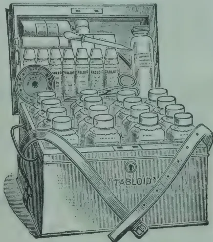
A compact yet comprehensive equipment containing medicaments, dressings, etc., which always maintain their efficiency in tropical climates.
Particularly adapted to the needs of settlers and planters. The ideal medical equipment for out-stations, works and camps.
Obtainable from all Chemists and Stores
BURROUGHS WELLCOME & CO., LONDON
AND COOK'S BUILDING, HORNBY ROAD, BOMBAY
xx 2703
All Rights Reserved
As many enquiries are received in the office of the Territorial Veterinarian, the following extract from DR. B. F. KAUPP'S "Diseases of Poultry" may prove of benefit to all poultry raisers in the Territory.
"Intestinal parasites in small numbers infest all fowls without doing perceptible harm, but there is always possibility that conditions for their propagation may become so favourable as to turn the mildest infestation into devastating parasitism. Indeed, this very thing has occurred numberless times, and not a few flocks have been entirely destroyed by it. The death of any bird from the effects of internal parasites should be looked upon with apprehension.
"Flocks infested with large numbers of round worms are unprofitable in the extreme. The birds are unthrifty, appear unkempt and suffer from diarrhoea and constipation. Young fowls are most severely affected.
"Treatment — It is necessary to keep the yard and henhouse clean, lime scattered on the floor and about the yard, and the water for the birds kept
JULY, 1920.]51in a clean fountain and the food in clean troughs, made for the purpose and disinfected daily, and so constructed that birds cannot step into them. If at all possible, birds should be moved upon new ground. The parasites' eggs in the droppings removed from the henhouse may be destroyed by mixing the manure with unslaked lime.
"The birds may be given one teaspoonful of turpentine followed by a tablespoonful of olive oil. If the crop is full the dose of turpentine should be double. Five to ten-grain doses of areca-nut is good treatment. The areca-nut can be mixed with soft food and fed from a clean trough; it acts as a cathartic as well as a parasiticide. One-grain doses of thymol are an excellent treatment for round worms.
"Eradication of Worms.—A campaign to control the round worms of all kinds infesting the intestinal tract involves both treatment of the fowls in order to expel the worms, and disinfection and sanitation of the coops and runways to prevent infestation.
"Birds do not like mash in which there is incorporated turpentine or areca-nut. Tobacco stems finely chopped and steeped in hot water for two hours and mixed with mash gives uniformly good results and is readily eaten by the fowls. Experiments in this laboratory show that badly infested birds expel large numbers of worms and upon post-mortem examination are entirely freed from the infestation. Two doses should be given three days apart. For each fifty fowls one-half pound finely-chopped tobacco stems should be used. The birds should be fed this mixture in the morning or on an empty crop. In the evening give to each fifty fowls five ounces of epsom salts dissolved in water and this water mixed with mash. Do not give any other feed for that day. For chicks give doses in proportion to the size of the birds. This treatment will cost about one cent for each ten birds.
"The treated birds should be moved to yards and houses free from infestation. In yards where infested fowls have been kept it has been found upon microscopic examination that the soil may be infested by the eggs of the round intestinal worms to a depth of two inches below the surface. For disinfecting the yards a corrosive sublimate solution 1 to 1,000 may be used. This is applied by aid of a sprinkling can after all rubbish has been swept up and removed. One gallon of the solution should be used for each ten square feet.
"The house should be thoroughly cleansed and every square inch saturated with the corrosive sublimate solution. The litter removed from the yard and house should be hauled out and scattered on a field used for raising crops and removed from the fowls.
"Mercuric chlorid (corrosive sublimate) is poisonous, and care must be taken not to allow the birds to drink it or the food or water to become contaminated with it. After the food and water troughs have been thoroughly scrubbed inside and out with the solution, they must be rinsed with clear water."—HAWAIIAN FORESTER AND AGRICULTURIST, Vol. XVII, No. 2.
52[JULY, 1920.Modern methods of bee-culture, as adopted in most European countries, Australia, the United States of America and elsewhere, have for their primary object the production of honey, since the latter realises a better price than wax. In former times when bees were kept in "skeps" or boxes a large number of swarms were destroyed annually, and the whole of the comb after the honey had been extracted, was converted into wax. As one result, of the use of movable box hives it is no longer necessary to destroy all the comb, but merely to remove the cell-capping and extract the honey by means of a machine. The empty comb can then be returned to the hive and re-filled. As bees consume a large quantity of honey in order to make wax, the modern bee-keeper effects a considerable saving in this respect by using the same comb several times. This practice, however, withholds a considerable quantity of wax from the market. The modern custom of retailing honey in the comb, owing to the ease with which extracted honey can be adulterated, likewise prevents a quantity of wax from finding its way to the market as such.
In consequence of the inability of European and other countries where modern methods of bee-culture are practised, to meet the increasing demands of manufacturers for this product, the markets have come to depend more and more for their supplies on countries where the wax produced by wild bees is collected and exported. This industry is at the present time attracting a considerable amount of attention, especially in Eastern, Central, and Western Africa, and for that reason it is of interest to give some account of the methods adopted in preparing beeswax for the market.
Wild wax seldom equals the cultivated product in quality, and this is frequently due to careless methods of preparing it for export, and to adulteration. By paying more attention to the few simple details connected with the process of preparing beeswax for export, it would be possible to produce wax from wild bees almost equal in quality to the European article and which would command a similar price on the market.
There are several methods of "rendering" wax, as the process of separating wax from honey and impurities is termed, and in some countries special appliances are in use for this purpose. In many cases, however, these appliances are too delicate or too complicated in structure for native use and in such countries one or more of the following simple methods is recommended.
The melting of beeswax can be effected whether by using sun heat, direct fire heat, boiling water or steam. In a melted state beeswax readily separates from such foreign substances as may be contained in it, and owing to its lower specific gravity will float on the surface of the water,
JULY, 1920.]53A simple method of rendering wax, and one formerly adopted by bee-keepers in this country and elsewhere, is to extract as much honey as possible from the comb, first by draining and then by pressure in a press of the ordinary copying-press type, and finally by melting it in presence of water, which dissolves out any residual honey which may cling to the pressed wax. While melted, the wax is strained through calico to remove solid impurities, and is finally re-melted over a fire to remove water, after which it is poured into moulds to set. Care is required in carrying out the final melting as burning may occur and when this happens a dark-coloured wax of low market value is produced.
Another method followed by bee-keepers who have not adopted modern appliances is to place the comb, after the honey has been extracted, in a canvas bag, which is kept below the surface of water, contained in a copper or other large vessel, by being weighted with stones. If the comb contains "brood" it is allowed to soak in water for twenty-four hours before being placed in the copper, the object being to fill the dry cocoons with water, which will prevent them absorbing the melted wax. The water in the copper is next heated, and as the wax melts it passes through the canvas bag and rises to the surface of the water, leaving behind in the bag all solid impurities. The bag is then taken out of the copper and squeezed between two pieces of wood to extract as much wax as possible, and the surface of the melted wax in the copper is frequently skimmed to remove scum and other impurities. A cloth is then thrown over the vessel, and the wax and water allowed to cool as slowly as possible. The wax solidifies into a cake, which can easily be removed from the water. On the under side of the cake there is usually a discoloured layer containing impurities and this is scraped off and worked up with the next batch of crude wax. The remainder is broken up into small pieces, re-melted and poured into moulds to set. Provided that care is taken (1) not to boil the water too fast or for too long a time, and (2) to prevent burning during the final melting, this method produces clean wax of good colour, but if either of these precautions be neglected it becomes dry and brittle, and of a brownish hue. The outfit required for the foregoing operations is simple and obtainable almost everywhere.
Of the modern appliances for rendering wax one of the simplest is the "Solar wax extractor," which is in common use in the United States, Australia and elsewhere. This consists of a wooden box with a sloping double glazed lid. Inside the box, and raised some distance from its floor, an inclined tin tray is fixed. The comb is placed on the tray, the lid tightly closed, and the box exposed to the sun. The temperature inside the box rapidly rises, and when it reaches about 147 F. the wax melts and runs off the sloping tray into a vessel beneath, leaving impurities behind, caught by a wire gauze strainer. This appliance is admirably suited to warm countries, and wax obtained by its use is of good quality, and requires no further refining. It is, however, not suitable for rendering comb containing brood or other gross impurities. In treating comb of this description it is best to extract the wax by one of the methods mentioned above, and then to clarify it by means of the "Solar extractor." Most of the other appliances are provided with a screw-press by means of which the wax is forced through strainers after being melted by means of hot water or steam.—JOURN. OF JAMAICA AGRIC. SOC., Vol. XXIV, No. 3.
54[JULY, 1920.Of the three species of Bassia commonly met with in India the principal one is B. latifolia (Roxb.) indigenous to the forests of Central India. It is known by the vernacular names of "mowra," "mahua" "mhoura" and "mohwa." In South India and Ceylon its place is taken by B. longifolia which is put to the same economic uses. The third tree is B. butyracea of the sub-Himalayan tract, known as the Indian butter-tree.
The seeds of these trees yield an important commercial product in the form of the valuable edible fat known as Illipe butter, largely employed by the natives as a foodstuff. Before the war the export of seeds to Europe was considerable, being mainly utilised in Germany and Belgium for the manufacture of margarine, soap, candles, etc. Bassia kernels and fat form the subject of articles previously published in the Imperial Institute Bulletin (1911, 9, 228; 1915, 13, 342). The trade in the kernels, and the nature and uses of the fat and the residual cake and meal are also dealt with in the Imperial Institute Monograph on Oil Seeds and Feeding Cakes (London: John Murray, 1915).
Amongst the native population of India the chief importance of the mowra tree lies in the flowers, which are rich in sugar and highly valued as a foodstuff and as the source of a spirituous liquor. Some conception of the value put upon the flowers for these purposes by the natives is gained from the estimate made thirty-three years ago, that in the Central Provinces over 1,000,000 people used the corollas of the mowra as a regular article of food, each person consuming about 80 lb. per annum. In the Bombay Presidency they are also used for domestic consumption on a large scale and throughout India are looked upon as a valuable reserve in famine years. The flowers B. butyracea are not eaten, but a syrup prepared from them is boiled down yielding a sugar about equal in quality to date sugar.
The mowra tree sheds its leaves in February and the flowers appear in March and April, at which time the ground beneath the trees is carefully cleared.
The flowers have a thick, juicy, globe-shaped corolla of a pale cream colour, enclosed at the base in a velvety chocolate-coloured calyx. The corollas fall in the early hours of the morning and are collected by the women and children. They are spread out to dry on mats in the sun, when they wither to half their weight and develop a brownish-red colour. In some cases the flowers are collected before they drop, and in many places it is the practice to remove only the corollas, leaving the pistil to ripen to a fruit. A tree will yield 200-300 lb. of flowers in a year.
When fresh the flowers are extremely sweet with a peculiar pungent flavour and a characteristic odour. When dry the peculiar pungent is less
JULY, 1920.]55perceptible, particularly if the stamens are removed, and the flavour then resembles that of figs. The flowers are eaten either fresh or dried, and cooked in many different ways, with sal seeds, rice shredded coconut, or flour.
The greater portion of the crop of flowers is used for the preparation by fermentation of daru or mohwa spirit. For this purpose jars holding from 10 to 20 gallons are charged with 10 to 20 seers of dried flowers, spent-wash and water. In some cases molasses is added and may replace as much as half the quantity of the flowers. The mixture is left to ferment, which requires from 3 to 7 days according to temperature, and the liquor is then distilled from crude earthen pots. The distillate so produced ranges from 60° to 90° under proof. A second distillation is sometimes made raising the strength to 25° under proof. Native spirit prepared in the way described has an offensive butyraceous odour and is rich in fusel oil, one sample examined by ELSWORTHY containing 3 per cent. of fusel oil (JOURN. SOC. CHEM. INDUST. 1887, 6, 23). On rectification this unpleasant odour is largely removed. By the native method 1 maund (82 2/7 lb.) of dried flowers yields about 2.12 gallons of proof spirit, but in England it was found that over 6 gallons of proof spirit could be obtained from 1 cwt. of the flowers. It has been found that mowra flowers which have been kept for some months yield a better spirit than when quite fresh, but if over twelve months old they are not so well suited for distillation.
About 1888 there was a considerable export of the flowers to Marseilles for use in making a cheap brandy; but the French Government, in order to protect the home grape industry, prohibited the import.
The composition of the flowers has been investigated at different times, and the results vary considerably, particularly in respect of the quantity and nature of the sugar present. The total amount of sugar recorded in the flowers of B. latifolia varies from 40 to 70 per cent. The quantity of cane sugar recorded varies from 3 to 17 per cent., and that of invert sugar from 40 to 53 per cent., whilst one author has stated that the sugar is entirely invert sugar. The dried flowers of B. longifolia have been stated to contain about 70 per cent. of sugar. Only a small quantity of protein is present, the maximum amount recorded in either species being 7.25 per cent.
Thirty years ago attention was directed to the richness of Bassia flowers in sugar and the possibility of their being used in India as a source of sugar for export; but when it was established that except for a very slight proportion the sugar was uncrystallisable and therefore of little value except perhaps as a brewing sugar, the interest from this point of view died down. To-day, with an enormous European production of beet sugar to compete with, the probability of Bassia flowers being called upon to supply any part of the world's sugar requirements is more remote than ever.
During the war interest was centred in the production of acetone from Bassia flowers in India to supply the local demand in connection with the manufacture of munition. The acetone was produced by the now well-known special fermentation process, and it has been alleged that the yield from the flowers of Bassia latifolia was one-tenth of their weight, or nearly ten times as much as is obtainable by distilling wood. The demand for acetone in India in peace times would not be large enough to justify the available
56[JULY, 1920.supplies of flowers being entirely devoted to the manufacture of that product, but there remains the possibility of their being used for the manufacture of industrial alcohol. Derived from a forest tree, the other products of which are also of considerable economic value, they appear to represent an exceptionally cheap source. The yield of alcohol from the flowers is high compared with that from potatos and other materials commonly used. It has been stated that about 90 gallons of 95 per cent. alcohol is obtainable from 1 ton of dried flowers.
In view of the extended use that is now being made of alcohol for power purposes it seems likely that the most profitable way of utilising the flowers would be as a source of a mixed motor spirit of the "natalite" type for local use in India. That motor spirit can be produced on a manufacturing scale in India from Bassia flowers has already been demonstrated, and it is stated that running trials with the spirit proved satisfactory.
"Natalite" is mainly a mixture of alcohol and ether and its manufacture involves not only the production of alcohol from the flowers but of ether from the alcohol. It would be necessary to set up an extensive plant for this purpose and whether such a procedure would be payable depends largely on the cost of collecting the raw material, which in turn is dependent to a great extent on the quantity available.
According to information supplied to the Inter-Departmental Committee on Alcohol Motor-Fuel by the Director of Commerce and Industries to H. E. H. the Nizam of Hyderabad, the total cost of collecting and drying the flowers and delivering them to a factory in the zone of growth amounts to £1. 10s. per ton. This estimate, however, refers only to Hyderabad, where the conditions are particularly favourable owing to large numbers of the tree occurring together. In regions where the tree is more scattered the cost delivered to a factory would naturally be higher, and in such cases it would probably not pay to utilise the flowers on a commercial scale, unless the tree was cultivated for the purpose.
It has been estimated that in the Hyderabad State alone there are already sufficient Bassia trees for the production of 700,000 gallons of proof spirit per annum, in addition to that necessary for the local liquor requirements.
The mowrà tree appears to be decreasing in some districts. This is due partly to the fact that the dead leaves and grass under the trees are cleared away and burnt, in order to facilitate the collection of the flowers, with the result that natural regeneration is hindered. It is important therefore that attempts should be made to encourage the cultivation of the tree, for in addition to the question of the production of alcohol from the flowers, and the value of the seed as a source of oil, the flowers form a valuable food for the natives, particularly in famine years. The tree is well adapted to withstand drought, and is specially suited for planting on dry and waste lands, where little else will grow. G. M. RYAN (INDIAN FORESTER, 1918, 44,302) suggests that if the trees are planted about fifteen to twenty per acre the junglewood growing between would afford a supply of wood for fuel. The tree takes about twenty years to produce flowers and seeds in large quantity, but during this period the land need not be entirely unproductive if interplanting were adopted at first. Experiments conducted in Assam during the past ten years have shown that, owing to the long tap root, the Bassia seedlings do not transplant well, and therefore the seeds should be planted in situ.—BULL. OF THE IMPERIAL INSTITUTE, Vol. XVII, No. 3.
9 JULY, 1920.]7This is a minor crop which is not extensively cultivated in Ceylon and the Colony's requirements are principally imported from India.
The following is a note written by MR. K. CHINNASWAMI PILLAI, Agricultural Instructor, Northern Province, Jaffna :—
Main types of Sesamè grown.—Though there are many types of this crop, they all come under three different kinds :—White, Black and Brown seeded. In some flowers are white, leaves large and irregularly lobed. In others, the flowers are pink or dark red, leaves long, narrow and almost entire. Some take 3 months to mature while others 4 and even more (sometimes 8 months.)
White-seeded variety—has broader leaves of a more bright colour and the flowers are paler than the black variety. The seed is either pure white or of ashy colour. The growth is very short. This produces oil of sweetish taste but not so sweet as in black seed and so considered intermediate. This is invariably sown in June and harvested in September.
Black-seeded variety—grows taller than white and is cultivated in most places. This yields a superior oil which is generally and highly esteemed for medicinal purposes and also used in Indian perfumes. This is sown in the month of March or April. This gives the largest percentage of oil.
Brown-seeded variety.—This is considered inferior in every respect. Over 200 types of this crop were grown at Tatkong in Burma by the Agricultural Department and a selection of 24 has been made for trial on a larger scale and for analysis of oil yield.
In the Central Provinces in India, a variety of til selected some years ago is now being sown over 50,000 acres and has practically replaced the whole area under the crop in Hosangabad and yields a high percentage of oil of superior quality.
Sesamè is grown on some 5 million acres in India and the yield is a little short of 5 lakhs of tons.
In Burma half of the extent grown in India may be a fair estimate. In Ceylon, the Sesamè grown is hardly sufficient to meet the local requirements and it is largely imported from India to make up the deficiency.
Sesamè is on a large scale exported from India to France and the United Kingdom. With regard to reliable dealers of this in Ceylon, India and Burma some of the leading firms in Colombo, Bombay, Tuticorin, Karikal, Pondicherry, Nagapatam, Madras, Cocoanada, Calcutta and Rangoon—which are the chief ports of transport—may be referred.
Soil and Season.—Gingelly is grown on 3 kinds of lands—wet, dry and garden lands. Whenever it is sown in wet land, the moisture of the preceding crop—chiefly paddy—is usually sufficient to start with, i.e., sown in the month of February and March, soon after the harvest of the preceding crop. The slight rains in April and May matures it. In dry lands, it is grown in two seasons. In the hot weather it is sown in the month of April and May; also sown in the month of July and reaped in November. In garden lands, this is sown under irrigation in the months of January and April or May.
58[JULY, 1920.Gingelly is a very precarious crop. Summer is the best season for harvesting. Heavy rains especially at the time of flowering destroy the crop. Sowing should therefore be done at a time so that the harvest may be in a dry season. To avoid the risk of total failure, it is desirable to sow this as a mixed crop with a pulse such as horse-gram, green gram, etc., or with a cereal such as sorghum or industrial crop such as indigo.
Uses.—The oil is largely used for culinary purposes, ointments, medicinal preparations, Indian perfumes, softening tanned skins and hides, dyeing and also burning in lamps. Sometimes it is used as a varnish to give timber a blackish tinge.
The cake is a valuable food for milch and working cattle. The seeds are used in Hindu religious ceremonies; and as a sweet, after frying and cleaning, mixed with sugar or syrup, it is much appreciated for its nourishing and medicinal qualities.
A note by MR. V. RAMANATHAN, Agricultural Instructor, Mannar, appeared in the TROPICAL AGRICULTURIST for the month of April, 1917, which is reproduced here in order to render the information complete on the subject:—
There are two varieties of Gingelly (Sesamum Indicum) viz., Black and White, grown in Jaffna. Only the black variety is cultivated in low and inferior lands after the harvest of paddy. This is a four months' crop.
Soil—Loamy clay and sandy soils are used for the crop.
Season—It is important that the season chosen should be one when there should be little rainfall, and the best season for cultivation of this crop is found to be from March-April to June-July.
Cultivation.—The land is ploughed and cross-ploughed after the harvest of paddy and no manure is applied as this crop immediately follows the paddy crop. The seed is sown broadcast at the rate of about 2 measures per acre and covered by ploughing. The soil should not be too moist at the time of sowing. The seeds will germinate after a week. It will be advantageous if there will be a shower when the plants are a month old and at this stage they develop into a spreading growth. Also it is beneficial if there are one or two showers after the pods have been formed. There should not be any rain at the time of sowing, flowering and harvesting.
Harvesting.—The plants are cut when the pods on the top show signs of bursting and are made into a bulk to ferment. They are kept covered for about 6 days. On the 7th day the plants are taken from the bulk and spread on mats to dry in the sun for about 2 or 3 days. When the plants are dried well they are thrashed by beating with a stick and the seeds are separated by winnowing.
Process of Oil Extraction.—There are two methods of oil extraction, viz., by Chekku mills and by hand presses made locally.
Treatment of seed for the mills.—The cleaned seeds are put into a big bucket or a basket filled with water and allowed to soak for about 2 hours. The water is drained off when it turns to a dark colour and the water changed as often as is found necessary. Then the seeds are bruised in the bucket by a wooden pestle in order to remove the husk. The husks float in the water and are removed by being drained off with the water. The seeds are then spread on mats to dry in the sun. After drying for about 3 days the seeds are ready for the mill. One bushel of seeds gives about gallons of oil.
JULY, 1920.]59Locally made hand Press.—Two half-round wooden beams of about 10 in. by 7 ft. are loosely coupled at one end with rope. The end thus coupled is loosely fixed on a post and the other end of one of the beams is tightly fixed to another post. The oil is extracted as follows : the husked seeds are pounded in a wooden mortar with boiling water until they are reduced to a pulp. This is then filled into a specially made nar basket. This nar basket with the pulp is placed between the two wooden beams and by pressing the end of the beam which is not fixed to the post the oil is extracted. The oil thus extracted is considered to be in greater quantity and of better quality than that obtained by pressing in the chekku. This method of extraction is used only when the oil from a small quantity of seed is to be extracted.—
J. S. DE S.
In view of the new areas coming under the cultivation of food crops the question of suitable hedge or boundary plants becomes an important one, particularly at a time when the cost of a wire fence is prohibitive. Moreover a wire fence, apart from the cost, does not satisfactorily answer the purpose, unless it is barbed-wire or an entanglement of barbed-wire. Hedging in most countries is of course regarded as an essential part in farming, and well-kept hedgerows are often an attractive feature of the country side. The ideal plant for a hedge or live fence is not always easy to find, especially in the tropics, most plants being either too slow or too rapid in growth, in the latter case being too sappy and therefore troublesome to maintain. In addition to serving as a barrier against cattle, vermin, and trespassers, a hedge may also serve to some extent as a windbreak. It can also of course be made more or less ornamental, if desired, when planted with suitable kinds and regularly trimmed and looked after.
The essential requirement at present is a plant which will serve as a protective boundary, require little attention in upkeep, and if possible yield a bye-product. The selection from which to choose with this object strictly in view is limited and dependent on local conditions. Among the principal plants at present used by villagers for hedges in their fields are Jatropha Curcas (" Endaru "), Pedilanthus, Euphorbia Tirucalli (" Milk hedge "), dwarf Pandanus and sometimes Cerbera Odollam (" Gon-kaduru "), all of which are practically of no economic value whatever. Neither are they of much use as a hedge, their only recommendation being that they grow readily and easily strike root when planted as twigs or branches.
Few plants are likely to answer the dual purposes of a barrier hedge and crop producer better than the Sisal hemp (Agave sisalana) and " Mauritius hemp " or " Aloe " (Furcræa gigantea), both important fibre plants. Commercial fibres are an expensive commodity at the present time, and the production of these in a marketable quantity would be likely to prove a profitable supplementary product for the paddy cultivator. Apart, however, from the question of extracting commercial fibre for export from the leaves of these plants, there is a new and increasing local demand for suitable fibres for hat-, basket-, and mat-weaving, also for making twine and cordage. The writer has lately seen excellent twine and fancy mats made locally for sale from Furcræa fibre. True, both these fibre plants are not new to Ceylon, and the idea of exploiting their fibre has claimed much attention some years ago. The Furcræa was largely planted along the railway up-country for the purpose of forming a live fence and also with a view of serving as a source of commercial fibre, and the Government offered certain facilities for the production of this and other fibres as a minor industry, but other products proved too strong rivals.
60[JULY, 1920.As a barrier hedge the Sisal-hemp has chiefly to recommend it, its strong, rigid, sharp-pointed leaves, which are usually smooth along the margins, though occasionally furnished with a few prickles near the base. The Furcræa is characterised by thinner and longer leaves, which are always furnished with prickles along the margins, especially towards the base, the terminal spine being less pronounced than in the Sisal-hemp leaf. For a barrier fence in the low-country the Sisal-hemp is thus preferable. The plants should be placed closer than in a plantation, a double row with the plants alternating, allowing about 4 feet between the plants each way, being advisable. In less than two years they should form a fairly formidable boundary.
Among other plants which on account of their thorny character and shrubby growth should answer the purpose of an impenetrable fence or hedge, the following may be specially mentioned. These however are at present practically of no economic value.
"Hin-karamba" (Carissa spinarum) is a small shrub with close and intricate branching, very sharp, rigid and forked spines. It is known to the Tamils as "Chirukila" or "Kilatti." It would make an excellent barrier and, fortunately, should not be difficult to find in quantity, being common in the semi-dry region, from Kurunegala northwards. Seeds should be sown thinly in situ. "Maha-karamba" (Carissa carandas), or "Perunkila" of the Tamils, is similarly a very thorny dense-growing shrub, but is rather rare and difficult to procure.
"Andara" (Dichrostachys cinerea), called "Vidattal" by the Tamils, is a common thorny shrub with numerous forked branches, common in dry low-country districts.
"Daluk" (Euphorbia antiquorum) is also a common shrub or small spreading tree, without leaves, but with numerous thorny branches. This plant is generally avoided by man and beast, owing to its thorny character, its milky juice containing an acrid poison which causes ulcers and irritation of the skin.
Madras Thorn (Pithecolobium dulce). The name "Andara" is also given to this tree, which has become practically naturalised about Colombo. Though a good-sized tree it is capable of forming a dense hedge, if grown from seed and sown fairly thickly where it is to grow. But it requires frequent clipping or cutting back, as otherwise it grows into large straggling overhanging shrubs or trees.
Jerusalem Thorn (Parkinsonia aculeata) is a small thorny shrub, introduced from Tropical America and become naturalised in the Northern Province, especially about Anuradhapura and Jaffna. It is suited only to the dry region. Mr. C. DRIEBERG states that it is used for hedges in the Hambantota district.
Uguessa (Flacourtia Ramontchi) known to the Tamils as "Katukali," is a small tree or shrub, with long spinous twigs on the young branches and large compound branched spines on the trunk. It should make an impenetrable hedge and, being often cultivated for its edible fruit, should not be difficult to procure. It is indigenous in low-country jungles.
"Mul-Kilivai" (Balsamodendron Berryi), a small, much-branched spiny tree, is commonly used for hedges in the dry region, especially in Jaffna and down the west coast to Negombo. It is not suited to wet districts, where the plant loses its spiny character and puts on a different appearance.
The "Sapan" (Cæsalpina Sapan) a thorny straggling climbing shrub, can be adapted to form an efficient barrier fence by interlacing the branches, but it requires attention as otherwise it is liable to grow out of bounds. It thrives anywhere in the low-country, but probably not in the dry region. The heart-wood furnishes the "Sapan wood" which is of commercial value for the sake of the dye obtained from it, but grown as a hedge it would naturally not attain sufficient thickness for the purpose.
JULY, 1920.]61For up-country fences different plants can be adapted, according to elevation and locality. Most of those mentioned in the foregoing will thrive up to about 3,000 feet, some even higher, provided the climate is not too wet.
The Mauritius hemp (Furcraea) will thrive up to 5,000 feet. From about 3,000 feet altitude various sub-tropical kinds will be found suitable according to requirements as Duranta, Frenela, Cryptomeria, dwarf Cupressus, certain thorny Acacias, and so on. From about 5,000 to over 6,000 feet, good hedges may be made by several of the latter as well as by the Chinese Berberis (Berberis Fortunei), Colletia cruciata (an impenetrable thorny shrub), Bramble (Rubus), and the Gorse (Ulex europeus) which latter has become naturalised in and around Nuwara Eliya.
H. F. M.
There are various methods of terracing adopted in various parts of the world.
The main idea of terracing is to secure soil to a sufficient depth to facilitate cultivation in those places where the depth of the soil will not permit proper cultivation. The Kandyan system of terracing undoubtedly fulfils this condition. By terracing we should not only aim to secure the sufficient quantity of soil to facilitate cultivation, but at the same time it ought to be the idea to look to other indispensable factors of plant growth and economy of labour.
From the scientific and economical point of view, the Kandyan system is open to criticism, although it can with advantage be adopted under certain conditions (namely steep slopes).
First from the scientific point of view the present system does not facilitate aeration in the soil. This condition can only be attained by permitting the water to percolate through the soil instead of allowing a surface flow from terrace to terrace as practised by the Kandyan. The facilitation of percolation encourages aeration in the soil, on which depends the plant sanitation, decomposition of various useful plant foods, and the physical condition of the soil.
Aeration accelerates the decomposition of complex substances into simpler forms suitable for plant assimilation.
Further it eliminates the injurious gases to plants that are very common in damp and improperly drained soils.
The above conditions are detrimental to healthy plant growth. Often it is a common sight to find pale, stunted sickly plants under such conditions in various parts of the country.
These main principles are sufficient for my purpose here, but now let us see what are the economical defects of the system. Taking for granted that a man can dig and remove about 100 cubic feet of soil on an average per day, one can imagine the amount of labour spent on the present system of terracing in Ceylon. In parts of India the following system of terracing is in use, and might be adopted with advantage on more gentle slopes, especially on the present new openings devoted to food production.
The system consists in digging a drain across the slope to a depth of about one foot, the soil being placed in a mound above the drain. The soil between the mound and the next drain above is forked which tends to fill up to the level of the mound. The next season the drain is deepened and the mound raised higher, the same process of cultivation being followed to help
62[JULY, 1920.to form the terrace. The following season the process is repeated with the result that a fairly level terrace is ultimately formed, considerably minimising the effect of wash.
The planting of the mounds with Desmodium heterophyllum or other low growing plants, would further help to bind the soil.
M. K. B.
In the second edition of MR. A. H. BENSON'S work on CITRUS CULTURE he mentions "collar rot" and the remedy for this disease. He also states that, if an orange tree is planted on badly-drained clayey soil, no treatment will prevent or cure collar rot.
The Government Viticulturist of Victoria (MR. F. DE CASTELLA) (1909), writing in the February number of the JOURNAL OF AGRICULTURE of that State on "The Orange in Eastern Spain" describes a remarkable method adopted in that country for the prevention of collar rot. He says:—
"The most remarkable peculiarity in connection with the cultivation of citrus fruits in the Levante is the system of growing the trees over a hole, with the collar and starting point of the main roots exposed to the air. This system is very generally followed. It was at the Granja Valenciana (experimental station and school at Valencia) that I first remarked this curious method, but all the orange trees which I saw subsequently were treated in the same way. The tree is reared, budded, and planted, in the usual way, and until about three or four years old is treated much as we would do in Victoria. By this time its surface roots have become sufficiently strong to support it; a hole is dug underneath it, and the tap root is entirely cut off with a saw.
"The hole, which is a foot or so in diameter, and of about the same depth, is not filled up. It remains always open, any dirt or rubbish which may fall into it being regularly removed. When irrigating, which is usually done by flooding, a small dam is made around the tree at a distance of a couple of feet from it, to prevent water getting into the hole. The appearance of these trees is very striking; their bases may be compared to large spiders sitting over holes in the ground. The object of the treatment is to prevent collar rot and gumming (Mal de Goma), which used to be prevalent, but now seems to give little trouble. The sour orange stock is the one usually employed, even for lemons; lemons worked on lemon stock are said to be liable to Mal de Goma. The trees struck me as being very healthy. They were loaded with an abundant crop of fine fruit; in fact, everything seemed satisfactory excepting the price."—QUEENSLAND AGRIC. JOURN. Vol. XIII, May 1920.
It is not a euphonious name, but 'dunk' is the West Indian name of the fruit of the tree Zizyphus jujuba. In California, where some attention is being paid to the cultivation of superior varieties imported from China, it is called more appropriately 'jujube.'
JULY, 1920.]63A small round variety is naturalized in Barbados, and is found also in some of the Northern Islands. The fruit of this variety cannot be said to be delicious when eaten ripe, but the possibilities of it when preserved seem to be worth attention. In the CALIFORNIA CULTIVATOR, January 24, 1920, the following recipe for candying the jujube or dunk is given, which appears worthy of experiment.
The fruit should be dealt with as soon as possible after being picked, while firm and unwrinkled.
Make a syrup by dissolving 1 lb. of sugar in cup of hot water.
After washing the fruits in cold water, place them in the syrup and simmer over fire for two hours, but do not allow the syrup to boil up, or the skins of the fruit will split. At the end of the simmering process remove the fruits from the syrup, drain them, and place them on plates in the sun to dry. As soon as no longer 'sticky'—usually about three days—the fruit should be pierced many times with a large steel needle.
Again place the jujubes into syrup, and boil slowly from ten to twenty minutes; then remove the fruits from syrup, place them on a plate, and dry them in the air and sun for one or two days, according to weather conditions.
It is advisable, if the candied fruits are to be kept for any length of time, to wrap them in oiled paper.—AGRIC. NEWS, Vol. XIX, No. 469.
This crop is grown much more largely for fodder in the north than in South India. It is much more nutritious than fodder cholam, is quicker growing than the latter and if thickly sown ought to yield as heavily as fodder cholam and guinea grass. We learn that in Poona very large areas of cultivable land was put under fodder maize last year owing to a very severe famine. The land was heavily manured, and intensively cultured and seed was dibbled in furrows opened feet apart and covered with hand rakes. Water was gently applied through the furrows to permit of complete soaking. The soil was kept under mulch continually. Under such conditions even in the hot months of April and May it was possible to obtain a heavy yield of 10 to 12 tons per acre. As one crop is getting nearly ready to be harvested, another crop is sown between the feet rows. The older crop supplies sufficient shade, until the young crop germinates. In a year even four such crops are said to be taken on the same land.—JOURN. OF MADRAS AGRIC. STUDENTS' UNION, Vol. VIII, No. 3.
It is stated that there has been finally perfected in Honolulu a machine which will separate the fibre from the pulp of banana stems. As is well known, after the fruit is cut, the stem of the banana plant either dies to itself, or is cut away. For lack of a machine capable of dealing with these stems the valuable fibre contained in them has hitherto been wasted. The ordinary banana acreage is given as from 400 to 600 plants. From each of these it is expected that 2 lb. of fibre can be extracted by the newly invented machine. Besides extraction of the fibre the same machine separates the pulp which will make an admirable ingredient in paper stock. A banana plant consists of about 93 per cent. water, 3 per cent. fibre and 4 per cent. pulp. There appear to be great possibilities before this industry, both in the production of fibre and in the utilization of the pulp in paper manufacture.
—WEALTH OF INDIA, Vol. IX, No. 1.
64
[JULY, 1920.
METEOROLOGICAL.
JUNE, 1920.
| Station | Temperature | Mean Humidity % | Mean amount of cloud 0 = clear. 10 = overcast |
Mean Wind Direction during month | Daily Mean Velocity Miles | Rainfall | ||
|---|---|---|---|---|---|---|---|---|
| Mean Daily Shade | Difference from Average | Amount Inches | No. of Rainy days | Difference from Average | ||||
| Colombo Observatory | 80.0 | - 0.8 | 84 | 8.8 | WSW | 149 | 17.44 | 26 + 10.13 |
| Puttalam | 82.0 | - 0.1 | 80 | 6.4 | SW | 295 | 3.60 | 12 + 1.88 |
| Mannar | 84.6 | - 0.1 | 75 | 7.7 | SW | 215 | 0.10 | 2 - 0.51 |
| Jaffna | 84.4 | + 0.6 | 76 | 3.8 | SW | 430 | 0.94 | 1 + 0.23 |
| Trincomalee | 86.0 | + 0.4 | 68 | 7.8 | SW | 268 | 0.12 | 2 - 1.18 |
| Batticaloa | 84.8 | - 0.5 | 70 | 5.4 | SW | 132 | 1.62 | 10 + 0.60 |
| Hambantota | 82.4 | + 0.8 | 76 | 6.8 | WSW | 359 | 2.30 | 13 - 0.04 |
| Galle | 80.0 | - 0.6 | 84 | 7.8 | WNW | 292 | 14.84 | 24 + 6.73 |
| Ratnapura | 80.0 | - 0.6 | 82 | 8.8 | — | — | 27.58 | 29 + 7.85 |
| Anu pura | 81.4 | - 1.8 | 78 | 6.3 | — | — | 1.56 | 12 + 0.15 |
| Kurunegala | 79.7 | - 1.2 | 84 | 8.6 | — | — | 12.08 | 25 + 3.86 |
| Kandy | 75.4 | - 1.2 | 78 | 8.9 | — | — | 19.83 | 26 + 10.45 |
| Badulla | 75.3 | 0 | 78 | 7.2 | — | — | 2.15 | 15 - 0.12 |
| Diyatalawa | 70.0 | - 0.5 | 72 | 6.6 | — | — | 2.90 | 9 + 0.90 |
| Hakgala | 62.0 | + 0.2 | 86 | 8.7 | — | — | 8.42 | 28 + 0.73 |
| N. Eliya | 60.2 | + 0.3 | 90 | 9.4 | — | — | 16.36 | 29 + 3.63 |
The rainfall for the month was distinctly above the average and this excess was most marked at places in the South-West quarter of the Island whose average for June is itself comparatively high.
The stations given in detail above hardly bring this point out sufficiently. Examination of the fuller list of stations which is printed in the supplement to the Government Gazette will show that about ten per cent. of them recorded over 30 inches this month and nearly the same proportion recorded a maximum of not less than 5 inches in a day. The highest totals are Watawala 62.80 inches Midland Group, Nawalapitiya 58.42 inches, and Padupola 53.97 inches.
The barometric pressure was on the whole slightly above the average, the gradient being of the usual South-West monsoon type and steeper than usual. Temperature was about normal, cloudiness above normal. Humidity was rather below the average in the low-country, rather above it up-country. Wind direction was generally South-West. On the whole, there was no marked deviation from normal of wind strength.
A. J. RAMFORD,
Supdt., Observatory.
ANIMAL DISEASE RETURN FOR THE MONTH ENDED 30th JUNE, 1920.
| Province, &c. | Disease. | No. of Cases up to date since Jan. 1st. 1920. | Fresh Recoveries. | Deaths. | Bal- ance Ill. | No. Shot. |
|---|---|---|---|---|---|---|
| Western | Rinderpest | 838 | 212 | 572 | 27 | 47 |
| Foot-and-mouth disease | 414 | 14 | 3 | — | — | |
| Colombo Municipality | Anthrax | — | — | — | — | — |
| Rinderpest | 504 | 39 | — | — | — | |
| Foot-and-mouth disease | 133 | — | — | — | — | |
| Cattle Quarantine Station | Anthrax | 2 | — | — | — | — |
| Rabies | — | — | — | — | — | |
| Rinderpest | 12 | 1 | — | — | — | |
| Central | Foot-and-mouth disease | 59 | — | — | — | — |
| Anthrax | 117 | 39 | — | — | — | |
| Rinderpest | 2 | — | 1 | — | — | |
| Southern | Foot-and-mouth disease | 252 | 38 | 194 | 58 | — |
| Anthrax | 2 | — | 2 | — | — | |
| Haemorrhagic Septicæmia | 12 | — | 9 | — | — | |
| Northern | Rinderpest | Free | — | — | — | — |
| Foot-and-mouth disease | Free | — | — | — | — | |
| Eastern | Anthrax | Free | — | — | — | — |
| Rinderpest | 2 | — | 2 | — | — | |
| North-Western | Foot-and-mouth disease | 9 | 9 | 9 | — | — |
| Anthrax | 664 | 155 | 417 | 31 | 56 | |
| North-Central | Rinderpest | 41 | — | 41 | — | — |
| Foot-and-mouth disease | — | — | — | — | — | |
| Anthrax | 27 | 1 | 27 | — | — | |
| Uva | Rinderpest | — | — | — | — | — |
| Foot-and-mouth disease | 12 | — | 12 | — | — | |
| Anthrax | 38 | — | 38 | — | — | |
| Sabaragamuwa | Rinderpest | 4 | — | 3 | — | 1 |
| Foot-and-mouth disease | 274 | 95 | 238 | 35 | — | |
| Anthrax | 14 | 3 | 14 | — | — | |
| Haemorrhagic Septicæmia | — | — | — | — | — |
Colombo, 9th July, 1920. E. T. HOOLE, Acting G.V.S.
VOL. LV.
PERADENIYA, AUGUST, 1920.
No. 2.
In most countries motor tractors for cultivation purposes have greatly developed during the past few years. In European countries when there was a very considerable shortage of labour and, in some places, of horses, motor tractors were employed with success. The improvement of these tractors has been considerable during the past two or three years. Reliable types are now upon the market and in countries where wages for agricultural labour is high their employment is becoming more and more popular.
The question arises as to how far such tractors can be employed in the agricultural industries of Ceylon, and how far the various types evolved for European and American needs are suited to our conditions. It is only after extensive trials that information on these points is likely to be forthcoming and therefore the tests of the different machines imported during the past year are of importance.
There are now a number of tractors employed on coconut estates in Ceylon. Figures of importance can be procured from the working of these machines if estate owners and superintendents will record in detail costs of maintenance, running costs, and fuel consumption.
What has to be decided on coconut estates is firstly whether motor tractors can do as good work in connexion with ploughing and disc-harrowing as the implements drawn by animal power and secondly, whether this work can be done as cheaply as or at a less cost than when animal traction is employed. Thirdly, it has to be decided as to which is the best type of machine for the work required to be undertaken, and whether changes or
66[AUGUST, 1920.improvements can be effected. Further, it has to be ascertained whether motor tractors can be used upon estates other than coconuts, and whether they can be economically employed upon paddy lands or other lands under the cultivation of food stuffs.
The broken nature of the majority of the land under cultivation up-country naturally makes it impossible to employ mechanically drawn ploughs or other implements, whilst it is questionable whether—on account of the possibility of disease—their use in rubber estates except during its first few years of growth is to be advocated. Rubber lands in their early stages are full of stumps and this makes the employment of ploughs or harrows difficult if not impossible.
Land in food stuffs and especially paddy lands offer greater possibilities for cultivation by implements and trials upon such lands are desirable. There are large areas of paddy lands which can be ploughed and partially prepared with tractors and there are other implements available for the different cultivation operations. Whether such implements can be employed in the Colony remains to be tested. Such tests must be full and complete and carried out under supervision and control. The costs of such operations must be most carefully scrutinized.
With the present low costs for manual labour and for the employment of cattle and buffalos it may be difficult for tractors to compete upon paddy lands in the Colony, but a definite opinion could not be expressed until after trials had been carried out. Again, another factor that has to be kept in view is the increasing shortage of manual labour. The situation will become more difficult in future years. The whole food production question is so intricately connected with the question of labour, that any means of increasing the acreage under cultivation with minimum of labour deserves to be closely investigated.
Trials with various types of Motor Tractors have been carried out in India and reports on the merits and disadvantages of different types available. In Ceylon, only a limited number of types have been introduced and it is proposed to carry on trials with a view to testing their capabilities for different classes of work.
Motor traction has made enormous strides in recent years in America and Europe and there is every reason to suppose that they can be employed with advantage in the colony. Definite information resulting from actual experiments is necessary for the guidance of cultivators. With the arrangement of trials in different parts of the colony much data of value should be accumulated.
AUGUST, 1920.]67The following particulars taken from Leaflet No. 7 of the Department of Agriculture, Madras, may prove useful to those who cultivate this important food product :—
1. Soil and Drainage.—The crop is grown in all kinds of soils which are well drained. It is a common crop in the sandy tracts of Ponnani taluk and laterite slopes and valleys of the other taluks of Malabar. In virgin red loamy soils the crop yields very heavily. Drainage is a very essential condition for the success of all crops. This is particularly true of a root crop like tapioca. The land which would not admit of free drainage should never be selected for the cultivation.
2. Season.—This commences with the outburst of the south-west monsoon and extends up to October according to the nature of the soil. In low-lying situations where there would be sufficient moisture in the hot weather and too much of it in the monsoon, planting may be delayed up to October. But the best time for planting in high lying dry lands would be July-August.
3. Setts for Planting.—The crop is propagated by planting the stem. Green stems having very close leaf scars hardy and less pithy and as a consequence least liable to white-ant attacks are to be selected. They are cut into setts, 6 to 9 inches long, and the bottom ends which go into the ground are dipped into ashes and are pressed down into the soil leaving about 3 inches above ground. The planted setts are to be covered but lightly with paddy straw or some dried leaves.
4. Preparation of Land and Systems of Planting.—There are three systems of planting, namely: (a) ridge, (b) mound, (c) flat.
(a) Ridge.—In this system the ground is ploughed two or three times. The turfs and weeds are collected and heaped in rows 3 feet apart. From between the rows earth is taken and thrown on either side covering the turf so as to form ridges about 1 to feet high leaving just a foot wide trench in the middle. On the crust of the ridges setts are planted 2 feet apart.
(b) Mounds.—Ridges are formed as above, but narrow cross channels are made separating the long ridges into little mounds. Each of these little mounds receive a sett.
(c) Flat.—In this system the ground is well dug with mammottie 1 to feet deep. First a furrow is made close to the boundary bund, and leaves are applied along the furrows. The first furrow is then covered with earth taken out for making the second furrow and this latter is covered with the earth from the third furrow. Thus the whole field is worked up. Along the row supplied with leaves as stated above setts are planted. The same distance between setts, namely, 3 feet by 2 feet, is maintained in all the three systems. The flat system is the best; the heaviest yield is obtained when this is followed.
68[AUGUST, 1920]5. Manuring.—In virgin lands much manuring is not necessary for the first trial. The crop is an exhausting one and as such it requires heavy manuring. A handful of a mixture of well-rotten cattle manure and ashes is to be applied to each sett either at the time of planting or six weeks after, at the time of hoeing and weeding. The fish manure compost at the rate of one handful per plant has given excellent results.
6. After Cultivation and Harvest.—The crop has to be hoed and weeded twice at intervals of about two months. It is ready for harvest after eleven months. If there is sufficient moisture in the soil, harvest can be done by pulling out the stems. The broken roots, if any, are dug out separately. The yield varies from five to ten thousand pounds per acre. The value of the yield at the present price of one rupee per maund of 28 lb. would be over Rs. 200. The roots must be washed and skin removed. Then it may be cooked and eaten. It would be advisable to screen off the water in which it is boiled. For marketing purposes roots are cut into chips after washing and dried well in the sun. In this condition large quantities of roots are exported from Cochin and Travancore. When the roots are not required for immediate use they can be preserved long, when dried, as stated above. Out of the tapioca flour nice cakes can be prepared according to one's taste.
Tomatos are among the most universally used products of our home gardens, and there should be a few plants, no matter how small the garden. In order to have tomatos early, the seed must be sown in the house or hotbed or the plants purchased from some plant-grower who has the facilities for starting them early. Bonnie Best, Early Jewel, Acme, Globe, and Detroit are among the leading early sorts, while Improved Stones and Trophy are standard late varieties. Two small packets of seed, one of an early and one of a late variety, will produce enough plants for several family gardens, and it may be possible for one person to start the plants for an entire neighbourhood. If a window box is used for starting early plants of various kinds, a portion of the space in the box should be used for the tomato plants. Where a window box is not in use a cigar box filled with loose soil will serve as a seed bed, but the plants will have to be transplanted and given about 3 inches of space both ways as soon as they form one or two true leaves in addition to their two small seed leaves. Tomato seed comes up in about 5 or 6 days, and the seedlings will ordinarily be ready for transplanting in two weeks after the seed is sown. About 6 weeks will be required for growing the plants from the time of sowing the seed until they are ready for setting the garden.
A tray of fine, rich soil about 6 inches deep placed in a south window of a living room makes a good transplanting bed. The plants can be grown in quart berry boxes, in 3 inch flower pots, in tin cans with a few holes punched in their bottoms, or in paper bands. The essentials are to keep the plants growing rapidly from the start and to retain all the dirt attached to their roots when setting them in the garden.
AUGUST, 1920.]69The best method of growing tomatos in the city home garden is by pruning the plants to a single stem, or at most to two stems, and tying them to stakes or a trellis. By this method the plants can be set as close as two feet apart in each direction. When tied to stakes the plants are easy to cultivate. The fruit is clean because it is kept off the ground, and the tomatos ripen earlier than when the plants are not pruned or tied to stakes. Any stakes that are about inches in diameter and 4 to 5 feet long will answer. Frequently the plants are trained to horizontal wires stretched on small posts or to a trellis made of laths.
The tomato plants are pruned by pinching out the side shoots as they appear in the axis of the leaf, that is, where it joins the main stem. The fruit clusters appear on the opposite side of the stem where there is no leaf. The plants are tied to the stakes or other support by means of soft twine or with small strips of old cotton goods. Seedsmen have on sale a jute string which is especially made for tying tomatos. Loop the string around the stake so that it will not slip downward on the stake and then tie loosely below a leaf node in such a manner that the stem will be supported without the string binding it and injuring its growth. Four to seven fruit clusters will be formed on each plant, and if the plants are well cultivated and cared for they will continue to bear fruit throughout the season in the northern parts of the country. In the South, where the heat of midsummer kills tomato plants, a late crop may be planted for fall use.—FARMER'S BULLETIN 1044 U.S. DEPARTMENT OF AGRICULTURE, 1.
A note in the AGRICULTURAL NEWS, February 8, 1919, drew attention to an experiment conducted at the Botanic Station, Montserrat, in yam cultivation, as to whether it was profitable or not to provide stakes for the vines to run on. MR. ROBSON, the Curator, came to the conclusion that the increased yield produced by the staked plants would more than pay for the increased cost involved.
MR. ROBSON has recently forwarded a note upon a similar trial carried out in 1919 with the results obtained therefrom. Six rows of six different varieties of yam were planted on ordinary banks, to which pen manure had been supplied, 4 feet apart, the plants being 3 feet apart in the row. These rows were staked, and five rows unstaked were planted alongside as a control. The yams were planted on May 1, 1919, and reaped on January 19, 1920. The results showed that in every case there was a large increase in yield from the staked rows as compared with the unstaked ones, amounting to more than 100 per cent. on the total yield, thus confirming the results obtained in 1918.
From the rainfall during the eight months that the crop was in the ground, another conclusion arrived at in 1918 was also confirmed, namely, that it is most important to have an ample rainfall in the months of October and November, the critical period of the development of the yam.—AGRIC. NEWS, Vol. XIX. No. 466.
70
[AUGUST, 1920.
AVERAGE GIRTH OF AVENUE RUBBER TREES AT EXPERIMENT STATION, PERADENIYA.
| Plot | 1916 | 1917 | 1918 | 1919 | 1920 | Total gain in 4 years |
|||||
|---|---|---|---|---|---|---|---|---|---|---|---|
| Inches. | Inches. | Inches. | Inches. | Inches. | |||||||
| July | Jan. July | Jan. July | Jan. July | Jan. July | |||||||
| Control (Lime only) | 6.00 | 7.62 9.16 | 11.32 13.09 | 15.51 17.86 | 19.79 | 12.17 | |||||
| 1. Lime and mixture without Nitrogen |
7.25 | 8.68 10.43 | 12.54 14.15 | 16.52 18.77 | 21.08 | 12.40 | |||||
| 2. Lime and mixture without Phos. Acid |
6.85 | 8.51 10.46 | 12.68 14.36 | 16.61 18.78 | 21.02 | 12.51 | |||||
| 3. Lime and mixture without Potash |
7.04 | 8.97 10.48 | 12.65 14.32 | 16.04 18.57 | 20.91 | 11.94 | |||||
| 5. Mixture without Nitrogen |
7.40 | 9.54 11.23 | 13.21 14.89 | 17.38 19.36 | 21.82 | 12.48 | |||||
| 6. Mixture without Phos. Acid |
8.00 | 9.18 11.22 | 13.86 15.08 | 17.30 19.34 | 21.70 | 12.52 | |||||
| 7. Mixture without Potash |
8.30 | 10.22 12.24 | 14.80 16.42 | 18.80 20.78 | 23.42 | 13.20 | |||||
| Plots 1 & 5. | Plots 3 & 7. | Per plot. | ||||
|---|---|---|---|---|---|---|
| Per acre. | Per plot. | Per acre. | Per plot. | Per acre. | Per plot. | |
| Superphosphate | 138 lb. | 34.5 lb. | ... | ... | 277 lb. | 69.0 lb. |
| Basic slag | 147 " | 36.5 " | / | / | 138 " | 34.5 " |
| Sul. of Potash | 120 " | 30.0 " | ... | ... | 147 " | 36.5 " |
| 405 lb. | 101.0 lb. | 562 lb. | 140.0 lb. | |||
| Plots 2 & 6 | ||
|---|---|---|
| Per acre. | Per plot. | |
| Nitrolim | 277 lb. | 69.0 lb. |
| Sul. of Potash | 120 " | 30.0 " |
| 397 lb. | 99.0 lb. | |
Lime at the rate of 8 lb. per tree.
AUGUST, 1920.]71The Rubber Growers' Association (Incorporated) offer the following awards for ideas and suggestions for extending the present uses or for encouraging new uses of Rubber:—
One prize of £1,000.
Three prizes of £500 each.
Ten prizes of £100 each.
A sum not exceeding £1,500 to be divided amongst the remaining Competitors whose suggestions are considered to be of value, according to the relative value of their suggestions, but so that no competitor will receive more than £100.
Suggestions must be practical and likely to increase the demand for the raw material. Ideas will be welcomed for the application in new directions of existing processes or methods of manufactures, or for improvements or new processes which will facilitate or cheapen the production of rubber goods.
Competent Judges (technical and otherwise) will be appointed to investigate and adjudicate upon the suggestions received.
All competitors must accept the following conditions:—
1. Special value will be attached to suggestions of a thoroughly practical nature, supported by reasons and detailed information likely to make them effective.
2. The relative value of suggestions which are deemed practical will depend upon the quantity of raw rubber their adoption would absorb, and special consideration will be given to practical suggestions likely to utilise Rubber in large quantities.
3. No apparatus, method or process suggested is to be protected in any country by Letters Patent or otherwise by the Competitor or the Rubber Growers' Association. Every successful competitor must be prepared, if requested by the Rubber Growers' Association, to make a Statutory Declaration (at the expense of the Association) that he has not made and does not intend to make, and that to the best of his knowledge and belief, except as disclosed by him in compliance with clause 5 (f) of these conditions, no other person has made or intends to make, any application for Letters Patent (or like protection) in respect of the method, apparatus, or process suggested by the Competitor, and that to the best of his knowledge and belief, the method, apparatus or process suggested is not the property of any person other than the Competitor.
4. The Council reserve the right at any time to publish, test, and otherwise deal with suggestions made by any Competitor, whether he receives a prize or not, in any manner which is thought likely to stimulate the demand for raw Rubber, and all Competitors shall be deemed to have authorised such publication, testing or dealing with as the case may be.
72[AUGUST, 1920.5. Each suggestion to bear a nom de plume or number, which should be placed upon the right-hand corner of each page used. Particulars should be clearly and legibly written or typewritten on one side of the paper only.
In submitting suggestions competitors shall give the following particulars, with such others as they deem advisable:
(a) A short preliminary description of the suggestion.
(b) As full a detailed description as possible should follow, with explanations, samples (if any), diagrams and designs to enable the suggestions to be fully adjudicated upon by the judges and, if necessary, adopted by a manufacturer.
(c) The facts upon which the Competitor bases his belief in the value and practicability of the idea, and his special means of knowledge (if any).
(d) Any information the Competitor may have as to:—
(1) The cost of manufacture of the article;
(2) The possible demand for it;
(3) The quantities of raw rubber likely to be utilised in its manufacture.
(e) Whether the suggestion has been already adopted partially or wholly and by whom and when and with what results.
(f) Whether the suggestion is, in the Competitor's knowledge, in any way covered by Patent Laws, or has been the subject of any application for Letters Patent by any person, or is in any way affected by any Letters Patent, etc., in any country.
6. The decision of the judge or judges shall be final and binding on all Competitors and will be communicated direct to all the Competitors.
7. In the event of the judges considering two or more suggestions to be of equal merit, or in the event of a disagreement between the judges, power is reserved to divide the prizes.
8. Suggestions must be accompanied by a sealed envelope bearing outside the nom de plume or number, and inside the real name and address of the Competitor. Names of Prize Winners only will be published.
9. All competitors shall be bound by the conditions governing this competition.
10. The closing date for receiving suggestions from Competitors is the 31st December, 1920. Envelopes will not be opened before this date.
11. Suggestions should be addressed to—
THE RUBBER GROWERS' ASSOCIATION PRIZE COMPETITION.
c/o Messrs. Fitzpatrick, Graham & Co.,
Chartered Accountants,
95a, Chancery Lane, London, W.C. 2
N.B.—All enquiries in connection with the Competition (other than the Competitive Suggestions) should be addressed to the Rubber Growers' Association (Dept. C.), 38, Eastcheap, London, E.C. 3.
AUGUST, 1920.]73R. S. CUNLIFFE, B.Sc.
In reviewing existing knowledge on this subject, it is proposed to do so from the utilitarian or practical, rather than the strictly scientific standpoint. This being so, it is advisable, before considering budding or grafting methods as applied to the mango, to review the possibilities of propagation by seed. It must be remembered when treating of the mango, that we have to deal with two distinct types of seed, namely mono-embryonic and poly-embryonic. The former contains only one embryo, which is the product of a sexual process, while in the case of the latter the seed contains several embryos, sometimes as many as twenty or thirty. These multiple embryos have been shown to arise, not from a fertilized ovum, but as buds from the nucellar tissue, and they are therefore equivalent to buds or grafts inserted in the stock by artificial means. From this it follows that it is possible to plant such seeds, and to be reasonably certain that the resulting plant will possess the characteristics of the parent tree. As a consequence of this fact, certain seedling types or races have long been known to exist in some of the West Indian islands and in other tropical regions. Many of such types are justly esteemed for the excellence of their fruits, and some few are known to be but little inferior to the best mangos of the East. Cuba, as well as Porto Rico are particularly rich in such, the origin of some of which is now lost in obscurity, while such names as 'Felepino,' 'Chino,' etc., clearly indicate the source of others. Fruits of several of these bring high prices on the Havana market during the season.
Such seedling types have unfortunately not received the attention they deserve, and are usually found growing in small isolated areas. This is rather surprising, considering their undoubted merit, and in view of the fact that such trees are probably better adapted to local conditions than imported stock, and are likely to thrive under the conditions of peasant cultivation, where some at least of the finer varieties would perish. It ought to be the policy of all those engaged in mango propagation to assist in the dissemination of such seeds, and thereby raise the standard of the fruit commonly offered for sale.
With regard to grafting or budding processes as applied to mangos, although propagation by seed is possible in many of the seedling types, the same cannot be said with regard to the mono-embryonic varieties. The embryo in these being essentially the product of a sexual process, differs in characteristics from the parent; and there is no guarantee, or even probability, that a tree so propagated will reproduce the type of the parent. It is therefore necessary in such cases to resort to artificial methods of vegetative propagation. As regards the technique different methods have
74[AUGUST, 1920.been tried at several of the tropical stations with varying results. Though it may now be said that shield budding of the mango has been placed on a definite basis, it by no means follows that all the difficulties have been overcome.
No matter what system of propagation is adopted, a supply of suitable stocks to work on is essential to success. Select seeds from sound, healthy, and vigorous trees during the season. These are best planted in a seed-bed, where a large number of seeds can conveniently be germinated, and afterwards the best and most vigorous plants should be transplanted into the nursery rows. All weak plants should be discarded. When the young plants have reached the diameter of a lead pencil at the height of 8 or 10 inches from the ground, they are of a size sufficient for budding.
Several methods of budding the mango have been developed from time to time, but the only system that warrants attention from a practical utility standpoint, is that of shield budding. In order for this to be reasonably successful, certain conditions must be complied with. First, one of the most important is that of a supply of suitable stocks as previously stated. When these are transplanted to the nursery rows, they may be forced to develop rapidly by the use of both natural and artificial manures, and a sufficient water-supply. This is one of the practical difficulties in mango budding that must be overcome, if a proper degree of success is to be expected. When plants have reached sufficient size for budding, and shortly before the work is undertaken, it will be found useful in inducing a flow of sap to apply small dressings of from 50 to 100 lb. per acre of nitrate of soda.
The mango makes its growth at periodical intervals, or 'flushes,' which usually last for several weeks, and between such periods the tree passes through a state of rest during which the newly made wood is matured. It is necessary therefore for success in shield budding, to make the bud insertions during a period of flush, and as near its beginning as possible, so that ample time may be afforded for a union to take place before the period of vegetative activity passes.
Bud wood should be selected from healthy, vigorous trees, and should be from to inch in diameter, with clean, healthy, green coloured bark, taken generally from the second or third flush behind the growing point. It is necessary that this budwood be 'depetioled' at least two weeks previous to being inserted in the stock, so that the leaf scars may be proof against fungus infection. It is also important that the point of insertion be in wood of approximately the same age as the bud. The incision made is of the usual type, and should be at least 2 inches long, while the bud shields should be cut from to inches longer, with the bud about two-thirds of the length from the lower end. This excess of length below the bud serves as a convenient handle to push the bud into place, and then the excess is cut off at the cross incision in the stock. On no account must the point of the knife be used to push the bud in place, as is commonly done with citrus buds. If the shield is wounded in any way, the bud will die.
AUGUST, 1920.]75The buds are wrapped with waxed tape, which contains no oil or grease in the wax composition, and the wrappings are put on to cover the bud completely, and to exclude all moisture from rain or dew. At the end of three weeks the tape may be removed sufficiently to permit of inspection of the buds; if these are still green and fresh, they have probably united.
At the end of another week the wrappings may be loosened to prevent strangulation of the buds, and the top of the stock cut back to 6 or 8 inches above the bud, leaving one or more whorls of leaves.
If the stocks are in good growing condition, in about ten days a number of shoots will appear below the bud, which must be kept rubbed off, so as to force the sap into the bud, and start it into growth. After this has sprouted and matured two flushes of growth, the top of the stock may be cut back close above the bud, and the cut touched with some antiseptic paint. Plants so treated are readily transplanted from the nursery to permanent positions in the field, if this is done during a dormant period, and if the plants are raised with a good ball of earth round the roots.
A method of working over seedling trees, of say five years of age, which has proved highly successful, is that of bark grafting. It is essential for success in this method, that the stock be growing well, and the bark must separate readily from the wood without tearing. Such conditions are most readily found in the spring of the year when the sap is rising, and scions inserted at this season usually result in a large percentage of successes.
The scions are selected from healthy trees of the variety it is desired to propagate, by cutting sections of branches, usually from the second or third growth behind the tip. These should be 6 to 8 inches long and to inch in diameter. If the top of each section is formed by a whorl of buds, found at the point of demarcation between two growths, so much the better. The wood of the scions should be mature, but with the bark still green.
The entire top of the stock is removed by cutting through the trunk with a sharp saw at 3 or 4 feet from the ground, being careful that no splitting occurs below the cut. One or more scions are then prepared by making a clean diagonal cut with a sharp knife, beginning about 4 inches from the lower end, and taking care to see that the cut is clean, and free from waviness or splintering. The lower end is then inserted under the bark of the stock, and the scion forced between the bark and the wood with a downward pressure, leaving about 4 inches projecting above the cut.
The whole work is then tied firmly round with strong cord, and waxed over with a good wax which will not run with the heat of the sun, and which will prevent drying of the tissues or the entrance of rain or dew. The work may also be further protected by tying a paper bag over the same, or a paper cylinder filled with clean sand. The waxing, however, if properly done, is usually sufficient in the case of mangos. In three or four weeks the scions should show signs of growth, and will require little subsequent attention. In any case, when failures occur, the work is easily repeated. Trees so treated will produce a surprisingly large top, even in one year.—AGRIC. NEWS, Vol. XIX, No. 471.
76[AUGUST, 1920.TEMPLE A. J. SMITH.
Tobacco Expert.
The tobacco plant is a prolific seeder, one plant producing enough seed for 10 acres, consequently only a few plants need be saved for seed, but great care should be taken in selecting those most suitable, for the following reasons:—Early maturity is one of the most important as early ripening means less labour in attention to the crop in the field, and less risk of loss by frost, hail, or other causes. By a continuous system of selection with this end in view the period of growth can be lessened by several weeks, whereas if no attention is paid to this phase of seed production the period of growth may be lengthened. Some tobacco varieties take twenty-two weeks to mature, while others ripen in twelve weeks; the advantages in the latter are obvious.
Only vigorous healthy plants which are true to type and show the greatest proportion of good leaves of the right shape and size should be saved. Narrow top leaves are not desirable, and plants having more than two or three of these should be rejected. Plants growing the leaves close together on the stalk are more difficult to sucker, and do not cure so evenly, consequently these too should be avoided.
The lower branches of all plants should be removed leaving only the top bunch of buds in the centre, so that the whole strength of the plant may be devoted to the production of as strong and virile a seed as possible. This practice also enables the seed to be more easily covered with muslin or paper bags to prevent cross fertilization when necessary.
When ripe the leaves should be stripped and the stalk cut well below the seed pods, and hung in the shed with the pods downward. Later the seed must be shelled by rubbing the pods open between the hands when it may be kept in MASON jars or any dry receptacle from which the air can be excluded.
About six to eight weeks after the topping, that is removing the flower bud, the tobacco should be ripe, though the actual time of ripening depends largely on the season. Ripe tobacco leaf has a rough feeling to the touch, and the colour changes from a dark green to a lighter green with a mottled appearance on the surface of the leaf. In dry seasons the leaf turns a light yellow colour on certain soils, and if left too long brown spots form on the leaf. Tobacco harvested before ripening will never cure well, neither will it have good smoking qualities: on the other hand tobacco over-ripe will become woody and fibrous, and be brittle when cured.
AUGUST, 1920.]77Generally speaking tobacco should be harvested eight weeks after topping, whether it looks ripe or not. If it does not ripen by that time it will probably deteriorate if left in the field, and to leave it out late in the season means risk of loss by frost. The usual custom in Victoria when harvesting is to split the stalk of the plant from the top to within 6 inches of the ground, using a knife specially made for the purpose, though a butcher's knife or small tomahawk is also used. The plant is then bent over, and the stalk cut off close to the ground, and the plant left to wilt an hour or less according to the heat of the sun. The tobacco is then put in piles of five each with the butts all one way, and carted to the curing barns or scaffolds where it is hung on sticks 4 feet long and 1 in. in diameter, from eight to ten stalks being placed on each stick. Each plant should be well shaken out to loosen the leaves as it is placed with the tops downwards and the sticks full of tobacco are then hung on the poles in the barn 10 inches apart, and can be placed closer as the tobacco cures.
Another system of harvesting which at present is not generally followed in Australia, but which is the usual practice in Sumatra and other tobacco producing countries where labour is plentiful, is that known as the single leaf method. Under this system each leaf is pulled as it ripens and placed in a basket, all leaves being kept straight and the butts all one way. The baskets when filled are carted to the shed and the leaves threaded face to face and back to back on strings or wires a space of about 1 inch being left between each leaf.
It is claimed for this system that every leaf can be harvested at exactly the right stage of ripeness, "which is correct, as the bottom and middle leaves ripen earlier than do the top ones;" also that from 12 per cent. to 16 per cent. more weight is obtained, and that less shed room is required. When only small acreage is grown single leaf system of harvesting has much to commend it, the chief objection being the amount of labour required and the extra time involved. Nowadays when the demand is all for flue-cured leaf, and the barn has to be filled in one day, the amount of labour required for the single leaf system of harvesting is under many circumstances out of the question.
Where the old system of curing is still in vogue the tobacco when harvested is hung on the hang sticks, and placed on the tiers in the sheds until they are filled and sun and air admitted until tobacco is cured. Hessian is hung round the sides of the shed and raised or lowered as needed to admit or exclude the sun and air during the curing stage, which conducted in this way will take from two to four months. A shed room 16 feet square and 17 feet to the eaves will be required for each acre of tobacco. This system of curing, which is really drying the tobacco instead of curing it, is fast going out of date, and it should only be followed with heavy dark grade tobaccos, and these are greatly improved by flue curing. These remarks apply to plug tobaccos, and not cigar leaf, which is cured in a special way, details of which will be given in another issue.
This process which has only recently been followed in Victoria has effected a great improvement in tobacco production, and is fast coming into favour. It is being readily taken up by growers, the demand for the cured
78[AUGUST, 1920.]leaf and the prices obtained for the same being very much greater than for the old heavy dark tobaccos which are apparently dropping out of the market.
For flue curing a barn or shed 16 ft. by 17 ft. 6 in. to the eaves is required (in some cases where large areas are grown 21 feet 6 inches to the eaves will be found better) for each 5 or 6 acres of tobacco. Such barns are practically air-tight with ventilators at the bottom of the walls and in the roof of the buildings by which currents of air are controlled during the curing process. Flues 12 inches in diameter are run round the building close to the floor and 2 feet away from the walls, the heat being supplied by stoves of brick or iron, fed with wood fuel. Thermometers inside and outside the barn are required, and these must be constantly watched during the curing process, and the temperatures regulated according to the desire of the operator. The material for the barns may be brick, cement, wood (lined with some fire-material), or logs with the interstices closed with mortar. The cost of construction will, of course, depend on the availability of the material used.
There are various systems of curing tobaccos, and each type of tobacco requires its own special formula. No hard and fast rule obtains for any one kind, and as the formula must be varied according to the conditions of the crop in a particular season. In dry autumns the crop will come into the barn with less moisture than in wet seasons, and less time will be necessary to effect a cure.
The changes brought about in tobacco by flue-curing are many, and if properly managed bring about a great improvement in the tobacco both in regard to colour and quality. A temperature of 90 deg. to 100 deg. Fahr. continued from 30 to 36 hours causes slight fermentation, and opens the leaf cells when the sap in the leaf starts to the surface and is evaporated. The acids in the leaf act upon the starch, glucose and albuminoids in the leaf, causing the colour to change; chemical alterations take place, sugar being formed and ammonia evolved and chlorophyl turned to xanthine. When this stage is reached if the temperature is raised slowly, so as not to oxidize the organic properties in the leaf, the colour becomes fixed, but if the heat is raised too fast the leaf is reddened by scalding. On the other hand if the moisture is not driven off fast enough the yellow colour turns brown. Careful attention on to this part of the process in curing yellow tobacco is very necessary, and the exact temperatures required to bring about the desired result depend at this stage on the observation of the curer.
What is known as sweating during the cure is the accumulation of sap driven by heat to the surface more rapidly than can be absorbed by the hot dry air; ventilation is then required to increase the draught, and at the same time the temperature must be increased.
2. The next stage is fixing the colour, which requires, first, four hours at 100 deg. Fahr., the temperature should then be raised deg. every hour till 110 deg. is attained, which will take another four hours. Then continue to raise the heat from deg. to deg. per hour for a further period of from four to eight hours.
3. The third stage is called killing the leaf, the temperature being taken from 120 deg. to 125 deg. in from six to eight hours.
4. The fourth stage is called curing the stalk and stem, which needs a heat of from 125 deg. to 160 deg., the temperature being raised 5 deg. per hour for ten hours or longer.
This last process must be continued until all moisture is driven out of the stem and stalk.
Do not go above 110 deg. until the leaves curl up at the ends. It is better to go on the slow side rather than too fast until the operator has learned the art of curing.
The tobacco barn should be filled in one day, and the fires started in the evening for preference. If the outside temperature is over 90 deg. start at 5 deg. higher.
The manipulation of the vents to drive off the moisture evaporated will depend on the condition of the tobacco. If brown splotches appear on the face of the leaf the vents should be opened wider and temperature increased.
If the leaf is being reddened the temperature is too high or being advanced too fast, and it should be reduced.
The tobacco can be placed on scaffolds near the open shed for from seven to nine days, packed close together. When it becomes yellow and mottled it should be placed in the flue-curing barn and the heat kept at 100 deg. for four hours, after which it can be raised deg. per hour until 130 deg. is reached. Keep at this temperature until the leaf is cured, and then go gradually to 160 deg. until stem and stalk are dried out. This process applies specially to the heavier and coarser tobacco than that which will make the best yellow leaf. When cured the tobacco is softened by opening the doors and vents at night and watering the floor of the barn. The next morning the tobaccos should be soft enough to take down, when it may be bulked in heaps, sticks and all, upon a wooden floor raised a few inches off the ground, and covered with cloths, bags, or tarpaulins to keep in the gases and warmth; this will enable the tobacco to slightly ferment. If put down in this way with too much moisture the tobacco will heat, and on the first appearance of this taking place this bulk should be rebuilt at once to cool it down; it should be watched carefully to see that this heating does not take place. The leaves may be stripped at any time after bulking (during the next barn curing if necessary) after which they can be baled for market.
Steam is sometimes used to soften the tobacco, and if this system is followed care must be taken to warm the tobacco to 90 deg. beforehand, and not to over-steam.—(JOURNAL OF AGRICULTURE, VICTORIA, January, 1920).—FARMERS' JOURNAL, Vol. II, No. 25.
80[AUGUST, 1920.Minutes of a Meeting held at the Experiment Station, Peradeniya, on Thursday the 8th July 1920.
Present :—The Acting Director of Agriculture (Chairman), the Hon'ble the Government Agent, C.P., Kandy, the Govt. Entomologist, the Acting Botanist and Mycologist, the Superintendent of Botanic Gardens, the Superintendent of Low-country Products and School Gardens, the Chairman Planters' Association of Ceylon, the Chairman Low-country Products Association, the Plant Pests Inspector (Entomological), the Plant Pests Inspector (Mycological), the Economic Botanist, Messrs E. W. Keith, N. G. Campbell, A. S. Long Price, J. S. Patterson, Graham Pandittasekera Gate Mudaliyar A. E. Rajapakse, H. L. De Mel, W. Sinclair, W. A. de Silva, E. C. Villiers and G. Harbord (Secretary).
Visitors :—Messrs. A. Thorp, Dennis Wood, G. Brown, G. E. Jayatileke Hulugalle, J. C. Drieberg and W. Molegode.
Letters of excuse from the Asst. Government Agent, Puttalam and MESSRS. A. W. BEVEN, N. J. MARTIN, R. G. COOMBE, LT.-COL. BAYLY, D. S. CAMERON, M. L. WILKINS and E. B. DENHAM were announced.
Minutes of previous meeting of 11th March 1920 were discussed and the Chairman announced that the estimate of Rs. 8000—for constructing the Seed Store at Peradeniya had been passed and work was to begin at once and would probably be completed by September.
A plan of the rat-proof seed store was circulated.
The Chairman suggested that the erection of other seed stores might be deferred for the present as the Peradeniya store should be almost sufficient for the area of new land to be opened this North-East monsoon.
This was approved by the Committee.
Regarding the second resolution in the minutes re the appointment of 4 additional Mycologists the Chairman stated that Government has authorised the Director to include provision for the salaries of four Assistant Mycologists in the draft Estimates for 1920-21 for consideration by the Legislature. This has been done and the estimates are now before Government. These estimates will not receive the final sanction of Government till September.
The staff of the Mycological division of the Department of Agriculture would be as follows :—
| Government Mycologist | ... | ... | MR. T. PETCH |
| Assistant Mycologist | ... | ... | MR. G. BRYCE |
| Inspector of Plant Pests (Mycological) | ... | ... | MR. C. H. GADD |
| 4 more Assistants. | |||
The minutes were then put to the meeting and confirmed. The approval of Government to the addition of the names of the Director of Food Production and MR. W. A. DE SILVA was tabled, and MR. DE SILVA attended the meeting for the first time.
AUGUST, 1920.]81The question of the appointment of other names recommended to Government was discussed and the Acting Director promised to look up the correspondence on the subject.
The Progress Report of the Experiment Station, Peradeniya, was tabled there being no comments. The Chairman regretted that the Progress Report of the Dry Zone Experiment Station, Anuradhapura, had not yet been received.
The Chairman discussed the question of Hedge plants in which considerable interest had already been taken by correspondents and referred particularly to the growth of Sisal and Mauritius Hemp for hedges and pointed out their value as a minor industry for cultivators in the slack seasons.
Samples of leaves and fibre were shown and it was explained that bulbils and suckers could be obtained from the Department at Rs. 10 and Rs. 15 per 1000.
The Chairman outlined a scheme for the financing of the manuring of Paddy areas by Estates and after discussion it was decided to circulate copies of the scheme to members for further consideration.
MESSRS. W. A. DE SILVA, T. Y. WRIGHT, H. L. DE MEL and Gate Mudaliyar RAJAPAKSE took part in the discussion.
The Government Entomologist spoke on the subject and described the difficulty in importing beetles from South Africa as the journey took over a month, but that some had been bred and distributed to the Forest Department, Nuwara Eliya.
Arising from the enquiry from the Kandy Food Production Committee re snails, the Government Entomologist and the Plant Pest Inspector (Entomological) spoke fully on the subject and after discussion by several members it was decided to issue a circular suggesting remedies immediately.
It was also decided that the snail should be proclaimed a pest and also to recommend the amendment of the Plant Pest Ordinance of 1907 para 2 by inserting the word "Animals" before the word insects in the definition of a "Pest."
The question of action by the Plant Pest Boards was discussed and it was agreed that the Director of Agriculture should call for reports from the Plant Pest Boards, when necessary.
It was suggested that one or more members of Plant Pest Boards should be on the Local Food Production Committees which meet monthly and the Committee agreed to this.
It was finally decided that the Department should try and organize measures to control the pest.
MESSRS. A. S. LONG PRICE, E. W. KEITH, N. G. CAMPBELL and J. S. PATTERSON took part in the discussion.
82[AUGUST, 1920."Paddy Fly:" Steps already taken to Study the Pest.
The Government Entomologist described the steps that had been taken with regard to the Paddy Fly pest and passed round the copy of a leaflet with illustrations, which is to be translated into Singhalese and Tamil immediately and circulated to headmen and to all village schools in paddy growing districts.
The Government Entomologist thought that the pest may be controlled to some extent by improved cultural methods including early ploughing after harvest and keeping the surroundings clear from seeding grass. The results of Indian and other investigations were all known and had been previously pointed out and it was up to the cultivators to adopt the necessary measures suggested.
The Economic Botanist gave his experience at Anuradhapura and Peradeniya re catching the flies with nets and was of opinion that visible damage in fields was due more to stem-borer than paddy fly.
He also was of opinion from his observations to date that there was no regular "fly season." The Hon'ble the Government Agent wished to know whether more damage was actually done by the borer than the fly, and the Economic Botanist replied that he thought about 40% was due to the borer.
MR. H. L. DE MEL said that in the Western Province the fly was the greater pest and stated in answer to a question by the Government Agent that the cultivators well knew the moth of the borer.
MR. N. G. CAMPBELL enquired if the fly had any other host and the Government Entomologist replied that the fly lived in small numbers throughout the year on grasses.
The improvement of the Laboratories at Peradeniya.
The Chairman stated that the Estimate of Rs. 45,000 for new buildings for next year had been sanctioned by Government but that the land required had not yet been secured.
China grass as an Economic Product.
The Chairman pointed out that China grass had been grown here for some years. It required very rich soil, heavy manuring and definite climatic conditions. It was doubtful whether the cultivation of China grass would prove suitable.
What Report, if any, on the Coconut Caterpillar.
The question of coconut caterpillar, in the absence of MR. BEVEN, was deferred, but it may be stated that the Government Entomologist has not yet had an opportunity of visiting the affected area in Batticaloa and has not received any application to do so.
The cause of Stems of Coconut Trees Tapering.
The Acting Government Mycologist stated he had only recently returned from leave and had not had time to study the cause of the tapering. Possibly it was due to a root disease.
"Red Rust" in Tea.
MR. E. TURNER'S letter on a serious outbreak of red rust in tea at Madampe was read. The Acting Government Mycologist stated that in his opinion it was due to lack of vitality in the tea from want of manure and that
AUGUST, 1920.]83the chief remedy was full cultivation. MR. T. Y. WRIGHT said he had found it prevalent on young tea which had never been manured.
MR. PATTERSON said he had seen it in Uva.
The Plant Pest Inspector (Mycological) exhibited specimens of the disease, showing the red patches on the leaves, which are harmless and the orange red fungus on the stems and pointed out the variegated colour of the leaves produced.
Kudzu : a Forage Plant
A letter from MR. D. S. CAMERON forwarding a copy of 'Scientific American Journal' was read, suggesting the purchase of seed or plants of the Kudzu, the latest Forage plant which grew freely and gave heavy crops. It was decided that some seed or plants should be imported for trial.
MR. M. L. WILKINSON's letter of resignation or application for leave was read, and it was decided to grant MR. WILKINS leave of absence.
Chilaw Coconut Trial Ground.
The results of the Chilaw Coconut trial Ground experimental plots were tabled. The short crop for 1919 was thought to be general owing to deficient rainfall in 1918. The results pointed to the predominant effect of climate over manure which had been applied as usual.
Young Avenue Rubber Manuring.
The results of the manuring of Young Avenue planted rubber were also tabled and it was decided to circulate these among the Committee, giving the actual manure applied.
Demonstration of ploughing with Fordson Tractor.
The Committee then attended the demonstration of ploughing with the Fordson Tractor. The heavy rain of the last few days had rendered the soil very unsuitable for working, but notwithstanding this the ploughing was satisfactory.
MESSRS. BROWN & Co., have kindly consented to leave the Machinery at the Experiment Station, Peradeniya, for the time being, and every endeavour will be made to have a further demonstration towards the end of the month when finer weather may be expected.
G. HARBORD,
Secretary, Committee of Agricultural Experiments.
From 1st May to 30th June 1920.
Yields for the month of May was 6,508 lb. green leaf from 11 acres and that for June 5,050 lb. green leaf.
Planting.—1. The upper half of the two-acre plot of Light Leaf Manipuri has been fully supplied with plants from the lower portion, which is now being converted into paddy fields.
2. Holes are being dug in the old single plots and Assam Hybrid plots for supplying vacancies.
84[AUGUST, 1920.3. Holes are also being dug in the new tea on Hill side for supplying vacancies with Dark Leaf Manupari stumps.
Shade.—Dadap and Gliricidia vacancies in Huldubari and Light Leaf Manupari plots have been supplied. The lower branches of Dadap and Gliricidia in all the plots have been removed.
Drains.—The drains in Hill side tea are being cleaned out and deepened.
1. Plots 21-23 and 20 and 27 of young rubber have been ploughed and disc-harrowed.
2. The stunted rubber growing in the acre-plot below the tank bund has been uprooted and the land is being converted into paddy fields.
3. Four acres of abandoned young cacao above the Avenue rubber block have been cleaned and ploughed and the land is being held for extending the avenue rubber.
1. Series 1, 2 and 3 were manured in May according to the scheme.
2. All the trees infected with canker in plots 1-10, 94-96 and 107-111 and also Tundu A were treated in May.
1. Dadap, Gliricidia Leucaena glauca shade in all the coffee plots were pruned in May and the prunings mulched round the coffee trees.
2. The coffee plot behind the big store has been planted up with sweet potatoes in order to check the growth of Corn grass.
3. In plot 140, 50% of the Robusta coffee was thinned out.
1. In the 2 acres of new paddy fields, the land has been ploughed and is being left fallow through the Yala season. The poor patches of soil have been treated with a thick dressing of dadap and Gliricidia leaves.
2. Land adjoining is being converted into paddy fields—which will make a compact block of 4 acres of paddy for the coming Maha season.
3. In the 3 acres of old paddy fields 1 acre was sown broadcast with Heenati paddy—2 bushels on May 20th.
acres is reserved for the Economic Botanist, and acre of swampy land at the upper end is lying fallow during the yala season.
1. The 3 acres of Kurakkan sown broadcast at the rate of 1/8 bushel per acre at the end of April, is making good growth.
The whole acre was clean-weeded during the second week of June, and application of Nitrogenous Manures were then made to some of the plots according to the scheme.
2. Along the river side an area of 5 acres was sown with Ceylon Maize obtained from Welimada district.
Sowing was completed by June 8th and at the rate of 20 lb. per acre in rows of 2 feet apart and 18 inches apart in the row.
3. One acre was similarly sown with selected Eureka Maize on June 17th at the rate of 25 lb.
AUGUST, 1920.]854. A plot of cassava acre in extent was uprooted on May 24th and calculated yields per acre were obtained as follows:—
| Cassava Boureus | ... | ... | ... | 18,508 | lb. |
| Bitter | ... | ... | ... | 14,150 | " |
| Trinidad | ... | ... | ... | 13,990 | " |
| Singapore | ... | ... | ... | 13,881 | " |
| Shallings | ... | ... | ... | 13,796 | " |
| Manioc de Table | ... | ... | ... | 10,660 | " |
| Butter Stick | ... | ... | ... | 9,907 | " |
5. A -acre plot of sweet potatoes was lifted during the third week of June and calculated yields per acre were obtained as follows:—
| Shanghai | ... | ... | ... | 10,680 | lb. |
| Red Jersey | ... | ... | ... | 8,665 | " |
| Pumpkin Yam | ... | ... | ... | 7,663 | " |
| Southern Queen | ... | ... | ... | 7,421 | " |
| Jersey | ... | ... | ... | 7,090 | " |
| Sealy's | ... | ... | ... | 6,614 | " |
| Pierson | ... | ... | ... | 2,500 | " |
| Raisin | ... | ... | ... | 806 | " |
| Black Spanish | ... | ... | ... | 242 | " |
| Joes Sweet Potatoes | ... | ... | ... | 81 | " |
6. Four acre plots of the new Economic plots are being planted with tubers of all varieties of sweet potatoes, on ridges.
7. acre plot was sown with Bush Lima beans in rows one foot apart at the rate of 80 lb. per acre on June 4th. and a similar area was sown with Sword beans in rows two feet apart at the rate of 85 lb. per acre on June 5th. Previous to sowing, each plot received an application of lima at the rate of ton per acre and Ephos phosphate at the rate of 200 lb. per acre.
8. acre plot was sown on June 5th, with "Aus" paddy obtained from the Ceylon Agricultural Society. The seed failed to germinate.
1. All the plots were treated with application of Lima and Epos phosphate.
2. The plots behind the offices were sown with varieties of beans received from Barbados. Their germination had been very poor.
3. Two plots in front of the office have been sown with Guatemala and Elephant grass.
4. Seed of Locust bean, Cyprus, and Honey Locust tree, Australia were sown in boxes on June 15th.
1. A covered Manure pit is being constructed for storing all the manure from the cattle shed.
2. A section of 500 (yards in length) of the circular road along the river bank has been constructed.
| Inches. | Wet Days. | ||
|---|---|---|---|
| May | ... | 5.79 | 5 |
| June | ... | 21.40 | 25 |
G. HARBORD,
Manager, Experiment Station.
86
[AUGUST, 1920.
COCONUTS.
CHILAW COCONUT TRIAL GROUNDS.
RAINFALL 1915-1919.
| Months | 1915 | 1916 | 1917 | 1918 | 1919 | |||||
|---|---|---|---|---|---|---|---|---|---|---|
| Rain | Ins. Wet days | Rain | Ins. Wet days | Rain | Ins. Wet days | Rain | Ins. Wet days | Rain | Ins. Wet days | |
| January | 5.95 | 9 | .27 | 1 | 3.54 | 5 | 7.02 | 11 | 1.01 | 4 |
| February | .60 | 2 | nil | nil | 1.36 | 7 | nil | nil | nil | nil |
| March | 1.96 | 5 | 8.80 | 8 | 7.51 | 11 | .61 | 1 | 2.21 | 5 |
| April | 7.10 | 12 | 6.56 | 12 | 4.53 | 4 | 2.69 | 4 | 3.75 | 7 |
| May | 3.83 | 6 | 19.66 | 10 | 3.57 | 3 | 8.29 | 12 | 10.21 | 16 |
| June | 3.13 | 10 | 5.82 | 9 | .40 | 1 | .21 | 2 | .96 | 4 |
| July | 4.77 | 12 | 2.61 | 9 | .98 | 3 | .85 | 2 | .52 | 3 |
| August | nil | nil | 3.67 | 5 | .29 | 2 | .01 | 1 | .13 | 1 |
| September | 1.48 | 5 | 1.90 | 8 | 4.63 | 8 | .26 | 21 | 9.79 | 13 |
| October | 2.58 | 4 | 3.08 | 7 | 2.63 | 9 | 9.67 | 13 | 9.51 | 15 |
| November | 20.85 | 18 | 7.49 | 14 | 9.07 | 15 | 13.37 | 15 | 6.87 | 16 |
| December | 1.28 | 3 | 4.83 | 5 | 3.15 | 7 | 8.80 | 13 | 10.03 | 16 |
| Total | 53.33 | 86 | 64.69 | 88 | 41.66 | 75 | 51.78 | 76 | 54.99 | 100 |
AUGUST, 1920.]
87
COCONUT EXPERIMENTS.
STATEMENT OF RETURNS FROM CHILAW COCONUT EXPERIMENT PLOTS.
| Plot | No. of palms | TREATMENT | 1915 | 1916 | 1917 | 1918 | 1919 | |||||
|---|---|---|---|---|---|---|---|---|---|---|---|---|
| Yields | Yield per palm | Yields | Yield per palm | Yields | Yield per palm | Yields | Yield per palm | Yields | Yield per palm | |||
| 1 | 47 | Clean weeded | 1,931 | 41.1 | 2,677 | 57.0 | 3,262 | 69.2 | 3,550 | 75.5 | 2,428 | 51.6 |
| 2 | 72 | Sulphate of Ammonia lb. per palm 1915. Disc-harrowed monthly, 1916, 1917, 10 times in 1918, 1919 | 2,804 | 38.9 | 4,810 | 66.8 | 5,267 | 73.1 | 5,082 | 70.6 | 4,060 | 56.4 |
| 3 | 89 | Groundnut cake 6 lb. per palm 1915. Crushed fish 6 lb. per palm, 1916, 1917, 1918, 1919 | 3,581 | 40.2 | 5,014 | 56.3 | 5,217 | 58.6 | 5,127 | 58.7 | 4,404 | 49.6 |
| 4 | 81 | Steamed bone meal 8 lb. per palm, 1915, 1916, 1917, 1918, 1919 | 4,429 | 54.7 | 5,800 | 71.6 | 5,648 | 69.7 | 5,993 | 74.0 | 4,885 | 60.3 |
| 5 | 84 | Sulphate of Potash lb. per palm, 1915, 1916, 1917. Mendis's Potash 5 lb. per palm, 1918, 1919 | 3,542 | 42.2 | 5,225 | 62.2 | 5,690 | 67.7 | 4,848 | 57.9 | 3,894 | 46.3 |
| 6 | 78 | Ammonium Sulphate 4 lb. per palm, 1915, 1916, 1917. Mendis's Potash 5 lb. per palm 1918, 1919 | 3,829 | 49.0 | 4,074 | 52.2 | 5,114 | 65.5 | 5,094 | 65.3 | 4,041 | 51.8 |
| 7 | 92 | Mineral mixture 6 lb. per palm, 1915, 1916, 1917. Mineral mixture 7 lb. 2 oz. per palm, 1918, 1919 | 3,304 | 35.9 | 4,714 | 51.2 | 5,585 | 60.7 | 5,392 | 58.6 | 4,066 | 44.2 |
| 8 | 68 | Lime 10 tons per acre, 1915, 1916, 1917, ton in 1918, 1919 | 2,674 | 39.3 | 3,306 | 48.6 | 4,057 | 59.6 | 4,903 | 72.1 | 3,251 | 47.8 |
| 9 | 85 | Mixed manure 10 lb per palm, 1915, 1916, 1917. Organic mixture 12 lb. 4 oz. per palm in 1918, 1919 | 3,383 | 39.8 | 4,499 | 52.9 | 5,464 | 64.2 | 5,098 | 59.9 | 3,586 | 42.2 |
| 10 | 107 | Mulched with husks in 1915. No treatment | 2,933 | 27.4 | 4,616 | 43.1 | 4,576 | 42.7 | 3,034 | 28.2 | 2,019 | 18.9 |
| 11 | 100 | Mulched with husks in rings round palms | 2,861 | 28.6 | 4,286 | 42.9 | 3,713 | 37.1 | 2,271 | 22.7 | 1,579 | 15.8 |
| 12 | 101 | Ploughed and disced | 2,936 | 29.1 | 4,691 | 46.4 | 3,772 | 37.3 | 3,375 | 33.4 | 2,109 | 20.9 |
| 13 | 99 | Ploughed and disced. Mixed manure 1917. Organic mixture 12 lb. 4 oz. per palm in 1918, 1919 | 1,859 | 18.7 | 3,694 | 37.3 | 3,384 | 34.1 | 3,232 | 32.6 | 2,045 | 20.6 |
| 14 | 46 | Dug with mamoty and mulched with leaves | 2,338 | 18.4 | 2,294 | 50.0 | 2,054 | 44.6 | 1,918 | 47.7 | 1,370 | 29.8 |
| 15 | 81 | Watered | - | - | 3,087 | 38.1 | 2,094 | 25.8 | 2,026 | 25.0 | 1,341 | 16.5 |
| 16 | 59 | No treatment (Store etc.) | 2,373 | 40.2 | 3,222 | 54.6 | 3,055 | 51.7 | 3,154 | 53.4 | 2,841 | 48.1 |
88
[AUGUST, 192
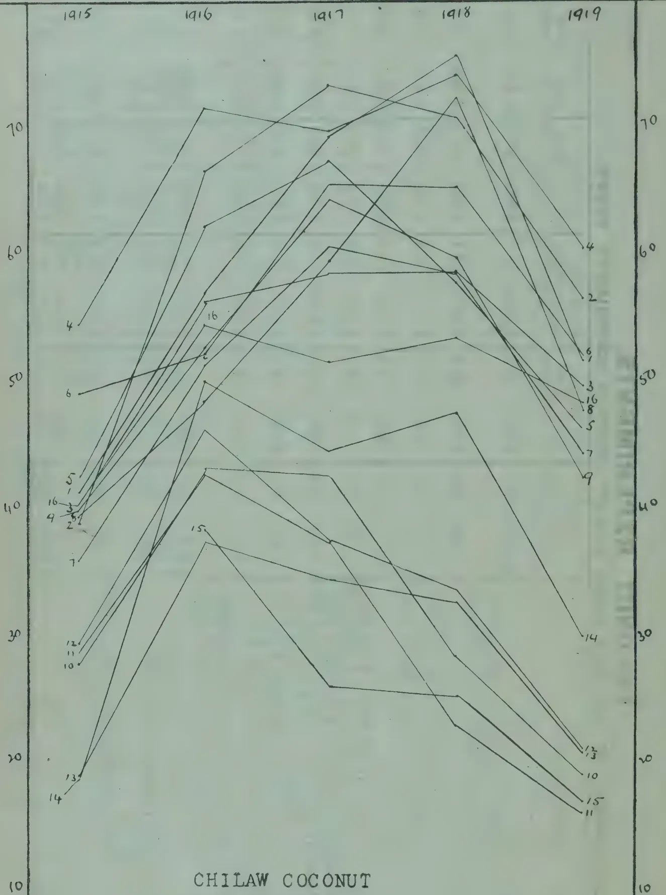
The graph displays the average yield per palm for 16 different coconut experiments over a five-year period. The x-axis represents the years 1915, 1916, 1917, 1918, and 1919. The y-axis represents the yield, ranging from 10 to 70. The data points for each experiment are connected by lines, showing the progression of yield over time. Experiments 1-16 are labeled at the end of their respective lines in 1919.
| Experiment | 1915 | 1916 | 1917 | 1918 | 1919 |
|---|---|---|---|---|---|
| 1 | 40 | 55 | 65 | 75 | 55 |
| 2 | 40 | 55 | 65 | 75 | 55 |
| 3 | 40 | 55 | 65 | 75 | 55 |
| 4 | 55 | 70 | 75 | 75 | 60 |
| 5 | 40 | 55 | 65 | 75 | 55 |
| 6 | 50 | 55 | 55 | 55 | 50 |
| 7 | 40 | 55 | 65 | 75 | 55 |
| 8 | 40 | 55 | 65 | 75 | 55 |
| 9 | 40 | 55 | 65 | 75 | 55 |
| 10 | 28 | 38 | 35 | 33 | 20 |
| 11 | 28 | 38 | 35 | 33 | 15 |
| 12 | 28 | 38 | 35 | 33 | 20 |
| 13 | 18 | 28 | 26 | 26 | 15 |
| 14 | 18 | 28 | 26 | 26 | 15 |
| 15 | 18 | 28 | 26 | 26 | 15 |
| 16 | 40 | 55 | 65 | 75 | 55 |
CHILAW COCONUT EXPERIMENTS
(Average yield per palm)
1915 1916 1917 1918 1919
AUGUST, 1920.]89Minutes of a Meeting of the Matale Food Production Committee held at Matale Kachcheri at 2 p.m. on 16th June, 1920.
Present.—The Assistant Government Agent (in the chair), Mr. C. P. Anderson, Ratemahatmayas of North, South and East Matale; Mr. A. Madanayake, Agricultural Instructor, 5 Assistant Agricultural Instructors and Mr. R. Senior White (Hon. Secretary).
Minutes of the last meeting were read and confirmed.
Programmes of the Agricultural Instructors for July were considered and approved.
Diaries of the Agricultural Instructors for May were read in regard to points needing attention and taken over by Chairman for necessary action.
Vel-Muladeniyas.—Akuramboda: These fields are now in order. EMBITIYAWA: Assistant Government Agent will inspect the site himself. WERAGAMA: Assistant Government Agent will visit shortly.
Show Report.—Read report of Shows Manager on recent Shows. Ratemahatmayas North and South Matale will submit their remarks in reply at next meeting.
Circular from Director of Food Production.—Considered letter of 9th June re paddy cultivation demonstration plot. Decided that such was highly desirable—that Hungangwela tract at Nalanda was a suitable site. Ratemahatmaya North undertook to find an owner who would give the use of a one-acre block for the purpose, and to find a cultivator to undertake the work. It was also decided to write and ask the Director of Food Production if he could allocate funds for 2 similar experiments in the other two Ratemahatmayas' divisions.
Pelwehera.—Assistant Government Agent will shortly inspect this tank and look into the matter of channels.
Cattle Galas.—The Assistant Government Agent will reinvestigate the whole question of communal cattle galas.
Estimates.—Hon. Secretary and Agricultural Instructor to prepare these.
Bambawa Tank.—Assistant Government Agent will investigate why the B.T.C. have not commenced repairs.
Sigiri Demonstration Garden.—Assistant Government Agent will go into the matter on the spot,
Complaint against Wegapanaha Udasiya Pattu Korale.—Papers to Assistant Government Agent.
Committee Members.—The Chairman will invite MR. J. HENRY to act for MR. C. P. ANDERSON, and MR. H. STOREY for MR. H. D. GARRICK. He appointed the Kachcheri Mudaliyar and MR. SARAVANAMUTTU (O.A.) members of the Committee.
Secretary.—It was resolved that MR. SENIOR WHITE's resignation of the Hon. Secretaryship be regretfully accepted. The Committee expressed their great appreciation of his excellent work. It was noted that MR. WHITE undertakes to deal with all work of a purely agricultural nature as he has done before. MR. SARAVANAMUTTU (O.A.) was appointed Secretary in his place.
90[AUGUST, 1920.TRADE MARK 'TABLOID' BRAND
No. 254
No. 254 'Tabloid' Medicine Chest
Measurements: 9 x 6¾ x 6¼ in.
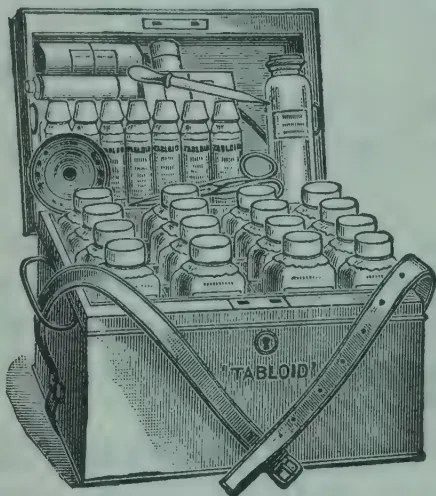
A compact yet comprehensive equipment containing medicaments, dressings, etc., which always maintain their efficiency in tropical climates.
Particularly adapted to the needs of settlers and planters. The ideal medical equipment for out-stations, works and camps.
Obtainable from all Chemists and Stores
BURROUGHS WELLCOME & CO., LONDON
AND COOK'S BUILDING, HORNBY ROAD, BOMBAY
xx 2703
All Rights Reserved
C. BENSON,
Deputy Director of Agriculture.
In some places where wood fuel is scarce and near large towns, a very large proportion of the cattle dung is made into cakes and used for fuel, only a little ashes remaining for use as manure. When his cattle dung is burnt by the ryot himself, the ashes are generally thrown into a heap in the open, where they become leached of much of their valuable matters. That the practice of burning cattle dung is a cause of great loss is known to every one. By using the dung of his cattle for fuel, the ryot makes only a very petty saving in expenditure, whilst he could, by growing fences round his fields, as is done in parts of Coimbatore and Salem, or by setting apart a small portion of his fields on which to grow trees for fuel, easily provide himself with fuel sufficient for his wants. By such means the very wasteful practice of burning cattle dung may be avoided. Near large towns, the price of fuel is so high as to render the growth of fuel trees generally a profitable undertaking.
AUGUST, 1920.]91The more general practice of the ryot is, however, to accumulate the dung of his cattle in a loose heap in the open air. The dung there dries into hard lumps, and is thoroughly washed by any rain that falls. It suffers loss in every possible way, and the ultimate result is a small heap of very poor, almost valueless stuff left to be carried to the fields. With the dung is to be seen a certain amount of straw and leaves. Each material is left to itself, the dung to lose its value, the stalks to become hard and desiccated. Because in India no litter is supplied to the cattle, not once in a thousand times is any attempt made to save the urine of the cattle when they are kept in the houses or sheds of their owners. Wasteful this process is, because the solid manure is exposed as described. Still more wasteful and injurious is it, because the liquid manure is not only not preserved, but is allowed to sink into the ground, and especially into the hollows made by the feet of the cattle. The soil on which the cattle stand is saturated below by the urine, and the air of the house or shed becomes foul and contaminated. Every one has noticed the strong and peculiar odour found in these sheds in the morning. This is due mainly to the evaporation of valuable matters contained in the urine, which drops on the floor and is lost.
The value of the urine of his cattle as manure is not, it is to be feared, appreciated fully by the ryot, even if the value thereof is not totally unknown. The urine, as a matter of fact, is richer in fertilizing matters than the solid excreta of cattle, and the loss involved in letting the urine go to waste is very large. This loss may be avoided by the use of litter to absorb the urine, or even by sprinkling the floors of the cattle-sheds with dry earth, if litter be unprocurable. By the latter process, much of the urine could be saved; the earth being allowed to accumulate in the sheds till required for use as manure, or being removed as soon as it becomes saturated and carefully preserved in a manure pit as is described below. In cases where cattle are tethered or penned in the fields, the urine, soaking into the land, is not lost.
If the ryot be asked why he does not use litter for his stock, he usually says that he has not enough fodder to feed them properly, still less has he straw for use as litter. The appearance of much waste straw, etc. in the manure heaps is, however, often evidence that this is not the reason, for these matters, as well as coarse grass, weeds, leaves, and rubbish of all sorts might be used as litter, and the quantity required, especially if dry earth be also sprinkled over the floors is not large.
As has already been said, the most valuable portion of farm-manure consists of the urine of the cattle. The manure comprises also, when properly made, the whole of the solid dung as well as the litter used for bedding the cattle. As it consists of litter and the voidings of animals fed on the produce of the soil, it forms in itself a complete fertilizer. In the making of good manure, it is of importance that all these matters should be thoroughly and intimately mixed and that they should be preserved carefully after they have been collected; so that the whole mass may ferment and decompose slowly and thoroughly. The value of farm-manure lies probably as much in the mechanical effect it has on the soil to which it is applied as on the fertilizing matters it contains. The mechanical effect depends greatly, if not chiefly, on the state of decomposition in which the manure is when applied to the land.
92[AUGUST, 1920.An excellent method of managing farm-manure, suited to the conditions of the ryot, is described below. In this method, the dung and the urine are not removed from the shed except at intervals of several months, when the manure is required. The litter used absorbs the urine.
The floor of the cattle-shed should be made 2 or 3 feet lower than the surrounding ground, and the sides and the bottom of the pit plastered with clay. On the floor, a layer of ashes should then be spread once for all, and every day a layer of vegetable rubbish should be spread over the surface as litter, that is, for bedding. For this purpose, leaves, coarse grass and other vegetable rubbish may be collected and stored during those parts of the year when they can be easily procured and when the ryot and his cattle have plenty of leisure. Waste fodder and various refuse portions of crops, such as the ear-heads from which corn has been thrashed, etc., may be used as bedding. The shed may be 10 feet long and 6 feet broad, for a pair of cattle. It is best that the cattle should be left loose in the shed, so that they may tread on every part of the manure and press it down. If the manure is not pressed, it will rot too fast and become much heated and give off bad smells, and the health of the cattle will be injured. Every morning the dung dropped by the cattle in the previous night should be evenly distributed, and a thin layer of litter spread over it. In this manner the manure may be collected until the pit is filled which may take about three months.
Too much bedding should not be supplied; otherwise the manure will be too dry and not decompose with sufficient slowness, and thus lose in value. The manure in the pit should always be thoroughly moist throughout its bulk. If the manure has an ash-coloured appearance anywhere when it is being removed, that is a sign that it has not decayed properly; this appearance being due to the great heat caused by the manure being too dry. If the straw, etc., supplied as bedding be long and hard, the manure will not rot properly; such litter should be cut up into short pieces. Unless the manure is well-rotted, it will not be of much use to crops, as it will not act quickly. It will also make the soil too open, so that the crops thereon may suffer much from draught. The manure, if properly managed, will be of a black colour and of mellow substance, thoroughly rotted throughout, so that it may almost be cut with a knife. In removing manure from the pit, the unrotted portion near the surface should be placed on one side, and, after the well-rotted portion has been taken out, should be put back again at the bottom of the pit, and manure may be collected again as before.
By this method of managing manure, about 5 to 7 tons of good manure may be obtained yearly for each head of cattle kept, whereas, if the dung be thrown out in loose heaps in the open air, only about half-a-ton of very inferior manure will be obtained in the year. The only objections raised to the system are :—
In reference to the last, it may be noted that, in some parts of South Kanara, the ryots take great pains to collect leaves and grass, and supply bedding to their cattle; but they remove the manure at intervals of a few
AUGUST, 1920.]93days, and throw it out in a hollow place where it can be compressed by the carts travelling to and from over it. In reference to the first objection, experience has shown that it is groundless.
If, for any reason, it is inconvenient to a ryot to collect manure in the above mentioned manner, following method may be adopted:—
The floor of the cattle-shed should be made smooth and compact with a gentle slope towards the back, where a small channel should be placed, so that all the urine falling on the floor may be carried by the channel to a pot placed outside the shed at one end. The dung can be removed every day and thrown into a pit, the sides and bottom of which should be plastered with clay, and over which a low thatched roof has been erected. Whatever vegetable refuse is available on the farm may be thrown into the pit, and the urine collected poured over the heap daily. The whole mass of dung, urine and vegetable rubbish should be kept uniformly mixed and well trodden and pressed down, so as to make the mass decay uniformly and slowly.
If the manure pit last described cannot be protected by a simple shed, the heap should be covered with earth. It has in all cases been found very useful to cover manure heaps with earth, as this prevents the loss of valuable fertilizing matters into the air. This practice is fully adopted in some places, e.g. in Tinnevelly, with the best results. If the upper portions of a manure heap becomes dry, the heap should be turned over so as to mix the moister and the drier portions together, and, if there be any tendency for the heap to dry up generally, it may be watered slightly with advantage. The covering of the heaps with earth to a great extent prevents undue drying. The great aim should be to maintain the heap in a moist state, so that the whole mass may decay slowly and completely, and thus the fertilizing matters of the manure may be preserved and rendered more immediately useful than as they are found naturally.
(Note.—It is recommended that cattle-sheds should, in all cases, be placed outside the villages, and, if possible, in the ryots' fields, and that they should be sufficiently ventilated to admit of the free circulation of air).—
PLANTERS' CHRONICLE, Vol. XV, No. 26.
A very sensible article on the above subject appeared in the FERTILIZER AND FEEDING-STUFFS JOURNAL, 21st January, 1920. The author 'Ceres,' distinctly makes out his case in favour of the superiority of the former over the latter. Much of the article is reproduced below, as the subject of artificial fertilizers is one of perpetual importance to the agriculturist.
In all compound fertilizers there are combined two or three of the principal elements of plant food, as, for example, phosphates and nitrogen, phosphates and potash, and phosphates, nitrogen and potash. These are present in the compound fertilizer in varying proportions, and degrees of availability obtained from the different sources, which experience has proved to be most suitable for the requirement of the individual crop, after giving due consideration to soil and weather conditions.
94[AUGUST, 1920.It is, however, sometimes asserted, especially on the ground of economy that agriculturists would consult their best interest by buying the separate materials and mixing them together for themselves. The following considerations will however expose the fallacy of this idea.
When a farmer applies 5 cwt. per acre of fertilizer, it only amounts to about one grain to every pound of soil to a depth of 9 inches, which is equivalent at most to less than half a grain of plant food to each pound of soil. It will therefore be understood of how great importance it is that a compound fertilizer be thoroughly combined or incorporated, and in such a fine powder that each pound of soil receives its equal proportion of the two or three elements of plant food present in the fertilizer applied.
There are two good reasons why a home mixture cannot be as valuable, as one properly compounded in a factory. The first is a mechanical reason, the second is a chemical reason.
1. Mechanical reason.—If the materials were all equally fine and dry, and of about the same specific gravity, the variation in results would be very much lessened, but this is not the case. Different materials do not easily make a uniform mixture that will remain of constant composition. It is not reasonable to expect that the farmer can make a uniform mixture of the materials in the rough state usually supplied, by means of shovel and sieve on a floor, when the fertilizer manufacturer finds it necessary to employ costly machinery for mixing, grinding, and incorporating the ingredients to enable him to produce a fertilizer of constant composition.
A home mixture, as usually prepared, is merely an association of materials, from which if 100 samples were taken, most probably ninety of them would not analyse in accordance with the prescription or formula used.
Contrast this with the procedure in a factory where the ingredients, after being weighed, are ground and thoroughly mixed together in suitable machines, and the resultant compound is placed in heaps when chemical action, facilitated by the heat engendered during the process takes place. The compound during the weeks and sometimes months in which it remains undisturbed, becomes 'conditioned,' and loss in weight occurs. Moreover, before compounds are bagged and leave the factory, they are once more put through the process of grinding and blending, so that it is as certain as possible that they are thoroughly incorporated.
It surely will be realized from this description, that the process of compounding fertilizers in the factory is a far more thorough and expensive one than that of mixing ingredients by means of shovel and sieve. There is absolutely no comparison between them.
2. Chemical reason.—In all crudely-made home mixtures a certain amount of chemical action is set up, hence the prescriptions usually state that certain ingredients 'must not be mixed' together, or the mixture must be 'applied immediately.' In chemically compounded, factory-made fertilizers, all chemical action and reaction which go to make good condition and availability have taken place before the goods leave the factory.—AGRIC. NEWS, Vol. XIX, No. 470.
AUGUST, 1920.]95J. C. HUTSON, B.A. Ph.D.
Government Entomologist, Ceylon.
The Fluted Scale (Icerya purchasi) is one of the larger scale insects and the full grown females (see figure from Leaflet No. 3 appended) are very conspicuous owing to their snowy white egg-sac, somewhat resembling a fluted shell. This scale is probably a native of Australia where it is prevalent on Acacias, but it is periodically controlled by small parasitic wasps and by predatory lady-bird beetles, of which the Vedalia beetle (Novius cardinalis) is the best known. The Fluted Scale was accidentally introduced into California over fifty years ago and in a few years became a serious pest of Citrus trees, owing to the fact that none of its natural enemies were present to keep it in check. Then in 1888 the Vedalia beetle was introduced into California and met with wonderful success in controlling the scale which was very soon reduced to the position of a minor pest. Both the adults and the larvæ of the Vedalia beetle feed entirely on the eggs and young of the Fluted Scale and are voracious feeders. The beetles breed rapidly and have therefore proved useful in keeping the scale in check periodically.
But since the beetle, so far as is known, confines itself to a diet of Fluted Scale, and apparently has never adapted itself to any other food, it sometimes happens that, having eaten up all the scale in one locality, it dies off itself and requires to be re-introduced when the scale again becomes a pest. This usually happens in every country where the Fluted Scale is known to occur and where the Vedalia beetle has been introduced to control it. The Fluted Scale has gradually spread to most of the Citrus growing areas of the world, but India, South America and the West Indies are said to be free from it.
Icerya purchasi first came into prominence in Ceylon in December 1915 when an area of Acacia decurrens in the Agrapatnas was found to be badly attacked. An investigation followed and this insect was found to be established on several estates and in some of the Acacia reservations in various districts, mostly up-country. The spread of the scale caused considerable apprehension during 1916 and 1917, as it was feared that this pest might attack tea and other crops of economic importance. Investigations by MR. E. R. SPEYER, then Acting Entomologist, led to the discovery that there is fungus which periodically controls the scale in most districts during the wet weather. No trace of the Vedalia beetle was found, but it was discovered that a local species of lady-bird beetle (Novius roseipennis), closely related to the Vedalia, was fairly numerous in some localities. This local species has nothing like the voracious appetite and powers of reproduction possessed by the Vedalia.
96[AUGUST, 1920.]At this point a short account of the habits and life history of the Vedalia beetle may be of interest.
Description of Vedalia and its Life History.—The adult beetle is oval in shape and varies in length from a little over one-eighth to a little less than one-quarter of an inch. The beetle is of a general dark-reddish colour, with black markings. The male has more black than the female.
The small, oblong oval, reddish eggs are usually laid on the white egg-sac of the scale, where they are quite visible without a lens. They are also sometimes laid on the leaves of the host plant, such as Acacia. The eggs hatch in four to five days and the young larvæ bore into the egg-sac and feed on the eggs and young scales.
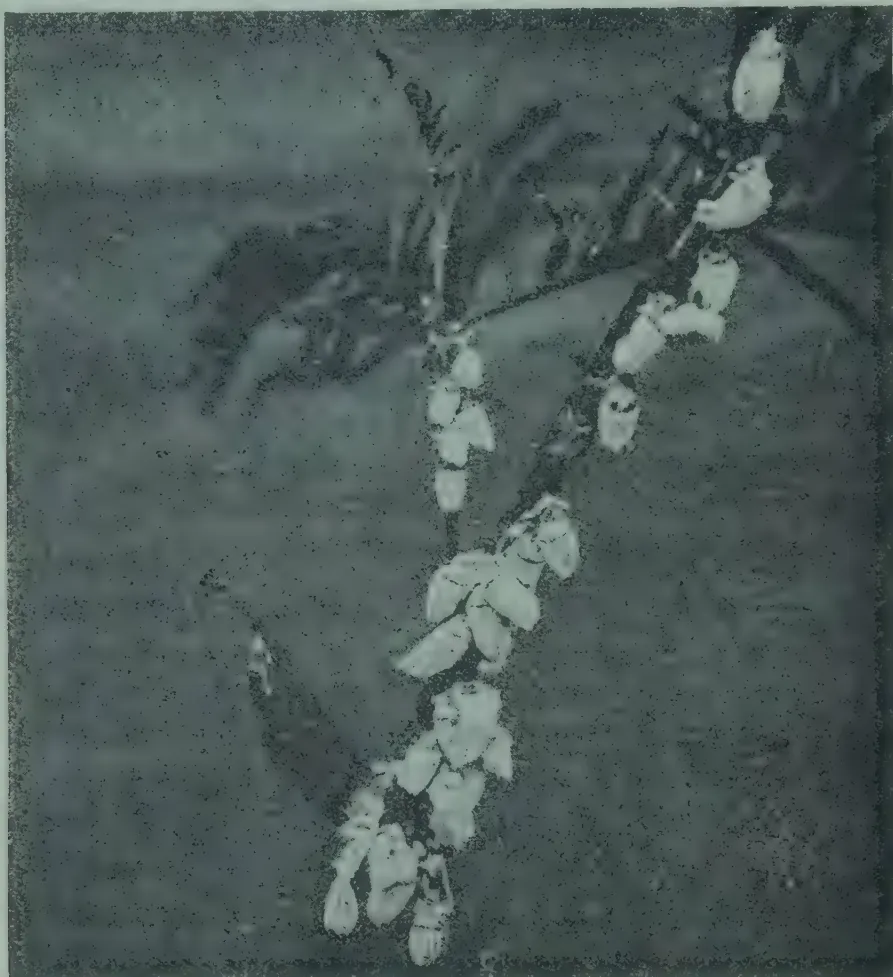
A black and white photograph showing a cluster of small, light-colored, oval-shaped objects, likely eggs or young larvae, attached to a dark, textured surface, possibly a branch or leaf. The objects are arranged in a somewhat vertical line, with some appearing to be in a cluster. The background is dark and out of focus, highlighting the small, light-colored objects.The larvæ are bright red at first, but the full-grown larvæ are greyish in colour with reddish sides. The larvæ feed voraciously and grow rapidly, moulting at intervals, and when full grown in about ten to twelve days, they form their cocoons, or pupæ, within the last moulted larval skin. The pupæ are usually attached to the leaves and branches of the trees, and the beetles emerge in from five to seven days. Mating soon takes place and the females begin laying eggs for another brood.
The total duration of the life cycle from the laying of the eggs to the emergence of the adult beetles is about three weeks under laboratory conditions, and egg-laying usually begins again within a week. It will be seen that the beetles breed rapidly, and their enormous appetites make them a formidable enemy of the Fluted Scale.
AUGUST, 1920.]97In the course of a leaflet on the Fluted Scale published in 1917 the Acting Entomologist suggested that lady bird beetles be imported from abroad, and later the co-operation of the Department of Agriculture of the Union of South Africa was invited, and MR. C. P. LOUNSBURY, the Entomologist, arranged for consignments of the Vedalia beetle (Novius cardinalis) to be sent periodically.
The first consignment containing live beetles arrived in Ceylon towards the end of 1918 and the few beetles were liberated in a Fluted Scale infested area up-country. The Scale, however, was soon wiped out by the local fungus aided no doubt by the beetles, but there was no trace of these to be found a few months later.
During 1919 four consignments of the Vedalia were sent to Ceylon from South Africa, comprising altogether over 400 beetles, but not a single beetle reached here alive, probably owing to the length of the journey at that time.
Then early in January 1920 a further shipment of Vedalia arrived, containing nearly 300 beetles, pupæ, and larvæ, of which only 50 were alive.
Unfortunately there was very little Fluted Scale available just at that time, as it had been practically wiped out by the North-East monsoon. Some difficulty, therefore, was experienced in keeping the Vedalia alive for the first few days after their arrival. A most opportune consignment of Fluted Scale was received from an up-country estate and served to keep the Vedalia going until a regular supply of Scale began to come in from the plantations of the Forest Department in the Nuwara Eliya district, where the scale was on the increase.
The beetles soon started to breed rapidly and within about six weeks after their arrival the first consignment was sent out for liberation. Breeding experiments were continued at Peradeniya for a few weeks, but large numbers of the Vedalia larvæ died from disease due probably to overcrowding.
Altogether, some half-a-dozen consignments were sent out, totalling about 170 beetles, of which about 100 were females. Through the co-operation of the Forest Department these beetles were liberated in their Acacia plantations at Conical Hills, Nanu Oya, at Pattipola, and at Kandapola, in which places the Fluted Scale was reported to be fairly plentiful in February and March.
A visit was recently paid by the writer to Conical Hills and to Pattipola. At Conical Hills there is very little Fluted Scale now and that little is being rapidly devoured by the Vedalia larvæ which could be seen here and there. At Pattipola there is practically no scale to be found and no Vedalia were seen there after a careful search. Much of the Scale has been blown off the trees by the recent high winds and the Vedalia larvæ, which usually feed inside the egg-sacs, have doubtless gone with it.
An attempt is being made to get some of the Vedalia material out to estates where there is any appreciable quantity of Fluted Scale. Apparently, however, this is not a Fluted Scale year, as the Scale was badly hit by the fungus last year.
In the event of any abnormal local increase of Fluted Scale in the future, it will be comparatively easy matter to re-introduce the Vedalia from South Africa (supposing that it dies out here for want of food), since better facilities for the shipment of the beetles will then be available. Moreover, there will also be better accommodation for breeding the beetles, and valuable experience has been gained from this first experiment.
98[AUGUST, 1920.]G. BRYCE, B.Sc.,
Acting Botanist and Mycologist, Ceylon.
Food shortage and in particular rice shortage in the Tropics has resulted in a largely increased cultivation of other food crops. Amongst these Sweet Potato and Manioc take an important place. In Ceylon in the past relatively little attention was paid to these two crops, and in the small area devoted to them if diseases were present, the loss was not sufficiently great to attract the cultivator's notice. In the larger areas now cultivated it is to be expected that diseases may be more pronounced. It is therefore deemed that a summary of the known diseases of Sweet Potato and Manioc would be of general interest, and further that it might have the desired effect of calling early attention to any disease that may appear.
(Summarised from FARMER'S BULL. No. 1059 U.S.A. Dept. of Agric.)
Diseases of Sweet Potato are divisible into two classes (1) Field diseases and (2) Storage Rots.
Field diseases are divisible into Root and Stem diseases and Leaf diseases. The Root and Stem diseases are Stem rot, Black rot, Foot rot, scurf and root rot : the leaf diseases are Leaf blight, Leaf spot and White rust.
Control—Stem rot, Black rot, Foot rot. For the control of these diseases all that can be recommended are seed selection, use of clean seed beds, disinfection of seed potatoes before bedding, and crop rotation since the fungi causing these diseases invade the interior and make the use of fungicides futile.
Scurf is best controlled by disinfecting the seed potatoes for 10 minutes in a solution of Corrosive sublimate (1 ounce to 8 gallons of water).
Root rot is particularly difficult to control. Deep, clean cultivation, aeration of the soil, and crop rotation together with the careful selection of disease-free potatoes for seed, are important aids.
Leaf blight, leaf spot and white rust have never been serious enough to require remedial measures.
Storage rots—Control of the five storage diseases hinges on careful storage-house management. Sweet Potatoes infected with field diseases should never be placed in storage for heavy loss will follow. But this elimination of field diseases must be coupled with a well regulated system of storage, the first requisite of which is a thoroughly disinfected house free from the numerous storage-rot germs.
Stem Rot (wilt, blue stem or yellow blight)—Caused by Fusarium batatatis and Fusarium hyperoxysporum. The first indication of stem rot in the field is a slight change in the colour of the leaves of affected plants. The leaves become duller in colour, the yellow between the veins are somewhat puckered, these symptoms being followed by wilting of the vines. The youngest leaves generally show the disease first. The diseased stems are blackened inside sometimes for 3 to 5 feet from the hill. Later the
AUGUST, 1920.]99stems break open and the surfaces become black and rotten, though the plant may produce a few potatoes on which sprouts frequently develop. The fungus may also invade the roots forming a black ring about a quarter inch below the surface of the potato. Sprouts from such potatoes are likely to be diseased.
Control.—Fungicides give no relief. Lime applied to the soil is of no value. Seed selection should be carried out at the time of harvest, and selected potatoes should be stored separately. Stems of selected potatoes should be split and examined for black streaks indicating disease; if present the potato should be rejected. Before planting out seed potatoes should be disinfected for 5 or 10 minutes in a solution of 1 ounce Corrosive sublimate to 8 gallons of water. Only wooden vessels should be used, and the solution should be used more than 2 or 3 times. Slip seeding or planting out portions of vine possessing two leaves and a bud is a method sometimes employed. The cuttings should be taken from healthy vines. The fungi causing stem rot live on the remains of dead sweet potato vines and on decayed vegetation in the soil. Sweet Potato plots should therefore be cleaned of all vegetable matter after harvest and this should be burnt.
Black rot (Black shank, Black root) caused by the fungus Sphaeronema fimbriatum.
This may occur on any of the underground parts of the plant. On the potato the fungus produces on the surface dark to nearly black, somewhat sunken, more or less circular spots. In early stages the spots are small and nearly round; under favourable conditions they enlarge, until the whole potato may be involved. In the centre of the spots more or less circular areas will be seen, from one fourth to one half inch diameter, in which may be found the fruiting bodies of the fungus. The surface of the diseased spots has a somewhat metallic lustre and the tissue just beneath is greenish. Sweet potatoes with this disease have a very disagreeable taste when cooked.
On the plants the infection begins as small black spots, which gradually enlarge until the whole stem is decayed. Frequently it extends up the stem to the surface of the soil.
The fungus lives on dead potato vines and decaying vegetable matter in the soil.
Control.—The measures applicable to stem rot should also be applied here especially selection of seed potatoes and crop rotation, and burning of all vegetable matter left on the plot after harvest. Liming the soil has little or no effect on the disease. Unlike stem rot this disease spreads freely through the storage house.
Foot rot (die off) caused by the fungus Plenodomus destruens. Appears first as small brown to black spots on the stem of the plant near the soil line. Its growth is very slow at first but eventually it girdles the plant and extends up the stem for 4 or 5 inches. Soon thereafter the plant begins to wilt, and round black, rather numerous specks, just visible to the naked eye, appear in the diseased areas. These are the fruiting bodies of the fungus. In most instances no potatoes are found though long vines may have been produced. The disease may spread from an infected stem to the roots causing a brown, rather firm rot of the potato. Later fruiting bodies grouped close together develop on the surface as pimple like protuberances. Many wounds and bruises on potatoes in storage are infected with this fungus. The fungus lives on dead potato vines and decaying vegetable matter in the soil.
100[AUGUST, 1920.Control.—The same measures should be employed for this disease as for stem rot and black rot.
Scurf (Soil stain, Rust, Jersey mark) caused by the fungus Monilochaetes infuscans.
A brown discolouration is produced on the surface of the underground parts of the plant. The discoloured areas may take the form of spots of different sizes and shapes with no definite outline, or there may be a uniform rusting of the entire surface of the potato. The fungus does not break the skin of the sweet potato, and is so superficial that it can easily be scraped off by the finger nail. It will grow on decaying vegetable matter in the soil in the absence of sweet potato.
Control.—Seed potatoes should be disinfected for 10 minutes in a solution of 1 ounce of Corrosive sublimate to 8 gallons of water.
Root rot—caused by the fungus Ozonium omnivorum. Also known as the Texas root rot of cotton and lucerne.
The fungus gains access to the plants through the underground parts and spreads in both directions, invading the vines for 6 to 12 inches above ground. It may enter the end of the potato or cause spots of varying size on the surface. In either case a firm, brown rot is produced resulting in the complete destruction of the potato. Above ground the growth is within the stem and may be detected by the brown discolouration produced. The fungus lives also on dead vegetable matter in the soil.
Control.—Root rot is worse on poorly drained soil and in wet seasons. The disease is particularly difficult to control or eradicate as it grows on a great variety of plants. Measures to be taken are deep, clean cultivation, aeration of the soil, crop rotation and selection of seed potatoes free from disease.
Leaf Blight—caused by the fungus Phyllosticta batatas.
Appears on the upper side of the leaf as roundish, angular spots, one eighth to one half inch diameter, separated from the healthy tissue by a dark line. Inside this line is a strip of brownish tissue which has lost most of the green colour, and further in is a circular area, much lighter in colour, in which are found a number of black pin points just visible to the naked eye. So far as is known this fungus is not parasitic on any other plant and is not found on other parts of the sweet potato. Diseased leaves could be collected and burnt.
Leaf Spot—caused by the fungus Septoria bataticola
Is similar in general appearance to leaf blight. The spots are one eighth to one fourth inch diameter, white and surrounded by a brown border. Within the white areas are black specks just visible to the naked eye. It is not known to be parasitic on other plants or on other parts of the sweet potato.
Burn diseased leaves.
White Rust (Leaf mould)—Caused by the fungus Albugo ipomoea-panduranae.
The first symptom is loss of green colour in indefinite spots on the under side of the leaf. Later the spots become brown with a whitish, viscid growth, which is finally more or less powdery. Frequent rains and heavy
AUGUST, 1920.]101dews are favourable to the spread of the disease. No great harm is done by the fungus though it may sometimes produce swellings on the stems and petioles and cause malformations of the leaves. The fungus is widely distributed and is found on wild species of Ipomœa.
Diseased leaves should be burnt.
Storage Rots.—Soft Rot is due to a mould fungus—Rhizopus nigricans—one of the most destructive diseases in the storage house. Decay begins at one end of the potato and spreads rapidly through it. Usually soft rot sets in soon after the potatos are stored. The potatos are rendered at first soft, watery and stringy. After decay and following the escape of moisture, the potatos become firm, hard and brittle. If the skin is broken, while it is still soft, a mouldy growth forms on the surface. The disease may spread to healthy potatos lying close by.
Ring Rot (collar rot) is also caused by Rhizopus nigricans.
It differs in that decay begins at a point between the two ends, and a diseased ring is formed round the potato. The course of the disease may be arrested with the formation of this ring, or it may proceed till the potato is destroyed.
Black rot caused by the fungus Sphaeronema fimbriatum.
As already mentioned this is a serious field disease. The potatos when dug show black rot spots comparatively rarely, but probably many potatos are infected. When stored these infected potatos rapidly develop the disease.
Dry rot caused by the fungus Diaporthe batatis.
This generally begins above end of the potato and produces a firm brown rot. It grows slowly, the potato becoming dry, hard and mummified. Small domelike or pimple-shaped protuberances just visible to the naked eye finally cover the entire surface. If the skin is scraped slightly, the tissue underneath presents a coal-black, carbonaceous appearance. Normally several weeks elapse before the potato is destroyed completely. In the field this fungus grows on the stem and leaves and probably this is when infection occurs.
Java Black rot caused by the fungus Diplodia tubericola.
So called because of its discovery on potatos grown from an importation from Java. It slowly renders the potato dry, hard and brittle, coal-black within and difficult to break. The rot usually begins at one end and grows slowly, requiring 4 to 8 weeks to destroy the potato completely.
Charcoal rot, caused by the fungus Sclerotium bataticola.
A black decay is produced, and this differs from the others in the production of minute spherical resting bodies throughout the potato, rarely on the surface. These bodies are black and appear visible to the naked eye when the potato is carefully broken open. Some shrinkage and drying is caused by this disease.
Control of Storage Rots.
Great care should be exercised not to bruise the potatos in handling. Potatos after digging should be allowed to dry in the sun. Diseased potatos should be rejected. The storage house should be kept dry, and may be occasionally disinfected by spraying with 1 pint formalin (40%) in 30 gallons of water, with another spraying 24 hours later.
102[AUGUST, 1920.The diseases of Manioc known may be classed in a similar way to those of Sweet potato.
Field diseases are divisible into Root diseases, Stem diseases and Leaf diseases.
Root Rot appears to be due to bacteria.
The Manioc plants develop a root rot which causes the plants to shed their leaves and the tubers to rot slowly. In the first stage of the disease the epidermis of the tubers turns a violet red colour. The tubers then begin to rot at the tips, but often some of the tubers on a diseased plant may remain perfectly healthy. The diseased plants do not die, but later on form new leaves and tubers. Favourable results in checking the disease have been obtained by the use of lime in the soil. Diseased tubers should be burnt.
Stem Diseases.—A number of fungi have been found on the stems when they are dead or dying. They do not appear to be dangerous while the stems are still green and vigorously active.
Leaf Spot.—Caused by two species of Cercospora.
This is not abundant enough to cause any great damage. The diseased spots are irregularly circular and brown. Sometimes all the lower leaves are lost.
Leaf Spot.—Caused by the fungus Septogloenum Manihotis
Causes spots which at first are dark green, later becoming brown and extending from the leaf margin to the midrib. The fungus breaks through on both sides of the leaf.
Storage Rot.—Caused by the fungus Rhizopus ingricans.
The symptoms are similar to those on the sweet potato.
T. PADMANABHA PILLAI,
Mycologist, Agricultural Department, Travancore.
All living organism are subject to disease and death. Diseases are not partial to man and animals alone. They attack plants as well, and cause great loss to cultivators.
Experience for the last four years has taught the cardamom cultivator the seriousness of plant disease, and how it affects him economically when once the disease is there. The cardamom of Travancore is affected by a very serious pest. It is caused by a minute microbe that enters the leaf, and then spreads over the entire plant and destroys it. The disease first shows itself ordinarily on the leaf in the form of small, brown, roundish specks, which widen rapidly and often coalesce. The central portions of the specks assume an ashy grey colour, and perforations are often seen on them. The leaf margins are zoned in different shades of brown, green and yellow. In some other cases the margin of the leaves turns brown and shrivels up, and the
AUGUST, 1920.]103entire leaf turns yellow subsequently, withers and ultimately hangs drooping from the stalk. There is another type in which discolouration begins on the tip of the leaf and then spreads over the entire leaf, which then dies. Then the whole leaf stalk assumes a dark brown colour, and, by the time the leaf withers, the stalk becomes very soft and watery, and can be easily pulled off from the rhizome. The soft root extends into the rhizome, which becomes discoloured and gradually decays, forming a watery mass of putrefying tissue. This is caused by a minute fungus which can be seen only with the help of a microscope. The tiny spores of the dead leaf fall on fresh leaves, and there they develop very fine root-like tubes with which to extract the sap of the plant, and spread downwards to the stem, and finally to the roots.
The leaves are not the only portions affected. The roots are also liable to the attack of spores. The racemes of flowers and fruits have also been found to be attacked by the fungus. The spores are found in very large numbers on withered leaves killed by the fungus. Ryots who prune the affected stems in withered leaves in infected plantations leave the debris here and there. This is a dangerous practice, as the spores on the dead leaves and plants do not perish easily, but linger on and infect the new shoots that come out again, and also affect the roots and tubers through the soil. The affected and withered stems and leaves should therefore be cut and burnt, and on no account should they be thrown about, as is now done.
It has been observed that the ryots replant repleted areas with infected bulbs which contain the fungus, and that the disease manifests itself in a dominant form when the plants establish themselves. The presence of the pest is first noticed only 2 or 3 months after planting the bulbs, when the new shoots come up and spread the leaves. Ordinarily, a healthy bulb sends out 7 to 12 fine shoots. But in deceased bulbs the number of shoots is much less. Besides, even the leaves that open out of the shoots are pale and sickly looking, and not green and healthy as they should be. The centre of the leaf near the midrib turns yellow, and a general sickly pallor spreads over the leaf, and the plant withers in the course of a few weeks. The mistake here is in planting infected old bulbs. Old bulbs must be rejected, and, as far as possible, only fresh bulbs of the previous years be selected for planting. Even this must be from a plantation not affected by disease. This may be very difficult for the present, because almost all the plantations are affected. Therefore, the best thing to do will be to take fresh bulbs and dip them for 2 hours in a solution of corrosive sublimate, (1:1000) and then plant them in a nursery exposed to sunshine. In two months, when the plants come up, one can easily select healthy plants from sickly ones at a glance. It is safer to grow the bulbs in a nursery, and then plant out healthy plants.
Another very important point to be considered is the soil. Ryots plant up areas depleted by disease without doing anything to the soil. The spores of the disease are found in the soil also, and then can easily infect the newly planted bulbs or seedlings. In order to avoid this danger, old pits must be abandoned. The lines may be altered, and new pits dug between the old ones. In the new pits, which must be 9 feet apart, about 5 lb. of quicklime should be applied and allowed to slake in the pit. The heat generated by the slaking of the lime will help to kill the spores, and lime will neutralise the acidity of the soil, which favours the growth of the fungi-causing disease.
104[AUGUST, 1920.If the pits are dug and applied with lime just before the rains, the rain-water will slake it. When the pit is cool, leaf mould and earth may be put in, and the plants raised in nursery planted out. It is very necessary that the plants should be 9 feet apart. Thick planting is bad. Planting more than 537 plants per acre is very dangerous. If the plants are crowded, the disease may be transmitted from plant to plant quite easily. The usual practice of leaving 2 of the old stems, with withering leaves full of the spores of disease, on the bulbs which the ryots plant out directly, should be discontinued. When new shoots come out of the bulbs the spores from the old leaves infect them and cause the disease on the young plants. The best method is to plant out young plants grown in a nursery. In the nursery also the bulbs alone must be planted, without the old stems or leaves. Seedlings will be better than plants raised from bulbs. The best thing will be to select healthy big pods, free of disease, from a healthy plant, treat the seeds for five minutes in a solution of corrosive sublimate and then sow them out in a nursery. When the plants come up, the healthy ones can be selected and planted out in pits which have been limed, as suggested above. No doubt, the seedlings take a year longer to yield, and the system of cultivation involves a little additional expenditure on account of the nursery. But on the other hand the plants will be more robust, and resist disease much better. Besides, the control of disease is easier than in the case of bulbs.
Part of the life of fungi that devastate the cardamom is spent on the leaves and pods of Erythrina lithosperma. The disease found on the cardamom leaf has also been observed on the Erythrina planted for shade. When the leaves of Erythrina shed, about the middle of September just before the rains, all the spores on the leaves and pods of the tree fall on the cardamom plants and infect them. Cardamom ryots are strongly advised to cut down all Erythrina trees planted for shade, and are also warned not to introduce Dadaps any more as a shade plant in cardamom plantations.
There is an idea current among the ryots that the Mysore cardamom is more hardy, and can withstand the disease. This is not correct. Experiments and observations have revealed the fact that the Mysore variety is not immune. On the other hand, it is just as susceptible as the Travancore variety. In fact, the Mysore cardamom has to reckon with more enemies, such as insects and eelworms, than the Travancore variety. One cannot avoid the disease by simply changing the variety. As long as the disease is there, strenuous efforts must be put forward to combat it. United action on the part of the ryots is extremely desirable, if the disease is to be eradicated.
There is no use in improving one estate, when the neighbours sit quiet and do nothing to eradicate the pest from their estates. Even an estate from which the pest has been eradicated can be reinfected from the surrounding affected plantations. It is highly desirable, therefore, that the ryots should form Thavalam associations all over the cardamom hills for the eradication of the pest, and for maintaining their estates on sanitary and scientific lines.
(1) In plots that have been depleted by the disease, the roots and rhizomes of the cardamom plant must be carefully dug out and burnt.
AUGUST, 1920.]105(2) Lining and holing for new planting must, as far as possible, be so adjusted as to avoid old pits.
(3) Lime is found to be a very efficacious remedy against plant diseases. Moreover, lime is also an important factor in maintaining the fertility of the soil. About 5 lb. of slaked lime should be forked in around the infected plants, and a top dressing of quicklime should be given generally in infected plantations.
(4) Before re-planting depleted areas, or "supplying," the holes should be limed. About 5 lb. of quicklime should be applied in each pit.
(5) Repeated propagation from vegetative parts, such as the rhizomes, roots, etc. (not from seeds), deteriorates the plants and makes them progressively more susceptible to disease. Hence, seedlings must be preferred to plants raised from rhizomes.
(6) Seedlings must be raised in a well-kept nursery. Seeds must be selected from plants that are free from disease. Selected seeds should be soaked in a weak solution of corrosive sublimate (corrosive sublimate one part and 1000 parts water, or 2 ozs. of sublimate to gallons of water, for at least an hour.
(7) If, however, rhizomes are used for planting, they must be very carefully selected, and all the rotten tubers rejected. Rhizomes of the previous year should be preferred, and treated with sublimate solution or formalin solution for a period of 2 hours at least. (Formalin, one pint and 30 gallons of water), The rhizomes must also be planted in a nursery, and the plants thereon must be carefully selected.
(8) The seedlings and young plants from bulbs must be sprayed once a month with weak Bordeaux Mixture. Bordeaux Mixture is, in reality, a very cheap and effective fungicide, and not so costly as is believed by some ryots and laymen. One will require 100 to 150 gallons of this mixture to spray one acre. Good results from Bordeaux Mixture can be obtained only if careful attention be given to the materials employed, and to the preparation. Materials required for making 50 gallons of Bordeaux Mixture are :—
5 lb. of copper sulphate (Blue stone)
5 lb. of quicklime, and
50 gallons of water.
Copper sulphate must at least be of 98 per cent. purity, and not the ordinary kind, with iron sulphate. Rock lime is just as good as shell lime. It must be freshly burnt. The water used is better cold.
Preparation—(A) Procure 2 half-barrel tubs, and also a full barrel.
Pour 25 gallons of water in a half-barrel tub, and then dissolve the copper sulphate by suspending it in a piece of gunny sacking just immersed in water. It dissolves slowly, and may be put in overnight.
(B) Put the lime in the other half-barrel tub, and just moisten it to slake. Add water little by little, and allow the lime to swell first and crumble slowly. When it is well slaked, work it down into a thick cream and gradually dilute it to 10 gallons of water. The milk of lime so made may be well stirred and strained through a fine sieve or piece of sacking, to remove all the grit, and then diluted again with the remaining 15 gallons of water.
106[AUGUST, 1920.(C) Pour the strained and diluted milk of lime in the full barrel and then add the copper sulphate solution little by little, and gradually mix the two solutions together. Keep on stirring well till all the 25 gallons of copper sulphate solution is mixed to the milk of lime.
Stir and strain again when filling the sprayers. The mixture must be always fresh, and cannot be kept for any period longer than 48 hours.
Very many different types of sprayers are in use in India. Alpha No. 5 A, supplied by Messrs. Shaw Wallace & Co., 4 Bankshall Street, Calcutta, is one of the most useful sprayers now available in India. The current price of the machine is Rs. 15 at Calcutta.
There is also another machine of similar capacity ( gallons) that is very popular. It is the "Assam" Sprayer, supplied by the same firm at Rs. 40 each.
(9) All the withered leaves and debris should be carefully collected and burnt. All the affected leaves and stems must be cut and burnt.
(10) After pruning, the affected plants may be sprayed with Bordeaux Mixture. Spraying will have to be done at least once in 3 months.—
Leaflet No. 95, reproduced in PLANTERS' CHRONICLE, Vol. XV, No. 29.
C. H. GADD, B. Sc.,
Acting Assistant Botanist and Mycologist, Ceylon.
A disease of coconuts, characterised by the breaking of the leaves was first reported from Kurunegala in 1918. Since then cases have been observed in other parts of the Island. Affected trees are very conspicuous owing to the presence of leaves broken about the middle with the withered distal end hanging vertically downwards (see illustration).
The disease commonly starts at a terminal leaflet of one of the older leaves. The leaflet withers and turns brown. At the base of the dead leaflet, on the midrib, is a dark brown discoloured area which extends along the petiole as the disease advances, and which later turns black. The disease advances rapidly, pairs of leaflets being killed in succession as the discoloured area progresses along the midrib. Eventually the leaf breaks, usually about the middle, sometimes nearer the base, and the withered end hangs downwards.
Sometimes the attack starts at a lateral leaflet. Then the discoloured area can be seen on the side of the midrib at the place where the leaflet is attached. When the discoloured area has extended across the petiole the whole of the leaf above the diseased portion withers owing to the stoppage of water supplies. Later the petiole breaks near the junction of the diseased and healthy tissues.
The breaking of the leaf is due to the weight of the diseased portions for only the horizontal or upward inclined leaves break. Old leaves which are hanging downwards, do not usually break when attacked.
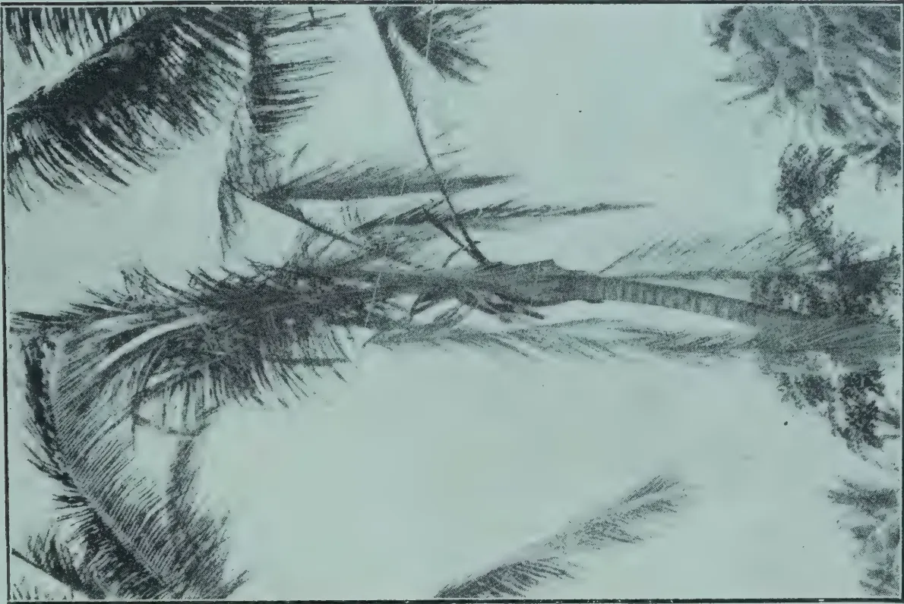
Later Stage
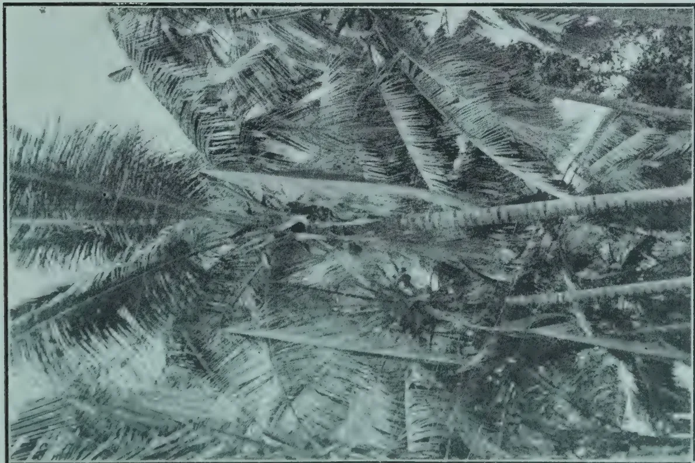
Early Stage
A LEAF BREAK DISEASE OF COCONUTS
This image is a scan of a blank page. The paper has a light beige or cream-colored tint. There are several small, dark specks scattered across the surface, which appear to be scanning artifacts or dust particles. No text, lines, or other markings are present on the page. AUGUST, 1920.]107Cultures made under sterile conditions at Peradeniya from the junction of diseased and healthy tissues of the petiole, in every case developed a fungus Botryodiplodia sp. No other fungus developed in the cultures. So this organism may be considered the cause of the disease. Fructifications of Botryodiplodia were also found in the field on the diseased petioles and leaflets. These fructifications appear as small black pustules which break through the epidermis liberating large numbers of black two celled spores
Fungi belonging to the genus Botryodiplodia do considerable damage to numerous plants particularly hevea, cacao, tea, sugarcane, etc. The status of Botryodiplodia is generally admitted to be that of a saprophyte with powers of parasitism limited in most cases to the invasion of tissues (except fruits) with less than normal vigour. It unquestionably can kill healthy plants sometimes, but usually it merely hastens the death of plants which have been weakened by other causes. Most observers have found it difficult to infect healthy and even wounded plants with this organism. On hevea and cacao, in which it causes 'dieback,' it has been demonstrated that entry is obtained only through wounds and dead tissues.
RICHARDS* has carried out infection experiments in Malaya, on young coconuts but without result. It therefore appears probable that Botryodiplodia only gains entrance through the wounds or through tissues killed by other organisms, such as Pestalozzia. In this connection it may be stated that many fungi, of which Pestalozzia palmarum predominated, were found living on the dead parts of the leaves.
It is interesting to note that STOCKDALE† when investigating a leaf disease in Trinidad caused by Pestalozzia palmarum noted the symptoms of leaf break. "When all the leaflets on the terminal 2-3 feet of the leaf have been attacked and appear in a dry withered condition, this portion of the leaf breaks down, if the leaf happens to be floating in the air in a position between vertical upright and the horizontal. This end of the leaf rarely falls to the ground but remains hanging to the healthier portion and is very characteristic of the disease." Associated with this disease he found a fungus which he determined as Diplodia (probably equals Botryodiplodia) on the leaflets and petiole. In no case was Diplodia observed except on leaflets that had been previously attacked by Pestalozzia.
Nowell‡ who investigated the Red Ring Disease of Coconuts also observed leaf break in connection with this disease. In this case he considers leaf break to be a secondary symptom concerning which he says:—"Development of patches of brown or black rot, wet but firm on the expanded leaf bases, and sometimes similar patches on the leaf stalk higher up. This appears to be the chief reason for the tendency for one to several of the leaves of affected trees to break, often at one to two feet from their insertion, and hang down. The patches here referred to seem invariably to develop crowded pustules of Diplodia sp. (which may equally well be designated Botryodiplodia.)"
* Agricultural Bulletin, F.M.S. Vol. V, p 330.
† West Indian Bulletin, Vol. IX, pp. 371—379.
‡ West Indian Bulletin XVII, No. 4.
108[AUGUST, 1920.RICHARDS* records leaf break in the Malaya and attributes it to Bolryodiplodia sp. He traces the progress of the disease culminating in the death of the palm. "Soon, the fungus growing rapidly in the tissues after the first stages, all the leaves are killed and hang down alongside the trunk, the leaf-stalks being broken at all positions. At this stage the youngest leaf is affected, the growing point succumbs to the attack and the palm dies."
From the above it would appear evident that Bolryodiplodia, the organism causing leaf break, usually attacks palms of low vitality and those which have previously been infected by other diseases. Also the result of attack can be serious if the disease is left untreated.
Remedial measures must take the form of cutting off and burning the diseased portions of the leaf. This should be done as soon as the attack is noticed. The leaf stalk should be cut at least eight inches from the proximal end of the brown area to ensure cutting at a point beyond the limit of the diseased tissue, for the disease advances more rapidly in the interior of the petiole than at the surface. The portions to be destroyed should be burnt on the spot and not carried through the fields as the disease may be easily spread to other palms by means of the spores.
As trees of low vitality are most liable to attack, such points as drainage, manuring and cultivation should be attended to, for by increasing the vigour of the trees much can be done towards preventing attack by this organism.
The disease is most likely to occur where Pestalozzia or other leaf disease is prevalent. In these cases it may be necessary in addition to the above treatments to spray the palms with a fungicide such as Bordeaux mixture as a preventive.
G. BRYCE, B. Sc.
Acting Botanist and Mycologist, Ceylon.
(Department of Agriculture, Ceylon : Leaflet No. 15.)
Fungi are not the only parasites of plants. Among the higher Plants themselves there are several families which contain members which are wholly parasitic or partly parasitic. The Loranthaceæ are partly parasitic—that is they have green leaves and can manufacture their own food, but they are dependent on other plants for their supply of water and minerals from the soil. In the place of roots they have suckers which penetrate the tissues of the host plant, and absorb from the host the watery sap needed.
This family includes the well-known mistletoe, and other members found all over the world.
The parasite is carried from one host to another by means of its seeds. Birds feed on the pulp surrounding the seed, but reject the seed ridding themselves of it by wiping or striking their bills against branches or other convenient objects. At Hakgala Gardens Loranthus is abundant, and it has been observed that the telegraph wire often has hundreds of seedlings of Loranthus loniceroides all in early stages of germination. This gives some
* Agricultural Bulletin, F.M.S., Vol. V, pp. 329—331.
AUGUST, 1920.]109indication of the activity of birds in dispersal of the seeds. In Ceylon the two birds which feed chiefly on Loranthus fruits are the Parasite-bird (Dicaeum minimum) and the Flower-pecker (Pachyglossa vincens).
In Ceylon there are 25 species of Loranthaceæ, and these are found on trees or shrubs almost indiscriminately of the host, that is they are able to attack most trees and on shrubs. All are called Pilila (Sinh.) and Kuruvichchai (Tamil). Occasionally they are found parasitic on one another. In one locality in Australia one species has been found parasitic on the following;—6 species of Acacia (including A. decurrens, A. dealbata, A. melanoxylon) 2 species of Casuarina, 5 different genera of trees, and finally parasitic on another Loranthus. The Loranthaceæ of the United States exhibit the same capacity to attack a large number of hosts.
In Ceylon Loranthus is found at all elevations, but is especially abundant at the higher elevations.
In the Nuwara Eliya district and in Hakgala Gardens Loranthus has become a pest. The Acacia melanoxylon trees are the greatest sufferers; Camphor trees and Cryptomeria japonica are badly attacked. It has been found on Rhododendron and Cupressus. Acacia decurrens appears to be somewhat resistant.
Nearly all the jungle trees have Loranthus more or less but Engenia Gardneri appears to be almost immune.
In the lower country among economic crops it is found on Cacao and occasionally Hevea.
Damage Done.—Probably Loranthus first gets a footing on the host on a small branch, and as it grows it draws ever increasing quantities of sustenance from the host. The portion of the branch lying beyond the point of attack is thus starved ultimately and dies, the Loranthus comes to occupy the end of the branch. At the point of attachment the branch is stimulated to excessive growth, which gives rise to deformities of varying size on the host. In some cases the junction is like a clumsy piece of welding, in others a sort of witches brown is produced. In old established cases large branches and occasionally the main trunks of trees may be deformed by Loranthus. This happens where infections occurred when the tree was young, and the constant presence of the parasite during all subsequent growth has resulted in deformation.
However, many trees are infected for years without showing any noteworthy deformity and this item does not appear to be one of serious economic importance. The damage is done where a heavy infestation occurs on one tree—the drain on the vitality of the tree is then so great that large branches may die; the whole tree even may ultimately die. It may happen sometimes where a vigorous growth of Loranthus occurs at the end of a branch, that the branch is so injured that it decays beneath the Loranthus which in its turn is thus starved and killed and falls away from the tree.
There appears to be no limit to the length of life of the Loranthus suckers in the host, except the length of the host's life.
Control.—The control of Loranthus is therefore advisable to prevent heavy infestations of forest and ornamental trees with the damage these heavy infestations entail. The following measures have been found efficacious in the United States for the control of Loranthus sp. on various trees.
110[AUGUST, 1920.Where Loranthus is present on small branches these should be pruned off carefully about a foot below the point where the parasite is attached to the branch. The difficulty lies in getting at these small branches, but the usual tree pruning shears with a long pole handle could be used here. Careless lopping or breaking off of branches should be avoided.
Where the infection occurs on large branches or on the main trunk, the Loranthus suckers may have been growing and ramifying for years and in this case will have penetrated the wood at many points. These suckers penetrating the wood are very persistent and do not die off when the external growth is removed. The growth can be kept under control however by cutting off the successive crops of shoots as they appear. The Loranthus is brittle and may be easily broken off by means of a hook attached to a long pole. A better way, however, is to use a pruning knife attached to a long pole, with which the growth can be cut off flush with the bark.
All prunings should be carried out in time to remove the Loranthus before the berries are formed.
The complete eradication of Loranthus from large branches is difficult, and it is still doubtful if it can be done without causing fatal damage. The following treatment appears to have been effective in experiments conducted in the United States. The parasitic growths were pruned off flush with the bark, and carbolineum was applied. At the end of fourteen months no further growth of the parasite had appeared. The tree was apparently uninjured by the carbolineum. This would indicate that a strong preservative like wood creosote or carbolineum may be applied in sufficient quantity to kill the Loranthus without injuring the tree, but as this method has not been tried on a large scale, it is not known if it would prove absolutely efficacious.
Systematic examination of trees and pruning should be sufficient to keep Loranthus in check.
An important discovery of a method of destroying fruit pests was received from Sydney on 29th March last by the BRISBANE COURIER to the following effect :—
“The expensive and tedious process of eradicating fruit pests by means of the spray pump and fumigating plant, involving ceaseless toil and eternal vigilance, may, as a result of experiments now being carried out in New South Wales, soon be eliminated from the orchard equipment. A totally new method of coping with fruit pests has been devised, and, although it has by no means travelled beyond the experimental stage, from evidence already available it holds out a strong probability that a simpler, more effective, and less expensive treatment is in sight. In contrast with the drawbacks associated with spraying and fumigating, the new treatment aims at combining with natural forces to carry out the remedial work, and uses the sap circulation to convey the insecticide. By boring a hole, say, half an inch in diameter, and 3 in. to 4 in. deep, in the trunk of the infested tree and inserting a suitable quantity of a specific, which is not itself a human poison, in forty-eight hours there are evidences that the sap, even to the terminal tips of the branches, has been affected. In a few weeks the parasites are killed without apparently checking the health or bearing capacity of the tree. There is every reason for thinking that the discovery holds far-reaching possibilities.—QUEENSLAND AGRICULTURAL JOURNAL, Vol. XIII, May 1920.
AUGUST, 1920.]111A. V. D. RENTOUL, N.D.D., Chief Poultry Expert, and H. F. CLINTON.
Domestic poultry are frequently infested with a number of species of external parasites such as lice, mites and ticks, which by their increasing numbers and by the effects of irritation cause considerable discomfort to their unfortunate hosts. Chickens so affected mature slowly and become liable to many ailments whilst in a weak condition.
Laying hens grow thin, their egg production is reduced considerably, and the flesh of table birds becomes poor in quality. There is also every possibility of the parasites carrying and distributing disease-producing organisms. Examination of the birds themselves, and also of the sheds, for vermin is too often neglected, and the cause of the unhealthy condition of fowls is often not ascertained until after considerable loss has occurred. Prevention is always better than cure, and constant attention and cleanliness are the only means of keeping vermin in check. Houses should be regularly sprayed with kerosene emulsion or carbolic solution, and nests, perches, etc., frequently examined and treated.
Some general details are given below regarding those specimens more generally met with in domestic fowls.
Mites belong to the group Acarina and are spider-like insects, and in the adult stage are provided with four pairs of legs. The mouth parts are adapted for piercing and sucking. Some attack the birds only at night (red mite) while others, such as scaly-leg mite, are permanent parasites.
Red Mite (Dermanyssus gallinæ).—When full grown these mites are about one-sixteenth of an inch in length, the colour ranging from whitish-yellow to deep red when engorged with blood. They are nocturnal in their habits, attacking the birds at night and remaining during the day-time in cracks or crevices of the perches, nests, or houses. Owing to their habits they frequently escape observation, although their presence causes the birds considerable irritation and consequent loss of sleep. The ova are deposited in the hiding places of the mites and hatch out in from five to seven days, several generations occurring during the season. Although not hard to kill, great difficulty is often experienced in getting at their hiding places; consequently sheds, perches, etc., should be as free from cracks, etc., as possible. Spraying should be thoroughly done by means of a well-penetrating fine-mist spray.
Scafy Leg Mite, (Sarcoptes mutans).—These mites live and multiply under the epidermic scales of the legs and feet, and soon set up an irritation that causes the scales to lift up and separate. Rough crusts are formed,
112[AUGUST, 1920.]becoming larger as the mites multiply and gradually the feet present a deformed appearance, which, if neglected, will ultimately cause lameness, and it will be only with difficulty that the bird will be able to perch. The mites may be so readily transferred from one bird to another that prompt treatment is imperative. The crusts may be softened by a soaking in warm soapy water, and the scales removed by scrubbing with a nail brush, care being taken that bleeding does not ensue. One of various ointments, such as sulphur and lard, kerosene and lard, or carbolized vaseline, may subsequently be applied, the treatment to be repeated after a lapse of three or four days.
Depluming Scabies, (Sarcoptes lavis).—This parasite usually commences on the rump and spreads to the neighbouring parts. It is transmitted from one bird to another and its presence may be easily recognised by the scanty and miserable condition of the plumage. Affected birds should be isolated and given a dressing of sulphur ointment.
Unlike mites and ticks, lice live permanently on their hosts and if allowed to increase, cause considerable itching to the birds. They belong to the group termed Mallophaga, the members of which are provided with mouth parts fitted for biting the feathers and scales of the skin; they are quite distinct from the sucking lice which attack animals. Lice breed rapidly, the eggs (or nits) being laid on the feathers, and they hatch out in from seven to ten days.
Amongst various remedies for destroying lice, dipping the bird in sheep dip or other solutions containing carbolic acid has been recommended, but this method requires to be quickly and carefully done, as the effect on the bird is rather severe. The best and most natural remedy for keeping these parasites in check is to provide the birds with a dust bath, consisting of fine dust, sand, wood ashes, and flowers of sulphur. Individual birds that are badly affected may be dusted with insect powders around the vent and under the wings. The species of lice most commonly met with are as follows:—
Menopon pallidum, the small body louse. This species is the commonest and most injurious louse found on the fowl. It is of a pale yellow colour and is about one-sixteenth of an inch long.
Menopon biseriatum, the large body louse. It is also a common species on both fowls and turkeys. It is somewhat similar in colour and habits to the small body louse, but is larger, and its head is more angular in front.
Lipeurus heterographus, the head louse of both fowls and chickens. It is found on the head and neck hackle and is at times very troublesome to young chickens. It is about one-twelfth of an inch long, and is grey in colour, with black markings.
Lipeurus variabilis, the wing louse of the fowl. This species somewhat resembles the head louse in size and colour, but may be distinguished from the latter by its rounded head and narrower body. Although found mostly on the primary wing feathers, it is also found on the neck hackles and tail.
Goniodes stylifer, large turkey louse. This is often found in large numbers on various parts of the body. It is usually about one-eighth of an inch long, and its colour deep brown.
AUGUST, 1920.]113The poultry tick—Argas persicus—has been reported as attacking poultry from various parts of the world, including Australia, more generally in the warmer latitudes. This pest is somewhat similar in habit to the bed bug, the adult tick hiding in crevices and cracks of the houses and perches during the day-time, visiting the birds at night in order to suck blood. They are found in all stages from the small six-legged larva, up to the adult tick with eight legs. They are oval in shape, flattened with thin margins, pitted on the dorsal surface, and of a greyish-brown colour. The eyes are absent. The eggs are laid in the crevices of the houses and perches, sometimes even on the bird itself. Poultry tick are very tenacious of life, and have been known to exist for three or four years without food. When the presence of tick is suspected, a thorough inspection should be made underneath the perches, etc. and the blade of a knife, or chisel passed between the cracks and crevices. When tick are present the knife or chisel will come out smeared with blood. In tick-infested areas all fowl houses should be constructed of iron with the woodwork on the outside if possible, and they should be built well away from any other structures. Pepper trees with their loose bark are found to harbour large numbers of these pests.
Poultry tick is responsible for the transmission of Spirocœhtlosisa, or tick fever in fowls; the presence of the blood organism causing this disease is determined by microscopical examination. According to DR. PEARL, the disease has not yet been reported in the United States, although known in South America and other countries.
The symptoms of the disease are—general dullness, loss of appetite and thirst; the birds stand with head and tail down and eyes closed, and a rise of temperature takes place; diarrhœa is present, and pronounced anœmia. Post mortem examination shows enlargement of the liver and spleen. The crisis of the disease occurs on the fourth or fifth day. In fatal cases the fever disappears and the temperature sinks to below normal shortly before death. The disease is caused by a spirochæte (Spirochæta gallinarum), found in the blood, the liver and the spleen. According to LEVADITI and MANOUCLEAN, a favourable turn at the crisis of the disease is brought about by the destruction of the parasites by the large leucocytes of the spleen and liver.
The organisms are carried from one fowl to another by the tick Argas. According to VON PROWAZEK, the tick is a true intermediary host, the organisms appearing in the salivary glands about fourteen days after infection. The organism may live in the body of the tick for seven or eight months. That the tick is not a necessary host is shown by the fact that injection of the blood of an affected fowl can produce the disease in a healthy fowl.
Gape Worm—Syngamus trachealis.—The worm is at times called the Y or forked worm. The mouth parts are surrounded by a capsular arrangement with which they attach themselves firmly to the trachea (or wind pipe). The mouth parts are provided with chitinous teeth, with which they wound the mucous membrane, and from this wound they suck blood. The female
114[AUGUST, 1920.produces eggs which escape from her body and the embryos are taken up by earth worms. Chickens drinking contaminated water or eating the infected worms are in turn affected. The embryos migrate to the air passages and grow to maturity.
Symptoms.—Birds find difficulty in breathing and after a time gasp for breath, extending the head high into the air.
Treatment.—A feather dipped in turpentine may be pushed down the trachea and should be twisted round a few times before being withdrawn. Another method is to put the birds in a box and then blow lime into the box. The birds will be partially choked and cough up the worm. The box should afterwards be burned.
Tape worms require an intermediate host such as an angle worm, snail, or insect. The anterior end of the tape worm possesses a number of hooks or suckers by which it attaches itself to the walls of the intestine. Behind this head the entire animal consists of a long series of segments. The segments nearest the head are the smallest and it is at this region that new segments are constantly being formed. The further they are from the head the larger the segments become. Towards the posterior end of the worm the segments develop sexual organs and later become filled with eggs.
As soon as the eggs are fertilised and mature, the segment containing them drops off, and is voided with the faeces of the host. Each segment of this kind contain thousands of eggs. If they are to develop further, they must be swallowed by some intermediate host, such as a worm, snail or insect. The egg then hatches a six-hooked embryo which bores its way from the intestine into the body cavity of the intermediate host. It here develops into a larval form known as a cysticercoid.
When the intermediate host is eaten by a chicken, the larva continues its development and forms the adult tape worm. Epsom salts and oil of turpentine are an excellent remedy, but care must be exercised to ascertain that the "head" of the worm is voided, and the excreta should be carefully burned.
These are far more common than many people have any idea of, and when numerous in any bird, they affect digestion and lessen nutrition, whilst by irritation of the intestine they cause stubborn diarrhoea. Ova, microscopic in size, pass from the fowl to the ground, and other birds become affected by drinking or eating in places soiled with the excrement of affected birds. The symptoms are general lassitude with emaciation, and at times ravenous appetite.
Treatment.—Keep yards and house clean, lime the floors and yards and disinfect food troughs, and water vessels daily. Five to ten grain doses of arecanut may be mixed with the soft food, and will act as a cathartic as well as a parasiticide. One grain doses of thymol or two grain doses of santonin have also proved effective in ridding the birds of worms.—JOURN. OF DEPT. OF AGRIC., VICTORIA, Vol. XVIII, Part 5.
AUGUST, 1920.]115MR. LAKHAN.
Bee-keeping or Apiculture is a most interesting and paying industry, it has proved quite a success in some of the other West Indian Islands, viz :—Jamaica, Cuba, Grenada and Hayti. In Trinidad the industry is just in its infancy but if it is taken up in the right way, according to Modern Methods (which I shall explain and show when I come to demonstrate) and considering how well we are situated the island could be made to yield its share of honey and bees-wax. The peasantry and others interested must be taught the right way ; those persons who have travelled about the country districts must have seen kerosene boxes and even barrels in which bees have been dumped. The better part of these are exposed to the bee-moth which is a natural enemy of the bees, which would easily take hold of the situation, destroy and be a source of annoyance to other bee-keepers who are running on modern lines, so from the very start I would urge that bee-keeping be taken up according to Modern Methods.
There are different races of bees, viz :—Caucasians, Cyprians, Italians, Holy Land Bees. The native bees of Trinidad are Black Bees, etc. The one I would like to tell you about this afternoon is known as "Italians." They have proved without doubt the best all round. The home of these bees, as the name suggests, would be Italy ; between the years 1855-1858, some were taken over to America and to other parts of the world for honey-making, gathering, prolificness of the queens—being able to fight against diseases and enemies they are unsurpassed ; they are also known under different heads as :—Three Banded, 5 banded, leather coloured, Goldens, etc.
In Trinidad we have the Italians, and in many cases we have crosses known as Hybrids—some of the latter are good honey gatherers, but not easily managed, so all up-to-date bee-keepers try and rear as pure a stock as possible.
Before I come to the hives and its inmates I must touch on the climate and flora of Trinidad. Climate plays a very important part in bee-keeping ; if we were to compare the climate of Italy and the United States with that of Trinidad we would find that the two countries above referred to are situated in the North Temperate Zone and enjoy about the same climate. Apiculture has proved quite a success in these two countries and especially so in the United States. The wintering of the bees, that is putting them up in cellars during the season, forms a most important part of the work in these Temperate Climes—the bees have to be fed, getting them ready for the Spring
116[AUGUST, 1920.the queens would stop laying, and work is more or less at a standstill ; but it is not so in Trinidad ( West Indies ) where the climate is tropical. The queen lays throughout the year, she may slack down a little during the rainy season. A bee-keeper coming from the North would have to learn conditions anew, so as to be successful and vice versa. Bee-keeping in the tropics is simpler and less expensive than in the North.
Having touched on climate, I come to this question. What has bee-keeping to do with Agriculture ? This would lead us to study the process of Pollination. Space would not allow me to go into it, as it forms a very intricate and interesting study by itself but we have seen birds, butterflies and other insects fluttering from flower to flower. These visitors go about the flowers to get at the Nectar. They come in contact with the Pollen and many flowers are thus pollinated. The more pollinated the more fertilized and therefore the larger the crops.
Farmers and fruit growers in the United States of America and Canada have realized the importance of the honey bee and the great part they play in the pollinating of flowers. Bee-men have been offered as much as $5'00 to $6'00 ( per colony ) just to keep their bees on certain estates during fruit bloom.
The Usine St. Madeleine Company have realized this importance and are keeping bees on their coconut estate at Plein Palais.
But we must not go away with the idea that all flowers yield nectar and we can conveniently divide the flowers of Trinidad into four sections.
Now the first group known as the ornamental group is of very little ( importance ) value to the bee-keeper, very few producing nectar or pollen.
The 2nd, 3rd and 4th groups are the most important. The quality of the honey would very much depend upon the location. There would be a new era in bee-keeping if there was a large citrus fruit industry in Trinidad
As locality and management are the two chief factors in bee-keeping I have done some travelling and have studied the situation. We can conveniently divide the island into five sections, the first three according to the three Mountain Ranges, viz :—(1) the Northern, (2) Middle and (3) Southern, (4) The Cocals along the shores where coconuts are grown, where we may also find the Mangrove, (5) Down South, along Debe and Penal
AUGUST, 1920]117where the Black-eyed bean is largely grown. If the Apiarist would locate under the foot of these hills, he would be able to harvest very large crops (for there is quite a mixture of forage for the bees).
Between these ranges there are acres of Rice and Cane lands in the flats. No Forage for bees, therefore the best place to locate large apiaries. If the industry is started in earnest, we have to guard against overcrowding.
Now in coming nearer home, let us study the Hive and its Inmates. The natural home of the honey-bee or any other bee would be in some hollow tree; according to Modern Methods, bee-keeping has been made very simple and especially since the Americans have gone into the business so extensively, for to them, very much of the success of our modern bee-keepers are due, and due recognition must be given to this fact. Bees are put up in hives known as their homes, the industry has been made so simple that the handling of a hive may be likened to the leaves of a book. A modern hive is divided into two parts. This lower part known as the Broad Chamber, and the one above as the Super. The frames, ten to each part (standard hives), are imbedded with comb-wax, known as foundation, and are placed in the hive and the bees work on them. Bees draw out their own foundation or wax, but it is far better to give them foundation, and this brings me to what I may term a "trick of the trade." It takes about 12 lb. of honey to make one pound of wax, the bee would have to digest this large amount of honey, and convert it into wax, while if wax was given them, they would store that amount of honey for the Apiarist. Another point which the good bee-keeper guards against is this:—When bees are left to themselves they build a large number of drone cells. Now a hive having a large number of drones would in a short space of time be unprofitable to the bee-keeper. Man has been so ingenious that he prevents this state of affairs to a large extent by giving combs with worker cells, the more workers the more honey stored, therefore the crops are larger.
The inmates of a Modern Standard Hive are:—1 Queen, from 50 to 60 thousand workers, and one or two hundred drones.
The queen as the name suggests is the centre of attraction; on her depends the life of the colony and she receives the best attention from the workers; if she is removed, they put up a piteous cry, showing great distress; if she is not promptly returned they would start to rear a new queen.
Gentlemen, for you to understand this I must explain how bees grow. We take for granted that the queen is continually laying—may be from 2000 to 3000 eggs a day in these hexagonal cells. In about three days the eggs are hatched and then we have a larva, or grub; these are fed by the nurse-bees, (with bee-bread, a mixture of Pollen and honey); after a time they pass on
118[AUGUST, 1920.]to the pupa stage, and in the case of workers, we have them in 21 days. In case they want to rear a queen these same larvæ are lavishly fed not with bee-bread but with a jelly-looking stuff, known as Royal Jelly. These cells grow much larger like peanuts; they pass through the pupa stage and in about 16 days after the eggs were laid we have a queen. 25 days are necessary for drones. A few days after the birth of a queen she goes on her wedding flight, she is mated with the first drone meeting her on the wing. If the drone is from an inferior stock and a hybrid her progeny would very much be the same.
Care must be taken that the drones round and about the mating yard and even those in other yards near by should be of a pure stock. The chances of getting pure-bred bees are very poor, for queens have been known to go four and five miles to be mated. She is mated once in her life, the drone dies, she returns to her hive and starts on her life's work—that of laying. She may live 4 or 5 years, but to get the best results I would advise "requeening" every year. The workers as the name suggests are again subdivided into "Field Workers, Nurse Bees, Sentinels, Attendants, Soldiers, etc. They start from early morning to late in the evening working, bringing in Pollen (which is absolutely necessary in brood-rearing) and honey, which they feed on and put up in store or surplus. Its life is very short, one month to months.
The drone's chief purpose is to husband the queen; he does not gather honey nor has he a sting, he can use up a large amount of honey. So the bee-keeper has to see that he does not rear too many drones.
Now having our bees in good shape we get ready for the crop, which really starts in December and ends in March; very much would depend upon the locality, but the dry months are the honey months for the best honey is then secured. We get a little in between the other months, but of an inferior quality. An average hive would easily yield 8 gallons or 100 lb. for a season, and from 1 to 2 lb. of beeswax. Now for a whole year a hive could easily be made to give bee-products valuing $20.00; the profits are large when well managed.
I have not touched on swarming, because another six pages would be needed, but a paper on bee-keeping would not be complete without it.
The natural way in which they divide themselves and form new colonies is by means of swarms. Nature provides this; otherwise the race would be extinct. The good bee-keeper prevents this as much as possible, except when he wants to increase his colony, but in Modern bee-keeping the bee-keeper can increase his number of colonies by the "Dividing Plan."—PROCEEDINGS OF AGRIC. SOC. OF TRINIDAD AND TOBAGO, Vol. XX, Part 2.
AUGUST, 1920.]119FARMERS' BULLETIN 1044 by W. R. BEATTIE, Horticulturist, issued by the U.S. Department of Agriculture, Washington, D.C., is full of practical hints that should appeal to all interested in the movement for increased food production. We take the following extracts :—
The problems that confront the city gardener are vastly greater than those of the farmer, who is free to select the choicest plat of ground upon the farm for his vegetable garden. The city-lot or backyard garden as a rule offers little choice of soil or location. The available land is often shaded a part of the day, and the soil frequently consists of hard clay or is covered to a depth of several inches with cinders, broken stone, or other materials unfit for growing plants. The city gardener is usually handicapped by lack of practical experience and for want of suitable tools with which to do the work. Hand methods must be employed for the most part, and numerous local difficulties must be overcome. It is possible, however, to grow certain kinds of vegetables under very adverse conditions, and the results obtained by many city gardeners are truly remarkable.
The many thousands of city gardens have played an important part in providing a substantial increase in the food supply of the country. It is essential that the work so well started should continue and that the many thousands of acres of unoccupied land in and around our cities be utilized for food production. The experimental stage of city gardening has been passed, and, in the language of one of the State workers, "the city garden movement will not have achieved its full purpose until all suitable lands are utilized and every family table is fully supplied."
The city back-yard or vacant-lot garden provides a supply of vegetables at home without transportation or handling costs. Vegetables from the garden are fresher and more palatable than those brought from a distance. Many persons who work in offices, stores, and factories have time mornings and evenings that may well be devoted to the cultivation of a garden, thus utilizing spare time and idle land for food production. The home vegetable garden should be a family interest and all members of the family who are able to do so should take part in its cultivation. There is no better form of outdoor exercise than moderate working in the home garden, and few lines of recreational work will give greater returns for the time employed.
There are three general types of city vegetable gardens; Back-yard gardens, vacant-lot gardens, and community gardens. In locating the home-garden the back-yard or the grounds surrounding the dwelling should be given first consideration, because of the convenience both in working the
120[AUGUST, 1920.garden and in gathering the products as wanted for use. If the grounds around the dwelling are too small or too densely shaded or if the soil is of such a character that vegetables cannot be grown successfully upon it, the use of a vacant lot in the neighbourhood is recommended. Community gardens located in the outskirts of the city, where a tract of land can be secured, are adapted for the use of families living in apartment houses; also for shopworkers and those employed by large manufacturing concerns. There is a distinct advantage in having the garden located near the home, as much of the work of tending it may be done during spare moments, and the garden can be protected from theft or from injury by stray animals.
Do not locate the garden on land upon which the sun does not shine for at least five hours each bright day. Do not locate the garden on soil where the rock is but a few inches below the surface and where there is insufficient moisture. Do not attempt to grow a garden where a fill has been made with cinders, broken bricks, or rock, or where the original soil has been buried with materials upon which weeds will not grow. If weeds grow rank and vigorous it is a sure sign that the soil is good. Do not plant a garden under or near large trees that will steal all the moisture and plant-food from the crops. The maples and the oaks are the kinds of trees that are most injurious to crops planted near them. Do not plant a garden on low land where the crops are reasonably sure to be lost from overflow. Failure to observe one or more of the above precautions has resulted in disappointment on the part of many gardeners.
Where there is any choice in the selection of a garden location the following points should be considered. The land should be level or gently sloping towards the south or southeast. The drainage should be good, but the land should not be so steep as to wash during rains. The location should be higher than adjoining land, in order to safeguard against frost, as frost does most damage on the lower levels. The ideal soil is a dark sandy loam with a rather retentive subsoil. The soil should be deep and break up loose and mellow when plowed or spaded. Plenty of organic matter or rotted manure should be present in the soil, in order to give it the power to retain large quantities of moisture and to carry the crops through periods of drought.
The ideal garden spot is seldom found, but it is often possible to choose a location that embodies a number of the more important conditions and then supply others. The difficulties of the first season are greater than those of subsequent years, and a garden plot if properly handled will improve with each season's cultivation.
On account of the wide variety of local conditions that must be met, no definite plan can be given for a garden. A plan should be drawn on paper and the location of each crop decided upon. As a general rule, the rows should run north and south, but it is more important to have the rows run the long way of the garden for convenience in cultivating. Figure 3 shows a well-planned garden (not reproduced).
It is essential that the garden be so arranged that the tall growing crops will not shade the smaller ones.
AUGUST, 1920.]121Elaborate or expensive tools are not necessary for the cultivation of a small garden : in fact, a spade or spading fork, a hoe, a steel rake, and a line with two stakes to fasten it to are all that are required. A garden trowel and a watering can may be added to advantage but are not absolutely necessary. A wheelbarrow, wheel cultivator and seed drill are desirable for the large gardens and might be procured and used jointly by several gardeners in a neighbourhood. After the soil is broken and in shape of planting, the hoe and the steel rake are the important tools for a small garden.
A comparatively small quantity of seeds is required for planting the average city garden, but these should be procured in ample time that should be of the highest quality obtainable. The best are the cheapest in the long run. Garden seeds should not be wasted ; only enough should be planted to insure a perfect stand. Any seeds that are left over should be stored in a ventilated tin or glass container, to protect them from mice until needed for later planting. The particular variety of any crop to plant will depend upon local conditions. There are usually experienced persons in each community who can be relied upon for advice as to the best varieties to plant in that section. A number of the seed houses are now offering special garden-seed collections adapted to various conditions and sizes of gardens.
Half the pleasure and profit of a garden is derived from having something to use just as early in the spring as possible. In many cities and towns last year the local greenhouse men grew thousands of plants which were sold to home gardeners at very reasonable prices. It often happens, however, that home gardeners do not have the opportunity to purchase well-grown plants, so they must start their own supply of early plants in the house or in a hotbed if they desire to have their crops mature early. Among the garden crops that may be started to advantage in this manner are tomatoes, early cabbage, peppers, eggplant, and lettuce. Even cucumbers, melons, beets, snap beans, lima beans, and sweet corn may be started indoors by using flowerpots, paper bands, or berry boxes to hold the soil.
Where just a few tomato and cabbage plants are desired, the seeds may be sown in a cigar box or in a shallow tin pan with a few holes punched in the bottom for drainage.
In a large number of seeds commonly grown by the gardener, germination is such a certain and rapid process that it is taken as a matter of course and excites no feeling of wonder. A little moisture, a moderate temperature, and some small supply of air are the only conditions necessary to quicken an ordinary seed. Yet, as those who have wider experience know, there are many kinds of seeds which show capriciousness and obduracy when planted, and the causes of that capriciousness are by no means always easy to understand. In some cases difficulty of germination, as in "hard" Leguminous seeds, is associated with a hard coat which it is necessary to scratch or file in order to induce the seed within to germinate. The seeds of some kinds of plants, for instance, Auriculas, may germinate at once if sown
122[AUGUST, 1920.before they are ripened, but germinate badly or slowly if sown after they are thoroughly ripe. On the other hand, gardeners often claim to prefer old seeds of Melons, though whether because old seeds germinate better or produce better plants than young seeds we do not know. To use old seed of some plants scarcely matters—Legumes as a class generally produce seeds which retain their germinative powers unimpaired for many years, and it is the seed of Legumes which hold the record for the longest latent longevity—some eighty years or more. Of course there is the ever-recurring claim of mummy wheat to be capable of sprouting after thousands of years spent in mummy cases; but though the claim is undying, the mummy wheat died long ago and no serious record is known to us of the seed of a plant having survived a hundred years. It may be that in the earth seeds do retain their vitality for very long periods. The Fox-gloves and other flowering plants which spring up when coppices are cut are sometimes cited as examples. Nor is it impossible that the seeds of these plants have lain dormant in the soil for many years. For it is known that dormancy is often brought about in a seed automatically, as it were, by the accumulation of carbon-dioxide in its outer tissues. When these tissues are charged with carbon-dioxide they become very impermeable to the ingress of oxygen and water and in that state they may lie dormant for a long time. Yet when the carbon-dioxide is removed the seeds begin to grow again; the carbon-dioxide acting like the crust of the pie in which the birds were baked, and only when the pie was opened did the birds begin to sing. Some have endeavoured to show that the germination of a seed or the sprouting of a Potato is due to the formation and action of enzymes; and that one of these, a diastase, sets the magic work going by changing starch, which is a solid and so useless as such for food purposes, into sugars, which are soluble and of immediate use as foods. It is claimed, for instance, that old seeds—for example, those of Tomatoes—which are refractory to germination, may be quickened by soaking in solutions of diastase or other enzymes. But the expert seed raiser knows that there are many other substances which may be used successfully to overcome the refractoriness of seeds. MR. GROVE, we believe, has used potassium iodide solution of iodine with success in the case of certain Lily seeds, and others find hydrogen peroxide a good stimulant for sluggish seeds. Freezing and thawing are often resorted to and not without success, as for example with certain Primulas. Hence it would seem probable that the diastases or other enzymes are not the agents which wake up the seed. Yet possibly they do play a part—albeit indirect; for it has been shown recently that an enzyme such as diastase does not work single-handed very well, but requires a co-enzyme—a sort of partner—to stir it up to activity, and it may be that the germinative process after a period of rest is brought about by the formation in the protoplasm of the plant of this activating co-enzyme. Even so, however, it remains to ask what causes it to form. To that question we know at present no answer. — GARDENERS' CHRONICLE, Vol. LXVII, No. 1745.
AUGUST, 1920.]123The Report of the Committee on Agricultural Machinery and Implements of the Hawaiian Sugar Planters' Association for the year ending September 30th, 1919, has little that is new or of interest. MR. LIDGATE, the Chairman of the Committee, as the result of his customary enquiries of plantation managers, concludes that the tractor has become a very considerable factor in the motive power of the sugar plantations and will replace animal power to a still greater extent as they become more familiar with their use. But he judges that it is on flat level lands that tractors will do their best work, since experience with the Yuba tractor (a creeping tract type of 20-35 H. P.) shows that on steep hillsides their efficiency is very much less than on fields which do not average over 8 or 10 per cent. grades, while on the steeper fields the delays from stops and repairs are much more frequent; again in the case of a light tractor such as the Fordson (with ordinary spudded driving wheels) it may succeed on flat dry lands for light work, but in hill climbing in Hawaii its capacity is so much reduced or absorbed that the effective power is limited to the load which three mules could haul.
As regards cultivators, MR. LIDGATE records that they find the John Deere 14-tooth duck-footed harrow very efficient for cultivating in young plant cane, as it disturbs the weeds and stirs the soil without throwing much dirt into the cane raw.
Answers from plantation managers to enquiries show that the principal tractors used are 45 H. P. Holt Caterpillars, 45 H. P. Bests, Clevelands (which are found to save a lot of mule labour in light cultivation and ploughing in small awkward and inaccessible places where the large tractors could not go), and the 20-35 H. P. Yubas. All four types above cited are of the creeping track type.
MR. DAVID FORBES, the Manager of the Waiakea Mill Co., wrote: "As a general change in methods of motive power is rapidly taking place, the writer believes that a greater number of tractors has been added to the equipment of Island plantations during the past year than in any similar space of time. There are few plantations now which do not have one or more tractors to replace mules in the heavier cultivation of soil. With the high cost of animal food, as well as expensive labour to handle these animals, it is no doubt found to be more economical to use tractors where practicable. The tractor does not get tired, and will work overtime at the same rate of fuel consumption. This is of great consideration, for when weather and other conditions are favourable it means much to have the land prepared for planting at the proper time. It is the writer's belief that at no distant date tractors will be on the market of a lighter build, adapted to such work as cultivation of cane rows and destruction of weeds, or in fact any sort of work where a mule, or mules, can now be used for cane cultivation. It takes no great stretch of imagination to look forward to such machinery and implements of agriculture being used more extensively, and propelled by home-made fuel produced from our waste molasses. On Waiakea Plantation for many years gas engines have been used for the loading of cane on to our railroad cars, with very great success.
124[AUGUST, 1920."Were it not for the extremely rough and rocky nature of our lands I doubt that not much of our cultivation would be carried out by tractors ; but as such land runs up breakages and upkeep to such a point, it remains doubtful if tractors can be used with economy and efficiency to replace the mule."
MR. JAS. GIBB, the Manager of the Honolulu Plantation Company, wrote : "On this plantation we have two Yuba tractors and a Cleveland. With the Yuba we plough, harrow and do almost all our furrowing. They can pull two ordinary furrow ploughs without any trouble. We use them also for hauling cane cars on portable track, and hauling cane from the upper land with wagons modelled after the Pasuhau cane wagon. They can turn in much less space than a five-mule team, and haul cane on very rugged land. We usually hook on two or three wagons at a time. In the fall of the year we off-bar with the Yubas, hauling two 14-in. or three 10-in. ploughs. This can be done without much damage to the cane if the tractor is carefully driven. We have had these two Yuba tractors now for over two years and cannot speak too highly of them as useful machines for plantation work. The Cleveland tractor we have had only four or five months. All of this time it has been kept steady off-barring ratoons with a set of right and left 10-in. ploughs. We figure that this small tractor is doing the work of eight or ten mules at ploughing between ratoons.—INTERNATIONAL SUGAR JOURNAL, Vol. XXII., No. 254.
The Nipah palm (Nipa fruticans), is one of the very few tropical plants which occur in pure stands over extensive areas in Borneo. In common with many other palms, its sap contains sugar, and laboratory experiments conducted at the Bureau of Science, Manila, indicate that production of sugar from Nipah palm sap would be a commercial success. According to these experiments, it is estimated that there would be at least 12 per cent. of recoverable sugar in the sap, and the average annual yield of 4,000 gallons of sap per acre of Nipah under management should produce about 4,000 lb. of sugar.
Although the production of sugar from the Nipah sap is still in the experimental stage, the manufacture of alcohol from the same source is a well-established industry. For many years the natives of the Philippines have been producing a low grade distillate averaging about 25 per cent. alcohol, which has been used as a beverage. Lately the crude stills which produced this distillate have largely been replaced by modern distilleries, of which seventy-five were in operation in 1913. These produced million gallons of distilled spirits. Over 98 per cent. of this production is diluted and used for beverages, and the balance utilized as fuel for lamps, stoves and motors.
The Nipah palm grows in dense formation on tidal areas throughout all of the Eastern tropics. Very extensive areas are to be found in Borneo, and the British North Borneo Government estimate that at least 300,000 acres exist at very accessible points throughout their territory. One block of 57,000 acres has already been surveyed on the West Coast, and certainly another 100,000 acres can be reached within four hours by launch from Sandakan on the East Coast, and the same can be said as regards Tawau on the East Coast, but further south. BULLETIN No. 3 of the Department of Forestry, British North Borneo, discusses the possibilities of establishing this industry in Borneo.—AGRIC. NEWS, Vol. XVIII, No. 457.
AUGUST, 1920.]125A very good idea for transporting sweet potato cuttings is that described in the January issue of the JOURNAL OF THE JAMAICA AGRICULTURAL SOCIETY. In Queensland, sweet potato slips are cut and made up into small bunches for sale just as they are taken from the vine. The Jamaican cultivator adopts a different plan, which appears to be highly successful. In planting, or transmitting the slips, they are completely defoliated, with the result that the sap is conserved in them, causing them to make new growth quicker than when the leaves are left on merely to wither. It is especially in transporting slips that they should be defoliated.
On this point, an interesting experiment was made by the Superintendent of Instructors. He had supplies of potato slips defoliated, cut into short lengths, and sent by post, when several days elapsed before they were planted, added to which they were planted in dry weather. Very few of these cuttings failed to grow.
Defoliating potato cuttings before transporting anywhere will thus save weight and expense in transit besides making surer of growth when planted.
Reports received from growers of defoliated slips all agree in the good results obtained. One grower stated that out of fifteen slips planted in dry weather, without shade or water, twelve struck and grew well. Another reported that of twenty-five slips planted without water, when no rain fell for four days, twenty-three began rooting on the third day.
We have noted that sweet potato growers in this State, frequently, plant defoliated slips, but slips offered for sale in bunches usually retain their leaves.—QUEENSLAND AGRIC. JOURN. Vol. XIII, June 1920.
T. F. C.
In clearing the jungle from an estate it is often a great source of trouble and expense to get rid of the large jungle trees. Too often does one see their stumps and roots remaining, a ready centre of fungus infection to the rubber trees just when they are beginning to bear at their best. The following note taken from the INDIAN FORESTER, May, 1920, may be of assistance to those about to clear jungle. Of course this method can only be employed whilst the tree is yet living.
"Where it is desired to destroy a tree without cutting it down, a hole is bored in the tree in a downward direction to the centre. For large trees an inch auger is used; for smaller ones inch size is large enough. For large trees 1 oz. to 2 oz. of ordinary commercial saltpetre (nitrate of potash) is used, and for smaller ones oz. to 1 oz. A plug is put into the hole to keep the rain from washing it out. The nitrate of potash is carried by the sap to the tips of the branches and the rootlets. If the tree is a large one, say 2 feet or more in diameter, very little difference will be noticed in the foliage for 2 or 3 months, then the leaves begin to fall, and it assumes a bare wintry appearance. At the end of about 6 or 8 months a little brushwood is piled around the tree and lit; it will smoulder away to the remote ends of the roots, sometimes 30 feet away from the tree, leaving masses of valuable ash; the tree will fall, and when fallen it will continue to smoulder until every particle is converted into ash.—(A HAND-BOOK OF FORESTRY by A. D. WEBSTER).
—GARDENERS' BULL. S. S., Vol. II, No. 8.
126[AUGUST, 1920.IN KANDY DISTRICT DURING JUNE, 1920.
| Name of Division. | Extent | Nature of Cultivation. | |||||
|---|---|---|---|---|---|---|---|
| A. | R. | P. | A. | R. | P. | ||
| Pata Hewaheta | 3 | 0 | 0 | For chena cultivation and cultivation of vegetables and other foodstuffs. | |||
| do | 18 | 0 | 0 | ||||
| do | 16 | 0 | 0 | ||||
| do | 10 | 0 | 0 | ||||
| do | 30 | 0 | 0 | ||||
| do | 3 | 0 | 0 | ||||
| do | 10 | 0 | 0 | ||||
| do | 40 | 0 | 0 | ||||
| do | 4 | 0 | 0 | ||||
| do | 6 | 0 | 0 | ||||
| do | 7 | 0 | 0 | ||||
| do | 10 | 0 | 0 | ||||
| do | 1 | 2 | 0 | ||||
| do | 8 | 0 | 0 | ||||
| Pata Dumbara | 40 | 0 | 0 | ||||
| Uda Dumbara | 2 | 0 | 0 | ||||
| do | 2 | 0 | 0 | ||||
| 210 | 2 | 0 | |||||
| Issued previously | 2,340 | 2 | 9 | ||||
| 2,551 | 0 | 9 | |||||
Temp. lease of Crown lands adjoining Estates for cultivation of Foodstuffs :—
| During June, 1920 | ... | ... | ... | ... | ... |
| Issued Previously | ... | ... | ... | 114 | 3 8 |
Permits to asweddumise Crown lands for paddy cultivation :—
| During June, 1920 | ... | ... | ... | 5 | 0 0 |
| Issued previously | ... | ... | ... | 74 | 3 0 |
Total ... 2,745 2 17
The original Algaroba tree (Prosopis juliflora), a tree of historic interest which was planted in December, 1828, in the Mission grounds in Honolulu, was removed on October 23, 1919, to the sorrow, says an article in the HAWAIIAN FORESTER AND AGRICULTURIST, of all sympathetic residents in Honolulu. Perhaps no other trees in the world has been responsible for greater benefits to the land of its adoption than this original Algaroba, for from it, by the assistance of live stock, there have been established on the lee shores throughout the Hawaiian Islands, forests which now cover approximately 90,000 acres of what used to be barren land, but which now produce an annual crop of about 30,000 tons of excellent fuel. Besides this, the trees produce an enormous yield of Beans, which furnish a valuable fattening food for stock after the long dry summer has exhausted the supply of grass. In addition, the flowers of these forests afford food for bees in numerous apiaries, producing honey to the value of more than £33,000. On account of the economic position which it holds in the islands' flora the Algaroba tree may be considered to-day as the most valuable tree in Hawaii.—GARDENERS' CHRONICLE, VOL. LXVII, No. 1740.
[The tree is grown at Anuradhapura Experiment Station, but has not yet produced mature seed, although it has flowered.—ED. T. A.]
AUGUST, 1920.]127A. J. PINN.
Inspector of Agriculture.
Peppermint grows most profitably on non-acid peaty soils, but if the moisture is good little trouble will be experienced even on upland soils. There is a large market in this State for both oil and dried leaves, but the crop has never been cultivated to any extent except for supplying mint for the vegetable market.
The crop is propagated from roots and runners from old plantations, and set in rows feet apart and 4 to 5 inches deep. The roots are carried in a sack over the shoulder, and are dropped into the furrow and covered by scraping the soil with the foot. One acre of old bed will provide sufficient plants for 10 to 20 acres.
Harvesting is done about the time the plant comes into bloom and before the lower leaves drop. The yield of oil is always greatest in hot, dry weather, and heavy rains at harvest time reduce the yield. On large areas the harvesting and curing are somewhat similar to haymaking. The mint may be cut with a mowing machine and allowed to lie in the swath for about a day or longer according to the weather, to allow of the evaporation of excess moisture and wilting of the leaves. The crop is placed in windrows, cocked, and then taken to the still. If the hay is fairly dry, a charge of the still (steam process) should not take longer than thirty to forty minutes, but a damp sample may require two hours.
In the United States, where the crop is extensively grown, two crops are obtained annually, though the second crop is only about half the quantity of the first cut. The conditions under which this crop is usually grown in America are cooler than ours and we should therefore produce more crops. The yield varies from 25 to 80 lb. of pepper mint oil per acre, averaging about 40 lb., and about 20 lb. from the second cut. The amount of hay averages 1 to tons per acre, and if dried after distilling can be fed to farm stock. The plantations are profitable for eight or ten years.
The prevailing prices are 20s. per lb. for spearmint oil and 15s. to 18s. for peppermint. The market for the dried leaves also offers inducements to the prospective peppermint-grower. Leaves at present fetch 2s. 6d. per lb. and the normal pre-war figure ranged round 1s. 3d. The existing supply (as of other dried herbs) is considerably smaller than the demand.—AGRIC. GAZ. OF N.S.W., VOL. XXXI, Part 6.
128
[AUGUST, 1920.
METEOROLOGICAL.
JULY, 1920.
| Station | Temperature | Mean Humidity % | Mean amount of cloud 0 = clear. 10 = overcast |
Mean Wind Direction during month | Daily Mean Velocity Miles | Rainfall | |||
|---|---|---|---|---|---|---|---|---|---|
| Mean Daily Shade | Difference from Average | Amount Inches | No. of Rainy days | Difference from Average Inches | |||||
| Colombo | 80.7 | - 0.4 | 82 | 8.2 | WSW | 140 | 2.54 | 15 | 3.57 |
| Observatory | - | - | - | - | - | - | - | - | - |
| Puttalam | 81.4 | - 0.2 | 80 | 6.4 | SW | 359 | 0.00 | 0 | 0.54 |
| Mannar | 83.6 | 0 | 76 | 7.1 | SW | 205 | 0.00 | 0 | 0.41 |
| Jaffna | 84.2 | + 1.3 | 74 | 3.6 | SW | 415 | 0.00 | 0 | 0.98 |
| Trincomalee | 85.8 | + 0.6 | 64 | 7.6 | WSW | 311 | 0.07 | 1 | 2.08 |
| Batticaloa | 85.6 | + 1.2 | 61 | 4.3 | WSW | 169 | 0.80 | 3 | 0.47 |
| Hambantota | 83.6 | + 2.0 | 69 | 5.4 | WSW | 417 | 0.41 | 6 | 1.18 |
| Galle | 79.2 | - 0.8 | 84 | 6.0 | WNW | 245 | 4.73 | 16 | 1.32 |
| Ratnapura | 80.4 | 0 | 78 | 7.5 | - | - | 11.59 | 26 | 1.32 |
| Anu'pura | 82.0 | - 1.4 | 72 | 6.7 | - | - | 0.00 | 0 | 1.29 |
| Kurunegala | 80.3 | - 0.3 | 79 | 9.2 | - | - | 1.51 | 18 | 2.46 |
| Kandy | 74.6 | - 1.2 | 81 | 9.0 | - | - | 7.37 | 26 | 0.04 |
| Badulla | 74.8 | - 0.2 | 73 | 6.6 | - | - | 0.96 | 4 | 1.09 |
| Diyatalawa | 70.0 | + 0.1 | 64 | 5.0 | - | - | 0.90 | 6 | 1.37 |
| Hakgala | 60.7 | - 0.5 | 86 | 7.6 | - | - | 6.29 | 24 | 0.58 |
| N. Eliya | 59.1 | + 0.3 | 90 | 9.7 | - | - | 15.34 | 28 | + 3.51 |
The rainfall in July was slightly below the average throughout the greater part of the island. One area however was definitely in excess: viz., the important group of up-country stations that occupy the southern half of the Central Province some of which were ten inches above their July average.
Northward of Dambulla the majority of stations recorded no rain at all. The barometer was slightly higher and its gradient steeper than is normal in July. Hence it is only natural to find that the wind velocity averages were consistently high too. The 22nd and 23rd appear to have been notable contributors to this.
The temperature offsets are not large but show some signs of the gradient just referred to, and there is a tendency for the west coast to be cooler, and the east coast hotter, than usual. The amount of cloud was also above the average.
A. J. RAMFORD,
Supdt., Observatory.
ANIMAL DISEASE RETURN FOR THE
MONTH ENDED 31st JULY, 1920.
| Province, &c. | Disease. | No. of Cases up to date since Jan. 1st. 1920. | Fresh cases | Recoveries. | Deaths. | Bal- ance Ill. | No. Shot. |
|---|---|---|---|---|---|---|---|
| Western | Rinderpest | 1163 | 325 | 308 | 808 | 11 | 36 |
| Foot-and-mouth disease | 4.6 | 2 | 406 | 3 | 7 | - | |
| Colombo Municipality | Anthrax | - | - | - | - | - | - |
| Rinderpest | 507 | 3 | - | - | - | - | |
| Foot-and-mouth disease | 136 | 3 | - | - | - | - | |
| Cattle Quarantine Station | Rabies | 2 | - | - | - | - | - |
| Rinderpest | 17 | 5 | - | - | - | - | |
| Foot-and-mouth disease | 59 | - | - | - | - | - | |
| Central | Anthrax | 150 | 33 | - | - | - | - |
| Rinderpest | 2 | - | 1 | 1 | - | - | |
| Foot-and-mouth disease | 262 | 10 | 251 | - | 11 | - | |
| Southern | Anthrax | 2 | - | - | 2 | - | - |
| Haemorrhagic Septicæmia | 12 | - | 9 | 3 | - | - | |
| Rinderpest | Free | - | - | - | - | - | |
| Northern | Foot-and-mouth dis- ease |
Free | - | - | - | - | - |
| Anthrax | Free | - | - | - | - | - | |
| Rinderpest | 2 | - | - | 2 | - | - | |
| Eastern | Foot-and-mouth disease | 24 | 15 | 8 | 16 | - | - |
| Anthrax | - | - | - | - | - | - | |
| Rinderpest | 817 | 153 | 206 | 529 | 10 | 72 | |
| North-Western | Foot-and-mouth disease | 41 | - | 41 | - | - | - |
| Anthrax | - | - | - | - | - | - | |
| Rinderpest | 27 | - | 27 | - | - | - | |
| North-Central | Foot-and-mouth disease | - | - | - | - | - | - |
| Anthrax | - | - | - | - | - | - | |
| Rinderpest | 12 | - | - | 12 | - | - | |
| Uva | Foot-and-mouth disease | 38 | - | 38 | - | - | - |
| Anthrax | - | - | - | - | - | - | |
| Rinderpest | 4 | 25 | - | 3 | 9 | 1 | |
| Sabaragamuwa | Foot-and-mouth disease | 299 | 25 | 289 | 1 | - | - |
| Anthrax | - | - | - | - | - | - | |
| Haemorrhagic Septicæmia | 16 | 2 | - | 16 | - | - |
Colombo, 7th August, 1920. E. T. HOOLE, Acting G.V.S.
THE
TROPICAL AGRICULTURIST:
JOURNAL OF THE
CEYLON AGRICULTURAL SOCIETY.
VOL. LV.
PERADENIYA, SEPTEMBER, 1920.
No. 3.
FOOD PRODUCTION.
The approach of the North-east Monsoon makes it necessary to consider what special efforts are going to be made to increase the area planted with food-stuffs. There is abundant evidence that cultivators of paddy lands are paying special attention to the preparation of their fields but there are yet lands which have, from a variety of reasons, not been brought under cultivation.
During the past few months, the Food Production Department has been stimulating interest in the important work of local production of food-stuffs and Government has made special concessions in regard to lands and water. It now remains for the cultivators to show that they really intend that the area brought under food-stuffs during the present season shall be a maximum one.
The supply of food within the colony is our own business. We have been dependant upon India and other countries far too long and it is essential that the crisis of the early part of the year should never occur again. India will send us what she can spare. When seasons are satisfactory our requirements are met, but when they are unsatisfactory we have to go hungry unless steps are taken to ensure a sufficient local supply. That the local supply can be greatly increased is doubted by no one and if everyone is determined to make his maximum effort at the present time there is no reason why the forthcoming crop should not be the maximum within recent years.
Strenuous efforts are required by all. Evidence of a willingness to grow food-stuffs is abundant on all sides, but at times the statement is made that it will take years to bring jungle
130[SEPTEMBER, 1920.lands into paddy cultivation. It may and it possibly will. This is no reason why the beginning should not be made.
It has been emphasized before that the producer of food-stuffs is the agriculturist, and it is to the cultivator that the country turns when its food supplies are short. The prices for food products are high and cultivation now produces a satisfactory return for the money invested or labour expended.
As the cost of wages increases the greater is the necessity for the employment of intensive methods of cultivation. While food prices are high the greater the profit from such intensive methods. Ploughing of lands should therefore be good, selected seed should be employed, transplanting adopted where possible, and manuring generally carried out. In gardens also intensive culture and heavy manuring pays. Heavier and more marketable crops result.
Steps have been taken to ensure an adequate supply of seeds. Manurial experiments with paddy have been arranged for in every district in the hope of demonstrating that crops can be materially increased by intensive methods of cultivation and by manuring.
For paddy cultivation green manuring is recommended. This may be used with or without the addition of phosphates. Yields are greatly increased by the application of manures and now that the price of paddy is high such applications are profitable.
Special mixtures for paddy are being experimented with, and the application of general artificial mixtures in gardens can confidently be recommended. We hear much of the small yields of Ceylon lands. Let us increase these yields. It can be done. The increasing population of the colony and the world shortage of food demands that it must be done.
We must experiment and then demonstrate the results of these experiments. We have the conservatism of the agriculturist to overcome. This can be done, especially if the support of public opinion is given to the efforts being made. More experiments are required and greater attention given to instruction and demonstration. Efficient training amongst our rural population is required. This can only be undertaken when more trained men are available. Those at work at present are doing their utmost and if the special efforts being made for this present North-east season are supported by all owners and cultivators of land a further advance will be made.
SEPTEMBER, 1920.]131The following has been issued by the Hon'ble the Acting Colonial Secretary and is reproduced here for the information of the readers of the TROPICAL AGRICULTURIST :—
In view of the present shortage of foodstuffs, and in order to bring as much land as possible under paddy cultivation at an early date, irrigable Crown land will be granted by Government free of rent for a period of three years to suitable applicants who are prepared to cultivate it with paddy. Applications should be made to the Government Agent or the Assistant Government Agent. If the Government Agent or the Assistant Government Agent, after making such inquiries as he deems necessary, approves the application, he will allow the applicant to take immediate possession of the land on a permit free of rent for a period of three years and without waiting for survey. The survey application form will be sent from the Kachcheri to the Chief Headman to fill in particulars and obtain the applicant's signature after the application has been granted. It will then be returned to the Kachcheri. No charge for water-rate will be levied until 1925 on lands liable thereto.
2. Persons who take advantage of this offer, and who within one year asweddumize and cultivate with paddy at least one-half and within a further period of two years at least three-fourths of the area, or open up the land within such time as the Government Agent considers reasonable, will be entitled at the expiration of the said period of three years to have the land sold to them at its value as unimproved land, or leased to them for a period and at a rental to be determined by the Government Agent or the Assistant Government Agent. Sales will be restricted to lots under ten acres in extent. If the land is over ten acres in extent, a lease for a period not exceeding thirty years will be given, on condition that paddy or other approved foodstuffs alone are cultivated.
3. In the event of sale, the sale price may be paid, if desired, in yearly instalments over a period of not more than ten years.
4. In the case of leases, the rental will be fixed at 6 per cent. of the value of the land at the time when occupation began. If there are two or more applicants for the same block of land, the block may be put up by auction to ascertain the value of the land and to determine the price or rent to be charged for the land at the termination of the three years' free tenancy, but the Government Agent or the Assistant Government Agent will have discretion in such cases to fix such price or rent as appears to be reasonable.
132
[SEPTEMBER, 1920.
5. In 1925 the amount of water-rate payable, if any, will, in the case of lands under village irrigation works, be fixed by the Government Agent or the Assistant Government Agent. Water-rate on lands under major works will be paid at the rate ordinarily charged under the work in question.
6. Any timber on the land may be disposed of by the cultivator, provided, however, that there is no valuable timber on the land. Should there be such, the application for the land will not be entertained unless the Forest Department is prepared to remove the timber.
7. As the land will be allowed to be occupied prior to its survey, the recoveries of sale price, rent, or water-rate will, if necessary, be adjusted according to the actual area surveyed, whether by payment of arrears by the cultivator, or by refund of excess recoveries by the Government.
8. Government desires to offer every encouragement to persons willing to cultivate paddy under this scheme. All inquiries should be addressed to the Government Agent or the Assistant Government Agent in whose district the land desired is situated.
LAND LEASED FOR CULTIVATION OF FOODSTUFFS.
IN KANDY DISTRICT DURING JULY, 1920.
| Name of Division. | Extent A. R. P. |
Nature of Cultivation. |
|---|---|---|
| Uda Bulatgama ... | 7 0 0 | For chena cultivation and cultivation of vegetables and other foodstuffs: |
| Kandy Gravets ... | 6 0 0 | |
| Uda Dumbara ... | 16 0 0 | |
| do ... | 18 0 0 | |
| Pata Hewaheta ... | 0 1 0 | |
| do ... | 10 0 0 | |
| do ... | 10 0 0 | |
| do ... | 10 0 0 | |
| do ... | 0 3 0 | |
| do ... | 4 0 0 | |
| do ... | 6 0 0 | |
| Pata Dumbara ... | 50 0 0 | |
| do ... | 2 0 0 | |
| Pata Hewaheta ... | 1 0 0 | |
| Uda Palata ... | 2 0 0 | |
143 0 0 |
||
| Issued previously ... | 2 551 0 9 | |
2,694 0 9 |
||
| A. R. P. 2,694 0 9 |
||
| Temporary lease of Crown land adjoining Estates for cultivation of Foodstuffs :— | ||
| During July, 1920 | ... | ... |
| Issued previously | ... | ... |
| ... | 114 3 8 | |
| Permits to asweddumise Crown Lands for paddy cultivation :— | ||
| During July, 1920 | ... | ... |
| Issued previously | ... | ... |
| ... | 79 3 0 | |
| Total ... | ... | 2,888 2 17 |
(SPODOPTERA MAURITIA, BOISD.)
SINHALESE=Godawellu; TAMIL=Arakodian.
J. C. HUTSON, B.A., Ph.D.,
Entomologist, Ceylon.
The paddy crops in Ceylon suffer periodically from the ravages of armies of caterpillars which swarm over the young and half-grown fields, leaving behind them a trail of devastation. This pest was first investigated by GREEN during the Jaffna outbreak of November and December, 1904, and a report of his investigations appeared in the TROPICAL AGRICULTURIST, February, 1905. Since then there have been no official records by the Government Entomologist of any important outbreaks of this caterpillar until a number of simultaneous attacks occurred in several widely scattered districts about the middle of 1917. This outbreak was referred to by HENRY (then Assistant Entomologist) in a short article in the TROPICAL AGRICULTURIST, July 1917. Then in November and December 1919 there was an outbreak of this pest in the Kalutara and Galle Districts. The present writer investigated the attack which was prevalent around Horana.
The sudden appearances of these caterpillars in large swarms have led to a belief, still prevalent among the native growers in some districts, that this pest is brought in by the irrigation water. That this is an entirely mistaken idea will be evident from the following account of the life history and habits of this pest.
The "Arakodian" or "Godawellu" (Spodoptera mauritia) belongs to a large group of insects which pass through four distinct stages during their development. Each stage is quite different in appearance from any of the other stages, but they follow each other in regular succession—egg, caterpillar cocoon or pupa, and moth—each stage developing from the stage immediately preceding it.
The moth (see figs. 10, 11, 12) lays its eggs in irregularly shaped masses on leaves of wild grasses and paddy, and occasionally on such plants as species of wild Crotalaria. The caterpillars have not been observed feeding on such weeds, but only on the grasses or on paddy. The egg mass (see fig. 1) is usually more or less covered by buff-coloured or greyish-brown hairs from the body of the moth, and is quite conspicuous on the leaves. It may be mentioned here that the eggs are not laid by the caterpillars, as is sometimes believed, but are laid only by the female moth.
The eggs hatch in a week to ten days, and the newly emerged caterpillars are very small and of a pale green colour, without any of the distinctive markings which they assume later (see figs. 4, 5, 6, 7, 8). For the first week or ten days the damage caused by these caterpillars is negligible as compared with their later ravages, since they are only capable of skeletonizing portions of the leaves of grass or paddy, owing to their small feeding capacity. An observant cultivator, however, will notice that something is wrong, especially when an abnormal outbreak is starting, and will be in a position to prevent serious damage to his own crop and that of his neighbours by giving immediate warning and obtaining the co-operation which is so essential for the efficient control of the pest by the methods suggested elsewhere.
154[SEPTEMBER, 1920.To continue, the caterpillars are of a noticeable size when about two weeks old and are then able to strip the grasses around the edges of the paddy fields and on the bunds, giving these a brown, dried-up appearance. The swarm of caterpillars, after exhausting all the supply of food in their usual haunts, then invades the adjacent paddy fields to join their more fortunate companions which are already established there. From now onwards they feed voraciously and grow rapidly, devastating field after field, if left unchecked.
Under favourable conditions, they become full grown in about a month after emergence from the eggs, and can then be seen migrating to the sides of the bunds and the edges of the fields, where they burrow into the soft earth, and change into a shiny reddish-brown cocoon or pupa (see fig. 9). Within this cocoon the body tissues and internal organs are completely broken down and built up again to form the adult winged moth, or reproductive stage, (see figs. 10, 11, 12.)
In about two weeks the transformation is complete, the moths emerge and mating probably takes place soon, and the female moths are able to begin egg-laying for another brood.
The whole life cycle from the laying of the eggs to the emergence of the moths occupies a period varying from seven to ten weeks according to the climatic conditions, food supply, etc.
Out of the vast swarms of caterpillars which hatched from the eggs a few weeks previously it is fortunate that only a comparatively small number are able to complete their development and emerge as moths.
The caterpillars are eagerly devoured by birds, especially crows, and the gathering of birds around the paddy fields and on the bunds is usually an indication that an abnormal outbreak of caterpillars is in progress, and observant cultivators will profit by this warning and act accordingly.
Observations have shown that minute parasitic wasps play an important part in preventing the ultimate development of these caterpillars into moths but unfortunately they are seldom able to prevent damage by the pest in its early stages.
The cultivators themselves, however, can assist these natural enemies of the pest by carefully observing local conditions and promptly undertaking such remedial measures of control as may be suited to the conditions of the particular locality. There are also certain general preventive measures indicated elsewhere, which are applicable to almost every paddy growing district, where Sphodoptera occurs, and the important point to note about these preventive measures is that they are effective not only against the "Arakodian" or "Godawellu," but that they will serve to check nearly all of the caterpillar pests of paddy, and such pests as the "paddy fly," and will improve the general health of the paddy plants during the early stages of their growth. These preventive measures can be carried out by every cultivator of paddy, and invaluable assistance can be given by local Agricultural Instructors, School Teachers, and the various village authorities by teaching not only the cultivators but the children to be able to recognize the important paddy pests and to deal with them as occasion arises.
Control measures are, for the sake of convenience, grouped under two main headings—Remedial Measures and Preventive Measures—although in some cases the distinction is only an arbitrary one.
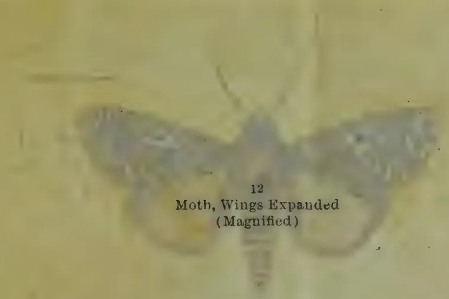
A detailed illustration of a moth with its wings fully spread, showing intricate patterns on the wings and a segmented abdomen.12
Moth, Wings Expanded
(Magnified)
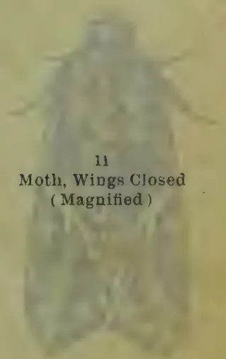
A detailed illustration of a moth with its wings folded over its body, showing the underside of the wings and the thorax.11
Moth, Wings Closed
(Magnified)
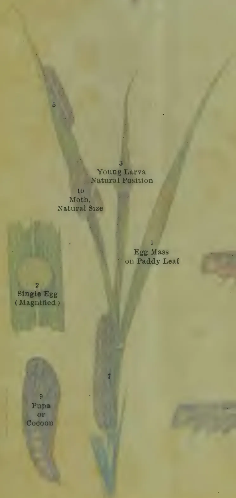
A central illustration of a paddy plant with a young larva (caterpillar) positioned on the stem. The larva is shown in its natural position, and the plant is labeled with numbers 1 through 10.3
Young Larva
Natural Position
10
Moth,
Natural Size
1
Egg Mass
on Paddy Leaf
2
Single Egg
(Magnified)
9
Pupa
or
Cocoon
4
An illustration of a caterpillar in an even later stage of growth, showing further development of its body and head.6
An illustration of a caterpillar in a final stage of growth, showing a well-developed head and body.8
Figures 4, 5, 6, 7, 8, Caterpillars in various stages of Growth. The lines alongside the figures show the natural sizes.
[SEPTEMBER, 1920]To continue, the caterpillars are of a noticeable size when about two weeks old and are then able to strip the grasses around the edges of the paddy fields and on the bunds, giving these a brown, dried-up appearance. The swarm of caterpillars, after exhausting all the supply of food in their usual haunts, then invades the adjacent paddy fields to join their more fortunate companions which are already established there. From now onwards they feed voraciously and grow rapidly, devastating field after field, if left unchecked.
Under favourable conditions, they become full grown in about a month after emergence from the eggs, and can then be seen migrating to the sides of the field and the edges of the field, and then burrow into the soft earth, and change into a shiny reddish-brown cocoon or pupa (see fig. 9). Within this cocoon the body tissues and internal organs are completely broken down and built up again to form the adult winged moth, or reproductive stage, (see figs. 10, 11, 12.)
In about two weeks the transformation is complete, the moths emerge and mating probably takes place soon, and the female moths are able to begin egg-laying for another brood.
The whole life cycle from the laying of the eggs to the emergence of the moths occupies a period varying from seven to ten weeks according to the climatic conditions, food supply, etc.
Out of the vast swarms of caterpillars which hatched from the eggs a few weeks previously it is fortunate that only a comparatively small number are able to complete their development and emerge as moths.
The caterpillars are eagerly devoured by birds, especially crows, and the gathering of birds around the paddy fields and on the bunds is usually an indication that an abnormal outbreak of caterpillars is in progress, and observant cultivators will profit by this warning and act accordingly.
Observations have shown that minute parasitic wasps play an important part in preventing the ultimate development of these caterpillars into moths but unfortunately they are seldom able to prevent damage by the pest in its early stages.
The cultivators themselves, however, can assist these natural enemies of the pest by carefully observing local conditions and promptly undertaking such remedial measures of control as may be suited to the conditions of the particular locality. There are also certain general preventive measures indicated elsewhere, which are applicable to almost every paddy growing district, where Spodoptera occurs, and the important point to note about these preventive measures is that they are effective not only against the "Arakodian" or "Godawellu," but that they will serve to check nearly all of the caterpillar pests of paddy, and such pests as the "paddy fly," and will improve the general health of the paddy plants during the early stages of their growth. These preventive measures can be carried out by every cultivator of paddy, and invaluable assistance can be given by local Agricultural Instructors, School Teachers, and the various village authorities by teaching not only the cultivators but the children to be able to recognize the important paddy pests and to deal with them as occasion arises.
8Control measures are, for the sake of convenience, grouped under two main headings—Remedial Measures and Preventive Measures—although in some cases the distinction is only an arbitrary one.
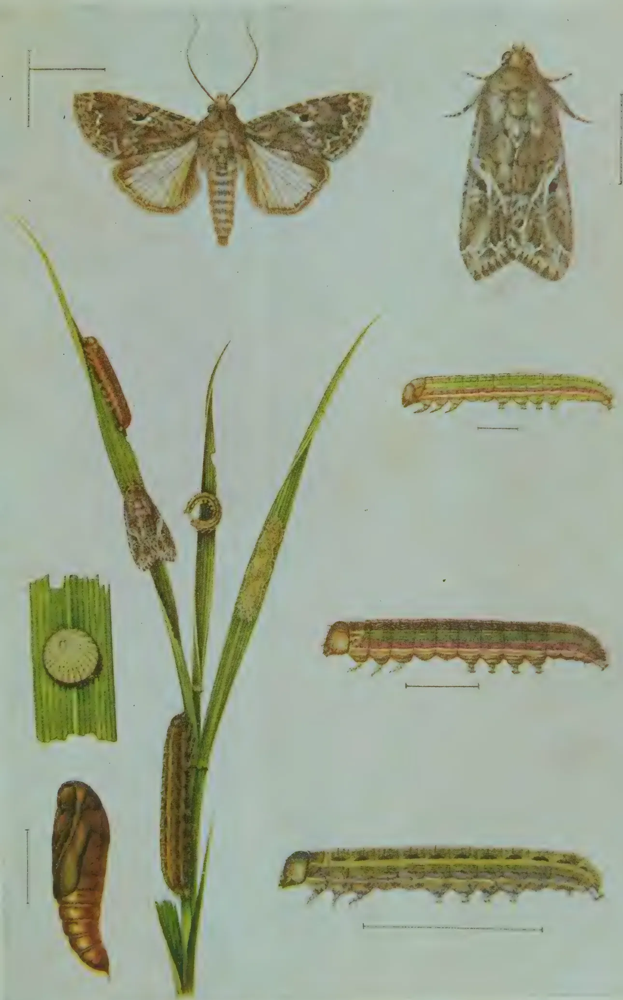
A detailed botanical illustration of the moth Spodoptera mauritia. The central figure is a long, slender green grass stem with several long, narrow leaves. On the stem, there are three brown, segmented caterpillars at different stages of development. A small, circular, light-colored cocoon is also shown on the stem. To the left of the stem is a brown, elongated pupa. Above the stem are two adult moths: one with patterned wings and a long, striped abdomen, and another with more uniform, mottled brown wings. To the right of the stem are three caterpillars shown in detail, each with a scale bar below it. The caterpillars are green with a reddish-brown stripe along their sides and small, dark hairs. The pupa is also shown with a scale bar.SPODPTERA MAURITIA.
This image is a scan of a blank page. The paper has a light beige or cream-colored tint. There are a few very small, dark specks scattered across the surface, which appear to be scanning artifacts or dust. A faint, thin horizontal line is visible near the top edge of the page. The overall texture is slightly grainy, typical of a scanned document. SEPTEMBER, 1920.]135A. Remedial Measures.—These consist mainly of such emergency means of control which have to be adopted after the caterpillars have invaded the paddy fields, and their main objects should be to destroy the greatest number of caterpillars in the shortest possible time, and to prevent their spread to the adjacent fields or to other paddy areas in the same locality. Alternative methods are given, and the method, or methods, best suited to the particular local conditions should be promptly applied as early in the outbreak as possible.
1. Digging Ditches.—In order to isolate the caterpillars and prevent their reaching new fields deep ditches should be dug, as indicated by the sectional diagram by GREEN here reproduced.
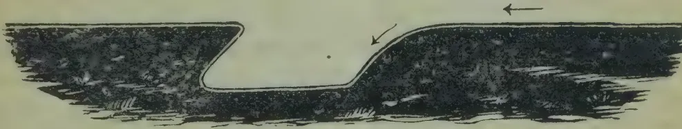
The side of the ditch nearest the area already infested should slope gradually, while the opposite face must be upright or even over-hanging. At intervals along the bottom of the ditch, pits (18 inches to 2 feet deep) should be sunk. The sloping side nearest the line of advance will lead the caterpillars into the ditch, while the steep opposite side will prevent the caterpillars from escaping. They will crawl along the bottom and fall into the pits, where they can be destroyed by crushing, or by heavy liming. This measure was suggested by GREEN in 1905 and is one of the recognised methods of dealing with caterpillar pests of the "army worm" type in countries where vast swarms of these occur periodically. It is best adapted to dry districts, or to localities where a good supply of water is not available at the time of the outbreak. It may also be regarded as a preventive measure if permanent ditches are made between paddy fields and the adjacent jungle, and kept clear of weeds at intervals.
There is a prevailing belief among paddy growers in some districts that the "Arakodian" or "Godawellu" is brought into the fields by the irrigation water, with the result that when an outbreak of this pest occurs the water is immediately drained off. This is an entirely mistaken idea, since the caterpillars hatch, as explained above, from eggs which are laid by the female moths on the grasses around the fields, and when they have eaten the grasses they attack the paddy. The presence of water in and around the fields is objectionable to the caterpillars and they avoid it wherever possible. This brings us to some of the ways in which water can be used to control this pest.
2. Water Barriers.—In flat districts where there is plentiful supply of water the fields can be surrounded by broad channels kept filled with water, and large areas of paddy should be divided up by a permanent system of cross channels which can be flooded in an emergency. This will be comparatively simple matter in extensive level areas of paddy where there already exists a well-established system of irrigation. These channels will form effective barriers to prevent the invasion of the caterpillars from the jungle, and their spread to new fields, if they are kept free of all weeds and
136[SEPTEMBER, 1920.]rubbish which might serve as bridges for the caterpillars. All plank bridges should be removed from the channels during the outbreak, as otherwise the caterpillars find them an easy means of escape to new fields.
3. Flooding the Fields.—Given a good water supply much can be done to destroy the pest by flooding the fields deeply as soon as the outbreak is noticed. If the tops of the plants can be covered then the caterpillars will be driven to the surface of the water where they will drown if they can be prevented from reaching the sides of the fields. Even a partial flooding of the infested fields is useful, as the caterpillars will climb to the tops of the plants, whence they can be shaken off into the water by repeatedly dragging ropes soaked in kerosene across the tops of the plants. In small fields the caterpillars can be collected by skimming the top of the water with paddy winnows and the catch destroyed.
Another advantage of flooding the fields as soon as possible is that young plants can often be saved if they have only been partly eaten as they will spring up again and produce a crop, though it is usually a poor one. It has also been observed that older plants seldom recover if stripped to the ground by the pest.
The ordinary conditions of paddy cultivation are seldom favourable enough to allow deep flooding, but usually some water is available, and advantage should also be taken of heavy rains. Cultivators must not drain off the water, since "dry" fields are rapidly stripped bare to the ground during an attack of Spodoptera, unless the caterpillars can be destroyed promptly. Once the caterpillars have invaded an entirely dry paddy area the most practicable measure seems to be to sacrifice a certain portion of the fields and make every effort to isolate the pest by digging ditches and destroying the caterpillars as recommended above.
4. Liming.—Quick-lime, or lime and water, can be sprinkled on the bunds and around the edges of the fields when caterpillars are observed to be swarming in these places. The ordinary local slaked lime is practically useless, as it has little or no effect on the caterpillars. Liming is recommended in localities where birds are not plentiful, and is sometimes useful in the early stages of an outbreak, especially where the caterpillars are trying to escape from the water in flooded fields.
5. Rollers.—An attack of the "Arakodian" or "Godawellu" sometimes starts in pasture lands used for grazing cattle, and the young caterpillars can be destroyed in such places by dragging heavy rollers over the land. Any large tree-trunk (sawn into convenient lengths) can be used for this purpose.
6. Destruction of Cocoons or Pupæ.—If an outbreak of Spodoptera has been checked in its earlier stages by any of the above measures there ought to be very few caterpillars left to attain their full growth and change into cocoons, or pupæ. But where there has been considerable delay in dealing with the pest it will be found that a number of caterpillars have developed and burrowed into the soil on the sides of the bunds and around the edges of the fields in order to change into the shining reddish-brown pupæ, from which the moths will emerge later.
SEPTEMBER, 1920.]137By plastering the sides of the bunds with clayey mud not only will many of the moths be prevented from making their way out, but a number of the caterpillars will be unable to burrow in to form their pupæ and will be compelled to pupate in more exposed places where they will be subject to weather conditions and to the attacks of their enemies.
The above measures of control are all effective in checking the ravages of the "Arakodian" or "Godawellu," provided that the cultivators in the infested areas co-operate to carry them out promptly. Fortunately the control of this pest does not depend solely on the efforts of the cultivators, since there are certain natural enemies which render valuable assistance in reducing the numbers of Spodoptera.
Natural Enemies.—Caterpillar pests are usually kept in check by their natural enemies and Spodoptera mauritia is no exception to this general rule. Among these enemies may be mentioned at least two species of small parasitic wasps, and fungous and bacterial diseases. The latter require moist conditions for their development and are ineffective during dry weather.
It has been observed by GREEN and others that when there is a dry period in October and early November, it is advisable to be prepared for an outbreak of Spodoptera. Such a dry period coming at a time when the paddy is growing is favourable for the caterpillars. Large numbers of them are able to survive, and after exhausting their ordinary food supply they migrate in vast swarms to feed on the young paddy plants.
It may be mentioned here that similar abnormal broods of Spodoptera are also liable to occur at the end of May and early June, if there has been a dry period a month or so previously.
The caterpillars having got a start of their natural enemies are able to make good running for a time until they are overhauled again. In this short time they are able to inflict serious damage on the paddy crop before their natural enemies again assume control. Towards the end of an abnormal brood of caterpillars one can observe numerous clusters of small whitish objects on the paddy leaves. These are not the eggs of the pest; but are the cocoons of small parasitic wasps, and they should not be destroyed, but should be left to carry on their good work.
A noticeable feature of any unusual swarm of caterpillars is the presence of large numbers of birds, especially crows, which very soon assemble around the infested fields and greedily devour all the caterpillars they can get. They play an important part in checking the pest in its later stages and should always be protected and encouraged.
Other useful, though less important, enemies of Spodoptera are several kinds of predatory bugs (Hemiptera) and a beetle (Cicindela sexpunctata, F.) which feed on the caterpillars. The beetle is sometimes observed running over fields which have been stripped bare.
B. Preventive Measures.—The main object of suggesting the preventive measures outlined below is to show paddy cultivators how they may save their crops from the annually recurring damage inflicted by various insect pests, and especially the "Arakodian" or "Godawellu." Cultivators are
138[SEPTEMBER, 1920.]willing to go through all the hard and tedious labour of preparing the fields for the crop, and then it often happens that the results of their previous efforts are ruined for the lack of a little extra care and attention after the crop is planted.
1. Clean Cultivation.—This is a general measure, applicable to all the more important insect pests of paddy. Most of these pests, including Spodoptera, ordinarily breed among the grasses which are often to be found growing on the bunds, around the fields and in adjacent uncultivated land. Usually these various insects are controlled by their natural enemies which include both other insects and fungous and bacterial diseases. As indicated above, dry periods sometimes occur in the early stages of the paddy crops and such periods are favourable for the development of Spodoptera and other caterpillar pests of paddy. An abnormal brood of Spodoptera sometimes results and much damage is done before the pest can be controlled.
The clearing and burning, if possible, of all grasses and weeds on the bunds, on uncultivated paddy fields and on any waste land near the cultivated fields will mean that large numbers of the egg-masses and young caterpillars will be destroyed and there will be considerably less danger of any abnormal increase of caterpillar pests, especially Spodoptera. This clean-up should be made at least twice a year just after the Maha and Yala crops have been planted, and special care should be taken to have the grasses and weeds cleared off if there are dry periods at the end of April and early May and again in latter part of October and early November.
This is the most important of the so-called preventive measures and its object is to reduce the numbers of the various pests of paddy in their usual haunts before they can get a chance to increase and attack the young paddy crops.
2. Good Cultural Methods.—It has been observed by GREEN and others that early sowing followed by good cultivation and manuring to produce a vigorous growth of the plants very materially lessens the damage done by the "Arakodian" or "Godawellu."
The periodical weeding-out of sickly plants in the early stages of growth also tends to produce a more vigorous condition among the remainder and indirectly is useful against Spodoptera. This measure, however, is especially effective in controlling the stem-borers (Schoenobius bipunctifer and others).
3. Collection of Egg-masses.—This measure can be carried out in conjunction with clean weeding in the paddy fields. The egg-masses of Spodoptera are quite conspicuous (see fig. 1) and the weeders can easily learn to recognise them and collect and destroy them whenever found. The periodical clearing-up and burning of grasses and weeds will help to destroy most of the egg-masses laid outside the paddy fields.
4. Deep Ploughing.—It is not known definitely to what extent the caterpillars of Spodoptera form their cocoons actually in the paddy fields, as they usually retire to the sides and borders of the fields for this purpose owing to the presence of water in the fields. But under certain conditions, as for instance when a comparatively dry field is stripped bare, there is every
SEPTEMBER, 1920.]139reason to believe that a number of caterpillars, provided they are full grown, will burrow right into the soil and pupate in the field. If such a field can be kept flooded for several days after the attack it is probable that most of the cocoons below water level will be killed, but water may not always be available just at this time. Failing this, it is suggested that fields which have been stripped bare to the ground should be deeply ploughed, as the plants will not produce a profitable crop when once they have been eaten right down. By ploughing at this time large numbers of the cocoons will be turned up and exposed to climatic conditions and to birds and other natural enemies of the pest.
It is further suggested that the practice of ploughing-under the stubble after the crop is reaped be given a thorough trial under local conditions. At the end of the crop there are always a number of cocoons of various paddy pests left in the ground and in the stubble in dry areas, and deep ploughing at this time will help to destroy a good percentage of these. The cocoons in the ground, probably largely Spodoptera after an abnormal outbreak, will be exposed, while those in the stubble, mostly stem-borers, will be buried. In either case the moths will have some difficulty in emerging.
There seems to be an important objection to the general adoption of this measure, even supposing cattle were available for ploughing, and that is the fact that the terms under which paddy lands are leased as a rule only permit the fields to be ploughed up before the planting of the crop and not after it is reaped. In many cases it might be possible to arrange that fields be ploughed-under after the reaping of the crop as well as before it is planted. By so doing the cultivator will not only further reduce the numbers of certain paddy pests, but he will also enrich the soil for the next crop. It is suggested that this measure of control should be carried out wherever practicable and be made part of the routine of cultivation of paddy.
Conclusion.—In carrying out the above measures of control against the Arakodian or Godawellu, the need for co-operation among all paddy growers cannot be too strongly emphasized. The urgency for increasing the local production of rice at the present time makes it imperative that cultivators should pay special attention to the growing of this crop and to the control of the numerous insect pests which are ever ready to attack it at all stages of its growth in the field, and even after the grain is reaped and stored.
Much of the damage done to the paddy crop in the field can be avoided by adopting more sanitary methods of cultivation in and around the fields, and by keeping a careful look-out for any unusual increase of a pest and promptly applying such measures of control as are best suited to the particular locality.
The Agricultural Instructors are in a position to recognize the more important insect pests of paddy and to suggest immediate measures for checking them.
The occurrence of any unusual outbreak should be reported immediately to the Department of Agriculture and specimens should be sent.
140[SEPTEMBER, 1920.Spodoptera mauritia, the swarming caterpillar of paddy, is known locally by Sinhalese as the "Godawellu" and by Tamils as the "Arakodian."
It is a serious pest of paddy in that the caterpillars are liable to sudden abnormal increases, when they adopt the "army worm" habit of swarming and devastate large areas of paddy unless promptly checked. The infested areas rarely produce a crop, and even partially eaten fields give a poor yield.
This pest breeds normally in grasses and waste lands around paddy fields, but is usually controlled by its natural enemies, which include other insects, and diseases. A dry period coming about the time that the paddy crop is being planted is favourable for the rapid increase of the pest, and during such periods special attention should be paid to clearing up the grasses and weeds in and around the paddy fields.
Other measures by which any abnormal increase of Spodoptera may be largely prevented include early sowing followed by good cultivation, clean weeding, and manuring to produce a vigorous growth of the plants. The collection of egg-masses is also a useful method of preventing unusual increases.
After the caterpillars have invaded the fields, only emergency measures can be employed with the object of destroying the caterpillars as rapidly as possible and preventing their spread to new areas. These measures include the digging of ditches to trap the caterpillars; the construction of broad channels filled with water; the flooding of fields to drown the caterpillars; the use of quick lime around the fields; the destruction of the cocoons or pupæ by plastering the sides of the fields with mud.
The insect enemies of Spodoptera include small parasitic wasps, predatory bugs and a ground beetle. Towards the end of an outbreak of the pest the small whitish cocoons of the parasites can be seen in clusters on the leaves, and should not be destroyed, as the wasps will emerge and attack other caterpillars.
Birds, notably crows, play an important part in the control of the pest when a large swarm is in progress, and these should be protected.
Co-operation among paddy growers is urged, not only in improving the general methods of cultivation, but in promptly applying the measures necessary for the control of Spodoptera mauritia and other insect pests of paddy.
Fig. 1. Egg-mass as laid on paddy-leaf.
,, 2. A single egg, magnified.
,, 3. Young larva in characteristic attitude.
,, 4, 5, 6, 7, 8. Larvæ in various stages of growth.
,, 9. Pupa.
,, 10, 11, 12. Moths.
This plate has been reproduced by kind permission of the Imperial Entomologist, Department of Agriculture, India.
SEPTEMBER, 1920.]141DR. B. C. P. JANSEN.
On and off here in the Indies, in poor, outlying districts the population has to take recourse to other cheap food on account of dearth of rice. For that reason during last year two articles, viz: "nagoer" and "gelang" (malay words) have been sent to the Medical Laboratory at Weltevreden for examination, which had been used as food by the population of Wonogiri.
According to the local Native Surgeon, M. BOEDIARDJO MANGOEN KOESOEMO this diet caused some symptoms, i.e. appearance of œdema similar to beri-beri, but which did yet not correspond in all points with the well known complex of symptoms of that disease.
"Gelang" is prepared from the arengo-palm; "nagoer" is made from the residue obtained when preparing sago out of the cassava roots. From the analysis at the Laboratory it appeared that both foods consisted nearly exclusively of amylum; the content of protein in both was under 1%. Therefore it is easily understood that they are not suitable as principal diet for a population.
Notwithstanding that I had already last year pointed to the absolute inadequacy of that kind of food, this year the same did occur again in that district. This time the Civil Surgeon at Klaten, DR. A. VAN SCHELVEN, sent the food to the Laboratory for examination. As some articles about the prevalence of so called War-œdema said to be caused likewise by inadequate, both qualitative and quantitative, diet have recently been appearing in various German journals, I asked DR. VAN SCHELVEN to submit the patients to a particular examination, in order to ascertain in how far the symptoms occurring in this country, did correspond with the European symptoms.
However when we were able to begin the examination, dearth of food had nearly disappeared in the neighbourhood of Klaten, only few patients remaining.
Besides the œdema the most characteristic of the German patients was however a severe bradycardia in such degrees that Gerhartz* suggested to name the disease after it. Yet DR. VAN SCHELVEN informs me, that in the native patients he always found a normal or even often an accelerated pulse; likewise did he not succeed in curing the patients by bedrest and good diet, as apparently was the case in Germany.†
* D. Med. W. 26th April, 1917, page 514.
† C. f. F. Boenheim, Munchen. Med. W. 27, page 873 (3 July, 17.), F. Lange D. Med. W. 12, July 1917, p. 876; H. Gerhartz I. e.; W. H. Jansen, Munchen Med. W. No. 1 (1918); A. Lipmann, Refer. D. Med. W., 18th Oct., 1917, p. 1315; Maase & Zondek, Berl. Kl. W. 54, p. 861 (3 Sept., 1917); who all point to the speedy recovery by bedrest and improved diet.
Knack & Neumann, D. Med. W., 19 July, 1917, p. 901 did however find a quick falling off of the œdema, but the patients remained very weak afterwards and only recovered slowly of the illness.
142[SEPTEMBER, 1920.Moreover the disease was not of an innocent character: several patients died quite suddenly if they performed strong muscular labour, after apparent recovery.
In the urine sent by DR. VAN SCHELVEN I could ascertain a fairly great quantity of Creatine (about as much as Creatinine) which is not astonishing in view of such a protein-poor diet.
May we later on have no opportunity of studying the symptoms! Now the question presented itself: may not a cheap protein-rich food be got in the Indies, which might serve as a supplement to these carbohydrates? I believed one of the most adapted substances to be the so-called coconut-boengkil, or coconut press cake, the residue of the dried kernel of the coconut (copra), after the oil has been pressed out.
This cake at the present is produced in enormous quantities, and is obtainable at a small price. The product, when not too old, may be made into palatable courses in different ways, for instance by baking, either mixed with native sugar (from the arengo-palm) or not. It is being produced continually, all the year round, therefore it will not be difficult to make such arrangements that fresh boengkil always be obtainable in a certain district. The coconut boengkil does contain about 20% protein, likewise always about 10% of oil and the rest are carbohydrates and cellulose.
In order to ascertain whether this article might under circumstances be added to the human diet as a protein-rich part, I made some experiments.
The provisional results being favourable, at the beginning of this year I sent a report about the matter to the Director of the Medical Laboratory. An excerpt thereof has likewise been published in various journals here, about Medio February 1919.
Though the human experiments have from necessity been fairly hasty and rough, therefore I wanted to repeat them more accurately on monkeys, but was forced to postpone the experiments, until the time that I should have got some cages adapted to metabolic tests.
I intended to wait with the publication of my researches till that time. However finding from the first number of the JOURNAL OF BIOLOGICAL CHEMISTRY received after the war, that American investigators are occupying themselves with the same problem, I am obliged to publish the result of my experiments obtained up till present.
In the first place I traced whether the coconut proteins are a full albumen or not, i.e., whether they contain all amino-acids which cannot be synthesized in the animal organism; in other words, whether they were able to maintain the nitrogen-balance in animals and men. Not having any cages adapted for metabolism, I ascertained during a long period, the weight of rats, fed with a mixture of equal parts of "nagoer" or "gelang" and coconut press cake. These prolonged tests have at the same time the advantage of proving whether or not the coconut presscake and eventually also "nagoer" or "gelang" do contain any substances, which in the long run might be prejudicial to health.
The result of the test was fully satisfactory. Some cases lost some weight, the majority did not even show a smaller or greater increase in weight,
SEPTEMBER, 1920.]143In that case the increase in weight is convincing above all : the increase in bodily weight consists for the best part of albumen, and this is bound to be derived from the coconut proteins.
Press cakes made at the Laboratory from fresh coconuts have been used for the first experiment. The cake contained about 16% of albumen (N X 6'25). Therefore the quantity of albumen in the mixture of coconut press cake and "nagoer" or "gelang" did not contain more than 8% of albumen.
In view of the rather long period of the experiment (in some cases 12 weeks) this certainly shows that we have to do with full albumen. All succeeding tests have been made with coconut boengkil, which was kindly provided by the great oilmills at Rangkas Betoeng of the "Insulinde Company."
The contents of protein in that boengkil was about 20%. It has been ascertained in the first place, whether a growing organism could satisfy its want of albumen entirely from coconut proteins. In the first place it does appear (rat 141, 142, 143) that young animals may subsist a long time exclusively on coconut presscake, or on a mixture with 1 part of gelang. Some growth even did occur on the first diet, which however soon came to a stand. This is not surprising because there are no fat-soluble vitamins in coconut oil ; * therefore it is not very probable that these would be found in the press cake.
This is somewhat contradictory to that found by the American investigators. Yet growth did likewise increase considerably in their experiments through addition of butter fat. Perhaps the species of animals has likewise some influence.
I used house rats. JOHNS c. s. used white rats.
If however fat soluble vitamins are being added in the form of an alcohol ether extract of 10% yolk, satisfactory growth did appear. This fact is of great importance ; because the proteins added during this experiment in the system of the rat are exclusively derived from the coconut press cake.
Consequently this albumen does contain all amino-acids, which cannot be synthesized in the animal organism. Perhaps there is likewise some connection between the relative relation of these amino-acids and the fact that the so-called biological value of the various proteins does vary so much. It is known for a long time that the minimum of proteins necessary to keep an animal in nitrogenic balance, is not a constant figure, but that it depends on the kind of albumen used in the experiment. Thus MICHAUD found that a dog may be kept in nitrogen equilibrium on a smaller quantity of albumen in the form of flesh of a dog than on other proteins. Yet somewhat definitive quantitative data have not been found.
* Cf. B. C. P. Jansen, Med. Jrl. f. Neth. Indies 58, Vol. 1 (1918). Holliburton on Drummond, Arch. Neerl. de Physiol, II p. 601, 1918. An interesting confirmation of these animal tests have been provided by W. A. Wille, Med. Jrl f. N. I. 59 p. 420, 1918 ; he ascertained hemeralopia indioopathica cum xerophthalmia, a disease caused by want of fat soluble vitamins in the food of Javanese patients, of whom the diet o. a. contained 50 grammes of coconut oil per diem.
144[SEPTEMBER, 1920.This problem has been attacked from another side in America. There it has been ascertained which quantity of the various proteins have to be added to a diet containing all ingredients required for growth but the proteins in order to obtain a normal growth (and reproduction) with such a diet. McCOLLUM, SIMMONDS AND PARSONS mention the under-following about these tests :
“ From biological tests we now know that the proteins of the pea or navy bean are worth only about half as much for growth in the rat as are equal amounts of proteins from one of the cereal grains, and that the latter have about half the value for the conversion into the body proteins which can be shown for the proteins of milk. The relative values of the proteins from different sources, as well as the absolute values of certain of them are just now becoming appreciated.”
I much regret that the preceding numbers of the JOURNAL OF BIOLOGICAL CHEMISTRY cannot be had here as yet, and consequently I have no absolute figures at my disposal, nor could ascertain whether the relative figures given by McCOLLUM c.s. are irrefutable or whether they should be considered to be provisional only. Because from a communication of EMMETT AND LUROS in the same volume of the JOURNAL OF BIOLOGICAL CHEMISTRY we got the impression of this determination not being quite so easy, nor that the figures have been fixed upon by far. Moreover so called “normal growth curves” have been fixed for the test animals, the white rat, of the American investigators, they having been able to make a great many determinations. I have not been able to compile sufficient material about my test animal, the house rat to allow me of speaking about “a normal growth curve.” However JOHNS, FINKS AND PAUL, who as a matter of fact were acquainted with the figures meant by McCOLLUM found a nearly normal growth for their rats on a diet containing 13.1% albumen (N X 5.7) entirely derived from coconut press cake ; they state about it : “ notwithstanding the relatively low protein content of this diet, several of the rats attained normal growth. This experiment shows conclusively the high biological value of coconut press cake.” Where we find a fairly sufficient growth, at least in some rats, on a diet containing only 10% of protein derived exclusively from coconut press cake, I believe to be allowed to take this to be a confirmation of their verdict.
Now there remains the question ; how does the human organism react in regard of a diet in which the proteins are mainly derived from coconut press cake. In the first place we are interested in the question : is the coconut albumen offered to the system in the form of coconut press cake being sufficiently reabsorbed or not. It would be easiest to make this test by feeding some persons, like we did with the rats, on a mixture of sago and coconut residue, in which the proteins are nearly exclusively derived from the coconut. Such test is however very difficult, because the menu is not very palatable. Even in taking the daily quantity of proteins necessary to a native of 50 kilogram to remain nitrogen equilibrium, at a low figure for instance at 60 grammes per diem, the test person should have to eat about 300 grammes of press cake per diem, if these 60 grammes should entirely be taken in the form of coconut proteins. Now this quantity is very voluminous and because of its content of coconut oil most likely very “rich,” so that it would be difficult to eat it for many consecutive days. Therefore I gave my
SEPTEMBER, 1920.]145test persons a diet in which the proteins were derived for 30 to 50% from the coconut, and for the remainder, in the main, from rice. In that way I expected to get at least some insight into the degree in which the proteins from coconut press cake are being reabsorbed by the human organism.
First I experimented on two pupils of the School for Native Surgeons, who kindly put themselves at my disposal (test persons A and B). The food was prepared every day and weighed at the Medical Laboratory, put into a sealed dinner-carrier and sent to the house of the test person. Any rests of the preceding day and the urine and fæces were sent to the Laboratory. In that way I did not have much control whether the food had really been taken or whether perhaps some other food had been eaten. But the pupils being from the higher class therefore were able to judge about the importance of the experiment and being themselves more or less acquainted with experimental work, I believed that I could do without such control.
I also experimented on the garden boy of the Laboratory (test person C), who for money and fair words could be induced to undergo the test, especially so after I had been able to convince him of the test not being prejudicial to his health. This person took the menu prepared for him under our personal control, so that we are certain that the food mentioned in the tables has been taken.
If now we examine these tables, we will see in the first place that hardly on a single day nor in any one of the three test persons, the nitrogen content of urine fæces is equal to the nitrogen content of the food taken, but remains much below that quantity. Increase of protein could not be expected by the already low protein content of the diet. Besides the bodily weight remains constant, does even go down somewhat by test person C. However the loss of nitrogen through the skin, by way of perspiration, is an important factor here in the tropics. According to premeditated tests by EYKMAN, that loss even without special muscular exertion may be 1 to 1.5 grammes per diem. These figures might even be greater in test person B, who was an ardent sportsman, and in test person C, who regularly had to perform more or less heavy work. Yet we will have to consider that perhaps all the urine had not been sent in.
In any case this is of secondary importance for our question; we are in the first place interested in the relation between the nitrogen secreted with fæces, and the quantity taken with the food. And for obvious reasons the danger of not all the fæces being sent in, is very much smaller.
If now we ascertain the quality of nitrogen which is leaving the system with the fæces, that is unused, we find that quantity to be for A: 26, 5%; for B, 27, 5%; for C, 21, 7%. The fact of the last person reabsorbing the proteins so much better than the two others, may of course be accidental, but might perhaps also be explained by the fact that A. and B. are used to a better and more varied diet, whereas C. is used to simple monotonous fare. The test persons A. and B. told me that they had great difficulty to finish the entire menu with that great quantity of coconut cake; whereas C repeatedly stated that he liked it very much and finished his portion in a moment. Therefore it is quite well possible that in the latter case more digestive fluid was being secreted, causing better digestion of the food.
146[SEPTEMBER, 1920.Yet the menu did not consist of coconut press cake only. Therefore we may presume that perhaps the other proteins were easily digested and reabsorbed by the system ; if that were the case and the coconut protein was being badly reabsorbed the average might still be fairly satisfactory. But it was not so. The other protein namely was for the best part, for C. exclusively of vegetal origin. And here we have always to allow for a loss of nitrogen in the fæces of 20 to 25 %.
These tests are not quite conclusive ; likewise the period has not been taken very long. Yet I presume to be allowed to conclude that with great probability the coconut proteins supplied to the human organism in the form of coconut press cake ( coconut beengkil ) is being reabsorbed in a very satisfactory way. There is not a much greater loss of nitrogen with the fæces than generally is occurring with vegetal food. The use of the diets mentioned above did not bring about any unpleasant consequences for the test persons. The fæces of all three were not formed so well as for instance with a rice diet, but as a rule they could not be called quite pulpy.
Only test person B had an attack of diarrhœa towards the end of the test. This in itself does not prove much, especially in the tropics, but it is still less probable that it had been caused by the diet, if we observe, as will be seen from the table, that just during the last days a great part of the coconut press cake has been returned whereas in the first days when much coconut has been eaten, the fæces were of good formation.
Therefore, in my opinion, it would not be an inconsiderate advice, in case of emergency and if in some part or parts there should occur dearth of albuminous food, to urge upon the population to meet this, at least for some part, by means of coconut press cake.
As soon as I have received the metabolic cages, which have been ordered already for a long time, I will repeat the test with monkeys.
I have made extensive experiments about the content of anti beri-beri vitamins of the coconut press cake, which I intend to publish in connection with the same tests of a number of other food products. However the content proved to be fairly small.
Now the question does arise, whether it would not be possible and desirable to use the coconut proteins directly for human food. DR. A. J. KLUVER at the time already pointed out that really much less is being lost in the native way of coconut oil production (at least for own consumption) than by mechanical production. In the former way, less oil as such is obtained, but the oil and protein containing residue, is also being used for human food ; whereas the factory product, obtained after the oil has been pressed out, does at the best yield anything to men by the circuitous way of milk and meat producing animals.
At the outside it is being used as human food during periods of dearth. Moreover by keeping it even for a little time, it gets rancid through the oil it is still containing, and thereby becomes unpalatable. If however the drying process of the fresh coconut could be very much accelerated, for instance by mechanical drying, and not like it being done at present by the natives above a small fire or in the sun, causing it to become mouldy and dark coloured as a rule ; if further the last rests of oil were removed by extracting, then perhaps we might be able to get a product, which can be stored, and is suited for human consumption.—MEDEDEELINGEN VAN DEN BURGERLIJKEN GENEESKUNDIGEN DIENST IN NEDERLANDSCH-INDIE, ANNO 1920, DEEL 1.
SEPTEMBER, 1920.]147This is a subject which often crops up for discussion and although many divergent views are ventilated with regard to it, in practice we find that most planters set about the work in the same general way.
It is agreed that a garden can more easily be allowed to deteriorate, than it can be brought round again and may take a much longer time to do it. The time taken to reclaim a garden from an all round backward condition will depend almost entirely upon the garden itself in the first place—there have been gardens which have been abandoned altogether as being considered irreclaimable. There are gardens which have been abandoned in former years without an effort being made to bring them back to a state of profitable fertility. This, in many cases, was advisable when there was plenty of fresh jungle land to open out, as it was calculated it was more economical to open up a new extension than to spend money upon reclaiming land which had badly washed and probably growing in inferior ‘jat’ of bush. In these days of comparative land scarcity there is not only more reclamation work done but much greater care is taken of what is in good condition in order to render reclamation unnecessary.
This is considered the first work to be undertaken in the process of renovation, but different ideas exist amongst planters as to the most economical and quickest manner this is to be accomplished. Some planters appear to be of opinion that in order to bring the soil back into condition in regard to its humous content all you have to do is to start right away and grow leguminous green manuring crops. Those planters who have had actual practical experience in such work inform us that the soil must be brought into a condition which will enable it to grow such a crop in the first place. This in itself will not be done in one year. A leguminous crop, despite the fact of its being capable of getting its nitrogen from the illimitable supply existing in the atmosphere, through the agency of certain forms of bacteria, will not succeed upon an exhausted soil. There is nothing simpler to grow than a green manure but it must have a soil in fairly good condition before it will do much towards adding organic matter. Another important and usually very much neglected source of organic matter is the cattle manure and rubbish about the coolies.
148[SEPTEMBER, 1920.In this connection the most noticeable circumstance is the fact that at one period of a garden's lifetime it may have thoroughly up-to-date structures for the proper control and preservation of the line manure, while in the following decade these same structures may be in such a dilapidated condition as to be useless for the purpose for which they were constructed. This may be due to several causes but one of the most prominent is change of management. Some of our Calcutta agencies have adopted standard plans for pucca manure pits and it is rather strange that such are not in evidence, at least upon gardens which are under their control. There are, however, some to be seen but the line sweepers appear to prefer throwing the manure all round the covered pit, right under the eaves where all the water from the roof drops upon it, and, of course, washes all its most valuable constituents away into the nearest mullah. When the start is made with an empty pit everything is all right. The manure is thrown in from all sides through the opening left for the purpose between the top of the enclosing three feet wall and the eave. But the manure is not levelled back to the centre, and, as time goes on, the opening gets filled up giving the appearance to the casual observer of the pit being chock full when it is really as nearly hollow as a nut that has been kept to the second hallow-eeen.
If the manure were levelled back to the centre every day this could not occur and it ought to be considered the line chowkidars' duty to see that this is daily attended to. Under present careless methods, when the opening at the wall-top is filled up, the manure may extend all round the structure for a distance of anything from four to twelve feet and this, of course, is exposed to even more than the rain that falls on this space as it actually receives the water from the roof which is protecting an empty pit.
The time it will take to bring a garden round to tip-top condition from general all round deterioration with, say, 25 per cent. of vacancies, and the rest of the bushes in a moribund state has been asserted by planters who have actually "come through the mill" to be not less than 10 years. This appears to be a long time but it is not meant to convey the idea that the garden may not pay a dividend on its capital during this period. It takes a much longer time to bring an infilled vacancy into full bearing upon such a garden than it does to bring a well-planted new extension into the same state. The soil even on moderately level land, will have to be brought into condition and, as a rule, organic matter will be at the lowest point. It will take several years of work to bring this state of things into a satisfactory condition. The bushes will be hide-bound and to a large extent in a coppiced state. This will necessitate very heavy pruning perhaps to the collar. The root range of the plants will have been curtailed by inefficient cultivation and until this is remedied the collar prune may prove a disastrous operation. When everything is taken into consideration ten years would appear at least the lowest estimate of time required to reclaim a worn-out, neglected garden.
—INDIAN SCIENTIFIC AGRICULTURIST, Vol. I, No. 8.
SEPTEMBER, 1920.]
149
In order to help to secure accurate statistics relating to the Empire's Rubber Industry, the Government of Ceylon was asked to secure full details in regard to the Colony. The Development and Intelligence Branch of the Overseas Trade Department and the Statistical Committee were desirous of securing accurate statistics relating to the Empire's Rubber Industry. Forms were issued to Secretaries of District Planters' Associations for details relating to estates over 15 acres which were members of such associations. Similar forms for estates over 15 acres not members of Planters' Associations were issued through the Revenue Officers. For all areas under 15 acres separate forms were issued through Revenue Officers and statistics collected by Headmen. The final work of compilation was entrusted to the Department of Agriculture.
The results of information obtained are given in the following amended statements:—
| 1 Acreage in rubber in tapping on Sept. 1, 1919. |
2 Acreage in rubber over 5 years of age, but not in tapping on Sept. 1, 1919 |
3 Acreage in rubber over 1 year and un- der 5 years of age not in tapping on September 1, 1919 |
4 Acreage of 1 year old rubber |
5 Acreage of land cleared ready for planting of rubber |
Total | |
|---|---|---|---|---|---|---|
| Estates over 15 acres | 253,930 | 20,752 | 61,416 | 13,392 | 7,132 | 356,622 |
| Small holdings (converted into acres) |
13,032 | 3,552 | 20,875 | 10,945 | — | 48,404 |
| 266,962 | 24,304 | 82,291 | 24,337 | 7,132 | 405,026 |
150
[SEPTEMBER, 1920.
STATEMENT No. 2.
Areas of over 15 acres ( Members of Planters' Associations ).
| PLANTING DISTRICT | 1 | 2 | 3 | 4 | 5 | Total. | |||||
|---|---|---|---|---|---|---|---|---|---|---|---|
| Acreage in rubber in tapping on September 1, 1919 | Acreage in rubber over 5 years of age, but not in tapping on September 1, 1919 | Acreage in rubber over 1 year and under 5 years of age not in tapping on September 1, 1919 | Acreage of 1 year old rubber | Acreage of land cleared ready for planting of rubber | |||||||
| A. | R. P. | A. | R. P. | A. | R. P. | A. | R. P. | A. | R. P. | ||
| Agrapatna | 80 | 0 | 60 | 0 | 10 | 0 | 139 | 0 | 14 | 2 | 80 |
| Ambagannuwa | 2,079 | 0 | 602 | 0 | 97 | 2 | 122 | 0 | 50 | 0 | 2,302 |
| Badulla | 1,787 | 1 | 20 | 0 | 49 | 0 | 2,658 | ||||
| Dimbula | 51 | 0 | 82 | 0 | 167 | 1 | 106 | 0 | 80 | 2 | 120 |
| Dolosbage | 2,076 | 2 | 4,995 | 0 | 2,536 | 0 | 940 | 0 | 443 | 0 | 2,512 |
| Galle | 14,944 | 0 | 316 | 0 | 134 | 0 | 124 | 0 | 159 | 0 | 23,858 |
| Haputale | 3,936 | 1 | 1,759 | 1 | 2,941 | 1 | 1,543 | 2 | 398 | 0 | 4,669 |
| Kalutara | 45,555 | 0 | 364 | 2 | 15,172 | 2 | 740 | 2 | 51 | 0 | 52,197 |
| Kandy | 8,556 | 1 | 1,322 | 3 | 1,511 | 2 | 258 | 1 | 74 | 2 | 24,884 |
| Kegalle | 15,799 | 2 | 2,065 | 0 | 3,686 | 3 | 1,552 | 0 | 172 | 0 | 18,966 |
| Kelani Valley | 43,258 | 2 | 162 | 0 | 168 | 0 | 110 | 0 | 2 | 0 | 50,734 |
| Kelebokka, Knuckles and Panwila | 1,709 | 2 | 50 | 0 | 30 | 0 | 2,151 | ||||
| Kotmale | 208 | 0 | 2,030 | 3 | 500 | 0 | 296 | 0 | 80 | ||
| Kurunegala | 8,301 | 3 | 11,336 | ||||||||
| Low Country Products Association (not members of other associations) | 1,683 | 3 | 473 | 2 | 979 | 2 | 192 | 0 | 273 | 0 | 3,601 |
| Matale | 33,699 | 2 | 1,068 | 0 | 1,536 | 1 | 793 | 0 | 1,988 | 3 | 39,085 |
| Morawakkorale | 1,598 | 2 | 297 | 0 | 395 | 2 | 34 | 0 | 75 | 0 | 2,400 |
| Passara | 6,633 | 1 | 330 | 3 | 287 | 1 | 235 | 0 | 646 | 2 | 8,133 |
| Pussellawa | 5,620 | 1 | 274 | 0 | 1,036 | 1 | 161 | 2 | 7,092 | ||
| Rangala | 467 | 0 | 66 | 2 | 46 | 2 | 34 | 0 | 85 | 0 | 699 |
| Sabaragamuwa | 22,770 | 2 | 1,292 | 0 | 3,182 | 3 | 695 | 2 | 32 | 3 | 27,973 |
| Total | 220,608 | 1 | 15,758 | 2 | 36,019 | 1 | 8,280 | 3 | 4,871 | 2 | 285,539 |
| REVENUE DISTRICT | 1 Acreage in rubber in tapping on September 1, 1919 |
2 Acreage in rubber 5 years of age, but not in tapping on September 1, 1919 |
3 Acreage in rubber 1 year and under 5 years of age not in tapping on Sept. 1, 1919 |
4 Acreage of 1 year old rubber |
5 Acreage of land cleared ready for planting of rubber |
Total. |
|---|---|---|---|---|---|---|
| A. R. P. | A. R. P. | A. R. P. | A. R. P. | A. R. P. | A. R. P. | |
| WESTERN PROVINCE: | ||||||
| Colombo | 2,580 0 0 | 86 0 0 | 1,948 0 0 | 299 0 0 | 133 0 0 | 5,046 0 0 |
| Kalutara | 7,039 2 10 | 598 2 0 | 3,209 1 9 | 378 3 31 | 31 0 0 | 11,257 1 10 |
| CENTRAL PROVINCE: | ||||||
| Kandy | 1,812 0 0 | 276 2 0 | 685 2 0 | 87 0 0 | 42 0 0 | 2,903 0 0 |
| Matale | 1,419 3 0 | 425 2 0 | 405 2 0 | 70 2 0 | 14 2 0 | 2,335 3 0 |
| SOUTHERN PROVINCE: | ||||||
| Galle | 3,175 0 0 | 630 0 0 | 2,444 0 0 | 674 0 0 | 128 0 0 | 7,051 0 0 |
| Mataru | 1,242 0 0 | 205 0 0 | 3,255 0 0 | 1,107 2 0 | 651 0 0 | 6,460 2 0 |
| NORTH-WESTERN PROVINCE: | ||||||
| Kurumegala | 4,555 2 0 | 282 1 0 | 658 2 0 | 437 0 0 | 157 0 0 | 6,090 1 0 |
| Puttalam-Chilaw | — | — | 14 0 0 | 23 1 0 | — | 37 1 0 |
| PROVINCE OF UVA: | ||||||
| Badulla | 194 2 0 | 139 0 0 | 188 2 0 | 22 0 0 | 2 0 0 | 546 0 0 |
| PROVINCE OF SABARAGAMUWA: | ||||||
| Ratnapura | 6,797 2 0 | 1,822 0 6 | 8,201 3 32 | 1,172 3 14 | 1,023 0 0 | 19,017 1 12 |
| Kegalle | 4,505 3 0 | 528 2 8 | 4,386 3 7 | 838 3 0 | 78 3 0 | 10,338 2 15 |
| Total.. | 33,321 2 10 | 4,993 1 14 | 25,397 0 8 | 5,110 3 5 | 2,260 1 0 | 71,082 3 37 |
STATEMENT No. 4.
(Small Holdings.)
Areas of planted Rubber individually under 15 acres in extent.
| REVENUE DISTRICT | 1 | 2 | 3 | 4 | Total Trees. |
|---|---|---|---|---|---|
| Number of trees in tapping on September 1, 1919 | Number of trees over 5 years of age, but not in tapping on September 1, 1919 | Number of trees over 1 year, but under 5 years of age not in tapping | Number of trees 1 year old and under | ||
| WESTERN PROVINCE : | |||||
| Colombo | 277,450 | 73,697 | 611,997 | 350,912 | 1,314,056 |
| Kalutara | 1,237,007 | 190,865 | 1,508,243 | 627,203 | 3,563,318 |
| CENTRAL PROVINCE : | |||||
| Kandy | 224,091 | 104,046 | 313,793 | 303,499 | 945,429 |
| Nuwara Eliya | 250 | 462 | 1,095 | 2,545 | 4,352 |
| Matale | 107,629 | 49,815 | 142,628 | 142,204 | 442,276 |
| SOUTHERN PROVINCE : | |||||
| Galle | 290,586 | 50,288 | 414,329 | 161,071 | 916,274 |
| Matarara | 30,466 | 19,894 | 133,482 | 94,147 | 277,989 |
| NORTH-WESTERN PROVINCE : | |||||
| Kurunegala | 7,411 | 7,462 | 27,449 | 120,653 | 162,975 |
| Puttalam-Chilaw | — | — | 4,420 | — | 4,420 |
| PROVINCE OF UVA : | |||||
| Badulla | 101,573 | 36,386 | 9,608 | 6,199 | 153,766 |
| PROVINCE OF SABARAGAMUWA : | |||||
| Ratnapura | 148,135 | 86,363 | 493,814 | 128,827 | 857,139 |
| Kegalle | 181,847 | 91,036 | 514,082 | 251,830 | 1,038,795 |
| Total | 2,606,445 | 710,314 | 4,174,940 | 2,189,090 | 9,680,789 |
= 48,404 acres of 200 trees—Vide Page 153
SEPTEMBER, 1920.]
153
CONVERSION OF THE ABOVE TREES INTO ACRES.
The planting of small holdings is usually at the rate of 200—250 trees per acre. In some instances thinning has been practised, but not to any material extent. 200 trees per acre has therefore been used to convert numbers of trees into acreages on small holdings. The acreages are therefore as follows:—
| REVENUE DISTRICT | 1 Acreage in rubber in tapping on September 1, 1919 |
2 Acreage in rubber over 5 years of age, but not in tapping on September 1, 1919 |
3 Acreage in rubber over 1 year and under 5 years of age not on tapping on September 1, 1919 |
4 Acreage of 1 year old rubber |
|---|---|---|---|---|
| WESTERN PROVINCE: | ||||
| Colombo | 1,387 | 369 | 3,060 | 1,755 |
| Kalutara | 6,185 | 954 | 7,541 | 3,136 |
| CENTRAL PROVINCE: | ||||
| Kandy | 1,121 | 520 | 1,569 | 1,517 |
| Nuwara Eliya | 1 | 2 | 6 | 13 |
| Matale | 538 | 249 | 713 | 711 |
| SOUTHERN PROVINCE: | ||||
| Galle | 1,453 | 252 | 2,072 | 805 |
| Mataara | 152 | 100 | 667 | 471 |
| NORTH-WESTERN PROVINCE: | ||||
| Kurunegala | 37 | 37 | 137 | 603 |
| Puttalam-Chilaw | — | — | 22 | — |
| PROVINCE OF UVA: | ||||
| Badulla | 508 | 182 | 48 | 31 |
| PROVINCE OF SABARAGAMUWA: | ||||
| Ratnapura | 741 | 432 | 2,469 | 644 |
| Kegalle | 909 | 455 | 2,571 | 1,259 |
| Total | ||||
| 13,032 | 3,552 | 20,875 | 10,945 | |
| 48,404 |
In view of the great interest now being taken by planters in alternate-day tapping, we make no excuse for publishing the following paper on tapping systems by MR. F. G. SPRING, Kuala Lumpur, F.M.S., which appears in the RUBBER-RECUIL, a collection of papers read at the Batavia Rubber Congress :—
The question of the merits of different systems of tapping becomes more important as the price of rubber falls, and at the present time with plantation rubber hovering around two shillings per lb. the difference between a good and a bad system of tapping, may result in young producing properties placing their rubber on the market at a profit or at a loss.
Tapping is a subject which must be looked at from two standpoints namely, financial, and the general health of the tree. The object aimed at in the former, is to obtain the maximum yield of rubber at the minimum cost of production, and in the latter, to obtain the maximum amount of rubber, with the minimum injury to the tree. In dealing with the best system of tapping, we must pay attention to all these points.
The subject is one which has not been exhaustively dealt with, and that conclusive proof as to which is the best system has not yet been given, is evident from the contradictory views held by planters which are illustrated by the many varying systems now in use, not only in different countries, but on adjoining estates.
Many and varied were the systems to be seen, with their so called merits, the most drastic of which were evident during the rubber boom of 1911 and carried on to some extent at the present day in small native holdings by Chinese, Malays, and Tamils. The larger planter generally has come to realise that the old method of tapping, with its excessive rate of bark removal such as the spiral system or ordinary system with their innumerable number of cuts and entire want of thought of the future, was by no means the best method of making their estates a financial success. Considering the high figures realised for plantation rubber during the boom of 1910; it is not surprising that planters resorted to excessive tapping in order to try and obtain as much latex from the tree as possible during the period prices were so high, but when prices began to steadily fall it was soon realised that the cost of tapping innumerable cuts, some of which 10 to 15 feet above the level of the ground, was excessive when compared with the yields, while it was found that actually less rubber was obtained than by more consecutive methods. Three or four years ago little attention could have been given to the period allowed for bark renewal; if it had been, it is doubtful whether so many evidences of severe tapping would have been seen to-day.
The systems most in use at the present date in the Malay Peninsula are the V, and half herring-bone (single quarter system), but others to be seen are opposite quarters, half spiral and thirds.
The difficulties are not ended when a suitable system has been selected; there is then the extremely important question of deciding on the number of cuts the selected system is to have, and whether tapping is to be conducted each day or periodically.
SEPTEMBER, 1920.]155In planning out, and conducting tapping experiments, the following points are worthy of note and should be adhered to as far as possible :—
(1) The nature of the land, slope, drainage, etc., should be more or less uniform throughout the area on which the systems are to be tested.
(2) All trees included in the experiment should be healthy, normal ones of approximately equal girth and not under four years of age.
(3) Similar tapping knives should be used throughout, the tappers regularly changed from one plot to another to counterbalance any inequality of tapping.
(4) In order to have a fair comparison between two systems, an equal, or proportionate amount of bark should be removed in any time.
(5) As far as is possible tapping in each plot should commence at the same hour, likewise the collecting of latex.
(6) Results should be taken from dry weights of rubber, not wet.
(7) Allowance must be made for trees destroyed by wind, fomes, white ants, etc.
Experiments must be conducted over a sufficiently long period, to show the full effects of the different systems.
An experiment is being conducted at Kuala Lumpur Government Plantation, to find out the relative amount of rubber obtained from a varying number of cuts on the Single Quarter System (Half Herring Bone). The selected area, with 4 to 5 year old trees of approximately equal girth, is divided into three sections, all on the single quarter system, but in this case there is only one cut to a tree, while in the other two plots there are two and three respectively.
For the next six months' tapping the yield of total rubber obtained from one cut was 68 lb. ozs., with two cuts 94 lb. ozs., and with three cuts 66 lb. 9 ozs. It will be seen that two cuts gave 28 lb. 5 ozs. more total rubber than three cuts and considering that this difference is evident over a period of six months, the number of trees being 100, it would be expected that in one year the difference in favour of two cuts to a tree over three would amount to at least one half pound of rubber per tree per annum. The figures also show that one cut actually gives more total rubber than three.
The results of the second six months have recently been obtained showing approximately the same corresponding differences; the two cuts continue to give far higher yields, the one cut giving slightly less in proportion, while the three cuts give a slight proportionate increase. The natural conclusion to be drawn is that three cuts on young trees is too severe tapping.
The proportion of scrap and bark savings with one cut is comparatively low as compared with 3 cuts while the amount of latex is comparatively high. With three cuts to a tree, the yield is low, while the cost of labour is high, but with two cuts the yield is high and the cost low. It is evident that it is not profitable financially, or as regards saving of bark, to have more than two cuts on young trees. This would apply, in all probability, not only to cut on the single quarter system, but to super-imposed V's.
Another question is whether old trees can have a greater number of cuts than younger ones, without a reduction in yield of rubber. On the
156[SEPTEMBER, 1920.supposition that old trees have a greater reserve and feeding capacity than younger ones, it would be expected that they could carry a large number of cuts, but it must be remembered that as the girth of the tree increases, the length of the cuts is correspondingly greater.
I have experience of three cuts on the single quarter system with twelve year old trees and note that in several cases the top cut is either dry or yielding little else than scrap, and I may say that in all cases the cut referred to gives less latex than those below. I am very doubtful if it is advisable to have more than two cuts even with old trees.
Two complete series of experiments were conducted, one at Kuala Lumpur, comparing this system with that of the V. and single quarter, and the other at Gunong Angsi Government Plantation, making a comparison with the V. Over a period of two years' tapping, in all cases, the amount of total rubber obtained from opposite quarters, was considerably lower than that from the V. and single quarter system, with a similar amount of bark removed. Apart from a lower yield being obtained, it is a bad system to adopt for the following reasons:—
Two or three years ago, quite a number of estates in Malaya were using this system, but to-day it is rarely to be seen, the large majority of managers who previously used it having adopted others.
This system was compared with others at Kuala Lumpur and Gunong Angsi Experimental Plantations. As pointed out previously, it is superior to that of opposite quarters as regards yield and cost of labour. A comparison was also made with the single quarter system (Half Herring-Bone), tapping being conducted every day and a similar amount of bark removed in both cases. Over a period of two years there was an excess of 48 lb. total rubber in favour of the V. and considering that the number of trees in each plot is only 65, the difference is a considerable one. It is satisfactory that the results of a number of different series of experiments all point in the same direction. A Basal V was also compared with two cuts on the single quarter system, here again an equal amount of bark was removed in the same period, tapping being conducted every day. The results for the first six months are as follows:—
Basal V 115 lb. total rubber, single quarter 94 lb.
With a fair amount of certainty, one may say that the best system in opening up young rubber is the Basal V.
The question of finally deciding whether the V or single quarter is the best system cannot be settled until tapping has been done on renewed bark. It would appear, however, that the V will in all probability be the best system in the end.
Some planters have an objection to the V on account of its spoiling the shape of the tree in the course of a few years. This may be so, but personally I have never noted this peculiarity, and if, as they say, it should have a tendency to flatten out the tree, there is no objection to this as regards difficulties of tapping, the only objection would be if it reduced the yield. My experience is that the V has given a gradual increase as tapping progressed and has shown no sign of a reduction.
SEPTEMBER, 1920.]157This system was compared with that of two cuts 18 inches apart on the single quarter system, every day tapping, at Kuala Lumpur Government Plantation. The knife used in the pricking system was the Northway 4 Pointed Serrated, and the directions given by the agents for its use were adopted.
"A narrow vertical channel is cut in the tree up to a height of 5 feet or more (according to age and size) from its base for carrying the latex. A space of about inches wide on one side of the channel is then scraped to remove dry bark or other in qualities of surface.
"The knife is then pressed into the tree at either the top or bottom of the vertical channel, and at an angle of about 45 degrees to it, and punctures made one foot apart, thus dividing up the tree into sections of a foot each, in each of which one puncture is made daily.
"After each puncture the exuding latex should be at once guided into the vertical channel.
"Subsequent daily punctures are made inch below the last in each section. This is continued till the sections are finished, a matter of 24 days' tapping, when the whole operation is repeated on the opposite side of the tree. When four such complete sections have been tapped opposite one another the spaces between are operated upon till the tree is finished, when it will be found that the first portion tapped is ready to be done again. If it is not, the tree may be rested for a few months."
The trees experimented with at Kuala Lumpur were tapped with five punctures one foot apart. Over a period of five months' tapping the yield of total rubber obtained using this system was approximately the same as that obtained from the single quarter, in the first case there being 33 lb. 8 oz., and in the second 34 lb. 6 oz. The only objection I have to the pricking system is cost of tapping; this I found to be about double that of the single quarter using the gouge.
I might add that after the period of five months' tapping, the trees were left untapped for one year and then closely examined, and it was found that in the case of the serrated knife no injury to the tree could be found, but I am afraid that this is not sufficient to compensate for the high cost of tapping and collection of scrap.
This vexed question which is so much discussed by planters particularly at the present time, when the margin of profit in young producing properties is in some cases extremely small, is one in which definite rules cannot very well be laid down as there are so many varying factors which have to be considered, namely, age of the trees, labour conditions, cost of labour, price of rubber and yield. I will deal first with young producing properties on which tapping has recently been commenced. This was tested at Kuala Lumpur Government Plantation on trees with an average girth of 21 inches, measured at 3 feet from the ground. In the two plots in which tapping was conducted every day, and alternate, tapping areas were marked out that the circumference of each tree should be completely tapped in 4 years, thus allowing in each case 4 years for bark renewal. The trees tapped every day have half the number of cuts as trees tapped alternate, giving an equal amount of bark removed, in both cases, in any time.
Over the period of two years, the every day tapping gave an excess of 63 lb. of total rubber per 65 trees over alternate, which works out at 63 lb. per acre per annum, calculating 130 trees to the acre.
It seems to be very generally recognised in Malaya that every day tapping gives more total rubber than alternate. This difference, as will be shown later, becomes greater as the tree ages.
158[SEPTEMBER, 1920.On soils giving low yields per acre, the difference in yield between every, and alternate, day tapping, would be proportionately smaller, and if this were combined with expensive labour, and the price of rubber low, then, alternate day tapping might be more profitable.
To find out what the difference would amount to in the case of old rubber, ten year old trees were experimented with at Kuala Lumpur Government Plantation. The area was divided into two sections with 100 trees in each, both on the same system of tapping, i.e., half herring-bone, but in the one case there were three cuts 18 inches apart, tapped every day, while in the other there were six cuts nine inches apart, tapped on alternate days, giving an equal amount of bark removed in both cases in any time. Over a period of 2 years 9 months and 10 days, the yield of total rubber in the case of every day tapping amounted to 2,429 lb. while alternate tapping gave 1,597 lb. of total rubber : difference of 902 lb. in favour of every day tapping. Expressed in percentages the excess is :—first year 44, second year 54, and third year 75. It is noticeable that the difference became as tapping progressed. I think there is little doubt that in the case of old rubber every-day tapping is more profitable than alternate. These trees had not been tapped previous to the commencement of this experiment.
Where equal amounts of bark are removed, every-day tapping must give an excess of rubber sufficient to pay for additional labour and all extras incurred using this system, before it can be said to be better than that of alternate. I am afraid that in the case of young rubber, each manager must work the matter out for his particular estate.
This system is compared with daily tapping, two cuts on the single quarter. The trees which are being tapped one day in seven have a "Double V." Over a period of ten months the every-day tapping gives far larger yield of rubber, the one day in seven tapping giving roughly only one-seventeenth () of the yield. In the last three months of the period referred to there is a considerable rise in the yield in one in seven days' system, in all probability this is likely to continue ; but I am afraid that the extremely small yield obtained for the first year or two will render it an unsatisfactory system financially even although good results were to be obtained in later years. No planter can afford to open up an area of rubber with a system which is likely to give 12 to 18 lb. of latex rubber per acre for the first year, while with every day tapping on similar sized trees, 200 lb. per acre, for the first year, is not uncommon.
The weekly tapping is conducted on young trees with two cuts on the single quarter system and is compared with every day tapping, two cuts on the single quarter.
The yield of latex rubber in the alternate week tapping, over a period of ten months, is slightly below half the yield obtained from every day tapping. It should be remembered that with alternate week tapping, only half the bark is removed when compared with that of every day. At the commencement of each alternate week's tapping the daily yields are smaller than those obtained towards the close of the week.
The monthly tapping, two cuts on the single quarter system, is compared with every day tapping, two cuts on the single quarter. In the former only half the bark is removed as compared with the latter. The yield of latex rubber in the case of alternate month tapping, is less than that of weekly, and about the yield of every day. At the commencement of each tapping month it is noticeable that the daily yields are small but gradually increase as tapping progresses.
SEPTEMBER, 1920.]159At Gunong Augsi Government Plantation an experiment was conducted to test the relative yields of rubber obtained from systems where the whole circumference of bark up to 3 feet is completely tapped in two years, and in the other case 4 years is allowed for bark renewal.
Both in adjacent and opposite systems of tapping where two years is allowed for bark renewal, the amount of total rubber was almost double that obtained from similar systems in which 4 years is allowed, in other words the quantity of latex obtained has been directly dependent on the amount of bark removed.
A notable and interesting feature is that this excess is more evident in the first few months of tapping while at the end of one year the difference is apparently not so great. This falling off in yield is in all probability a sign of exhaustion followed on the severe tapping conducted in the experiments, where the time allowed for bark renewal is two years.
In the last few months of the second year tapping, the yields of total rubber in the two and four years renewal are more equalized, three consecutive months' yield in the first case being 59 lb., 56 lb., and 45 lb., and in the latter 63 lb., 58 lb., and 51 lb., or over the whole period of the second year 598 lb., and 683 lb., respectively : a difference of 85 lb. The number of trees in each plot is 80.
Eighty-five lb. of rubber is a very small difference when it is considered that in the one case double the amount of bark has been removed.
At the close of the 2nd year tapping only half the circumference of the bark has been removed in the 4 year system and there remains untapped bark for the 3rd and 4th years, while in the 2 year system, the whole circumference of bark has been completely removed in 2 years and it is now necessary to tap on two years' renewal of bark or to commence top tapping, both of which are most unsatisfactory, the first as regards thinness of bark and the second as regards yield of rubber, the alternate being to rest the trees.
I think it is fairly clear that two years is not a sufficiently long period for bark renewal.
The question remains whether four years is of long enough duration.
Here again is a subject in which definite rules cannot very well be given as there are a number of factors which affect the rate of bark renewal, namely, (1) Distance of planting, (2) Age of trees and (3) System of tapping. Dealing first with distance of planting, I have noted that the further apart the trees are, the greater the rapidity of bark renewal, no doubt due to more sunlight and air reaching the tapped area and the probable greater vitality of the trees. As regards age, young trees would appear to have a greater capacity for renewing bark than older ones ; here again the question of sunlight may be involved. (3) The opposite quarter system of tapping does not appear to give as good renewal as the V or single quarter.
In the case of young rubber I am of opinion that four years is a sufficiently long period for bark renewal.
With 10 to 12 year old trees, bark renewal, as regards depth, does not appear to be particularly rapid and it is doubtful if, in this case, four years is a sufficiently long period. I have little doubt that a good yield of latex can be obtained from four years' renewed bark on the old trees but the question is, whether good quality of tapping can be obtained.
As far as my experience goes the bark is so thin as to render it not advisable to use any but experienced tappers.
The 12 years old trees referred to were left untapped until they were about eight years old : the remarks therefore apply to tapping on the first renewal of bark.—MALAYAN TIN AND RUBBER JOURNAL, Vol. IX., No. 13.
160[SEPTEMBER, 1920.J. C. HUTSON, B.A., Ph.D.,
Entomologist, Ceylon.
The following are among the more important pests which have been the subject of special observation and investigation during the half year :—
Cockchafer grubs (Lepidiota pinguis) and (Anomala superflua) attacking roots of tea bushes.
Red slug (Heterusia cingala) defoliating tea bushes.
Swarming Caterpillar (Spodoptera mauritia) on paddy.
Paddy bug (Leptocorisa varicornis). Hand nets have been used to control this pest. Articles on these two paddy pests have appeared, or are due to appear, in the TROPICAL AGRICULTURIST.
Rice Moth (Corcyra cephalonica) in stored paddy and in dried cacao beans.
Snails (Achatina fulica) have been damaging vegetable crops, and young cacao plants. A 10-15% solution of copper sulphate has given good results in controlling this pest and is useful for small gardens. An article is being prepared for the TROPICAL AGRICULTURIST on this subject; also a leaflet.
Cutworms (Agrotis spp.) in vegetable gardens up-country. Experiments with poisoned bait and with a baited moth trap have been in progress and are being continued.
The results of the former have not been promising, partly owing to the wet weather. The moth trap has not been a success.
Collections of cutworms have been carried out daily for a year to date and this measure seems to be the most promising method of control for small gardens, in conjunction with the protection of young plants by tin circles, or by paper bands.
Vedalia beetle (Novius cardinalis).—A small consignment of living material of this Coccinellid was received from South Africa in January, and bred in the insectary for several weeks, and about 170 beetles were sent out to the Forest Department for liberation up-country. An article on this subject is appearing in the August number of the TROPICAL AGRICULTURIST.
A large number of other insect pests has been the subject of correspondence during the period under review.
Cattle Ticks.—A collection of ticks from cattle in various localities is being made with the co-operation of the Veterinary Department and Superintendents of estates.
The material will be sent as available to the Imperial Bureau of Entomology for transmission to DR. GEORGE, H. F. NUTTALL, of Cambridge University.—PROGRESS REPORT from January 1st to 30th June, 1920.
SEPTEMBER, 1920.]161The sweet potato weevil is a pest that we have always with us, but in some seasons it is far more destructive than others. It does not seem to cause loss in some localities at all, while in other districts sweet potatoes can hardly be grown at all with profit. In the Liguanea Plains of St. Andrew, for instance, where dry spells are frequent, it will soon be impossible to raise sweet potatoes at all, as they seem to become infested with weevils about the fifth month. When seasons are good and quick growing varieties are used, the potatoes if lifted then do not give a heavy crop, but something can be made of them; but whenever dry weather hits a potato field for any length of time it is almost certain that the potatoes will be riddled with weevils.
In some of the upper districts of St. Andrews, the weevil is also bad. It has been reported to us that it has caused considerable loss in sweet potato fields at Glengoffe. In different parts of Southern St. Elizabeth, it used to do much more damage than it does at present, but still it continues to cause loss. The common practice of burning the weevil-riddled potatoes in the field; perpetuates the pest. Whenever there are weevily potatoes they should be carried away and burned, and an infested field should not have another crop of sweet potatoes grown in it for at least two years. Great care should be taken in the selection of the slips to plant. No slips should be taken from an infested field, and in all cases young slips should be taken, not old ones. Unless everyone who grows sweet potatoes takes steps individually to check this pest, it will not be got under. Take fresh land or land that was under some other crop for the next planting of sweet potatoes. Get young slips from a field where potato weevils are not present. Be careful to gather up every trace of sweet potatoes from your old field and burn these. Plant corn, peas, cassava and yams, for two years before growing sweet potatoes again.
By far the best way to get weevil-free slips that have more vitality than when taken from runners in a field of potatoes, is to set out a nursery bed of the most desirable varieties of potatoes for your district. Take good specimens of such potatoes from a weevil-free district if possible—at any rate, make sure that they are free from infection by making a lime wash, put a teaspoonful of Jeyes to the quart of wash; then dip the potatoes so that they will get coated, dry a little and then plant. Make the usual kind of nursery bed and plant the potatoes 6 inches apart just so that their heads are covered. Water the bed and spread trash lightly over. These potatoes will soon sprout and when their sprouts are 6 to 9 inches long they can be carefully drawn out and planted in the potato hills. A succession of sprouts can thus be got.—JOURN. OF JAMAICA AGRIC. SOCIETY, Vol. XXIV, Nos. 4 & 5.
Recent experiments with regard to the control of the cabbage root maggot, Phorbia (Chortophila) brassicae, show that the application of corrosive sublimate is more efficacious than the use of tarred felt discs. This poison should be applied directly to the roots by means of a watering can at a strength of 1 part to 1,000 parts of water or 1 oz. to 50 pints of water. The first application was given four days after the plants were set out and this was followed by three more at intervals of seven days. It has not yet been tested for radishes, and further investigations are necessary to determine the best time for applications and the strength which should be used for this crop.—REVIEW OF APPLIED ENTOMOLOGY, SERIES A: AGRICULTURE, Vol. VIII, Part 1.
162[SEPTEMBER, 1920.S. F. ASHBY, B.Sc.,
Microbiologist, Department of Agriculture, Jamaica.
I. BUD ROT CAUSED BY Phytophthora Palmivora. BUTLER.
Macroscopic.—The existence of the disease is indicated by the pale colour, bending over, browning and breaking down of the heart leaf. Sometimes two or more of the youngest leaves lose colour and droop before the heart-leaf breaks down. More rarely one or more of the youngest leaves show rows of rounded spots running across the pinnae, before signs of drooping appear. Often enough the brown broken heart leaf is the first symptom noticed in an otherwise very healthy-looking crown. The withered heart-leaf can usually be drawn right out by a steady pull, as it is already rotted through at the base. This test serves as a rough practical means of distinguishing the disease from the common leafbite due to the pine-apple fungus (Thielaviopsis paradoxa), in which the end of the heart-leaf frequently withers up but cannot be drawn out.
If the tree is allowed to stand after the heart-leaf dies, the young leaves next in order turn yellow, and the central column falls out, leaving a ring of the fully expanded leaves standing, and retaining colour frequently for many months; young nuts cease to develop and eventually fall, but those well-grown may mature.
If a tree with a dead heart-leaf is felled, and the dozen youngest leaves round the heart are cut off at the base successively, one at least will eventually be found to show a brown, firm sunken spot on the base, either at the thickest part or near the edge, or even in the strainer.
The spot pierces the limb, and can be followed through the underlying bases into the primordial tissue at the apex of the stem. The spots, yellowish when young and becoming light to dark brown or black later, can be found up to 3 inches in diameter on the thick bases, or even more in the strainer. Where the internal tissue is old enough to be fibrous it is brown and sodden, but firm, i.e. not disintegrated.
The primordial leaves and the non-fibrous apex of the stem are usually found partially or completely soft-rotted by the time the heart-leaf dies. If the disease is detected earlier, a succession of spots reaches into the primordial tissue, which becomes wilted and flexible, but firm with a soft rot starting at the edges. In the great majority of cases, however, the non-fibrous apex of the stem is already a semi-liquid or pasty mass with a more or less offensive odour when examined.
Sodden patches are frequently present in the fibrous tissue just below the tender apex. The inner and outer faces of the spots on the leaf-bases may show a white mildew amounting sometimes to a dense felt. This felt or web is often strongly developed between the rows of spots on the white adpressed pinnae of young leaves in the heart before they have been pushed up into the light. When such a leaf comes up, turns green, and open out, dry webs which separate readily may be found on the inner faces of the rows of spots. As already pointed out, death of the heart-leaf is not in most cases preceded or accompanied by the appearance of rows of spots in young foliage.
The pinnae often break down at the spots, owing to failure of the ribs at those points; if a succession of leaves are affected, some with two or more rows of spots, the breaking down has the appearance of a severe Leaf Bitten Disease (Leafbite) resembling that caused by the pine-apple fungus (Thielaviopsis paradoxa).
Microscopic.—The tissues of the leaf-base spots, of leaf primordia, and of stem apices where these are not already soft-rotted, are penetrated by a stout, sparingly septate, intercellular mycelium sending finger-like haustoria
SEPTEMBER, 1920.]163into the cells. In old spots the hyphæ are often much thickened and have been observed to go across the cells showing constrictions where they pierce the walls. Pale-brown chlamydospores in the tissues are not uncommon.
The felts and webs on the leaf-bases and pinnæ may show only sterile mycelium, often massed into stromalike bodies, or may be abundantly covered with pale brown thick-walled chlamydospores, usually terminal, and often on short swollen stalks, but also intercalary; many of these will germinate in water within twenty-four hours from one or several points. If such a felt or web is kept for a day in a moist chamber, sporangia usually develop in abundance. They are oval, with broad prominent papillæ, and where free are usually stalked; the apex of the stalk projects clearly into the body of the sporangium. The thirty or more zoospores are differentiated within the sporangium, and scatter as they discharge, or are gathered for a moment into a bladder before scattering.
The disease is mainly restricted to the eastern and north-eastern coastal lands with large unbroken areas in coconuts, and a rainfall of about 90 to 120 inches. In these districts, trees ranging from two to three up to twenty years are liable to attack. Disease is to a marked degree most prevalent on the flat lands, especially on fine silt soils. There is evidence that the disease has been endemic in the eastern districts for many years, most estates losing a few trees each year. During the dry period 1906-12 losses were at a minimum. After 1912 disease increased throughout the whole area and was becoming especially marked in the most easterly section. Hurricanes in November 1915 and August 1916 damaged the tops of bearing trees, and a storm in September 1917 destroyed three-fourths of them in that district. A period of heavy rains is always followed by an increase of disease, dead hearts beginning to show up from one to two months later. In 1916 the rainy spell of October-November was followed by a great increase of disease, starting in December and continuing to March. Following the heavy rains of November-December 1917, many of the surviving trees died from disease in the period from February to April. This tendency was well illustrated by the records of one estate with 13,000 bearing trees from five to fifteen years old. During the period of eighteen months ending October 1916, 140 trees were cut down owing to bud rot, or an average of about eight monthly. After the heavy rains and floods of October and November, the monthly numbers were the following:—
| 1916 | ... | November | 35 |
| " | ... | December | 115 |
| 1917 | ... | January | 222 |
| " | ... | February | 113 |
| " | ... | March | 92 |
| " | ... | April | 53 |
| " | ... | May | 14 |
| " | ... | June | 26 |
| " | ... | July | 12 |
On a neighbouring estate during the period November 1916 to April 1917, a single field of 4,000 young trees about three years old suffered loss at the rate of over 100 per month. This was a mixed section in banana and
164[SEPTEMBER, 1920.coconuts. The latter being spaced 42 by 28 feet. The soil was a fine silt difficult to drain, owing to its low situation, and also subject to flooding.
Young coconuts of the same age, in fields at a higher and better drained part of the cultivation, remained either free from disease or showed only a few cases.
It has been pointed out that the infection which ultimately proves fatal to the trees starts in spots on the younger leaf-bases, and the fungus must penetrate several before it reaches the tender tissue of the bud. Spots have been observed to penetrate as many as five successive bases before reaching the bud, passing through the strainer and the thicker tissue in a direct course. As a rule only one spot can be detected on the outermost of the infected leaf bases, indicating that disease had started from a single infection. Cases have been seen where the penetration reached the central leaf 6 inches or more above the tender bud, which nevertheless became rotted. In most of the cases examined leaf-base infection had not been preceded by attack on the pinnæ of leaves still folded in the heart, and there was no indication that rows of spots had been present on any of the expanded leaves. In only a few cases of trees killed by bud rot has spotting of the pinnæ been observed. The infection of leaf-bases by spores washed down from spots on the foliage of heart leaves is therefore not the rule in Jamaica, although SHAW believes it to be the usual course in Malabar.
The period elapsing between the first infection and the withering of the heart-leaf depends on a number of factors, especially rainfall or humidity, and the number and thickness of the successive leaf-bases to be penetrated. BUTLER'S observations on the penetration of palmyra leaf-sheaths can hardly apply to the coconut.
In 1916-17 following the August hurricane and the abnormal rains of October and early November, disease showed up strongly from December to March, which were dry months.
If a number of infections occurred at once after the storm and many again in October, penetration into the bud required, on an average, about four to five months with minimum and maximum periods of two and seven months.
Following the very destructive hurricane of September 1917, abnormal rains occurred in November-December, and dead hearts became very numerous from February to April 1918. Here again the time relations were about the same.
Nothing definite can be stated as to the means by which infective matter is conveyed into the tops of trees. The webs of mycelium on the younger leaf-bases bearing chlamydospores and more rarely sporangia are so effectually covered by the enveloping limbs with their strainer, that breezes cannot normally reach them. Where there is spot infection on pinnæ of the heart-leaf, and high humidity, webs develop and may doubtless be swept away by strong wind as the leaf grows up and open out.
Scavenging insects, especially beetles, earwigs, and cockroaches, can readily carry away fragments of mycelium and spores from spots to which they have access,
SEPTEMBER, 1920.]165During a hurricane the tops may be so opened out that infecting matter which is not accessible to breezes under normal conditions may be swept away, and this doubtless accounts in part for the great increase of disease after the storms of 1916 and 1917.
It is improbable that the infection is spread to any appreciable extent by human agency, as the nuts are cut from trees of moderate height by a hooked knife fixed on a pole, and even where the trees are climbed the picker does not need to get up into the 'house'. If diseased trees are allowed to stand until the hearts fall out, the opportunities for the spread of disease by wind, rain and insects are obviously much increased.
The odour of the fallen hearts due to secondary bacterial soft rot quickly attracts johncrows (Cathartes aura) so that where treatment is delayed or neglected, those birds may be an agency for spreading infection. One estate in the eastern district where the incidence of disease was heaviest became a favourite gathering ground for johncrows.
Chlamydospores, set free by the decay of infested husks and limbs, and swept up by air currents, are also a possible means of spreading disease, if still capable of germination.
The destruction of dead hearts by fire after cutting down the trees has been compulsory since 1911. Although the large planters recognized the importance of this measure as the only effective means of preventing the spread of this bud rot, the burning was often done in a perfunctory manner. Many cases on the smaller cultivations escaped treatment owing to insufficient inspectors. Starting in 1918, a vigorous campaign of destruction was prosecuted under adequate supervision throughout the eastern districts. It is reasonable to conclude that the low incidence of disease now (December 1919) is due mainly to this systematic work.
A prophylactic treatment of non-diseased trees was carried on during 1916-17 at several large estates where disease was severe. It was hoped that the application of fungicides to the hearts might ward off infection. The mixtures employed were a dry powder of equal parts slaked lime and crushed sulphate of copper. Bordeaux paste (1 lb. sulphate of copper dissolved in 1 gallon of water to which is added 1 lb. of lime slaked in gallon of water), Bordeaux mixture (5.5.50), a mixture of equal parts lime and salt, and rock salt alone. The copper mixtures were most favoured. The work was done by the planters at their own expense, and in their own way. The treatment was in most cases limited to two applications with an interval of several months, and the importance of leaving an untreated block of trees in each section for comparison was not properly realized. An extensive trial under more correct experimental conditions was brought to an untimely end by the hurricane of 1917, which destroyed most of the bearing trees. The results were inconclusive on the whole, although a marked reduction in new cases was observed in some fields.
A form of bud rot differing in many respects from the type described has been prevalent in the western parishes for thirty years. It is rare in the eastern districts, while the form due to Phytophthora has not been detected hitherto in the West End. In both types the final condition is a soft stinking
166[SEPTEMBER, 1920.bacterial rot of the bud. The earliest symptom in the West End bud-rot is usually the dropping of young nuts from one or more spikes, which blacken and wither up. The fully expanded leaves turn yellow, and the outermost give way at the base and hang down. These symptoms are followed after a variable interval, or accompanied, by withering of the youngest leaves in the heart, which finally falls over or out, leaving frequently a few leaves still upstanding. The latter soon collapse; and a bare pole results.
Examination of trees in different stages of disease reveals a diffuse brown sodden rot at the junction of the limbs, spikes and swords with the stem and isolated spots on the lower parts of those organs. Bacteria have alone been seen in the affected tissues, and in cultures made from them. JOHNSTON investigated this form of bud-rot in the West End and considered it identical with the disease in Cuba. The same disease was described by HORNE in Cuba and by STOCKDALE and RORER in Trinidad. JOHNSTON, STOCKDALE, and RORER believed that the disease was due primarily to bacteria, and the same view was adopted by the writer. JOHNSTON succeeded in producing a soft rot of the bud with cultures of the 'coli' group isolated from affected tissues. This was accomplished by means of an auger driven into the heart. No attempt was made to infect unwounded tissue. REINKING has recently described a bud rot in the Philippines with the same external symptoms as that caused by Phytophthora. The disease starts in spots on the folded leaves in the heart, and extends down the central stalks into the bud, which becomes soft-rotted. Bacteria were alone found in the young affected tissues, and one species, apparently of the 'coli' group, was able to cause a similar rot when inoculated into growing points of seedlings wounded by scalpels. This is apparently the same type of bud rot that COPELAND had observed in the Philippines. PETCH had earlier attributed to bacteria a disease with similar symptoms attacking only young trees in Ceylon. All the successful pure culture inoculations with bacteria recorded hitherto appear to have been made into wounded, and for the most part, extensively wounded tissues. There is difficulty in accepting this evidence as absolute proof of primary bacterial infection, although it shows that ubiquitous saprophytes of the 'coli' group may behave as wound parasites like the closely allied Bacillus Carotovorus, JONES, the cause of a soft rot in many kinds of vegetables. In the disease caused by Phytophthora, bacteria of the same group can usually be isolated from the spots on leaf-bases, and they doubtless are responsible for the soft rot of the bud by invasion of and growth beyond the tissue killed by the fungus, which has been proved able to penetrate unwounded surfaces.
Note.—Since completing this manuscript a second paper has been received from OTTO A. REINKING, entitled 'Phytophthora Faberi Maubl., the cause of Coconut Bud-rot in the Philippines' (PHILIP. JOUR. SC. Vol. XIV. No 1, 1919).
In this article bacteria are relegated to a secondary role, the primary infection being attributed to a Phytophthora—an interesting confirmation of the observations of BUTLER and SHAW in India and of the author in Jamaica on the similar type of bud-rot.
SEPTEMBER, 1920.]167REINKING, however, makes no references to lateral penetration into the tender bud through the leaf-bases, but describes a vertical downward penetration along the central leaf-stalks. He makes no mention of haustoria in the affected tissue, nor of felts and webs on the heart-leaves. He was able to produce a similar rot in coconut seedlings through wounds, and in two cases out of ten without wounding, by means of the phytophthora from cacao pods, and obtained a slight rot of wounded cacao pods with the form from the coconut.
Identity was apparently not determined by detailed comparison of parallel cultures.
Macroscopic.—The earliest symptom is usually a yellowing and withering of the tip of one of the leaves between the central region of the crown and the outmost limbs. One or more adjoining leaves then become similarly affected, and finally most of the outer limbs break down. The progress of the disease is slow, and hitherto only one case has been seen in which the heart-leaf and the bud were involved. This was a three year old tree which had ceased to grow, owing to severe root injury due to percolation of paraffin oil from an adjoining pond. The bud was rotted, and the fungus was isolated from one of several small spots on a young leaf-stalk in the heart.
The bunches tear down and drop the large nuts, owing to loss of support from the affected limbs, but the disease has not been detected on the nuts and their stalks.
The stalks of the affected leaves show dark-brown somewhat sunken spots from one to several inches in diameter on the upper and under surfaces; the lowest spots are usually several inches above the union of petiole and stem. Long dark patches are also frequently present on the limbs, and gum may exude when the affected areas crack.
Internally the spots and patches show either a sudden rot with a narrow red margin, or are light to dark brown, depending on their age; frequently they pierce entirely through the limb.
Microscopic.—The tissue of young spots is penetrated by a stout sparingly septate intercellular mycelium, with few branches entering the cells. In older spots the hyphæ show more frequent septation, and grow through the cells, so that it is doubtful if the short branches are true haustoria. Felts and webs have not been found on the surface of the spots.
The disease in Jamaica has been observed only on three neighbouring estates in a coastal district of high rainfall. Cases have occurred in trees from ten to fifteen years of age, but in greatest number on trees of five years beginning to bear.
Attempts to stay the passage of the fungus from limb to limb by cutting out the affected leaves and spraying the exposed bases with Bordeaux mixture, or smearing with Bordeaux paste, have not been successful. More promising results have been obtained by packing banana or coconut trash round the affected limbs, and firing it.—WEST INDIAN BULL., Vol. XVIII, Nos. 1 and 2.
168[SEPTEMBER, 1920.Green crop manures or green manures, although they are not in the strict sense of the word a fertiliser, have given excellent results in other countries in improving the soil and aiding in producing better crops, and it is to them that the Filipino farmer should turn in an effort to improve his soil.
Green manures are crops grown for the purpose of being plowed under thus making soil conditions more favourable for the growth of succeeding crops.
The beneficial effects obtained by the use of green manures may be briefly summarized under the following heads :—
The most extensive action of any green crop manure is the furnishing of a supply of organic matter to the soil, the amount varying according to the crop and the extent of growth. Under ordinary conditions a yield of green vegetable matter, including roots ranges between 10 and 20 tons per hectare. There is no way in which such large amounts of organic matter can be added to the soil so cheaply.
The decomposition of the vegetable matter, which takes place slowly liberates the nitrogen contained in it and is held in slowly available form for plant use.
On land that is not occupied with crops for a considerable length of time, as in the case of some rice lands after the rice is harvested, a considerable loss of nitrogen is apt to occur.
Experiments have shown that when the soil is occupied by a crop the major portion of the soluble plant food is taken into the plants and becomes a part of the plant growth.
When the crop is returned to the soil in the form of green manure, the plant food which would have otherwise been lost in drainage water, is saved for the use of succeeding crops.
Plants which belong to the legume family are most valuable for use as green manure crops as they have the power to add to the amount of nitrogen in the soil, owing to their ability to use atmospheric nitrogen in their growth when their roots are properly supplied with nodules. The nodules are formed by nitrogen fixing bacteria which are characteristic of leguminous plants. Under certain adverse soil conditions the nitrogen fixing bacteria
SEPTEMBER, 1920.]169are sometimes lacking and when this condition prevails there are no root nodules formed and there is no utilization of atmospheric nitrogen by the plant. The legume bacteria are, however, comparatively common in most soils, especially where leguminous crops have been previously grown.
In the case of some plants whose roots penetrate the soils to a considerable depth, such as the Lyon bean, nitrogen, phosphorous, and potassium compounds are collected from all parts of the soil; and then when the crop decomposes in the upper layers of the soil this food is concentrated within a more limited area of the soil than previously and is consequently more easily and more quickly obtainable by the succeeding crops.
In soils left fallow for a portion of the year, as in the case of land used continuously for rice growing, bacteria prevail which actively destroy humus and set nitrogen free. These injurious bacteria are found to disappear for the most part in soils in which green manure crops, especially leguminous ones, are used as a part of the system of crop rotation. In addition, the beneficial kind of bacteria which make possible the formation of nodules on the roots of legumes for the collecting of atmospheric nitrogen and which also convert the nitrogen in organic matter into an available form, are found to flourish in the presence of organic matter furnished by green manure.
When green manures are used as cover crops they serve to protect the surface of the soil from washing during heavy rains, especially on hilly lands. Also, during the dry season they serve as a mulch. The soil is thus shaded and protected from a needless loss of moisture by excessive evaporation.
The Filipino farmer has a number of different kinds of leguminous plants to select from which are admirably suited for green manure crops. Among the legumes especially adapted for this purpose are Lyon, patani, velvet and mungo beans and certain varieties of the lima bean, cowpeas, and peanuts.
The Filipino farmer may select any of these leguminous crops for green manuring purposes, as any of them will give satisfactory returns under the conditions prevailing in most parts of the Archipelago. They are especially efficient on light sandy soils, very heavy clay soils and on soils that are particularly poor in nitrogen and organic matter.
On soils in good physical condition that grow good yields of crops, green manures should be used only at intervals sufficient to maintain the supply of organic matter and nitrogen.
While the plants mentioned, as suitable for green manure crops, are not difficult to grow yet it is necessary that the land on which the seed is sown be rather carefully prepared. This preliminary work is well worth while as a good germination of seed and a subsequent vigorous and heavy growth of plants is obtained.
Aside from one or two cultivations during the early period of growth of the plants until they have fully established themselves and commenced to cover the ground, no further attention need be given them.
170[SEPTEMBER, 1920.The precise time of plowing under a green crop is of much importance and is determined largely by the degree of maturity of the green crop and by the weather and seasonal conditions. Generally speaking green crops should be plowed in when they are still green and full of moisture, since they then decay most quickly, especially in light soils. A green crop should never be allowed to become so mature as to contain large amounts of dry, coarse and woody stems, for in this condition decomposition takes place very slowly resulting in drying out of the soil caused by abnormal looseness of the soil.
The best results can only be obtained when there is enough moisture in the soil to insure prompt decomposition of the green vegetable matter.
In regions where there is a pronounced dry and rainy season the planting of green manure crops should be made either during the fore part or latter part of the rainy season. At this season of the year there will always be sufficient moisture in the soil, first, to give the crop a good start followed by a vigorous vegetative growth, and second, to insure a rapid decomposition of the green matter after the crop has been plowed under.
In order that the succeeding crop may obtain the full benefit from green manure crops it is desirable to turn the green manure crop under four to six weeks before planting time, harrowing frequently or compacting the soil in some other way. In general, it is well to follow green manure with some cultivated crop such as, corn, guinea grass, or tobacco. The cultivation of such crops produces conditions that favour the decomposition of the vegetable matter and the consequent increase of available plant food.—
PHILIPPINE FARMER, Vol. VI, No. 5.
The use of green manures is one of the oldest of manuring methods known to the cultivator; nevertheless we seem to be yet far from being able to explain its action under varying conditions. In South India the commonest practice is its use in paddy fields where it is trampled into the puddle whether it was grown on the field itself or brought from outside. It was believed more or less generally that the beneficial effect was due to the actual nitrogenous matter added as plant food in the shape of the green material. The work of DR. HARRISON however showed that a large proportion of the nitrogen in the manure escaped in the shape of gas and was thus lost to the crop, and that the beneficial result was due to the greater aeration brought about by the green manure—a result which it may be possible to produce by other and perhaps less expensive methods.
It was thought that if the green manure could be incorporated into the dry soil and allowed time to decompose thoroughly before puddling the field for paddy, the nitrogen in the manure could be saved for the paddy crop. MR. PARNELL at Coimbatore tried to test this point; he mixed the green manure with the soil in February and by August when the manure had well decomposed the field was puddled and paddy sown alongside of a paddy plot where the green manure was ploughed into the puddle fresh in the usual
SEPTEMBER, 1920.]171way. He found that the latter gave a higher yield, showing apparently that either it was not altogether a question of the saving of the nitrogen or that this was not the correct method of saving the nitrogen.
While this is the state of affairs regarding the action of the green manure under the conditions of paddy cultivation there seems to be the same uncertainty as to its action in 'dry' cultivation. At Pusa green manure (sannhemp) was cut and allowed to ferment in separate vats and then applied to the soil, the crop being tobacco. The results were positive. In the Hebbal Farm where experiments have been carried on for a number of years in manuring ragi with green manure leguminous crops grown in the field itself and ploughed in, results have been inconclusive and somewhat inexplicable. Experiments on the other hand where ragi has followed a legume grown as a rotation crop have shown that the ragi is distinctly benefitted although the legume was allowed to mature fully, a good crop taken, even the haulms and leaves removed from the field and little left in the soil which could be said to have supplied any additional plant food to the ragi crop except the roots of the green manure crop. Soil analysis intended to trace the fate of the green manure crops can also be quoted, with about the same result as regards their inconclusiveness. All these point to the necessity of extensive and long continued research in the field and the laboratory even in a subject like this about which one believed that everything was as clear as daylight.—JOURN. OF MYSORE AGRIC. AND EXPT. UNION, Vol. II, No. 2.
WM. TAYLOR.
A vinery which I attend regularly once a week during the growing season, and more often when thinning or manipulating is required, has ten vines—four of Black Hamburg, one of Madresfield Court, two of Muscat of Alexandria, and one each of Gros Maroc, Alicante and Foster's Seedling. Though berries of the Muscats have not always had the desired golden tint, all the vines of the Muscats of Alexandria type have borne good crops during the past ten or twelve years.
This season, two vines of Black Hamburg are faulty, some of the berries at the present time being about the size of large Peas, while others are double that size, proving that the flowers were not perfectly fertilised and that seeds are either absent or imperfect. These two vines are at the warmer end and on the eastern side of the house, which is span-roofed and shaded from the early morning sun, by trees, an advantage in these days when gardeners do not rise with the lark. The other two vines of Black Hamburg were several days later in flowering.
In the late autumn the border was enriched with lime, wood ash and steamed bone flour, and after the vines had started, I prescribed sulphate of ammonia. There was a delay of two or three weeks in procuring this fertiliser and it was applied too late for the earliest Hamburgs, but just in time for those which flowered later. Possibly another week's delay would have spoiled the whole crop. But some one will say, "I never apply
172[SEPTEMBER, 1920.sulphate of ammonia or other concentrated nitrogenous manure and yet always have good crops." There are different estimates as to what constitutes a good crop—when almost every lateral carries a bunch from lb. to 2 lb. in weight, with berries of Black Hamburgh inch in diameter and perfectly finished, it may be called a good crop, and if the soil is non-retentive, as in this case, it requires much feeding to continue the results year after year. All other food constituents may be present in abundance, but if a sufficiency of nitrates is not available at a critical time, there is likely to be a failure.
Concentrated forms of nitrogenous manures are soon exhausted or washed away in a non-retentive soil, so that to command success we need always to be on the alert in this matter. Even the best compounded artificials lose their nitrogen first, and the loss requires to be made good in order to produce the best results. I do not say it is impossible to make a lasting concentrated nitrogenous manure, but the necessary ingredients are too rare and too costly for general use.
There may be an abundance of natural manure in the border, but for growing fruit at high pressure, it is not always available sufficiently quickly at certain critical times to produce the desired effect, hence, it is always advisable to add a little quick-acting stimulant to assist flowering and stoning; and not only for what it contains in itself, but because it brings the other soil constituents more quickly into action. Thus the indirect action of nitrogenous fertilisers may be of very great value.
Sulphate of Ammonia is suitable for this purpose if applied a month before it is likely to be wanted. Nitrate of soda, or nitrate of potash (saltpetre) are quicker in action, when there has been some delay, but not so lasting, and need replenishing in a month's time. The dressing of either of these should not exceed one pound to the perch at one application. Even when a so-called complete fertiliser is applied, it is advisable to supplement it with a small dose of one of the above nitrogenous manures once or twice before colouring commences. The size of a berry, all other conditions being favourable, depends on the number of fully developed seeds it contains. Those berries which have four seeds are the most perfect (berries with five or six seeds are usually large, but ugly in shape), and perfect seeds depend on perfect fertilisation.—GARDENERS' CHRONICLE, Vol. LXVIII, No. 1751.
In making mixtures of chemical fertilisers, the ingredients should be thoroughly incorporated in small quantities. Lumpy manures, before mixing, and the mixture when made, should be passed through a sieve, and the remaining lumps carefully broken up. If the mixture is not to be sown immediately, it should preferably not be bagged at once, owing to its tendency to set immediately after mixing, but should be allowed to lie in a heap for a few days, after which it may be broken up, turned through a riddle or harp, and then bagged. After this treatment the mixture should not readily set or become lumpy, and may be kept for weeks. The most important point is always to mix systematically in small quantities.—AGRIC. GAZ. OF N.S.W., Vol. XXXI, Part 7.
SEPTEMBER, 1920.]173RAY. P. SNYDER.
The following article is taken from Brooklyn Botanic Garden Record, Vol. IX, No. 3, and will be of interest to those who are engaged in the education of children, particularly of the agricultural side. This subject has been receiving the attention of Ceylon Government for many years and has made great progress :—
This afternoon I desire to discuss the school garden as a means of education and in discussing this subject I shall endeavour to treat it broadly and in a true educational sense.
Therefore, at the outset it will be well for us to have a clear understanding of the meaning of education.
In China education is based on memory. There pupils are required to commit all lessons to memory whether they be in number, or history, or geography, or language, or literature. It is literally a "pouring in" process. The result is that the Chinese pupil becomes one-sided. He possesses a remarkable store of facts and figures but when it comes to using those facts and figures to initiate something worth while, to build a railroad for instance, he finds it necessary to call for the help of those who have been trained under a different system of education.
The brain of those trained under a "pouring in" system becomes merely a receptacle for facts. Facts and figures are poured in as water is poured into a bottle. After a time the bottle is full and the water runs over. If the bottle is made of rubber it may be stretched somewhat but there is also a limit to the capacity of rubber bottles.
The cataract of Niagara produced energy that would have turned millions of wheels in factories, that would have propelled the cars in thousands of villages and cities, and that would have lighted miles of streets long before it was harnessed and made useful for those purposes.
Stored-up facts like stored-up energy are useless. It is only when the present and the future are interpreted by the facts gathered from the past that facts become useful. Niagara was beautiful long before it was useful. But as a thing of beauty it afforded pleasure to a few only, who because of good fortune, had the opportunity to see it and to study the mystic colors of the rainbows of its eternal mists.
A good memory is desirable. This faculty should not be neglected in any system of education. The absent-minded individual is to be pitied. The husband who carries home a pound of tea when his wife sent him for a
*Address delivered on December 13, 1919, at the exercise in connection with awarding certificates in Children's Gardening at the Brooklyn Botanic Garden.
174[SEPTEMBER, 1920.pound of sugar is short on memory, and this may cause some difficulty, but the same individual may have the ability to initiate and carry on business that furnishes employment to thousands, and that produces something to feed or clothe or make happy his fellow men.
We believe it is necessary to develop a good memory, but we believe more in a kind of education that develops the other inherent faculties as well.
Education is not a pouring-in process. It is a developing process. This is an age of mental hygiene and mental tests. We apply the Binet test to determine the capacity of the mind to develop. A properly organized system of education no longer gives all pupils the same training although they may enter as many different vocations as there are individuals. We recognize the inherent capacity of each and do not recommend that one who has the capacity to become a first-class surveyor should endeavour to become a practitioner at the bar.
Let us analyze the word "education." It is derived from two Latin words e—meaning out and duco or ducere meaning to lead or to draw. Its root meaning therefore is to lead or draw out. It is a drawing out or a developing process. PLATO, the old Greek philosopher said "Good education is that which gives to the body and to the soul all the perfection of which they are capable."
Let the body be so developed that there is not a dormant muscle; that every heart beat is in tune; that every organ is discharging its work properly; that every proportion is natural; that every fibre of the whole physical being is sensitive to the purpose for which it has been created, then, according to PLATO, is the body educated. Add to this the soul for the soul is all there is of man, besides the mere physical nature, completely perfected, intellectually, morally and spiritually and according to the same authority we have a well educated individual.
Let us see how school gardening fits into an educational system founded on PLATO's definition. We are interested in food production but we are not interested in the school garden as a food-producing proposition primarily. We believe in it first as a means of education in the true meaning of the word.
1. An adequate educational program must consider health and physical development. Without good health mental development may be retarded. Therefore, I would first emphasize physical development and health, health as expressed in terms of sunshine, fresh air, exercise and pure food. The school garden offers an opportunity for health education. Tell the boy to go out into the fresh air and sunshine because he needs physical development and he is likely to prefer to stay in the house and read ANDERSEN'S "FAIRY TALES." Invite him to participate in a ball game, get him interested in caring for a garden and he will get the fresh air and the sunshine and the exercise that he needs. We like to do the things that we have an interest in doing. Public playgrounds, parks and gardens are not a fad or a luxury. They are as much of necessity as dispensaries and hospitals. I leave the question of health not because it is important but in order that I may discuss the value of garden work as a means of education in mind and character training and development.
SEPTEMBER, 1920.]1752. School gardening affords an opportunity to bring children into contact with their environment. Too many people are out of touch with their natural surroundings. They have not learned to see. Garden work is work with nature. How many people grow to manhood and womanhood without learning to appreciate the beautiful things in nature that are all around them! This work develops a love for nature. It may be difficult to love a potato or a carrot or a tomato but one can easily love a garden. The boy or the girl who prepares the soil, plants the seed, cares for the little shoot as it breaks through the earth, waters the plant, trims the vine, sprays the leaves to keep off the destroying insects, and finally harvests the crop, has learned some valuable lessons. He has learned to look for and to see some things that he has never looked for and seen before. He is a better observer and good observation is a necessary attribute of good education.
3. The school garden teaches generosity. It teaches the boys and the girls that before it will give anything in return it is necessary that much shall be given; good soil, good seed, good fertilizer; good care. It is give, give, give, in caring for a garden; but in the end the garden returns many times more than has been given. It teaches that reward only comes as a result of painstaking effort in worth while undertakings. "Cast thy bread upon the waters and after many days it shall return unto thee," is a principle of education.
A generous nature is necessary to a well-rounded education. The school garden helps to develop this.
4. School Gardening teaches self-respect. Did a boy ever take you to his plot or to his back-yard to show you his garden. If he invited you to go it was probably a good garden. Did he hang his head and blush while showing it to you? Or did he give evidence of thinking well of himself because of his accomplishment? Did you ever know a school girl who was ashamed of the garden of flowers which she had cultivated and made a thing of beauty?
I must tell you of a personal experience. Last summer while visiting the City of Rochester I was invited by the garden supervisor to inspect some of the children's gardens. In Rochester they have a fine program of gardening which includes both plot gardens in connection with the schools and home gardens at the homes of pupils. Both school gardens and home gardens are under supervision and the work is done as a part of the school program.
Among the gardens inspected we visited the home garden of an Italian boy. To reach the garden we were obliged to go through the father's store. The father did not understand English well (the boy was not with us at the time). With some difficulty we made him understand that we desired to see the boy's garden. When the father understood he was very proud to direct us to the garden and did so with a great deal of deference. Working our way around the grocery boxes, the cases of oranges and the baskets of vegetables we went as directed through the store and out the back door. There we found the boy and near by was the boy's garden. Proudly the little chap unlocked the door, for the garden was surrounded by a high wire fence,
176[SEPTEMBER, 1920.and the door leading to it was locked. When inside we saw corn, and tomatos, and potatos, and lettuce, and radishes, and spinach, and several other vegetables, in a variety of stages of growth and maturity. The boy was quick to tell us how much money he had made from the vegetables that he had already harvested. But what impressed me was the way he looked me in the eyes when he told me about it. I could not help but feel that he was more likely to become a good self-respecting American citizen as a result of his experience in raising that garden. I felt that I knew that father and that boy pretty well before I left them. The garden furnished a pretty good point of contact.
Statements made by many school superintendents and by several garden supervisors convince me that school gardening is an excellent agent in work of Americanization.
5. The school garden affords a means of help in developing the inborn instincts. What are some of these instincts? Into what may they develop? Consider, for instance, the special human instinct of acquisitiveness. Strongly developed it results in frugality and is the basis of private ownership of property. Under development means prodigality and wastefulness. Over-development means misers and kleptomaniacs. Right development means honest citizens and taxpayers. This instinct of acquisitiveness is natural to children and especially boys. Anyone who has ever investigated a boy's pockets is able to vouch for this statement. The problem in education is how to develop this instinct and yet control it in such a way that the individual will respect the property rights of others. One way to do is to teach the boys a productive art which will enable him to create and possess property. I will quote from an article which I have read to show the possibilities of garden work.
A boy was committed to a state reform school for stealing. The boys at this school have each a little garden spot of their own which they care for. The boy mentioned had one melon plant on which in due season appeared a single tiny green watermelon. The boy cared for this watermelon plant very tenderly. Its single melon grew responsively. One day in the fall the little gardener said, "Shall I pick my melon to-day?" "No," was the reply, "You better leave it one more week." The next week with faltering voice George said to his instructor, "Do you remember my watermelon?" "Yes, indeed, I do. What about it?" The little fellow with difficulty restrained the tears. "To-day when I went out to work in the garden it was gone." "I am sorry. You have taken good care of the vine?" "Yes," returned the boy and hesitated. "Well, what is it, George?" Hesitatingly he said, "I was just wondering if all people feel that way when things are stolen from them." I am informed that boy has left the reform school and is leading an honest life.
Garden work will not reform all thieves. Some attention to formation, however, will make reformation less necessary.
Then there is the natural instinct for activity. Some of the things that we attribute to mischievousness in a boy's life are due to the uncontrollable desire for activity. Students of child life tell us that all normal boys invite the chase. The tick-tack on the window, teasing the ragman, and many
SEPTEMBER, 1920.]177other pranks are simply an attempt to satisfy the instinct for activity. This is the account left by one of the boys of a gang: "Meet every day right after school; Medford street belongs to us. We play base-ball, hoist the sail, how many miles to Barbary, go to beach, etc.; etc. Sundays go round city, wander round streets. Other days go down to freight yards and jump freights. We snow-ball Jews who come to slaughter-house to get food. All of us smoke. Get lager beer Saturday nights off beer wagons, gamble with dice, shoot crabs." I am quoting: "Three of the boys in this gang were in reform school before they were fifteen years old."
We no longer attempt to control such activities by "don'ts." Instincts must be developed along right lines. School gardens are a valuable means of directing the human instincts into proper channels of activity.
6. Some people are much concerned about what they call the regular work of the school. Judging school work by PLATO's definition and by the root meaning of the word there are many things that may be called school work besides the three R's.
I have a definition of my own for school work, "School work" is the work done in and through the school that has for its object the training and development of the body, mind and character of children."
I think no less of the value of arithmetic and geography and English as school subjects because I believe in school gardens as a means of education.
These subjects must be taught and well taught, better taught in fact than formerly, we are told by business men. In order to teach them better there must be subject matter with which to do it.
It is not quite as good arithmetic to compute the per cent. of income on a known investment in seeds, and fertilizers, and labour, and tools as to compute the per cent. of profit and loss on a cargo of cotton when the pupil has never seen raw cotton?
Is it not as good geography to trace the potato crop from the place of production over the highways of commerce to the points of distribution and consumption as to take an imaginary trip through the Sahara desert?
Let a boy or a girl describe his garden as a lesson in English and he will write a better composition than he will in describing the Rocky mountains, about which he knows only vaguely.
One need not think any less of the need of teaching well the subjects that are taught within the school building. They will be better taught if superintendents, teachers and pupils are interested in practical subjects like school gardens.
7. Lastly I desire to speak of the value and need of work of this kind to interest pupils in and teach them about practical agriculture. When we consider that the population is gradually drifting from the farms to the villages and from the villages to the cities the situation becomes somewhat alarming. It is important indeed that our schools teach something of the practical things of life. A boy and a girl knows better the value of a bushel of potatoes or a peck of carrots after he has raised a garden. As I said a few moments ago I do not consider this of first importance in school garden work, but it is important nevertheless. One of the great problems of life is that of food production in sufficient quantity and our schools must help to
178[SEPTEMBER, 1920.solve life's problems if they are to be solved. I have always believed that there are many boys and girls of the cities and villages who would be happier, more contented and much greater successes in life if they could find their way to the country where they would have an opportunity to engage in the business of agriculture. We know that a great many country born and country bred boys and girls meet success in the vocations of city life. There are many in the cities who would be happy in work in agriculture. The work of the schools, even in the rural districts, too often has been such as to educate boys and girls away from the farms. Our normal schools have been engaged largely in training teachers for work in cities and villages. Very little attention has been given to the training of teachers for the rural schools. This is not the fault of the normal schools. They have merely answered the immutable law of supply and demand and the demand for trained teachers has not come from rural folk. We do not need teachers for the country of ideals different than those of city teachers. We do need, however, teachers who are familiar somewhat with rural conditions and who feel that the open country is a pretty good place in which to live, and who can make their pupils feel the same way.
We read of consumers' milk strikes. I do not own a dairy but I know enough about up-to-date dairy conditions to tell you that when you attack the producer you are treading on dangerous ground. It takes a long time to breed a good dairy. You can't persuade people to engage in business that does not give them a fair return on investment. As soon as the business of producing milk becomes unprofitable the farmer will dispose of his dairy. Many have already done so. The price of milk to the consumer may be too high but you will do well to ascertain whether the fault lies with the producer or elsewhere. This is somewhat of a digression but it does not seem to me to be entirely out of place in the discussion of a subject which has to do with food production.
If work in school gardens helps to teach boys and girls of the villages and cities some practical lessons in agriculture and to give them a better understanding of its problems, it, for this reason, is educational and is worth while as a part of the school program.
It has been my purpose to treat "The School Garden as a Means of True Education." Undoubtedly there are many other reasons that could be given to show that school gardening has educational value. Sufficient have been mentioned, however, to justify the statement that the work has a place in the school program.
It is only when we consider education in a proper sense and according to PLATO's definition that we can understand the value of work of this kind.
The school garden is a means of education because it helps to give to the body and to the soul the perfection of which they are capable. It helps to draw out and develop the mind and the character of the boy and the girl. This must be the object of the school program; otherwise it fails of its purpose.
I like to think of the school as a great co-operative institution comparable somewhat to those institutions in business which are co-operative in their organization. The co-operative business is one in which certain persons have
SEPTEMBER, 1920.]179joined to carry on business of one kind or another with efficiency and at low operating cost. It may exist for the purpose of manufacturing cloth, or some other article of merchandise, or for the purpose of buying and selling goods.
The persons interested are the stockholders. They select a board of directors and the board of directors in turn select a manager and the manager selects his assistants. The business converts the raw material into the finished product and disposes of it on the market. The raw material may be cotton, or potatoes, or milk, and the finished product, cloth, or starch, or butter, or cheese.
In the school the parents and school patrons are the stockholders, the board of education is the board of directors, the superintendents, principals and teachers are the manager and assistants.
There is a great difference in the raw material. In the one it is as I have described. In the other it is boys and girls.
In this institution we must have ever in mind the raw material, the boy and the girl. It is for them that the institution exists. By the harmonious co-operation of all the factors of the institution and the employment of all means of education shall we get the finished product. Not cloth, or starch, or butter, or cheese, or flour. Not anything that can be measured in dollars and cents but men and women, decent, respectable, respected, honest men and women honoured in the communities in which they live because they are able to contribute a share to the world's happiness. Then and only then can we call our institution and its program a success.
You are going out as teachers of children. The teacher is a vital factor in the institution which I have just described. Your work is important and it depends on you to see that it is useful as a means of education.
The matter of what professional career a young man or a young woman should pursue is perhaps one of the most important matters concerning their future on which the parents' counsel is needed. Of course, it is true that each individual's natural inclinations and adaptability should be the determining elements in the choice of that person's career. But it is not always easy to determine the inclinations and adaptability of a person, hence it becomes necessary for a maturer mind to guide a young man or a young woman in making the decision concerning this matter when they come to this juncture of their life.
In the Philippine, it is frequently the case for rich farmers to send their boys to school to be educated as lawyers, physicians, pharmacists—all except to be farmers. The unexplainable thing, however, is that almost invariably they return to the farm and take up farm work. How much more useful and enjoyable a life could these boys have if coupled with a liberal education they could have received adequate training in scientific farming the better to prepare them to solve the numerous farmers' problems that they encounter in practical life.
The Philippines is at present depending upon other countries for the important commodities its people consume. It is only by increasing the number of our producers—the farmers—that this dependence can be remedied. The vast virgin plains of Cagayan, Nueva Vizcaya, and Mindanao, rivalled only by the Nile Valley in fertility, properly put under intensive cultivation by properly trained farmers, would do more in making our country economically independent than infinite orating and wasting paper and ink.
180[SEPTEMBER, 1920.We need farmers, not of the kind that lag behind in these present great industrial and agricultural revolutions, relying upon luck rather than upon scientific knowledge; but real, up-to-date and progressive farmers. We need farmers who have an intimate knowledge of plants—rice, corn, tobacco, etc., and of animal life: who can apply the truths drawn from the sciences through up-to-date methods and apparatus; who know farm economics and who can handle farm labour.
DEAN ALFRED VIVIAN of the Ohio College of Agriculture defines "a good farmer" as follows:—"A good farmer must be a business man, a small manufacturer, a skilled mechanic, a scientist, an experienced labourer. He must be versatile, efficient, resourceful, energetic, intelligent, a good judge of men, a judge of a day's work. He must have a clear vision of the work to be done. He must be able to give clearly a series of directions for a varied day's work, and must be able to remember such directions when given to him by another. He must be able to co-operate with his neighbours and must have a knowledge of markets. In short, he must combine in one man all the qualities of a good manufacturer and skilled labourer." This definition shows the kind of farmers that this country is in need of.
This kind of farmers can be expected only of those who have undergone a thorough scientific training in well equipped agricultural schools. Fortunately, the Philippine Government, foreseeing the need of this country for more agriculturists, has established several agricultural schools and a college of agriculture, that will fill the bill. Parents should avail themselves of the brilliant opportunities these agricultural schools and college offer boys, by sending them thereto to take up agriculture, as these institutions will supply the fundamental knowledge of agriculture and teach them its proper application.
There have been cases of farmers of the older generation who have never seen an agricultural school or have not even learned to read or write, and yet are successful farmers; that is, they have succeeded without especial training. But perhaps these very men made many useless blunders, costing them both time and money, before they found the right way. Scientifically trained farmers are less liable to commit these mistakes. To be a farmer, in the modern sense of the word, does not consist only of driving a plow, planting the seeds and harvesting the product; but of thorough knowledge of how and why of these practices.
The great handicap of our average farmers is their lack of scientific knowledge. Without applying scientific facts in farming, it is impossible to perform any farm work intelligently. In the agricultural schools mentioned above—especially those at Munoz and Los Banos—this handicap is done away with, as the boys perform experiments there, not on their own farms, later, where ignorance may cost them an entire crop.
Furthermore, in agricultural schools the boys are taught to be self-supporting, inasmuch as the agricultural school system in the Islands is so planned that the students are given a chance to own the houses they live in, to earn their livelihood while at school and to be good citizens in the school; for, in each of these institutions, there is established a sort of a government run by the pupils under the supervision of the faculty.
To the question, "Why should we send out boys to agricultural schools?" the following answer may be returned: (1) To increase the number of our farmers in order to increase production, and thus stop our country from depending upon others for its food supply; (2) a farmer trained in an agricultural school is an intelligent, scientific farmer, well-versed in the most up-to-date methods of farming and acquainted with the best apparatus for use in his occupation; and (3) he is a well educated and dependable citizen.—PHILIPPINE FARMER, Vol. VI, No. 5.
SEPTEMBER, 1920.]181This show was held on the 24th July in the rest-house premises at Matugama, under the patronage of the Hon'ble Mr. J. G. Fraser, Government Agent, W.P., and was opened by the Hon'ble Mr. B. Horsburgh, Acting Colonial Secretary. The object of the show was to raise more food locally and was confined to Pasdum Korales East and West. The President of the show was the Assistant Government Agent, Kalutara—Mr. T. A. Hodson; Major J. W. Oldfield, Chairman, Planters' Association, Kalutara, and Mr. F. R. Dakeyne, were Vice-Presidents, whilst Mudaliyars D. T. Perera, J. J. de Mel, and H. W. de Zoysa, President V. T. were Joint-Secretaries.
A special feature of this show was the strong support given by the planters of the district not only in funds but in keen personal service, and it was a healthy sign of the times to see the European and Ceylonese planters vying with the local "goiya" in a friendly way to make the show a success, in the interests of Food Production. That they had succeeded beyond their expectations, to judge from their looks and remarks, goes beyond saying.
The buildings were arranged in a semi-circle, with an oval pavilion in the centre, all decorated with bunting, the tender leaves of the coconut palm, ferns and flowers. Pandals had been erected at the entrance and along the route from Matugama Junction. Separate sheds were provided for the various classes and special sheds erected for the exhibition of Agricultural implements and machinery by some of the leading firms in Colombo. There were various other side-shows brought down as well for the special edification of the villager and his wife—i.e., Kandyan art work in brass, silver and lac, Kalutara basket work, Rajagiriya weaving work, Pottery, Bastian's Stationery and last but not least some of the well known paintings of Mr. A. C. G. S. AMARASEKERA.
Other special features of the Exhibition were the Physical Drill Competition of the school children, acrobatic feats by village performers, the free treat of tea and buns to all village visitors at the expense of the Show Committee, and the presentation of a fruit plant, obtained from the Peradeniya Gardens to every winner of a prize, to be planted in his compound as a memento of the Show.
The fruit and vegetable sections were well filled in spite of the wane of the season. In the former there was as was to be expected strong competition in mangosteens and oranges; pines and papaw, pumelo and limes were well represented; jak, coconut and other fruits were very fair, but mangos and plantains were poor.
In vegetables pumpkins and gourds were well represented. Very good specimens of luffa, bandakka, chillies and capsicums were to be seen. Long beans were good; tomato and other beans were not of very good quality. Yams were well represented, and there were good specimens of manioc.
182[SEPTEMBER, 1920.sweet potato, gahala, turmeric, ginger and many varieties of dioscoreas. Paddy and rice in the grains section were fairly well represented. I can not say anything very much about the other chena grains exhibited. Curry-stuffs were represented by good exhibits of ginger, turmeric, goraka, dry chillies, mustard, clove, nutmeg, cinnamon and pepper.
A large and varied collection of oils such as coconut, king coconut, gingelly and jaggery and treacle also of coconut, kitul and sugar cane were to be seen. There was a good competition in pickles and preserves, and collection of native sweetmeats.
Being the premier Rubber-growing district, as was to be expected, Rubber made a good show; while Tea and Plumbago also made such a good show that the shed containing the exhibits drew a good deal of attention. The diamond smoked sheets of rubber which won the gold medal, and a huge block of plumbago exhibited by Mr. E. J. GUNASEKERA was well worth going a long way to see.
Another shed which was well filled was the needle-work section where a large and varied collection of local work was exhibited—including pen-painting.
Poultry and cattle were fairly well represented. So were the sections in Basket and Wicker work.
A good collection of agricultural implements, made locally, carpentry work, masks, coir work and earthen ware were also exhibited.
Dairy Produce consisting of samples of cow and buffalo ghee, milk and butter were shown.
There was strong competition for collections of wild flowers and dinner-table decorations—sections seldom seen in village shows.
ALEX. PERERA,
Acting Supt., L.C.P. & S.G.
This show held under the auspices of the Colombo Food Production Committee took place on July 29th, 30th and 31st, 1920, at the Henaratgoda Botanic Gardens and was opened by His Excellency SIR GRAEME THOMSON. The exhibits were housed in elaborate buildings of artistic designs. The show was throughout very largely attended and proved to be a great success reflecting much credit on the organisers and particularly GATE MUDALIYAR C. H. A. SAMARAKKODY who acted as Honorary Secretary.
Both from the number and point of quality the exhibits generally were satisfactory. The arts and crafts and industrial sections were specially good. There were so ne articles such as brooms, brushes, cloths, etc, that compared very favourably with the best imported ones. The Vegetable and Fruit Sections were not quite up to expectations but it was reported that the abnormal rains during several weeks preceding the show caused damage to these crops. Pulses and grains also not quite good and currystuffs poor. Yams and foot crops were fair. The Commercial Product Section was not so well patronised as one could expect in a district like that, but there were
SEPTEMBER, 1920.]183good exhibits in this class and coconut products were very fine. The Dairy Produce and Live Stocks were fair both in respect of entries and quality. There were some excellent exhibits of both cow and buffalo ghee.
There were several side-shows and various demonstrations of arts and crafts were given throughout the show. The weaving industry which has been taken up fairly largely all over the Western Province was very well represented and even on the spot cloth as good as the best imported material were turned out. The Japanese artificial flower expert, the Kalutara Basket Association, the Kandyan Art Association and the Colombo Social Service League took part in the exhibition and had stalls in the main buildings.
Agricultural implements and tools and appliances were shown by two Colombo firms and among these improved ploughs and new Motor Tractors were shown. MUDALIYAR RAJAPAKSE had a "Coconut Shed" built entirely of coconut products and 50 different 'jats' of coconuts were exhibited here in addition to various other interesting exhibits touching the coconut industry. There were interesting Bee exhibits and a model village school and garden. Indeed the side-shows and demonstrations attracted more attention than the exhibits themselves.
In connection with the Show there was on the first day a grand Floral Pageant and a display of fireworks.
W. MOLEGODE,
Senior Agricultural Instructor.
The Rubber Growers' Association has decided to give cordial support to the forthcoming Rubber Exhibition and to the International Rubber Congress, which will be held in connection therewith. The Association's activities will be on the lines of its participation in the 1914 Exhibition. SIR ERNEST BIRCH, K.C.M.G., is Chairman of the R.G.A.'s special Exhibition Committee, and special Sub-Committees are being appointed to deal with Competitions, the Plantation Rubber Section of the International Rubber Congress, etc., etc. A rubber tennis court will again be a feature of the Association's exhibits.
In addition to being associated with the next Rubber Exhibition as Chairman of the R.G.A. Exhibition Committee, SIR ERNEST BIRCH will act as Chairman of Committees for the Exhibition organisation.
184[SEPTEMBER, 1920.TRADENo. 254
No. 254 'Tabloid' Medicine Chest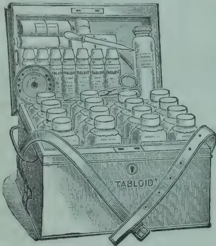
A compact yet comprehensive equipment containing medicaments, dressings, etc., which always maintain their efficiency in tropical climates.
Particularly adapted to the needs of settlers and planters. The ideal medical equipment for out-stations, works and camps.
Obtainable from all Chemists and Stores
BURROUGHS WELLCOME & CO., LONDON
AND COOK'S BUILDING, HORNBY ROAD, BOMBAY
xx 2703
All Rights Reserved
Minutes of a Meeting of the Matale Food Production Committee held at the Matale Kachcheri on the 21st July, 1920, at 2 p.m.
Present.—Assistant Government Agent (in the chair), Messrs. R. Senior White, G. F. Abayakoon, Kachcheri Mudaliyar; Ratemahatmayas of North, South and East Matale, Mr. A. Madanayake, Agricultural Instructor; six Assistant Agricultural Instructors and Mr. P. Saravanamuttu, C.C.S. (Hony. Secretary).
Minutes.—Minutes of the last meeting were taken as read and confirmed.
Piduragala Village.—Read diary entry of the Agricultural Instructor dated 2-6-20 regarding the insanitary condition, etc., of this village. Ratemahatmaya North to report at next meeting.
Kudarelawewa.—Agricultural Instructor reports that five amunams of paddy land under this tank are not cultivated. Ratemahatmaya North undertakes to spur the cultivators on. Assistant Agricultural Instructor instructed to report again. Ratemahatmaya North also will report about the 30 acres of land under this tank which can be asweddamised.
SEPTEMBER, 1920.]185Tammannawewa.—Read Agricultural Instructor's diary entry No. 7 of 2-6-20 re water dispute between Tammannawewa and Bellanoya cultivators. Resolved to ask an Irrigation Officer to make a sketch of channel, etc., showing levels. Assistant Government Agent undertakes to make a further attempt at settlement.
Giragamune Anicut.—Ratemahatmaya North to report before next meeting regarding the building of a permanent amuna in place of the temporary one.
Nayakumbura Scheme.—Agricultural Instructor reports that it is evident that the present Nayakumbura village is the bed of an ancient major work which if restored would irrigate over 10,000 acres of land. The breach formed by the oya runs through the village and as the restoration would involve a vast expenditure, the Agricultural Instructor says he is not going deep into the matter. Assistant Government Agent undertakes to investigate why this has not been recently considered.
Bodapela Amuna at Pamunuwa.—The question of building the anicut permanently to be investigated.
Weragama Abandoned Vegetable Plots.—Ratemahatmaya East undertakes to urge the plot holders to make further efforts to cultivate these as there is plenty of manure available.
Asweddumewewa at Pallegama in Matale North.—Assistant Agricultural Instructor, Dambulla, reports that one of the screws of the sluice gate of this tank is broken and water is not available through the sluice although the tank is full. Decided to order the Irrigation Sub-Inspector at once to get the sluice gate repaired or report if that is not possible.
Damage by Cattle at Pallegama.—The Assistant Government Agent undertakes to inquire into this.
Diyameliawewa.—Assistant Agricultural Instructor reports that 10 acres can be asweddumised if the tank is restored. Assistant Government Agent undertakes to inspect it.
Illukumbura Irrigation Channel.—Matter referred to Ratemahatmaya for report.
Green Manure.—Read Agricultural Instructor's report No. 508 of 20-7-20 regarding the abandoned paddy field called Gallepitiyagedera Kumbura. Agricultural Instructor recommends that green manure be used if field is unfertile.
Alleged Complaint against Mr. V. G. Perera, A.I. of Paldeniya.—Members of Irrigation Advisory Committee of Asgiri Udasiya Pattu complained that this Agricultural Instructor irritates the proprietors and cultivators of that pattu by instructing them to cultivate "Goda kumburu" and "Mada kumburu" in the same season and that causes both fields to die for want of water and there is no regular cultivation. This matter was brought before the meeting and it was decided that they must bring forward specific instances of where bad advice had been given.
Saxton Park Demonstration Garden.—Resolved to ask the Local Board to fence the western end of the park.
Estimate.—Considered estimates for experimental gardens and passed estimates 1, 2 and 3 to be forwarded to the Director of Agriculture.
186[SEPTEMBER, 1920.Sale of Vegetables in Town.—MR. ABAYAKOON suggested that in view of the efforts made to grow more vegetables the vegetable growers be allowed to sell vegetables within Local Board limits by hawking. He stated that owing to Local Board rules landowners have to sell their vegetables only to the market stall-holders at low prices with the result that the middleman makes an enormous profit and not the landowner himself. He advocated the relaxation of this rule so that the cultivators may be able to sell the produce of their vegetable gardens to any one at any place.
Assistant Government Agent undertook to look into this matter.
Monthly Programme of Work of Instructors.—Programmes to be forwarded to the Chairman by the 20th August if a meeting is not to come off before that date.
Minutes of a Meeting of the Food Production Committee of the Colombo District held on Saturday the 24th July, 1920, at 10-30 a.m. at the Colombo Kachcheri.
Present.—The Hon'ble the Government Agent, W.P., Mr. Felsinger of the Forest Department, Dr. W. A. de Silva, the Mudaliyar of Colombo, the Mudaliyar of Alut Kuru Korale North, the Mudaliyar of Alut Kuru Korale South, the Mudaliyar of Hapitigam Korale and the Kachcheri Mudaliyar, who acted as the Secretary.
1. Minutes of the last meeting dated November 29th, 1919, were read and confirmed.
2. Communications from MR. C. P. DE SILVA and the Mudaliyar Siyane Korale West intimating inability to attend were read.
3. The Mudaliyar Alut Kuru Korale North as the Secretary of the Henaratgoda Agri-Horticultural and Industrial Show intimated that the catalogue had been revised and issued. Entries made so far were satisfactory; financial prospect was also satisfactory. The Mudaliyars of Alut Kuru Korale South and of Hapitigam Korale having collected each over Rs. 1,000, special train arrangements had been made and advertised.
4. Government Agent explained that the balance in deposit of Rs. 815.54 to the credit of the Agri-Horticultural Society which it was thought was available for expenditure in connection with the forthcoming show at Henaratgoda cannot regularly be so appropriated without the consent of the Society. DR. W. A. DE SILVA as Secretary of the Society undertook to circularise the members of the Society with a view to ascertaining whether they agree to place the money at the disposal of the Government Agent for the purposes of Shows or whether they wish to resuscitate the Society.
5. The Government Agent brought to the notice of the meeting a proposal made by the Director of Food Production to make experimental cultivations of paddy in blocks to be cultivated under the direction of Government.
SEPTEMBER, 1920.]1876. The Government Agent informed the meeting of another proposal of the Director of Food Production to utilize the Irrigation Headmen to collect statistics to form the basis of certain measures to aid food production.
7. The Government Agent received a report of the work done by the different Peruwa Committees.
8. Decided to ask the Mudaliyar of Hapitigam Korale to make a report on the reafforestation scheme in his Korale especially in respect of fencing which MR. FELSINGER complained had not been satisfactorily attended to.
9. MR. FELSINGER raised the question of the rapidly increasing cost of the fuel supplied to Colombo. It was the opinion of the different Mudaliyars that the increase in the price recently felt was the result of gradual exhaustion of the supply but was not caused by any Food Production operations. The problem was one which could not be solved by private effort but by organisation on the part of the Forest Department.
Minutes of a Meeting of the Kandy Food Production Committee held at the Kandy Kachcheri on 6th August, 1920.
Present.—Hon'ble Mr. W. L. Kindersley, Chairman; Messrs. A. B. Talgodapitiya, R. E. Paranagama, W. Molegode, R. S. Pelpola, and T. G. Willett, Secretary.
1. Minutes of the previous meeting were read and confirmed.
2. Endorsement No. R 749 of 26-7-20 from the Director of Agriculture regarding paddy prize competition. Resolved to apply Rs. 500 i.e. Rs. 100 to each of the 5 divisions, for prizes and to issue notices of competition at once calling for competitors' names and to ask the Director of Agriculture for the Rs. 600 promised.
3. Replies to Circular No. 66 of 24-5-20 received from the Ratemahatmayas of Harispattu and Uda Dumbara were read and resolved to inform the Ratemahatmayas concerned that the Ceylon Agricultural Society can issue seed Elwi. It was also resolved that chena permits in Uda Dumbara, Pata Dumbara, Pata Hawaheta, and Tumpane should have endorsed on them a condition to cultivate one-third of the area allowed in Elwi wherever the land is suitable for its cultivation—the Ratemahatmaya to enter on permit at time of endorsing.
4. Statement of lands leased for production of food-stuffs was tabled and read.
5. Diaries and programmes of work of the Agricultural Instructors were tabled and read.
188[SEPTEMBER, 1920.Chickens.—It is very annoying if there is a heavy mortality among these. If you are raising any number beyond a few, it is always well to have a special large chicken pen, where the hen and her brood can run after they are transferred from the coop they are put in after the chickens have been hatched. The extensive system of raising chickens i.e., where the hens are allowed to run with their brood among old hens, can never be successful. We have often tried both the intensive and the extensive system. Letting the hen run free with her chickens usually means that she returns at night with one or two missing. We let the chickens stay beneath the hen until the last hatch is strong.
There is no hurry to feed the chickens or give them water even up to 48 hours after the last one has hatched. Then for a couple of days we transfer to a small coop placed on short grass where they can get early morning sunshine. Their first feeding is a little rolled oats—expensive at present, but chickens are worth it also at present. This can be fed on the grass when the flakes are dry, but never feed wet food on the grass or ground, always in a dish. The next feed is parboiled brown rice which should be fed in a dish. These two feeds will keep the chickens going for the first two weeks.
When the chickens are quite strong and active, they are shifted with the hen to a large run. Here there are barrels put down on their sides with soft Bahama Grass inside; the hen and her chickens are put in one of these in the evening, and she can go where she likes in the pen from morning on.
After the second week they still get a little rolled oats and boiled rice (not mushy, but dry), and a few heads of Guinea Corn to pick at, also a few duck ants.
There are different hens in this pen, and the chickens are different ages, but as the pen is roomy they do not conflict. We have found that when we keep a hen with her chickens, in a small coop and she is fussy, she tramples on them. We have known of very poor results from coops placed out in a common on nice soft sod, and this was because the chickens had not any opportunity to pick up small stones or grit. In the pen we speak of, there are several holes filled with rubbish of all kinds and these form nice scraping heaps. There is plenty of grit in the barren spots, and plenty of green grass. Occasionally hens fight, but one soon gets to be the boss. If there is a very vicious hen and she is not an extraordinary good mother, she is marked not to be used again. Then we also have a hen which will not stay in the pen. She is a very fine hen, an excellent sitter, and a good mother, but she will wander. She has also the bad habit of annexing chickens from other hens, and she wanders away with 20 or more chickens. She is as wary as a hawk, but she is bound to lose chickens. Traps have been set, dogs set hunting, and the mongoose all cleared out as far as is known; but as sure as a hen
SEPTEMBER, 1920.]189wanders with her chickens there will be losses. The barrels that the chickens sleep in are cleaned out every other day and sprayed with Jeyes and water. We know that if we leave these barrels for a whole week without cleaning them out, yaws will surely break out.
The temptation to run too many chickens in a roomy pen has to be resisted.
Care should also be taken that the food scattered on the ground is scattered in different places. Careless boys invariably fling the food down on the same spot day after day.
Care should also be taken that the pans holding the drinking water are put in the shade.
Common causes of mortality among chickens are—running them in a yard where there are other hens; soon the yard gets foul with droppings. Even if the yard is swept this does not altogether prevent infection. Then the food is scattered in the yard, and it now and again gets soiled with the droppings, the chickens swallow this, and this will as surely cause sickness as the sun shines. Chickens require fresh ground, the opportunity to get grit, plenty of scratching, four meals a day and not too much at one time.
Whenever yaws is seen, make sure that the hen sleeps in future in a clean place, disinfect with Jeyes and water, put Epsom Salts in the drinking water and touch the eruption with Tincture of Iodine each day.
* * * * *
Some people are always medicining their fowls, and some never give any medicine at all. We believe in using what is called preventive measures against sickness in fowls, and usually use some simple medicines at intervals. Last year, however, no medicine was used on the writer's fowls with the result that sickness attacked half and three-quarter grown chickens, and 42 were lost before the sickness was stopped. But this sickness was continued sporadically and some full grown fowls have been lost. Now the writer is medicining as of old, fairly regularly. This particular disease is one affecting the liver and is not caused through high or forced feeding; on the contrary the food has been simple and fairly varied. But the germs of the disease are probably now in the soil.
A good practice is to use Epsom Salts or Glauber Salts in the drinking water once a week, and for a week to put a pinch of powdered Sulphate of Iron in the water too. Then stop for two weeks. In the intervening weeks use of solution of Permanganate of Potash in the water. Put a small tea-spoonful of the Permanganate crystals in a quart bottle of water, and this will make a strong solution so that a half tea-spoonful of it to the quart of water will do. The drinking water should just be a rosy pink, not a purple tint. This will keep off roup. The dose of Epsom Salts is especially needful during dry weather when green food is scarce.
The following is a paragraph from the AMERICAN FARM JOURNAL :—
Dosing and doping poultry is a practice generally frowned on by expert investigators who ought to know what they are talking about. The belief is that in most respects hens can be kept in good laying trim solely through all-round good care and the feeding of a proper ration.
190[SEPTEMBER, 1920.At one of the most successful laying contests in the world, the official one at Vineland, N. J., an exception is made to this principle. The laying hens are periodically dosed with Epsom salts. Every two or three weeks, at the judgment of the experts, a solution of dissolved Epsom salts is mixed in the drinking water for one day, at the rate of one and one-half pounds of salts to 100 hens.
If certain warning signs are noted, the Epsom salts is given oftener than once a fortnight. If the droppings become hard, that is one signal. Another is a blackening of the hen's comb at the rear end or blade.
When Epsom salts is thus used, the necessity for green food in the ration is reduced. It is found that this dosing keeps the laying flock in top-notch condition, enabling it to stand up under heavy production in good shape.
* * * * *
Green Food.—"I have long appreciated your good work in dinning into the ears of poultry keepers, the only way to get any class of agriculturists to remember anything, the necessity for keeping poultry supplied with green food, but I am afraid I never quite realised the urgency of this necessity until quite recently.
One morning, on our fowls being let out I watched one hen start to make her morning meal of green stuff. I counted carefully that she picked off and swallowed 46 blades of pimento grass. It would be interesting to know if professional poultry-keepers have made any observations along the same lines.—W. CRADWICK.—JOURN. OF JAMAICA AGRIC. SOCIETY, Vol. XXIV, Nos. 4 & 5.
MALCOLM MACFARLANE.
Birds in the breeding pen must be so fed that they are kept in what may be called a vigorous condition, but at the same time you have to see to it that they are not on any account overfed, which they will be if you try to force egg production.
When the breeding pen has a large run the feeding may be a bit generous, as the exercise the birds are able to take will keep down any fat which may be inclined to accumulate, but in small pens the fat will get on the birds very easily and that will upset matters to a very great extent, as fat birds do not lay fertile eggs. In fact, if they do by any chance lay an egg is fertilized, you will not get any chick out of it.
You will find that besides the factor of exercise in the proper handling of a breeding pen the ample supply of green food is also a very big help in not only getting eggs which will hatch, but also getting strong chicks which will give you very little trouble in the way of rearing.
Of late there has been a tendency on the part of some breeders to start feeding the breeding pen on the dry mash system, as they say that when the soft food, if fed moist, is put down for the birds, the greedy ones get too much and the others get hardly enough; but by the dry method all have an
SEPTEMBER, 1920.]191equal chance of getting sufficient food. It would seem that many who are trying to go in for poultry keeping have not as yet got it drummed into them that punctuality is one of the most important things they have to learn. How can you expect your breeding pen to be regular in laying when you do not feed at the same time every day?
It is absolutely necessary to be careful in chicken rearing that they have no set-back from the time they are hatched till they are mature, and more care, it would seem, is necessary than is usually given in the way of management. You must be careful not to force them in any way. Let them come to maturity in a natural manner, and then they will give you one of the best returns for the money you have expended on them it is possible to get.
One common mistake is coddling them in the brooder. It does them no good to stand for hours in a hot brooder. In fact, in this country when you once get the proper idea of management you will find that what is called a fireless brooder will give you healthier chicks than you can get by using heat.
Many forget the first principle of fireless brooders, which is that there must always be a certain number of chicks in the brooder, as it is the combined heat of a lot of chicks which creates enough heat for them all. The chicks should be running in and out of the brooder all day long, and if you wish a natural lesson on this, just watch a hen which has a brood of chickens and you will notice the youngsters run out from under the hen, take a mouthful of food, and then, if the weather is cold, run back. This running out and in is health to them; therefore let those chicks you have in a brooder do the same. You should never try to chase the chicks out of the brooder. Let them come out when they like.
When you once get a brood of chicks used to the plain soft food you are feeding, do not on any account try to alter it, as you will only upset the inside of every one. If you by any chance do so, give every one a drop or two of olive oil—not on any account castor oil, as that is much too drastic.
If you bury some of the chicken grain under the ground you will notice that when a chick gets hungry it will start to scratch so as to get the grain.
Watch that insects do not trouble, as many a time the writer has been asked to go and look at a brood of chicks which were not going on very well, and the only trouble was insects. The owner would not have it that it was so, as no insects could be seen, but when a careful look was taken then it was a bee-line to the insect powder.
To prevent hens from eating eggs clip off the ends of their bills with a pair of sharp shears, or hold the bill on a block and cut it off with a chisel. Be careful not to cut enough to make them bleed. It is a sure cure, and easily done.—FARMERS' JOURNAL, Vol. 2, No. 30.
192
[SEPTEMBER, 1920.
METEOROLOGICAL.
AUGUST, 1920.
| Station | Temperature | Mean Humidity % | Mean amount of cloud 0 = clear. 10 = overcast |
Mean Wind Direction during month | Daily Mean Velocity Miles | Rainfall | |||
|---|---|---|---|---|---|---|---|---|---|
| Mean Daily Shade | Difference from Average | Amount Inches | No. of Rainy days | Difference from Average Inches | |||||
| Colombo Observatory | 80.8 | - 0.2 | 80 | 8.6 | SW | 150 | 0.94 | 11 | - 1.84 |
| Puttalam | 81.9 | + 0.3 | 76 | 6.0 | SW | 274 | 0.00 | 0 | - 0.77 |
| Mannar | 82.9 | - 0.3 | 76 | 7.7 | SW | 216 | 0.63 | 2 | + 0.03 |
| Jaffna | 83.4 | + 0.7 | 77 | 4.6 | SSW | 388 | 0.84 | 3 | - 0.73 |
| Trincomalee | 84.6 | - 0.2 | 66 | 6.1 | WSW | 241 | 3.24 | 8 | - 1.01 |
| Batticaloa | 83.9 | - 0.2 | 70 | 5.0 | ESE | 137 | 1.96 | 6 | - 0.28 |
| Hambantota | 82.0 | + 0.7 | 72 | 4.8 | WSW | 427 | 0.20 | 4 | - 1.06 |
| Galle | 79.6 | - 0.4 | 84 | 6.0 | WNW | 329 | 1.97 | 14 | - 3.47 |
| Ratnapura | 80.0 | - 0.2 | 79 | 7.7 | — | — | 5.17 | 26 | - 6.63 |
| Anu'pura | 82.8 | - 0.8 | 68 | 6.5 | — | — | 0.58 | 3 | - 1.27 |
| Kurunegala | 80.0 | - 1.0 | 78 | 8.6 | — | — | 2.82 | 15 | - 0.55 |
| Kandy | 75.4 | - 0.4 | 80 | 8.8 | — | — | 2.08 | 21 | - 3.46 |
| Badulla | 74.4 | - 0.6 | 74 | 6.6 | — | — | 1.88 | 8 | - 1.37 |
| Diyatalawa | 68.6 | - 1.4 | 70 | 5.4 | — | — | 4.03 | 10 | + 0.43 |
| Hakgala | 61.4 | - 0.2 | 80 | 7.8 | — | — | 2.88 | 21 | - 1.67 |
| N. Eliya | 59.4 | - 0 | 87 | 9.6 | — | — | 4.40 | 28 | - 3.50 |
1. The chief feature of the rainfall of the month was its marked deficit over the greater part of the island and particularly the South-west quarter.
2. The highest rainfall occurred, as was to be expected in the South and South-west of the Central Province and in northern Sabaragamuwa but nevertheless was of the order of a couple of inches in deficit up-country while further to the South-west between this area and the coast deficits of from 5 in. to 10 in, were common.
3. In the Eastern Province and eastern Uva several stations were above their average though it must be remembered that the averages are small.
4. In the Northern Province most stations differed from last month in having some rain though only 2 out of 19 have reported more than 2 in. for the month.
At several stations where the total rainfall for the month is below the average the number of rainy days is above it, but on the whole, the not very favourable forecast for the Peninsula for August published by the Indian Meteorological Department on August 8th. appears to have held good for Ceylon as well.
The proportions of cloudy sky and of wind velocity were both higher than usual and it will be seen that mean temperatures tend to be below the average.
The barometer was on the whole high and the gradient about normal except on the last few days of the month when it weakened temporarily with noticeable effect on the Hewaheta side of the hills.
A. J. RAMFORD,
Supdt., Observatory.
ANIMAL DISEASE RETURN FOR THE
MONTH ENDED 31st AUGUST, 1920.
| Province, &c. | Disease. | No. of Cases up to date since Jan. 1st, 1920. | Fresh cases | Recoveries. | Deaths. | Bal- ance Ill. | No. Shot. |
|---|---|---|---|---|---|---|---|
| Western | Rinderpest | 1339 | 176 | 356 | 923 | 20 | 40 |
| Foot-and-mouth disease | 421 | 5 | 418 | 3 | — | — | |
| Colombo Municipality | Rinderpest | 507 | — | — | — | — | — |
| Foot-and-mouth disease | 136 | — | — | — | — | — | |
| Rabies | 2 | — | — | — | — | — | |
| Cattle Quarantine Station | Rinderpest | 20 | 3 | — | — | — | — |
| Foot-and-mouth disease | 65 | 6 | — | — | — | — | |
| Central | Rinderpest | 168 | 18 | — | — | — | — |
| Foot-and-mouth disease | 275 | 13 | 268 | 1 | 6 | — | |
| Haemorrhagic Septicæmia | 3 | 1 | — | 3 | — | — | |
| Southern | Rinderpest | 12 | — | 9 | 3 | — | — |
| Foot-and-mouth disease | Free | — | — | — | — | — | |
| Northern | Rinderpest | Free | — | — | — | — | — |
| Foot-and-mouth disease | Free | — | — | — | — | — | |
| Eastern | Rinderpest | 2 | — | — | 2 | — | — |
| Foot-and-mouth disease | 24 | — | 8 | 16 | — | — | |
| North-Western | Rinderpest | 886 | 69 | 221 | 570 | 28 | 67 |
| Foot-and-mouth disease | 41 | — | 41 | — | — | — | |
| North-Central | Rinderpest | — | — | — | — | — | — |
| Foot-and-mouth disease | 27 | — | 27 | — | — | — | |
| Uva | Rinderpest | 12 | — | — | 12 | — | — |
| Foot-and-mouth disease | 38 | — | 38 | — | — | — | |
| Sabaragamuwa | Rinderpest | 4 | — | — | 3 | — | 1 |
| Foot-and-mouth disease | 299 | — | 298 | 1 | — | — | |
| Haemorrhagic Septicæmia | 16 | — | — | 16 | — | — |
Colombo, 3rd September, 1920. E. T. HOOLE, Acting G.V.S.
VOL. LV.
PERADENIYA, OCTOBER, 1920.
No. 4.
At the last meeting of the Committee of Agricultural Experiments attention was called to the apparent increase of certain pests and diseases in the main agricultural crops of the Island. Information has been sought in recent months from various localities in regard to such enemies of crops as tea-mites, red rust of tea, leaf-break of coconuts, etc.
The occurrence of these minor pests and diseases has become more frequent and attacks have been causing more damage than in previous years. Their occurrence is consequent upon the reduction of cultivation or manuring programmes on estates during the war period or in the case of tea to over-plucking shortly after pruning.
The tea industry of the Colony is at present passing through a most critical period, while a reduction of rubber output has been adopted. These two main industries are facing difficulties and it is natural that every endeavour should be made to curtail expenditure. The greatest reduction of expenditure will be made by a curtailment of the cultivation work and in a stoppage of the application of artificial fertilisers.
The result of such a policy is already obvious in many parts of the Colony. An increased incidence of certain pests and diseases is at present apparent and a further increase is to be
194[OCTOBER, 1920.feared. It cannot be urged that this reduction of expenditure upon cultivation and manures is not advisable. The financial aspect of the tea industry is so critical that the reduction of expenditure has become imperative.
Nevertheless the consequence of the adoption of this policy must not be lost sight of, and the Agricultural Department has issued through the Press a warning as to what the results of insufficient cultivation or manuring may be.
The experience of Entomologists and Mycologists working throughout the Tropics shows that pests and diseases can be effectively controlled if proper attention is given to proper cultivation and agricultural practice. A large number of minor pests become of economic importance when methods of cultivation are faulty or insufficient or when attention is not given to drainage, manuring, etc.
Many tea estates throughout the War period cut down their manurial programmes, reduced cultivation and plucked heavily. Such estates will doubtlessly suffer if further economies in cultivation and manuring are made. It is therefore advisable that very close and careful consideration be given to this difficult problem.
Rubber estates are not at present faced with the same difficulties while the price of coconut products makes the industry so profitable at present that additional expenditure on cultivation and manuring can be afforded. During the past year increased attention has been given to coconut diseases and it has to be ascertained whether some of the diseases which are at present under investigation cannot be controlled, if not checked, by better and closer attention to the drainage of estates and the cultivation and manuring of the palms.
Tractors are receiving increasing trial upon coconut estates and for certain cultivation operations have been found, in many instances, to be suitable and economical. Data in regard to work which can be carried out by tractor ploughing or harrowing are being collected and should be shortly available.
Increased use is being made of manures on coconut estates and would appear, at present high prices, to be profitable.
OCTOBER, 1920.]195Rice is the staple crop of the Madras Presidency. It occupies according to the latest statistics millions of acres or roughly 40% of the total area under food crops. Rice is grown under more varied conditions than any other crop and hence probably the enormous number of varieties. There are varieties which are grown absolutely dry as in the West Coast and the uplands of Kistna and Godavari. There are varieties which are sown and treated dry in the earlier stages but changed into wet when tanks get filled after the breaks of the monsoon, as in Nellore and the Nandyal valley. There are again varieties which are grown under well irrigation. Lastly we have the pure wet varieties which are grown in the deltaic regions, lowlands of Malabar and South Kanara and also under tanks. It is to the last of these that the activities of the Department have been mostly confined. The work of the Department can be classified under the following heads :—
4. Improvement of the local varieties by selection 1. (a) It was the custom in all the southern districts till about ten years ago to use a very heavy seed rate up to about 80 lb. per acre to transplant the seedlings in bunches. In 1907 experiments were started on all Government wet land farms to ascertain the number of seedlings to plant in a bunch and also to find the best spacing for planting. It was MR. SAMPSON that started these experiments in the Sivagiri Home Farm. They were conducted for a number of years with the result that 20 lb. of seed was found more than enough to transplant one acre, the seed was to be sown in an acre of six to seven cents and the seedlings, to be transplanted singly about six inches apart. A vigorous campaign was soon started in the southern districts to demonstrate this to ryots. Subordinates were sent on lecturing tours with printed leaflets for distribution. The ryot soon realized the profitableness of the method and it soon began to spread. The chief trouble seems to have been the want of men to go about demonstrating this in all places. Otherwise probably the method would have spread much more rapidly than it actually did. Although records were kept about the progress of this work in the earlier years it has now spread beyond the capacity of the department to keep trace. It does not by any means follow that this method has become universal. Even in the southern districts there are still tracts which follow
196[OCTOBER, 1920.the old method simply because the department has not been able to do any work there owing to want of staff. In the Telugu country although economic sowing and single planting was always practised in parts of the Kistna delta the practice did not spread to the north. Owing to departmental activities it is slowly spreading north into the Godavari and Vizagapatam districts though not so fast as in the Tamil country. It is only a question of time for the method to become universal in Madras. Even in Malabar although actual single planting is not recommended as the varieties do not tiller well, there is a tendency created to sow the seed beds thinly and to transplant them in two's and three's. The adoption of this method means a clear saving of Rs. 7 per acre in seed alone exclusive of the saving in labour. The area annually transplanted in Madras is about five million acres and the universal adoption of the method would mean a saving of a very large sum to the country.
(b) Much has not been done in the way of introducing improved implements in the wet land cultivation. The only implement that has been found to be of some use and that has been taken up by the cultivator to some extent is the small iron plough (Sivagiri and Meston ploughs).
(c) While dry cultivation of wet lands is considered good and practised in some parts of the presidency, it is considered harmful in others. Experiments have been conducted for a number of years in Samalkota and Coimbatore farms to see whether the hot weather cultivation has any effect on the succeeding paddy crops. The Samalkota results for a year or two favour the practice while those of Coimbatore are inconclusive.
Second crop trials.—In the Godavari delta the first crop is always of longer duration. It comes to harvest by the end of November or beginning of December. In the double crop lands the second crop is not planted before February on account of the belief that the crop will not be successful if planted earlier in the cold weather. So the water in the canals is practically made no use of for two months. If the second crop could be planted as soon as the first crop is out of the ground there will be no water trouble towards the end of its growth as is often the case at present; moreover this would enable a larger area to be double cropped with the water saved. So in the Samalkota farm there was an experiment going on for a number of years to find out a suitable variety which could be transplanted earlier but no satisfactory results were obtained. The Public Works Department authorities are reported to have independently started experiments in the delta with regard to the time of planting the second crop and the results are anxiously awaited.
In many places good cultivators often grow some leguminous crop on the paddy fields in the dry weather. Generally they allow the grain to ripen and harvest the crop but in some places they plough in the whole crop. It was in the year 1908 experiments were commenced in Government farms with several leguminous crops to see if this excellent system was capable of extension and improvement.
In Sivagiri Home Farm good results had been obtained with Wild Indigo (Tephrosis purpurea). The green manure crops gave good results in Coimbatore, Palur, Samalkota and Taliparamba Farms. In some cases the yield of paddy was doubled on the result of green manuring. The first
OCTOBER, 1920.]197campaign of the department about green manuring was started in Tanjore in 1909 with very good results. Ryots do always use some green leaves for manure either collected from adjacent forests if available or from adjacent dry waste lands. This demand for green leaves gradually went up as new lands were brought under wet cultivation as the result of new irrigation projects. The existing forests could not meet with the demand. This matter had come to a head in Madura on account of the opening up of the Periyar tract. In 1911 a committee sat at Madura and recommended the raising of the nominal fees which used to be charged for the removal of leaves from forests to something like the true market value of the manure and the encouraging of ryots to supply their own requirements by growing crops of green manure on their lands between successive paddy crops. From that time onwards the department started a vigorous campaign of stocking large quantities of seeds of different green manure crops for selling to the ryots where demand for manure was heaviest. This work rapidly increased in the Southern districts, Tanjore, Madura, Tinnevelly, South Arcot, Coimbatore, Malabar and Chengleput, and this still forms one of the important activities of the department. The chief green manure crops recommended by the department are wild Indigo, Sunnhemp and Daincha, each of them being specially suitable to particular soils and conditions. The last one was introduced by the department from Bengal.
The following statement shows how this work has steadily increased from year to year :—
| Year | 1909-10 | 10-11 | 11-12 | 12-13 | 13-14 | 14-15 | 15-16 | 16-17 | 17-18. |
|---|---|---|---|---|---|---|---|---|---|
| Quantity of seed distributed by the Department in hundreds of pounds. | 771 | 780 | 826 | 1,586 | 1,586 | 1,508 | 1,705 | 2,344 |
Besides, in recent years this work is being taken out of the hands of the department, since Co-operative Agricultural Societies and private agencies have taken up the sale of green manure seeds in the south. The department was always having some trouble about getting Daincha seed as it had to depend on the supply from Bengal. But now-a-days ryots are encouraged to arrange to get their own seed.
(d) Artificial Manures.—Paddy soils are generally found to be deficient in Nitrogen and Phosphoric acid. With the spread of the practice of economic planting and green manuring a demand for concentrated manures has been springing up in the south. The rise in price of food grains has also been an inducement to go in for expensive manures. Experiments conducted for several years in Samalkota, Manganallur and Coimbatore have definitely proved that an application of some phosphatic manure along with green leaves gives very good results. A small beginning in demonstration with superphosphate as manure for paddy was made in Tanjore and Madura three years ago and good results have been obtained. At Sirvel, the application of super phosphate for paddy last year has increased the yield by 23%. A large scale demonstration was conducted in the Tanjore Delta in 1918, the manure distributed being a special mixture of fish guano, castor cake, superphosphate, ground phosphate etc., made by MR. SAMPSON in the light of the results obtained from the manurial experiments conducted in the Manganallur farm. Although the campaign was not quite a success on account of the almost unheard-of failure of the floods in the Cauvery, which
198[OCTOBER, 1920.resulted in the failure of the mixture in most of the plots, in the few places where a crop was obtained the success of the manure was encouraging enough and 500 tons of the same manure was stocked last year for selling to the ryots.
There is an ever increasing demand in the Circars for oilcakes. Bonemeal also is being used for paddy to an increasing extent. In 1918-19 over five tons of bonemeal was distributed to the ryots from the Anakapalli farm. The Tanjore Co-operative Manure Society at Nidamangalam has also been useful as it meets the demand to a certain extent for bonemeal in the Tanjore delta. There are large deposits of manurial phosphates in the form of nodules in the Trichinopoly district. These nodules have been little used till now owing to the fact that they cannot profitably be converted into soluble superphosphates. But the experiments of the Assistant Agricultural Chemist at Coimbatore and field experiments in the Manganallur farm have shown that this form of phosphate is readily used by the paddy plant. The experiments conducted last year by the Assistant Director of Agriculture, V Circle, in 5 villages in the Attur and Musiri Taluks, have shown that the application of this flour phosphate to green manured fields results in a higher yield of grain. The plots which received the flour phosphate gave less chaff, produced better filled ears, and closer set grains. So there is a valuable supply of phosphates so near the delta, and the exploiting of this is a matter to be taken up seriously by capitalists. Fish manure, being rich in both Nitrogen and Phosphoric acid, has been demonstrated to be very good for the paddy crop. The demand for this manure is rapidly increasing every year. In 1918 the department distributed 328 tons of this manure in Fifth and Seventh circles. The increasing demand for this has led to a big development and several depots for storing the manure have been opened on the Malabar coast. Over 700 tons of guano and 22 tons of beach dried sardine were purchased and stored last year for being distributed all over South India.
In the Kistna Delta the ryots use Patimannu, i.e. the earth removed from the old village sites as a manure for paddy. The supply of this is gradually going down and the Department as early as 1909 took active steps to solve the difficulty. The manure was analysed by the Chemist and suitable artificial fertilisers were made up, and these were demonstrated to the ryots in their fields for a number of years. Widespread interest was created by the demonstration plots and the Presidency Manure Works taking advantage of this, opened manure depots, and ryots began to purchase from them. The demonstration experiment was finally closed in 1912.
3. Choice and Introduction of varieties.—The department did some work in this even so early as 1902-03. Several short duration varieties were obtained from the Central Provinces, Bengal and Bombay, at the instance of the Inspector General of Agriculture in India and tried in Koilpatti and Saidapet farms and on Mr. CHIDAMBARANATHA Mudaliar's Estate in the Shiyali Taluk, Tanjore district. Of these the only one which we now find being cultivated to some extent in Madras is Banku. Kalki another of the varieties appears to have been cultivated with success at Gobichettipalayam. Earlier reports of the Department mention Banku as a heavy yielder in Samalkota, Saidapet, Coimbatore and Tanjore and as particularly suited to
OCTOBER, 1920.]199high level lands where there is likely to be water scarcity. Samalkota report 1910-11 mentions Banku as being a good yielder but having a tendency to split and requiring constant selection to keep it true to the type. Several short duration varieties from the Central Provinces were for a long time under trial in the Palur farm. One chief difficulty in introducing varieties from one place to another is that the change of conditions causes great variations in the crop. The Central Provinces varieties gradually became longer duration varieties and hence could not stand the test with Sornavari, the local early variety which they were intended to displace. Rascadam is the only variety mentioned as one of the promising ones and this has spread to a certain extent as it is specially liked by Mahomedans for its scent. The only other extra-provincial variety besides Banku and Rascadam which have been found to be somewhat good both at Palur and Samalkota is Sambalpur, a variety from Bengal. An example from one of the Palur reports as to how a particular variety behaves when sown in different seasons will be of interest. This Sambalpur paddy, when sown in May took 170 days to come to harvest whereas when sown in July came to harvest in 126 days. Several examples may be mentioned from the early departmental reports of some varieties becoming shorter in duration and others longer in duration when introduced from one place to another.
Among the successes achieved by the department in introducing varieties from one district to another, mention may be made of Poombalai and Anaikomban varieties from Tinnevelly into South Arcot. Both are definitely of slightly shorter duration than the local Garudan Samba and equally good in yielding capacity. The same Poombalai has done well in Coimbatore also and is definitely of shorter duration than the local Sadai Samba. Although much has not been done in this line, the introduction, acclimatisation and testing of new varieties will always remain a very useful line of work of the department. There are several definite problems which could be kept in view when introducing new varieties. For instance, there is always a cry for a variety which will withstand shortage of water. It is believed it was with this end in view that Banku was introduced into Madras and we should think the work has justified itself as we find Banku thriving as well under well irrigation as, or even better than, in typical wet lands. There is always a keen demand for varieties with special characteristics such as those that will stand a certain amount of alkalinity in the soil, those that will not lodge badly at the time of harvest, etc. Their introduction is however complicated by the distinctions drawn by people of different districts between different kinds of rice. The varieties readily taken by one set of people are unpalatable to another. The markets of different localities have also got to be studied.
4. Lastly, we come to the question of improvement of local varieties by selection.—Raising pedigree strains of varieties, the resting of them by careful field trials and growing the best selections on a large scale for sale to the ryots are sure to assume a more and more important place in the work of the department, as we have a Botanist who has been devoting all his time for the last seven years to the study of this one important crop. This is a work which the ryot cannot do for himself as it requires trained judgment and most minute attention to details, besides a thorough knowledge of the crop.
200OCTOBER, 1920.]Of all the work of the department this has the special advantage in that there is never any real difficulty in making the cultivators buy good seed. Selection of seed had been practised to some extent in all Government farms ever since they were started. A large number of single plant selections of the important varieties had been made and studied in the Samalkota farm for a number of years. Reports show that most of these had turned out splitters, being most probably natural crosses, while the few that proved constant, have, after some years' trial, been distributed broadcast to the people to their immense benefit. Similarly, in Palur also, single plant selections from Garudan Samba, the important local variety, were made and studied. One of these, named later Ramagarudan Samba, has after a series of trials proved very good and has been distributed to the ryots since 1914-15. This has spread so much that there is no other crop of Garudan Samba except of this strain in a number of villages round Palur. The Deputy Director of the circle mentioned in his report that farm supply having become inadequate, a beginning had been made to teach the ryots how to select their own seed. This year some members of the co-operative societies in four of the villages in his circle, have adopted this method with the result that five cart loads of Ramagarudan Samba seed have been selected and kept with the ryots for distribution in the coming season in addition to what has been stored in the Palur Farm.
The selection of single plants, studying them separately for a number of years and picking out the best for multiplication and distribution is, though slow, the surer and better method. Where we cannot afford to wait we can pick out good heads true to type in the standing crop before harvest, to give enough seed for the bulk crop of the next year. This is what was adopted in the Manganallur Farm although single plant selections were also done side by side, but most of the single plant selections did not prove in the end as good as the bulk selected seed. The demand for good seed is probably nowhere so keen as in Tanjore. The ryots who grew the Manganallur-Farm-seed have reported that the yield was heavier, the ripening more even and that a better price was obtained for it. The demand was so great that a system of seed farms for the multiplication of seed was taken up last year. The statement II gives an idea about the amount of work done by the department in this line: —
| Years. | Samalkota | Anakapalli. | Palur | Manganallur. | Total |
|---|---|---|---|---|---|
| 1909-10 | ... | ... | 8,000 | ... | 8,000 |
| 1910-11 | 13,960 | ... | 9,140 | ... | 23,100 |
| 1911-12 | 16,293 | ... | 13,960 | ... | 30,253 |
| 1912-13 | 21,197 | ... | 7,072 | ... | 28,269 |
| 1913-14 | 20,617 | ... | 5,957 | ... | 26,574 |
| 1914-15 | 21,200 | 920 | 9,595 | ... | 31,715 |
| 1915-16 | 20,765 | 1,476 | 20,162 | 70,990 | 113,993 |
| 1916-17 | 28,334 | 4,032 | 11,866 (over) | 80,000 | 124,232 |
| 1917-18 | 55,412 | 17,009 | 21,734 whole crop | 94,155 | |
| 1918-19 | 68,252 | 17,944 | 20,723 do | 106,919 |
does not include seed distributed from the Manganallur Farm.
N. B. Quantities in pounds.
Besides the above large quantities of seed were sold out from the Coimbatore and Taliparamba farms. Of late, the quantity distributed in the Coimbatore District of the strains evolved at the Paddy Station has been rapidly increasing.
OCTOBER, 1920.]201Let us now see what the Government Economic Botanist has done to this crop. He is in charge of a Paddy Breeding Station at Coimbatore. The work here began with the study of the inheritance of characters in rice. The results of his work have been of great scientific importance and some of these results have already been published as memoir. As a result of this study several important connections between the vegetative characters and such economic factors as size and shape of the grain, colour of rice, duration, etc., are being brought to light. Side by side with the study of characters he is doing single plant selections in some of the important varieties and comparing them for yield. As a result of several years' experiments on the probable error involved in making comparisons for yield, a system has been adopted in which the several strains under comparison are sown in strips 50 feet long and 4 feet wide with one foot between strains, each series being repeated not less than eight times. This means reduces the probable error of comparing any two strains to 2 to 4 per cent. Two of the strains Nos. 24 and 91 passed the stage of final trial and are being distributed in the Coimbatore district. The strain No. 91 is a selection from Poombalai. In yield this has been found to be as good as the local varieties, and is definitely of shorter duration. Its spread would mean a cutting off of the paddy season to the Coimbatore ryot by nearly a fortnight. The strain No. 24 is only a month's variety, has a very fine white rice, gives a higher percentage of rice to paddy than other varieties and does not at all shed even after it is dead ripe. It has this further advantage in that the Mycologist has pronounced it to be a Blast resistant variety. Further selections have been derived from a cross with No. 24, one of which No. 1303 was found to be even 16 % better than No. 24 last year. It is hoped that after further trials this will be available for distribution. Besides these numerous varieties from all over the presidency are also grown in the Paddy Breeding Station, and pure lines of this collection are far from complete yet. This line of work is no less important, as the greater the number of pure cultures of known characters the easier it is to select what is wanted for different purposes.
In addition to the work at Coimbatore he has been doing selection work for the Tanjore Delta in the Manganallur Farm. One of his strains of Red Samba has, as a result of three years' very careful trials, shown itself to be consistently 16 % better than the farm seed which itself is probably superior to the ordinary seed used in the delta. This was grown by the department last year over 40 acres under seed farm conditions and the Assistant Director mentions in his 1919 report that 32,000 lb. of good seed have been secured for distribution during the coming season.
The work of the Botanist does not by any means stop with evolving good strains and making these available for distribution. When once a strain is distributed broadcast, it is sure to deteriorate after some years owing to natural crossings and mixing up with different varieties. Moreover when once a strain has been obtained it does not follow that it will always remain the best. Further selections might bring out a strain even better than this. So, this work of selection has got to go on continuously and a steady stream of fresh seed, to pass out every year from the breeding centre to the seed farms.
202[OCTOBER, 1920.In this connection any work done in Coimbatore is only preliminary and strains evolved there would be suitable only for the locality round about. The fact cannot be lost sight of that any work intended for a particular tract should be done in that tract. The yields in one place under particular soil conditions are no criterion that the crop will prove as satisfactory in another place with different conditions. So when the work of soil and climate of the Botanist expands, as it has already shown signs of doing, we expect there will be opened paddy sub-stations, one in each of the representative paddy tracts and selection work undertaken. It is there that the study of definite problems connected with the locality can best be undertaken.
Improvement of varieties by hybridization is another useful line of the Botanist's work. Artificial crossing in paddy is a very difficult and delicate operation. A beginning has already been made in this direction and valuable results are expected.
The potential worth of the Botanist's work can be realized when one remembers that the value of the paddy crop in Madras is over 60 crores of rupees.—ORYZA.—JOURNAL OF MADRAS AGRICULTURAL STUDENTS' UNION, Vol. VIII, No. 5.
At the last Pinmari season, MR. TYAGA RAJAH, Proctor, made an experimental trial of transplanting a small portion of his fields at Andankulam. The extent selected was acres. No manures were used, but the plot was ploughed with the Meston plough and cross-ploughed with the Mysore Pony plough. The land was again puddled and levelled. The varieties sown were (1) Sinnavellai ( months), Pachchaiperuwal (3 months) and Gnavare (60 days). Twenty measures each of Sinnavellai and Pachchaiperuwal and one measure of Gnavare were sown in the nursery. The first variety was transplanted twenty-five days after it was sown; the second, twenty-one days, and the third seventeen days after they were sown.
The cost of transplanting was Rs. 10.40 per acre. There was a saving of 36 measures of paddy in seed valued Rs. 3.60. This brought the expenses of transplanting to Rs. 6.80 per acre over ordinary broadcast cultivation.
The plants tillered very well and gave an average of 25 tillers to each plant. The whole crop was harvested and with the exception of Gnavare, threshed. The yield was 171 bushels or an average of 68 bushels per acre. His adjoining fields that were broadcasted gave an average yield of only 40 bushels per acre.
It will thus be seen that for an extra expenditure of Rs. 6.80 on transplanting he has had 28 bushels of paddy more per acre or Rs. 70 at Rs. 2.50 a bushel. Thus an acre of transplanted paddy has given him Rs. 63.20 more than an acre broadcast as usual.
A. V. CHELVANAYAGAM,
Agricultural Instructor.
A large number of small plots are laid out for variety, manurial and cultivation experiments. The buildings at the Station consist of an office, a variety laboratory, and a pathological laboratory. Several hundreds of varieties of rice have been tried at this Experiment Station, and students from all over the world have come there to gain an insight into the work done. In regard to varieties of rice, two or three British Guiana varieties, and some Honduras rices have given good results. British Guiana rices appear to be early maturing, but the heaviest yielders are the Japanese varieties. The usual yield of rice at Crowley is about 60 to 70 bushels of paddy per acre, though the yield per acre is usually expressed in barrels of 160 lb. As regards cultivation, this, on the farms, is almost exactly the same as the cultivation of wheat farther north. The only difference is that the land is irrigated for about eighteen weeks. As soon as about 75 per cent. of the rice plants are approaching maturity, the water is drawn off, and the crop allowed to ripen; after which it is cut with a self-binder like wheat, dried in the field in 'shocks,' and then threshed in a large power threshing machine. The paddy is sold to the mills, several of which operate in the town of Crowley. Thirty-five years ago Crowley did not exist, nor was there any rice cultivation in this district. The development has been entirely due to the wonderful irrigation schemes, the result of company enterprise following Government demonstration, whereby water is pumped from bayous, or sluggish black waters of the Mississippi, into canals 30 or 40 miles long. From these canals the farmers can obtain all the necessary water to enable them to grow thousands of acres of splendid rice. But the point to bear in mind is, that the growth of this industry is directly the result of initial work done by the United States Department of Agriculture.—AGRIC. NEWS, Vol. XIX. No. 473.
Some farmers believe that picking the largest head only for seed will improve and increase the yield; but if you closely observe a rice field you will find that the very large heads are borne by plants which produce very few bearing stalks. Suppose, then, that the average number of grains per head in a variety of palay is 300. An extra large head may contain 350 grains. A plant producing 3 to 6 bearing stalks having 300 grains in each head will yield 900 to 1,800 grains per plant. The other, having large heads containing 350 grains to the head, will produce from 1 to 3 bearing stalks per plant which will yield from 350 to 1,050 grains per plant. Select your seed from plants producing many bearing stalks with heads of medium size.—PHILIPPINE FARMER, Vol. III. No. 10.
204[OCTOBER, 1920.MR. C. C. MALET sends us the following notes on a new industry, which has some hopes of becoming the third great industry of this country—the African oil palm (Elæis Guiniensis), and its products. MR. MALET had some years' acquaintance with it, years ago in West Africa, and so may claim some little knowledge of the subject. He writes :—Details of local planting of this palm, which have recently become available, tend to show that the scientific planting of it will give us the same advantages over the wild and semi-wild palm in its African home as our planted rubber has over the wild rubber in Brazil ; hence the hopes of great prosperity for it here. I give below a comparison of the yields of the African palm and the locally-planted product as far as the data at present known take us.
Data re the African Palm :—Average returns on the West Coast.
(1) Weight of mature bunch of fruits :—about 40 to 50 lb.
(2) Weight of fruit in bunch :—about 60 per cent. 30 lb.
Taking 100 lb. of fruit as a basis, (160 lb. of bunches) :—
(1) Pericarp, the flesh or outer covering of the nut, from which the palm oil is extracted, weighs about of the weight of the fruit, and contains about 50 per cent. of easily extractable oil.—about 16 per cent. of the weight of the fruit, say 32 lb.
(2) Stone :—about rds, of the weight of the fruit, say 68 lb.
(3) Kernel :—from which a higher class of oil is made, is about rd of the weight of the stone, i.e., from 20 per cent. to 24 per cent. of the weight of the fruit, say 24 lb.
(4) Kernel Oil :—about 40 per cent. is extractable from the kernels, leaving some 6 or 7 per cent. in the cake, which is sometimes extracted chemically afterwards. Oil 8 to 10 per cent. of weight of fruit, say—9 lb.
(5) Kernel Cake :—about 60 per cent. of the kernel remains in the form of a hard cake, good for cattle food, etc., about 15 per cent. of weight of fruit say 15 lb.
The yield from 100 lb. of ripe fruit in Africa would thus average out as follows :—
| (1) Palm Oil | ... | ... | about 16 per cent. |
| (2) Kernel Oil | ... | ... | " 9 " |
| (3) Kernel Cake | ... | ... | " 15 " |
A good tree should average about 150 lb. of fruit per year, so the yields per average good bearing tree would work out as follows :—(per year)
| Palm Oil | ... | ... | about 25 lb. |
| Kernel Oil | ... | ... | " 14 " |
| Kernel Cake | ... | ... | " 22 " |
Worked out in terms per acre, assuming 48 trees per acre, of which possibly 10 per cent. are male trees, leaving only 43 bearing trees per acre, say planted 30/30), the yield works out at :—
| Palm Oil | ... | ... | 1,075 lb. |
| Kernel Oil | ... | ... | 572 ,, |
| Kernel Cake | ... | ... | 903 ,, |
Which may be taken as fair average returns from the oil palm in Africa. It must be remembered that the vast bulk of the palms are planted haphazard by natives in much the same manner as our coconuts, and receive, if anything, even less attention. Considerable improvement would be obtained by systematic cultivation, as has already been shown by the fact that the Malayan planted palm produces a much thicker pericarp, and consequently an increased proportion of oil than the African fruit.
Local data go to show that, here, pericarp must approximate 40 per cent of the weight of the fruit, with 60 per cent. extraction of oil=about 24 per cent. of the weight of the fruit. Whether this will be obtained over the whole country, no one can, of course, tell yet, but there is no known reason why it should not, in suitable soil.
On the basis of the above, the stone containing the kernel would weigh about 60 per cent. of the fruit, and the kernel, which is about of the weight of the stone, would weigh about 20 per cent. of the weight of the fruit. As the kernel contains about 40 per cent. of extractable oil (leaving some 6 to 7 per cent. extractable chemically only), this oil would weigh about 8 per cent. of the weight of fruit, and the kernel cake remaining—60 per cent. of the kernel would weigh about 12 per cent. of the fruit. Based on the above data, and assuming that an area of at least 3,000 acres is planted, the average yield per tree per year works out at :—
Say 225 lb. of bunches, giving 150 lb. of fruit ( of bunch) which at 40 per cent. of pericarp=60 lb. yielding, at 60 per cent. extraction, 36 lb. of palm oil, (24 per cent. of the fruit). Stones at 60 per cent. of fruit,—90 lb. containing :—Kernels, at 20 per cent. of fruit,=30 lb. yielding kernel oil at 40 per cent. extraction, 121 lb. and kernel cake, 18 lb.
Worked out in terms per acre per year, assuming 48 trees per acre, less a possible 10 per cent. male trees=43 bearing trees per acre, the average annual yield would amount to :—(trees 7 to 8 years old or more.).
Cost of Production.—I have gone carefully into these figures but will not give them in detail here as they would occupy too much space ; the results work out as follows ;—Field work, including transport to factory, and machine cultivation, etc., about $70 per acre. Factory work, including casks, etc. about $105 ; general staff local agency, and sundries, about $25 per acre per year, for an estate of 3,000 acres in more or less full bearing, making a total cost ex-estate of about $200 per acre per year. This cost does not include insurance, duty, freight, etc., which must be allowed for separately, being variable quantities, depending upon ruling values at time of sale.
206[OCTOBER, 1920]The estimated returns from this hypothetical estate of 3,000 acres, taken in terms of 1,000 acres to simplify figures and based on the data already given, work out as follows:—1,000 acres is estimated to yield 700 bunches per day, averaging 50 lb. each=21,000 bunches per month=1,050,000 lb.=450 tons per month,=5,400 tons per year (bunches). Yielding:—23,000 lb. of fruit per day,=690,000 lb. per month=3,280,000 lb.=3,700 tons of fruit per year. This crop should give a return of:—(1) Palm Oil, at 24 per cent. of weight of fruit,—888 tons; (2) Kernel Oil, at 8 per cent. of fruit,—296 tons; (3) Kernel Cake, at 12 per cent. of fruit,—444 tons.
The estimated value of these returns, seven years hence, should not be put at a higher figure than:—
| Palm Oil, 888 tons, at £40, ex-estate | ... £35,500 |
| Kernel Oil, 296 tons, at £50, ex estate | ... £14,800 |
| Kernel Cake, 444 tons, at £8, ex-estate | ... £3,550 |
| Estimated total return ex-estate | ... £53,850 |
These values are based on the fact that the average price of palm oil between 1895 and 1910 was little over £20 per ton, f.o.b. West Africa, during which time rubber was selling at a higher price than it is now, or likely to be.
The estimated sale value of the crop from 1,000 acres ex-estate, thus amounts to:—£53,850.
The estimated cost of production works out, roughly, at about $200 per acre, say £24 per year. If this is taken as high as £30, however the cost per 1,000 acres will be:—£30,000.
Leaving a net balance of profit of:—£23,850.
Which, on a capital expenditure taken as high as £70 per acre, £70,000 per 1,000 acres, amounts to the very respectable profit of 34 per cent per annum, for a crop just coming into full bearing.
Many people now interested in the palm oil industry here consider these figures to greatly under-estimate the possibilities, but having vivid memories of the rubber, and other booms, I prefer to stick to what I consider sober probabilities, which seem good enough for anything.
With some knowledge of the history of the planting industry of the last 50 years, and a reference to the palm oil trade in the past, I would not put the average sale values at a higher figure than those given, though for a period they may remain much higher; but as larger areas are brought into cultivation, prices will meet the same fate as those of tea, rubber, copra, etc., etc., and bring themselves down to a general level of profit of from 50 per cent. to 60 per cent. above the cost of production, for well-managed estates, and yielding from 20 per cent. up to 30 per cent. for Companies which are not over-capitalized.
Crop should commence in the fourth year, with numerous small bunches during the first two years, when the size of bunch rapidly increases, the palms producing fewer bunches, but of greatly increased weight and thickness of pericarp.
OCTOBER, 1920.]207Manufacture.—On a large estate the fruit would be husked, i.e. pulled out of the bunch, at collecting stations, to avoid carting a mass of useless stuff to a distant factory. The fruit is then boiled or steam-heated to soften the fibres, and then passed through a depulping machine by gravitation, which strips the pulp from the stones. The latter are then crushed in a special machine and the kernels extracted, the kernel oil pressed out, and the oil and cake shipped separately. Formerly the stones were shipped Home in bulk, but as they then had freight at under 10-per ton, it does not need to be considered now. The pulp is then reheated and put into a powerful press (a hydraulic coconut oil press would do) when the extracted oil should be treated again and refined for shipment. The process is simple, but first class machinery must be used in order to get the best returns of extraction.
The dross from the pulp, the shell of the stones, and the mass of the regime (bunch) should be burnt, and the ash returned to the soil, so that very little mineral plant food is taken from the soil but is replaced in a soluble form, increasing the fertility of the palms. The products actually exported are almost entirely organic (barring the cake), as with rubber, so that long cultivation will not impoverish the soil. Taking the gross weight of bunches as 5.4 tons per year per acre, 1.7 tons is the weight of the regimes, leaving 3.7 tons of fruit. As the palm oils and cake amount to 44 per cent. of the fruit, this leaves 2.7 tons of refuse, plus 1.7 tons of regime, 3.77 tons of vegetable matter, per acre, to be burnt and the ash returned to the soil.
Continued machine cultivation should be carried out to increase as much as possible the available plant food, as the weight of matter actually removed per acre per year is 5.4 tons, as against 400 lb. per acre of rubber, a very considerable difference.
The amount of water required by the plant is also greater, its root system, which acts on similar principles to that of the coconut tree, requires larger quantities of easily available plant food—and the soil must be kept moist to obtain this—therefore the soil must be kept open to prevent loss of moisture by capillarity, and also to obtain the more rapid nitrification of the soil required by this tree as compared with the rubber tree.
This means that the ground must be cleared of all timber; but as the plants do not need to be put out until nearly 18 months old, one has over a year to prepare the ground—get a good burn, haul off the valuable logs with tractors, and stump the whole area. At the present price of timber, the logs will go some way towards paying for this. The ground should then be completely ploughed over, and catch crops can be grown for several years, as the plants should be about 30 feet apart, so that it will be about 5 years before the ground is completely shaded. By ploughing the soil first before planting, a free tilth is provided deep down which will enable the young roots to run out rapidly, instead of having to fight their way through the walls of the hole into hard unyielding soil as is usually the case. This means an immense impetus to growth at the start which is never lost as long as the soil is cultivated.
The Elæis is not as deep rooted as the coconut, which thrives best with its lower roots in liquid "manure."
208[OCTOBER, 1920.It is not anticipated that the catch crops will be profitable in themselves—if they pay their way they are lucky, but as an aid to the earlier cultivation of the soil, to provide shelter from prolonged exposure, etc., they are invaluable, and should not be neglected. Even if only ploughed in they will be invaluable as a green manure in building up humus and plant food in the soil. This may mean a few pounds extra capitalization at the start; which will, however, be many times repaid by the results obtained.
The palm oil industry should have a very prosperous future before it here, but it cannot be so universal as rubber, as questions of soil and transport govern it so much more, and the best land has mostly been taken up by rubber already, except in Pahang, as far as transport is concerned. Oil in bulk is not so easily handled as rubber, and a bulky product selling at £40 a ton cannot compare with compressed and easily handled rubber at £200 in this respect. Water transport from the Estate to the ship is almost essential, or a very short transhipment, so that lands near rivers must be chosen for this reason. In Africa the huge puncheons are frequently floated out to the ship, so they might possibly be towed down river here.
These and other matters show that suitable lands must be chosen well with a view to transport, and indicate also that it is not likely to be a crop for the small estate, unless a number of small owners kongsi together at the start for a central factory and transport to ship, etc. On these terms the private owner with a few hundred acres should do very well indeed.
This palm oil planting should in time become the third great local industry, and widen our scope considerably, especially as the amount of hand labour required is very much less than with rubber, after the opening up, if the modern methods of machine cultivation are used, as they now must be in order to compete in the struggle for the survival of the fittest methods of economical and practical cultivation in the Tropics as elsewhere.—MALAYAN TIN AND RUBBER JOURNAL, Vol. IX, No. 14.
KNOWLES SPENCER.
If one can believe all one sees and hears, there is a considerable amount of activity in this direction. Patents have been taken out and have been applied for and the movement undoubtedly has a serious basis. Of course the idea is quite ideal. The present commercial system of producing coconut oil from copra (the dried flesh of the coconut) is wrong in every possible way—it is expensive, as in drying the copra considerable rancidity is set up and this has to be eliminated at a very high cost. Some authorities put this
OCTOBER, 1920.]209refining at £ 12 per ton of oil in Europe and America and yet until now little or no effort has been made to develop in the only practicable direction, that of obtaining the oil from the fresh nut, which when it is first broken is perfectly pure and contains no acidity whatever.
The parallel perhaps is not complete, but the oxidisation of the oil from the coconut, thereby demanding refinement, reminds one of the production of refined cotton seed oil.
If one takes an ordinary cotton seed and cut it transversely one will see at once the colour cells as distinct from the oil cells. When crushing the two intermingle and the refining process is necessary to de-colourise, and the extent of this refining process and the loss entailed thereby depends entirely on the age of the seed when crushed--the colour darkening on exposure, that is to say, by picking up oxygen from the atmosphere.
As stated the cases are not exactly parallel, for in the case of coconut oil the question of colour cells does not come in, but they are similar in this respect that the refining process has to be adopted to remove a feature which in the first place did not exist.
In the case of cotton seed and the mixing of the colouring matter with the oil crushed from the oil cells, the difficulty has so far proved unsurmountable, but as regards coconut oil the stoppage of oxidisation by treating the fresh nut before oxidisation has been set up is obvious.
The drying of the coconut appears to have had its origin, many years back, on the Malabar Coast when coconut oil was only used for soap-making and the demand was relatively small, frequently the growers found that their crops greatly exceeded the demand and in order to avoid the enormous loss in not being able to utilise their fresh nut they discovered that by drying them the product would keep for a considerable time. (In fact during the Great War copra has been kept up to two years or more) and as this industry is probably the most conservative in the world, growers were quite satisfied to continue the system carried out by their forefathers. Perhaps they were not so far wrong in this, when so many of the systems suggested for obtaining oil from the fresh nut which turned out quite satisfactorily in a small way were found to be useless commercially.
Patents have been taken out or applied for in which the use of alcohol, refrigerators (expensive, impractical and uncommercial methods in the tropics) complicated systems of rolling and re-rolling, etc., etc., all of which look very well on paper but nearly all are outside the pale of commercial industry. One system has, however, recently been evolved which claims to be low in cost of production and to produce an oil low in acidity (in fact all ready to employ as an edible oil). This principle is extremely simple to carry out and is covered by a series of patents and applications. Wide and influential support is being accorded to this process and it is understood that there are likely to be, at an early date, considerable financial and commercial developments therewith.
210[OCTOBER, 1920.From the 18th to the 21st February, 1920.
DR. LESLIE C. COLEMAN, M.A., Ph.D.,
Director of Agriculture in Mysore.
The Tractor trials at Nagpur which were to have commenced on the 16th February were postponed till the 18th to allow for the arrival of tractors and ploughs which were delayed on the way. The 16th and 17th were, however, fully utilized by the judging Committee of which I was made a member to prepare the scheme of trials, to arrange as full a series of questions as possible and for the engineering members to make as full examination of the Tractors as possible.
Although it had been anticipated that there would be at least eleven types of Tractors competing at the trials as a matter of fact only five appeared, These were the Austin (British), the Fiat (Italian) the Fordson, the Cletrac and the Lauson (American). Of these, the Lauson and the Fiat are distinctly heavier and higher powered machines than the other three. It is unnecessary to go into the structural details of these machines or the detailed results of the trials here as they will be published later in the report of the Committee. I shall confine my remarks to more general matters.
The actual tests were four in number. Of these, three were ploughing tests and the fourth was a belt test, i.e., a test of the suitability of the Tractors for running machinery. The actual machinery run were (a) a small sugar-cane mill, (b) two Platt double-roller gins, (c) a fodder cutter, and (d) a
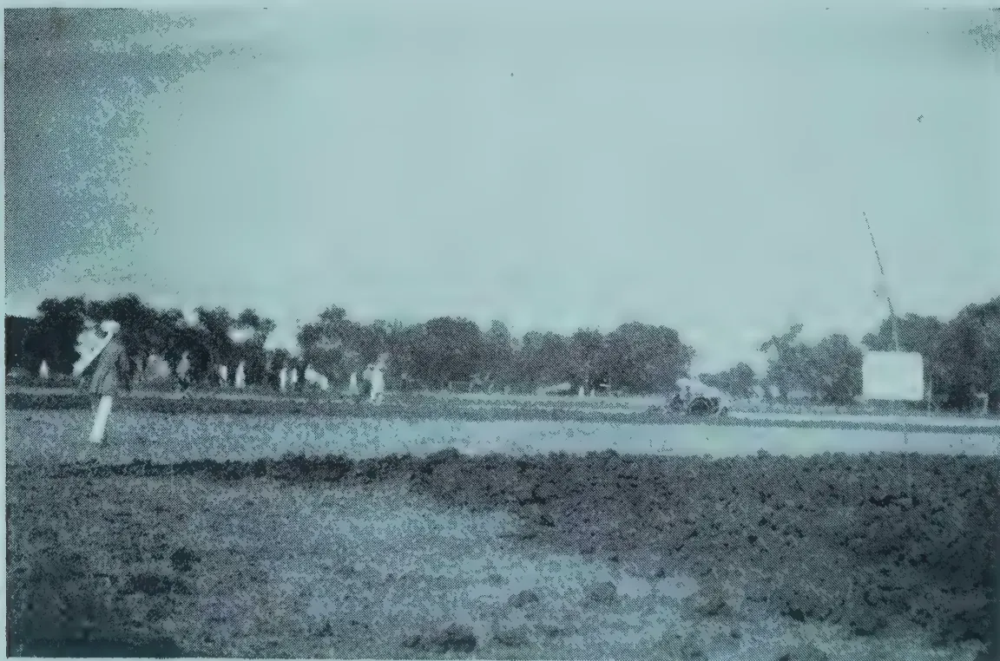
General view of one of the fields used for the competition. The Fordson is to be seen towards the right of the picture.
OCTOBER, 1920.]211threshing machine. These were all run off a common shafting, the horse power required for running all the machines combined being estimated at 16 H. P.
I shall deal separately with the individual tests. Ploughing Test No. 1 was a 4-hour reliability test in which Tractors had to plough for a continuous period of four hours. The soil was a medium black cotton one but was of course very hard. Account was kept of the number of stops and their causes, the area ploughed and the fuel consumption. The Austin was the most economical Tractor in this and turned out the most work of any. The quality of the work was however not so good as that of either the Fiat or the Lauson. The Fordson did work decidedly inferior to the other Tractor in this trial. In this as in all the ploughing trials it showed itself as a distinctly dangerous machine, it being inclined to rear up in the air owing to faulty distribution of weight. The Cletrac was unable to complete owing to plough breakage.
Test No. 2 was a 1-acre time test, i e., each Tractor had to plough one acre of land, the time taken being recorded. The soil was much the same as in the first test. In this test the Fiat did distinctly the best while the Fordson did better than the AUSTIN which lost heavily on account of poor quality of work. It may be pointed out here that the Fordson had a much better plough fitted to it than the Austin had. In fact the plough used with it seemed to be the one best adapted to the soil conditions at Nagpur of any exhibited there.
Test No. 3 was a 1-hour area test on heavy black cotton soil. This soil was distinctly heavier than any I have seen in Mysore and, as it was very hard, was an extremely severe test. On this land much the best work was done by the Fiat which, considering the character of the soil, gave a very creditable performance. The other heavy Tractor, the Lauson, did fairly well but this Tractor both here and in the other tests was badly handled and showed itself a heavy consumer of fuel.
Of the light Tractors, the Fordson did the best in this test, thanks to its superior plough and the great skill of its driver. The Austin was the most economical Tractor in the test doing one-fourth acre on pints of kerosene. However its ploughing was not sufficiently deep. The Cletrac both here and in the other tests showed itself as geared too high so that it travelled much too fast to do good work.
I was not present for the whole of the belt test as I had to leave to catch the train. However I saw the Fiat, the Austin and the Fordson working and have no hesitancy in saying that the Austin showed itself decidedly superior to the other two on this class of work. The Fordson could not work the whole series of machines satisfactorily while the Austin had not the slightest trouble. The Austin has a very efficient governor which keeps the running steady under variable loads. The Fordson has no governor at all and must be controlled from the throttle,—a very unsatisfactory arrangement. While the Fiat has a governor this was not acting properly because of faulty adjustment.
212[OCTOBER, 1920.The following are my impressions with regard to the individual Tractors :—
1.—Fiat.—(Approximate cost Rs. 6,500). A fairly heavy Tractor which
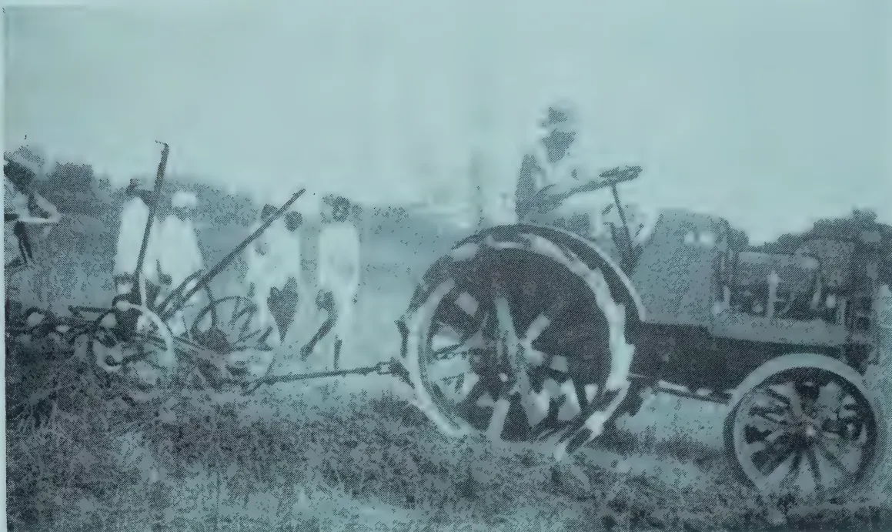
A black and white photograph showing a Fiat tractor in operation. The tractor is a large, open-cab model with large spoked wheels. It is pulling a plow through a field of dark, loose soil. Several people are standing in the background, observing the tractor's performance. The scene is set outdoors in a rural environment.The Fiat Tractor ploughing in medium black cotton soil.
did satisfactory work throughout. It was fairly economical of fuel and moderately handy in turning. It is not as well balanced as it should be and showed a tendency to rear up in heavy going. The strakes provided for the hind wheels were not very efficient in preventing slipping. It did fairly satisfactorily belt work but was not properly governed. It has only one brake working through the differential. This is not as satisfactory for road work as are brakes acting on the rear wheels. It has no springs in the rear and would hardly be suitable for road haulage. I think a more highly powered machine is required for heavy black cotton soil.
2, The Lauson.—(Approximately cost Rs. 6,500). A heavy Tractor
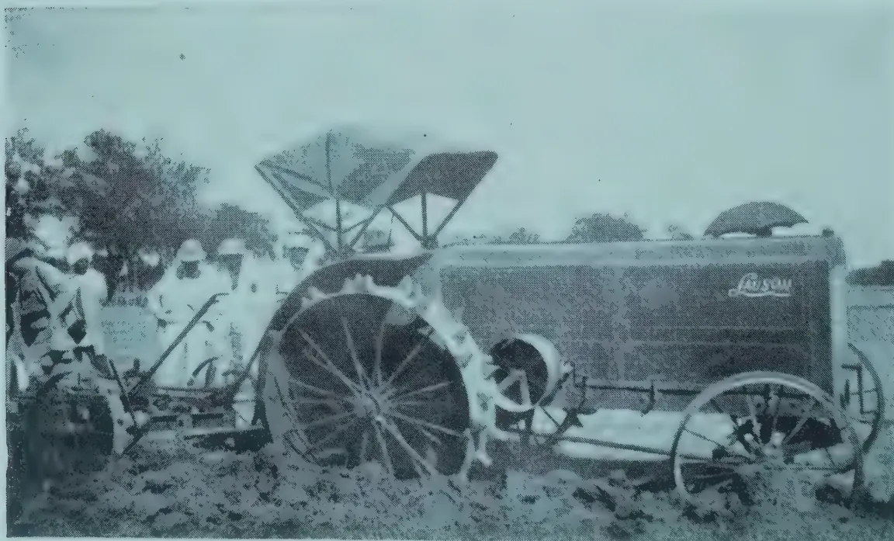
A black and white photograph of a Lauson tractor. The tractor is a heavy-duty model with a large, boxy body and large spoked wheels. The word 'Lauson' is visible on the side of the body. It is stopped in a field, and a plow is attached to the front. Several people are standing around the tractor, some appearing to be inspecting it or discussing its performance. The background shows some trees and a clear sky.The Lauson in the hour test, stopped on account of plough trouble.
OCTOBER, 1920.]213with ample power but wasteful in consumption of both lubricating oil and fuel (this may have been partly the fault of the driver). The work done by it was only fairly satisfactory but it was handicapped by a poor driver. I did not see it tested on the belt.
3. The Austin.—(Approximate cost Rs. 3,500). A comparatively light
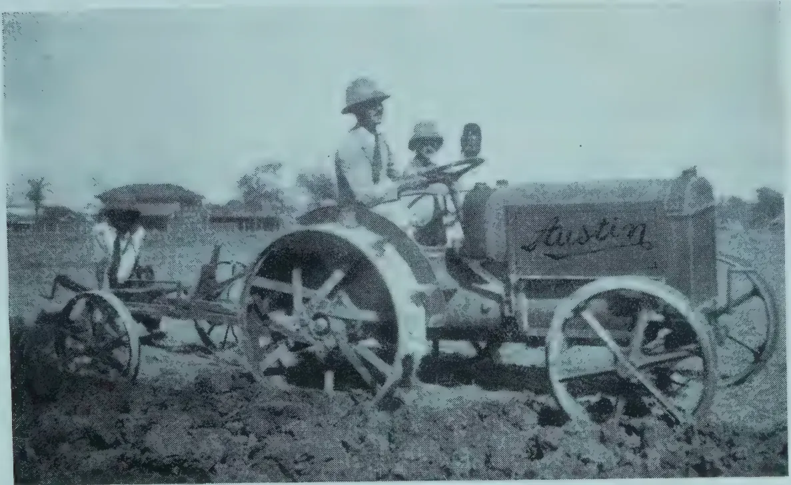
The Austin Tractor in the hour test. Note the large spuds in the hind wheels
Tractor capable of doing good work on medium and light soil but not suitable for work on black cotton soil except perhaps with a single plough. It should do well on sugar-cane land. It is provided with very efficient spuds on the rear wheels which practically prevent slipping. On the whole it showed itself more economical in running than any of the other Tractors. It did excellent belt work, thanks to the efficiency of its engine and governor. It is quite well balanced and showed only a very slight tendency to rear up. It has two independently controlled brakes working on the two hind wheels. It has no springing in the rear but as it is provided with large rubber pads for road work might prove fairly satisfactory for road haulage.
4. The Fordson.—(Approximately cost Rs. 3,500). A light Tractor
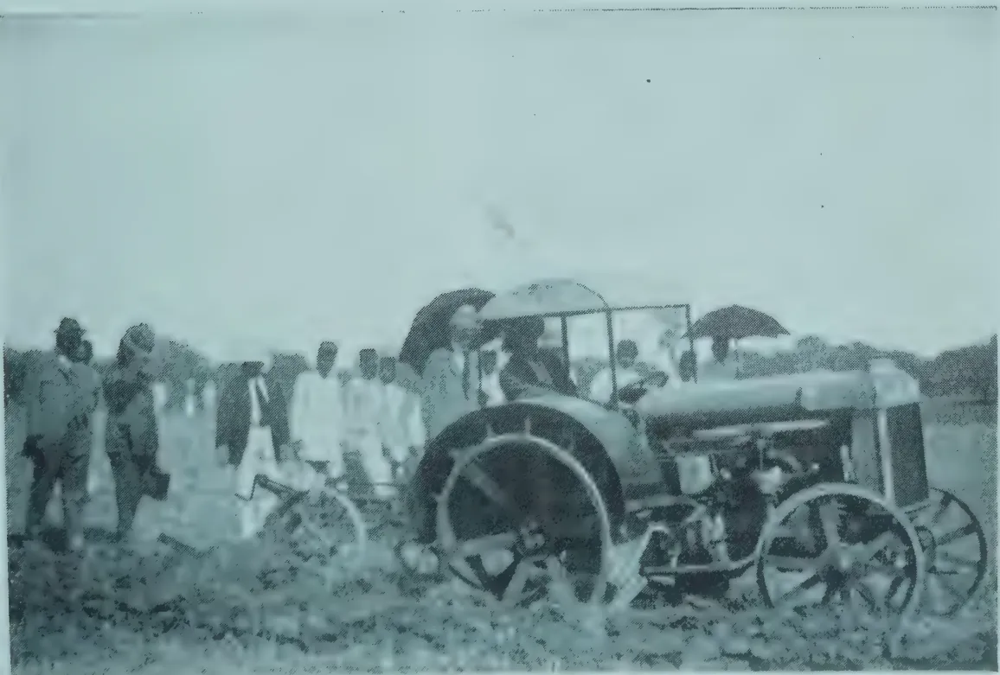
The Fordson Tractor working in medium black cotton soil
214[OCTOBER, 1920.capable of doing good work on medium and light soils but unsafe in the hands of any but a skilful driver owing to its bad balance and tendency to rear up. Quite unsuitable for heavy soils. It is not as powerful as the Austin. The strakes on the rear wheel are not very efficient so there is considerable tendency to slip. It is not well adapted to belt work as it has no governor; not suited for road haulage as it has no springs either front or rear and no brakes. On the whole, it does not appear to be a particularly suitable Tractor for this country.
5. The Cletrac.—(Approximate cost Rs. 5,200) is a comparatively
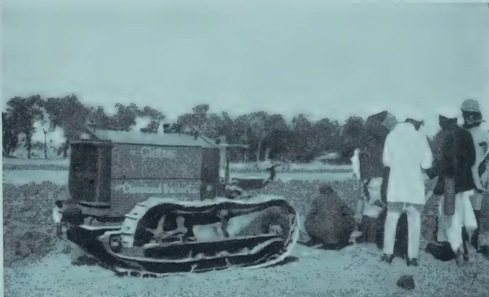
The Cletrac in the hour test, stopped on account of plough trouble.
light Tractor with caterpillar tread. It is very handy in turning but has only a single forward speed which is too high for dry soil ploughing in India. Owing partly to its high speed the work turned out by it was very poor, decidedly poorer than that of any of the other Tractors. With a lower gearing which would allow for ploughing at a rate of two to two and a half miles an hour, this Tractor might prove a very useful one. Its cost is, however, high as compared with that of the other light Tractors exhibited. To what extent the question of wear on the exposed track of the Tractor will militate against its introduction into India could only be decided after a trial extending over at least a year. The Madras Department of Agriculture have purchased one of these Tractors and should be able to give some useful information with regard to this point after more extended trials.
This Tractor was not tested for belt work during my presence at the trials but the position of the pulley is not a convenient one and is likely to lead to difficulty in getting the Tractor into alignment. The Tractor is sprung in front, not behind. The caterpillar tread does not appear to me suitable for road haulage in Mysore at least and the clearance of the Tractor is likely to be insufficient for this purpose.—JOURNAL OF MYSORE AGRIC. EXPT. UNION, Vol. II, No. 2.
OCTOBER, 1920.]215Under the above title, PROF. P. CARMODY, late Director of Agriculture, Trinidad, contributed an article to THE TIMES, May 22nd, 1920, which is reproduced below as of general interest to cacao planters.
About ten years ago the Department of Agriculture in Trinidad, while carrying out some manurial experiments in cacao cultivation, decided to ascertain the yield of marketable cacao from individual trees. A beginning was made with about 1,000 trees, and a yearly record of yields from these has since been kept. The results were so unexpected and so important, that the records were extended to over 10,000 trees.
The yearly records showed that the yield of individual trees was the predominant factor in the total yield per acre, or any other area, and that the trees could be broadly classified into heavy-bearing and light-bearing. The variation in the yield is very great. Some trees give a yield of less than 2 lb. of dry cacao a year, some give as high as 20 lb. or 25 lb. The percentage of trees of the latter character was much below that of the light-bearing trees.
It was also found that a heavy-bearing tree in one year could be classed as a heavy bearer every year, and a light-bearing tree as a constant light-bearer. The yield varies to some extent from year to year according to seasonal variations, but the general character remains the same.
The value of these records will be seen from the following results. In a field giving a fairly satisfactory yield of cacao, the percentage of trees of different bearing capacity is shown for two consecutive years.
| Weight of Dry Cacao per Tree per Annum. |
Percentage of Trees. | |
|---|---|---|
| 1st Year. | 2nd Year. | |
| Over 8 lb. | 17 | 21 |
| Between 4 lb. and 8 lb. | 32 | 39 |
| Between 2 lb. and 4 lb. | 26 | 25 |
| Under 2 lb. | 25 | 15 |
The trees in the above field were between twenty-five and thirty years of age. In another field, with trees over fifty years old the record for one year shows:—
| Weight of Dry Cacao per Trees per Annum. |
Percentage of Tree. |
|---|---|
| Over 8 lb. | 1.87 |
| Between 4 lb. and 8 lb. | 13.37 |
| Between 2 lb. and 4 lb. | 26.07 |
| Under 2 lb. | 58.69 |
In both cases the records are of natural yields under ordinary estate cultivation, and without the use of manures, and it will be seen that the natural yield from old trees is less satisfactory than that from mature trees.
Over a long series of years the average price for good marketable cacao received by estate owners in Trinidad may be taken at 6d. per lb., and the current expenses for ordinary estate cultivation may be taken at 3d. per lb. This leaves a surplus of only 3d., which is barely sufficient to meet charges on capital. It will be seen from this that a yield of 1 lb. per tree approximately meets the annual charges only. A yield of 2 lb. per tree gives a net profit of about £3 per acre (at 250 trees to the acre), which is not sufficient in any agricultural undertaking in the tropics.
It follows from this that mature trees yielding less than 2 lb. per annum are undesirable encumbrances on an estate, and the best course is to remove them, or to utilize the trunks for grafting or budding. Experiments are being carried out in Trinidad for the purpose of ascertaining whether buds or grafts, taken from heavy-bearing trees grown on these trunks, will give an increased yield, and so avoid the more drastic course of complete removal. The results of these experiments will not be known for a few years.
Other experiments are being tried in order to ascertain whether seeds from selected heavy-bearing trees can be relied on to produce heavy-bearing trees. The results of these experiments will decide one very important point in cacao cultivation.
To the ordinary planter it may seem quite impracticable for him to ascertain the weight of dry cacao yielded by individual trees, but a very simple way of doing this has been worked out in Trinidad. From many experiments on different estates in Trinidad it has been found that, by fermenting and curing in the ordinary way a fairly large number of pods. 1 lb. of marketable cacao is obtained from twelve pods. This can be relied on for ordinary seasons and for the Forastero type of cacao. It is only necessary then, to count the number of pods picked during the year from any individual tree, to ascertain with considerable, and for estate purposes quite sufficient accuracy, the weight of dry cacao that tree will yield. With other types of cacao, and in abnormal seasons, the number of pods equivalent to 1 lb. of dry cacao may vary from ten to more than fifteen; but the correct number for any estate under any conditions may be ascertained by direct experiment as indicated above.
In most of the cacao-producing colonies within the Empire this method of ascertaining the weight of dry cacao by counting the pods is now adopted in carrying out experiments, and some very interesting results have been obtained in the Gold Coast. Many small planters in Trinidad, whose operations would not justify the cost of weights and scales, have found it convenient and useful. In all countries with a large production of cacao, variations in yield in different fields, or in different parts of the same field, are of common occurrence; this method will show, with but little extra trouble or expense, the actual value of any selected number of trees in a field, or on an estate.—AGRICULTURAL NEWS, Vol. XIX, No. 475.
OCTOBER, 1920.]217J. C. HUTSON, B.A. Ph.D.,
Government Entomologist, Ceylon.
During the last few years the African Snail has been the source of considerable apprehension among agriculturists in certain districts of Ceylon by reason of its sudden appearance and subsequent rapid increase in localities hitherto free from this mollusc.
The following article has been written to indicate its past history in Ceylon and its present status as a pest, and to suggest some practicable measures for its control.
Achatina fulica is a native of East Africa, whence it found its way into Mauritius many years ago. It was introduced into Calcutta over sixty years ago, and in 1910 it was stated by DR. ANNANDALE, of the Indian Museum, that the snails were common in Calcutta and apparently all over Northern Bengal.
The origin of the African Snail in Ceylon was traced by MR. E. E. GREEN, then Entomologist, to the fact that an enthusiastic collector of land molluscs received some living examples of this snail from abroad about 1900. These were liberated in his garden at Rozelle (near Watawala). Acting upon GREEN's advice, he soon afterwards collected and destroyed them, and it was thought that he had been successful in exterminating the whole brood.
GREEN states further that the introduction of Achatina to the Kalutara district from Watawala has been satisfactorily explained by the existence of a family of natives with connections in the two places. "It appears that a dhoby who worked near Watawala paid a visit to his friends near Kalutara taking with him a present of vegetables from up-country. A couple of these snails were found amongst the cabbages and thrown out into the garden. It was at this particular spot that the first outbreak of the pest was noticed.†
About ten years later, in 1910, vast swarms of these snails appeared South of Kalutara, and the outbreak was investigated by GREEN. His report was published as a circular of the Royal Botanic Gardens, Vol. V, No. 7, and included the details given above.
GREEN observed at the time that in spite of the overwhelming numbers of the snails, the actual damage that they were doing was comparatively small. They were doing a certain amount of injury to vegetable produce, but it was evident that they were also engaged in scavenging work and were devouring both animal and vegetable refuse. They were not attacking any staple product and it was unlikely that they would do so.
While GREEN considered that the extermination of the snail pest was impracticable at that time, at the same time he urged that measures be undertaken to prevent any excessive increase of the molluscs.
* GREEN, E. E. Report on the outbreak of Achatina fulica. Circular of the Royal Botanic Gardens, Ceylon, Vol. V., No. 7, August, 1910.
† GREEN, E. E. TROPICAL AGRICULTURIST, August 1910, p. 121, Footnote.
218[OCTOBER, 1920.These suggestions for the control of Achatina included the collection and destruction of the snails wherever they congregate in large numbers, the exposure of the eggs to the attacks of birds by turning over the loose soil and rubbish heaps where snails are known to be ovipositing; the protection of vegetable gardens by deep ditches, and by frequent applications of wood ashes, etc.; and the protection of fruit trees by banding with freshly tarred coconut fibre.
Since 1910 Achatina has spread over a much wider area, mainly along the main lines of traffic, probably owing to individual snails getting on to railway trucks, motors, native carts, etc., and many no doubt have been carried in vegetable produce from one locality to another. These snails are now prevalent probably throughout most of the Western Province, they are numerous throughout the greater part of the Central Province below 3,000 feet elevation. They are known to occur in the Northern and Central portions of Sabaragamuwa Province, and have been seen 20 miles East of Ratnapura. They are also in the Southern portion of the North-Western Province.
While Achatina is known to occur at elevations above 3,000 feet it does not seem probable that it will ever increase to any great extent at such elevations. In the TROPICAL AGRICULTURIST for September 1910 GREEN stated that specimens of Achatina liberated in a garden in Upper Maskeliya, died—one by one—without reproducing themselves. This seems to indicate that the snails cannot exist for any length of time above an elevation of about 4,000 feet.
Since 1910 the African Snail appears to have increased its range of food plants during its spread over a much wider area, but even at the present time it is not known to do any serious damage to any of the chief crops of the island, such as tea, rubber, coconuts, cacao and paddy. The snails are however, a pest of vegetable gardens in most localities below an elevation of about 3,000 feet.
The following notes will serve to indicate the status of Achatina in relation to the staple crops of the island, but these statements may be subject to modification when more is known about the feeding habits of the snails at different elevations.
Tea.—The African Snail is not known to attack tea, although individual specimens are occasionally seen on the bushes.
Young dadaps (Erythrina) are sometimes girdled and killed by them, while the older dadaps suffer a partial loss of bark and leaves as a result of their attacks.
Rubber.—The Department of Agriculture has from time to time received reports that Achatina has been seen drinking rubber latex at tapping time, and these snails undoubtedly do so, but at present the evidence is not sufficient to show that they cause any serious loss to this crop.
Coconuts.—While the snails sometimes swarm on coconut palms, and even over the fronds of young coconut plants, we have never received any reports that they injure the plants in any way.
Cacao.—These snails sometimes kill off young supply plants, while the blossom of bearing trees is occasionally injured by them. Measures are now being taken on some estates to protect young plants.
Paddy.—Achatina fulica is not known to attack paddy plants, although it occasionally swarms over the fields and bends down the plants by weight of numbers.
Vegetable crops.—Here the African Snail is undoubtedly a pest and in some localities the growing of certain vegetables has become almost impracticable owing to its ravages. The snails, however, can be controlled by carrying out the measures suggested elsewhere.
OCTOBER, 1920.]219Fruit trees, sometimes injured by snails, can be protected by banding.
Granted that the snails do a certain amount of damage to vegetable crops and to fruit trees, it is, then, imperative that in the interests of food production this pest should be systematically kept down within reasonable limits, and suggestions for control are outlined elsewhere.
Before taking up the subject of control measures, a few notes on the habits and life history of Achatina fulica, as known at present, may be of interest.
These snails are active only during wet weather and retire during dry spells to sheltered places, closing up the mouth of their shells by means of a parchment-like cover, the hibernaculum, which they secrete as required. Their places of retreat include heaps of stones or bricks, manure or other refuse heaps, the inside of white ants' nests, and any soft earth around the bases of trees or near hedges, among rank vegetation, or along the bottom of leaf-covered ditches. Their favourite hiding places in any locality can be readily determined by a little careful observation and can be treated periodically with a solution of copper sulphate as suggested elsewhere.
During the wet weather the snails do most of their feeding at night, especially in the younger stages, and many of them retire in the early mornings to selected retreats, coming out again at night. When very numerous a large number do remain above ground all day in a quiescent state, clustering thickly on trees, hedges, fence-posts and buildings, and advantage can be taken on this habit to treat with copper sulphate the places where they congregate, or simply to collect and destroy them.
Their powers of reproduction may be realized when it is stated that every individual snail has both male and female sexual organs. It is probable, however, that the union of two individuals is necessary for the production of fertile eggs. A snail is probably not full grown for two years after hatching from the egg, but it seems likely that a half-grown snail is capable of producing eggs at the end of the first year. So far as is known at present, Achatina only breeds once a year during wet weather, and is able to produce at least 100 eggs at the end of the first year, and another 200 to 300 at the end of the second year. It is not known definitely at present how long a snail can live or how many eggs it can produce during its life.
Breeding experiments are being made by the writer to try and determine, as far as possible, many doubtful points in connection with the life history of this mollusc.
The small bright yellow eggs are laid in soft, loose soil in sheltered places near trees, under hedges, among rank vegetation and under manure heaps and masses of decaying vegetable matter. Observations made by the writer and others indicate that under favourable conditions the eggs may hatch within two or three weeks after being deposited. The young snails are very small, about the size of peas, and come out of their egg-shells with their own body shells fully formed. They are able to begin feeding at an early stage, and are quite inconspicuous. It seems probable that they can do a fair amount of damage to tender plants, as they are voracious feeders in captivity, even at this tender age. Doubtless many of them fall a prey to birds and predaceous insects at this stage.
It was pointed out by GREEN in his Report that the natural habits of the snails will tend to keep them in the neighbourhood of native villages, where they will have a suitable food supply in the shape of miscellaneous vegetable crops and refuse of all kinds. Moreover, the need of the snails for lime in the development of their shells urges them to frequent the walls of buildings, where they sometimes scrape holes in the whitewash and plaster. In all such places they can be controlled by the measures indicated below.
220[OCTOBER, 1920.GREEN recorded that the snails appeared to have very few natural enemies. He continues—"Pigs, pariah dogs, rats, and crows, any of which might be expected prey upon the snails, were all said to ignore them completely. The only animal that had been observed to attack them was the common pond tortoise." Recent information from a correspondent indicates that wild pigs devour snails in the jungle, while recent letters in the daily press state that the "Jungle crow" or "Etikukula" (Centropus chlororhynchus) is very fond of the snails in some localities. Ducks and fowls will sometimes feed on young snails where these are fed to them.
GREEN stated that it was probable that the minute newly hatched snails will be devoured by various birds and carnivorous insects. He found a predaceous ant (Phidelogeton affinis) swarming in a batch of eggs and was of opinion that this insect is likely to be a valuable agent in the reduction of the broods.
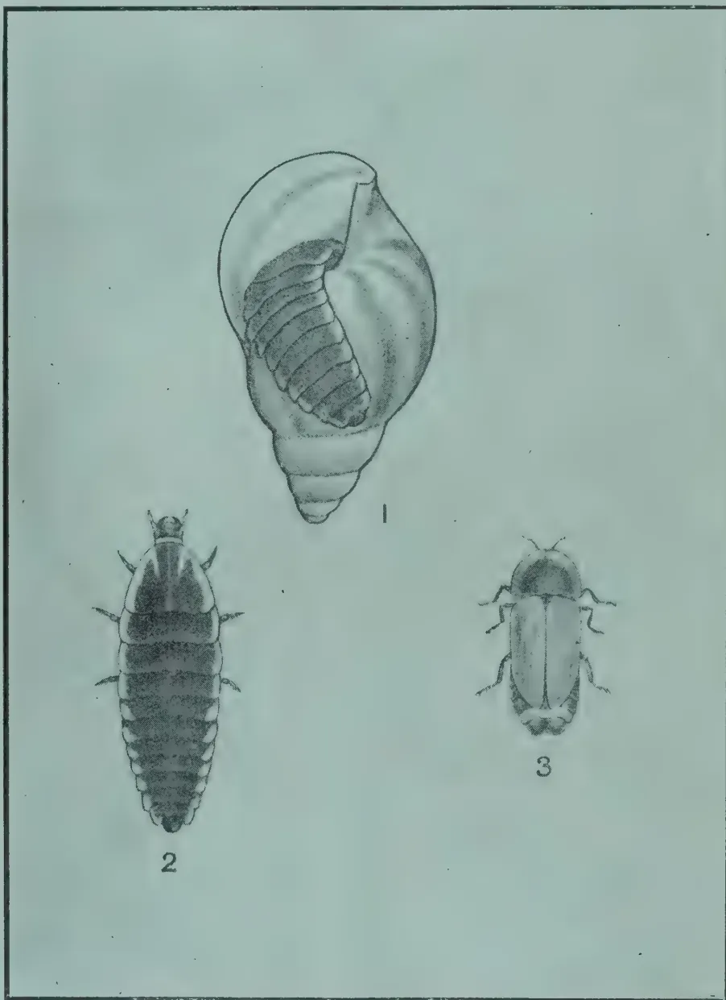
LAMPROPHORUS TENEBROSUS, WLK.
Glow-worm, Lamprophorus tenebrosus. At the present time probably the most important insect enemy of Achatina in Ceylon is the larva of a "glow-worm" or "firefly." This is apparently the same as the Indian glow-worm (Lamprophorus tenebrosus) which is an important factor in the control of Achatina in that country.
This larva belongs to a small group of luminous insects which emit a steady light and in which the male is a winged beetle (fig 3), or "firefly," while the female is wingless "glow-worm," and somewhat resembles the larva shown in figure 2. It may be mentioned here that the smaller "fireflies" which swarm in their thousands on damp nights are members of a larger group of luminous insects which give off intermittent flashes of light and in which the males and females are both winged beetles. These two groups both belong to the family Lampyridæ, or luminous, soft-bodied beetles.
So far, there have been only two reports of this larva eating the African Snail in any numbers, and both of these are from the Kandy district, in 1917 from Wattarantenne Estate, and in 1920 from Kondesale Estate. It is probable, however, that it occurs in other localities where the snail is present. Any local observation on this point will be welcomed by the writer.
A few specimens of this Lamprophorus larva are under observation at Peradeniya in a breeding cage with glass sides. During the day these larvæ are quite sluggish and usually remain half buried in a corner of the cage without giving off any light. But at the slightest noise or disturbance the steady glow is turned on and continues for some time. This phenomenon can also be observed in the case of the winged male "firefly."
At night these larvæ are much more active, and when hungry probably spend most of the night prowling about, with head extended and luminous organ glowing, in search of their prey.
Only once has the writer actually observed one of these larvæ eating a snail, and this was one night when the cage happened to be under observation. The larva was on top of the snail shell and the snail, evidently disturbed by its presence, had partially withdrawn into its shell. The larva remained quiet until the snail began to come out again, and then made a sudden rush at it and tried to seize it behind the head with its sharp pincer-like mandibles. The larva, however, failed to establish a hold, and the snail immediately withdrew within its shell. The snail, losing its grip of the soil and apparently overbalanced by the weight of the larva, began to turn over and the larva gradually moved round, always keeping uppermost and apparently trying to overbalance the shell. The snail was soon helpless on its back, lying in a slight depression in the soil with the larva still on top. The latter now made a quick dart for the mouth of the shell, which was by this time covered with a frothy substance given off by the snail. The larva quickly sucked up this froth and then followed the retreating snail into its shell (See figure 1), this time getting a firm hold with its mandibles in the body of the snail, and bracing itself with its legs on the shell.
It then proceeded to bury its mandibles in the soft body of the snail and chew it up, at the same time apparently sucking out the body juices of its victim. Next morning there were only some shrivelled up remains of the snail within the shell.
222[OCTOBER, 1920.There is an interesting account of the habits of this larva by MR. C. A. PAIVA,* Assistant, Zoological Survey of India, in which he says that the feeding of the larva sometimes lasts a couple of hours until there is nothing left of the snail. The larvæ of Lamprophorus, which MR. PAIVA had under observation for several weeks seemed to prefer the larger specimens of Achatina, but if they were unable to overcome these they readily devoured the smaller.
The writer hopes to make further observations on the habits of Lamprophorus, notes of which will be published later, when MR. PAIVA's article will be referred to again.
It is improbable that the natural enemies of Achatina will ever be able to do more than reduce its numbers periodically within limited areas, so that they cannot be relied upon to play a very important part in the control of the snail, at any rate under present conditions, where the snails are very numerous in some districts.
It is essential, therefore, that this pest should be kept within reasonable limits by artificial methods.
So far as is known at present the African snail has no internal parasitic enemies, such as the larvæ of small wasps or flies, which might draw their nourishment from its internal organs. All the known enemies of this mollusc, such as pigs, birds, and glow-worm larvæ, feed externally on this pest and live quite apart from it.
Therefore in destroying the snail by any of the methods outlined below there will be little or no risk of also destroying any of its natural enemies, as often happens in the case of internal parasites of a caterpillar pest where numbers of the beneficial parasites are killed in the wholesale destruction of their hosts.
In places where Achatina is a pest the local authorities should organise a general campaign against it, and the measures of control suggested below should be systematically and persistently carried out until it is reduced to a position of minor importance. The natural enemies of the snail will then be able to do their good work to better advantage.
The wet season, when the snails are most in evidence, is the best time for a campaign of this kind to be started. In a badly infested locality it may take several weeks of persistent effort before any marked reduction in the numbers of the pest becomes evident. It is naturally rather a hopeless task for a few scattered individuals in a community, or for one or two estates in a district infested by this pest to try and control it if their neighbours all around are not joining in.
It must be remembered that the African Snail has been breeding in Ceylon for something like twenty years and has become well established in certain districts, so that nothing short of a general organised campaign will have much effect in reducing its numbers.
In carrying out the measures outlined below special attention should be paid to the destruction of the eggs and young snails. This will involve a search for breeding places, but a thorough cleaning up of most of these will certainly repay the effort expended. A few of the more favoured breeding places can be left as traps and dealt with periodically.
* PAIVA, C. A. The Indian Glow-worm. Records of the Indian Museum, Vol. XVI Part I, p.19. January 1919.
OCTOBER, 1920.]223Control Methods.—These include collection and destruction of the snail in all stages wherever these are found ; the use of specially prepared "traps" for snails, and the periodical treatment of such traps ; the use of wood ashes, or sawdust, with or without copper sulphate to protect vegetable gardens ; the use of copper sulphate in solution in various strengths for treating snails ; and clean weeding.
Collection and Destruction.—This is a general measure which is applicable wherever snails occur. In towns and villages gangs of labour should be organised to collect snails in all public places and in private compounds where householders are unable to do their own collecting. The snails can conveniently be collected in bags or sacks, as is done on some estates, and the coolies should be paid so much a sackful or by weight, so much per cwt. rather than by the day, or the work of collection can be part of their day's work. Where the snails are numerous collecting may be done daily, say for an hour or two early every morning, and only so much should be collected as can be disposed of the same day. In less heavily infested localities a systematic collection two or three times a week ought to be sufficient.
A careful search should be made for breeding places of snails in any soft, loose soil near trees, under hedges, under any heap of decaying refuse or among thick grass or weeds. In each locality the snails will have their favourite breeding places and when these have been discovered they should be visited periodically during wet weather and all eggs and young snails should be gathered in and destroyed. A higher rate of pay can be given for eggs and young snails, as these will not be so easy to find, and far more will go to the bag.
There are various ways of destroying snails, but their destruction should be done as cheaply, and at the same time, as effectively as possible.
They can be crushed in the bags in which they are collected and dumped into pits and buried ; they can be buried in pits without crushing first and covered with about 18 inches of well-stamped earth ; they can be burnt in incinerators and the ash spread on the land.
Copper Sulphate () when used even in a weak solution has a very caustic effect on snails, and is useful in treating large masses of snails in short time. Solutions should be made in wooden, copper, glass or stone-ware vessels, as tin and iron vessels decompose this chemical.
A 4 per cent. solution (2 lb. dissolved in about 5 gallons water) will kill all snails if these are immersed in it for about 5 minutes. By having an arrangement of wooden tubs, small barrels, or small vats at different levels an almost continuous flow of the solution can be maintained and the same liquid can be used repeatedly. The treated snails can be dumped out and buried, or spread over breeding places to kill other snails. The used liquid can be stored from day to day in covered wooden vessels and more liquid added as required to make up the strength and quantity desired.
This is a fairly cheap method, as copper sulphate crystals can probably be obtained at from cents 50 to cents 60 per lb. in bulk, even at the present high cost, and a few pounds will make enough solution to kill thousands of snails daily and can be used several times over by a suitable arrangement of vessels.
224[OCTOBER, 1920.This method is useful where large quantities of snails have to be disposed of, but only so many snails should be collected as can be treated the same day. It also avoids the crushing of snails which is objectionable to some classes of the community.
Trapping and Destruction.—Trap heaps of stones, bricks, rubbish, decaying fruits or other vegetable refuse can be constructed in places where snails are known to congregate. These "traps" should be visited periodically, and the snails destroyed. The traps can be renewed from time to time. It is suggested that these trap heaps might be useful on estates which adjoin the jungle, or Crown Forests, whence vast numbers of snails often pour out in a continuous stream.
These traps could be made at intervals along the boundary across which the snails travel.
Gangs of coolies can be held responsible for the destruction of the snails in each division of an estate. The use of trap heaps is especially applicable to cacao estates where large numbers of snails are attracted to the heaps of decaying cacao pods to lay their eggs. In such places the eggs and young snails can be destroyed periodically.
Leaf-covered ditches often serve to attract snails which can be dealt with periodically.
Protection of Vegetable Gardens.—Before planting up vegetable gardens, clear up all breeding places of snails and destroy all eggs and young snails. Then divide the area up into plots and surround these by shallow ditches which can be kept filled with wood ashes or sawdust, renewed at intervals. The snails get clogged up in trying to cross this barrier.
Copper Sulphate, as mentioned above, has been found to be most efficient in killing off snails and protecting plants in vegetable gardens, since it has a very caustic action on snails.
It has been used with success by correspondents at the suggestion of the writer, who has also made effective use of it himself against snails.
It can be used either in small pieces, or powdered, or dissolved in water. The following methods have been effective against snails in small vegetable gardens up to 4 acres.
In Crystals.—Place a small piece of copper sulphate near each young plant. The snails on coming to feed on the plants tend to crawl around them first and come into contact with the copper sulphate crystal sticking out of the ground. These crystals last indefinitely.
Powdered Copper Sulphate can be mixed with fine ashes or sawdust and sprinkled around small beds, or around the base of special plants about 6 inches from base all around. This mixture can also be sprinkled into white ant nests frequented by snails and will kill large numbers of them.
Copper Sulphate, 10 per cent Solution.—Dissolve 1 lb. Crystals in every 1 gallon hot water. Do not use tin or iron vessels, but wooden or stoneware. This solution can be used to water heaps of snails or places where they are known to collect. Vegetable beds can be surrounded with a wall of small stones which is then watered two or three times a week with this solution. This will prevent snails from crossing or kill any that try to cross.
OCTOBER, 1920.]225Any fine powder or dust, such as sifted wood ashes, sawdust, or coconut husk dust, can be steeped in the 10 per cent. solution of Copper sulphate for several hours, and then used as a barrier for vegetable beds, plants, or trees, either in shallow ditches, or sprinkled over a wall of stones. This mixture can also be sprinkled into white ants nests and other hiding places of the snails. If the dust is steeped thoroughly in the solution it retains its effectiveness for some time, but should be renewed after heavy rains.
Coir rope, soaked for 24 hours in a 10 per cent. solution of copper sulphate, can be used to protect plants. Vegetable beds can be surrounded with treated rope pegged down so as to touch the soil at all points, or the rope can be stretched on the ground along that side of the garden where snails usually enter. If the rope is thoroughly steeped in the solution it retains its effectiveness for some time, but can be re-soaked periodically.
The treated rope can also be used for banding special fruit trees and forms an effective barrier against climbing snails. It can be used indefinitely, if re-soaked as required.
Clean Cultivation.—This includes clean weeding in and around vegetable gardens and near houses, and the periodical clearing up of any luxuriant vegetation which might serve as breeding places for snails.
The above measures have been found effective in reducing the numbers of the African snail, and further experiments are being made with other substances.
The need for co-operation among everyone in snail-infested areas is strongly urged, since it is only by a universal and persistent campaign that the snails can be reduced within reasonable limits.
A careful look-out should be kept in localities not yet visited by the snail, and its first appearance in a new locality should be the signal for prompt measures of control.
During the last few weeks several reports regarding the injury to tea bushes by mites have been sent in to the Agricultural Department, and usually specimens of leaves from affected bushes have accompanied the correspondence. The majority of samples have come from districts which have been visited by a prolonged drought accompanied for part of the time by high winds. Judging from the reports received the outbreaks of tea mites have been more numerous and more extensive this year than usual.
Tea mites are essentially dry weather pests, with the probable exception of the yellow mite, and it is probable that light attacks occur annually during dry spells on many local tea estates.
226[OCTOBER, 1920.This year, however, the abnormal drought in some districts has favoured the rapid increase and continued development of the mites and the high winds have doubtless contributed to their spread.
Only the most vigorous tea bushes have been able to stand both the drought and any prevailing pests, but those bushes growing in less favourable conditions have been badly hit, and have less reserve of vitality to enable them to throw off the effects of the drought and the mites.
Such pests as mites and scale insects, which obtain their nourishment by sucking the plant juices, are a serious drain on any tea bush when they are numerous and persist for a considerable period, and the bushes which are not in a normal healthy condition very soon show the effects of the attack.
The remedy for such pests as tea mites is to get rid of the trouble as soon as possible and then to try and restore the bushes to a more normal state of health by improving the soil conditions and by an adequate application of manures.
Lime and Sulphur.—Lime and sulphur is one of the recognised remedies against tea mites, and a mixture of these ingredients is usually applied in the form of a fine powder dusted over the plants.
They may however be sprayed on in the form of a lime sulphur solution.
Formerly it was customary to apply powdered sulphur alone, but it has been found that the addition of lime helps to stick the sulphur to the leaves and the lime acts as a carrier. Hydrated lime is generally used and is made by the addition of about 3 gallons of water to every 100 lb. of good quicklime. The water must be all taken up by the lime, which is then mixed with the powdered sulphur at rate of 1 part of lime to 1 part of sulphur, i.e., equal amounts.
The mixture can be used at the rate of 10 lb. to an acre and should be applied so that the powder will reach every part of an affected bush. It can be applied by sprinkling from loosely woven cloth bags, but a proper mechanical powder distributor is less wasteful.
The dust should be applied when the leaves are wet with dew in the early morning and it is preferable to have no wind at the time of application.
Pruning.—In the case of bad attack of mites it is sometimes advisable to prune attacked area and burn the prunings immediately. In the case of those mites which attack the shoots and flush, a topping of the infested bushes is useful followed by the immediate burning of all topped shoots and leaves.
Cultivation and Manuring —All areas of tea which are subject to repeated attacks of mites should receive special cultivation and manuring.
A severe drought is especially felt by tea bushes with a shallow root system induced by insufficient drainage or by a hard subsoil, and the mites are usually worst on the less vigorous bushes.
Therefore the vigour of the mite-infested areas should be restored by proper cultivation and manuring.
J. C. HUTSON,
Government Entomologist.
Minutes of Meeting of the Committee of Agricultural Experiments held at
Peradeniya on 9th September, 1920.
Present :—The Director of Agriculture (Chairman), The Botanist and Mycologist, The Government Entomologist, The Superintendent of Botanical Gardens, The Acting Superintendent Low Country Products and School Gardens, The Government Chemist, The Director of the Food Production Department, Messrs. D. S. Cameron, John Horsfall, Lieut.-Col. Bayly, J. S. Patterson, A. S. Long Price, R. G. Coombe, Mudaliyar A. E. Rajapakse, Messrs. A. W. Beven, Graham Pandittasekera, W. A. de Silva, N. G. Campbell, V. A. Villiers (Visitor), A. N. D. A. Abeysinghe (Visitor), G. E. J. Hulgalle and G. Harbord, Secretary.
Letters of excuse from the Hon'ble The Government Agent, C. P., Kandy, Hon'ble Mr. T. Y. Wright, and Messrs. E. V. Keith and H. L. De Mel were read.
The minutes of the last meeting were confirmed.
The Chairman announced that Government had approved of Mr. Horsfall's selection as a member of this Committee, in place of Mr. G. H. Golledge.
He also stated that there were 2 vacancies in the Committee and proposed that the names of Messrs. Austin Dickson and R. Garnier be forwarded to Government for appointment as members of the Committee. No other names being put forward by members, the Chairman's proposal was put to the meeting and carried unanimously. In connection with the progress reports, the Director stated that special attention was being given to food crops both at Peradeniya and Anuradhapura.
Mr. R. G. Coombe stated that he noted that particular attention was being given at the present time to experiments with food crops. He also observed that as more work was being required of the Agricultural Department, that greater provision should be made in the estimates of the Colony for this Department. Mr. Long Price supported Mr. Coombe and the Committee thought that a progressive policy was essential for the welfare of the agriculture of the estates and the villages throughout the Colony.
Agenda Item 1. The Chairman gave a brief review of the proceedings of the Entomological Conference held in London in June last, at which he represented Ceylon. The principal matters which received attention were plant pest and disease legislation, crop pests, training of Entomologists and the desirability of making the Imperial Bureau of Entomology permanent. He stated that he had submitted a report on the Conference to Government and this, it was proposed, to publish as a sessional paper. The Secretary of State for the Colonies had agreed to make the Imperial Bureau permanent and steps are now being taken in that direction.
228[OCTOBER, 1920.Agenda Item 2. 'Rubber Statistics.' The Chairman stated that during last year detailed statistics in regard to areas under cultivation in rubber in the Colony were secured through the Planters' Associations, The Low Country Products Association and the revenue officers; these were compiled in the Department of Agriculture.
The returns for small holdings were collected in number of trees and converted into acreages at the rate of 200 trees per acre. The Chairman stated that some members of the Committee might think that this figure might have been 225 or even 250, but considering that rubber in small holdings in some districts was now being thinned, he thought that 200 was a fair average figure to adopt. The returns indicated that a larger area was under rubber than popularly supposed, and the amounts grown in small holdings were very considerable.
Agenda Item 3, Rubber Research.—The Chairman informed members that arrangements had now been completed whereby the whole of the work of Rubber Research undertaken by Government, the Ceylon Rubber Research Scheme and the Rubber Growers' Association in the Colony would be co-ordinated. An annual expenditure of £7000 per annum in Rubber Research was anticipated and Government had agreed to place before the Legislative Council a vote for 60% of this expenditure, the Rubber Growers' Association and others being required to contribute the remaining 40%. It was proposed to carry out work in the Colony and also in London, and shortly after the arrival of His Excellency the Governor a general meeting of the industry would be called to consider the proposals in detail and to decide as to the formation of necessary advisory committees. The officers required for the Research work in Ceylon would be attached to the Department of Agriculture and those in England to the Imperial Institute. The work of these officers will be research work for the rubber industry. They will be required to concentrate upon research. Several members of the Committee asked for details regarding the nature of the work to be carried out and the Chairman indicated that yearly programmes of work would be drawn up by a technical Committee in Ceylon. MR. CAMERON asked whether the best qualified men would be secured or whether men who had worked in the industry in the Colony and were keen in research would be utilised. MR. COOMBE asked whether these officers would be confined to rubber research only. The Chairman replied that the best men possible would be secured and that their work would be confined to research for the rubber industry.
Agenda Item 4, Tractor Trials.—The trials were conducted with a Fordson Tractor during August on 2 blocks of 5 acres each of arable land in weedy condition. The weather conditions were fair to showery.
The Peradeniya soil is a heavy and a sticky one. With slightest rain it becomes exceptionally sticky and clogs the wheels of the machine. After rain it has a tendency to bake and become hard.
Ploughing in excessive wet weather is impossible as also is work during drought.
The results of the trials were somewhat disappointing owing to the nature of the land. Further trials are to be conducted under varying conditions in other parts of the country and on completion of these the Department of Agriculture will be in a position to draw up a full report on Tractor
OCTOBER, 1920.]229work. The Manager detailed the experiments at the Experiment Station for the information of the members and it was decided that before any results were published further trials would be conducted in coconut soils in the Negombo and Chilaw Districts and in sandy soils in the Northern Province.
MR. LONG PRICE submitted figures on tractor work on coconut estates and it was decided that if similar figures could be secured from other users of tractors that a compiled statement might usefully be prepared by the Department of Agriculture.
MR. CAMERON asked if comparative data with cattle ploughing were available, to which the Chairman replied that such figures were not available from the Experiment Station for the period during which the tractor was employed. MUDALIYAR RAJAPAKSE stated that the Peradeniya soils were in his opinion difficult for tractor work.
Agenda Item 5, Disc Ploughing on hard soils.—MR. BEVEN stated that he had seen it mentioned that disc ploughs were suitable for hard soils. This had not been his experience but he would be glad of any information on that point. The Manager, Experiment Station, Peradeniya, stated that during the trials at Peradeniya the disc plough had not done satisfactory work where the land was hard and dry.
Agenda Item 6, Tea Mites.—The Entomologist referred to the unusual prevalence of tea mites during the last few months in certain districts, especially where there had been a drought accompanied by high winds. Mites are mainly dry weather pests and usually disappear with rains.
The bushes in normal vigourous condition are able to sustain an attack of mites and to throw off the effect of the pest, whereas bushes in a poor state of health show up badly under the infestation and have no reserve of vitality to enable them to recover.
Close attention to soil drainage and to cultivation and to a judicious application of manures are strongly indicated as suitable measures for making the tea bushes, as it were, more resistant to the attack of mites.
The use of lime and sulphur can be applied to the bushes either in the form of a liquid spray or they can be dusted over the bushes as a fine powder.
Pruning and immediate burning of the prunings is sometimes useful in checking an outbreak of mites.
MR. R. G. COOMBE stated that in his experience, the most effective method of controlling tea mites was in the form of a spray, and he asked whether the Department of Agriculture in giving advice regarding spraying would always indicate where spraying machines could be secured or better still whether it could not stock a supply of such machines to lend to agriculturists as required. MR. COOMBE stated that applications of lime and sulphur had an effect on the manufactured tea, but this could be minimised during firing. He thought that after spraying, bushes should be left unplucked for a month.
Agenda Item 7, Snails.—The subject of the African snail (Achatina fulica) was dealt with by the Entomologist, who gave an outline of its previous history, its habits and developments as known at present. The most important enemy of the snail in Ceylon is a species of fire-fly larva (probably Lamprophorus tenebrosus), which has been prevalent this year in one locality in the Kandy district.
230[OCTOBER, 1920.Control measures suggested were
Recent experiments have shown that copper sulphate can be used effectively against snails in small vegetable gardens where they are often a serious pest. Clean cultivation in and around vegetable gardens should be carried out in conjunction with the use of copper sulphate.
A combined and a persistent campaign was needed in all snail-infected areas and co-operation among all concerned was strongly urged. A careful look-out should be kept for the snails in areas still uninfested and especial efforts should be made to stamp it out as soon as it appeared.
An article will be published shortly in the TROPICAL AGRICULTURIST giving full details and the control measures which can be used against them.
The Chairman stated that the Planters' Association had brought the question of declaring the snail, as a pest. He did not think that any useful purpose would be gained by so doing and he had written fully to the Planters' Association on the matter.
A general discussion took place. MR. CAMERON gave detailed results of his collections of snails from estates in the Kelani Valley during the past three years. As the result of this collection in and around coolie gardens there had been a reduction in the number of snails. MR. PATTERSON drew attention to a previous resolution of the committee recommending that the snail should be declared a pest but the committee thought, on the suggestion of MR. COOMBE, that in view of the further details of the work of firefly larvæ supplied by the Entomologist and details supplied by the Chairman that the question might be referred to the District Planters' Associations and to the Parent Planters' Association. It was indicated that persistent efforts in collection were desirable.
Agenda Item 8, Red Rust on Tea.—The Acting Botanist and Mycologist exhibited specimens of leaf attack and stem attack in condition when spraying with Bordeaux mixture is effective. Serious stem attacks occur in weakened bushes. The remedy is to improve cultivation and conditions of growth.
Agenda Item 9, Tapering of Coconuts.—The Acting Botanist and Mycologist stated that materials from roots of diseased palms indicated to the Department by MR. PANDITTASEKERA hatched out 3 fungi, none of which could be considered as the cause of root disease. Jamaica Department of Agriculture also report this disease. So far no causative organism was found. MR. PANDITTASEKERA stated that the disease was not common while MESSRS LONG PRICE, RAJAPAKSE and BEVEN thought that possibly soil and climatic conditions might have contributed to the tapering condition of the palms under consideration. The Chairman asked that any outbreak of a similar condition in coconuts should be reported to the Department.
Agenda Item 10, Sclerotium Disease of Rice.—The Acting Botanist and Mycologist exhibited specimens of this disease. The fungus is difficult to eradicate from soil. Extent of damage done is however small and hardly warrants expense of eradication. Indian Agricultural Department reports to this effect.
OCTOBER, 1920.]231Agenda Item 11, Growing of Elwi.—The Chairman submitted photographs supplied by MR. H. L. DE MEL and details of experiments with hill-paddy grown by MR. C. E. A. DIAS, in the Kalutara District. The results of these trials were very satisfactory. The cost of cultivation was Rs. 34/- per acre and it is expected that yields of 25-30 bushels will be secured. Hill paddy succeeds well where the rainfall is sufficient and regular.
Agenda Item 12, Transport of Agricultural Cattle.—This question was raised on behalf of MR. DE MEL by the Chairman. The Director of Food Production stated that proposals were now before Government, in which greater facilities for the transport of agricultural cattle on the Railway were suggested. MUDALIYAR RAJAPAKSE stated that it should be useful if Revenue officers could indicate when and where agricultural buffalos and cattle were available. At present it was difficult for a cultivator in one district to know when he was likely to be able to secure cattle from another.
Agenda Item 13, Paddy Soil Survey of Ceylon.—The Agricultural Chemist outlined what steps had been taken with regard to analysis of paddy soils and a list of analysis to date was tabled.
He also briefly described the paddy manuring experiments which had been already carried out and those now being conducted for the present Maha sowing in 37 areas in different provinces.
Samples of soil are being taken from most of these areas and from any special area, where the growth is exceptionally good without manure or where growth is considered unsatisfactory.
The results of experiments on the last Yala crop will shortly be available for publication. Analyses of paddy soils will also be published when the number of analyses warrant such publication.
MR. COOMBE asked whether this work was being done by the Food Production Department, Agricultural Department or the Agricultural Society. He thought that some over-lapping was taking place and this indicated in his opinion that greater funds were necessary for the Agricultural Department.
MUDALIYAR RAJAPAKSE asked if cultivators were willing to carry out these trials and MR. DENHAM stated that the cultivators were being guaranteed against losses in any of the trials.
Agenda Item 14. Growing of Potatos. The Superintendent of the Botanic Gardens read a statement on this subject. It was considered possible to increase the island's supply of locally raised potatos but it was not thought possible to make it self-supporting.
MR. NEIL CAMPBELL stated that less potato growing was now being done than formerly. Diseases were common and suitable seed potatos for planting were difficult to secure.
Agenda Item 15. Leaf-break of Coconuts. Copies of the TROPICAL AGRICULTURIST giving details of the investigation into this disease were circulated. The Acting Botanist and Mycologist drew attention to the fact that the disease appeared to be more prevalent, when the palms were suffering in any way from lack of vigour.
A general discussion followed upon the increasing prevalence of pests and diseases of agricultural crops resultant upon the lack of vitality of such crops consequent upon reduced cultivation and manuring programmes during the war. Red rust on Tea, Tea mites, Shot-hole borer, leaf-break of coconuts
232[OCTOBER, 1920.and several other pests and diseases became prevalent and serious when the vitality of crops were lowered. It was resolved that a general statement on this question should be issued from the Department of Agriculture.
Before terminating the Meeting the Chairman stated that he was glad to be back among members after leave of absence and that he wished before the meeting terminated to ask members to congratulate the Director of Food Production (MR. E. B. DENHAM) upon his promotion to Mauritius and to thank him for what he had done for the promotion of greater food production in the island during the year. The meeting unanimously supported these remarks and offered to MR. DENHAM their best wishes for his future career.
MR. DENHAM thanked the members and the meeting terminated with a vote of thanks to the chair.
From 1st July to 31st August, 1920.
The yield for the month of July was 6,754 lb. green leaf from 11 acres and that for August 5,935 lb. green leaf.
The Hill-side acreage 6 acres was fully supplied, with the exception of acre. Altogether 10,000 stumps were planted.
Prunings of the 4 acres of Huldubari and Dark leaf Manipuri (mixed) young tea was done in July.
As a preliminary to the removal of old dadap shade, fresh dadap stumps were planted in Plot 149 and for a similar reason in Plot 150. Albizzia seeds were sown "seed at stake" in July.
The forking and mulching of all newly supplied tea was completed by the end of August.
The supplying of Dadap and Gliricidia shade in Hill-side was done in August.
An extension in the planting of Avenue rubber was made in July with plants from the Experiment Station nurseries from No. 2 tree (Henaratgoda).
Tephrosia Candida growing in the Hill-top rubber was eradicated in July. The newly planted rubber was forked and mulched.
A round of fungus-pod collecting was done in July and the removal of suckers is in progress.
In August the whole area was treated for canker.
The Robusta coffee 8 feet by 8 feet in plots behind the Temple was thinned out by 50% of plants in July
OCTOBER, 1920.]233In the old paddy field, the Heenati 1 acre was weeded in July; the crop, a fair one, is now coming into ear.
Half acre is being prepared for transplanting Boro paddy—a so-called swamp paddy from Bengal.
In the new paddy field the work of converting the 4 acres below the reservoir into paddy fields is progressing.
Nurseries have been prepared and sown with the following varieties:—
| Muttusamba | Village Hatiel |
| Macan Pina | Elwi |
| Dr. Lock's Hatiel | Indrasail |
| Jirasamba | |
The germination of all the varieties was good with the exception of Dr. Lock's Hatiel which was poor and Macan Pina which was very bad.
Plots were established in August as follows:—
| B. 208 | ... Acre | 131 P | ... Acre |
| Red Mauritius | ... " | Sin Nombre | ... " |
| Striped Tanna | .. " | 55 P | ... " |
| 1237 | ... " | Striped White Tanna | ... " |
| Sealy's Seedling ... | ... Acre | ||
The method of planting was in trenches 5 feet apart dug to a depth of 2 feet—1 foot of top soil being replaced with an application of cattle manure.
The cane cuttings were laid in pairs at feet along the trench and lightly buried with soil together with a light mulch of cane leaves.
The Welimada and Eureka Maize areas of 5 and 1 acres respectively and also the 2 acres of Cassava varieties, were clean-weeded, forked and earthed up in July and August.
The acre of Dwarf Lima Beans (Indian seed) which was planted in rows 1 foot apart on July 1st was forked over a fortnight later. The crop has made good growth and a very fair yield is expected.
In the new Economic Plots 3 acres were broad-casted with Hill-paddy at the rate of 2 bushels per acre at the beginning of August. The crop is making satisfactory growth.
An adjacent block of 5 acres was broad-casted with Hill-paddy at a similar rate of sowing during the third week of August.
In the Kurakkan manuring experimental area of 3 acres a start has been made with the harvest.
The Kew and Mauritius pine areas were replanted in July.
1. A further section 750 yards in length of the circular road along the river bank at Bandarattenne has been traced and cut.
2. The nursery situated near the Store lines has been enlarged and re-arranged.
234[OCTOBER, 1920.3. During the first fortnight of August, the Fordson Tractor was at work on the land bringing a 5-acre block of weedy fallow-land into a proper state of cultivation for sowing Elwi (Hill-paddy). A good tilth was obtained through the use of the Oliver double plough and disc-harrow. The Tractor also brought to a good state of cultivation a very weedy 5-acre block of 3 year old rubber.
4. Sesbania Aculeata, a green manure for paddy, was sown in rows 1 foot apart in an area of acres in August.
5. The Aleurites plants were transferred to a -acre plot adjoining the Vanilla plot in July.
| Inches. | Days. | ||
|---|---|---|---|
| July | ... | 9.07 | 26 |
| August | ... | 2.56 | 17 |
G. HARBORD,
Manager, Experiment Station, Peradeniya.
From 1st July 1920 to 31st August, 1920.
Time of Sowing Experiments.—Two plots of Molagusamba variety have been transplanted with single seedlings 6 inches apart. The Elwi transplanted in April has been harvested, yielding bushels of clean paddy. The crops on these plots are poor owing to the fact that this block is still irregular as far as soil is concerned. The following four varieties of paddy have been sown in nurseries to be transplanted in October :—Mutusamba, Molagusamba, Macan Pina Manila and Inasimang.
Varietal Tests.—The pure line paddies planted by the Economic Botanist are doing very well. A fair number are flowering and special attention is being paid to these.
The plots lying fallow have been cultivated and sown with Crotalaria Juncea to be ploughed in green when the plots are being prepared for the Maha crop.
The new paddy area is nearing completion. Water channels, drains and ridges have been made. Levels taken and the final levelling is now being carried out with the plough-board after irrigating the plots.
The rows of sisal fibre in the 24-acre block have been weeded. The young plants are not looking as well as they did. This may probably be due to the severe drought experienced at present.
The plants in the nurseries are ready for supplying up the few vacancies and extending some of the rows up to the bund of the water channel.
The Mauritius hemp plants are growing well and a few have begun to throw out suckers.
OCTOBER, 1920.]235The area under Limes have been clean weeded and 3 acres inter-planted with Dhall. The dhall planted in February is growing very well having reached a height of 10-15 feet. Dry seed is being collected exactly six months from planting. The balance 12 acres is being cleared, weeded, irrigation channels made and lined out for planting limes with first rains. The lime plants in the nurseries are coming on well and over 2,000 plants will be available for planting out in a couple of months.
The old plots of orange, lemon, citron, and lime have been forked round and mulched. Some of the trees are bearing fruit for the first time.
The unirrigable coconut land has been ploughed and the palms weeded round. The plants are now free from beetles. The cheddy in the irrigable area has been cut down and the palms weeded round.
A round of suckering has been completed.
The dadaps, Leucæna glauca and Gliricidia shade over coffee have been slightly pruned. The side branches have been left to serve as wind belts during the strong winds prevailing at present.
There has been a great demand for the Mauritius canes. 567 canes were sold in July and August to bona-fide growers. This does not include the canes supplied free to Government Departments. A large order has been booked for delivery at the end of September. The young plantation has been clean-weeded and rehilled.
The crop is on and ripe bunches of fruit are being collected daily and dried. 100 lb. of dry seed of the black and green varieties are now ready to be forwarded to the Imperial Institute, London.
It is of interest to learn that the results furnished by these palm nuts sent previously from this station are very satisfactory and it is desired that the cultivation of this variety of oil palm in Ceylon should be continued.
Three plots of 1/10 of an acre each have been planted with Setaria Italica, Varagu and Thana.
One plot of dioscorea yams has been planted and sticks to support the vines have been erected.
The plot of Teldeniya and Jaffna tobacco has been harvested.
1/10 of an acre of Cassava has been lifted yielding 172 lb. of tubers.
150 lb. of chillies have been collected and fresh seed is now available for planting at Rs. 2 per lb.
Melons are fruiting well. Seeds could be supplied on application to the Manager.
The Kew pine plot has been extended. Small plots of the following leguminous plants have been planted :—Crotalaria striata, Crotalaria juncea, Crotalaria verrucosa, Crotalaria muizussi, Tephrosia purpurea and Tephrosia Hookeriana.
236[OCTOBER, 1920.The six acres cleared for chena cultivation is being fenced round ; work in connection with the planting out of this area will be started on the first of September.
The two sets of cooly lines being put up by the P.W.D. are making good progress.
The trace of the main road has been pegged out and cleared of stumps.
The road through the sisal fibre plot from the Archaeological Reserve has been cleared, stumps uprooted, burnt and levelled. Carts to the Punkuliya village are now using this road.
The health of the coolies has been satisfactory. One death has occurred from dysentery.
The Director of Agriculture inspected the Station on the 21st of August. 52 officials, planters and others, have been shown round the Station during the period under review.
| Inches. | Days. | |||
|---|---|---|---|---|
| July | ... | ... | Nil | Nil |
| August | ... | ... | 12 | 1 |
H. A. DEUTROM,
Manager, Experiment Station, Anuradhapura.
Minutes of a meeting of the Kandy Food Production Committee held at the Kandy Kachcheri on 9th July, 1920.
Present :—Hon'ble Mr. W. L. Kindersley, Chairman, Messrs. M. Kelway Bamber, J. S. de Silva, A. B. Talgodapitiya, R. E. Paranagama, W. Madawala, W. Molegode, R. S. Pelpola and T. G. Willett, Secretary.
(1) Minutes of the previous meeting were read and confirmed.
(2) Letter No. c2 of June 9, 1920, from the Director of Food Production regarding experimental paddy cultivation was read.—MR. T. B. NUGAWELA, Ratemahatmaya, Udu Nuwara agreed to arrange 2 acres in different untertilized fields and to report the result. MR. BAMBER, Acting Director of Agriculture, undertook to send free manure.
(3) Letter No. 593 dated June 17, 1920, from the Director of Agriculture regarding Grants-in-aid-of Agricultural Shows and Competitions 1920-21 was read.
(4) Crop Reports of the Agricultural Instructor, Gampola, for May and June, 1920, were tabled and read.
(5) Statement of lands leased for production of Food Stuffs was tabled and read.—Resolved to forward totals to the Agricultural Magazine and to the Director of Food Production.
(6) Diaries and Programmes of work of the Agricultural Instructors were tabled.
(7) Daily Report of the Sanitary Inspector of the Local Board of Health, Gampola, was read.
(8) Replies from the Ratemahatmayas of Pata Hewaheta and Uda Bulatgama to Circular No. 66 of May 24, 1920, were read.
OCTOBER, 1920.]237Present :—Asst. Govt. Agent, Mullaitivu, Chairman ; Kachcheri Mudaliyar, Mullaitivu, Secretary ; Official Members 3 out of 7 (4, 5, & 6) Unofficial Members 6 out of 13 (1, 3, 5, 6, 8, and 10).
Minutes of the meeting held on 5th December 1919 at Mullaitivu were read and confirmed.
Read and discussed letter No. 795 of 9th August, 1920, received from the Director of Agriculture re Grants-in-aid for Agricultural Shows and Competitions and it was resolved that an Agricultural Show should be held at Mullaitivu by about the middle of March 1921 : paddy to be included in the show.
Considered letter No. 2041/31 of 23rd August 1920 from the Director of Food Production re Agricultural wells. The Committee was generally of opinion that the water in the wells in village near coast is brackish and unsuited for cultivation and it was further of opinion that the supply of water would prove insufficient. With regard to sinking wells at Mulliyawalai and Tanniuttu the Committee was of opinion that the water and soil would be suitable but that there would not probably be enough water for cultivation. Discussed the question of using the springs, but no satisfactory method of taking the water to the land was suggested.
Considered the question of improving the cattle at Mullaitivu. It was found that there was a shortage of ploughing animals at Mullaitivu Town but not elsewhere in the M.P.M. and that the black cattle were not satisfactory. The Chairman offered to advance money for the purchase of buffalos if land-owners would deposit half purchase amount, the advance being repaid in 12 monthly instalments or at the next harvest season. The Chairman further offered to get them from Mannar but it was found that the local people will not give more than Rs. 50 a pair. The Committee was subsequently of opinion that a better breed of black cattle and not buffalos are required in view of the lack of suitable pasture land for buffalos. It was suggested that Kinniyai bulls would be suitable and that the people would be prepared to pay Rs. 80 to Rs. 100 a pair. It was decided to try to obtain a pair of bulls from Kinniyai for trial.
Considered the question of cattle damage. It was found that the Vattappalai cattle do much damage to cultivation at Mullaitivu. It was brought to the notice of the Committee that people applied for 100 acres of pasture land some time back but was not given the land as they refused to pay rent. It was resolved to apply to Government for a free gift of this land to Village Committee on condition that it is used solely for pasturage : buffalos to be herded by day in Nanthikkadal and driven at night to the pasture land. It was agreed that fencing was impracticable and inadequate to confine buffalos.
Application was made for vegetable seeds. It was resolved that the seeds be applied for from the Agricultural Department and distributed to members and other land-owners as was done last year.
Considered application for a supply of "Indrasail" seed paddy for experimental purposes and it was decided to correspond with the Agricultural Department with regard to the possibility and adaptability of this variety of paddy in Manavari lands.
238[OCTOBER, 1920.TRADE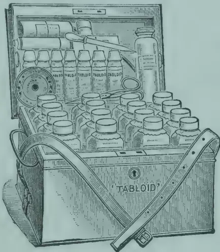
A compact yet comprehensive equipment containing medicaments, dressings, etc., which always maintain their efficiency in tropical climates.
Particularly adapted to the needs of settlers and planters. The ideal medical equipment for out-stations, works and camps.
Obtainable from all Chemists and Stores
BURROUGHS WELLCOME & CO., LONDON
AND COOK'S BUILDING, HORNBY ROAD, BOMBAY
xx 2703
All Rights ReservedPRIZE DAY, SATURDAY, SEPTEMBER 25, 1920.
The annual prize distribution of the School of Tropical Agriculture took place on Saturday afternoon at Irene Hostel, Peradeniya. The Hon'ble Mr. W. L. Kindersley, Government Agent, Central Province, presided and others accommodated with him were: Mrs. Kindersley, Dr. Paul E. Pieris, (District Judge), Mr. A. S. Long Price, Gate Mudaliyar A. E. Rajapakse, Mr. F. A. Stockdale (Principal) and Mr. St. L. H. de Zylva (Registrar).
Mr. F. A. Stockdale read the following report:—
Since the last Prize Giving, held on June 21, 1919, three courses of instruction have been completed and two others begun. In December 1919, a class of 12 Government Vernacular School Teachers, and a class of 14 Village Headmen completed courses of instruction in agriculture, nature knowledge and school garden work, in the vernacular. In March 1920, 16 students completed the full 2 years' course in English. In January 1920, a class of 13 Government Vernacular School Teachers was admitted; and in May 1920, a class of 19 students for the English course was begun. There are at present three classes in session, numbering 52 students.
OCTOBER, 1920.]239In the English course completed in March, 12 students were successful in obtaining the full certificate of the school, 2 the certificate excluding Estate Accounts, one other a partial Certificate, while one student failed. One student of the previous course came up again for re-examination in Estate Accounts and passed successfully. To this class, prizes are to-day being awarded. It began work in May 1918, 20 students being selected out of 50 applicants. The students came from seven provinces of the island. The number of the class was limited to 20 as experience had shown that a larger class was unwieldy in the field and students could not receive the individual attention required.
To this class are being awarded two gold medals and ten prizes of books, all presented to the School by prominent members of the agricultural community in the island.
Four students of the class withdrew during the course: 3 owing to continued ill-health, one owing to the death of his father.
The one year's course given in 1919 to Vernacular School Teachers was modelled on the course drawn up in 1918. It consisted of the instruction, in the vernacular, of the first year of the major course modified to suit village conditions. Teachers were selected for the course by the Director of Education who also awarded three medals—One silver and 2 bronze—for competition. All twelve teachers completed the course satisfactorily and were awarded certificates: medals and certificates were presented to them at the end of the course through the Department of Education. Two of the Teachers were selected for admission in 1920 to the Government Training College, Colombo; the other ten were re-appointed to schools with gardens. The reports of Inspectors show that these men have profited by their course at Peradeniya. While under training they diligently devoted themselves to their work and their practical work on plots was commendable.
The 1919 class of Village Headmen consisted of 12 Sinhalese and 2 Tamils and came from all nine provinces. They were selected for admission by Government Agents, and received furnished accommodation, tuition, stationery, and travelling free of charge, and a small monthly payment towards the cost of board while in residence at the school. In some cases, Government Agents made contributions towards their expenses from local funds. The course of instruction covered eight months. All 14 qualified for the certificate. Four medals were also awarded—1 silver and three bronze. Awards and certificates were presented at the end of the course through Government Agents.
In February 1920 an extended tour of the coconut and allied industries in the Western and North-Western Provinces was made by all the students, Government providing free travelling on railways. The whole school also attended the Henaratgoda Agricultural Show and Pageant in July.
Applications: Enquiries regarding the work of the school continue to be received from Ceylon and elsewhere and still average 200 a year. Applications for admission are now generally from those directly interested in land.
Employment: Ceylonese landowners continue to employ increasing numbers of passed students. A beginning has been made by the planting community to apply to the School for assistants; and letters of appreciation
240[OCTOBER, 1920.have been received in every case in which passed students have been recommended for employment. A total of 97 students have now been trained in the English classes and 57 in the vernacular courses. Of students trained at the school in the English classes, 32 are at present employed upon estates in the colony, 22 are working on land of their own, and 33 are employed in the agricultural services of Government ; 22 passed students, including five trained in the vernacular courses, are now Agricultural Instructors ; five others have been sent to India for specialized training and 6 have been selected for training as Sub-Inspectors of Plant Pests and Diseases.
Staff : Three members of the Staff have been transferred from the School on promotion : MR. W. P. A. COOKE to Jaffna, MR. G. E. JAYETILLEKE-HULUGALLE to the Experiment Station, Peradeniya, and MR. H. L. VAN BUUREN to the Research side of the Department as assistant to the Economic Botanist. MR. J. C. DRIEBERG remains in charge of the Practical work of the School including the work of Irene Estate. For the English work, the temporary assistance has been secured of two lecturers who hold the Poona diploma, viz., MESSRS. C. RAGUNATHAN and C. CANAGARETNAM.
MR. C. DRIEBERG, the Vice-Principal of the School, retired in February last.
Others who carried on work with the school are : the Assistant Manager Experiment Station, Peradeniya ; the Secretary, Board of Control, Co-operative Credit Societies ; the Field and Laboratory Assistant to the Mycologist, and MR. D. CLEMENT DE SILVA, the Accounts Clerk of New Peradeniya Estate.
The Examinations of the School have been carried out by the Senior Officers of the Department in collaboration with the School staff and to these officers the thanks of the School are due for their work.
Equipment : The purchase of Irene Estate for the School was effected in 1919 and it has since been worked by students. Additional dormitory accommodation and suitable laboratories and class-rooms have been sanctioned in the Government Budget for 1920-21. This will equip the school for better work and greatly assist the efficient training of the students.
Student Recreations : Sports consist of cricket, tennis and volley-ball at Peradeniya and football in Kandy. An effort is being made at present to add boxing to the list. A tennis tournament was successfully held in the school.
The Peradeniyan the School magazine, has issued its 4th number and a 5th is in course of preparation,
The Students' Council has met regularly and the Students' Debating Society has held several meetings.
General : The "Rajapakse" and "Salgado" gold medals are again offered by GATE MUDALIYAR A. E. RAJAPAKSE and MR. RICHARD SALGADO respectively. To these donors the School desires to convey its thanks for the very valuable support they have thus given to the cause of agricultural education. The prizes being presented to-day have been provided by the generosity of : Sir Solomon Dias Bandaranaike, the Hon. Dr. H. M. Fernando, the late Shroff C. Namasivayam, Mr. H L, De Mel, C.B.E.,
OCTOBER, 1920.]241Mr. Graham Pandittesekera, Mr. A. J. R. de Soysa, Mr. W. A. de Silva, Messrs. Wijeyesekera & Co., Ratemahatmeya C. W. Bibile and Mr. J. C. Ratwatte of Kandy. To all these gentlemen the thanks of the School are now tendered.
To the Government Agent for presiding here to-day, to MRS. KINDERSLEY for so kindly consenting to distribute the certificates and awards, and to the speakers of to day, I have, on behalf of the School, to convey our thanks. To the visitors I have to accord a hearty welcome and an invitation to inspect the plot work of the School at the close of this afternoon's proceedings.
The School is doing sound work towards the agricultural improvement of the colony. Another school is to be established in the Northern Province; while a third for the Southern Province is under contemplation. For the present our work is practical and elementary; an attempt is made to carry out this work well and an endeavour is made to equip students who will take a pleasure in agricultural work and make it the vocation of their lives. I would like to see more applications from youths who in the schools and colleges of the colony have passed the Senior Cambridge or London Matriculation examination. Applications from prospective students with these qualifications have in the past been too few. Agriculture requires that the talent of the colony should be devoted to it. The present and future welfare of the colony depends upon men trained in the sciences underlying agriculture as well as in its practical side. The crisis of the year in food supplies has directed the attention of the whole colony to its agriculture and the need for more improved and intensive methods of cultivation has been brought home to us all. For the men passing out of the School of Tropical Agriculture there is a great work to be carried out; and upon them a great responsibility is placed.
(Sgd.) F. A. STOCKDALE,
Director of Agriculture, and Principal, School of Tropical Agriculture.
Peradeniya, September 25th, 1920.
The Chairman then called upon MRS. KINDERSLEY to give away the prizes and certificates. The following is the list:—
"The Rajapakse Gold Medal," for the best all-round student of the course, presented by Gate Mudaliyar A. E. Rajapakse, awarded to Mendis Warnaratne Jayasuriya.
"The Salgado Gold Medal," for field work, presented by R. Salgado, Esq., awarded to Samuel Alexander Iddamalgodde Elapata.
For Agriculture:—
1st—"The Dias Bandaranaike Prize," presented by Sir Solomon Dias Bandaranaike, Kt., C.M.G., awarded to Ganhewage Duncan Gratiaen de Silva.
2nd—"The De Soysa Prize," presented by A. J. R. de Soysa, Esq., awarded to John Edward Seneviratne.
242[OCTOBER, 1920.For Agricultural Botany :—1st—"The Bibile Prize," presented by C. W. Bibile, Esq., R.M., awarded to Mendis Warnaratne Jayasuriya.
2nd—"The Pandittesekera Prize," presented by Graham Pandittesekera, Esq., awarded to Samuel Alexander Iddamalgodde Elapata.
For Agricultural Zoology :—1st—"The Ratwatte Prize," presented by J. C. Ratwatte, Esq., awarded to Marcus Richard Muttuvelu Jebaratnam.
2nd—"The De Silva Prize," presented by W. A. de Silva, Esq., J.P., awarded to H. Don Baron Goonesekera.
For Agricultural Chemistry :—1st—"The Fernando Prize," presented by the Hon. Dr. H. M. Fernando, M.L.C., awarded to Mendis Warnaratne Jayasuriya.
2nd—"The Namasivayam Prize," presented by the late C. Namasivayam, Esq., J.P., awarded to Marcus Richard Muttuvelu Jebaratnam.
For Agricultural Economics :—1st—"The De Mel Prize," presented by H. L. De Mel, Esq., C.B.E., awarded to Samuel Alexander Iddamalgodde Elapata.
2nd—"The Wijeyesekera Prize," presented by Messrs. Wijeyesekera & Co., awarded to John Edward Seneviratne.
CERTIFICATES.Class 1.—Samuel Alexander Iddamalgodde Elapata, Mendis Warnaratne Jayasuriya, Marcus Richard Muttuvelu Jebaratnam, John Edward Seneviratne.
Class 2.—Samuel William Coplestone Dias Bandaranayake, Ganhewage Duncan Gratiaen de Silva, H. Vincent Fonseca, H. Don Baron Goonesekera, Edmund de Silva Goonesekera Karunaratne, Cathirgamer Ambalavanar Vaitilingam.
Pass.—Francis Aloysius de Silva, D. L. Don Palitha Dharmawardena, Walter Dionysius Fernando, K. V. Marcandan Thiagarajah,
Partial Certificate.—Dionysius de Silva.
DR. PAUL E. PIERIS' SPEECH.DR. PAUL E. PIERIS, the District Judge, in addressing the gathering, said they would understand from what the Government Agent mentioned that he was only a stop gap pressed into service at the last moment. At the same time when he received word from the Director inviting him to address a few words to the students of Tropical Agriculture, he received his invitation with a great deal of pleasure. However, he asked him to address them on the question of science in agriculture. Now, that was a very different matter, for he had come to learn and not to instruct. Were he to venture to speak to them on scientific agriculture he could only repeat hackneyed sentiments and familiar tags which they would not care to listen to. All the world over to-day millions of money were being spent in order to increase the total of human knowledge and to divert it to the use of man. The lawyer, to speak of personal experience, when he desired to worry a Judge, dived into the stores of the past to obtain knowledge; the doctor would avail himself of the research and discovery of others in every quarter of the globe to add to the knowledge which he would place at the service of
OCTOBER, 1920.]243his fellowman. No one would contend that in the work of agriculture the same lines of action should not be followed, and as long as our glorious sun poured down on them with its vivifying energy, and the winds of heaven brought to them from the north-east and from the south-west the moisture in abundance, so long will our country continue to be an agricultural land. (Applause.) He could however give them an example of what could be done by scientific knowledge from his own observations. He remembered forty years ago a retired Government servant—one who had served his country long and honourably—came to Siyane Korale, a district with which he (the speaker) was familiar and purchased a hundred acres of what was almost abandoned coconut and they watched him with curiosity, as he opened drains in this direction and in that in a manner which they did not understand. He turned up the soil, he tested its quality, he bought manures with unknown names and applied them to his trees while all the villagers looked on and wondered and then gradually that waste land began to show a change. The branches of the coconut tree which hung yellow and dying, appeared to revive and grew more and more green; on the tops of the trees, beautiful flowers burst forth and soon crops crowned the once empty tops. In a few years that abandoned land became the show-place of the district. That to them was no doubt a common story. But this was what he wished to impress on them. The villagers as soon as they realised what had happened began to follow the example set to them by DR. DIAS. They, too, opened drains and conserved the rain-water. They collected coconut-husks to mulch round their trees, they stole others' cattle-manure (laughter) and the example of that one man soon made itself felt in every village-holding for miles round. In the same way he hoped that each one of them would be able to set an example to the villager, teach him that what was now regarded by him as waste matter and a nuisance was perhaps the richest fertiliser that his land was hungering for. The Director had referred in his report to the rice shortage. That shortage, he was inclined to consider, one of the greatest blessings this country has ever had. To those of them who were familiar with the country between Polgahawela and Colombo, the change that had taken place within these two years was a matter of delight. Fields which year after year had been lying neglected or being cultivated with indifference were now a stretch of golden grain and the plough immediately followed on the scythe. They would say that the lazy villager had been electrified into activity. He was not prepared to say the villager was lazy, but he did say that at last the villager had received his chance. Never again he hoped would it be said that the destiny of the villager was merely to work as the coolie of another. Never again he hoped would legislation be proposed to compel the villager to divorce himself from his land while Europe was striving to bring into existence a landed peasantry. He remembered some years back he ventured to say at a meeting in Kandy that there was not one bull or one cow too many in the Island.
His words gave rise to a howl, if not of execration at least of derision. He believed one newspaper suggested a public apology from him—presumably to the owners of motor cars. However, opinions had since changed and they were realising that the peasant and his interest were entitled to our most sympathetic attention. To-day the whole atmosphere is full of
244[OCTOBER, 1920.]political discussions. They felt he dared not speak on political matters, but this much he could say—that the time had come when they were entitled to have a larger voice in the management of affairs of our country. Every self-respecting man must do honour to a feeling of this kind. It was a proof that a hundred years of British administration had borne fruit and the desire was the highest compliment that could be paid to the success of that administration. It had made them more careful of thinking for themselves, it had given them the backbone which they appeared so sadly to lack. But what was the joy of possessing the vote in the election of one of the thirty-nine legislators if their stomach was not full? (Laughter.) What was the joy of being able to vote for the closing of arrack taverns when their children were suffering with hookworm and their wives staggering with malaria? Did they realise that from the archives which were now available to them? It was proved that three-hundred years ago, in 1608, the most fertile areas in Chilaw district only yielded eight-fold. To-day, he had it on the authority of the Government Agent, that some fields in Ceylon were yielding a hundred and twenty fold. That was a result of science in agriculture. If they, the students, would teach the villager to make his fields yield even a hundred-fold and fill his stomach with his own grain, they would help him to make him fit to possess the vote which they desired him to have and they would have contributed an important share towards the political development of the people. (Loud applause.)
MR. A. S. LONG-PRICE.
MR. A. S. LONG-PRICE, in addressing the gathering said it gave him great pleasure in accepting the kind invitation of the Director of Agriculture and to add his expression of appreciation of the good work that was being carried out by the School of Tropical Agriculture. He was present at the first meeting when this school was opened a few years ago and the progress that it had made was splendid and all of them who took an interest in the agriculture in this beautiful island did heartily appreciate the untiring efforts of the able Director and his able staff in having brought the school up to its present high state of efficiency and usefulness. (Applause.) They lived in a progressive age and to enable one to keep pace with the moving times, it was absolutely essential that one had a certain amount of scientific as well as practical knowledge of agriculture in Ceylon. This remark applied with very great force, as the welfare of the whole island depended absolutely and almost entirely on agriculture. It was such a pity this branch of work was not more supported by the people of Ceylon. Able advocates and lawyers, skilful doctors, brilliant financiers and sound business men they had by the score, but what was urgently needed was an increase in the number of brilliant agriculturists. It had always been a wonder to see why more of the many able sons of the gentlemen and peasantry of this country had not taken up this profession and to display the same ability in it that had marked their career in other directions. The people of this country owned colossal wealth in their magnificent coconut, rubber, tea and other estates. Taking coconuts as an illustration, over one million acres were under cultivation to-day and quite nine-tenths of it were in the hands of the people of Ceylon. Very few of these proprietors lived on their estates, which very often were managed by an inferior class of men. This remark might not prove a popular one in some quarters, but he knew it was only too true and he hoped the day was
OCTOBER, 1920.]245not far distant when they would see the sons of the gentlemen of this country adopting the dignified position of country squires living on their own properties, promoting their own interests and at the same time setting a fine example in the social, moral and medical welfare of those around them. If only these young men would look at this question from this aspect and not continue to crowd into already over-crowded professions it would lead to a brighter and better state of things in this country and the gradual development of the island would be far more rapid than it was at present. When one remembered that the total extent of this beautiful island was over 16,000,000 acres and that not one-fourth of it was under cultivation, one realised what enormous possibilities there were in this direction. The recent shortage of foodstuffs had brought it home to all of them the urgent necessity of developing the agricultural resources of the Island. Their Government was doing everything in its power to promote agriculture at the present moment. Railways were being built to run through hitherto untouched areas; lands were being given out at most favourable rates—from the Minneriya magnate down to the humble goiya—and he thought it safe to say, although he held no authority to say so that Government would receive sympathetically at any time, any reasonable proposal put before it which related to the development of the country. But a beginning of all this was a correct knowledge in the first instance of what was really the meaning of agriculture and it was in this school only, that this knowledge was to be gained. Before this school was in existence it was a difficult matter to obtain knowledge on this subject, but the door of opportunity had now been open to all and all who would, may enter—the only qualification being that they should come with a clean record in the past. There were many fine institutions in the island for the development of education generally, but this School of Tropical Agriculture was, he believed, the only place in the island that catered for this particular branch of education and he made a strong appeal to the parents and guardians of the present young, and future generations to think seriously of the considerable advantages to be gained by joining this honourable profession. They should return to the soil and do their share in the great endeavour to make this island as beautiful and productive as nature had intended it to be. (Loud applause.)
GATE-MUDALIYAR A. E. RAJAPAKSE was the next speaker. He said they had listened that afternoon to the great orators of the land and it was now their turn to listen to a voiceless villager from the wilds. (Laughter.) He was glad that he had the opportunity that day to offer a few words of advice to the graduated students of the Tropical School of Agriculture, who were leaving Peradeniya to their respective districts with a view of fighting their battles of life as tillers of the land. He had to congratulate them, his dear young men, for the wise step they had taken in choosing this honourable profession as a vocation. (Applause.) He thought he could give them valuable advice as he himself occupied the position they held that day 34 years ago and was now fighting his battle of life as an agriculturist since then, with some success. Theirs, as they were aware, was an agricultural country and their forefathers were tillers of the ground but now as higher
246[OCTOBER, 1920.education was available, young men of the present day thought that the agricultural profession was below their dignity and the best talents with capital in the country took up other professions and crowded them. Some of them were found in the law courts of this island as briefless lawyers living expensive and useless lives on the hard-earned wealth of their parents or on the fat dowries brought by their unfortunate wives. (Laughter and applause.) They instead of becoming useful citizens live, he was sorry to say, as parasites of the national wealth. Let them not for a moment think that agriculture as a profession did not pay. It paid more than other professions which were crowded now and those who had taken them up were not doing well. There were many who had amassed wealth as agriculturists. In this connection he would like to refer to one—a true and worthy son of the soil—who had amassed considerable wealth as an agriculturist and very wisely spent a large portion of it in ameliorating the conditions of his poorer countrymen. (A grateful people, long after his death, erected a monument in the form of a statue to perpetuate his memory. He referred to the late MR. CHAS. DE SOYSA. May his soul rest in peace! In the statue, they find him with a key in his hand. They (the students) left Peradeniya armed with keys of a different kind—scientific agricultural knowledge in the form of keys to open the mother earth and produce the wherewithal to amass wealth. (Applause.) If they used them judiciously, he did not see the reason why they should fail. Their future lives as agriculturists would be in the villages among villagers—their brother tillers of the land. They went among them as missionaries to diffuse up-to-date scientific knowledge. He hoped they would treat them well and do their best to improve their condition. If they liked to succeed in life as agriculturists they would have to work hard at the commencement, toiling night and day. They should be honest in every sense of the word in their dealings. "Be gentlemen," continued the speaker, "live simple and inexpensive lives, do not neglect your work and go miles together on an afternoon in search of friends to play cricket or tennis, for exercise. The handling of the plough and other agricultural implements will exercise you better. (Applause.) The burning question of the day is the food question. It is a well-known fact that in the olden days Ceylon had produced sufficient food for a larger population than now and a surplus for export, but now we are dependent entirely or to a great extent on India for our food supply. It is not a safe thing to do. We know how India treated us at a time of need. Some of us had to go to the feet of the Viceroy in India to beg for the suffering humanity in Ceylon. We should try our best to make Ceylon self-dependent. If every one of us make it a point to grow the food we require for ourselves and our dependents, it is not a difficult feat to achieve. It is an obligation on us to do so. I hope you will fulfil your part of the obligation. Now I wish you all success and hope you will try your best—your very best—to increase the value of a graduated student of this School of Tropical Agriculture in the matrimonial market over that of a barrister-at-law. (Loud applause.)
The Principal next proposed a hearty vote of thanks to MR. AND MRS. KINDERSLEY.
The HON. MR. KINDERSLEY acknowledged the compliment in a few words. A garden party followed the prize-giving.
OCTOBER, 1920.]247N. K. JARDINE, F.E.S.,
Inspector of Plant Pests and Diseases (Entomological).
The cultivation of the silk-worm and the manufacture of silk from the fine thread of which its cocoon is formed was practised in China for many centuries before the Christian Era. The Persians are accredited with having introduced silk and its manufacture into the West. The story is to the effect that during the reign of JUSTINIAN 550 A.D., two Persian monks brought from China into Constantinople a number of silk-worm eggs secreted in a hollow cane. They had watched the operations of silk-making in the East, and were able to superintend the first silk weaving industry in Constantinople, and so to introduce it into the West.
There are several kinds of silk worms, some wild and some domesticated. The former are valuable sources of silk in the countries in which they occur; the Shantung silk in China, a similar wild silk in Japan, the tusser and muga silks in India: these are from worms which live in an uncultivated state in forests and scrub trees. Of domestic silks there are two kinds: the well-known mulberry silk (Bombyx mori) so called because the worm is fed on the leaves of the mulberry plant; and the Eri or Castor silk of India, the worm of which is fed on the leaves of the Castor-oil plant (Ricinus communis). Both these silk-worms live entirely under control in buildings. Buildings similar to those used for the purpose in India, namely erections of bamboos and thatch would be suitable to Ceylon. A cheap building, proof against sun and rain but giving sufficient light and air is what is required. Bamboo shelves for the reception of cane trays should be erected.
Climate plays an important part in the quality of silk; temperature and humidity are the most important factors in "silk rearing;" high quality depends entirely upon these points. Both Mulberry and Eri silks thrive between temperature of 60° F. and 80° F. with moderate humidity in the air: 85° F. with sufficient humidity is not excessive, especially in the case of Eri silk. Excessive dry heat is unhealthy for the worms, and temperatures above 90° F. with excessive humidity are deleterious to the quality of the silk. With regard to cold, the worms become inactive as the temperature drops below 90° F. When the worms are spinning the temperature should not be below 70° F. Too much emphasis cannot be laid upon the question of temperature, if good quality of silk is to be the result.
Certain questions having been put to the Department of Agriculture regarding the likelihood of permits for growing the Castor-oil plant being issued to certain individuals interested in rearing Eri silk, it would appear the production of Eri silk receives more favour in Ceylon than Mulberry silk, and it may be of greater interest if these notes are restricted to the production of Eri silk.
248[OCTOBER, 1920.Eri silk-worms normally have several broods a year. With a temperature of over 70° F. probably five or six broods would follow one another.
The eggs are large; larger than those of the Mulberry silk worm; and should be kept loose until ready to hatch, when they should be spread out on a small closely-plaited cane tray. When the young worms hatch a small castor leaf should be spread over them on to which they will climb. They should be cleaned by hand, all debris and excrement being carefully brushed off the tray with as little handling of the worms, while they are young, as possible; the method of blowing the dried excrement off the tray by means of hand-bellows should not be employed as this tends to chill the worms. The food should not be chopped, but torn into moderately large pieces, and spread over the worms. As the worms develop they must necessarily be distributed to larger trays; when they are moderately large they may be picked off the leaves and out of the soiled trays and placed on clean trays and fresh food by hand. It is a great saving of labour to place fairly well developed worms in open-meshed trays, so long as the mesh is just large enough to prevent the worms falling through, for by a gentle shake of the tray now and again the greater proportion of the damp excrement will fall through the meshes and thus keep the worms, food, and tray cleaner than with a closed tray.
When the worms are full-fed and show signs of spinning they should be put into baskets containing dry leaves or shavings. Dry mango leaves are successfully used in India. After a lapse of seven to ten days the cocoons should be picked out and cleaned externally off chips, portions of leaves, shavings, etc., and placed in a tray. The moths are allowed to emerge as they do not damage the cocoon, having a natural exit from the cocoon. Soon after emerging the moths couple; the females lay their eggs on any material which may be near them, sections of dry leaves, preferably paper, should be placed round the moths on which they will lay their eggs; the egg-masses can then be conveniently collected. Neither males nor females feed, and die naturally within a few days.
It is advisable to isolate laying females in order that the egg-masses do not become mixed, for it is of great importance that the silk rearer is assured the various egg-masses are free from the Febrine disease which is transmitted into the egg. The method of detecting Febrine is very simple and is as follows:—
The female when dead is pounded up in a mortar with a little water, and a drop of the fluid placed upon a slide and examined microscopically, the presence of the corpuscle of Febrine can be easily detected and if present, the eggs from the particular female condemned at once. Should the ground-up female show no corpuscles of Febrine her eggs may be kept as they are, on the materials on which they were laid until they hatch.
OCTOBER, 1920.]249After the moth has emerged the Eri cocoon contains the chrysalis and cast off skin of the worm ; in order to get rid of this debris it is necessary to turn the cocoon inside out ; to do this by hand entails considerable patience and practice. About nine years ago MR. R. W. CORYTON of Calcutta invented for PROFESSOR LEFROY, an ingenious little machine which turned the cocoons inside out rapidly and efficiently ; this machine was sold, at that time, for about Rs. 16.00. When the cocoons have been turned and all refuse removed, they are boiled in soda for two hours to soften the fibre, and are then dried and ready for spinning.
There are two ways in which a thread of silk suitable for weaving is prepared from the silk cocoon, namely winding or reeling which is employed in Mulberry silk, and spinning which is employed in manufacturing Eri silk, for Eri silk will not reel at all. Reeling necessitates a continuous thread ; this is not found in Eri cocoons, which must necessarily be spun into fibre. The spun thread formed by twisting the varying lengths of silk is neither so strong, lustrous nor durable as the reeled fibre.
It is not essential that a producer of silk should spin his own cocoons. India has a large market for Eri cocoons ; and as a guide to the producer the following figures may be of interest :—1 ounce of seed (eggs) should give approximately 112 lb. of green cocoons, which would dry down to about 36 lb. of clean dry cocoons—the product accepted by the silk spinners. Though the following figures are not accurate to date they are interesting :—India produces 80 lb. of Eri cocoons at a cost of Rs. 40.00 of which Rs. 25.00 is utilised in labour, this includes a paid rearer at Rs. 10 to 15 per month. Where a producer rears his own worms, cocoons can be produced cheaper. At the moment these figures were ruling the price of cocoons was Rs. 75 per 80 lb. of dry cocoons.
As regards markets for an extensive production of cocoons, it is but wise to understand that though there is a steady demand for reeled silk (Mulberry), the demand for Eri cocoons fluctuates considerably, probably owing to the fact uncertain quantities are available. The greater proportion of Eri cocoons are spun in the mills of Yorkshire and on the Continent.
A few final remarks regarding the worms, the quantity of food, and space they require may not be out of place. The following table gives these details approximately for one ounce of eggs (30,000 to 35,000 eggs).
| Stage. | Days. | Food in lb. | Area in sq. ft. |
|---|---|---|---|
| 1 | 5 | 4 | 1 |
| 2 | 4 | 12 | 9 |
| 3 | 6 | 40 | 30 |
| 4 | 7 | 112 | 100 |
| 5 | 10 | 700 | 200 |
In this article it is proposed to deal briefly the points to be considered in selecting a site for an orchard.
Before proceeding to consider these points it would be advisable to have a survey of the nature of fruit culture in Ceylon at present. Although Ceylon possesses a beautiful climate as pointed out in a previous article little interest has been shown in fruit culture. The experiments made by the late MR. KELLOW near Ambewela were of interest and showed that standard European fruits could be successfully grown up-country.
There may be room to doubt the fact of absence of fruit gardens in Ceylon due to the presence of various fruits in the big markets in the country. But those who know the oriental cultivator can readily understand why this is so. He unlike the Western cultivator grows all sorts of crops in his garden or field to meet all his requirements; that in an oriental cultivator is a complete unit in himself; independent of others. It is this surplus of his requirement that gradually drains into the village markets and thence into the big markets of the cities. It is due to this persistent ancient custom that practically all the fruits that are found on the present day markets, are composed of heterogenous poor mixture, bruised and damaged which consequently fetch a poor price, while in Western markets, where everything has become a question of specialisation, with the improved facilities of transportation, one finds the articles of any kind found in the Western markets to be a good quality to attract the customers. Therefore it ought to be the duty of any man in any country to adopt himself to the changes of times in the struggle for existence and what is good for an individual holds good for a country also.
With this brief introduction it would be advisable to consider the points that are essential in the selection of a site for an orchard in general.
Climate may be taken to be the principal point for consideration as it is the one on which the failure or success of any agricultural operation depends. As a rule a tract of fairly well distributed rainfall and a temperature ranging between 50°F—95°F is the most equitable one. Fruit trees except the mango cannot stand excess of rainfall; if at all they do, a luxuriant foliage growth is the result. But fruits can be successfully cultivated in dry tracts if irrigation is easy. The analysis of fruits in the previous article page 19, July 1920, for the respective places will prove a safe guide to avoid failure.
Soil.—Fruit trees, unlike other vegetation, respond remarkably in every direction to the nature of the soil in which they are cultivated. This particular crop requires a soil, that is fairly deep, underlaid by a porous subsoil, well drained, free of carbonates and chloride, situated in a locality which is sheltered from high winds.
OCTOBER, 1920.]251For the general purpose of this article the points raised above are a sufficient guide, but reference to individual crop would be dealt with in future under each crop.
Water Supply.—The land so selected should be provided with a sufficient quantity of water as it would become necessary to water the crops in the dry season. This (water) will be a limiting factor for success of fruit culture in Hambantota in the Southern Province, in Anuradhapura in the North-Central Province and in Jaffna in the Northern Province. Here also the water as far as possible should be free of carbonates and chlorides, otherwise the necessity of repeated irrigation during hot weather will in due course turn the soil unsuitable for any cultivation as often happens in constantly irrigated tracts.
The Market.—This is another important point to be considered in selecting a site as it will much determine the financial success of a gardener. If the market is far away from the garden, the producer will have to incur a good lot of expenses in transporing the fruit to the market. This will not much affect a producer in a country where there are special facilities for such transport (special wagons in Railway). This is often a common cause for loss or failure on the part of fruit culturist in India to provide genuine good fruits in the markets free of bruised or damaged ones, while it is just the reverse in Western countries. In nine cases out of ten the fruits have to be carried in bullock carts for miles away from the garden before they reach the nearest Railway Station or Market. By the time the fruits reach the market often half is damaged on the way, the result being such fruits have to be disposed of at a low rate to the loss of the producer. A rich market also will determine the percentage of the profit of the producer because a rich customer will not hesitate to pay any price to the article as long as it suits his fancy and requirements.
Transporting.—Although reference has already been made to this point in the above lines yet I think it would not be out of place to summarise it here. Fruits and vegetables, unlike other agricultural products, require the most careful attention of the producer during transport. The points can be tabulated as follows:—
It is only when all the above points are favourable that one could take the site to be ideal. This is, however, not often possible in practice under our conditions due to the absence of Roads and Railways in many parts of the country suitable for this enterprise. With present encouragement of Government it is possible in many cases to overcome these difficulties.
C. R. 252[OCTOBER, 1920.This is a thorny tree grown in the dry tracts of India where no other crop can be grown with success. It can be successfully grown up to a height of 800 ft. where the rainfall is scanty (25-35 in.) and a temperature of 50° F to 150° F.
The Masan is found growing in abundance in many parts of Ceylon in a wild state. The fruits on them are small and of an inferior quality and at the same time badly attacked by fruit fly. Practically no attention is paid to it except for the removal of thorny branches for fencing grass lands and palmyrah gardens. Due to its thorny branches cattle, sheep or other animals will not enter through the fence.
PROFESSOR-WOODROW describes the plant as follows:—"This thorny tree has not been cultivated as much as it deserves. Its fruit is considered by the people of India very delicious and it is said that MAHOMET included it among the joys of Paradise. That it has a peculiar perfume which requires early training to enjoy, is well known but the fact does not detract from its practical value. Like other fruit trees generally raised from seed there is a great variety in size, shape and flavour of the fruit. The best are elliptical two inches in length by one inch in thickness, and are propagated by inarching or budding on seedlings of common sort. This fruit may be grown with perfection in scanty rainfall districts and is benefited by pruning in January and February. To raise the trees sow seeds and when two years old bud with the superior variety as low as practicable exactly as in budding roses."
In India there are many varieties but the one mentioned by PROFESSOR-WOODROW fetches a good price due to its delicious taste. This improved variety could be advantageously budded on to the local wild variety. It should grow well in the following tracts:—Jaffna, Chilaw, Hambantota, Mannar, Puttalam and certain parts of Eastern Province.
Plants should be planted at least 26 feet from plant to plant and row to row. No care and cultivation is required except to keep the land free of weeds and to plough the soil lightly before and after the monsoon.
The trees start fruiting in the same year, but a regular harvest can with profit be taken from the third year after budding, when one plant will produce from 82 to 150 lb. a season. This fruit may be commended for trial in the above districts and it can be grown in lands which are lying waste and which are unsuited for any other cultivation.
C. R.
Estimates for next year's pine-apple crop in Cuba are put as high as 1,500,000 crates, as the growing of pine-apples in Cuba has been extensively developed, and, with proper encouragement from transportation companies, the growth of the industry will doubtless continue. The superiority of the Cuban grown pine-apple is evidenced by the great demand manifested for them in northern markets.—AGRIC. NEWS, Vol. XIX, No. 476.
OCTOBER, 1920.]253Roup happens to be one of the most disliked and in fact dreaded diseases of the many which troubled the man who goes in for breeding poultry, and any information or advice for the purpose of assisting the poultry-breeder in the treatment and cure of this disease ought to be not only useful but most welcome. The prevention of this disease when infection is expected, as when one or more members of the flock have contracted it, as also the cure of the affected birds is a simple and easy matter when promptly handled. A small piece of copper as the size of a grain of corn dissolved in a bucket of water does duty both for disinfectant and tonic if such is found necessary. This may constitute their drinking water for a considerable length of time without any harm resulting. The user must be certain to use Copperas, which is green, and not sulphate of copper which is a blue crystal. If however the latter should be used it must never be used in anything else but the most minute doses as it is of a poisonous nature. On consideration should it be decided that a tonic is not necessary, then use a very weak solution of carbolic acid in the drinking water which will prevent it being contaminated by the roupy discharge from the head. A simple discharge from the nostrils should be the signal to consider the conditions of the flock looking first to whatever circumstances or lack of care which may have led to the attack. If better housing or feeding be necessary then supply the deficiency immediately. Give strict attention to the drinking water and disinfect it according to instructions already given, then watch for any symptoms of swelling about the head, and smell the breath to try and detect any foul odour. If any bad smell is detected remove at once to separate quarters for isolation, for all such birds are sick and require the attention necessary to invalids. If a hen groans aloud with every breath, it is simply a swelling of the larynx which yields speedily to confinement in a barrel or large box, with some shavings in the bottom to which a few teaspoonfuls of spirits of turpentine have been added, the barrel or box being loosely covered at the top. If however a swelled head and badly smelling breath indicate that an advanced stage of roup has set in, these will be found to yield to local treatment syringing the nostrils with a weak solution of carbolic acid. Let the diet for a few days be hot milk flavoured with red pepper (not too strong) administered with a spoon if it is not readily taken. Roup is identical with catarrh in human beings, with this difference, that the hen is unable to free the passages of the head from the accumulations, which speedily become an active poison in the blood. Assimilation is suspended, and digestion and other bodily function speedily cease and starvation succeeds blood poisoning. The resemblance to consumption in the human race is almost identical as are the causes leading up to it.
254[OCTOBER, 1920.It must be apparent that local cleaning together with disinfecting of the parts affected, in conjunction with a full rich diet which is easily digested must prove efficacious and constitute the only real cure for roup.—FARMERS' JOURNAL, Vol. 2, No. 32.
One of the most frequent ways in which contagious diseases are spread is through the medium of the drinking fountain. A bird which is suffering from some contagious disease—roup, for example—comes to the water-fountain to drink, and leaves behind it in the water a number of the germs of the disease from which it is suffering. The next fowl that comes to drink in all probability will carry away some of these germs, and perhaps a dozen fowls, one after another, following, the bird which is suffering from the complaint will themselves contract it in this way.
Whenever, therefore, there is the slightest reason for supposing a bird to be suffering from roup or any other contagious disease, poultry-keepers should take the elementary precaution of removing the bird supposed to be infected, and of adding something of an antiseptic nature to the water in the drinking fountain; a little strong solution of steel, or even a grain of permanganate of potassium just sufficient to lightly tinge the water, will answer very well. The former is to be preferred, because it will not only tend to destroy any germs of disease that may be in the water, but it will also act as an excellent tonic at the same time, and is particularly beneficial to chickens feathering.
Over-crowding is another common cause. The old method of keeping a large flock of poultry together, although it has been denounced a thousand times, seems to die very hard, and it is surprising that in these enlightened days, when so much practical information has been, and is being, given, daily upon the subject of poultry-keeping under hygienic conditions, there are still poultry-keepers to be found who keep all their fowls in one large flock, so that if any disease does happen to break out the chances are that the whole lot will be affected whereas if they are divided up into little colonies, each with a separate roosting place, if not with a separate run, the chances of infection spreading to the whole flock will be considerably diminished.
This method of colonisation or distribution, whichever one likes to call it, really is one of the first and most elementary principles in successful poultry-keeping. A large flock of birds should in no circumstances be kept together, because not only does over-crowding involve considerable risk of infection or contagion, but it effectively prevents the profitable results which ought to accrue, and which will accrue, from the keeping of laying poultry under proper conditions.—FARMERS' JOURNAL, Vol. 2, No. 31.
OCTOBER, 1920.]255The following resume of the history, aims, and work of the famous Rothamsted Experiment Station—probably the most famous of such stations in the world—is reproduced from a leaflet issued to the members of the Imperial Entomological Congress on their visit to Rothamsted during their recent meeting in London.
The Rothamsted Experiment Station has grown up in typically British fashion. It began in 1843 with chemical experiments in a barn, and manurial trials in two fields; important results were obtained, the fame of which gradually spread till in 1854 the farmers of England subscribed to build a proper laboratory in which more detailed chemical work might be carried out. For fifty-eight years LAWES and GILBERT worked together. LAWES bearing the whole expense of the experiments; in 1889 he founded the Lawes Agricultural Trust, and endowed it with £100,000 so that the work could continue after his death. The results of the older Rothamsted experiments revolutionized agricultural science and practice in all parts of the world. The best known achievement was the introduction of artificial fertilisers, but equally valuable work was done in connexion with the feeding of animals, the study of soil fertility, and the inter-relationships of animals and crop husbandry. From the outset, however, LAWES and GILBERT confined themselves to the discovery of the scientific principles underlying the operations of agriculture. 'The object of these investigations,' said Sir John to the farmers assembled at the opening of the old laboratory in 1855, 'is not to put money into my pocket, but to give you the knowledge by which you will be able to put money into yours.'
Science will impart to the landlord a good knowledge of the qualities of his own land, and it will enable the tenant to turn to the best account the floating capital which he has embarked in the soil. This acquisition of knowledge of the soil and the growing crop has remained the leading purpose of the Station throughout all the years of its existence.
LAWES died in 1900, and GILBERT in 1901. They were succeeded by A. D. HALL who reorganized the work and brought it into line with the current needs of agriculture. The problems had changed and new methods were required: MR. HALL saw that nothing less than a great national organization would suffice for the task. A scheme was subsequently developed which provided advice for farmers to be given by competent local advisers, and instruction for those about to farm. It was an essential part of the scheme, however, that there should be Research Stations to furnish definite information and precisely ascertained facts which teachers and advisory experts could use, otherwise their work would lose much of its value, and
256[OCTOBER, 1920.might even be dangerous. The scheme is now in operation, and two of the Research Institutes are located at Rothamsted, one for the study of soil and plant problems; the other, more recently established, for the study of plant pests and diseases.
In 1912 MR. HALL (now SIR DANIEL HALL) resigned the Directorship and became, at first, Development Commissioner, and then Permanent Secretary to the Ministry of Agriculture. He was succeeded by the present Director, DR. E. J. RUSSELL.
Considerable developments were necessary, in order that Rothamsted might fit into the new national scheme of Agricultural Education and Advisory Work. Science has made great strides since 1843, and much careful searching is needed to discover what out of all its wealth of facts and principles can aid in the development of British agriculture. This search requires a number of workers, each with a knowledge of some branch of science, and each seeking to extract something from science that will throw light on the problems of soils and of crop production. The old laboratories proved insufficient for modern requirements; during the last seven years they have therefore been replaced by the present buildings, and the permanent scientific staff has been increased from nine to twenty-six, in addition to the post-graduate research workers. In the same period the farm has been increased from 60 acres to 279 acres; it has been completely equipped and provided with adequate buildings.
New laboratories, like the old, were erected by public subscription, but with the important and significant difference that the Ministry of Agriculture, through the Development Fund, provided a substantial portion of the money. The buildings, fittings, and farm equipment and buildings have cost approximately £26,000, of which £10,000 was raised by public subscription, £10,000 was given from the Development Fund, and the remainder by private donors and in other ways. In addition, munificent gifts of rare books and of furniture for the library and the Director's room have been received.
The cost of carrying out modern research work is considerable; many of the easily ascertained facts and principles are already known; further progress is achieved only after systematic work, and much rejection of unsuitable or uncertain material. Every possible precaution has to be taken against error. All this is very costly. The expenditure on both institutes in 1918-19 was approximately £13,430, of which the Board of Agriculture provided £8,500, the Trust income was £2,731, and the remainder came from private donors and subscribers. The expenditure, however, is likely to be considerably greater in the near future, cost of salaries, wages, and materials having much increased.
The future work of Rothamsted is projected on broad lines. First and foremost is the search for new knowledge about soils, fertilizers, the growing plant, and its fungus and insect friends and foes. There is also the re-examining and re-arranging of existing knowledge, putting it into a form suitable for modern farmers, farm workers, and farm students. Further there is the study of technical problems, such, for instance, as the possibilities of reducing the present wastage of farmyard manure, the utilisation of sewage as manure, the improvement of basic slag, the best possible means of utilizing
OCTOBER, 1920.]257the new power which the tractor has placed in the hands of the farmer, and the control of harmful organisms. And, as hurried work is never good work, the problems are as far as possible attacked before they have become really urgent, so that they may be well on the way to solution when the information is needed.—AGRIC. NEWS, Vol. XIX, No. 475.
The important experimental work now being carried out at Cambridge by PROFESSOR R. C. PUNNETT, F.R.S., has a vital bearing on the development of the poultry industry. That branch of small live stock keeping is receiving the special attention and care of the Ministry through its Rural Industries Branch, and together with poultry breeding a strong effort is being made to foster rabbit breeding as well. PROFESSOR PUNNETT's experiments, although they are in some respects in their infancy, should add much to our knowledge of scientific breeding.
As far as poultry is concerned his researches point to certain modifications. It may be well, for example, to breed from coloured strains in preference to all-white, because in the all-white it is impossible to tell the sexes apart on hatching. At the same time, it is true that the all-whites are about the best utility birds at present. High laying qualities are transmitted especially by the male, and consequently where laying-strain birds are concerned, cockerels must be kept for store. The flocks of White Leghorns and White Wyandottes are beautiful to look upon in proper surroundings, but their superiority does not arise from any thing inherent in the white that makes for better laying, but because more attention has been paid to it in the way of selecting and breeding from the best laying stock. PROFESSOR PUNNETT holds that were equal attention paid to coloured strains, these might be made just as good. In that case, they would be preferable, because the surplus cockerels could be eliminated on hatching. Silver and gold crosses may be kept with advantage. For example, PROFESSOR PUNNETT recommends the brown Leghorn cock and silver grey Dorking hen, or black Leghorn cock and Plymouth Rock hen, or black Leghorn cock and Cuckoo hen, or Buttercup cock and silver Wyandotte hen. The result of crossing is curious. All the progeny of a gold cock and a silver hen reverse the colours. The cocks are silver and hens golden. Even at birth, and this is an important point, the differences can be seen. PROFESSOR PUNNETT showed this by an illustration in a recent article in this JOURNAL.* He advocates the immediate killing of the male birds, so that the trouble and expense of rearing go only to the pullets. Elsewhere he has discussed the superiority of cross-bred pullets over pure strains for general purposes of egg production. By cross-breds he does not mean mongrels, but first-cross birds from pure strains. The cross-bred is not a better egg-producer; its merit lies in its superior vigour. The losses at hatching and at all stages of life are very much smaller, and this is an important point,
*The issue for February, 1919, p. 1319.
258[OCTOBER, 1920.because one cannot expect the majority of small raisers to be highly skilled. Even if the cross-bred were a poorer layer, the ultimate advantage would lie with it, because, generally, it does so much better.
In his researches on rabbits PROFESSOR PUNNETT points to the necessity of getting rid of comparatively unproductive or valueless breeds and concentrating upon the production of fur and flesh. For the first purpose, he advises close consultation with furriers. The quality of the skin results from the presence of various types of hair, and research on Mendelian lines has not yet advanced far enough to provide a structural analysis that will make results sure. There are many qualities of fur. At present we know nothing of the inheritance of fur "quality" as opposed to "colour." "Colour" analysis is fairly complete, although there are still some points to unravel. "Quality" analysis is only beginning. Further points urgently requiring experimental research are early maturity, size of litter and time of moult. At present, PROFESSOR PUNNETT is not investigating any of these, because his plant is not big enough to permit of such experiments. These questions ought, however, to be undertaken as early as possible, so that this country may be in a position to capture its share of the trade in natural rabbit fur, which is going to develop very rapidly, owing to the world shortage of fur generally. "Blues" and "Chocolates" are the best skins on the market, and the result aimed at is an increase of size with a maintenance of quality.
It is clear from PROFESSOR PUNNETT's work that if we are to make the best of our poultry and rabbits, the old methods will suffice no longer. The cost of food and labour has risen so much in the past few years that the expenditure made upon live stock must be such as will produce a commensurate return. Utility stock costs as much to keep and to care for as the most carefully selected strain, but the return from the market is comparatively trifling. Few people realise that if they will take the trouble to study the work that is being done on their behalf by men whose interests are entirely scientific and have no association with commerce, they can learn to turn their hobbies to the best advantage. Many of our best-equipped men of science are now investigating problems of vital interest to the beginner who keeps a few head of stock in his garden, or on his allotment. Will he turn and consider what they have to teach him?—JOURN. OF MINISTRY OF AGRIC. Vol. XXVII, No. 4.
Ministry of Agriculture and Fisheries. (Leaflet No. 354.)
With the present price and short supply, it is necessary to economise considerably in the amount of sugar used for making jam. Glucose can be thoroughly recommended as a sugar substitute when used in the proportion suggested in paragraphs below, because :—
The best kind of glucose for jam-making is in syrup form and is known as Corn Syrup or Corn Sugar. Glucose chips do not yield such satisfactory results as glucose syrup, and are not recommended.
OCTOBER, 1920.]259Selecting and Preparing the Fruit.—See that the fruit to be used is in clean and sound condition. Do not use over-ripe fruit; it is better that it should be slightly under-ripe. Wash well in cold water, with the exception of soft fruits, like raspberries, strawberries, etc.; these would lose a great deal of flavour if so treated. Preparation of fruit varies somewhat according to the kind; e.g., gooseberries should be topped and tailed, currants lightly shredded from their stalks, rhubarb skinned and cut into pieces of a uniform size, and the hulls should be removed from raspberries.
Jam-making with Glucose and Sugar.—Glucose cannot be used alone as a substitute for sugar. It should only be used with sugar and then only up to the proportion of one-third of the quantity of the latter. The combined quantity of sugar and glucose should be equal to that of fruit when under-ripe fruit is used. With ripe fruit, the quantity of glucose should be slightly less.
Put the fruit into a preserving pan and add just sufficient water to break down the texture when the fruit becomes heated; ripe fruit requires less water than green fruit. Add the sugar, and stir until completely dissolved. Add the glucose (Corn Syrup) after the sugar crystals have all been dissolved. Boil rapidly, stirring briskly to prevent burning. The point at which boiling may be stopped can be ascertained by testing a little of the jam on a cold plate; if there is no sign of its becoming firm on cooling, keep on the boil until a "set" is obtained. Over-boiled jam is usually too stiff and solid, and consequently is not so appetising as when correctly boiled.
When poured into jars the jam should be covered as soon as it is cold either with waxed paper or a thin sheet of paper dipped in brandy or other spirit. The jars should then be tied down tightly with parchment paper and stored in a cool dry place.
1. Over-ripe fruit makes jam of poor consistency. It must be boiled longer and thus to a less weight. Jam made from it is therefore more expensive.
2. When using glucose, add it after the sugar has dissolved. Glucose has a tendency to burn if added too soon.
3. Do not use more than one-third glucose to the weight of sugar. Ripe fruit must not have as much glucose in proportion to sugar, i.e., use less than one-third.
4. Ripe fruit requires slightly less sugar, i.e., if using 6 lb. of very ripe fruit use 5 lb. of sugar and glucose.
5. The pan should be not more than half-full when all the ingredients are added; this allows for rapid boiling.
6. Boil quickly: do not simmer. Correct boiling will produce slightly less jam in weight than the total of fruit and sugar together put in.
7. Allow the jam to cool down thoroughly before placing covers on jars.
260[OCTOBER, 1920.From investigations in Germany into the inheritance of productivity in potatos in connection with the choice of tubers for planting (says the Scottish Journal of Agriculture), C. VON SEELHORST comes to the following conclusions:—
The size of the tubers used for planting has a decided influence on the yield of the descendants, the large tubers being usually more productive than the small ones. The productivity of the parent plants appears to be of even greater importance, however, for in the tests small tubers from productive parent plants nearly always gave more productive descendants than those of large tubers from slightly productive plants. For example, whereas the smallest tubers (average weight, 33 grams) of productive plants had descendants that yielded, on an average, 519 grams of tubers per plant, the relatively large tubers (average weight, 84 grams) of poor producing plants had descendants that produced only an average of 488 grams of tubers per plant.—AGRIC. GAZ. OF N. S. W., Vol. XXXI, Part 8.
Attention is drawn in Nature, May 13th, 1920, to a Bulletin (No. 11) published by MESSRS. SUTTON & SONS, the well-known Gardeners of Reading, dealing with seed electrification. The bulletin records results of a number of germination and field tests carried out in 1919 with seeds of carrot, swede, cabbage and mangold. The process of seed electrification, known as the Wolfryn process consists in immersing the seeds in a solution either of common salt and water, or of calcium chloride and water, through which an electric current is then passed. After this treatment the seeds are dried at a temperature of 100° F., and they are then ready for sowing. It is obvious that two processes are here involved, seed immersion and seed electrification; and the Reading experiments were designed in the first place to test the value of the Wolfryn process; and in the second place, if there is any value in it, to decide whether that is due to the immersion, to the electrification, or to the combination of both. Tests were made with untreated seeds, with seeds electrified by the Wolfryn process, with seeds soaked in a solution of sulphate of ammonia, and seeds soaked in a solution of salt and water of the same strength as that used in the Wolfryn process.
Regarding the tests as a whole, they did not show any advantage from seed electrification, the only possible exception occurring in the case of mangold seeds, which when electrified, yielded in the fields 62 per cent. more than the untreated seed. In all other cases the electrified seed gave a lower yield than the seed treated in other ways, or the increase following electrification was so small as to be negligible.—AGRIC. NEWS, Vol. XIX, No. 473.
OCTOBER, 1920.]261In all nature study the observation of the development of the young plant from the seed is always emphasized. It is however rather a difficult matter to watch this development in a normal manner. To take up the little plant at intervals to see how it is getting on, causes an unnatural growth. The Scientific American, in a recent number suggests the following simple plan. An ordinary glass jar is lined with thick paper of a somewhat light colour, the interior of the jar is then filled with damp sand or sawdust, which must be kept in a moist state. The seeds to be observed are then pushed down in between the paper and the jars. A brown-paper bag or other covering of dark material is employed to keep away the light from the outside of the jar. The moisture from the sawdust or the sand soaks freely through the paper in the jar, and the seeds thus secure all the water needful for their development. At all stages they can be freely examined through the glass without disturbing them in any way, and thus an excellent idea of the manner of growth under fairly normal conditions is obtained.—AGRIC. NEWS, Vol. XIX, No. 462.
According to information recently communicated to the Ministry from America, experiments have been conducted by the Bureau of Animal Industry and the Department of Agriculture of the United States Government with dairy cows, which indicate an important relation between milk secretions and certain mineral substances. The results suggest that feeding compounds of phosphorus and calcium have a decidedly beneficial effect on the milk flow, both in quantity and fat content.
It has also been found that a deficiency of phosphorus in the dairy rations has a detrimental effect on milk secretions of cows and on the growth of calves. This deficiency was successfully remedied, however, by the addition of sodium phosphate to the rations.—JOURN. OF MINISTRY OF AGRIC., VOL. XXVII, No. 4.
The following circular has been issued by the Hon'ble the Acting Colonial Secretary to Government Agents and it is reproduced here for general information:—
Circular No. 74.
Colonial Secretary's Office,
Colombo, August 28, 1920.
SIR,
I am directed to inform you that His Excellency the Officer Administering the Government has ordered that in future the following concessions be granted in connection with the holding of Agri-Horticultural Shows in your Province:—
| PARTICULARS | Rs. | Cts. |
|---|---|---|
| To A.—Government Grant | 28,250 | 00 |
| B.—OTHER CHARGES :— | ||
| 1. PUBLICATIONS AND PRINTING :— | ||
| (a) Tropical Agriculturist | 202 | 86 |
| (b) Govikam Sangarawa | 843 | 15 |
| (c) Year Book | 131 | 24 |
| (d) Advertisements | 2,726 | 72 |
| 2. SUPPLIES OF IMPLEMENTS, PLANTS & SEEDS :— | ||
| (a) Implements | 3 | 25 |
| (b) Plants | 612 | 70 |
| (c) Seeds | 5,635 | 74 |
| 3. AGRICULTURAL INSTRUCTION :— | ||
| (a) Experimental Gardens | 422 | 29 |
| (b) Apiculture | 118 | 26 |
| 6. MISCELLANEOUS :— | ||
| (a) Stationery & Books | 12 | 38 |
| (b) Post & Telegrams | 5 | 33 |
| (c) Bank Interest | 522 | 17 |
| (d) Incidentals | 522 | 13 |
| Subscription Foreign | 6,321 | 03 |
| do Local | 9,442 | 00 |
| SUPPLEMENTARY VOTE :— | ||
| Government New Agric. Instructors | 4,420 | 00 |
| Kalutara Food Production Committee | 510 | 00 |
| Refund—Advance Imprest | 400 | 00 |
| 61,101 | 25 | |
| To Balance from 1918 | 2,486 | 75 |
| 63,588 | 00 |
| PARTICULARS | Rs. | Cts |
|---|---|---|
| BY A.—PERSONAL EMOLUMENTS :— | ||
| do Temporary Instructors | 21,762.98 | |
| do Kalutara Food Production Committee | 3,382.50 | |
| 180.00 | ||
| 25,325 | 48 | |
| B.—OTHER CHARGES :— | ||
| 1. PUBLICATIONS & PRINTING :— | ||
| (a) Tropical Agriculturist | 7,533 | 24 |
| (b) Govikam Sangarawa | 990 | 50 |
| (c) Year Book | 1,711 | 57 |
| (d) General Printing | 481 | 56 |
| (e) Advertising | 55 | 06 |
| 2. SUPPLIES OF IMPLEMENTS, PLANTS, AND SEEDS :— | ||
| (a) Implements | 60 | 81 |
| (b) Plants | 577 | 89 |
| (c) Seeds | 5,398 | 42 |
| 42,134 | 53 |
I certify that this account has been audited under my directions and that to the best of
OCTOBER, 1920.]263| PARTICULARS | Rs. | Cts |
|---|---|---|
| BROUGHT FORWARD:— | 42,154 | 53 |
| BY OTHER CHARGES:—Contd. | ||
| 3. AGRICULTURAL INSTRUCTION:— | ||
| (a) Experimental Gardens | 1,694 | 36 |
| (b) Apiculture | 126 | 42 |
| 4. SHOWS AND EXHIBITIONS:— | ||
| Agricultural Shows | 552 | 20 |
| 5. TRAVELLING:— | ||
| (a) Secretary | 645 | 91 |
| (b) Agricultural Instructors:— | ||
| 1. K. C. Pillai | 597 | 20 |
| 2. W. Molegode | 722 | 28 |
| 3. L. A. D. Silva | 593 | 34 |
| 4. M. J. A. Karunanayake | 600 | 00 |
| 5. A. Madanayake | 623 | 60 |
| 6. J. R. Nugawela | 593 | 10 |
| 7. M. Amerasinghe | 581 | 60 |
| 8. V. Ramanathan | 271 | 64 |
| 9. P. B. Kapuwatte | 472 | 18 |
| 10. C. P. Crispeyn | 476 | 20 |
| 11. A. V. Chelvanayagam | 674 | 30 |
| TEMPORARY INSTRUCTORS:— | ||
| 12. A. B. Attygalla | 229 | 50 |
| 13. T. B. Beddewela | 214 | 10 |
| 14. V. G. Perera | 190 | 80 |
| 15. A. C. W. Jayawardene | 136 | 26 |
| 16. Walter Perera | 231 | 00 |
| 17. B. G. Buultjens | 99 | 80 |
| 18. C. W. Dangamuwa | 196 | 84 |
| 19. Geo. Madugalla | 213 | 36 |
| 20. N. Thambiah | 247 | 50 |
| 21. M. B. Wettewe | 207 | 77 |
| 22. H. C. Peris | 208 | 52 |
| 23. J. A. Rambukpota | 202 | 10 |
| 24. Geo. Seneviratne | 122 | 52 |
| 25. J. D. Nicholas | 90 | 00 |
| 26. T. Chas. de Sylva | 90 | 00 |
| 27. R. S. Pelpola | 90 | 00 |
| 28. J. C. Abeywardene | 78 | 60 |
| 29. M. B. Boange | 70 | 30 |
| 30. W. F. Seneviratne | 31 | 12 |
| 31. D. T. J. Weerasooriya | 192 | 25 |
| (c) General | 1,151 | 62 |
| 6. MISCELLANEOUS:— | ||
| (a) Stationery and Books | 775 | 80 |
| (b) Post and Telegrams | 1,851 | 70 |
| (c) Furniture | 8 | 55 |
| (d) Bank Charges and Commission | 364 | 54 |
| (e) Audit of Accounts | 300 | 00 |
| (f) Incidentals | 1,119 | 18 |
| (g) Seed Store | 380 | 24 |
| Honorarium to retiring Secretary | 2,000 | 00 |
| 62,452 | 83 | |
| Advance Imprest | 400 | 00 |
| 62,852 | 83 | |
| BY BALANCE 31st December, 1919 | 735 | 17 |
| Rs... 63,588 | 00 |
my knowledge and belief it is correct.
(Signed). F. G. MORLEY,
Auditor.
20th September, 1920.
264
[OCTOBER, 1920.
METEOROLOGICAL.
SEPTEMBER, 1920.
| Station | Temperature | Mean Humidity % | Mean amount of cloud 0 = clear. 10 = overcast |
Mean Wind Direction during month | Daily Mean Velocity Miles | Rainfall | |||
|---|---|---|---|---|---|---|---|---|---|
| Mean Daily Shade | Difference from Average | Amount Inches | No. of Rainy days | Difference from Average Inches | |||||
| Colombo Observatory | 80.8 | - 0.1 | 80 | 8.2 | SW | 145 | 2.04 | 15 | 3.52 |
| Puttalam | 82.0 | + 0.2 | 78 | 6.2 | SW | 282 | 0.07 | 2 | 0.97 |
| Mannar | 83.2 | 76 | 7.1 | SW | 205 | 0.22 | 1 | 0.86 | |
| Jaffna | 83.0 | + 0.4 | 76 | 5.0 | SSW | 372 | 2.92 | 4 | + 0.01 |
| Trincomalee | 85.4 | + 1.0 | 66 | 6.6 | WSW | 219 | 2.82 | 8 | - 1.87 |
| Batticaloa | 84.0 | + 0.6 | 70 | 5.1 | Variable | 152 | 2.21 | 7 | - 0.56 |
| Hambantota | 81.2 | + 0.1 | 76 | 5.0 | SW | 458 | 0.93 | 6 | - 1.38 |
| Galle | 79.0 | - 1.0 | 86 | 5.6 | WNW | 268 | 7.87 | 18 | + 0.36 |
| Ratnapura | 80.0 | 0 | 80 | 7.0 | 12.02 | 22 | - 3.00 | ||
| Anu-pura | 83.2 | - 0.2 | 6.9 | 0.33 | 4 | - 2.66 | |||
| Kurunegala | 80.9 | 0 | 75 | 8.4 | 3.34 | 12 | - 1.73 | ||
| Kandy | 76.1 | + 0.3 | 77 | 8.8 | 4.23 | 18 | - 1.75 | ||
| Badulla | 75.2 | + 0.4 | 72 | 6.2 | 1.24 | 5 | - 2.21 | ||
| Diyatalawa | 68.9 | - 0.5 | 72 | 6.6 | 2.29 | 17 | - 1.57 | ||
| Hakgala | 61.9 | + 0.3 | 84 | 7.5 | 4.99 | 14 | - 1.25 | ||
| N. Eliya | 60.5 | + 1.2 | 86 | 8.8 | 7.03 | 18 | - 1.25 | ||
During the greater part of the month practically the whole island had less than its average rainfall. From the 28th, however, there was heavy rain from the S. W. which brought the monthly totals nearer to normal and in a few cases, particularly in the South of the Central Province, took them beyond it. The change came too late in the month to bring the number of rainy days up to the usual figure.
The Temperature was more often in excess than in deficit but the offsets were not large. The percentage of cloudy sky was on the whole high, but of humidity low. Wind velocities were mostly above the average and the barometer gradient was from the S. W. and slightly steeper than the average. Its chief variations took the form of a smoother gradient than usual, on the 1st and 21st, both of which were followed by local rain and thunderstorms on the East side of the island, the one on the 2nd, including hail. Other variations included a steepening on the 29th and 30th, and a sharp change in direction over the north of the island on the 14th, on which day the rainfall measured at Jaffna was 1.73 inches.
A. J. RAMFORD,
Supdt., Observatory.
ANIMAL DISEASE RETURN FOR THE
MONTH END D 30th SEPTEMBER, 1920.
| Province, &c. | Disease. | No. of Cases up to date since Jan. 1st. 1920. | Fresh cases | Recoveries. | Deaths. | Bal- ance Ill. | No. Shot. |
|---|---|---|---|---|---|---|---|
| Western | Rinderpest | 1355 | 16 | 360 | 955 | — | 40 |
| Foot-and-mouth disease | 421 | — | 418 | 3 | — | — | |
| Colombo Municipality | Anthrax | 507 | — | — | — | — | — |
| Rinderpest | 136 | — | — | — | — | — | |
| Foot-and-mouth disease | 2 | — | — | — | — | — | |
| Cattle Quarantine Station | Rabies | 20 | 3 | — | — | — | — |
| Rinderpest | 65 | 6 | — | — | — | — | |
| Foot-and-mouth disease | 168 | 18 | — | — | — | — | |
| Central | Anthrax | 2 | — | 1 | 1 | — | — |
| Rinderpest | 283 | 8 | 274 | 1 | 8 | — | |
| Foot-and-mouth disease | 3 | — | — | 3 | — | — | |
| Southern | Haemorrhagic Septicæmia | 12 | — | 9 | 3 | — | — |
| Rinderpest | Free | — | — | — | — | — | |
| Northern | Foot-and-mouth dis- [ease] | Free | — | — | — | — | — |
| Anthrax | Free | — | — | — | — | — | |
| Eastern | Foot-and-mouth dis- [ease] | 2 | — | — | 2 | — | — |
| Anthrax | 24 | — | 8 | 16 | — | — | |
| North-Western | Rinderpest | 893 | — | 260 | 566 | — | 67 |
| Foot-and-mouth disease | 41 | — | 41 | — | — | — | |
| North-Central | Anthrax | — | — | — | — | — | — |
| Rinderpest | 27 | — | 27 | — | — | — | |
| Uva | Foot-and-mouth disease | — | — | — | — | — | — |
| Anthrax | 12 | — | — | 12 | — | — | |
| Sabaragamuwa | Rinderpest | 38 | — | 38 | — | — | — |
| Foot-and-mouth disease | 4 | — | — | 3 | — | 1 | |
| Anthrax | 299 | — | 298 | 1 | — | — | |
| Haemorrhagic Septicæmia | 16 | — | — | 16 | — | — |
Colombo, 8th October, 1920. E. T. HOOLE, Acting G.V.S.
THE
TROPICAL AGRICULTURIST:
JOURNAL OF THE
CEYLON AGRICULTURAL SOCIETY.
VOL. LV.
PERADENIYA, NOVEMBER, 1920.
No. 5.
ENTOMOLOGICAL PROBLEMS.
This present number contains a number of reports and articles relating to entomological problems in general and to certain insect pests of the crops of the colony in particular.
The report submitted to Government on the proceedings of the Imperial Entomological Conference held in London in June last is reproduced for general information. The conference was a great success and afforded an opportunity to entomologists throughout the Empire to discuss their various problems and the measures they were taking to meet the menace of insect pests. Important questions of policy were discussed and a series of resolutions adopted. It has been decided that the Imperial Bureau of Entomology should be provided for on a permanent basis and that conferences of entomologists shall be held in London every five years.
For Ceylon, it was obvious that a complete revision of the Plant Pests Ordinances is necessary and additions to the Plant Pest and Disease Inspecting force desirable. These questions are now in hand and should assume definite shape within the next few months. A Central authority is necessary and local authorities should take action upon reports from trained inspecting officers.
A brief summary of two insect pests of tea, viz., Shot-hole Borer and Tea Tortrix was presented to the Conference. This paper is reproduced in the present number of the TROPICAL
266[NOVEMBER, 1920.AGRICULTURIST and gives information of the investigations carried out up to 1920. Since this was written other information regarding the Shot-hole Borer pest has been secured and trials with lime against tea tortrix have been arranged for.
The Progress Report of the Assistant Entomologist in charge of Shot-hole Borer investigations should be of interest to all cultivators of tea. This pest is gradually spreading. It is feared that it will become more common now that cultivation and manuring programmes upon tea estates have to be curtailed. The control of this pest is a difficult problem, and will take time to work out. A series of manurial experiments and of applications of various salts to the soil has now been commenced in the hope that information will be gained of the effect, if any, of these applications to the incidence of Shot-hole Borer in tea.
The leaflet of the Department of Agriculture upon the Paddy Fly is reproduced. This leaflet has been written in very simple language, and has been reproduced in the vernaculars in considerable numbers for wide distribution throughout the colony.
There is evidence that this pest of the principal food crop of this Island causes considerable annual losses. Practically no steps are taken to control its propagation. The cultivator of paddy has learnt by experience the seasons when paddy fly is most serious and has likewise learnt how, in normal seasons, to so regulate his sowings as to avoid maximum damage. In abnormal seasons his efforts do not meet with success, and total destruction of crops are not uncommon.
This system of regulating sowings so as to avoid the "fly-season" is excellent, but the pest is allowed to "carry on" uncontrolled. No effort is made to reduce the numbers of the pest. It increases and multiplies and ever remains a menace when the slightest miscalculation of sowing dates or maturity of the paddy crops takes place and when seasons are not strictly normal.
An effort must be made to reduce the numbers of paddy fly in the colony. If this is done increased returns will be secured. It is a question of education and progress will be slow. With the help and assistance of all, there is no reason however why progress should not be secured, and the returns of the paddy cultivator increased.
NOVEMBER, 1920.]267Held in London from June 1st—11th, 1920.
By Colonial Office letter No. 70,552/1919 of February 17th, 1920, I was deputed to represent the Colony of Ceylon at the Imperial Entomological Conference held in London, and I have the honour to submit the following brief report of its Proceedings for the information of Government.
2. The Conference was attended by the Honorary Committee of Management of the Imperial Bureau of Entomology, the Director and Assistant Director of the Bureau and by twenty official delegates representing various Dominions, Colonies and Protectorates of the Empire.
3. The Agenda for the Conference was as follows :—
Tuesday, 1st June, 1920.
11 a.m.—Reception of Delegates by VISCOUNT HARCOURT.
Business Meeting : "The Work and Finances of the Imperial Bureau of Entomology."
5 p.m.—Meeting of the Zoological Society of London in Regent's Park.
Wednesday, 2nd June, 1920.
11 a.m.—Discussion : "Legislation in regard to Plant Pests in the British Empire"; MR. C. P. LOUNSBURY, MR. F. A. STOCKDALE.
3 p.m.—Papers : "Cotton Pests"; MR. H. A. BALLOU. "Organisation of Entomological Work in the Anglo-Egyptian Soudan"; MR. H. H. KING.
6 p.m.—Meeting of the Entomological Society of London, 11, Chandos Street, Cavendish Square.
Thursday, 3rd June, 1920.
11 a.m.—Discussion : "The Education of Economic Entomologists."
PROF. H. MAXWELL LEFROY, PROF. S. J. HICKSON, F.R.S.
3.30 p.m.—Staff conversazione at the Natural History Museum, South Kensington.
5 p.m.—Meeting of the Linnean Society, Burlington House.
Friday, 4th June, 1920.
Visit to Rothamsted Experiment Station, Harpenden, Herts, in conjunction with a meeting of the Association of Economic Biologists.
Train leaves St. Pancras Station at 10 a.m.
Saturday, 5th June, 1920.
11 a.m.—Discussion : "The Tsetse-Fly Problem," MR. R. W. JACK, MR. LL. LLOYD.
268[NOVEMBER, 1920.Monday, 7th June 1920.11 a.m.—Discussion : "Resistance of Plants to Insect Attacks;"
MR. H. A. BALLOU.
3 p.m.—Papers : "Insect Pests of British Guiana," MR. G. E. BODKIN.
"Insect Pests of Trinidad," MR. F. W. URICH.
"Review of the Conditions in the West Indies in regard to Agriculture and Crop Pests," MR. H. A. BALLOU.
Visit to Oxford. Train leaves Paddington Station at 9-45 a.m.
Wednesday, 9th June, 1920.11 a.m.—Discussion : "Artificial versus Natural Methods of Control of Insect Pests," MR. F. W. URICH.
3 p.m.—Papers : "Insects in relation to Afforestation," DR. R. S. MACDOUGALL,
"Insect Pests of Tea in Ceylon," MR. F. A. STOCKDALE.
Visit to Cambridge. Train leaves Liverpool Station at 10-5 a.m.
Friday, 11th June, 1920.11 a.m.—General Meeting of Honorary Committee of Management of the Bureau to receive reports of Sub-Committees appointed during the Conference and to frame final resolutions.
3 p.m.—Final Meeting of Conference for consideration of Resolutions.
7-30 p.m.—Official Dinner to the Delegates.
N.B.—The business meetings on the 1st and 11th June will be attended only by the Managing Committee of the Bureau and the Official Delegates to the Conference.
4. The Conference was opened by an address of welcome by VISCOUNT HARCOURT, Chairman of the Committee of Management of the Imperial Bureau. The causes which led to the formation of the Bureau and the work that it was accomplishing were briefly alluded to and stress laid upon the importance of Entomological studies—especially in the Tropics. The Report on the work of the Bureau since its inauguration in 1913 was next considered under its main headings :—Publications, Identification of Insects. Distribution of named collections, Catalogue of Plant Pests, Stegomyia Survey, Carnegie Studentships and Finance. The question of publications and finance received the closest attention, while the completion of a Plant Pest Catalogue within reasonable time was urged by the delegates from the Federated Malay States and Ceylon. The appointment of a special officer as Coccidologist to the Bureau Staff was urged by the delegates from India. As the outcome of these general discussions a special Finance Sub-Committee was appointed. This Committee consisted of SIR SIDNEY HARMER, Director, Natural History Museum (Chairman); LT.-COL. SIR DAVID PRAIN, Director Royal Botanic Gardens, Kew; MESSRS. C. F. C. BEESON (India), C. P. LOUNSBURY (South Africa), R. D. WATT (Australia), R. J. TILLYARD (New Zealand), F. A. STOCKDALE (Ceylon), the Director and Assistant Director of the Imperial Bureau of Entomology, with Mr. A. C. C. PARKINSON (Colonial Office) as Secretary. This Committee subsequently
NOVEMBER, 1920.]269met on three occasions, considered in detail the whole question of the finances and work of the Bureau. It was decided that an increase of Staff was necessary, even if the scope of the work of the Bureau was not enlarged and that increases to the substantive salaries would be required. It was also felt that contributions to the funds of the Bureau might also be invited from North and South Rhodesia and from British North Borneo. The delegates from India and South Africa were deputed to consider in detail with the Director of the Bureau the Plant Pest Catalogue and to report at a later stage. It was decided that payment to Specialists for identification work should be made on a more extended scale than at present.
5. The Committee drafted a series of Resolutions which were unanimously adopted at the Final Meeting of the Conference. These were as follows :—
Resolution 1. "In the opinion of this Conference it is most desirable that similar Conferences should be held in London once in five years."
The value of the Conference was recognised by all. The papers and discussions were of interest and importance, while the value derived from personal discussions amongst the delegates was inestimable.
Resolution 2. "This Conference would view with dismay the possibility that the Imperial Bureau of Entomology should, through lack of funds, cease or in any way curtail its present work, and recommends most strongly that steps be taken to establish the Bureau on a permanent basis."
All were agreed on the importance of the work accomplished by the Bureau during the past seven years; and of the necessity of placing it upon a permanent basis.
Resolution 3. "In order to place the Bureau on a sound financial basis, this Conference recommends that all the contributing Governments should be urged to guarantee their contributions, subject to the proviso that any Government be at liberty to raise through its representative at quinquennial Conferences the question of modifying the amount."
Resolution 4. "This Conference recognising that the funds now contributed for the upkeep of the Bureau are quite inadequate, recommends that the annual contributions should be increased so as to provide a total income of not less than £13,000 per annum in order to allow for the necessary staff to carry on work on existing lines."
The annexed statement shows the present contributions towards the cost of the Imperial Bureau of Entomology and the suggested recommendations for the future. These suggested contributions are subject to the consideration and concurrence of the Secretary of State for the Colonies and to votes by the Legislatures of the various Dominions, Colonies and Protectorates. The original contributions were based upon a memorandum drawn up in the Colonial Office and circulated throughout the Empire for consideration.
In framing the new estimates, consideration was given to the amount of work the Bureau was doing for the different units of the Empire, the relative importance of such work and the assured ability of the Dominion, Colony or Protectorate of meeting these claims for financial assistance to the Bureau. The importance and value of the work of the Bureau
270[NOVEMBER, 1920]cannot be disputed and its work cannot be continued unless its finances are placed on a basis commensurate with the monetary values prevailing as a consequence of the war. If the work of the Bureau is to continue to be effective a sum of £13,000 per annum is required. The estimates are as follows :—
Statement showing Present Contributions to the Imperial Bureau of Entomology and Suggested Contributions to Secure the Total Income Recommended by the Committee.
| Present Contribution. |
Suggested Contribution. |
|
|---|---|---|
| Imperial Government ... | £500 | £1,000 |
| Canada ... | 500 | 1,000 |
| India ... | 500 | 1,000 |
| South Africa ... | 350 | 700 |
| Australian Commonwealth ... | 200 | 400 |
| Six Australian States ... | 300 | 600 |
| New Zealand ... | 200 | 500 |
| Nigeria ... | 500 | 1,000 |
| Gold Coast ... | 350 | 700 |
| Uganda ... | 150 | 300 |
| Sierra Leone ... | 100 | 200 |
| Nyasaland ... | 100 | 250 |
| Zanzibar ... | 100 | 500 |
| West Indies ... | 250 | 500 |
| Cyprus ... | 100 | 200 |
| Ceylon ... | 100 | 500 |
| Federated Malay States ... | 100 | 750 |
| Egypt ... | 50 | 300 |
| Sudan ... | 50 | 300 |
| Gambia ... | 50 | 100 |
| Straits ... | 50 | 200 |
| Hong Kong ... | 50 | 300 |
| Mauritius ... | 50 | 200 |
| Fiji ... | 50 | 200 |
| Seychelles ... | 25 | 100 |
| Malta ... | 20 | 50 |
| Newfoundland ... | 25 | 100 |
| East Africa Protectorate ... | (250) | 300 |
| Northern Rhodesia ... | — | 200 |
| Southern Rhodesia ... | — | 200 |
| British North Borneo ... | — | 100 |
| Tanganyika ... | — | 250 |
£4,820 |
£13,000 |
N.B.—Suggested contributions are subject to the consideration and concurrence of the Secretary of State for the Colonies.
NOVEMBER, 1920.]271| Estimate on Present Basis. | Estimate on New Basis. | ||||
|---|---|---|---|---|---|
| Salaries | ... | £4,317 | (Mean Figure) | ... | £9,300 |
| Provident Fund | ... | — | do | ... | 300 |
| Review of applied Entomology | ... | 700 | ... | ... | 700 |
| Bulletin of Entomological Research | ... | 450 | ... | ... | 450 |
| Publication office (Rent, etc.) | ... | 230 | ... | ... | 500 |
| Library | ... | 120 | ... | ... | 150 |
| Translations | ... | 70 | ... | ... | 70 |
| Identifications | ... | — | ... | ... | 100 |
| General expenses | ... | 150 | General expenses and Reserve | ... | 1,430 |
| £6,037 | £13,000 | ||||
The details of the recommendations for Personal Emoluments are shown below :—
| Minimum. | Maximum. | Mean. | |
|---|---|---|---|
| 1 Director | ... £1,165 | £1,544 | £1,354 |
| 1 Asst. Director | ... 964 | 1,254 | 1,109 |
| 2 Senior Assistants | ... 1,348 | 1,928 | 1,638 |
| 3 Junior Assistants | ... 1,587 | 2,022 | 1,803 |
| 1 Senior Abstractor | ... 456 | 601 | 529 |
| 2 Lady Abstractors | ... 608 | 912 | 768 |
| 2 Junior Clerks | ... 512 | 768 | 640 |
| 1 Despatch Clerk | ... 184 | 256 | 224 |
| 1 Indexer | ... 184 | 256 | 224 |
| 1 Library Assistant | ... 184 | 256 | 224 |
| 1 Preparator | ... 184 | 256 | 224 |
| 2 Slorthand Typists | ... 276 | 498 | 368 |
| 1 Office Boy | ... 90 | 150 | 120 |
| £7,742 | £10,651 | £9,225 |
The salaries recommended are comparable with salaries recently adopted for officers of the Ministry of Agriculture and Fisheries and conform with appropriate grades in the Home Civil Service. It will be noted that a considerable increase of funds is necessary to meet Personal Emoluments. This is occasioned by the desire of the delegates to the Conference to have the Bureau placed upon a permanent basis and by the necessary increases to salaries consequent upon increased cost of living and increased income tax charges in the United Kingdom.
Resolution 5.—"This Conference accepts the recommendation of the Special Committee that the Secretary of State for the Colonies be requested to establish a Provident Fund for the staff of the Bureau in lieu of pension rights."
The suggestions for the Provident Fund in lieu of pensions are given below :—
1. A Provident Fund to be formed as from the 1st April 1921, the working of the fund to be entrusted to the Crown Agents for the Colonies.
2. All permanent members of the Staff of the Bureau to contribute to the Fund compulsory deposits at the rate of 5% of substantive salary per mensem, so long as they hold their appointments.
272[NOVEMBER, 1920.3. Voluntary deposits to be permissible, in addition to compulsory deposits, subject to a limit of £50 per annum and to a total of £500 exclusive of interest.
4. The Bureau to credit each depositor's account on the 30th of September and the 31st of March in each year with a bonus equal to the compulsory deposits made on his behalf during the half-year ended on those dates.
5. Interest to be payable on compulsory and voluntary deposits and on bonuses.
6. The Bureau to guarantee the rate of interest which will be declared by the Secretary of State at the beginning of each financial year for that year: The deposits and bonuses being invested in securities approved by the Secretary of State.
7. A special gratuity to be given to permanent members of the Staff of the Bureau on retirement in respect of their service prior to the introduction of the Provident Fund.
It is probable that a scheme similar to that adopted by the various Home Universities may be adopted.
Resolution 6. This Conference agrees that full power should be left to the Director and Managing Committee of the Bureau to exercise their discretion as to the General scope and contents of the Publications of the Bureau and the Expenditure involved thereby.
This resolution was the outcome of the general discussion on the publications of the Bureau raised by the delegates from India. Certain slight changes and modifications may be necessary but the consensus of opinion was that the publications were meeting the general requirements of Entomologists working in the various units of the Empire.
Resolution 7. "This Conference agrees that the appointment of a Coccidologist to the Staff of the Bureau is unnecessary but considers that the Director should encourage members of his staff to pay special attention to particular groups, especially to those for the identification of which no specialist is available."
6. This discussion was opened by the delegates from South Africa and Ceylon. The abstract prepared by the Bureau on the Legislation in force in the British Dominions, Colonies and Protectorates dealing with Plant Pests and Diseases was considered and it was felt that delegates should undertake to have those sections relating to the country or countries they represented brought up to date. MR. LOUNSBURY then detailed the working of Legislation in South Africa. He urged the necessity of prohibiting the import of certain plants either in general or from specified countries and the proper working of fumigatoriums by trained Agricultural Entomologists. He alluded to the possibility of establishing quarantine stations, the desirability of limiting import certificates as far as possible and of having an adequate number of trained men to administer the Plant Pest and Disease Laws. I followed with a general description of the position in Ceylon. I urged for the interchange of lists of Pests between Entomologists for the guidance of Fumigating and Inspecting Officers, the necessity for placing the administration
NOVEMBER, 1920.]273of Plant Pest Laws under men trained in Entomology and Mycology and gave instances, which had come within my experience, of the futility of many import certificates. Details were also given of the quarantine of sugar-cane imports in British Guiana and Mauritius. Information was invited on the relationship between the Central and Local authorities in the administration of Plant Pest and Disease Laws and of the working of Inspecting Field Officers. DR HOWARD, Director Bureau of Entomology, United States of America, and the delegates from New Zealand, Australia, West Indies and Egypt took part in the discussion. PROF. LEFROY urged the consideration of the findings of the Phytopathological Conference held at Rome in 1913. A sub-committee was appointed and their findings were embodied in resolutions 8 and 9* passed by the Conference.
Resolution 8. "This Conference considers that the provision of an adequate number of trained men to carry into effect existing plant import legislation is of more immediate importance than the revision or extension of such legislation."
Resolution 9. "This Conference accepts the report of the Sub-Committee on the Convention prepared at the International Conference on Phytopathology held at Rome in March 1914."
The Rome Convention Sub-Committee consisted of MR. H. A. BALLOU, MR. J. C. F. FRYER, MR. H. H. KING, PROFESSOR H. M. LEFROY, MR. C. P. LOUNSBURY, DR. R. J. TILLYARD and PROFESSOR R. D. WATT.
This report was as follows :—
Meeting: Thursday, 3rd June, at 10 a.m.
MR. C. P. LOUNSBURY (Elected Chairman).
The text of the Rome Convention (French version) was examined clause by clause.
Meeting: Wednesday, 9th June, at 5 p.m.
PROFESSOR H. M. LEFROY and DR. H. J. TILLYARD were absent.
The Sub-Committee report that in their opinion the present Rome Convention does not provide adequate protection to the British Dominions and Dependencies and are further of the opinion that it is impracticable to frame any such convention to which all countries may be expected to subscribe and which at the same time would have material value.
7. As the outcome of this discussion it is obvious that for Ceylon the policy of providing an adequate Plant Pest and Disease Inspecting force should be brought about with as little delay as possible and that a complete revision of the Plant Pests Laws is necessary. In the administration of the Plant Pests Laws, it was felt by all delegates to the Conference that a Central authority is necessary and that Local authorities should take action on reports from trained inspecting officers. This is the policy pursued in the United Kingdom, with satisfactory results. I therefore propose, with the concurrence of Government, to increase the trained Inspecting Staff for Pests and Diseases and to undertake a revision of the present Legislation.
274[NOVEMBER, 1920.TECHNICAL DISCUSSIONS.8. A paper dealing with cotton pests in the West Indies was presented by MR. BALLOU. The good results which have been obtained in the Island of St. Vincent in the control of Cotton Stainer was emphasized and importance was laid upon the necessity of the Mycologists and Entomologists working in the closest co-operation when considering plant pests or diseases of agricultural crops. A brief review of the recent work done by Entomologists in Ceylon in connection with Shot-hole borer and Tortrix pests of tea was presented by myself, and in the discussion which followed MESSRS. GREEN and SPEYER took part.
9. The principal insect pests of British Guiana, Trinidad and the Lesser West Indies were dealt with by MESSRS. BODKIN, URICH and BALLOU. The control of locusts in British Guiana and Trinidad, Castnia pest of sugar-cane in British Guiana, pests of the coconut in Trinidad and British Guiana and of cacao and sugar-cane in Trinidad and the Lesser West Indies were alluded to: The importance of proper cultivation and of sufficient drainage was urged. Pests and diseases frequently cause much increased damage in cultivations which are suffering from improper or insufficient cultivation and their effects can be minimised by attention to agricultural operations.
10. The "Resistance of Plants to Insect Attacks" gave rise to a general discussion in which allusion was made to thrips of cacao and to the recent work in the Mosquito Blight of Tea in India. I offered remarks under this subject in reference to Shot-hole borer of Tea and thrips of cacao in Ceylon and aphid of sugar-cane in Mauritius. The agricultural aspect received consideration by several delegates, it being emphasized that properly cultivated and drained cultivations in many instances successfully withstood attacks of insect pests while adjoining badly cultivated areas are severely attacked. The control of the spread of the cactus pest by means of insect pests was brought up by PROF. WATT (Australia) and the resistance of different species of opuntia discussed.
11. In the discussion on "Artificial versus Natural Method of Control of Insect Pests" particular reference was made to tropical cultivations. The results of spraying of cacao in Trinidad were dealt with, as also the artificial spread of the green muscardine fungus in the control of the Froghopper pest of sugar-cane. The work carried out in Mauritius in the control of the Phylalus pest of sugar-cane by means of its parasite Tiphia parallela was reported, as also recent work in connection with the control of Oryctes tarandanus. The results have been most striking and indicate that control of an imported pest by means of its parasitic enemies is easily possible.
12. The paper on "Insects in Relation to Afforestation" dealt with conditions in the United Kingdom—particular attention being given to the Forestry work being carried out in Scotland.
13. The Tsetse Fly problem in South Africa was the subject of a general discussion.
14. The Education of Economic Entomologists was dealt with by PROFS. LEFROY and THEOBALD. It was generally felt that Economic Entomologists required a broad scientific training before they began to specialize in Entomology. Emphasis was made by several speakers on the desirability of a good knowledge of agricultural practices. There can be little doubt that any specialist dealing with crop pests and diseases should be possessed of a sound agricultural knowledge if the best results are to be hoped for and it gave one pleasure to see that this matter received consideration at this Conference.
NOVEMBER, 1920.]27515. Meetings of the Entomological, Zoological and Linnean Societies were attended by delegates to the Conference and a special Conversazione was held at the Natural History Museum. At these meetings general discussion on various matters of technical interest were dealt with.
16. The Excursions to Rothamsted Experiment Station and Oxford and Cambridge Universities gave delegates the opportunity of meeting workers in various branches of Agricultural, Zoological and Botanical services. I personally was glad of an opportunity of seeing the new laboratories at Rothamsted and of discussing the proposals for the recently constituted Phytopathological Research Department. At Oxford, the Zoological Department of the University was visited; while at Cambridge I was interested in the arrangements now made for the teaching of applied Entomology. The teaching collections of insects were well arranged and labelled and I hope that it may be possible for the Government of Ceylon to provide funds for similar teaching collections of insects to be made in Ceylon. Such collections would be of considerable value for loan to Planters' Associations, to the various Agricultural and Public Schools, and will be required when the higher teaching of Agricultural Science is undertaken in the Colony. The Agricultural and Botanical Departments and the University Experimental Farm were revisited and various notes made on subjects of importance to Ceylon. The establishment of a Lectureship in Tropical Agriculture at Cambridge University and the appointment for five years of DR. C. A. BARBER, C.I.E., (recently retired Sugar-cane Expert to the Government of India) is of interest and importance.
17. The concluding meeting of the Conference was briefly addressed by VISCOUNT HARCOURT and Resolution 10 was unanimously adopted as follows:—
“The Delegates to this Conference desire to express their sincere thanks to the Chairman, VISCOUNT HARCOURT, the Honorary Committee of Management, the Director and Assistant Director of the Imperial Bureau, for the excellent programme drawn up and carried out by them, and also to PROF. POULTON and DR. DIXEY, of Oxford University, SIR ARTHUR SHIPLEY and DR. HUGH SCOTT, of Cambridge University, DR. RUSSELL and DR. IMMS of the Rothamsted Experimental Station, for the enjoyable and instructive visits arranged by them.
At the official dinner, tribute was paid by VISCOUNT HARCOURT to the work of Entomologists in various parts of the Empire and to the value of the Conference then being concluded. VISCOUNT MILNER (Secretary of State for the Colonies) in an inspiring speech made reference to the work of scientific workers throughout the Empire and to the necessity for greater attention to transport and to scientific research if the economic development of the Empire was to be furthered. He alluded to work which had been accomplished in the past and stated that he felt that additional workers were necessary and that their position in the services of the different colonies required to be improved.
Sgd. F. A. STOCKDALE,
Director of Agriculture.
July 12th, 1920.
ss. “Leicestershire.”
276[NOVEMBER, 1920.](Paper presented by F. A. STOCKDALE, M.A., F.L.S., Director of Agriculture and Registrar of Co-operative Credit Societies, Ceylon, before the Imperial Conference of Entomologists held in London, June, 1920.)
The two insect pests of tea in Ceylon which have received close attention during the past few years by the Entomologists of the Department of Agriculture have been the Shot-hole borer (Xyleborus fornicatus) and the Tea Tortrix (Homona Coffearia).
Xyleborus fornicatus was described by EICHOFF in 1868 from a specimen from Ceylon, but its host plant was not recorded. In 1892 its presence in tea on Craighead Estate, Nawalapitiya, was known and the investigation of its life history was undertaken during the next few years by MR. E. E. GREEN, then Entomologist to the Government of Ceylon. From 1900, records of its occurrence in various planting districts were made. Its spread has been gradual until, at the present time, it is estimated to be present in varying degrees of intensity in ths of the total acreage under tea in the colony. Its spread throughout the newly-opened Ratnapura and Balangoda districts has been marked during the past few years, for it is estimated that since 1914 the borer has increased over an area of over 5,000 acres.
With the formation of the Department of Agriculture in Ceylon in 1912, the planting community drew the attention of Government to the necessity for further investigation of the pest. It was becoming obvious that upon certain estates, tea bushes were deteriorating as the result of continued attacks from the pest and yields were commencing to fall. MR. E. R. SPEYER was appointed Entomologist for these special investigations and carried out researches from 1914-19. Work on the pest has subsequently been conducted by MR. F. P. JEPSON. The summary presented in the paper read is based upon the observations of these Entomologists.
Spread of Pest.—As information becomes more detailed there is evidence that the pest is wide spread. In recent years, this spread of the pest has occurred by its being blown by the wind and through the transport of infected stumps for planting purposes. It is also common in the castor plant which is scattered throughout the colony. Legislative steps have been taken to eradicate castor plants from the tea-growing area and to control the transport of tea-stumps by means of permits. From the beginning of 1920 tea stumps for planting purposes are allowed to be removed only from nurseries situate in non-infested areas under permit and no permits will be granted for any removal from infested areas except for scientific investigation by the Department of Agriculture. Investigations are also being continued with a view to ascertaining whether the castor plant can be used, under certain conditions, as a trap crop, and whether there are any real physiological differences between the races of the pest inhabiting the castor plant and those infecting tea. Within the past few months, a report has been received that experimental plantations of castor in the low-country, miles from tea cultivation, have become infected with the shot-hole borer. This points to the existence of indigenous host plants in the jungle which are at present unknown. An examination of tea estates and gardens has been commenced by a section of the Plant Pest Inspection branch under the supervision of MR. JARDINE. Detailed information regarding the actual occurrence of the pest will therefore shortly be available.
NOVEMBER, 1920.]277Treatment of Nursery Plants.—The removal of nursery plants has been regulated since 1918. The attack in young plants is seldom severe as the pest rarely occurs until the plants have grown to some thickness. If plants are removed before they are 18 months old and stumped to 6 inches before planting out the danger of spread of the pest by means of stumps is minimized.
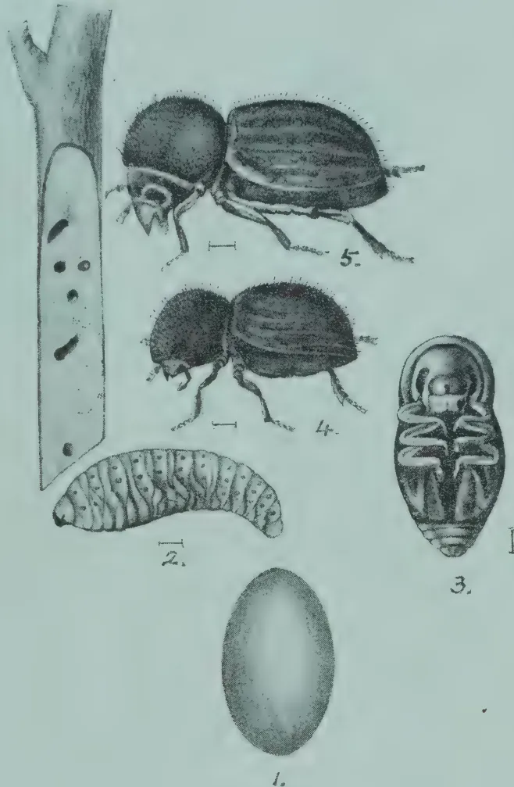
The illustration depicts the life cycle of the Shot-Hole Borer. On the left, a vertical section of a tree trunk shows a gallery with several dark, circular holes. To the right of the trunk are five numbered figures: 1. An oval egg; 2. A segmented, C-shaped larva; 3. A female pupa with visible developing wings; 4. An adult male beetle with a dark, rounded body and segmented antennae; 5. An adult female beetle, similar in appearance to the male but with a slightly different body shape. Each figure has a small horizontal scale bar below it.Stages in the Development of Shot-Hole Borer. (After Wall and Mann.)
1, Egg . 2, Larva , 3, Female Pupa . 4, Adult Male , 5, Adult Female .
Life History and Damage.—The life history of the pest has been carefully worked out, although there are some details which still require further investigation. The total life-cycle from the entrance of the female into the tea stem to the emergence of the following generation occupies 8-9 weeks, or longer at the higher elevations. At no period of its existence does the beetle feed upon any part of the tea plant. The female beetle bores into living wood that is over 12-18 months of age according to elevation. The main stems of the bushes and exposed roots are also attacked. During the boring of the gallery by the female beetle spores of a fungus are deposited upon its sides. These develop and provide a fungus food for the larvæ and adults. Direct damage to the plant is caused by:—
Repeated attacks cause a general weakening of the tea bushes unless good cultivation is maintained. Deterioration of bushes has caused tea planters to pay attention to the pest.
Remedial Measures.—These have been directed towards a general sanitary improvement of estates by (1) eradication of castor plants, (2) the removal of die-backs and (3) by the treatment of prunings. Investigations into the best means of treating prunings are still incomplete but at present the recommendations involve the destruction by burning of the woody (and infected) portions and the burial of the twigs and leafy portions. Control pruning schemes have been investigated on a field scale and the costs ascertained. It is now suggested that good results might be expected to follow the cutting out and destruction of infected branches at stated periods. Extensive field trials have also been made into the effect of the application of protective insecticidal paints applied immediately after pruning. The chief object of such an application was to prevent insects escaping from bushes after pruning and to protect the "eyes" of the branches against attack. A satisfactory paint has been evolved, but owing to the recent increased costs for labour and materials, it is becoming doubtful whether its use can at present become general. Further investigations are now in hand and latest advices indicate that whereas adult beetles are prevented by the paint from exit from the galleries and are killed within them, the effect of the paint upon the larvæ is, under some conditions, not marked. Good cultivation is insisted upon as being essential to the application of remedial measures. Liberal manuring with artificials and with green manures are especially recommended. The resistance of plants in vigorous growth to attacks from the pest is more marked than that of those growing under poor conditions.
Distribution.—Xyleborus fornicatus has from time to time been recorded from Assam, Travancore and South India, but the only specimens received from India by Entomologists in Ceylon have been in castor from Bangalore. There is also doubt as to whether the record of Xyleborus fornicatus in nutmeg from Penang is correct. Other species of Xyleborus occur in Ceylon of which X. compactus may become a pest of tea.
Homona Coffearia was first described by NIETNER in 1861 as feeding upon coffee. In 1889, it was brought to the notice of MR. E. E. GEEEN. In 1903, the insect developed considerably in several districts but appears to have disappeared rapidly. Another outbreak occurred in 1905 and from 1911-14 the pest was generally common.
MR. N. K. JARDINE was appointed as special Entomologist to investigate the pest in 1917 and it is upon his work that the following summary is based.
Spread of Pest.—The distribution of Homona Coffearia in Ceylon is estimated completely to cover the Southern half of the Central Province and to extend from a narrow belt in the Sabaragamuwa Province to a wider belt in the Province of Uva. It feeds upon a variety of plants besides tea—the most important of which are dadap (Erythrina lithosperma), Grevillea (Grevillea robusta) and species of Crotolaria used as green manure plants or for shade in tea plantations. The high winds of the South-west monsoon is responsible for the general dissemination of the pest, while local breezes tend to distribute the adults over estates.
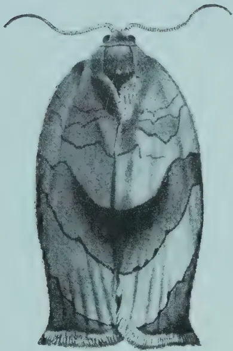
X4 1
2 X4
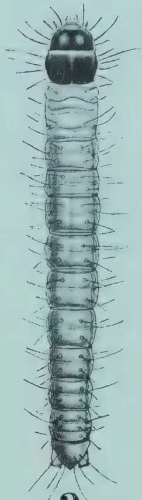
3 X3
4
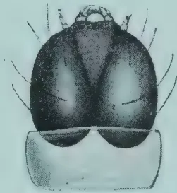
5
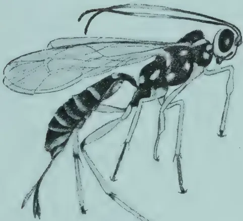
X4 6
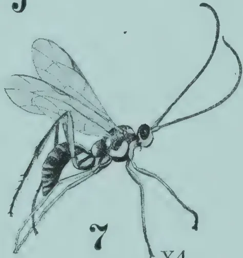
7 X4
TEA TORTRIX.
1. Female; 2. Male; 3. Full-grown Larva, seen from above; 4. Head of Full-grown Larva; 5. Head of Larva just emerged from Egg; 6. Lissonata spp., Parasite of Larva; 7. Male Phytodietus Capuae, Parasite of Larva.
Reproduced from Bulletin No. 40.
(Department of Agriculture, Ceylon.)
![Scientific illustrations of insect parasites and hosts. Figure 8: Female Phytodietus Capuae, shown in profile with wings and a striped abdomen, labeled 'X4' and '8'. Figure 9: Cocoon of P. Capuae in Flush, a light-colored, irregularly shaped structure, labeled 'X4' and '9'. Figure 10: Tortrix Pupa, showing the exit of a Leucospis parasite, a dark, elongated pupa, labeled 'X4' and '10'. Figure 11: Matured Larva of P. Capuae fixed to Tortrix Larva, a segmented larva with a dark head and thorax, labeled 'X4' and '11'. Figure 12: Hind Leg of Leucospis showing close contact of first and second joints, a small, dark, oval-shaped leg, labeled 'X12' and '12'. Figure 13: Leucospis spp., Parasite of Tortrix Pupae, a small, dark, bee-like insect, labeled 'X5' and '13'. Figure 14: Pleuroneurophion Erythrocerus, suspected Parasite of Larva, a larger, winged insect with a long abdomen, labeled 'X4' and '14'.](ca3b1bd3611e31a6b66aedbe52856e97_1_img.webp)
8. Female Phytodietus Capuae; 9. Cocoon of P. Capuae in Flush; 10. Tortrix Pupa, showing Exit of Leucospis Parasite; 11. Matured Larva of P. Capuae fixed to Tortrix Larva; 12. Hind Leg of Leucospis showing close contact of first and second joints; 13. Leucospis spp., Parasite of Tortrix Pupae; 14. Pleuroneurophion Erythrocerus, suspected Parasite of Larva.
NOVEMBER, 1920.]279Outbreaks.—From data accumulated during the past fifteen years it is evident that outbreaks of Tea-tortrix occur in three-year cycles. The cause of this has been ascertained to be a “wilt” or polyhedral disease of the larvæ. When the Tortrix population in the larval stage becomes overcrowded and general vitality is lessened by lack of food the polyhedral disease becomes prevalent and only a small number of individuals escape. These are possibly immunes. They propagate and in course of time their numbers so increase as to give rise to another epidemic. Attempts have been made to cause artificially an outbreak of polyhedral disease, but the results have been negative. Remedial measures have therefore been directed towards checking the early stages of the normal increase in numbers and towards dealing with small localized outbreaks.
Life History.—The life history of the pest has been closely investigated. The eggs are laid in masses upon the upper surfaces of mature leaves. The egg mass, when freshly laid, is an opaque mass but changes in four days to a dull yellow. These egg masses are generally to be found low down towards the centre of the bush. The larvæ remain on the under-surfaces of the older leaves until the first ecdysis is passed and then ascend to the flush (or young leaves) when they spin two or more leaves together to form a shelter for themselves during the day. They are more or less quiescent in the daytime and only come out of their shelter to feed at night. They do not devour whole leaves but nibble here and there. They also bite into growing buds and around young shoots. Pupation takes place in the shelters of leaves. Emergence of the adult moths occurs in the early morning or to a slight extent during the late evening. Coition takes place about 12 hours after hatching and the average life of an adult female moth is seven days. The natural habit of the adult is among dry leaves, twigs or refuse. In severe attacks they are found resting in the tea bushes. The egg-masses contain from 60-200 eggs, of which over 95% may hatch under field conditions. July, August and September are the chief egg-laying months and the total life-history of the insect from laying of egg to adult is 6 to 8 weeks according to elevation.
Parasites.—Two egg parasites of the genus Trichogramma occur, but the relative percentage of parasitized eggs is exceptionally low. An ectoparasite of the larvæ (Phytodælus capnæ) is common in some localities while other larval parasites occur. The “wilt” or polyhedral disease of the larvæ has already been referred to.
Remedial Measures.—These consist of the collection of egg-masses and of larvæ and of trapping the adult. A system of “flight-breaks” to check the distribution of the pest by wind has been advocated. Green manure trees or tea seed-bearers are recommended and efforts are being directed towards the establishment of these barriers. Outbreaks of the pest in the tea have frequently been traceable to colonies which have been propagated on green manure or shade trees such as Grevillea, Dadap and Acacia. If definite flight-breaks were established, the early stages of such outbreaks could be dealt with by means of sprays. The practicability of controlling local outbreaks in tea has been tested by field trials extending over several months. The effective control of the pest by a lead chromate spray can be carried out without detriment to the marketable quality of the tea. It is not anticipated that spraying large areas of tea would be necessary or practicable, but for the purpose of checking small local outbreaks an effective spray has been evolved.
F. A. STOCKDALE.
280[NOVEMBER, 1920.Progress Report of the Assistant Entomologist, Jan. 1st to June 30th, 1920.
The following extracts from the progress report of the Assistant Entomologist, for the above period, have been selected for publication.
The Assistant Entomologist, who is continuing the investigations of MR. E. R. SPEYER, was temporarily transferred to Sarnia Estate, Badulla, on June 1st of this year, MR. W. G. B. DICKSON having generously placed at the disposal of Government a bungalow, land, and labour to facilitate the continuation of the investigation.
Twenty-two visits to estates have been made, in the period under review, in the following districts :—Badulla, Balangoda, Hantane, Kelani Valley, Kadugannawa, Rakwana, and Ratnapura, the number of miles travelled being 1172 occupying 32 days.
An area of 78 acres has now been treated on private estates with this special paint-mixture according to MR. SPEYER'S directions, while a considerably larger area has been treated, but unfortunately, without due regard to instructions, so that results in the latter cases cannot be relied upon. The figures of the cost of this treatment, as supplied by the Superintendents of the estates referred to above, varied from Rs. 3'80 to Rs. 52'57 per acre, and opinions regarding the value of the treatment varied in about the same degree. As no official trial, on an estate scale, had ever been conducted it was considered advisable to arrange for an official trial at an early date in order to obtain more definite information regarding this suggested form of treatment.
The Colombo Commercial Co. most generously offered to assist, and placed at the disposal of the Department, for the purposes of this experiment, an area of 20 acres of borer-infested tea, together with sufficient paint to treat this area and any labour required, without charge. The Colombo Commercial Co. deserve the thanks, not only of the Department but also of all those engaged in the cultivation of tea in Ceylon, for the generosity of this offer, which has since been followed by many others of an equally generous nature.
The estate selected was Hunasgeriya, near Wattegama, and it was considered that an area of 10 acres was sufficient for a preliminary experiment, an area of similar size being reserved as a control. The experiment commenced on the 7th March and was in progress until early in May. During the progress of the experiment 2417 galleries were opened and examined in detail, notes being made of the condition of each gallery together with a record of all inmates and other matters of interest. It is anticipated that these notes will prove useful for future reference and already many items of interest have been obtained from a further study of them quite apart from their connection with this experiment.
Unfortunately the first figures obtained were of a somewhat conflicting nature indicating practically no advantage in favour of treatment four days after painting, so far as the percentage of occupied galleries was concerned, while at the same period there was a greater reduction in adults and pupae
NOVEMBER, 1920.]281per 100 galleries in the unpainted area. Eleven days after painting there was, however, a marked improvement in favour of treatment, the occupied galleries being reduced by 41.1 % as compared with the unpainted control area. There was also a marked improvement as regards gallery inmates, adults being reduced by 64.1 %, pupæ by 103.2 %, larvæ by 54.1 % and eggs by 62.3 %. This improvement was less marked seventeen days after treatment and, after thirty-nine days, although there was a slight improvement in favour of treatment so far as the percentage of occupied galleries was concerned, there had been a greater percentage reduction in all inmates, except pupæ, in the control than in the painted area.
The only suggestion that can be offered in explanation of this apparent anomaly is that possibly the galleries obtained for the first and last examinations, were accidentally removed from particularly heavily infested portions of the field, while on the same days samples from the control plot were removed from portions comparatively lightly infested.
A summary of the results is shown below in tabulated form and on page 282.
| Date of observation | Painted area | Control area | Reduction due to painting |
|---|---|---|---|
| Commencement of Experiment | 50.2 % | 55.2 % | — |
| 4 days later | 49.8 ,, | 52.0 ,, | 2.2 % |
| 11 days later | 10.9 ,, | 52.0 ,, | 41.1 ,, |
| 17 days later | 3.6 ,, | 30.9 ,, | 27.3 ,, |
| 39 days later | 11.4 ,, | 15.5 ,, | 4.1 ,, |
It is proposed to repeat this experiment at Sarnia Estate and, in order to benefit by the experience of the Hunasgeriya Experiment, to provide for the uniform collection of samples by dividing each area into plots of equal size so that the same number of cuttings may be removed from each plot at each examination. It is contemplated that, in this way, a fair average may be obtained for the areas under experiment. The occurrence of Shot-hole Borer in distinct patches of several bushes is often very marked and, where a large number of galleries is required, the inclination to remove those branches containing them, when and where they are observed, is apt to lead to very conflicting results.
The cost of the treatment, calculated from figures obtained from this experiment was Rs. 29.08 per acre, Rs. 23.17 representing the cost of paint and Rs. 5.91 the cost of application. Rail-freight, cartage, and the cost of pails and brushes is not included in this calculation. The quantity of paint required per acre was 38 lb.
282
[NOVEMBER, 1920.
HUNASGERIYA PAINTING EXPERIMENT. INMATES OF GALLERIES.
| Date of observation | Painted area | Control area | Reduction due to painting | |||||||||
|---|---|---|---|---|---|---|---|---|---|---|---|---|
| Per 100 Galleries | Per 100 Galleries | |||||||||||
| Adults | Pupæ | Larvæ | Eggs | Adults | Pupæ | Larvæ | Eggs | Adults | Pupæ | Larvæ | Eggs | |
| Commencement of Expt. | 70.2 | 10.7 | 60.0 | 20.9 | 106.2 | 13.3 | 67.9 | 20.9 | % | % | % | % |
| 4 days later | 87.1 | 17.7 | 44.0 | 12.4 | 95.0 | 12.0 | 52.5 | 26.0 | * 34.6 | * 75.2 | 4.0 | 65.1 |
| 11 days later | 16.2 | 1.5 | 11.6 | 2.6 | 92.6 | 15.6 | 49.8 | 15.6 | 64.1 | 103.2 | 54.1 | 62.3 |
| 17 days later | 2.8 | 1.4 | .7 | .0 | 42.8 | 2.6 | 23.0 | 15.8 | 37.3 | 6.5 | 25.3 | 75.6 |
| 39 days later | 19.0 | .0 | 14.3 | 5.7 | 15.5 | 1.7 | 11.1 | 4.4 | * 12.5 | 12.8 | * 7.4 | * 6.2 |
* These figures indicate benefit in favour of control area.
NOVEMBER, 1920.]283It is hoped that more definite data may be obtained regarding the effect of the paint on the inmates of galleries when this experiment is repeated on a smaller scale at Sarnia Estate. This experiment is to be commenced on July 1st, and when completed a report on all painting experiments which have been conducted will be prepared.
An inspection ten months after treatment, of the 23 acres painted at an estate near Yatiyantota, showed that borer-attack had recommenced, the painted area being infested to the same degree as the unpainted control area of 10 acres adjoining. An area of 15 acres on an estate in the Badulla district is similarly reinfested at the time of writing nearly nine months after treatment.
In order to test the relative attraction of the Castor-oil plant for Shot-hole Borer, when interplanted with tea, an experiment was commenced at an estate near Kandy, at the end of the last year. An area of 24 acres of particularly badly borer-infested tea was interplanted with castor, at various distances apart, as shown in the following table :—
| Plot No. | Acreage. | Distance apart. | Trees per acre. | Bushes served by 1 tree. |
|---|---|---|---|---|
| 1 | 4 acres. | 12 ft. by 9 ft. | 403 | 12 |
| 2 | 5 ,, | 16 ft. by 15 ft. | 181 | 20 |
| 3 | 5 ,, | 24 ft. by 20 ft. | 90 | 40 |
| 4 | 5 ,, | 32 ft. by 30 ft. | 46 | 80 |
| 5 | 5 ,, | 36 ft. by 36 ft. | 33 | 108 |
The castor seed was sown on December 25th 1919 and the field in which it was planted was to be pruned early in May of this year. By means of this arrangement the castor should be 13-14 months old, and thus at an age when it is attractive to borer, when the tea may be expected to experience its first visitation by borer, viz 8-9 months after pruning.
A series of misfortunes has attended this experiment. Firstly the quality of the seed was extremely poor, only 25% germinating; secondly a dry spell of weather, which was not anticipated, followed the sowing of the seed, thus retarding the growth of those plants which had germinated; thirdly a large percentage of young plants, which had become established, were trampled upon by plucking coolies, although every attempt had been made to protect them by means of stone cairns placed around each young plant; and fourthly, the nursery, which had been established to provide "supplies," was destroyed by cattle.
Missing plants will now be replaced by seed. Some time must elapse before any results are available from this experiment, but they are, nevertheless, looked forward to with considerable interest.
In this connection it should be remarked that, in April, an unusually severe infestation of castor by Shot-hole Borer was discovered in the Rakwana district, literally thousands, if not hundreds of thousands, of galleries occurring in a few plants. It was significant that the surrounding tea was comparatively free from attack.
284[NOVEMBER, 1920."Control-pruning," that is to say, the removal of infested branches at definite intervals after reinfestation has commenced in a pruned field, has been tried experimentally on two estates. The average cost of removing first rounds from three fields on an estate in the Badulla district, 11, 13, and 15 months respectively from pruning, was 53.3 cents per acre, while the same operation in the Ratnapura district cost Rs. 5.75 per acre for the first round and Rs. 2.00 for the second round. In the latter case, the first round was removed 15 months after pruning when the borer was already well established. It is not possible to give much information regarding these trials beyond the fact that, in two fields, so many branches had to be removed that rather a serious mutilation of the bushes resulted. In neither case however was labour available to carry out the operation in the manner recommended, both trials being rather in the nature of an experiment.
It is proposed to place two fields of 21 and 23 acres respectively under this form of control at Sarnia Estate early in August, when the fields will be 10 and 6 months respectively from pruning. Unfortunately, however, it will not be possible to "control-prune" each field as speedily as might be desired owing to shortage of labour. The work will be in the nature of an experiment and will be under the supervision of the Assistant Entomologist. It is hoped that some useful and interesting figures may be obtained from this experiment. This suggested form of control is entomologically sound, but it is anticipated that there may be many practical objections and the scheme may have to be abandoned.
Two matters of interest, in connection with the possible control of Shot-hole Borer, were investigated during the period under review, one relating to the healing of gallery entrance-holes and the other to the control of borer by means of Dadap shade. Unfortunately, however, no results of value to the investigation were obtained.
Healing of Galleries. It was reported early in the year, by the Superintendent of an estate in the Ratnapura district, that an extraordinary condition of healing of gallery-entrance holes had immediately followed a light "slashing-across" of the bushes in one of the fields on his estate. Samples taken at random from the field, and forwarded to Peradeniya for examination, showed that 50% of galleries had completely healed, 37% had commenced to heal, and 46.3% had not healed. Of those galleriers which showed no indication of healing, only 28.00% were occupied, twenty-five tenanted galleries containing only 6 adult females, 3 female pupæ and 6 larvæ.
It was later reported that the percentage of occluded galleries had increased to 70% and it was accordingly decided to visit and inspect the field in question. The visit was made in April when the following facts were ascertained. As mentioned above, the unusual condition of healing was attributed to the "slashing-across" of the bushes. The first bushes selected for examination were those which, on account of general poor condition, had not been slashed, having been left and allowed to run-up and recover. The percentage of healed galleries in these bushes was no less than 83.8%, but was even higher (96.6%) in those bushes which had been slashed. As the
NOVEMBER, 1920.]285condition of marked healing was present, to a very high degree, in both types of bushes which had received different treatment, it was evident that the condition could not be solely attributed to the "slashing" method of pruning and consequently enquiries were made as to some form of treatment which the two types of bushes had received in common. It was ascertained that, six weeks prior to the discovery of the condition referred to, and immediately preceding pruning, the field had received a special manuring with the following mixture at the rate of 350 lb. per acre :—
| 26 % | Ground nut cake |
| 25 % | Fish (crushed) |
| 16 % | Nitrolim. |
| 9 % | Nitrate of potash. |
| 8 % | Muriate of potash. |
| 16 % | Ephos phosphate. |
It was considered, at the time, that the excellent recovery of the bushes from pruning, and the extraordinarily large number of gallery entrances which had healed in a most complete manner, was probably due to manuring rather than to the particular form of pruning which had been adopted, manuring being the only form of treatment which was common to the field as a whole.
Following this experience instances of healing of galleries were observed elsewhere, but nowhere to the remarkable extent recorded above. It is possible, therefore, that the process of gallery-occlusion may be seasonal, all these instances being observed at a period of the year when there was a considerable degree of stimulus and activity in plant growth generally and, in the case referred to, it would reasonably follow that this natural activity would be increased by the application of manure which preceded pruning. The greater percentage of healed galleries observed in the bushes which had been pruned, as compared with those which had been allowed to "run up," appeared to indicate that this process of healing had been further stimulated by pruning, but "slashing-across" alone cannot be credited with producing the considerable degree of healing which was so manifest in this field.
Opportunities will no doubt occur, in the future, of observing further instances of gallery-occlusion, and it will be most interesting to discover whether this process is in operation at all seasons of the year and where no manuring has taken place. If the process is evident at all seasons, but only following manuring, it will be important to discover the particular ingredient or element which assists the process, and this matter will be borne in mind in all subsequent visits to estates.
Although the enquiry led to no discovery of material value, it indicated the manner in which severely damaged bushes could be completely restored to their former sound condition, weakened branches becoming so strengthened that they could not be fractured at the point where the stem had been invaded. Instances have been found where female beetles occurred dead and imprisoned in a gallery completely healed, or in an advanced process of healing, but there was no evidence to indicate whether death had occurred before, or after, healing had commenced.
286[NOVEMBER, 1920.If such a condition could be produced artificially, by special manuring for instance, the advantage would be considerable, as the old entrance galleries of Shot-hole Borer serve as a point of admission for Termites and other pests both insect and fungus, and it is generally considered that more indirect damage is caused in this way, by borer, than directly by the mining of the smaller branches resulting in their fracture by high winds or plucking coolies, with the consequent loss of leaf.
Dadap Shade.—The other point of interest referred to was a report that Shot-hole Borer had been completely controlled by heavy dadap shade on an estate near Balangoda. It was suggested that this estate was, a few years ago, one of the most seriously infested estates in the Island, and that now Shot-hole Borer was comparatively rare, heavy dadap shade being credited with producing this improved condition of affairs. An investigation of this statement showed that although there was some ground for the assertion in one field there was none in others. The figures obtained were as follows :—
| Field No. 4. | Bushes attacked | Galleries empty. |
|---|---|---|
| Bushes under heavy dadap shade | 51.2 % | 48.4 % |
| Bushes in open: no shade | 77.4 % | 26.9 % |
The figures in this case are striking and appear to indicate that dadap shade certainly had influenced the attack by borer, 51.2 % of bushes attacked not being a heavy infestation in a field approaching pruning, while the unshaded bushes were attacked to the extent that might have been expected. The comparatively large percentage of unoccupied galleries in the portion of the field under heavy shade is also significant. An adjoining field, the same age from pruning and also heavily shaded with dadaps, was then inspected with the following very contradictory result :—
| Field No. 3. | Bushes attacked. | Galleries empty. |
|---|---|---|
| Bushes under heavy dadap shade | 100.0 % | 11.7 % |
It is not possible to offer any explanation of these contrary results, but it is evident that dadap shade alone, as claimed, had little influence on the incidence of borer in this instance.
Host plants of X. fornicatus other than tea. Attack by X. fornicatus, in plants other than tea, has been severe in places. As mentioned elsewhere in this report, at an estate in the Rakwana district, the stems and branches of a large number of castor plants, of about three years' growth, were reduced to a network by the galleries of this insect. There was not one square inch of surface on the main trunk and branches that did not contain several entrance holes. Living inmates, in all stages of development, occurred in every gallery examined. It was significant that the tea on this estate was comparatively free from attack, only isolated instances of borer presence being discovered.
NOVEMBER, 1920.]287Grevilleas on an estate near Badulla, are being damaged to a serious degree by this insect, all young branches of the smaller trees hanging down in the manner characteristic of those of an infested tea-bush. Although X. fornicatus does not, so far as observed, rear broods in Grevilleas, it is capable of constructing circular galleries which weaken the branches sufficiently to cause them to snap in strong winds. In many cases the female beetles have been found completely embalmed in fragments of gum which have been formed by an exudation from the gallery-entrance holes. Trees have been observed having every branch destroyed by Shot-hole Borer, but whether this tree affords a breeding medium will be ascertained in the near future.
Dadaps have also been observed, on the same estate, with all young branches hanging down in the manner described above, the attack in places being very severe. Broods have been found in the galleries and there is no doubt that this tree acts as a breeding medium to a considerable extent in places.
A species of Scolytid, believed to be X. fornicatus, has also been found boring into living Toona (Cedrela toona) near Badulla, although the damage, at present, is negligible.
In Ceyton. Isolated instances of parasitism and predation, in connection with Shot-hole Borer, have been observed, an excellent opportunity offering for this purpose in the examination of several thousands of galleries in connection with painting experiments. The following insects have been found in association with Shot-hole Borer :—
(1) A Clerid beetle at Rasagalla, Balangoda. This family of predaceous beetles is of the greatest value in India in controlling the activities of Scolytidæ destructive to forest trees. Only one specimen has been found.
(2) A Trogositid beetle from Hunasgeriya, Wattegama; Kalupahani, Haputale; and Sarnia, Badulla. This beetle is said to be exercising a vigorous control on Shot-hole Borer activity at Kalupahani. It is reported that, in a recent examination, not a single living inmate was found in any gallery in 500 bushes examined, this beetle being given the entire credit for this remarkable freedom from borer. This observation was made by MR. W. ORMISTON, a well-known Entomologist, and appears to have been made on a large scale. It is hoped that an opportunity may occur, in the near future, of visiting this estate and investigating the matter further. At Hunasgeriya Estate, a gallery was found containing one of these predaceous beetles in association with six partly-consumed borer larvæ. At Sarnia another specimen of the same beetle, found in an empty gallery, readily fed upon borer larvæ and pupæ when these were presented. Twenty-six beetle larvæ have been found in seventeen galleries and it is believed that these may be the larvæ of this predaceous beetle. Attempts to rear them to maturity have so far failed.
(3) Two Staphylinid beetles have been found in empty galleries but there was no indication, in these cases, that they had preyed upon any stage of X. fornicatus.
288[NOVEMBER, 1920.(4) One undetermined beetle, and the pupa of the same or another species, were found on two other occasions.
(5) The association of the larvæ, pupæ, and empty puparia of a Drosophilid fly with Shot-hole Borer, has been very marked. It has not been possible to study the habits of these larvæ as they perish a few hours after removal from their natural surroundings. Several cases have been observed where the larvæ of X. fornicatus have been recently destroyed, and where the larvæ of this fly have been present in these galleries. Isolated instances have occurred where the larvæ have fed upon the larvæ and pupæ of X. fornicatus immediately after removal from the galleries. The puparia are often, although not always, found in otherwise empty galleries suggesting that possibly the gallery has been cleared of inmates by a surviving fly larva which has eventually pupated therein. Very rarely has more than one puparium been found in the same gallery, although the larvæ seldom occur singly, as many as ten having been found in one gallery. The following figures indicate the prevalence of the fly :—
Some stage of this fly was found in 183 galleries out of a total number of 3,504 examined == 5.22%. Larvæ found numbered 182, pupæ 32, and empty puparia 84. A total of 298 individuals were, or had been, present in 183 galleries (1.62 individuals per gallery tenanted or .08 per gallery examined.) This fly, which proves to be a new species, has been named by MR. R. SENIOR-WHITE, Phortica xyleboriphaga.
In Java. The existence in Java of a Chalcid parasite which effectively controls Xyleborus coffeae to the extent of 50%, is of interest in connection with this investigation, as the possibility of this Chalcid being able to prey upon X. fornicatus is worth considering.—The possibility may be remote on account of Chalcididæ being somewhat specialized insects, usually confining their attentions to one species of host. X. coffeae is closely allied to X. compactus, sometimes found in tea in Ceylon.—These species so closely resemble one another that their identification is often a matter of great difficulty.
Further enquiries will be made regarding this parasite in Java.
Lectures, etc. An account of the progress of the Shot-hole Borer investigation was given before the Committee of Agricultural Experiments at Gangaruwa on the 11th March, and a lecture on the life-history and habits of X. fornicatus, and an account of recent painting experiments, was given before a meeting of the Sabaragamuwa Planters' Association, on 17th April, at the request of the Chairman.
Illustrated "Poster."—An illustrated "poster," showing the life-history stages of Shot-hole Borer, with brief descriptive notes for translation into the vernacular languages, was prepared for the Plant Pests Inspectorate for use in connection with the publicity campaign of this Division of the Department.
Laboratory Work.—Laboratory work has been chiefly confined to the identification of specimens and the detailed examination of galleries of Shot-hole Borer, numbering several thousands. Copious notes have been made of details connected with size and condition of the galleries and also of the number and stage of inmates. From this material it will be possible to make, at any future date, many calculations of interest and value.
NOVEMBER, 1920.]289In the Field.—Although, perhaps, a programme of future work should have no place in a report of past progress, the following notes are included for the sake of completeness and in order to indicate the line of work contemplated in the near future:—
(1) A painting experiment with SPEYER'S "paint-mixture" is to be repeated. It is hoped that this experiment will furnish final figures and facts upon which future recommendation, regarding this suggested form of treatment, may be based. The experiment is to commence on July 1st.
(2) Further information is required regarding the emergence of beetles from buried and mulched prunings in dry and wet weather. Information is also desired regarding the proportion of beetles present in prunings as compared with the pruned bush from which they are removed, and also the proportion of galleries present in the small branches which are slashed off with the leaves for burial, as compared with those in the heavier wood which is to be burnt. Steps are being taken to ascertain these points.
(3) Experiments connected with the burial of prunings wholesale with various chemical substances are contemplated, in order to test the toxic effect of these substances upon the inmates of occupied galleries.
(4) Control pruning, that is, controlling the natural propagation of the beetles in any given field by the periodical removal of infested branches is shortly to commence in a field of 21 acres, 10 months from pruning, where already 48% of bushes are attacked. Another field of 23 acres, now six months from pruning, is being kept under observation and may also be brought under this experimental form of control when necessary.
(5) Manurial experiments are contemplated with a large number of manures in general use in Ceylon, to test the resistance or otherwise of bushes to attack by borer when treated with certain manures. The manures have been provided free of cost by the Directors of the Colombo Commercial Company to whom the thanks of the Department are due. If any particular manure indicates any inclination towards immunity or reduced attack, the experiments will be continued accordingly.
(6) The seasonal-history is a very important item of information required and will be undertaken when assistance is available.
(7) A castor trap-tree experiment, which has been referred to elsewhere in this report, is in progress at an estate, near Kandy, and it is proposed next planting season, to commence another one at an estate near Badulla, so that information will be available from these two totally different planting districts.
In the Laboratory.—It is anticipated that work in the laboratory will be chiefly confined to gallery examinations on a large scale in connection with the above field experiments and in any other direction indicated.
FRANK P. JEPSON,
Sarnia Estate, Badulla,
Assistant Entomologist.
July 16th, 1920.
290[NOVEMBER, 1920.](Department of Agriculture, Ceylon.—Leaflet No. 16.)
The paddy fly is well-known to cultivators as the pest which causes many of the seeds of their paddy crops to dry up, so that they are useless for food. Usually the cultivators do nothing to get rid of the paddy fly, except try a few charms, such as beating tom-toms, burning smoky fires, etc., which do not kill the paddy flies, but only drive them out of the fields for a short time.
Much of the damage caused by the paddy fly can be prevented if the cultivator will carry out the instructions given below, but he must first learn where the paddy fly comes from and how it lives.
The paddy fly only attacks the paddy crop seriously from the time that the young seeds are forming down inside the stems until the time that the seeds have begun to harden and the grain is nearly ripe. The paddy fly season is well known to cultivators, and they only notice the paddy flies when they are attacking the paddy crop in large numbers.
Now, the paddy flies live near the fields in small numbers all the year round, and only attack the paddy when the crop is ripening. They usually feed on the stems and seeds of the wild grasses which are always growing at the edge of the jungle, in uncultivated lands, at the sides of the paddy fields, and on the bunds. This food is enough to keep them breeding in small numbers, but is not sufficient for them to become numerous.
But as soon as the paddy crop begins to come up, the paddy flies find out that there is plenty of good food for them in the paddy fields, and they leave the wild grasses all around the fields and fly on to the paddy plants.
The female flies lay their eggs like small black seeds on the paddy leaves (see Fig 1), and in about ten days a small green paddy fly comes out of each egg (see Fig 3). These "flies" are not usually noticed by the cultivator, as they hide during the hot part of the day near the bottom of the plants and feed mostly at other times. They have sharp slender beaks with which they pierce the stems of the young seeds and suck the juices (see Fig 9), just in the same way as the older paddy flies suck, and when a large number of them are sucking the seeds, the crops are soon dried up and ruined. These young paddy flies feed and grow quickly. In less than three weeks their wings have developed and they are full grown, and are able to fly about to breed more paddy flies.
Now, the cultivator must prevent the paddy flies from attacking the paddy in large swarms and from breeding, and he must be ready to destroy them as soon as they come into the fields, even if there are only a few "flies," as these few flies will, in less than a month, breed many flies which will ruin his crop.
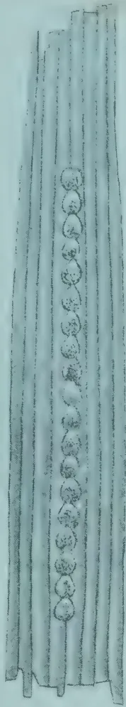
A vertical section of a plant stem, likely a grass or cereal, showing a row of small, round seeds or fruits along its length. The stem is shown in a longitudinal view, with the seeds arranged in a single row.1
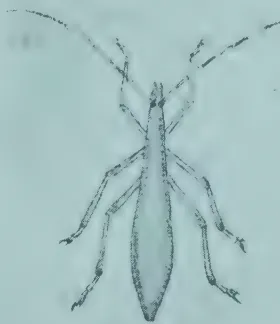
A small, slender insect, possibly a leafhopper or a small bug, shown from a dorsal view. It has long antennae and a narrow body.5
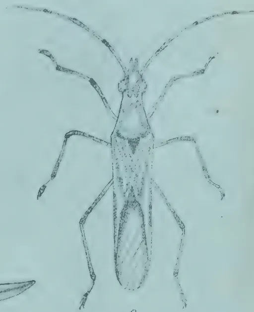
A large, detailed drawing of a bug, possibly a leafhopper or a similar insect, shown from a dorsal view. It has long antennae, a broad body, and large wings.8
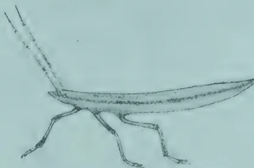
A small, slender insect, possibly a leafhopper or a small bug, shown from a lateral view. It has long antennae and a narrow body.6
A small, detailed drawing of a part of a plant, possibly a seed or a fruit. It is a small, rounded object.2
A detailed drawing of a plant part, possibly a seed or a fruit, showing internal structures. It is a long, narrow object with a pointed tip.3
A detailed drawing of a plant part, possibly a seed or a fruit, showing internal structures. It is a long, narrow object with a pointed tip.4
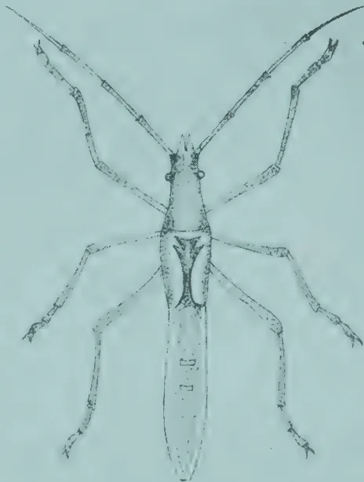
A large, detailed drawing of a bug, possibly a leafhopper or a similar insect, shown from a dorsal view. It has long antennae, a broad body, and large wings.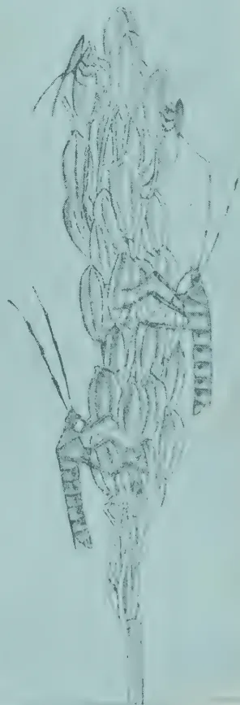
A detailed drawing of a plant part, possibly a seed or a fruit, showing internal structures. It is a long, narrow object with a pointed tip.the seeds dry.
will ruin his crop.
NOVEMBER, 1920.]291The cultivator can prevent the paddy flies from attacking the paddy in large numbers by cutting down the wild grasses all around the fields.
If these grasses are kept cut so that they do not produce seeds, the paddy flies which usually feed on them will have less food and will not be able to breed largely, and there will be very few paddy flies left to attack the paddy.
The cultivator must destroy the paddy flies as soon as they come into the paddy fields, and to do this he must watch carefully for the first appearance of the "flies" and be ready to catch and kill them.
The best way of catching them is to use nets, which can be either small hand nets, which even a podian can use, or they can be larger nets for two men to use. Every village should have at least six small nets and two or three large nets, or a dozen small nets.
The paddy flies can be caught by sweeping the nets over the tops of the paddy plants, and when a number of paddy flies are caught, they can be killed by closing up the mouth of the net and dipping the net with the "flies" inside into some water covered with kerosene, or the flies can be crushed in the net. The sweeping must be repeated several times a day, as at first the paddy flies will be numerous, and the sweeping must be continued every day until there are no more paddy flies.
The catching of the paddy flies with nets and killing them is the best way of getting rid of the pest, and preventing further damage to the crop by the bugs that are killed.
There is another method of dealing with the paddy fly, sometimes used by cultivators, and that is to drag ropes soaked in kerosene or other oils over the tops of the plants. If this is repeated several times a day for several days, the paddy flies can be kept from damaging the plants seriously as long as the smell of the oil lasts, as they usually fly away or drop to the ground.
While this oiling is useful as a temporary measure to prevent the paddy fly feeding continuously, it does not kill very many "flies."
Some of the young paddy flies may be killed by the oil, as their bodies are soft, and they can only escape by dropping to the ground, but the full-grown "bugs" are very active in flying away.
This dragging of oiled ropes is useful when the paddy flies first appear, and nets may not be immediately available to catch them, but at the best it only serves to drive them to other fields, where they do more damage.
Now, every cultivator must help to keep the grasses cut around the fields at all times of the year when the paddy crop is not seeding. The grass can be fed to cattle or it can be burnt. If this cutting is regularly and properly done, there will be fewer paddy flies to attack the paddy crop, and then it will be easier to catch them with nets and kill them before they suck the seeds dry.
292[NOVEMBER, 1920.The children can be made to help, and they will soon learn how to find the small eggs of the paddy fly on the leaves, and collect and destroy them. They can also learn to use the small nets to catch the "flies."
Every paddy fly that is killed before the paddy seeds are formed may mean as much as a measure of good paddy saved for food, since one paddy fly can destroy many paddy seeds during its life.
Now, while the paddy fly is the most serious pest of paddy, there are other pests which attack the paddy crop, mostly in its younger stages. These pests are mostly those "puchis" which have a "butterfly" stage, and the "puchis" themselves eat the leaves of the paddy plants, such as the "godavellu," or bore into the stems of the plants, causing them to rot and the seeds to turn white and dry up.
These "puchis" also feed on the wild grasses in small numbers when the paddy is not growing; the cutting of these grasses will help to keep these down, as well as the paddy fly. The stem-boring "puchi" goes on living in the short stems of the paddy plants which are often left in the fields after the crop is reaped, and it is important that the cultivator should first of all burn off the stems where they are tall, and then should plough the stems under the ground.
This should be done soon after the crop is reaped, and, if done regularly, it will not only keep down "puchi" pests which are resting in the stems and in the soil but the stems, if ploughed in, will serve as good manure for the next paddy crop.
There are certain general measures of clean cultivation which the paddy cultivator must learn to practise if he wants to grow good crops of paddy which will not be seriously damaged by paddy flies and "puchi" pests —
(1) The keeping of the lands around the paddy fields as clean as possible by periodically cutting down grasses and weeds. These grasses can either be fed to cattle or burnt, and the ash spread over the paddy fields.
(2) The care of the paddy seed beds, and the weeding out and burning of all weak and unhealthy plants, so that only good vigorous plants are transplanted in the fields.
(3) The further weeding and burning of all yellow and sickly plants which usually contain the "puchis" of the stem-borer. This should be done periodically after the transplanting until the plants are beginning to form seeds.
(4) The burning off and ploughing of the short stems (or stubble) after the crop is reaped.
These are certain measures which should be practised regularly by all hardworking and intelligent cultivators, who will find that they will suffer less from the pests which destroy their crops, and that they will be able to grow more paddy for themselves and their families, and then paddy will be cheaper.
J. C. HUTSON,
Entomologist.
Extracts from Progress Report—July 1st to September 30th, 1920.
J. C. HUTSON, B.A., Ph.D.,
Entomologist, Ceylon.
Tea.—During the period under review there has been a drought in most of the tea districts, and such pests as tea mites, scale insects, and aphids have been prevalent. These pests are usually worst on tea bushes in poor condition. Can be controlled by good cultivation, manuring and light plucking which will help the bushes to recover.
Outbreaks of such caterpillar pests as Red Slug (Heterusia cingala), Nettle grubs (Nalada nararia and others), Bagworms (Psychidæ) have occurred in unusual numbers in a few localities. No reports of Tea Tortrix have been received by the Entomologist during the above period. A few instances of Red borer (Zeuzera coffea) were reported.
Rubber.—There have been several samples of Black Scale (Saissetia nigra) sent in on Hevea leaves. Also a few instances of the stem and root borer (Batocera rubus) were reported. Specimens of the bark-eating caterpillar (Comocritis pieria) were also received.
Miscellaneous Pests.—Among the more important are:—
Melon Fly [Bactrocera (Dacus) cucurbitæ] in cucurbits.
Banana Borer (Odoiporus longicollis)
Toona Borer (Hypsipyla robusta)
Dadap Borer (Terastia meticulosalis)
Dadap caterpillar (Taragama dorsalis)
Special Experiments.—1. Cutworms (Agrotis spp.). Poisoned bait experiments were conducted at Queen's Cottage, Nuwara Eliya, and at Hakgala Gardens, under the personal supervision of the Acting Curator, Hakgala, who has taken a great interest in the experiments.
The experiments were at first handicapped by heavy rains, but even under better climatic conditions they did not prove successful enough to warrant their being used by small cultivators owing to the cost of the materials, Paris Green, pollard and jaggery.
The moth-trap with sweetened bait was continued at Hakgala Gardens for part of the period, but practically no moths were caught, and none of those were cutworm moths. During August it was moved up to Queen's Cottage Gardens where it had been first started, but with no greater success. The bait has been made as attractive as possible according to the formula used in India, but without success.
Collection of the cutworms daily and the protection of young plants by means of tins, or bands, are still the most practicable means of control for small growers of vegetables up-country.
294[NOVEMBER, 1920.(Department of Agriculture, Ceylon.—Leaflet No 17.)
A disease of tea, which is well-known in Ceylon and in India under the popular name of "Red Rust," has become more prevalent in Ceylon in July and August of this year. It has further shown the more serious symptoms of attack, viz., chlorotic or variegated leaves and death of branches on a bigger scale than heretofore. This type of attack in North-east India, where it causes appreciable loss, is considered to be one of the most serious blights of tea. In Ceylon Red Rust has been known for many years as a cause of leaf spotting, in which form it is of minor importance. The present outbreak is apparently confined to Uva and Sabaragamuwa. It is a disease of weakened bushes, and the causes which have led up to loss of vigour may be enumerated as follows :—(1) In Uva July and August have been much drier months than usual, and strong winds have been prevalent and long continued. (2) During the war manuring programmes had perforce to be cut down owing to the shortage of manures. In the case of potash manures, this is of particular note, in view of the importance of potash for woody growth. (3) No corresponding reduction of plucking programmes was made, but rather heavier plucking than usual was the rule in view of the high market price of tea. Finally, in one particular instance the reduced vigour of growth was traceable to the shallow soil on which the tea plants were growing.
The organism causing this disease belongs to the class Algæ, and is known by the scientific name of Cephaleuros mycoidea. Algæ, of which sea weeds and slime weeds of fresh and salt water are the most familiar examples, are rarely parasitic, being provided with a colouring matter, by means of which they are able to manufacture their own carbohydrate food materials. The parasitic nature of Cephaleuros is, therefore, of particular interest, and the fact that this organism can and does live in the non-parasitic form makes it particularly difficult to eradicate.
Red Rust (Cephaleuros mycoidea) occurs in two forms, easily distinguished by their position on the host plant, one on the surface of the leaves and the other on the stems.
On the leaves it occurs on the upper surface as red or orange-red circular patches, nearly half an inch in diameter. If such a patch is held edgewise between the eye and the light, it will be seen to be covered by a dense mass of erect filaments each surmounted by a small knob. This is the fruiting condition of the alga, the knobs being sporangia, each containing several spores. Frequently the alga is restricted to the upper surface. Not infrequently, however, the blight penetrates the epidermis, passes through the leaf, and forms a corresponding fruiting patch on the lower surface also. The damage done to the leaf is small, and of little economic importance, for the bush is not appreciably injured by it.
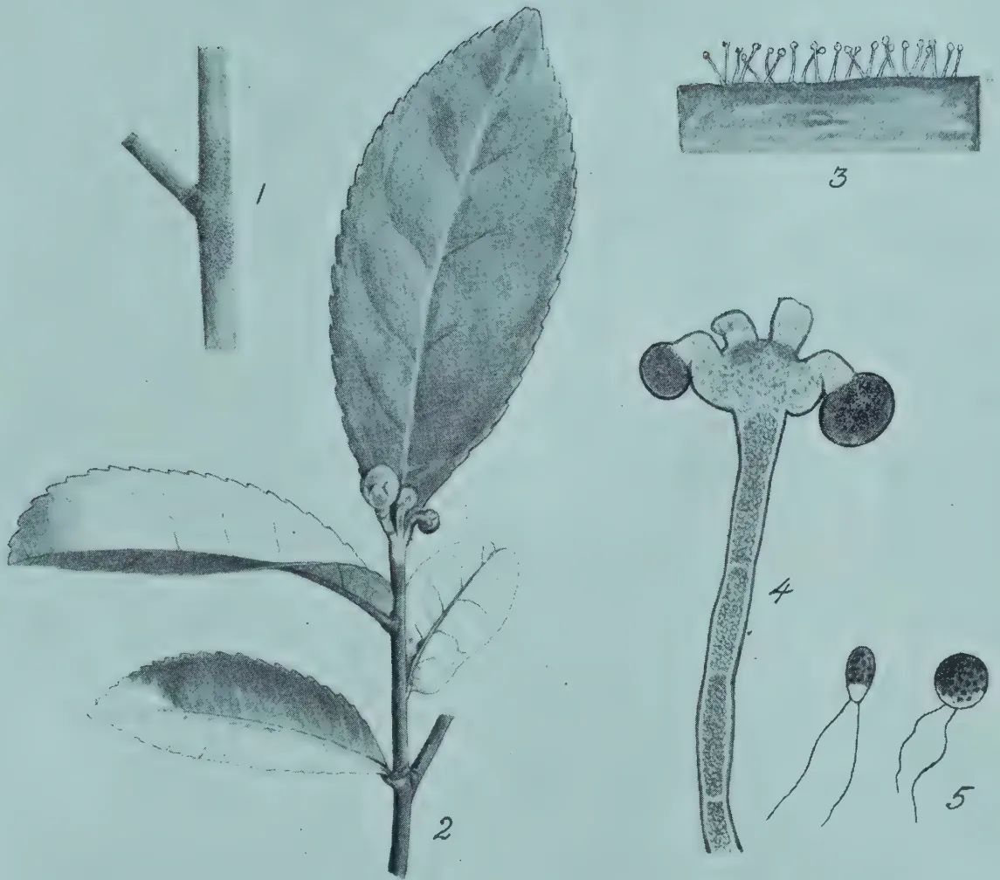
The illustration depicts the life cycle of Red Rust on Tea. (1) A small branch segment showing a dark, fuzzy algal patch. (2) A larger tea shoot with several large, ovate leaves that have serrated margins and prominent venation. (3) A rectangular block representing a fruiting patch, with numerous small, hair-like sporangia emerging from its top surface. (4) A highly magnified sporangium, showing a long, slender stalk and a rounded head with several small, dark, circular spores protruding from it. (5) Two highly magnified spores, each consisting of a long, thin stalk and a dark, spherical head.S. G. O
RED RUST ON TEA.
(1) Algal patch on the stem. (2) Shoot showing variegated leaves. (3) Fruiting patch slightly magnified. (4) Sporangia. (5) Spores. (4) and (5) are highly magnified.
294[NOVEMBER, 1920.](Department of Agriculture, Ceylon.—Leaflet No 17.)
A disease of tea, which is well-known in Ceylon and in India under the popular name of "Red Rust," has become more prevalent in Ceylon in July and August of this year. It has further shown the more serious symptoms of attack, viz., chlorotic or variegated leaves and death of branches on a bigger scale than heretofore. This type of attack in North-east India, where it causes appreciable loss, is considered to be one of the most serious blights of tea. In Ceylon Red Rust has been known for many years as a cause of leaf spotting, in which form it is of minor importance. The present outbreak is apparently confined to Uva and Sabaragamuwa. It is a disease of weakened bushes, and the causes which have led up to loss of vigour may be enumerated as follows :—(1) In Uva July and August have been much drier months than usual, and strong winds have been prevalent and long continued. (2) During the war manuring programmes had perforce to be cut down owing to the shortage of manures. In the case of potash manures, this is of particular note, in view of the importance of potash for woody growth. (3) No corresponding reduction of plucking programmes was made, but rather heavier plucking than usual was the rule in view of the high market price of tea. Finally, in one particular instance the reduced vigour of growth was traceable to the shallow soil on which the tea plants were growing.
The organism causing this disease belongs to the class Algæ, and is known by the scientific name of Cephaleuros mycoidea. Algæ, of which sea weeds and slime weeds of fresh and salt water are the most familiar examples, are rarely parasitic, being provided with a colouring matter, by means of which they are able to manufacture their own carbohydrate food materials. The parasitic nature of Cephaleuros is, therefore, of particular interest, and the fact that this organism can and does live in the non-parasitic form makes it particularly difficult to eradicate.
Red Rust (Cephaleuros mycoidea) occurs in two forms, easily distinguished by their position on the host plant, one on the surface of the leaves and the other on the stems.
On the leaves it occurs on the upper surface as red or orange-red circular patches, nearly half an inch in diameter. If such a patch is held edgewise between the eye and the light, it will be seen to be covered by a dense mass of erect filaments each surmounted by a small knob. This is the fruiting condition of the alga, the knobs being sporangia, each containing several spores. Frequently the alga is restricted to the upper surface. Not infrequently, however, the blight penetrates the epidermis, passes through the leaf, and forms a corresponding fruiting patch on the lower surface also. The damage done to the leaf is small, and of little economic importance, for the bush is not appreciably injured by it.
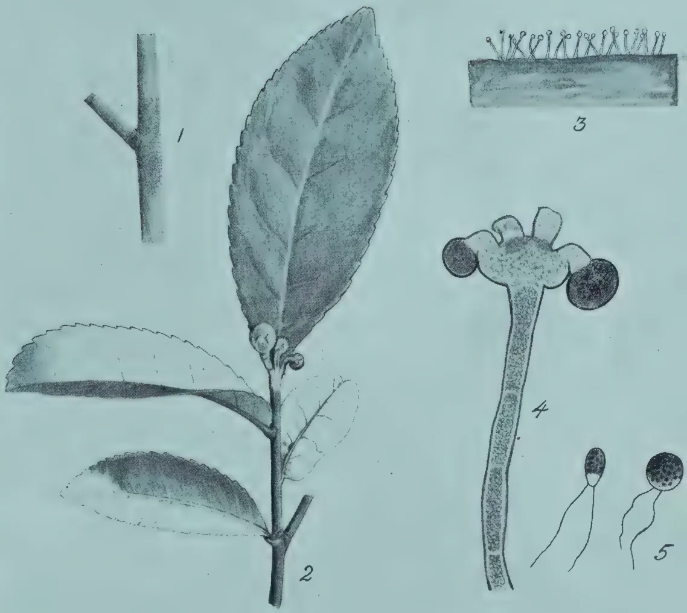
A detailed botanical illustration of a tea plant infected with red rust. (1) A small branch segment showing a dark, fuzzy algal patch on the stem. (2) A larger branch segment with three large, ovate leaves that have distinct dark and light variegation. Small, rounded rust spots are visible on the stem near the leaves. (3) A rectangular block representing a frutting patch, with several small, stalked spore-bearing structures emerging from its top surface. (4) A highly magnified sporangium, showing a long, narrow, textured stalk topped with a cluster of five rounded, dark spores. (5) Two highly magnified spores, each consisting of a small, dark, oval head attached to a long, thin, wavy tail.S. G. O
RED RUST ON TEA.
(1) Algal patch on the stem. (2) Shoot showing variegated leaves. (3) Fruiting patch slightly magnified. (4) Sporangia. (5) Spores. (4) and (5) are highly magnified.
This image is a scan of a blank page. The background is a uniform light beige or off-white color. There are several small, dark specks scattered across the surface, which appear to be dust or scanning artifacts. No text, lines, or other graphical elements are present. NOVEMBER, 1920.]295On the stems the effect is different, and far more serious. The first indication of attack by Red Rust on the stem is the presence of variegated leaves, partly green and partly yellow, round the edges of the bush. Almost invariably in June, after the first heavy rain of the season, a close examination of the stems bearing these variegated leaves will reveal the presence of hairy orange-red coloured patches, the fructifications of Red Rust. As a rule, the appearance of these chlorosed leaves is followed by the death of the shoot on which they occur, and it is comparatively rare that a shoot which bears algal patches is able to recover. In advanced stages of attack the bush has a hollow appearance, due to the death of many twigs. The general aspect of hollowness of the bush combined with the unhealthy colour of most of the leaves renders the recognition of a severe attack quite an easy matter, even in the absence of any red patches on the stem.
Special cells known as Sporangia are formed at the tip of fine hairs produced on the algal patch. These sporangia can be seen with the naked eye as small knobs if a fruiting algal patch is held edgewise between the eye and the light. When fully matured the sporangia are ruptured on access of water and the contents escape as actively swimming spores, which come to rest after a few minutes in any situation to which their own motion or that of the water may have carried them. Here the spores germinate and give rise to a new generation.
From the above it will be seen that a gentle current of water as produced by rain is sufficient to spread the disease from leaf to leaf and from leaf to stem. In this way infection is commonly carried from the leaf to the stem, the spores finding lodgment in the cavities formed by the splitting of the brown skin of the growing shoot.
Water is not, however, the only agent of dissemination. The sporangia are easily broken off from the stalks by the wind. They are light and easily carried by the air, and they are capable of germination when wetted even after being carried for 48 hours. It must be obvious then that the wind plays an important part in the spread of the disease.
Red Rust is found not only on tea, but on a host of other plants varying from ferns to forest trees. It occurs usually on the leaves, particularly of trees having leaves with hard surfaces, and does little or no damage, except to tea, cacao, and the mango, where it occurs on the stems.
The universality of distribution is an exceedingly important matter when one comes to consider the means of dealing with the disease, because it makes any attempt at isolation of the plots affected an impossibility.
296[NOVEMBER, 1920.Improved cultivation. The primary aim of every planter who wishes to check the disease must be to increase the vigour of the bushes.
Red Rust is essentially a disease of weak plants. Therefore, the first step towards checking the disease must be to seek out and remove the causes of weakness. There is little need to do more here than enumerate the causes which lead to a lack of luxuriance in the bushes, and hence, indirectly to an attack of Red Rust. The most important is probably the presence of defective soil and subsoil conditions, such as lack of drainage, formation of a hard pan in the soil, poverty of the soil, lack of adequate surface and deep cultivation, or lack of depth in the soil. The system of pruning can also affect the vigour of the bushes; here it may be pointed out that it is much safer to obtain a smaller number of very strong well-grown shoots rather than a large, number of feebly grown ones, Too close plucking, particularly in the earlier part of the season, is another frequent cause of lack of luxuriance; this fault must be avoided if the disease is to be checked.
Pruning.—All wood affected by the parasite, together with all small twiggy shoots, should be cut out and burnt. This measure by itself is useless, for though much of the parasite is destroyed, there is invariably sufficient left on the bush to carry on the attack. Collar pruning and also firing attacked bushes have been tried, but with unfavourable results. Where spraying has been combined with pruning, the results have been more satisfactory.
Spraying.—In spraying against Red Rust the time of the year at which this is done is everything. Spraying when the orange fruiting patches appear on the stem is valueless, for at that stage the spray will not wet the parasite, which is thereby unaffected by it, and also the wood on which the fructification has occurred is as good as dead. Four or five months before fruiting patches occur the conditions are different. The blight is not visible to the naked eye, the damage done to the stem on which it is situated is not serious, and the alga is easily wetted by the spray and so is easily destroyed. As pruning is usually carried out when the blight is not visible, it is advisable that spraying should follow pruning on affected plots, the prunings being burnt.
Bordeaux mixture is the most suitable spray to use.
The following mixture has been recommended in recent years, and, in view of the quality of Ceylon lime, may be easier to make than the usual standard Bordeaux mixture:—Dissolve 6 lb. 6½ oz. of copper sulphate in two or three gallons of water in a wooden vessel. Slake some good quicklime with a little water and put it into a tub with 120 gallons of soft water. The quantity of lime should be, in Ceylon, about 5 lb. Stir up the lime and water two or three times and leave it to settle. Run off 86 gallons of the clear lime water and mix it with the copper sulphate solution, and then make it up to 100 gallons by adding 11 or 12 gallons of soft water.
C. H. GADD,
Acting Assistant Botanist and Mycologist.
NOVEMBER, 1920.]297Temperature.—As cacao is essentially a tropical plant, it will not grow successfully where low temperatures are fairly frequent or at altitudes that bring such temperatures; in the latter connection experience in Java has shown that the plant may rarely be expected to thrive in situations that are higher than 1,800 feet above sea-level. The best results are obtained where the temperature very rarely falls more than two or three degrees below 68°F. or rises more than the same extent above 90°F.
Rainfall.—Little can be said about the effect of the rainfall of a country, with respect to its usefulness for cacao production, until something is known about the nature of the soil, and the distribution of the rainfall over the different parts of the country and in the different periods of the year. In any case, the precipitation is too great for the healthy growth of the plant when it approaches or exceeds 200 inches in a year. The conditions that are more directly bound up with the effect of rainfall are: (1) the depth of the soil; (2) its composition; (3) the humidity of the air, and (4) the average daily amount of bright sunshine. A deep soil helps to ameliorate the conditions arising from a small rainfall by providing a large volume of soil for the collection of water by the roots; a "heavy" soil or one containing a large proportion of humus assists in the same way by holding water, whilst the rain falling on a light sandy soil runs quickly through it and away. In regard to the third condition mentioned, the humidity of the air, a lack of rainfall is compensated by a high content of moisture in the atmosphere. The latter condition is specially favourable to cacao, which is one of the most sensitive of cultivated plants to sudden or great changes in the amount of water vapour in the air surrounding the leaves. Lastly, where the average daily amount of bright sunshine is lessened through overcast conditions of the sky throughout a large part of the year, a state that obtains particularly where the presence of mountains is combined with an insular (or maritime) climate, the plant is enabled to resist the effects of a comparatively small rainfall and of drought, not only because of the lessening of the drying effect of continuous direct sunlight, but through the greater humidity of the overclouded atmosphere.
The unfavourable effects of a lack of precipitation are increased by a very unequal distribution throughout the year, or even by the general daily receipt of early showers, followed by drying sunshine; whilst on the other hand, these very conditions will serve to decrease the untoward results of a heavy precipitation.
It is very rare, however, that the natural conditions are such that the plant develops easily and prolifically with little preparation for its growing or control of the state of its environment, and the cultivation of cacao is concerned largely or mainly with the alteration of this environment in ways
298[NOVEMBER, 1920.that will lead to the best possible vitality and productiveness of the plant. The effects of lack of rainfall are combated by the choice of sheltered situations for planting, the use of shade and the provision of windbreaks, cultivation and care of the soil, and even the employment of irrigation, which is to be found to a greater or less extent in several countries, notably in Venezuela, San Thome, San Domingo, Nicaragua, Colombia and Guadeloupe. Against an excess of rainfall, on the other hand, the chief remedy is found in drainage, increasing in complexity from the simple clearing of the natural watercourses to the adoption of the elaborate system of canals needed in the heavy, low-lying soils of Surinam, and having for its object the admission of air to the soil as much as the removal of water.
Altitude.—It has been indicated that the question of altitude in cacao growing is connected more directly with temperature than anything else. At heights approaching 1,800 feet above sea-level the temperature of the air and soil is insufficient for the needs of the plant, although there are instances where a greater elevation is tolerated, notably in a few situations in Venezuela at more than 2,500 feet. Under conditions where the air is likely to be dry, that is where the humidity is less than that needed for the best cacao growing an advantage may sometimes be gained by making the plantations in sheltered places sufficiently elevated to provide a lowering of the temperature at night which increases the amount of moisture in the air.
As cacao is likely to suffer more severely from exposure to wind than from any other cause, the provision of wind-breaks or shelterbelts is necessary where there is no natural shelter, from the prevailing wind; it must be remembered, however, that even these are useless in positions swept by a strong, long-prevailing wind or by sea breezes, and that no attempt should be made to grow cacao in such places. Where forest land is being used for cacao planting, it may be possible to leave belts of the original forest standing for the protection of the cacao, although in such a case the planter has to reckon with the chances of damage from falling trees, and from the presence of areas providing conditions favourable for a continuous supply of pests and diseases that may attack the cacao. The best plan seems to be to leave sufficient of the natural covering of the land for the object of general protection, and to plant wind-breaks for supplying the localised shelter that is needed. It is evident, however, that the question of utilising as a wind-break any forest cover that may exist has to be decided on the merits of each case; and where the cacao is likely to be subjected to the force of hurricanes or tornadoes there is much to be said for the policy of using for the purpose the native trees that have already shown themselves capable of providing the necessary resistance.
As the plants need protection from the wind as soon as they are placed in their permanent positions, it is necessary that, where wind-belts have to be planted, the first trees used shall be quick growers. As, however, the wood of such trees is usually short in fibre and brittle, they do not last long, and the plant has to be adopted of planting at the same time belts of stronger and more lasting kinds in positions where these will replace the others when the time of their usefulness is past.
NOVEMBER, 1920.]Many leguminous trees are employed largely as wind-breaks, not only because they are well suited for the purpose of making protective belts, but because their roots may extend into the soil occupied by other plants without lessening the supply of nitrogen to these. Others such as Para rubber (Hevea brasiliensis) and the Central American rubber tree (Castilloa elastica), are used for the reason that they may be made to yield some product, besides timber, that is of commercial value; but they are doubtfully useful for this double purpose as they do not themselves possess the capacity to resist very strong winds. Among plants that are adapted for the special purpose, and are at the same time useful in several ways on the plantation, the bamboo takes a high place, particularly for adding to the shelter where belts are formed of tall trees that possess few low branches; but it suffers disadvantage in that it requires constant periodical attention, so that its roots may be prevented from spreading. One of the most effective trees used as a wind-break is the mango, which in Central America, especially in the Nicaragua, is grown as a hedge plant in its first years so that it branches below, finally forming a dense belt of strong-wooded trees.
Plants used in shelter belts are either raised in nurseries and planted during the wet season in holes made at their permanent positions, in the way described later for cacao or seeds of them are sown at stake in the places prepared for them. The former of these methods is the better, as proper care in carrying it out gives better plants and ensures more readily a stand of uniformly developed trees. The after-cultivation of the plants is chiefly concerned with the removal of weeds that may smother the seedlings or cause them to grow spindly, topping to encourage low branching, and later the close pruning of injured branches and the treatment of wounds with antiseptic materials.
Cacao is provided with two kinds of shade: temporary shade, preferably from short-lived plants, when it is young; and permanent shade from trees when it is older. Temporary shade may be considered to be always necessary, although in one or two countries such as Brazil and Ecuador it is not employed. Such shade must be supplied so as to be effective from the moment that the young cacao begins its life in its permanent position. In the simplest way, the shade is given by leaving some of the forest trees when the partial clearing of the plantation is made, or, when cacao is put out in old plantations that have been used for raising similar trees, such as coffee, the original permanent shade trees are left. These methods are not recommended, as they provide shade that is insufficient, and the plants raised under it are not strong or of good shape. The plants used for supplying temporary shade may be: (1) short, broad-leaved kinds, such as species of Colacasia and Xanthosoma, known familiarly as tannias, eddoes, taro and coco yam; (2) plants forming bushes or small trees, such as cassava, the pigeon pea, the castor oil plant, the lantero (Leucaena glauca) and others, which have to be removed if they are wanted only for temporary shade, and (3) broad-leaved plants of larger growth than the first mentioned kind, such as the banana and the plantain. There is much difference of opinion about the comparative usefulness of some of these, as the degree of success gained by their employment has naturally varied under the different conditions in which they
300[NOVEMBER, 1920.have been tried. In countries where cacao has been grown for some time as a staple crop, it is best to follow the local practice; in those where the growing of cacao is in a comparatively early stage, it is well to consult the Agricultural Department. In the employment of the plants mentioned for the purpose it is usual to employ one or more of the smaller-growing kinds together with the banana or plantain; cassava is favoured by some, as it may be made a source of profit by the sale of its roots, although it possesses the disadvantage that it is an exhausting crop and shows a success that varies much with the nature of the soil; whilst the banana and plantain yield marketable fruits and open up the soil, the banana being superior in the latter respect.
In practice, the smaller temporary shade plants (generally cassava or tannias) are placed three or four in number, at the beginning of the wet season, around and close to the holes that have been dug for the cacao, in the way described later, during the preceding dry season. The bananas are put in about 12 or 15 feet apart and the plantains somewhat nearer together than this, between the rows of cacao holes, the plan often being to arrange for one of the shade trees to be placed in the middle of each group of four cacao holes. The best time of planting is at the end of the dry season or at the beginning of the wet season, and the stations for the plants should have been well forked before the latter sets in. These courses ensure that the smaller plants are sufficiently large to shade the cacao when it is put in, and when the cacao grows taller the time has come for them to be removed so that their duty may be fulfilled by the bananas (or plantains), which have then had the opportunity to grow to a size useful for the purpose.
There has been much discussion among authorities as to whether permanent shade is necessary for successful cacao cultivation. On the whole it may be stated that permanent shade is usually necessary throughout the life of the cacao tree, and where the plant is grown successfully without it, as in Grenada, Brazil and San Domingo, as well as on certain estates in Surinam and Trinidad, special conditions are present, e.g., the nature and treatment of the soil, which render shade unnecessary. These conditions have been most closely studied in Grenada (see, especially VAN HALL'S Cacao pp. 148, 356 and 358), and the best conclusion seems to be that in this island an effect similar to the beneficial action of permanent shade in protecting the soil is brought about by the tillage that is nearly always given there to plantation cacao, whilst this protection is assisted by the comparatively close planting of the tree, their distance apart being mostly less than 12 feet. The large applications of pen manure that are favoured on most of the plantations in that island doubtless assist in an important way the ameliorating effect of good tillage and the protection resulting from close planting; and cacao cultivation in Grenada affords one of the many examples of the fact that the keeping of stock forms a part of a successfully balanced agricultural system.
Circumstances like those spoken of are exceptional, however, and it may be taken as a fact demonstrated both by the experience of planters and by experiments that permanent shade must be provided for cacao under ordinary conditions. In old plantations in some parts of the world, notably Ecuador, Central America, San Thome, the Gold Coast and the Belgian Congo, some of the forest trees occupying the planted areas have been left for the purpose,
NOVEMBER, 1920.]301further protection being derived from the close planting of the cacao. This plan, however, does not give the kind of shade that is needed in the regularly arranged modern plantation, and the employment of trees that have been proved useful for the purpose is a matter of general recommendation. In the various countries different trees are used; but they are nearly always leguminous, notable exceptions being afforded in Ceylon where there is an increasing tendency to interplant with Para rubber, and in Java where silk-cotton or kapok is a favourite tree for inter-planting so that there may be a possibility of direct profit from the shade tree.
The beneficial effects of shade trees are concerned not so much with the protection of the cacao from the sun as that of the soil in which it is growing; this protection consists in the prevention of quick drying and of the action of direct sunlight in bringing about the speedy and useless decomposition of the humus whose presence is so especially important in tropical soils. Their usefulness is further derived firstly from the action of their roots in opening up the soil and, as they are usually leguminous, in adding to the supply of nitrogen; and secondly from the provision of humus from the falling leaves in the dry season. The fallen flowers, too, of those planted most commonly in the Old World, viz., species of Erythrina, have been proved to yield an appreciable amount of humus containing a high proportion of nitrogen.
Plants for permanent shade are raised and planted out by the methods that are described later for cacao. Various ways of arranging for the distribution of the shade trees among the cacao are employed, and here again local practice and the results of experiments conducted in the country form the best guide for the planter. A simple plan is to put a shade tree in every third hole in the lines of holes prepared on the plantation, so that the shade trees mark the corners of squares whose sides measure three times the distance between the cacao plants; or to put a shade tree similarly at the middle position between the plants in every third group of four cacao seedlings.
When Para rubber or kapok is employed, the process takes the nature of mixed planting rather than planting for shade, the two kinds of plants being at the same distance apart, and the trees being spaced at greater intervals than when the cacao is planted in rows under leguminous trees employed solely as shade.
The after-care of permanent shade trees is mainly a matter of pruning for obtaining the most useful shelter from them, the removal of branches that are likely to damage the cacao beneath them by falling, the removal of plants (epiphytes) that grow on the trunk and branches, and the protective treatment of wounds.
Soils of very different character are tolerated by cacao, and rare instances are known where this toleration extends to those containing a small amount of salt, although it only exists where the plants have become accustomed to the conditions, for the access of brackish water to a plantation always causes much damage to the cacao. The fact that the plant is grown successfully on varying kinds of soil has led to much patient investigation of the nature of the mineral or chemical limiting factors for its growth; but little has been found so far which will show how the analysis of a soil serves as an indication of its usefulness for a cacao plantation. The most favourable
302[NOVEMBER, 1920.soils are those with a good capacity for holding water and a high content of humus, combined with good drainage and depth; although lack of depth may be compensated for by the existence of underlying rock that is well broken. The presence of an impervious sub-soil is very unfavourable, while shallow soils resting on unbroken rock are useless. The best lands are those which have not been cultivated previously, or have rested with a natural cover for many years. Soils showing any excess of one characteristic, such as dryness, wetness, heaviness, sandiness or a rocky nature, are avoided; whilst the most favourable conditions are afforded by deep alluvial soils that can be well drained.
Regarding situation, one of the first matters that decide the suitability of a site for a cacao plantation is that of shelter, particularly where there are strong or lasting winds; but steep mountain slopes, even if they afford this shelter, are avoided on account of the severe weathering and washing of the soil that take place on them. Soil washing is also an unfavourable feature on hill slopes, but cacao is cultivated successfully on such slopes if they are on the sheltered side, and provided with a system of contour drains. Another condition that governs the selection of land for cacao is the existence of good natural drainage. Further, as has been indicated already high elevations are to be avoided, as well as old estate lands that have been exhausted by the raising of annual crops on them.
The usual method is to raise the plants from seed in nurseries, but planting at stake is sometimes employed. The former is the more expensive because of the labour entailed, and much loss of plants often arises because of carelessness in planting out; but it has the advantage in that weak seedlings may be rejected and a reserve is available for replacing plants that fail, so that a more regular stand is obtained. The fact that cacao seeds have to be sown when they are quite fresh makes it impossible to raise seedlings at stake where the time of fruiting is succeeded by severe or continued dry weather. In planting at stake, three or four seeds are sown at the permanent stations of the plants at about 9 inches from one another, and the best seedling in each group is allowed to survive. The irregularity that is likely to occur through the failure of all the seedlings at some of the stations may be corrected by supplying from a nursery in which seeds were sown at the same time as the sowing at stake was done.
Methods of vegetative propagation, which include grafting, budding and layering or marcotting, have not been adopted to any extent on cacao plantations, although they have proved the subject of much interesting experimentation at several agricultural stations. They are of value from the circumstance that they provide a means of ensuring that the cacao planted is of exactly the kind that is wanted, and not mixed in character by hybridisation. If these methods are ultimately proved to give plants that can be depended upon to yield suitably under estate conditions, they will be of the greatest use and importance.
The Making of the Nursery.—On large plantations several nurseries are made on sites that drain easily and where the soil is lightest. This is well forked and made into beds about five feet wide with two-foot paths between them; the soil is well broken up and mixed with compost or pen manure in
NOVEMBER, 1920.]303the dry season. The shade is provided by placing palm leaves on light branches supported on posts put firmly in the ground about 8 feet apart.
In districts where the fruiting of the cacao is followed by severe dry weather care is taken to place the nurseries near a water-supply in order to reduce expenditure on labour needed for carrying the water and to ensure thoroughness in watering.
The drainage of the nurseries is a matter of much importance, and is carried out by means of a number of small drains rather than a smaller number of large trenches; a trench of any size is only needed for carrying away the water from the small drains that run into it.
Selection and Sowing of Seed.—The seed for propagation is chosen from trees that are healthy, and have been proved to yield the largest and most regular crops; and all small or immature pods are rejected. As the pods selected are opened, those seeds borne near the ends of the fruit are rejected, only the large fully-formed seeds being kept for planting. These are cleaned and then rolled in dry earth, ashes or slaked lime, to protect them from insect attack. They are sown at a distance of 6 inches or 1 foot, at a depth of about an inch, in rows 1 foot apart.
Sometimes for greater security in transplanting the seedlings are raised in the nursery in native-made baskets or in bamboo pots, preferably standing on a bed of loose stones. The bamboo pots are made by cutting well-grown bamboos into lengths of about a foot, so as to leave each piece with one of the dividing walls of the stem near one end; the solid end thus provided forms the bottom of the pot, which is pierced with a hole to let out water. For convenience in removing the seedling at the time of transplanting, the pot may be split lengthwise into two pieces which are tied together in their original positions.
For the reception of the seeds, the baskets or pots are filled to within an inch of the top with soil from the nursery after a layer of stones covered with coconut fibre or coarse, dry grass stems has been placed at the bottom of each of them. The employment of baskets in this way is of much convenience, as will be seen later; but the attraction that they possess for white ants forms a disadvantage, and the soil in the baskets easily becomes dry and weakens or kills the seedlings.
The sowing of seeds at stake has been partly described already. The seeds need the same treatment as those put into nursery beds, baskets or pots, and are sown at the same depth.
After-care in the Nursery.—Where there is insufficient rain the chief matter of care is watering, especially during the time immediately after the seeds have begun to germinate. When storms have thinned or removed the nursery cover, this should be replaced as soon as possible. The soil is kept clear of weeds, and if its surface becomes hard it is carefully hand-forked between the seedlings. In some cases the good effect of this hand-forking is assisted by spreading a thin layer of old compost or well-rotted pen manure over the beds when the plants have become established as seedlings.
Cacao rarely suffers severely from pests or diseases in the nursery, although under unfavourable conditions it is likely to be attacked by several of them notably, among animal pests, rats, the mole cricket and the parasol
304[NOVEMBER, 1920.ant where this is found, and among fungoid diseases the Surinam witch broom, and horse-hair blight when it is grown in bamboo pots. The labourers and others working in nurseries should always be trained to look out for injurious insects and to destroy them by crushing or dropping them into water containing a small quantity of kerosene, and to remove sickly seedlings or parts of them. Fungoid diseases are encouraged in nurseries by too dense shade, too copious watering and by want of drainage. As the palm-leaf shade generally used is easily removable, it is best to reduce this in cloudy weather, and in case to lessen the shade as the plants become older, in order to harden off the seedlings to some extent, so that they may bear better the more rigorous conditions consequent on transplantation.
Forest lands are cleared during the dry season by first cutting down the shrubs and smaller trees, and putting them into heaps for burning, and then felling the large trees and cutting them into lengths for burning in their turn. Where an estate is laid out in areas of a few acres each, palm stems and the larger timber are rolled to the edges of the roads separating those areas, care being taken to keep the road drains clear, and are left for one or two seasons, until they are sufficiently rotten and dry to burn easily. As has been shown already, it is the best plan to remove all trees rather than to leave any of them for the purpose of supplying shade. When the smaller plants are being cut for clearing, sufficient of the stem should be left for marking the places where their underground parts remain; these are then dug out—a process known as stumping—and mixed in heaps with the dry wood for burning. The thorough removal of these stumps is advisable as they interfere with the work of planting the cacao; and as many of them remain alive when left in the ground, they add to the expenses of weeding by continually sprouting during the wet season. The removal of the largest stumps is not so urgent: their presence causes a certain amount of irregularity when the rows come to be planted; but it is not until the cacao is a few years old that they are likely to act as centres of infection of diseases that have power to attack the crop.
It is well recognised that burning the cover in this way often destroys the tilth of the soil and robs it of the humus and much of the mineral matter that it would receive if the wood and timber were allowed to rot while lying upon it. Burning is, however, the only expeditious way of removing the cut and felled cover, so that it may be out of the way of the operations of cultivating and planting, and of preventing it from acting as a place of shelter for the continual production of pests that are inimical to cacao. Nevertheless, the loss of humus that takes place through burning may be reduced by saving the smaller stuff and collecting it into compost heaps distributed among the different sections of the plantation so that it may help to supply material readily available for later manuring and mulching.
The clearing of new land is followed by the planting of one or more annual crops that will protect the soil and thus lessen the loss of humus that would otherwise follow the removal of the natural cover. These crops are sometimes such as will yield a return for their produce in the local markets; sometimes leguminous crops grown for their protective power, and the prevention of washing of the soil, and of the growth of weeds; and often a combination of the two kinds. At this time the land is lined out, the lines
NOVEMBER, 1920.]305being about 12 feet apart where the soil is not rich or no permanent shade is used, and at least 15 feet where it is rich and trees used for the purpose of shading only are to be put in.
The places where the lines cross are marked by stakes to indicate the stations for planting. At each of these during the dry season either the soil is well forked or, in heavy soils and where the water table is low, pits at least 2 feet across and 2 feet deep are dug, the soil from them being heaped on the lower side of the pits if the ground is sloping. If it is intended to plant permanent shade trees at special stations, these must be prepared in the same way at the same time. The preparation of the land is followed by the planting of the temporary shade by the methods described already.
This is done during the wet season, but if possible not when the soil of the fields is very wet or sodden. The seedlings, which have been allowed to grow to a height of about 18 inches, are given a thorough watering the evening before they are lifted or (if they are in baskets or pots) moved for transplanting. In some cases it is the practice to lift those that come from nursery beds in which the soil is heavy with the roots still embedded in most of the soil that they occupy, and care is taken to keep the mass of soil unbroken; whilst seedlings from light soil have their roots gently washed in water or in liquid mud; in others, much less trouble is taken, the seedlings being lightly shaken to remove most of the soil adhering to the root and planted just as they are or with about one-third of the tap root cut off with a sharp knife. The experience of planters decides which of these methods is best suited to the special circumstances. Care is taken to have all preparations made for planting the seedlings in their new positions, and they are carried to these as quickly and with as little exposure as possible.
When the cacao is planted at stations that have been simply forked, enough of the soil for the reception of the seedling, as it comes from the nursery, is removed a few days before planting. For planting in holes the soil taken from them is mixed with well-rotted compost or per manure, and packed lightly below and around the seedling. Seedlings in baskets are planted without removal from them; plants in bamboo pots are removed carefully before being planted, the pots being split if necessary for the purpose. The depth to which the seedlings are put is such that they stand out of the soil to the same extent as they did in the nursery. Seedlings do not usually receive any artificial support after being planted out; but it is wise to provide this for budded or grafted plants by tying them to sticks pushed firmly into the ground beside them.
Seedlings are sometimes protected by the erection of temporary shades made of palm leaves, as soon as they are planted out; or in the case of planting at stake, the shades are made when the seeds are sown. These should not be required if the temporary shade plants have been put in long enough before for them to become efficient protectors when the cacao is planted.
306[NOVEMBER, 1920.Weeding is done by cutlassing or hoeing, care being taken not to defer it and allow the weeds to become thoroughly established in the plantation. Hoeing is much more effective than cutlassing; but care is needed in carrying it out, especially on established plantations, whilst its employment on steep slopes will generally lead to damaging by loss of soil washing. The method is particularly useful for young cacao, and where the soil is heavy.
The weeding of cacao has been a subject of much discussion among planters and experimenters* and the method adopted must depend primarily upon the conditions of the plantation and the way in which it is made.
The constant and complete removal of weeds, generally known as clean weeding, is not often practised on cacao plantations. It is doubtless the cheapest form of weeding, and its adoption is likely to be found the best plan where there is good shelter and humus supply from the shade trees. If this method is adopted the weeds should be removed at first, not less often than once every fortnight, but it will soon be found that weeding will not be necessary as often as this. In any case, where good shade is used, the amount of weeding is bound to become less when this has become effective. When it is decided to adopt clean weeding on an old plantation, the weeds are killed by giving frequent hoeing during a dry season.
The weeds are put into rows or heaps, to rot and provide mulch or compost later; they should not be raked up round the plants, or they are likely to assist infection with disease by causing dampness at the collar. The spreading of weeds after they are cut or hoed is often advocated, but there is difficulty in this method in that some of them quickly take root again if they are not killed by heaping or composting.
The methodical tillage of cacao soils is comparatively rare, but it will usually be found to be beneficial on heavy soils. Where it is done it usually consists of very careful forking between the trees, during the first part of the dry season, in such a way as to leave a space of untouched ground measuring at least 6 feet across around each tree. The forking is only followed by hoeing in very heavy soils. In some cases the main roots of the cacao are cut through where they come into the forked area. This procedure is likely to cause injury to the trees where much dry weather is experienced, although the unfavourable effect may be lessened by only forking alternate lengths between the rows.
Where there is a severe dry season, or where the shade is absent or thin, the soil is sometimes assisted to retain its water by chopping it with the hoe in such a way as to disturb only the surface of the soil.
Mulching.—The use of the light material removed in clearing the land and of that provided by weeding has been mentioned already. In addition, grass and weeds and light woody material from adjacent land are sometimes applied as mulch. These possess a manurial value in addition to their power of conserving the water, improving the physical properties of the soil and keeping down weeds. The large quantities required, however, postulate the existence of large adjacent areas to draw from and of cheap labour or
* Cocoa, VAN HALL, 1914, pp. 153 to 160, may be usefully consulted in this connection
NOVEMBER, 1920.]307other means of transport. Mulching may be assisted by providing enclosures for compost near the cacao fields and filling them with the material as it becomes available. In countries where labour is scarce at certain times of the year this plan supplies a means of using it to the best advantage when it can be obtained, and reduces the amount needed at the time when mulching has to be done.
Mulching is carried out when the dry season is coming in. On heavy soils the efficiency of the mulch is made greater by a light hoeing or forking of the surface of the soil just before the material is applied.
On very good land cacao tolerates bad drainage, and even temporary inundations, provided that the water is moving and does not become stagnant. In such cases, however, there is no doubt that the plants would receive benefit and remain longer in profitable bearing if proper systems of drainage were introduced. The kind and degree of drainage depends naturally on the slope of the land and the nature of the soil. Slopes that are not steep and from which the water runs away by means of a good natural outfall are not usually drained artificially. In the case of steep slopes, it is necessary to cut drains running across the slope, mainly for the purpose of preventing the serious loss that is brought about through the washing of the soil by flood waters, and, where the land is heavy, for aerating the soil. Where the drains run across the steep slopes with very little fall they are known as contour drains.
The draining of less sloping lands or those that are nearly flat requires systems that are more complex; these are seen in their greatest intricacy in Surinam, where cacao is grown in heavy land along the banks of tidal rivers. When cacao is to be grown in such situations, the levels of the ground should be surveyed accurately, and holes should be dug at various places for the purpose of ascertaining the height of the water table during the wet season. The drains employed are trenches, rectangular or triangular in cross section; the latter possess an advantage in that their sides are less likely to fall in, and they do not need cleaning so frequently. They should be made when the cover crops or catch crops are put in after the clearing of the land; if made later the growth of these crops is likely to be interfered with. All such drains must communicate freely with an outflowing stream or outfall channel, or the cacao will be in danger of injury from excessive soil water from time to time, and both they and the means of outfall need careful inspection at the beginning of the rainy season and during its course, in order that they may be cleaned if necessary.
As has been mentioned already, annual crops suitable for local consumption may be raised on the land as soon as it has been cleared. This is the only way in which catch crops can be raised on the cacao plantations where the banana is used for shade or where permanent shade of the ordinary kind is employed. Where there is no shade, or when lighter shade, such as kapok or Para rubber, is used, intercrops may be grown successfully, for a time at any rate. Maize, cassava, sweet potatoes, bananas, plantains, leguminous annuals such as peas, beans and ground nuts, peppers (capsicums), lemon grass and cotton are among those grown in different countries, but several of these are of very doubtful utility as intercrops with cacao.
308[NOVEMBER, 1920.Much discussion has taken place among those who grow cacao either for commerce or experimentation, both as to the kinds of manure that should be used and the methods by which it should be applied. There is general agreement, however, as to the usefulness of mulches, composts or pen manure; whilst the employment of artificial manures has been comparatively rare. The use of the latter is likely to increase in extent as more comes to be known regarding their effect and as plantations become older. The local Agricultural Departments, which now exist in practically all countries, should be consulted for the results that have been obtained by experimentation, and assistance can be obtained from them in formulating manurial plans and trials on the plantation.
The application of mulch, compost or pen manure may be looked upon as always safe for cacao cultivation, and the use of the last-named is necessary for the best crops where there is no shade, as in Grenada. This useful manure would doubtless be employed for cacao much more generally than is the case at present, if it were not for the impossibility of obtaining it in quantity in many countries and the difficulty of transport owing to its bulk. It has been pointed out already that the island just mentioned affords the best example for the combination of cacao growing with animal production. In Java, too, pen manure is prized on cacao plantations; it is, however, often rather poor material, bought cheaply from neighbouring villages.
The chief artificial manures that are in use or trial for cacao are basic slag, superphosphate of lime, sulphate of potash, sulphate of ammonia and nitrate of soda. Dried blood and cotton-seed meal which, owing to their richness in plant food constituents, may be classed with the artificial manures, have been experimented with, but have not so far been used in cultivation to any extent; lime also has received attention in experimentation. The quantities of these that are convenient for use, each on an area of one acre, are: basic slag 4 cwt.; superphosphate of lime cwt.; sulphate of potash cwt.; sulphate of ammonia 1 cwt.; nitrate of soda 1 cwt.; dried blood 4 cwt.; cotton-seed meal 5 cwt.; lime, as chalk or slaked lime, ton. These quantities are mostly those rather of heavy applications than otherwise and it is always to be remembered that the employment of such manures in cultivation should be a matter of the greatest caution, their use and proportionate quantity being primarily dependent on the nature of the soil to which they are to be applied. Basic slag has often shown itself a good manure for cacao; in addition to being a phosphatic manure it acts partly as a supplier of lime. Sulphate of potash is not usually needed on soils containing much clay. Sulphate of ammonia has given indications of being better than nitrate of soda as a source of nitrogen for cacao, but such manures are not usually required, owing to the general use of mulch and compost and the presence of leguminous shade trees which enrich the soil in nitrogen. The existence of these trees must, on the other hand, be considered in relation to the supply of phosphate and potash, manurial substances for which they may show a need as the plantation gets older. Where the shade is not too heavy, green manure crops, such as Crotalaria, may be grown and turned in. Lime, particularly quicklime, which, however, is rarely in use even for trials, should be used with the greatest caution, and in any case it would only need to be used at intervals of several seasons.
NOVEMBER, 1920.]309The cacao plant usually forms a large number of surface rootlets in addition to the roots that go deeply into the soil, and owing to the possibility of damaging these it is inadvisable to bury the manure completely. The best plan appears to be to give the surface of the soil a light forking or hoeing before the manure is applied ; even this is not necessary in the case of mulch, compost or pen manure on the lighter soils. It is best to mix artificial manures with dry soil before they are applied to the land, partly to assist in spreading them and partly to lessen the chance of their being washed away during showers. On no account should manures of any kind be scattered or spread near the stem of the cacao plants.
The usual time for applying manures is at the end of the dry season ; but if fruits are being formed at this time, the use of nitrogenous manures must be delayed until there is no danger that they will stimulate vegetable growth at the expense of the fruits.
The following kinds of pruning are in use on cacao plantations ; (1) for the useful production of leaves, (2) for symmetry, (3) for protection, (4) for the improvement of old trees, (5) for quick renewal in stations occupied by old, decaying or damaged plants, and (6) for fruit production.
Pruning for the useful production of leaves and that for symmetry are of the same kind, for it is only in a plant of regular growth that the leaves are disposed in such a way that they make the best use of the light and air that are necessary for their work. This pruning begins when the seedlings are young, and consists then in the pinching-off of buds or developing branches so as to leave no more than three or four primary branches borne regularly on one main stem. When the plants are older, sappy branches, known variously as "suckers," "watershoots," "Chupons" and "gourmands," arise, especially near the base of the stem, and below places where damage has occurred ; except in special circumstances, which are mentioned later, these are to be removed. At any time in the life of the plant, when one or more branches tend to grow longer than the rest, these should be removed or pruned to an extent which will prevent them from becoming a source of weakness through disproportionate growth. Pruning for symmetry may be also taken to include the removal of twigs in the middle of the tree, to admit light and air, and of branches that tend to grow downward and interfere with the work on the plantation ; there is necessity for care in these kinds of pruning, to prevent their being carried out to such an extent as to lead to an unbalanced production of leaves near the ends of the branches.
Pruning for protection should be regarded as the most important kind that is carried out on the plantation. Its purpose is the prevention of the spread of disease, and for this reason it is sometimes referred to as the cleaning of the trees. It comprises the careful and regular removal of dead and dying wood, and of decaying pods, from the trees, and for it to be of use, all dead and dying branches, as well as dead trees, must be taken away at the earliest opportunity and burned, whilst the pods should be buried, preferably with lime. The work needs care, and is done best by training a gang for the special purpose, and sending it through the plantation at regular intervals during the dry season when there are no fruits forming on the trees. Allied to this work of protection, and indeed part of it, is the heaping of the
310[NOVEMBER, 1920.cacao husks when these are opened on the field, so that in the heating of their fermentation and rotting any organisms of disease that might otherwise live and spread may be killed. A better method of dealing with the cacao husks is to open them at a place away from the growing cacao, and to make compost heaps of them with lime, but it is not always possible to arrange for labour to do this.
Pruning for the improvement of old trees is one of the means employed when it is desired to better the conditions and increase the crop on an old or neglected plantation. It consists of the careful removal of all weak and decaying parts of the trees in the way just described, and of the encouragement of a sucker from near the base of the stem of a feebly-bearing or damaged tree so as to form a new tree as quickly as possible. The one sucker that is allowed to remain is treated like a seedling, being pinched out to form no more than four regular primary branches; and the old wood is removed by degrees by light prunings at frequent intervals.
Regarding pruning for fruit production, all the modes of treatment just described tend indirectly to promote the production of fruit. There is, however, a direct method of manipulation that has been known to be employed when the vegetative life of a tree is so disproportionately active that branches and leaves rather than fruits are being formed. This condition may arise in rich soils or where quantities of nitrogenous manures have been used; and the treatment consists in digging a trench round the plant at such a distance as to cut through the chief lateral roots, and thus decrease their power to absorb.
In all kinds of pruning no instrument should be used that entails anything in the nature of chopping or hacking; a saw is necessary for heavy pruning, and a pruning knife with a serated edge, or the ordinary kind made as sharp as possible, is needed for the lighter work. In removing large branches, the first cut is made upwards, from underneath, to prevent the branches from tearing long wounds in the stem. In all ordinary pruning the branch should be removed as close to the stem as possible, so that butts may not be left to die back and introduce disease. Wounds caused by pruning are trimmed to a flat, even surface and treated with some substance such as tar, coloured resin oil or clay to shield the several surfaces from infection by disease.
Work similar to pruning, and best done by the gangs that carry out this, is the cleaning of the trees from plants that use them as a site for growing (epiphytes) and those that feed on them as well (parasites). The removal of the latter, which consist chiefly of kinds of mistletoe, is the more difficult work; it is in fact a kind of pruning, as it entails the removal of tissue, and it requires quite as much care as that process. In carrying it out the chief points to remember are to cut away a liberal quantity of the wood and bark on either side of the place where the parasite is seen, and to make the cut clean and treat it with some protective substance in the way that is followed for pruning.
NOVEMBER, 1920.]311The time for pruning is after the end of the harvest and during the dry season. It has been stated that the work is best done by labour that is specially skilled for the purpose. This labour should cover the ground frequently, carrying out the work on any one tree in small amounts at a time, so as to give it an opportunity to recover from the wounding completely on each occasion before it receives the next visit. Where there is much for the work to be done, and only a few skilled labourers are available for it, the treatment of the trees in part of the plantation should be delayed rather than that any of the plants should receive severe pruning in order to economise time.—BULLETIN OF IMPERIAL INSTITUTE, Vol. XVIII, No. I.
The Agricultural Department in Surinam has recently issued a pamphlet, No. 16, on the control of cacao thrips in that Dutch colony. As the subject has received considerable attention of late both in Trinidad and Grenada, the following abstract of the pamphlet referred to, which in its original form is in Dutch, will doubtless be of interest to cacao planters in the West Indies.
Thrips damage can be prevented by spraying the undersides of the leaves with Bordeaux mixture or milk of lime. A trial plot gave on a count five and a quarter more pods per tree than an unsprayed plot. It is particularly valuable for the production of young cacao.
The injury attributed to thrips in Surinam can be very severe, leading to successive defoliations and die-back, and even death outright, while production is greatly reduced.
Notable damage ensues from infestations which do not exceed an average of three insects per leaf, the effect being consequent not on the direct injury, but on its results in causing premature defoliation.
Spraying should begin after the cessation of the heavy rains, in July or the first half of August in normal seasons. The application should be repeated when new leaves have appeared in quantity, and require protection. Two sprayings should suffice for old, and three for young trees.
Bordeaux mixture gives the better covering, and lasts longer; but milk of lime is cheaper, and endures for at least six months. It is best prepared from fresh lime, and needs to be actively stirred during use.—AGRIC. NEWS, Vol. XIX. No. 476.
312[NOVEMBER, 1920.H. R. C.
In QUARTERLY JOURNAL, 1918, page 129, are given the results, after one year, of cutting down young tea at heights varying from the collar up to 24 inches from the collar. In the table now given will be found the results of the first and second years' pluckings.
It should be carefully noted that the bushes described as collar-pruned were cut right through the collar itself, that is, through the place where stem and root join. If planting were perfect this would of course mean the ground level. Many planters, however, make a practice of planting with the collar a little below the ground level in order to avoid the error of planting with part of the root exposed. Others plant deliberately a little high, knowing that the soil will rise under cultivation. In any case it is difficult to make supervision so efficient that every bush is perfectly planted, i.e., with its collar on the ground level. It is, therefore, more accurate to describe the cutting with reference to the collar than with reference to the ground level. "Ground level" also is difficult to find when bushes have been forked round.
The experiments have shown that wherever the cut be made, at any rate with a bush cut to below 6 inches, the greater number of new shoots arise from the stem just above the collar. When the cut is made through the collar, therefore, very little or none of the best shoot-yielding region is left. For this reason a bush cut through the collar is less likely to yield shoots before it dies, than is a higher-cut bush. In these experiments the percentage of deaths from collar pruning was 8 per cent., while from cutting to 2 inches above the collar only 1 per cent. of the bushes died. With still higher cutting the percentage of deaths was the same or slightly less.
On the other hand if the cut is made above 2 inches, the shoots still arise from near the collar, and the result is nearly always a snag of dead wood in the middle of the bush, and this lays the bush open to attack by white ants.
When the cut was made at 2 inches, snags were left in very few cases, but it is possible that the cut might be made a little lower with advantage. When the cut was made just above the lowest branch no snag was left, since the branch keeps the stump alive; neither did any vacancies arise from the cutting. If the branch is low and not too well-grown (in which case it might "run away," forming a "single-steamer" afresh) very good bushes result from this method of cutting.
Except for the formation of a snag the bushes cut at 4 inches have given as good bushes as those cut lower and have averaged maund per acre more than the 2 inches cut bushes in the two years. This extra yield however is
NOVEMBER, 1920.]313too dearly bought at the cost of a dangerous snag in the bush. The presence of snags has caused little trouble at Tocklai, but would certainly lead to trouble in districts where white ants are bad.
Of the cut down bushes then, those cut at 2 inches have proved most satisfactory.
The yields while the bush is thus being formed are low. The yield, however, can undoubtedly be greatly increased by leaving the bushes unpruned for the second years' plucking.
These experiments have not proved this point.
The year 1919 was one of serious drought and unusually unfavourable to unpruned tea.
The tea for these experiments was arranged in lines, one line for each type of pruning, and it so happens that the lines of unpruned Burma and Assam tea run along the sides of drains. The drying of the soil due to these drains intensified the effect of the drought.
The unpruned Burma and Assam tea thus gave only about 6 maunds and 4 maunds respectively instead of at least 10 maunds which has been confidently expected.
The unpruned China tea, well away from a drain but otherwise similarly treated, did give 10½ maunds and the expectation is that the indigenous varieties would normally have given more.
The only other line along a drainside was the China which had been collar pruned and then cut to 6 inches. This gave only half what was obtained from the Assam and Burma bushes similarly treated.
In passing it is desired to emphasise the fact that the above is not an expression of opinion contrary to the necessity of drainage. Where a line of tea is not missed to take the drain, drainside bushes must suffer, particularly on a light soil in a droughty year; but the remainder of the clearance undoubtedly gains to an extent which more than compensates for this loss.
With the bushes which were not cut down, but "cut across" at varying heights, examination of the table will show that the higher the bush is cut, the greater is the yield obtained.
The quantity of tea obtained from the bushes so treated (20 mds.) per acre in the first two years, in the case of the bushes cut at 24 inches looks very tempting. The bushes, also, are wide. Although planted 5 ft. × 5 ft. square they are now actually touching. But the crop was obtained entirely from the middle of the bush, the outsides having yielded little or nothing. Further, these outsides are very weak and are attacked by red rust and brown blight. Last year (1919) in June, each bush carried an outer ring of yellowish-white leaves as a result. It is in fact very doubtful whether the present yield can be increased or even maintained from these high-cut bushes, whereas from those cut at 4 in. and below we may expect, eventually, wide bushes with strong outside branches from low down, and giving very high yields.
From the high-pruned bushes, also, the yields to date are higher than would be obtained from the average clearance. The bushes were planted at 3 years old from seed, and then had two years growth unpruned and unplucked. At the time of cutting across, therefore, they were already bushes of fair size.
On the other hand the yields obtained from the cut down bushes are probably little less than would have been obtained if the plants had been cut down at 3 years from seed.
314[NOVEMBER, 1920.The bushes cut at 6 inches and then at 12 inches have not given the yield given by those originally cut higher, nor is the bush obtained much more satisfactory in shape than that obtained by cutting at 12 inch.
This 12 inch cutting has produced a very large number of bushes with a good spread from low down, and it is probable that if now treated by the method of taking out centres, we could obtain the advantage of an early high yield, and still obtain bushes with a satisfactory frame.
The method will be tried on a larger scale at Borbhetta.
It is also possible that if systematic "cutting out-of-centres" were practised on the bushes originally cut at 18 inches and 24 inches respectively, these also could be made to form good frames; but at present the great majority of these bushes look as if only collar pruning could produce a satisfactory bush.
| Plot | Pruning | Yield | Calculated as maunds pucca tea Per acre | |||
|---|---|---|---|---|---|---|
| 1917 | 1918 | 1918 | 1919 | Total in 2 years | Mean total in 2 years | |
| Assam Burma |
Cut across at 24 in. | 4 in. new wood | 8.23 | 12.17 | 20.40 | 20.69 |
| Ditto | Ditto | 8.44 | 12.54 | 20.98 | ||
| Assam China Burma |
Cut across at 18 in. | 4 in. new wood | 9.54 | 9.57 | 19.11 | 17.96 |
| Ditto | Ditto | 8.57 | 8.42 | 16.99 | ||
| Ditto | Ditto | 8.27 | 9.50 | 17.77 | ||
| Assam China Burma |
Cut across at 12 in. | 4 in. new wood | 6.87 | 8.67 | 15.54 | 15.14 |
| Ditto | Ditto | 7.93 | 7.83 | 15.76 | ||
| Ditto | Ditto | 5.61 | 8.51 | 14.12 | ||
| Assam China Burma |
Collar pruned | Unpruned | 2.63 | 4.18* | 6.81* | 12.78† |
| Ditto | Ditto | 2.55 | 10.23 | 12.78 | ||
| Ditto | Ditto | 2.13 | 6.07* | 8.20* | ||
| Burma | Cut down to 6 in. | 6 in. new wood | 4.86 | 7.81 | 12.67 | 12.67 |
| Assam Burma |
Cut down to 4 in. | 6 in. new wood | 4.76 | 5.62 | 10.38 | 10.22 |
| Ditto | Ditto | 4.36 | 5.71 | 10.07 | ||
| Assam China Burma |
Cut down to 2 in. | 6 in. new wood | 4.15 | 4.76 | 8.91 | 9.57 |
| Ditto | Ditto | 5.37 | 4.79 | 10.16 | ||
| Ditto | Ditto | 5.17 | 5.02 | 10.19 | ||
| Assam Burma |
Cut down to lowest branch | 6 in. new wood | 4.52 | 5.17 | 9.69 | 9.70 |
| Ditto | Ditto | 4.56 | 5.14 | 9.70 | ||
| Assam China Burma |
Collar pruned | 6 in. new wood | 2.31 | 4.26 | 6.57 | 7.2† |
| Ditto | Ditto | 2.48 | 2.75* | 5.23* | ||
| Ditto | Ditto | 2.62 | 5.22 | 7.84 | ||
* Drainside bushes.
† Omitting drainside bushes.
QUARTERLY JOURNAL OF INDIAN TEA ASSN. SCIENTIFIC
DEPT., PART II, 1920.
H. K. RUTHERFORD.
Monthly, quarterly and half-yearly percentages of annual crops harvested, based on the returns of 44 estates in various districts in the two years 1918 and 1919, covering 25,400 acres of Tea, producing an average crop of 13,589,000 lb. per annum.
| Months | Percentages | Months | Percentages | ||||
|---|---|---|---|---|---|---|---|
| Monthly | Quarterly | Half-yearly | Monthly | Quarterly | Half-yearly | ||
| January | 7.12 | July | 7.70 | ||||
| February | 7.13 | August | 6.97 | ||||
| March | 8.30 | 22.55 | September | 6.41 | 21.08 | ||
| April | 12.06 | October | 8.68 | ||||
| May | 11.26 | November | 8.58 | ||||
| June | 8.13 | 31.45 | 54.00 | December | 7.66 | 24.92 | 46.00 |
An International Tea Congress and Exhibition will be held at Bandoong (Java) from 6th to 21st May, 1922.
The Congress and Exhibition will be held under the auspices of the Netherlands East Indies Government.
The object of the Congress is the study of the scientific, economical and technical questions which concern the tea culture and industry.
The Congress Committee is charged with the preliminary arrangements in connection with the Congress which will be divided into 10 sections, viz. (1) Botany, Zoology and Chemistry; (2) Climate and Soil; (3) Culture and Crop; (4) Preparation, etc.; (5) Native Tea Culture; (6) Working Policy; (7) Substitutes and Adulterations; (8) Commerce; (9) Tea in Sumatra; (10) Publications.
The Exhibition Committee is charged with the preliminary arrangements in connection with the Exhibition, which is to show the culture and preparation of tea as conducted in principal tea producing countries.
Prizes and diplomas will be offered.
The Jury will be international.
The President of the Executive Council and the Congress Committee is DR. CH. BERNARD, Director of the Tea Experimental Station at Buitenzorg; and MR. E. DE KRUYFF, Director of the Department of Commerce is President of the Show Committee. DR. J. J. B. DOUSS, Chemist at the Tea Experimental Station, Buitenzorg, is Secretary.
316[NOVEMBER, 1920.Not many years ago it used to be the custom for certain representatives of agricultural science to extol the virtues of artificial manures, while farmers, on the other hand, stoutly maintained the superiority of farmyard manure. In recent years the position has changed. It is now the scientific worker who emphasises the importance of farmyard manure and the need for making and storing it properly. Farmyard manure and artificial fertilisers do not compete with one another; they serve quite different purposes in the soil. No farmer can do without artificials, no matter how much farmyard manure he may have at his disposal, and, conversely, no arable farmer, except in a few special districts, would like to do without farmyard manure, even if he could have unlimited supplies of artificials at very low prices. The best results are always obtained on arable land by proper combinations of farmyard and artificial manures, although on grazing land farmyard manure may not act well.
So far as is at present known, the effects produced by farmyard manure in the soil are three:—
Only in the first of these is there any competition with artificial fertilisers and even here the competition is restricted, because artificials usually exert their full action on the crop to which they are applied, while farmyard manure does not.
The Constituents of Farmyard Manure.—1. The Excretions—The animal excretions constitute an important part of the fertilising material of farmyard manure. The urine is by far the most important—it is the chief source of the immediately beneficial part of the dung. The amount and value of the urine depend on the food and on the animal; urine contains the fertilising constituents of all the digested food which has neither been retained in the animal nor secreted in the milk.
Its composition can be calculated, and this is done in determining the manurial value of foods, but the calculation never comes out quite right, because its valuable constituents are so easily decomposable that they are readily lost.
* Reprint (abridged) of a paper read by DR. E. J. RUSSEL, F. R. S., Director of Rothamsted Experiment Station, at a Meeting of the Farmers' Club, 31st May, 1920.
NOVEMBER, 1920.]317Although the dry matter of the urine forms only about 2 per cent. of the actual weight of the dung, it constitutes a much larger proportion of the weight of fertilising materials. A ton of dung contains about 12 to 15 lb. of nitrogen, of which about 4 to 9 lb., according to the amount of cake a cow fed, would come from the urine.
2. The Litter.—Straw is by far the commonest litter, and it forms the chief part, by weight, of farmyard manure. Broadly speaking, one ton of straw makes 4 tons of farmyard manure, but the additional 3 tons is very largely water, only a small part being other excretory substances. Of 100 parts of farmyard manure made in a bullock yard :—
75 are water.
About 2 are solid constituents of the liquid excretions.
About 8 are constituents of the solid excretions.
About 15 are constituents of the litter.
On the basis of bulk, therefore, litter is more important than anything else, although not in other respects. Its chief effect is that it forms the humus in the soil, and therefore helps to promote tilth and to improve the water-holding capacity. Unfortunately, its change into humus is expensive to the farmer in that the organisms effecting the change take up valuable nitrogen compounds from the urine that ought to have gone to feed the crop.
The Making of Farmyard Manure.—The simplest case is that of manure made from fatting bullocks in stalls or covered yards where the manure is of considerable value, and where pains are commonly taken to preserve it. Of every 100 lb. of nitrogen fed to the animals, about 95 lb. pass into the manure—often about 45 to 60 lb. in the liquid and 50 lb. to 35 lb. in the solid excretions. The 45-60 lb. are in a form highly valuable to the plant. The decomposition process, however, takes rather a heavy toll, in one way or another about 15 lb., leaving 30 to 45 lb. in a form really useful to the plant. The nitrogen in the solid, and such of this 15 lb. as is not altogether lost, may at some time become useful to the plant, but it does not count for much : only the 35 to 40 lb. balance can be relied upon to yield any profit.
When, as often happens, the manure is made in open yards, the loss becomes more serious. The minimum loss of 15 per cent. is exceeded, often much exceeded, and, as always, it falls on the most valuable part of the nitrogen. It is probably not far wrong to suppose that the manure from a bullock receiving 3 lb. of cake and upwards per day is worth 15s. or more per month when made in a covered yard, but not more than some 10s. or 12s. per month when made in an open yard. For a herd of twenty bullocks, the loss in manurial value through having no roof to the yard may be any amount up to £5 per month.
It is often maintained, however, that some rain is necessary, as otherwise the manure becomes too dry. While a certain amount of moistness is necessary, rain may seriously damage the manure by washing out some of its valuable constituents and by bringing about certain undesirable changes. It is probably better to keep rain away from the manure and to ensure sufficient moisture by reducing the area over which the animals can wander, thus obtaining a high proportion of excretions among the litter. The comfort and well-being of the animals, however, must always be the first consideration. Periodically pumping liquid manure or water over the heap is not to be recommended.
318[NOVEMBER, 1920.Storage of Farmyard Manure.—In the matter of storage the Northern farmer has some advantages over his colleagues in the South, one of which is that he can, as a rule, advantageously apply farmyard manure to his land in the spring. Manure made in the yards during winter can thus be hauled straight on to the land and ploughed in with reasonable certainty that this is the best thing to do. The Southern farmer, on the other hand, while he may be driven to spring applications of farmyard manure, would often obtain better results by applying the manure in the autumn. The storage of farmyard manure over the summer months thus becomes an important question.
However carefully matters are arranged, directly the manure is drawn from the yards some of its really useful nitrogen—the 30-lb. balance—begins to leak away. It forms part of the odour that gave the old farmers so much satisfaction. It enters largely into the black liquid, which, even in a well-conducted farm, is often seen draining away from the manure heap. Both smell and liquid are signs of leakage; but they do not represent the whole of the loss. It is wrong to suppose that matters can be put right by simply replacing the black liquid; its very existence is a symptom that bigger losses are taking place.
Many attempts have been made to obtain a reliable estimate of the amount thus lost. In experiments at Rothamsted the losses varied from 7 per cent. to 35 per cent. of the total nitrogen. A common loss was about 20 per cent., falling chiefly on the urine nitrogen. Assuming this latter figure were generally true—and we have no reason for supposing otherwise—our 30 lb. of valuable nitrogen would soon be reduced to little more than 10 lb.—i. e. 35 per cent. of the original nitrogen, or 75 per cent. of the most valuable portion, has disappeared.
Loss in Farmyard Manure.—It has often been suggested that kainit gypsum, superphosphate, or other substance added to the manure helps to reduce the loss by fixing ammonia. The processes bringing about the loss, however, are too complex to offer any reasonable expectation of the discovery of a satisfactory fixer.
It is difficult to form any estimate of the loss which occurs to farmyard manure over the whole country, but it must be considerable. Taking the present consumption of straw in the farm buildings of the United Kingdom to be about 10,000,000 tons per annum, the production of farmyard manure would be 40,000,000 tons, worth at present prices some £25,000,000 or more. The loss in making and storing the manure heap is not less, but probably more than 20 per cent. of this, i. e., more than £5,000,000 each year.
This loss cannot altogether be avoided, because it is part of the cost of the necessary decomposition of the straw, but it can be much reduced. In experiments at Rothamsted the provision of shelter to keep off some of the rain much increased the effectiveness of the heap.
Shelter can be provided in several ways. A layer of earth has proved effective, but it is not always convenient. Straw-thatched hurdles acted well in the trials. Placing the heap in a well-sheltered position is also helpful.
At present prices it is probably safe to suppose that an amount from 1s. to 5s. is added to the value of every ton of manure by providing shelter.
NOVEMBER, 1920.]319The Feeding of Cake.—There has been considerable discussion as to the extent to which cake-feeding adds to the value of farmyard manure. In recent experiments the additional value due to the cake was less than was expected, and the benefit of the cake was shown only in the first year, and not afterwards. The practical man, however, holds fast to cake-fed dung, and recent experiments at Rothamsted have shown a direction in which it may be superior to ordinary dung. The breaking up of the litter to form humus is brought about by organisms which require the sort of nitrogen compounds that they would find in cake-fed dung; they would, therefore, be able to work more vigorously in cake-fed dung than in ordinary dung, and hence would tend to produce better soil conditions.
The evidence indicates that cake feeding produces less benefit than might be expected on soils where plant food only is needed, but more benefit on soils where additional humus is necessary.
Cow Manure.—The question of cow manure is complicated by the necessity for satisfying sanitary inspectors, and by the fact that it is of poorer quality than bullock manure.
The poverty of cow manure arises from the fact that a cow secretes a considerable proportion of the nitrogen of the digested food in the milk instead of passing all of it into the urine like a bullock. The urine is, therefore, weaker than in the case of bullocks, and there is a corresponding reduction in the value of the manure.
On some of the Oxfordshire farms a big covered shed is built next the cattle-shed for the storage of manure. The principle is sound, but the plan is sometimes inconvenient in execution. In Cheshire one sees good dung-steads—roofs of corrugated iron carried on stout posts, and so placed that the dung can easily be tipped underneath and then compacted. These are of great value, but care must be taken that the manure is sufficiently well compacted to prevent it becoming too dry.
Cow manure, however, presents an interesting possibility, because so much of the liquid is or can be collected separately, and this should certainly be done wherever practicable. The liquid is very valuable, containing as a rule about 18 lb. to 23 lb. of nitrogen per 1,000 gallons, besides possessing a high potash value.
A suitable dressing is 1,500 gallons per acre, and it serves excellently for seeds and as a spring application for winter oats or winter wheat. On an average each cow contributes about gallons of urine per day,* which is worth about 2s. 6d. per month. The difficulty at present is to apply this material.
Artificial Farmyard Manure.—As the bulk of farmyard manure is litter, and the valuable part of the residue is largely made up of liquid excretions, it is not difficult for the scientific investigator to make an artificial farmyard manure from straw and artificial fertilisers. This has been done at Rothamsted, and one or two tons of the product were tried on the field. It is too early as yet to say whether the material will work out
*Both at Woking and at Garforth, however, COLLINS gives 5 gallons containing 4 lb. of dry matter as the figure for the North.
320[NOVEMBER, 1920.economically in practice, but the principle is sound ; it consists in allowing the straw to decompose with formation of humus, and supplying the necessary nitrogen compound in the form of an ammonium salt. When the details are worked out the method may probably prove of interest in districts like the Rothings, in Essex, where quantities of straw are produced but no live stock is kept, and yet where farmyard manure ought to be used.
Possibilities of Improvement.—The possibilities of improving bullock manure lie in the following directions :—
The defects of the clamp, even when compacted and sheltered, are recognised, and science has not yet said the last word as to the storage of manure ; but for the present it is only practicable method.
The improvement of manure from cowsheds can be effected :—
The application of the liquid to the land, however, is a difficult problem. The method of distributing the liquid over the farm by means of pipes has been tried, but has resulted in financial loss. Something can be done by delivery from carts, but the most helpful line is the use of absorbents, which is now being investigated at Rothamsted. This is an important problem, and it will grow in importance if the soiling system of keeping dairy cows develops in this country.—JOURNAL OF MINISTRY OF AGRICULTURE, Vol. XXVII, No. 5.
The seven keys to soil fertility are : (1) drainage, (2) cultivation, (3) manuring, (4) rotation of crops, (5) growing legumes, (6) use of phosphorus (7) liming.
These seven points are of little value unless their usages are understood.
Cultivation and drainage can be considered together, as they are both related to keeping the proper amount of moisture in the soil. Under certain conditions, the farmer cannot govern the amount of moisture in the soil, but with proper cultivation and drainage, the farm is not helpless. Moisture can be conserved to a great extent by the use of a soil mulch. Many pounds of valuable moisture can be saved by a good soil mulch and proper cultivation. This is very important when one considers that lack of moisture will ruin a crop.
NOVEMBER, 1920.]321On the other hand, it is very necessary that the land be properly drained as an excess of moisture greatly restricts plant and bacterial growth. If it were not for bacteria, the soil would be worthless. It is bacteria that change all forms of manure, and other insoluble matter into a form that can be used by plants for growth. When the ground is water-soaked, these bacteria cannot work and thus undissolved organic matter accumulates in the soil.
The third point in the maintenance of permanent soil fertility is crop rotation. This is absolutely essential in maintaining the fertility of the soil. Many experiments with crop rotation have proven it of value as a rotation shows an increase in the crop yields and experiments also show that yields of crops decrease when a one crop system is pursued.
Another reason is that different crops draw on different plant foods.
When some certain plant food is drawn on year after year it becomes exhausted. This means a deterioration of the land. Different crops also draw food from different depth and thus by a crop rotation the fertility is conserved.
For all systems of farming which contemplate the maintenance of a fertile soil, some definite rotation should be adopted and that rotation should contain some legume. Legumes increase the nitrogen content of the soil. The large returns from some crop should not influence the farmer to grow that crop continuously, when rapid decrease in fertility of the soil is evidenced and a decrease in crop production is shown.
The next way to fertility is the liming of the acid soils. This is a very important practice as few plants grow well where the soil is sour. Bacteria do not grow in acid soils and this means that the addition of plant food is stopped. Soils that remain acid for any length of time will become very poor and lacking in acid soil. Alfalfa and most legumes make very little growth where soils are acid.
When lime is applied to the soil this does not mean that it is permanently sweet, as soils become sour by leaching of lime, by plants producing acids in the soil and by the depletion of lime as plant food.
Common limestone is usually applied. Lime can be applied almost any time of the year at any time in the rotation. No recommendations can be made as to the amounts to use as this depends upon the soil.
There are two plant food constituents that must be maintained in the soil in order to keep it fertile. These are nitrogen and phosphorus.
Plants use nitrogen and phosphorus from the soil. Their supply in the soil must be maintained in order to keep it fertile. Nitrogen can be secured from three sources, fertilizers, green manure, or barnyard manures. Under proper management the nitrogen content of the soil can be maintained by the use of green or barnyard manures and legumes. Nitrogenous fertilizers are also very expensive when there is another way of maintaining nitrogen.
Phosphorus, unlike nitrogen, cannot be wholly maintained by the use of manures. Approximately two pounds of phosphorus are in each ton of barnyard manure. This will not maintain the phosphorus taken from the soil so we must look to another method. This method is the application of a phosphorus fertilizer.
322[NOVEMBER, 1920.There are three kinds of phosphorous fertilizers; bone meal, rock phosphate, and acid phosphate. Bone meal must be at once eliminated as it is not available in large enough quantities to be valuable. DR. HOPKINS of the University of Illinois highly recommends rock phosphate.
The last point to be considered is manuring. There are two kinds of manure, barnyard manure and green manure. Green manure crops are crops grown only to be plowed under and to enrich the land. Manure is put in the soil in the form of humus or organic matter. Bacteria then work on it, and change the plant food from an unavailable condition to one that is available for use. In a ton of barnyard manure there are ten pounds of nitrogen, two pounds of phosphorus and eight pounds of potassium. Potassium is in the soil in such large amounts and so little of it is used that we do not bother with it. To keep the nitrogen content of the soil best, we would need five or six tons of manure an acre each year, assuming that none of the nitrogen is lost by leaching or evaporation. This is a very large amount for a stock farmer, and impossible for a grain farmer who produces only a few tons of manure each year. This means that we must find another method. A commercial fertilizer is too expensive and we must choose a leguminous crop that takes nitrogen from the air, where the supply is inexhaustible.
The stock farmers' problem is easy if he distributes his manure back to his land, but the grain farmer has a serious problem. Most of his crops are sold and are removed from the farm. With this method soil would become worthless unless some cheap method of obtaining nitrogen was derived. The method used is based on the fact that when leguminous crops are grown they take nitrogen from the air and store it up in nodules on the roots of the plants. This nitrogen will be placed in the ground for use by other crops.
The leguminous crops are the alfalfa, field pea, cowpea, soy bean, and velvet bean. Each of these plants puts a different amount of nitrogen in the soil.
The method of handling these crops is to plow under one crop. This adds organic matter and nitrogen to the soil. The general practice is to plow under the second crop. However, the first crop may be cut and left on the ground and plowed under in the fall.
The legumes are the best friend of any farmer in keeping up the fertility of the land. By applying manure on the live-stock farm and plowing under some manure the nitrogen content of the soil may be maintained. Also it is by the use of the legumes that the grain farmer may keep up the fertility of his soil. Permanent soil fertility is a thing that can be easily maintained with a little care and knowledge. The elements taken out of the soil by the crops must be put back if the land is to maintain its productive value and the problem of the farmer who wishes to improve the fertility of his land is to see that these elements are put back as they should be.
Too many farmers are failing to realize that they cannot expect to keep up the normal fertility of the soil when they deplete their farms faster than they build them up. We cannot afford to allow such a false system of agriculture to exist.—PHILIPPINE FARMER, Vol. VI. No. 7.
NOVEMBER, 1920.]323During the last century (says THE SOUTH AFRICAN DAIRYMAN) the use of lime was considered the true basis of good farming.
Why the custom of liming should have so completely died out—it is difficult to realise, but there is no doubt that it is now reviving to a considerable extent; still, there are many acres of land in the country urgently in need of lime, and, in fact, there are large areas that will never produce up to anything like their full capacity till lime has been applied.
In order that the action of the lime should take full effect, it is imperative that the land should be well drained, or that it should be dry from natural causes; for, although even undrained or wet land may in some notable degree be improved by liming, it is only on a deep staple of dry earth that the lime reaches its maximum effect, or continues to exercise a permanent influence.
It is essential to plant growth that there should be a sufficiency of lime—that is, calcium in some form—in the ground. But, although there are comparatively few soils in the country that do not contain a supply capable of being used as plant food, the areas are very large indeed that do not contain sufficient calcium carbonate, which is absolutely necessary to perfect growth of ordinary farm crops.
Carbonate of lime—the lime of chalk and other limestones—is an alkaline substance, and its chief function in the soil is to neutralise the acids formed by bacterial action and by the decay of vegetable matter in the soil. If this neutralisation is imperfectly performed, the soil becomes acid or sour, the crops are stunted, the straw weak, fungoid diseases become common, and, in the case of grass land, the herbage becomes distasteful to the stock.
Investigations have shown that a soil containing less than 0.3 per cent of lime in the form of carbonate is likely to benefit considerably from dressings of lime, while a soil containing less than 0.2 will not grow full crops without it. These percentages of lime, calculated for an acre of soil nine inches deep, amount to about 7,500 lb., or tons per acre in the first case, and 5,000 lb., or tons, in the second.
These quantities are not very large, and it would appear easy enough in ordinary practice to apply a sufficient quantity of lime to a soil that is deficient to make all the difference between deficiency and abundance. This, however, is not so easily done, for, although we might add a sufficient quantity of lime to increase the percentage in the soil by 0.2 per cent., the distribution of the particles throughout the bulk of the soil would for a long time be so uneven that only a small quantity of that applied would be actually doing good.
324[NOVEMBER, 1920.So important is this matter of distribution that it has been found that 10 cwt. of ground lime per acre, spread with a manure distributor and well harrowed into the soil, exercises practically the same effect as two tons of ordinary burnt lime spread on the surface and ploughed in.
Many years ago it was a common mistake to apply very large dressings of lime, and this necessitated a commensurately large expenditure. Experience has proved that, given an even distribution, quite as good results are to be obtained from dressings of 5, 10 or 15 cwt. per acre repeated periodically.
Ordinary burnt lime in lumps, even when carefully slaked in the field, is difficult to distribute evenly in a smaller quantity than about two tons per acre; but the ground lime—that is, burnt lime ground into a fine meal—can be spread evenly in quite small quantities by means of a distributor, such as is used for artificial manures. Not only can the ground lime be evenly spread in this way, but the small particles of burnt lime coming in contact with the moisture of the soil when harrowed in are slaked without undue heat and fall into an extremely fine state of subdivision.
Modern investigations have proved that ordinary limestone, without having been burnt, when ground to an almost impalpable powder is very nearly, if not quite, as effective as the ground lime, but the grinding must be extremely fine—even the smallest lumps are useless.
It would, of course, be a waste of money to apply lime to land already containing a sufficient quantity, say, 0.5 per cent and upwards, although on such a soil as clay, where the lime is principally in little lumps of chalk, it may be beneficial, even though analysing a higher percentage than that mentioned. Grass land very commonly requires lime owing to the accumulation of partially decayed vegetable matter on the surface, although there may be plenty of lime in the subsoil.
Plants and weeds are as certain an indication of the deficiency or abundance of lime as if a chemical analysis were taken; in fact, they may be considered as even more reliable.
Where is this point always to remember with regard to land deficient in lime: No manurial dressing can exercise its full benefit unless the land contains enough lime to keep it in healthy condition for the working of the soil bacteria, and applications of lime on such soils, although they may produce little immediate effect on the crop to which they are applied, will undoubtedly in the increased results from subsequent dressings of manure. One rule, however, there is to which attention should be called: lime should be used in small quantities and often. It is a grievous mistake to apply a large dressing and then imagine that no more will be needed for many years to come.—SOUTH AFRICAN SUGAR JOURNAL, Vol. 4, No. 8.
NOVEMBER, 1920.]325TRADENo. 254 'Tabloid' Medicine Chest
Measurements: 9 X 6¾ X 6¼ in.
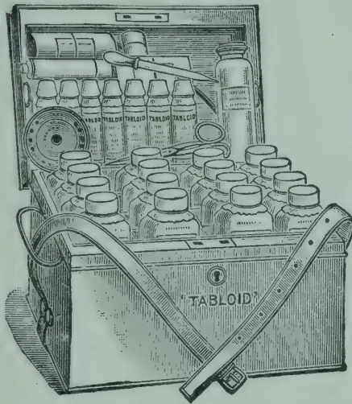
A compact yet comprehensive equipment containing medicaments, dressings, etc., which always maintain their efficiency in tropical climates.
Particularly adapted to the needs of settlers and planters. The ideal medical equipment for out-stations, works and camps.
Obtainable from all Chemists and Stores
BURROUGHS WELLCOME & CO., LONDON
AND COOK'S BUILDING, HORNBY ROAD, BOMBAY
xx 2703
All Rights Reserved
T. B. CROSS,
Poultry Instructor, School of Agriculture, Codara, Natal.
Turkeys have been domesticated for a great number of years, but still may be found in their wild state in Northern America. Other denizens of the poultry-yard have greatly increased in size and weight, but not so the Turkey. Wild males have been shot weighing as much as 60 lb., whereas the greatest weight obtained in the domesticated bird is about 46 lb. This is purposely mentioned, as in our experience we find that turkeys always thrive best if kept under the most natural conditions. Undoubtedly the most popular breed in South Africa is the American bronze, and this is not difficult to understand, as they are the largest, very hardy, and well adapted to this climate. White Australian or White Holland and Black Turkeys are not bred in large numbers, and from a commercial aspect do not compare favourably with the Bronze, though of late the White has improved considerably in size.
326[NOVEMBER, 1920.The general characteristics of this breed are as follows : Head, long and broad and carunculated (i. e.) covered with fleshy protuberances ; Beak, strong, curved, well set in the head. Eyes, full. Throat wattle large and pendent. Neck, long, curving backward toward the tail, the top and most of the front carunculated. Body, long, deep through the centre, and well rounded. Breast, broad and full ; the cock's beard long, bristling, and prominent. Back, somewhat curving, rising from the neck to the centre and descending in a graceful curve to the tail. Wings, large and powerful, carried well up and closely to the sides. Tail, long and drooping, the end almost touching the ground. Legs, long, stout and strong. Toes, straight and strong. Carriage, stately and upright. Plumage, hard and glossy. In the Poultry Club standard (English) the following weights are given for adult birds : Bronze cock, 36 lb. hen 20 lb. Black cock, 27 lb.; hen, 18 lb. White cock, 26 lb.; hen, 16 lb.
Beak, light horn at the tip and dark at the base. Eyes, dark hazel or brown. Head (including face, jaws, throat wattle, and caruncles), brilliant red, changeable to blue-white. Legs and feet, black, approaching brown in young birds and of a pink or flesh-hue in adults. Plumage of Cock : Neck, light, brilliant bronze. Beard, black. Back, light brilliant bronze, each feather terminating in a narrow black band extending across the end. Breast, dark brilliant bronze. Body, black, shaded with bronze, but not so brilliant as that of the breast. Wings : Bows, black, with a brilliant bronze or green lustre ; coverts, rich bronze, the feathers terminating in a black band and forming a broad band across the wings when folded, and separated from the primaries by a glossy black ribbon-like mark formed by the ends of the coverts ; primaries, black or dark brown, pencilled across with bars of white or grey, the more evenly the better ; secondaries, similar to the primaries, the colours changing to a bronze brown as the middle of the back is approached, but with little admixture of white ; an edging of white or brown on the primaries or secondaries is very objectionable. Tail, dull black, each feather regularly pencilled with narrow bands of brown, ending in a broad black band with a wide edging of dull white or grey, the coverts dull black or dark brown each feather regularly pencilled with narrow bands of brown, ending in a wide black and bronze band extending across the feather, with a wide edging of white or grey. The more distinct the colours throughout the whole plumage the better.
Plumage of the Bronze Hen.—Similar to that of the cock (but not so brilliant nor so clearly defined), except an edging of white on the feathers of the back, breast, body, and wing-bows, the edging to be narrow in front and gradually widen as it approaches the rear.
Beak, pink or flesh-coloured. Eyes and Head, as in the bronze. Legs and Feet, white or pink-white, Plumage, pure white ; the cock's beard, deep black.
NOVEMBER, 1920.]327Beak, dark horn or slate-black. Eyes, dark hazel. Head, as in the Bronze. Legs and Feet, dark lead or slate-black. Plumage, lustrous black.
In all breeds, crooked breast-bone, wry or twisted tail, or any deformity are considered serious defects. For exhibition very small specimens or birds differing in colour of plumage from the standard should be passed over.
In selecting the breeding stock great care should be taken that they are strong, vigorous, and, above all, healthy; very small or over-grown birds should on no account be bred from, the craze for size does much harm, especially if very heavy males are used. Let the "tom" as the turkey cock is generally called, be a typical specimen, unrelated to the hens, and not too heavy: 25 to 30 lb. for a stock bird in hard condition is quite enough; he should have good depth of body, with full rounded breast. The breast-bone should be long and perfectly straight, as turkeys are bred principally for the table; this is a most important point in both sexes. The thighs, long, stout, and well apart; shanks, large and strong, and toes well spread and perfectly straight. A turkey cock is better at two to four years old as a breeder than a year old bird; Bronze turkeys breed very true to type and colour, so there is no need to inbreed to fix these or any other points. Up to ten or twelve hens may be mated to a vigorous tom; they should be at least twelve months old, but preferably two or three years, well grown, and vigorous, but not more than 20 lb. in weight; abnormally large hens may win in the show pen, but as breeders are invariably a failure.
To breed turkeys successfully free range is absolutely essential as they are naturally of a restless and roving disposition, and if closely confined quickly become listless and fall off in condition. Adult stock do not require any house or shelter, and remain in perfect health and condition if roosting out all the year round. The roosting place should, however, be enclosed by wire-netting to protect them from thieves and vermin. The perches, which can be erected between trees or substantial uprights, should not be more than 3 or 4 feet high, as turkeys are liable to injure their feet in flying down from high roosts; the perches, which can be of wattle or gum saplings sawn in half should be smooth of surface and not less than three inches broad. It is not advisable to keep other poultry with them, as both turkey cocks and hens are apt to bully and often severely injure other birds.
During the breeding season, turkey hens often suffer injury through the attentions of a vigorous male, and such hens should be removed until the back has healed.
The breeding stock may be fed as follows: Mash in the morning consisting of equal parts of bran and pollard mixed to a crumbly consistency with water, or once or twice weekly in winter with soup; to this kitchen scraps of vegetables, meat, and bread may be added; if plenty of insect life is obtainable soup and meat may be withheld. In winter, when grass is scarce, cooked vegetables may with advantage be added to the mash, and chopped cabbage, etc., fed at noon. Mash should always be fed in troughs, and approximately one handful to each bird will be found sufficient. In
328[NOVEMBER, 1920.the evening grain may be given ; oats and wheat are excellent, but maize and kaffir corn should be fed with discretion, especially near the beginning of the breeding season. Flint grit and oyster-shell should always be available. The amount of food fed to a flock of turkeys must necessarily depend to a great extent on what they can find in the fields ; for instance, if wheat stubble is close at hand they can be driven there in the morning and left until night, and feeding them is quite unnecessary.
The first eggs may be expected about the end of June, and the hens should be allowed to select their own nests, as they will seldom lay in nests prepared for them ; at this period they exhibit great shyness and should on no account be interfered with so long as the nest is in a safe and suitable place. As the eggs are laid they should be removed and safely stored in a cool room and turned daily ; unless a nest egg is left in the nest the hen will probably desert it.
When broody, unless under exceptional circumstances, it is advisable to bring the hen in and set her in a suitable place where no dogs or vermin are likely to disturb her.
Turkey eggs incubate in twenty-eight days, and may be hatched out under ordinary hens, turkey hens, or in an incubator, but, generally speaking, poults, as the turkey chicks are called, thrive better with a turkey hen. Not more than fifteen or sixteen eggs should be given to a turkey hen to hatch, or more than ten to an ordinary hen. Turkey hens often sit too closely, especially if near a spot where many people pass, and settings are sometimes spoilt by over-brooding. The spot chosen for the nest should be on soft ground lined with hay and a roomy box put over it for shelter ; needless to say, a site likely to be flooded should not be selected, and on no account should the nest be made up on a wooden floor. Food, water, and grit should be put down near the nest so that the hen can come off to feed, etc., at will ; during the period of incubation small, yellow maize is the best grain to feed ; mash should not be given. Until the hen is settled in her new nest it is advisable to give her a few nest eggs, otherwise valuable eggs may be spoiled. If possible, the nest should only be visited when the hen is off.
Twenty-four hours after the chicks are hatched they should be moved with the hen to the run or yard they are to occupy. Runs that have been used for other poultry will not do for poults ; the ground must be swept and clean, and if under short grass so much the better. Turkey hens, if given complete liberty with their brood, are likely to wander too far and run all but the strongest off their legs. Poults cannot stand any dampness, so on no account should they be allowed to get wet by rain or by running in long grass. It is better, therefore, not to give them free range until about fourteen days old. Milk in any form is excellent for them, not only mixed in their soft food, but also to drink. A sudden change, however, from sweet to sour milk must be guarded against, otherwise diarrhoea may result. For the first week dry bread, coarse oatmeal, boiled rice and bran slightly moistened with milk forms an excellent feed ; to this can be added or fed separately finely chopped green food such as succulent green grass, lettuce, lucerne, or better still, onion tops ; only a little food should be put down at a time, just sufficient for them to clear up readily. Food or green stuff must not be allowed to lie about the run ; after the first week a little meat food is necessary, finely
NOVEMBER, 1920.]329chopped liver or green bone until the poults can get insect life for themselves. Fine grit or sand and vegetable charcoal should always be available; the latter may be dusted over the mash two or three times weekly with advantage. After the first week, and until three months old, four feeds daily should be given, the first morning feed to consist of mash, the basis of which should be wheaten bran, to which may be added household scraps boiled overnight or one part of Sussex ground oats to two of bran, mixed with milk; in cold weather a little maize meal can be added to the above. At first all grain should be finely broken up as in chick mixtures, but whole grain, with the exception of maize, may be given when four or five weeks old; the latter should be crushed. When the turkey poults become red about the head and neck they may be taken from their parent; if not she will probably induce them to roost at night, which will spoil (i. e. dent or cause to become crooked) their breast-bones, a bad fault in a bird required for the table.
Until four months old young turkeys are better at night if shut up in a roomy shed, the floor well covered with dry litter; during a spell of dry weather they should be put out to roost in the open and allowed to remain out whatever the weather may be. As with the breeding stock the perches must not be more than three or four feet high, and at least three inches wide.
If flocks of young turkeys are inclined to hang about the house, it is advisable to drive them afield every morning in order that they get as much insect life as possible; they will quickly learn to go into the lands and forage for themselves. Young turkeys intended for the market in South Africa at Christmas time should not be too closely penned up to be fattened, in fact where the range is good and insect life plentiful it is unnecessary. Increase the feed and add milk to the mash; Sussex ground oats are a valuable addition to the latter and tend to whiten the flesh.
Before killing, turkeys should be kept without food for eighteen to twenty-four hours and without water for eight; if they are killed with full crops the skin quickly becomes discoloured. To kill quickly it is advisable to hang the turkey by the legs to a strong hook in the wall or to a beam, so that the head is at a convenient height, the wings should be locked behind the back, open the turkey's mouth with a sharp narrow-bladed knife, cut the jugular vein on each side of the throat, then push the point of the knife up the roof of the mouth into the brain, slightly turning the knife before withdrawing it. Commence to pluck immediately before the body gets cold; do not remove the feathers by dipping the body into hot water, it may be quicker, but it spoils the look of the carcase and hardens the flesh. For home consumption the bird may be killed by dislocating the neck, but for market or export this gives it an unsightly appearance as the neck is swollen with congealed blood.
Turkeys are subject to most of the ailments and diseases which attack fowls, but are seldom anything but hardy after they are six months old. The following are most commonly met with in rearing poults.
Colds.—Young turkeys, from two to four months old, are rather subject to colds; it seldom affects those that are big enough to roost in the open,
330[NOVEMBER, 1920.but poults housed in unsuitable quarters. The first symptoms are a swelling on one or both sides of the head, watery eyes and nostrils. First give a small dose of epsom salts, say, one tea-spoonful in a table-spoonful of warm water. To reduce the swelling, bathe the head daily in warm water with a little boracic acid added. Give daily, until better, three or four drops of chlorodyne in a tea-spoonful of sweet oil and add some chopped onion to the morning mash.
Roup.—In cases of roup the above-mentioned symptoms are often present and, in addition, an offensive smelling discharge from the nostrils. Treat as in colds, but wash the head, eyes, mouth, and nostrils daily with a solution of sulphate of copper. To make a suitable solution, dissolve 1 oz. of sulphate of copper in 10 oz. of rain or soft water, add 1 table-spoonful to each quart of drinking water; double the strength for washing the head, etc. Roup is a contagious disease, and sick birds should be isolated; bread and milk is the best food for a sick bird.
In diphtheritic roup, patches of yellowish matter appear in the mouth, throat, and frequently under the eyes; treatment is seldom satisfactory, and it is safer, if many birds are kept, to destroy and burn the body. As in all cases of a contagious nature, the remainder of the flock should be given a clean house and a change of ground without delay; a little permanganate of potash, sufficient to make it pinkish, should be put in the drinking water.
Chicken-pox.—This disease, sometimes known as warts, may be recognized by a number of small black sores or scabs about the head and sometimes on the bare skin under the wings. Wash the sores daily with a fairly strong solution of permanganate of potash or vinegar and warm water, carefully removing the scab or crust of all sores, which should be anointed with carbolized vaseline or flowers of sulphur and lard. Give daily two or three pills of equal parts of flowers of sulphur and lard, about half an inch in length, and the thickness of a pencil. Feed on soft mash only and allow plenty of green food. This is not a serious disease, but birds may become blind by the warts forming on the eyelids, as they frequently do, and may starve if not hand-fed. As a precautionary measure during the hot summer months, one ounce of flowers of sulphur may be added to the mash of every fifteen birds once a week.
Scaly Leg.—This unsightly ailment is not common among turkeys, but can easily be cured by washing the legs with soap and warm water and applying paraffin oil. Several applications are necessary to effect a permanent cure.
Bumblefoot.—A swelling on the sole of the foot caused by hard dry ground or by flying down from high perches. Keep the patient on soft litter and paint every other day with iodine. Should an abscess form, it is advisable to lance it and apply a bread or linseed poultice to withdraw the accumulated pus. Bandage the foot to keep out dirt and wash daily with a weak solution of permanganate of potash or bichloride of mercury.
Leg weakness.—When growing rapidly, young turkeys, especially the cocks, are subject to this ailment; they squat on their hocks and generally appear weak on the leg. Give plenty of animal food, such as chopped liver or green bone, and a little Parrish's Chemical Food in the drinking water. Remove to another pen if the others are inclined to bully, a thing young turkey cocks are often guilty of.—JOURN. OF DEPT. OF AGRIC., UNION OF SOUTH AFRICA, Vol. 1, No. 5,
NOVEMBER, 1920.]331Minutes of a meeting of the Matale Food Production Committee held at the Matale Kachcheri on the 26th August, 1920, at 2 p. m.
Present.—The Assistant Government Agent (in the Chair), Messrs A. B. THOMSON, G. F. ABAYAKOON, Kachcheri Mudaliyar ; Ratemahatmayas, Matale South, North and East ; Agricultural Instructor, Matale ; the 6 Assistant Instructors and Mr. P. SARAVANAMUTTU, C. C. S. (the Hony. Secretary).
Minutes.—Minutes of last meeting were taken as read and confirmed.
Programmes.—Programmes of work of Agricultural Instructors for the following month were approved.
Sale of Vegetables.—With reference to the suggestion made by Mr. ABAYAKOON at the last meeting in regard to sale of vegetables within Local Board limits by hawking, the Chairman informed the meeting that hawkers of vegetables were permitted to sell vegetables without obtaining a license and they were also allowed to occupy the grounds of the market on any day without payment of a fee. He stated that people were also permitted to occupy a portion of the market grounds to conduct a Sunday Fair for sale of vegetables without the payment of a fee.
Mr. Senior White's letter.—Read letter from MR. SENIOR WHITE tendering his resignation as member of the Committee. Resolved to acknowledge his letter and express thanks for the good work he has done in the Committee. A special letter was written to him by the Chairman.
Batalawela Anicut.—The Assistant Government Agent to inspect next month.
Silting of Irrigation Channel at Ranwediyawawa.—The Assistant Government Agent to write to Estate Superintendent.
Next year's Agricultural and General Show.—Resolved to circulate suggested schedule made out by MR. THOMSON to members of show Committee who will make their recommendations which will be considered at next Food Production Committee Meeting on September 24th (Friday).
Minutes of a Meeting of the Matale Food Production Committee held at the Matale Kachcheri on the 24th September, 1920, at 2 p.m.
Present.—The Assistant Government Agent (in the chair), Messrs. H. Storey, J. Henry, G. Harbord, Divisional Officer ; G. F. Abayakoon, A. Madanayake, Agricultural Instructor ; the Ratemahatmayas of Matale South, North and East, six Assistant Agricultural Instructors and Mr. P. Saravannamuttu, C. C. S. (Honorary Secretary).
332[NOVEMBER, 1920.Minutes.—Minutes of last meeting were read and confirmed.
Honorary Secretaryship.—In consequence of the transfer of MR. SARAVANAMUTTU, C C S., who was Secretary of the Committee for the last three months it was resolved that MR. G F ABAYAKOON, Kachcheri Mudaliyar, be appointed Acting Secretary.
Transfer of Agricultural Instructor.—The Chairman informed the meeting that MR. MADANAYAKE who was working hard and efficiently in the District for the last years as Agricultural Instructor is transferred and Mr. NUGAWELA of Kurunegala is appointed to succeed him.
Potato Cultivation.—Read letter No. 716 of 9. 9. 20 from the Government Agent, C. P., re Potato Cultivation. After some discussion on the subject it was decided to drop the matter as potatoes do not thrive well in this District.
Agricultural Show 1921.—It was unanimously decided to have a big Agri-Horticultural Show for the whole District in July 1921. Chairman to call a public meeting on the 16th October to discuss further details.
Grain Store and Seed Depot.—Read letter No. 220 of 4th September, 1920, from the Director of Food Production regarding the establishment of Grain Stores and Seed Depots in the District. After a long discussion it was resolved that there is not a sufficient surplus of grain and other produce in this district to justify the establishment of a Grain Store and Seed Depot to which produce might be brought with a view to sale to estates and large firms.
Maningamuwa Experimental Garden.—The question of disposing of the produce of the garden was discussed. Decided that the Agricultural Instructor and his Assistant at Paldeniya be held responsible for the disposal of the produce of the garden and for depositing the proceeds at the Kachcheri. It was also decided to put up a direction board on District Road Committee Road near the garden.
Welamitiyawa Fields.—Read letter from Mr. BOANGE, Agricultural Instructor, Galewela, regarding the cultivation of Welamitiyawa fields belonging to the Dambulla Vihara. The Chairman promised to see the Commissioner under the Buddhist Temporalities Ordinance on the subject.
Conference of Headmen and Vel Muladaniyas.—Read letter from MR. SYLVA, Agricultural Instructor, Naula, suggesting a conference of headmen and Vel Muladaniyas (1) to consider what steps should be taken to cultivate fields during the coming season and (2) to discuss the possibilities of forming a co-operative credit society. The suggestion was approved and the Ratemahatmaya North was asked to preside at the meeting.
Rewards to Vel Muladaniyas.—Read letter from MR. PERERA, Agricultural Instructor of Paldeniya, suggesting that the Vel Muladaniyas be rewarded for good work. Decided to circulate the letter among the Ratemahatmayas.
Agricultural Instructors' Programmes of work for next Month.—Programmes circulated among Committee Members and approved.
Meetings.—Decided to hold meetings as usual for Ratemahatmayas and Instructors and to issue notices to all members if there is anything special to come before the meeting.
NOVEMBER, 1920.]333VAVUNIYA.Minutes of Meeting of Vavuniya Food Production Committee held at Vavuniya on the 27th September, 1920.
Present.—The Assistant Government Agent, Mullaittivu, Chairman ; Kachcheri Mudaliyar, Secretary ; Official Members 5 ; Unofficial Members 5.
Considered letter from the Director of Agriculture re Grants-in-aid for Agricultural Shows and Competitions, and it was decided to hold an Agricultural Show at Vavuniya in the latter part of March 1920. The Committee also looked into the list of exhibits for which prizes are to be awarded at the Show.
Considered the question of constructing agricultural wells. MR. P. R. MAPPANAR proposed that this item may stand over for the next meeting in view of the fact that the indigenous people of Vavuniya do not take to the cultivation of gardens and that it would be better to discuss the question after inspecting the place where certain settlers from Neerveli in Jaffna are taking to cultivation of vegetables in gardens.
Considered the question of shortage of buffalos. MR. MADUKANDA, Ratemahatmaya, brought to the notice of the house that it was not generally known in the District that she-buffalos should not be allowed to be sold. It was decided that the Chief Headmen should be issued a Circular to the effect that buffalos (both male and female) unless they are old and unfit for ploughing purposes should not be sold. The Chairman pointed out that by Ordinance No. 17 of 1920, the slaughter of buffalos is to be prohibited.
MR. P. R. MAPPANAR suggested the appointment of a cultivation officer for Vavuniya but it was decided that such an appointment was unnecessary as the Udayar and K. V.'s should be capable of looking after the cultivation. The Chairman pointed out that what was actually required was an Agricultural Officer who would be able to advise with regard to cultivation.
Mr. MADUKANDA, R. M., suggested the establishment of a seed paddy store at Vavuniya but it was decided that this was not necessary as it would encourage laziness. The Chairman pointed out that the first thing that the cultivator should do is to keep in reserve the seed paddy as soon as paddy is thrashed.
MR. MADUKANDA, R. M., raised the question of an appointment of an Agricultural Instructor and he was informed that an officer has been appointed in Jaffna who would be in charge of Vavuniya and that he would supervise the experimental cultivation of paddy now taking place in the fields belonging to Thamu Udaiyar Thampu about half a mile from Vavuniya on the North Road.
MR. MADUKANDA also raised the question of restoring abandoned tanks in reserved areas and he was informed by the Chairman that such applications would be scheduled and considered en bloc.
334[NOVEMBER, 1920.The Deniyaya Co-operative Credit Society was started at the end of 1918 at Deniyaya in Morawak Korale. It commenced work early in 1919 and received the support of the well-to-do classes of the community and has secured the services of the leading residents as office-bearers. MR. W. P. F. DE LIVERA, Mudaliyar of Morawak Korale, is the President of the Society. MUDALIYAR DE LIVERA takes a great deal of interest in the work of the Society. MR. D. M. RAJAPAKSE, J.P. & U.P.M., Proprietary Planter, is the Vice-President. He has very kindly met the initial expenses of the working of the Society. The Society is fortunate in securing the services of MR. R. C. KANNANGARA as its Secretary. MR. KANNANGARA is an enthusiastic worker. It has another earnest supporter in MR. P. FIGARDO, the Treasurer of the Society. This Society has obtained the consent of the landlords to allow supplies of manures to be made by the Society to their tenants, MUHANDIRAM A. A. W. RATNAYAKE having led the way.
The Society has been successful within a period of 18 months to enrol a large number of members and transact considerable amount of business.
The following information extracted from the annual report of the Secretary read at the last Annual Meeting indicates the position of the Society. There were 334 members at the time of the annual meeting. The subscribed capital of the Society was Rs. 2,193'00 as against Rs. 1,417'25 at the time of previous annual meeting. The nominal capital of the Society was increased from Rs. 3,000'00 to Rs. 4,000'00 and the Society hopes to raise the subscribed capital to Rs. 4,000'00 as early as possible. The Society has given out in cash, loans amounting to Rs. 2,487'00 to 32 members. Out of this 14 members have paid back their loans, amounting to Rs. 1,345'52, and there were 8 loans amounting to Rs. 1,191'48 outstanding at the time.
The Society has supplied manures for paddy to 164 members during the year at a cost of Rs. 2,602'95. A sum of Rs. 829'79 has been recovered and Rs. 1,773'16 were outstanding. In the previous year 134 members have been supplied with Rs. 1,816'39 worth of manures. Of the latter 133 members paid their loans at due dates. Within the last two years, the Society has purchased 36 tons 19 cwt. of paddy manure at a cost of Rs. 5,969'66 and has issued 30 tons 15 cwt. costing Rs. 5,040'13 to members. "I was pleased to draw your attention to one outstanding feature in these loans and that is the honesty of our village members in the matter of repayment of debts," says the Secretary in his report. "The majority of members have given us no trouble whatever. They always seem to consider their loans as debts of honour and like honourable men they always come before the Hony. Treasurer or Secretary and pay their debts with interest without
NOVEMBER, 1920.]335the least grumbling. They are beginning to realise the very reasonable terms on which they are getting their manures from the Society." This speaks well of the members and the business principles of the Society.
So far there is only one depositor who has deposited a sum of Rs. 35'00 with the Society. The net profits realized by the Society since its inception is Rs. 509'27. The Society held during the year two extraordinary general meetings and 19 Committee Meetings. This is a record. The following are some of the subjects that have been discussed at meetings during the year :—
(1) Increase of nominal capital from Rs. 3,000'00 to Rs. 4,000'00.
(2) Fixing the limit of the amount of loan that the Committee is authorized to borrow within one year.
(3) Selection of delegates to the Co-operative Credit Conference held in July last.
(4) Purchase and sale of rice during the rice crisis.
(5) Fixing of the maximum of the amount of a loan to a member from the Society.
(6) Desirability of establishment of a Co-operative Central manure depot in Colombo, and to ask the Registrar to take necessary steps to organise one at an early date.
A Government loan of Rs. 2,000'00 was allowed to this Society in June last.
Under "Rice Distribution" the following passage occurs in the report above referred to : "When the serious rice shortage occurred last year the local traders started profiteering to a disgraceful extent and the poor people were on the verge of starvation. Our Committee decided and kept apart a sum of Rs. 300'00 for purchase of rice. With this money the Society bought rice from Matara and sold to members. We have done this since July 1919 and still continue to do so. A great many people came to realise the usefulness of our Society by this action of ours."
N. W.
The Walasgala Co-operative Credit Society was organised by DR. C. A. HEWAVITARANE for the benefit of the employees and the villagers of the neighbourhood of the Walasgala Estate in the Wellaboda Pattu of the Matara District. At the commencement 31 persons enrolled as members and made a small contribution as share money. DR. HEWAVITARANE was elected President, the Superintendent of the Estate as Secretary and the village Headman as Treasurer. A small Committee was elected from the members. The value of a share was fixed at 50 cents. The President met the initial expenditure in the purchase of pass books and account books. At the end of last financial year the Society had Rs. 60'00 as paid up capital which was to all appearance and in reality a small beginning, but were all savings of members. During the rice crisis the Society supplied the members with green gram and other cheap foodstuffs at cost price out of the Society's funds which are the members' own money. This was a stimulus to members. At the last new year the members, majority of whom are village women, were supplied with cloths purchased with the Society's funds in addition to the free gifts of cloths granted by the President of the Society. A small profit was made by this transaction and credited to the funds of the Society. Thus through the help of the Society a small beginning has been made in the direction of self-help among a very deserving class of people.
N W.
336[NOVEMBER, 1920.We take the following paper which was read by ALFRED VIVIAN, at the Middle West Fertility School from a recent issue of the American Fertilizer:—
“A marked difference between plants and animals is seen in the fact that the animal can, in most cases, seek its own food, because of its power to move freely from place to place. The plant, on the other hand, is limited in its ability to move, and consequently nature must provide some method of bringing the food to the plant. The process by which nature accomplishes this result is known as diffusion, and is most easily explained in the case of gases.”
The physicists believe that all substances are composed of small particles called molecules, and that these molecules are in constant motion. In the case of gases this motion is so free that it is possible for the molecules of the gas to move to an indefinite distance in any direction. If, for instance, a small quantity of any gas were introduced into a large vessel, the gas would diffuse in all directions until it was evenly distributed throughout the entire vessel, and it is also true that if small quantities of several gases were introduced into the vessel, each one would diffuse independently of all the others until it was evenly distributed.
This diffusion takes place regardless of the weight of the molecule or of the attraction of gravity. If it were not for this power of the gases to diffuse, our atmosphere would consist of at least three layers of gases—carbon dioxide, the heaviest of the gases, forming the layer next to the earth, the second layer being composed of oxygen and the third and thickest being composed of nitrogen. The diffusion of the gases, however, is so complete that our atmosphere is practically always uniform in composition.
This matter of the diffusion of gases has an important bearing in plant nutrition. The leaves of the plant absorb carbon dioxide from the air, separate the carbon and use it in building up plant structure, and give off the oxygen into the atmosphere. It will readily be seen that the leaf would soon use all of the carbon dioxide in direct contact with its surface, and if it were not true that more carbon dioxide diffuses into the leaf and that the oxygen diffuses out into the atmosphere, the leaf would soon be suffering for need of further carbon. Nature seems always to be endeavouring to establish equilibrium, and whenever this equilibrium is disturbed, diffusion rapidly takes place in the effort to restore it.
In the case of solid materials it is likewise supposed that the molecules are in constant motion but that they cannot move beyond the confines of the solid mass. If, however, the solid is dissolved in water, the liquid forms a medium through which the molecules can diffuse. In this case the diffusion
NOVEMBER, 1920.]337takes place much more slowly than it does in the case of gases, but the molecules of the solid continue to diffuse until they are evenly distributed throughout the liquid. Here, again, the molecules of each substance diffuse independently of all other substances, so that if there were several substances dissolved in water, each one would diffuse until it was evenly distributed throughout the liquid. If now, a quantity of any one of these solid substances is removed from the solution at any given point, more of that particular substance would diffuse into this point, and the diffusion would continue until equilibrium was again restored.
This ability of the solid molecule to distribute itself through a liquid is of importance in maintaining the fertility of a soil. The soil consists of particles of rock of various size, each one of which is surrounded by a thin film of water. If a soluble substance is added to the soil, or if some material already in the soil is made soluble at a certain point, the tendency is for that substance to diffuse through the soil moisture until it is evenly distributed throughout the soil. In this way it will be seen that when a soluble fertilizer is drilled into the soil, it does not necessarily remain in the particular place in which the drill deposits it, but that part of it, at least, distributes itself throughout the soil water, for some distance from the point where it is applied. It will be seen that this property of diffusion is, therefore, important in aiding in the proper distribution of fertilizers or plant food.
Another interesting fact is that this diffusion of substances will also take place through certain membranes. If, for instance, a vessel is divided into two parts by means of such a membrane as a piece of parchment paper or a piece of bladder, the solid substance and the water have the power of slowly diffusing through the membrane. When diffusion takes place through a membrane, it is customary to call it osmosis. In this case it is found that the molecule of water can pass through the membrane much more rapidly than can the molecule of the solid, probably due to the fact that the water molecule is smaller.
As a result of the fact that water passes through the membrane more rapidly, it will be seen that the side containing the largest amount of solid material will soon increase in volume, due to the movement of the water through from the other side of the membrane and in this way considerable pressure is developed which is known as osmotic pressure. It will be seen that here, again, nature is trying to bring about equilibrium, and the rapid diffusion of water through the membrane and the slower movement of the solid through the membrane will continue until the same concentration of dissolved substances is found on both sides of the membrane.
If, now, in any way either water or the solid substance is removed from one side of the membrane, active diffusion or osmosis again takes place in an effort to restore equilibrium. Let us now see what bearing this fact has upon plant nutrition. In the first place, it is well known that plants absorb very large amounts of water from the soil and give it off through the leaves by the process known as transpiration. The amount of water transpired by plants is equal to from three hundred to five hundred times the weight of the dry matter of the plant.
338[NOVEMBER, 1920.If we were to examine carefully the growing point of a plant root, we would find that it is surrounded by a large number of what are known as root hairs. Under the microscope these root hairs are seen to be minute bladders with very thin walls. These root hairs contain an amount of dissolved substance which makes the cell sap a more concentrated solution than the soil water, with the result that the water from the soil passes in by osmosis in the effort to bring about equilibrium between the interior and exterior solutions. The introduction of this water into the root hair makes its sap more dilute than that of the cell immediately above in, and consequently water then diffuses into the next cell. This process continues until the water reaches the leaf, where it is given off into the air through transpiration. The result is that equilibrium is never actually reached, and there is, therefore, a constant movement of water from the root hair to the leaf as long as the plant is in a growing condition.
In the case of the typical plant cell we have a cell wall composed of cellulose, which gives the strength to the plant. Immediately inside of the cell wall is the layer of protoplasm which serves as the membrane mentioned above. The result of the absorption of water is the development of a considerable internal pressure in the cell, which keeps the protoplasm pressed against the cell wall and gives the plant its turgidity.
The enormous pressure which may be developed through osmosis is shown by some experiments carried on with artificial cells where all conditions can be controlled, in which pressures were developed equivalent to a column of water one hundred and ninety-five feet in height. There are a number of familiar examples of osmosis and osmotic pressure well known to every house-wife. For instance, the wrinkled and shrivelled prune, when placed in water, becomes plump, due to the fact that the dissolved substances in the prune cause water to pass in by osmosis, the skin in this case being a membrane, and sufficient osmotic pressure being developed to give turgidity to the fruit.
It occasionally happens that the soluble substances in the soil become so concentrated that the movement of water takes place from the plant into the soil instead of in the opposite direction. In this case so much water is taken from the plant that it loses its turgidity and is sometimes killed, due to the shrinking of the protoplasm, a process which is known as plasmolysis. On two or three occasions I have seen this happen in greenhouses where too much fertilizer material had been used on the bench soil. This explains, also, why it is always advisable to avoid having very much soluble plant food in close contact with the seeds and why very soluble fertilizers also prove injurious if they come in contact with the leaf while it is moist from dew.
The same general principles are involved in the absorption of the solid substances by the plant. The soluble material in the soil will pass by osmosis into the root hair, and if none of it went further the osmosis would continue until the equilibrium had been established for each soluble substance in the soil water and in the cell sap. But as soon as the sap in the root hair
NOVEMBER, 1920.]339becomes more concentrated, these mineral substances will diffuse into the next cell, and this process will continue from cell to cell in the effort to establish equilibrium throughout the entire plant. The plant will use some of this material to build up new tissue, and this process, of course, removes the substance from solution and tends to destroy equilibrium.
It will be seen from this fact that those substances which are used in the greatest quantity by the plant will, therefore, pass into the plant in greatest quantity, due to this law of diffusion or osmosis. If there are any substances dissolved in the soil water which the plant does not use the diffusion of that material will soon cease because equilibrium for that substance will be produced. Apparently the plant has no power to reject substances which are dissolved in the soil-water, since it absorbs soluble poisons as rapidly as it does the valuable plant food. While these statements show in a general way how the plant obtains its water and the other elements of plant food, the matter is not so simple as might be inferred from this description. There are, for instance, solids dissolved in the cell sap which do not diffuse through a membrane and yet have the power of developing osmotic pressure. This is an additional reason why the plant never reaches equilibrium so far as water is concerned.
Again, it is known that there are selective membranes which will permit some substances to pass through, while others cannot do so. The sugar beet, for instance, has such a selective membrane, and the sugar which is formed inside the cell cannot diffuse out. It will be seen that this is a wise provision of nature, since otherwise the sugar in the beet might all diffuse into the soil water during the winter season.
This talk no more than hits what might be called the high points concerning the manner in which the plant is able to obtain its plant food. No one believes that the whole truth about the matter has yet been discovered, and many of our most eminent chemists and plant physiologists are now devoting a large part of their time to a study of the relation of diffusion, osmosis and osmotic pressure to plant growth."—INDIAN SCIENTIFIC AGRICULTURIST, Vol. I. No. 10.
We have had numerous articles in this Journal in the past, beginning 1899, on the use of cowpeas and other legumes as (a) a cover crop to keep the land cool (a green mulch) and suppress weeds, (b) as a manurial crop. The use of cowpeas, etc., was slow to be taken up, and even yet is hardly known to many cane and banana plantations, although the growing of cowpeas through young canes and bananas could add pounds (sterling) per acre to any planter's pocket.
To encourage the growing of cowpeas, etc., we have stocked seeds of the following legumes for many years, each serving its own purpose—(1) Cowpeas of different varieties. (2) Bengal Beans (practically the same as the Florida Velvet Bean). (3) Overlook Cut-Eye or Horse-Eye Beans. (4) Jerusalem Peas.
340[NOVEMBER, 1920.The most useful all-round legume for green dressings is the brown or clay-coloured cowpea now quite commonly sold and appreciated in the markets for food. The Cowpeas have a spreading habit, to bear according to seasons and soil in to months. They should be planted or thereabouts. The Black Eye Cowpea is considered finer to eat, but is not quite so hardy or vigorous as the foregoing. The New Era Cowpea is a quicker grower than either, coming in, in 3 months or so. It grows upright, does not spread, and can be planted close . It bears heavily and withstands drought well. The colour of the pea is a blue-grey if pure, but it has probably crossed with the brown cowpea and some seeds are rusty brown in colour.
It is not yet well known in the markets, but where known is appreciated as a fine eating pea.
The Bengal Bean (Mucuna pruriens var utilis) is black and shiny, is not eaten as human food, but can be ground for stock feed and used with corn. The vine is almost identical in appearance with the common Cowitch and makes the same rampant growth, but the pods are entirely free of the prickly fine hairs of the Cowitch. This bean should not be planted through young canes as it would soon cover them, and even if one row is planted up young bananas on good soils the vines will often crawl over the bananas. But to prepare land for canes or bananas whether new land or old land, this is the crop. Planted 3 feet apart, these Bengal Beans will cover the ground within 3 months in a dense mass of vegetation. No weeds can grow under the vines, even Para Grass will be crushed out. Then this crop can be fed down by cattle and thus better prepare the ground for a following crop. It can be planted through Guinea Corn or Maize Corn for forage or silage purposes giving either crop a good fortnight's start.
The Overlook Bean (Canavalia ensiformis) is a large white bean, and a sure grower, but about which there is a lot of superstition. It is not poisonous as is usually thought, but can be eaten both by man and beast—the young green pod especially makes a good green vegetable. This is a favourite bean in St. Mary to plant through bananas, as it will stand a good deal of shade which the Cowpea won't. It does not make as dense a growth as the foregoing legumes, its manner of growing being more loose and open but its roots can dig further down into clay soils than any other legume. The beans can be ground and mixed with corn for mules, etc.
The Jerusalem Pea (Phaseolus mungo)—how it got this name no one seems to know—was brought here by East Indians from India, and they have several varieties. It makes good eating. It makes a delicate start, just like a young Pigeon Pea, but soon gains strength and in a few months makes a close dense growth. Its blossoms are yellow, and it usually only seeds in October and November in the wet weather so that often the peas start growing in the pod before they can be picked.
Then there is what is called Florida Beggar Weed (Desmodium Johosum) a cultivated variety of plants that we have growing wild here. This is not much used but it makes an excellent cover crop and splendid forage for beasts. The seed is not used for food.
* * * * *
Few here estimate the value that these legumes are to our soils, if a full crop is turned in as a green dressing. In these days of scarcity of foods, however, we only send out cowpeas to those who will guarantee to reap the crop and not turn them under as a green dressing. For growing among canes and bananas, we recommend a dressing of fertilizer to the cowpeas to make up for what is taken away in the grain. The fertilizer will add vigour to the root and vine growth of the cowpeas. Only a small proportion of nitrogen is required in a fertilizer for cowpeas to give the peas a quick start, so that as nitrate of soda and sulphate of ammonia are the most
NOVEMBER, 1920.]341expensive items in a fertilizer, and phosphoric acid and potash much cheaper, there is a great gain through growing cowpeas to increase the soil content of nitrogen, and add to the foods of the country at the same time.
* * * * *
Fertilizing Value of Cowpeas.—Ploughing in the whole crop of cowpeas as manure will add 80 lb. of nitrogen to the soil per acre, and also increase the supply of humus. This is more than many cart loads of animal manure per acre would add, and this of course cannot be held by most planters.
If the crop of grain is taken off, but the vines and roots ploughed in, 20 lb. of nitrogen will be added to the soil.
If beasts are turned in and the crop fed green—such as with Bengal Beans—not less than 60 lb. of nitrogen is added to the soil.—JOURN. OF JAMAICA AGRIC. SOC., Vol. XXIV, Nos. 6 and 7.
W. MOLEGODE, S. A. I.
Although less widely cultivated than sweet potato and manioc, tannia or coco yam is an important root crop and is a popular vegetable obtainable at all our markets almost throughout the year. Unlike the sweet potato and manioc, tannia has a superior keeping quality and like potatos may be kept for several weeks. Locally it is known by a number of names, such as Desa-ala, Deki-ala, Rata-ala, Gahala, Kokis-ala and Habarala. In the West Indies, Tropical America and India it is an important food crop and is known by various names such as Dasheen, Taro, Cocœ, Tanyah, and Eddoes. It is easily recognised by its resemblance to the garden Caladium with green leaves on long fleshy stalks. The crop is grown for the cones or under-ground tubers which besides the use as a vegetable yield a good flour.
Propagation is by tops of tubers or small tubers. If large tubers are to be used they should be cut into a number of pieces each containing an 'eye' or small bud. Tops of tubers yield quicker. It can be successfully grown throughout the Island. It succeeds best on damp lands. A fair amount of moisture and humus are necessary for its successful growth. The plant is indifferent to light and shade and will grow in the open or under thick shade.
The distance of planting will vary according to the variety cultivated. Those with the spreading habit should be planted 3 × 3 ft. and others 2 × 2 ft. The land should be dug fairly deep. If tops of tubers are planted they should be buried 2 or 3 inches in the soil. Tubers are usually put 2 or 3 inches deep and the soil pressed down. Keep the soil free of weeds until the plants grow and as the plants grow draw up the soil to the plant.
The crop is ready to be lifted in about 8 to 9 months and the yield varies from 8 to 12,000 lb. per acre according to methods adopted in cultivation and variety.
100 tops of tubers planted in January in rows 2 × 2 ft. were raised early in September and yielded 438 lb. of tubers which sold at -/06 cts. per lb. After plants were put hardly any attention was paid except one weeding in April and drawing up of the soil.
342[NOVEMBER, 1920.H. H. COUSINS,
Director of Agriculture.
The Government Farm at Hope has had extensive experience of the use of Guango (Inga Saman) pods for feeding dairy cattle during the past three years, and it is due to this valuable material that 300 head of cattle were kept on a little over 200 acres of land at Hope in 1919-1920.
Last year we stored 278 tons of Guango and during the year about 310 tons were actually fed to the cattle.
This year a store of 230 tons of Guango has been effected. Guango has been fed freely to all classes of cattle including calves and it is considered that 15 lb. of Guango per day is a reasonable allowance for a mature animal. Many cows, however, will eat 25 lb. of Guango without injury.
The bull "Mr. Hawkins" referred to by the Instructor, consumes at least 20 lb. of Guango per day at Hope, and is in the best of condition and has shown no ill-effect therefrom.
Guango is dangerous under the following conditions :—
A. If eaten mixed with Silage.—Where silage is used this should be fed alone in the morning and Guango fed in the afternoon. If the quantity be controlled below 20 lb. guango per head, this is quite safe. The Hope Farm lost six valuable native cows on the day of the sale through cows eating guango from a heap outside the yard after a heavy feed of silage.
B. If eaten after the pods have fermented.—The Guango pod is a saturated solution of sugars. If the pods get wet these sugars ferment and poisonous effects result from their consumption by cows. Consequently it is most necessary not to leave guango pods about, or to let cows enter a pasture where pods have fallen and fermented. The Director lost two of his own cows in 1913 through such an accident.
This year a cow at Hope unfortunately got access to fallen pods in a pasture that had been wetted by irrigation water and became very ill suffering from abortion and prolapsus as a result of acute guango poisoning.
C. If eaten in excess. Wholesome guango pods if eaten to excess, and particularly in the absence of sufficient succulent grass or where dry grass and insufficient salt have been fed cause "Guango farcy." This is a skin eruption and causes the animals to lose condition and to be thrown out of gear as dairy stock.
D. If crushed and allowed to ferment.—The kernels of the guango are astringent and readily fermentable. Crushed guango, unless fed fresh, ferments and causes irritation to the intestines and may cause death. It is now considered that unless guango be crushed with corn cobs or megass and the milk product dried for some hours at 150 F. that it is safer not to crush the pods but to feed them whole. Experiments in Megass-guango feed are now being organised with the assistance of the Food Controller.—JOURNAL OF JAMAICA AGRIC. SOC Vol. XXIV, Nos. 6 & 7.
NOVEMBER, 1920.]343H. W. BERRY, IPSWICH.
For several years I have made a special study of the cultivation of Tomatos out of door. During the season now ending—by no means one of the best for the ripening of Tomato fruits—I have had an enormous crop. I am more than satisfied, for whilst I have had excellent crops in other years this season I have had an abundance of fruit. I have been in the habit of planting twelve plants, and these have usually produced enough fruit to supply my household and some to give away ; but this year there has been such a large harvest that I have sold a quantity in order to get rid of them, and still an average out-door crop remains to ripen.
It may be of interest to your readers to know how such a heavy crop has been produced. For ten years I have grown Tomatos on the same site—a south aspect, against boards. I dig a large trench and place in it fresh soil each year. A quantity of stable manure is also added. This work is usually done in November or December, and the ground left rough until the following spring. I buy my plants early and plant them out in the prepared soil. This year I was too early and so lost my first trusses of fruit. This set-back made me study my plants carefully. They had been checked by the cold and, as the blooms would not set, I used a pencil brush to spread the pollen, but, alas ! with no result. I then gave the plants a little nitrate of soda at the roots, and it was a delight to see them respond thereto. A little later I gave them a dressing of lime to set loose the potash in the soil. This answered well. When I got the plants into full growing strength I stamped the soil about the roots and gave them soot once a week, with burnt refuse from the garden, and an occasional dressing of lime.
Subsequently, I supplied the roots with liquid manure twice a week, and paid no heed to the old idea that neither liquid manure nor top-dressing of artificial manure should be given until the fruit have set. My opinion is that the plants require nourishment throughout their career. Twice during the season I scattered a little salt about the roots, prior to watering. When the plants were in full growth I applied a small quantity of potash and phosphates weekly, giving a dessert spoonful of the mixture to each plant.
Twice during the season I rammed the soil about the roots of the plants. I am of opinion that if a little trouble is taken Tomatos may be grown, in a South aspect, as well out-doors as indoors, but, of course, indoor culture will give the earliest crop. I submit that from my experience it will be seen that even during a fair from satisfactory season like the present, my plants and crops are equal to the average of those grown in greenhouses.—GARDENERS' CHRONICLE, Vol. LXVIII. No. 1765.
344
[NOVEMBER, 1920.
METEOROLOGICAL.
OCTOBER, 1920.
| Station | Temperature | Mean Humidity % | Mean amount of cloud. 10 = overcast | Mean Wind Direction during month | Daily Mean Velocity Miles | Rainfall | |||
|---|---|---|---|---|---|---|---|---|---|
| Mean Daily Shade | Difference from Average | Amount Inches | No. of Rainy days | Difference from Average Inches | |||||
| Colombo | 80.4 | + 0.2 | 82 | 7.5 | WSW | 115 | 15.27 | 22 | + 1.93 |
| Observatory | 80.6 | - 0.2 | 82 | 6.9 | SW | 180 | 5.60 | 17 | - 3.36 |
| Puttalam | 83.0 | + 0.6 | 76 | 7.8 | SW | 158 | 3.37 | 12 | + 4.58 |
| Mannar | 82.2 | + 0.6 | 80 | 6.4 | SW | 270 | 14.22 | 12 | + 5.03 |
| Jaffna | 84.2 | + 1.8 | 72 | 6.5 | SW | 160 | 2.17 | 14 | - 5.91 |
| Trincomalee | 81.8 | + 0.2 | 78 | 5.5 | ENE | 141 | 5.37 | 14 | - 1.02 |
| Batticaloa | 81.4 | + 1.0 | 78 | 4.6 | SW | 316 | 1.20 | 11 | - 3.60 |
| Hambantota | 79.4 | - 0.2 | 86 | 4.7 | WNW | 210 | 9.33 | 19 | - 4.18 |
| Galle | 80.9 | + 0.9 | 79 | 6.4 | — | — | 14.21 | 19 | - 4.90 |
| Ratnapura | 80.8 | - 0.6 | 77 | 8.6 | — | — | 6.06 | 22 | - 3.71 |
| Anu'pura | 80.0 | - 0.3 | 81 | 7.5 | — | — | 14.83 | 19 | - 0.60 |
| Kurunegala | 76.3 | + 0.5 | 75 | 7.4 | — | — | 11.02 | 21 | - 0.71 |
| Kandy | 75.7 | + 1.7 | 76 | 6.2 | — | — | 7.98 | 22 | - 1.62 |
| Badulla | 69.0 | + 0.6 | 79 | 6.9 | — | — | 6.29 | 22 | - 4.24 |
| Diyatalawa | — | — | — | — | — | — | — | — | — |
| Hakgala | — | — | — | — | — | — | — | — | — |
| N. Eliya | 60.3 | + 0.8 | 86 | 7.9 | — | — | 7.00 | 20 | - 4.03 |
There was considerable rain during the first nine days of the month particularly up-country and in the Southern half of the Island. On the 2nd and 3rd a number of stations measured over 5 in. while at Passara there was a hailstorm on the 8th.
From the 10th to the 20th a number of stations recorded no rain at all though there were some thunderstorms in the East and South East. On the 20th there was a very definite change in type and from then till the end of the month there was consistent rain.
During the last few days a storm in the Bay of Bengal had an undoubted indirect effect on Ceylon rainfall without actually reaching the island itself.
The totals for the month will be found to be more often below the average than above it. The chief districts where they were above normal were (1) part of the upper Kelani valley, eastward to include Watawala, and northwards to include Aranayaka, Kegalie and Alagalla and still further north round Elkaduwa and Gammaduwa.
(This area includes none of the stations quoted in the table above). (2) In the neighbourhood of Jaffna. (3) Chilaw, and North East of it. (4) Some inland parts of the Eastern Province where the averages are not very high to start with. Most other parts of the island appear to have been below average though, as is natural in a month containing so many thunderstorms, there were several exceptions.
It will be seen that temperature did not differ much from the average. what variations there were being chiefly above it in the East or South East sides. The proportion of cloudy sky was above average and the barometric height slightly so.
There was more change in the wind from last month that the similarity in direction suggests a the velocities are smaller and the directions often due to light sea breezes rather than a steady gradient.
A. J. BAMFORD,
Supdt. Observatory
ANIMAL DISEASE RETURN FOR THE
MONTH ENDED 31st OCTOBER, 1920.
| Province, &c. | Disease. | No. of Cases up to date since Jan. 1st, 1920. | Fresh Recoveries. | Deaths. | Bal- ance Ill. | No. Shot. |
|---|---|---|---|---|---|---|
| Western | Rinderpest | 1356 | 1 | 361 | 955 | 40 |
| Foot-and-mouth disease | 421 | — | 418 | 3 | — | |
| Colombo Municipality | Anthrax | — | — | — | — | — |
| Rinderpest | 507 | — | — | — | — | |
| Foot-and-mouth disease | 136 | — | — | — | — | |
| Cattle Quarantine Station | Anthrax | — | — | — | — | — |
| Rabies | 2 | — | — | — | — | |
| Rinderpest | 20 | — | — | — | — | |
| Central | Foot-and-mouth disease | 65 | — | — | — | — |
| Anthrax | 168 | — | — | — | — | |
| Rinderpest | 2 | 1 | 1 | 1 | — | |
| Foot-and-mouth disease | 525 | 242 | 443 | 37 | 45 | |
| Southern | Anthrax | 6 | 3 | 6 | 6 | — |
| Haemorrhagic Septicæmia | 12 | — | 9 | 3 | — | |
| Surra | 11 | 11 | — | 9 | — | |
| Northern | Rinderpest | 43 | 43 | — | — | — |
| Foot-and-mouth disease | 6 | 6 | — | 6 | — | |
| Eastern | Anthrax | Free | — | — | — | — |
| Rinderpest | 2 | — | — | 2 | — | |
| North-Western | Foot-and-mouth disease | 24 | — | 8 | 16 | — |
| Anthrax | 9C2 | 9 | 264 | 570 | 67 | |
| North-Central | Foot-and-mouth disease | 41 | — | 41 | — | — |
| Anthrax | 27 | — | 27 | — | — | |
| Uva | Foot-and-mouth disease | 12 | — | — | — | — |
| Anthrax | 38 | — | 38 | — | — | |
| Sabaragamuwa | Foot-and-mouth disease | 4 | — | 1 | 3 | — |
| Anthrax | 328 | 29 | 308 | 1 | 19 | |
| Haemorrhagic Septicæmia | 17 | 1 | — | 17 | — |
Colombo, 4th November, 1920. G. W. STURGESS, G.V.S.
This image is a scan of a blank page. The background is a uniform light beige or off-white color. There are several small, dark specks scattered across the surface, which appear to be dust or scanning artifacts. No text, lines, or other graphical elements are present.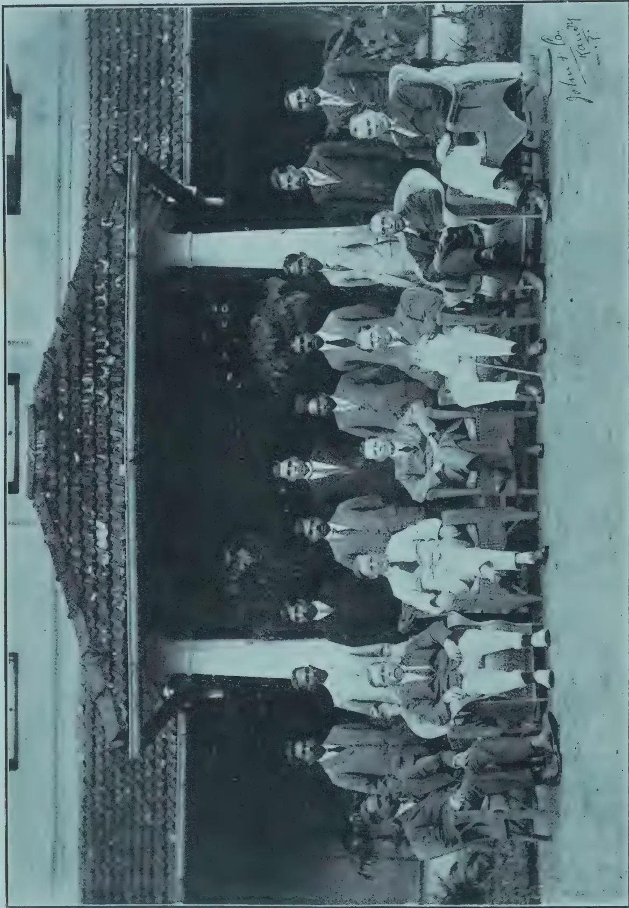
MR. DENHAM'S VISIT TO PERADENIYA.
FAREWELL GROUP PHOTOGRAPH.
Front Row : Mr. J. S. de Silva, Mr. M. Kelway Bamber, Mr. E. B. Denham, C.C.S., (Director of Food Production). The Director of Agriculture, Mr. F. J. Smith, C.C.S., (Director of Food Production Designate), Mr. C. Drieberg, Mr. H. F. Macmillan.
Back Row : Mr. N. Wickremaratne, Mr. L. A. D. Silva. Mr. W. A. W. Gunawardene, Mr. W. Molegode, Mr. C. P. Crispyn. Mr. A. Madanayake, Mr. J. R. Nugawela, Mr. C. A. Samarasinhe, Mr. K. B. Halangoda, Mr. V. Ramanathan.
THE
TROPICAL AGRICULTURIST:
JOURNAL OF THE
CEYLON AGRICULTURAL SOCIETY.
VOL. LV.
PERADENIYA, DECEMBER, 1920.
No. 6.
MANURING OF PADDY.
One of the most certain methods of increasing the paddy grown in the colony is by increasing the yields from the existing paddy lands. It is well known that the average yields per acre from paddy lands in Ceylon are exceedingly small. The question therefore arises as to how these yields can be increased.
The use of selected seed, the adoption of better methods of cultivation, the adoption of transplanting in those tracts where water supplies are adequate and reliable, and the more general use of manures are advocated.
The paddy soils of Ceylon are not of high fertility and recent analyses for comparison with those of paddy soils in neighbouring paddy-producing countries show that the average Ceylon soils in general are poor in quality. Details of these analyses will shortly be available and prove extremely interesting to all those interested and connected with increased food production in the colony.
The increased use of manures in paddy fields in Ceylon is becoming more general and the quantities of manures being supplied through Co-operative Credit Societies are gradually increasing.
In the Central Province, the use of green manures is common and cultivators are now fully aware of the increased crops that result from its use. These green manures generally consist of the leaves and small branches cut from trees or shrubs growing in close proximity to the paddy fields. Rarely are green manures grown specially for use in the fields.
346[DECEMBER, 1920.These leaves and branches are buried at the time of ploughing. Applications of bone meals or bone dust may also be made to lands which have received applications of green manures. These bone manures are usually applied at the time of sowing and the quantities used are generally small.
The more extended use of green manures in paddy cultivation is to be advocated, while phosphatic manures have shown in this colony and in Madras greatly increased yields after their application.
There is little doubt that the yields from Ceylon's paddy lands can be increased by the application of green or other organic manure with or without phosphates. As a general policy, such applications should be urged upon all cultivators.
Much has been done in the past, much has been done during the present year, but much still remains to be accomplished. The more general adoption of manuring paddy fields will only result from demonstration and persistent effort. Demonstration areas with green manures, with animal meal and with a general mixture have been planned in all districts of the colony under the supervision of Agricultural Instructors in co-operation with Headmen and influential growers of paddy.
The results of these demonstration areas will be awaited with interest. These areas will have to be continued for several years and further areas started if the best results are to be secured. Villagers and others interested in paddy cultivation are showing a keen interest in these paddy manuring demonstrations and when a general policy can be decided upon steps will have to be taken for the supply of manures to cultivators.
The paddy industry also demands that plots should be laid out under manurial experiments under strict scientific control. The actual manurial requirements of paddy under the varying soil and climatic conditions of the colony have yet to be determined. Carefully selected paddy experiment stations are required where continuous work can be designed and carried on for a number of years under strict control. This work is most necessary, and it is hoped to be able to make early arrangements for its being begun. In the meantime, the experience of other neighbouring paddy-growing countries has to be drawn upon and generalizations made for the guidance of our Ceylon growers.
DECEMBER, 1920.]
347
Trials with Fordson Tractors have been held, by arrangement and co-operation with MESSRS. BROWN & CO., LTD., under the supervision of officers of the Department of Agriculture at Peradeniya and Jaffna Experiment Stations and in the Chilaw District upon Walahapitiya Estate.
The trials at Peradeniya were under the supervision of MR. HARBORD, those at Jaffna under the supervision of MR. COOKE, and those at Chilaw were supervised by MR. HULUGALLE.
The Peradeniya results were disappointing owing to wet weather and to the heavy sticky nature of the soil. At Jaffna satisfactory results were obtained, while at Chilaw results show that the Fordson Tractor is suitable for use upon the lighter soils of the Colony.
The thanks of the Department of Agriculture are due to MESSRS. BROWN & CO. for the loan of a Tractor for these trials and to MR. EKANAYAKA for placing land at the disposal of the Department in the Chilaw District. Particulars of Tractor work upon estates have been received from MESSRS. LONG PRICE and EKANAYAKA. Figures from other users of Tractors would be welcomed so that a full Bulletin on Tractor work can be prepared.
| Area Acres | Time per Acre Hrs. Mts. | Consumption per acre of | Cost of fuel and oil per acre Rs. Cts. | Cost of labour per acre Rs. Cts. | Total Rs. Cts. | ||||
|---|---|---|---|---|---|---|---|---|---|
| Kerosene Oil Gallons | Mobil Oil Gallons | Petrol Gallons | Cost of labour per acre | ||||||
| Oliver Double Block A 1 | 3.66 9.18 | 7.65 | .37 | .37 | Land in weedy condition, wet and sticky. Difficult to work. This area constituted a severe test for the Tractor and Plough. It performed its work satisfactorily but there were many stoppages. | ||||
| Furrow Plough | 12 | 20 | 5 04 17 24 | This land was undulating, weedy with patches of iluk and cheddy roots. There were also some termite nests in this area. It was wet and sticky. The nature of the work performed was satisfactory. | |||||
| Block A 2 | 1.34 13.24 | 11.94 | .37 | .37 | |||||
| Block B | 5 4.0 | 5.2 | .17 | .17 | 6 | 80 | 2 | 16 8 96 | This land was in good physical condition. It was weedy but was not difficult to work. |
| Disc Harrow, Block A | 10 .42 | .4 | .016 | .016 | .55 | .36 | .91 | ||
| Block B | 10 .36 | .4 | .016 | .016 | .55 | .36 | .91 | Condition of land satisfactory for disc harrow work. | |
348
[DECEMBER, 1920.
JAFFNA TRIALS, 27th SEPTEMBER to 13th OCTOBER, 1920.
| Implement | Plot. Nos. | TRACTOR TRIALS AT JAFFNA | Cost of fuel & oil per acre | Cost of labour per acre | Total cost per acre | Nature of land and Remarks | |||||
|---|---|---|---|---|---|---|---|---|---|---|---|
| Area Acres | Time per acre Hrs. | Consumption per acre Ker: oil gallons | Mobil oil gallons | Petrol gallons | Rs. cts. | Rs. cts. | |||||
| Oliver Double Furrow Plough | 1 | 7/8 | 2 17 | 2.855 | .285 | .148 | 4 79 | 1 06 | 5 85 | Soil-red sandy friable loam carrying a green-dressing crop of Tephrosia Purpurea. It was under tobacco during the previous crop and soil was fairly hard. Plough depth averaged 6 in. under favourable conditions. Quality of work fairly satisfactory. | |
| New land | 5 3/4 | 4 28 1/2 | 6.300 | .350 | .480 | 9 59 | 2 21 | 11 80 | Virgin soil with shrubs. Plough worked to a depth of 6-7 inches. Quality of work was good, but speed of plough was lowered owing to nature of land. A good deal of work had to be done in first gear—hence increased costs. | ||
| ii, iv & v a. b; viii a, b. | 5 3/4 | 3 16 | 3.000 | .460 | .120 | 4 95 | 1 53 | 6 48 | Light friable soil in excellent condition for ploughing work. Plough cut was 7 in. deep and quality of work was excellent. | ||
| VII | 1 1/2 | 2 — | 3.333 | .222 | .111 | 4 97 | .94 | 5 91 | Light friable soil in excellent condition for ploughing work. Plough cut varied from 5in.-7in. deep and quality of work was good. | ||
| I B | 1/4 | 2 40 | 2.855 | .444 | .400 | 6 26 | 1 20 | 7 46 | This plot was small and hence loss of time was occasioned in turning. Plough cut varied from 5 in.-7 in. deep and quality of work was very good. | ||
| New land | 1 | 2 05 | 3.125 | .285 | .200 | 5 27 | 95 | 6 22 | The soil was virgin soil of a light sandy type. It was in good condition for ploughing. Depth of plough cut varied from 5 in.-7 in. This work represents good average ploughing for new land when the tractor or implement is used under favourable conditions. | ||
| Average per acre | 2 47 1/2 | 3.578 | .341 | .243 | .200 | 5 97 | 1 31 1/2 | 7 28 1/2 | |||
| Double Disc Harrow | New land | 3 1/2 | — 34 | 1.0 | .05 | .047 | 1 68 | 30 | 1 98 | This area was part of C. above, 3/4 single harrowing was done to a depth of 3 in.-4 in. Quality of work good. | |
| 1 a, b, ii, iii, iv, v, a. b, vii, a, b, c, viii, a, b | 1 | — 40 | 1.062 | .062 | .031 | 1 52 | 30 | 1 82 | The depth varied from 3in.-4 in. The quality of the work was good. This may be taken as an average of satisfactory dissharrowing. | ||
| Average per acre | 1 | — 57 | 1.021 | .078 | .039 | 1 60 | 30 | 1 90 | |||
| Disc Plough | iv, vii, a, b, c | 1 | 3 30 | 3.5 | .50 | .20 | 6 86 | 1 64 | 8 50 | Soil-red friable loam considerably stiffer than the above. Plough cut 9 inches. Work done was excellent. This plough is too heavy for use in lighter soil and does not give satisfactory results when soil is wet. | |
| Average | 1 | 3 30 | 3.5 | .50 | .20 | 6 86 | 1 64 | 8 50 | |||
DECEMBER, 1920.]
349
CHILAW DISTRICT TRIALS
UPON
WALAHAPITIYA ESTATE, NATTANDIYA.
Ploughing with Fordson Tractor.
1. Period of work :—October 23rd and 25th 1920. days of 8 hours each=12 hours.
2. Acreage :—5.20 acres.
| 3. Fuel consumption and cost of work :— | Rs. | cts. |
|---|---|---|
| 20 gls. of kerosene oil @ Re. 1.10 per gal ... | 22 | 00 |
| 1 bottle of Petrol @ cts. 44 per bottle ... | 0 | 44 |
| bottle of Mobiloil "A" @ cts. 92 per bottle ... | 1 | 15 |
| bottle of Mobiloil "C" @ cts. 92 per bottle ... | 0 | 46 |
| Driver's wages @ Re. 1.50 per day for days ... | 2 | 25 |
| Cooly's wages at cts. 50 per day for days ... | 0 | 75 |
| Total ... | 27 | 05 |
4. Fuel consumption per acre :—
Kerosene oil :— gallons.
Petrol :— bottles= gallons.
Mobiloil "A" bottles= gallons.
Mobiloil "C" bottles= gallons.
5. Acreage worked per day :— acres.
6. Depth of ploughing :—5 in.-8 in. in sand and sandy loam.
7. Time taken to plough 1 acre :—2 hours 19 minutes.
8. Cost of ploughing 1 acre :—
9. Nature of land and soil :—Slightly undulating land with a thin grass sod.
10. Remarks :—Second day very wet and Tractor sank somewhat. Hence increased consumption of kerosene.
Ploughing with Coast bulls and Howard's Sinhalese Plough.
1. Period of work :—26th October 1920—7 hours.
2. Acreage :—60 acres.
3. Acreage worked per day :—60 acres.
4. Depth of ploughing :—3 in.-4 in
5. Time taken to plough 1 acre :—11 hours, 40 minutes.
6. Cost of ploughing 1 acre :—
| Rs. | cts. | |
|---|---|---|
| Hire of one pair of bulls @ Rs. 3 per day for days | 4 | 50 |
| Wages of 1 cooly cts. 50 per day ... | 0 | 75 |
| Total ... | 5 | 25 |
7. Nature of sand and soil :—As above.
Ploughing (Buffalos and Howard's Sinhalese Plough).
1. Period of work :—27th and 28th October 1920. 2 days of 6 hours each=12 hours.
350[DECEMBER, 1920.| Rs. | cts. | |
|---|---|---|
| Hire of 1 pair of buffalos @ Rs. 2 per day for 14 hours | 4 | 65 |
| Wages of 1 cooly @ cts. 50 per day for 14 hours ... | 1 | 15 |
| 5 | 80 |
In one day an estate cooly turns over with a mamotie the soil to a depth of about 4 in. in 6-7 squares of 27 ft. × 27 ft. each, excluding a circle of 7 ft. radius from the centre of the boll of each tree, i.e. square feet.
Therefore the soil of 1 acre can be turned over in days
Therefore the cost of mulching 1 acre =
In the rice fields of California they are motorizing harvesting operations. Most of the farmers are still using horse-drawn binders, but motor equipment appeared in most districts during the season just closed. There are two advantages urged for motor equipment. In cutting the first swath round a field no standing grain is mashed down, as is the case with horse-drawn binders. Where both motor and horse binders are used on the same job, therefore the motor outfit is used to cut the first swath.
The second advantage of motor equipment is where the field is too wet for horses, which frequently happens when the crop matures late and there is little hot weather after water is turned off. The Sutter Basin Company put a track-laying tractor with a binder on such fields and cut and bound the grain without trouble. Horses would have mired in those fields.
Some of the tractors have binders mounted upon them in front. They are equipped at the factory for the purpose. Others have the binder hitched to the rear. Two binders have been used with one tractor, but the rig has not been worked out satisfactorily yet. Twenty horse power tractors are employed mostly in rice-harvesting work.—INDIAN SCIENTIFIC AGRICULTURIST, Vol. I, No. 8.
DECEMBER, 1920.]351W. DAVISON, B.S.A.,
Live-stock Expert in Mysore.
In order to discuss this subject from a proper standpoint, the cause of deterioration, reasons for a poor class of cattle, must first be brought to light and the methods of improvement discussed later. However, it may be fitting to mention at this point that any methods employed to bring about the improvement of stock on a large or even a small scale, will necessitate the expenditure of considerable sums of money, though in very few directions money could be spent to a better advantage, more especially in a State where the chief industry is agriculture and the chief power that of bullocks. Furthermore, with a breed of draught cattle, such as we find in the better sections and with such an outside demand for them as we find in other parts of India, and even in other countries, there seems to be no reason why money spent in the encouragement and production of better cattle should not yield a very handsome return to the State in the years to come. It should be possible to work up a large export trade for draught cattle, but first the needs of the State must be considered and a large enough nucleus formed to carry on such a business. At the same time, it is only proper to point out that the work of effecting improvement in live-stock, more especially in cattle, is slow. One generation takes six years to reach maturity from the time of conception and several generations must be raised on proper lines before a permanent improvement and a fixed type can be expected. Furthermore, in a State containing over four million cattle alone, it is obvious that any action taken to further the production of better cattle must be done on a fairly extensive scale, if any appreciable result is to be effected within the next two decades. Moreover, the sooner the effects of such action become seen and felt, the quicker it will be supported by the general agricultural public and its effects become more general.
Speaking generally, improvement in stock can be brought about in two ways : by the importation of outside breeds for the purpose of introducing or strengthening desired characteristics, and by the selection and proper mating of animals already at hand, and possessing the characters needed in a fairly marked degree. Both of these methods can be employed in this State with profit, the former more particularly to increase milk-yielding properties, the latter to assemble the best draught qualities sufficiently in animals, so that they may be prepotent and leave their stamp upon ensuing generations.
Leaving a discussion of the former method till later, let us examine first those factors which are antagonistic to the production of a high class of animal in this State. They may be briefly enumerated as follows :—
A brief discussion of the above may be profitably indulged in, though to do them full justice would require much time and space.
Insufficient nutrition of young stock, especially calves.—To any observant person, the condition of the average calf in Mysore is eloquent of the fact
352[DECEMBER, 1920.that he is getting barely enough food to live on, and certainly not enough for proper growth, many of them weighing when six months old, only a few pounds more than they did at birth. This gives these animals a set-back which they can never overcome no matter how well they are fed and cared for later, weakens the constitution, retards maturity and can be regarded as nothing less than economic madness. At no time in the life of any animal will it digest its food as thoroughly nor make as cheap and economic gains as in its early stages of existence. As an animal grows older, it digests a lower percentage of its feed, puts on a lower percentage of body weight, and generally becomes a less efficient machine, and in order to take proper advantage of this fact, we must pay attention to the proper nourishment of animals from birth. Further, the stunted and starved calf will never regain its lost "calf flesh," and will never reach the same degree of vigour, constitution and growth as the animal which has been properly cared for from the start. This, in addition, causes delayed maturity, which is a matter of no small importance, and has a direct affect on the progeny. Continued repetition of this kind of treatment is, of course, bound to have a deteriorating effect, which will also be exercised in a cumulative manner as generations go on.
Lack of Interest in Heifer Calves.—This applies in these districts where some interest is taken in the calves and where good bullocks are raised, as well as elsewhere. In a country where draught bullocks are the aim of the breeders, it is fairly easy to understand that more attention is paid to male than to female calves, but that the future mothers should be totally neglected and allowed to drag themselves towards maturity and attempt to complete their growth as well as grow a calf on a ration sufficient for neither, spells disaster for mother, calf and breeder. Furthermore, such a short-sighted policy delays maturity, renders the animal unproductive for a longer space of time and lessens the number of calves which she will be able to produce, as well as lengthening the time between calves.
These two conditions should suggest their own remedy and the truth of statements made can be proved by any man for himself. That the dams do not produce enough milk for both calves and human consumption is well known and until better milking dams can be secured, the feed of young calves should be supplemented with grain and later with hay. Such feeds as rice-bran and the different cakes can be used with advantage and if given opportunity and a little encouragement at first the calves will soon learn to eat and make good use of such food. As an encouragement and means of education in this direction, prizes could be given at the cattle fairs and jattras for calf classes in both sexes, as well as yearling and two year old animals. The present system of offering prizes in classes open to animals of all ages, naturally crowds out the younger stock, and leaves the field uncontested to the mature and full grown. In cattle as with ourselves, the rising generation is of prime importance and must be given special consideration.
The Scrub Bull.—The large number of "scrub" bulls to be seen in the State is one of its striking features. Thousands of bulls which should never have been allowed to reach maturity in an entire condition are at large in the State to-day and at liberty to serve all cows with which they come in contact. They are small, stunted, unthrifty, narrow-chested, short-ribbed animals, with no indications of vitality or breeding about them. And these are to be seen not only in the backward sections, but also in those districts where good bulls are kept and appreciated, though the counteracting influence of those poor and undesirable sires seems to be regarded with stolid indifference and little or no effort made to restrict it. To eliminate the influence of the scrub bull and to widen the sphere of influence of the high class sire, co-operation of all members of a community is necessary. Early castration of unsuitable males must be practised and encouraged. The introduction of the "premium sire" system would be a great help in extending the influence
DECEMBER, 1920.]353of good sires, but would entail organisation. This system consists of selecting male animals and grading them according to a standard of perfection, and paying owners a premium for allowing these to stand for service in their locality at a low service fee. The best animals would be selected out of each district and only a certain number of premium animals appointed, according to the cattle population. The owners of these animals could take advantage of Govt. Orders at present in existence for the encouragement of stock raising.
Such animals could be selected by assembling all breeding bulls of a district and selecting there; or the jatra could be made use of in this connection. Competitive classes could be formed and prize winners selected for the above purpose. Such classes would tend to popularize this movement, and increase the advantage taken thereof.
Bulls of a high grade might be kept at all veterinary hospitals and dispensaries at taluk headquarters, and a small service fee charged to pay for maintenance. In considering suggestions, such as the above, let me point out the fact that the number of bulls required runs into thousands, so that some means must be provided to maintain and increase the supply of high class sires. Government breeding stations must be established throughout the State where good animals could be produced and distributed. Sires placed about the country will not exert much influence unless action is taken on a fairly extensive scale. The cost of organization is therefore likely to be heavy.
Improper Mating.—That no system of mating is followed is the natural result of and in fact is really a part of the foregoing. To make a success of animal breeding, a definite policy must be followed and an effort made to attain some objective. Haphazard mating on a hit-and-miss system may, at times, be productive of few good animals but it is a wasteful method, and one to which continuity of policy is entirely foreign.
Epidemic disease cannot be said to affect the better animals more than the poor kinds, but whenever a good class of breeding animal dies, a gap is made which cannot be filled up and the future influence of that animal ceases abruptly. Therefore, more serious efforts to control epidemic diseases and prevent their spread are necessary, if the best results are to be obtained.
These then are the most superficial hindrances to the production of a high class of draught animal in Mysore State. Cattle of this kind are to be found in the State in fairly large numbers, and form a good nucleus to work upon. When we turn to the question of milk production, however, the number of animals which pay for their keep from the standpoint of milk production may be regarded as negligible, and no hope for a marked increase of the milk yield of cattle indigenous to Mysore can be held out. In order that the milk yield may be increased, outside blood must be used. Extensive experimental work will need to be carried out in cross-breeding and an effort made to find a breed of cattle which will be able to withstand climatic and general conditions as will produce a high yield of milk. This will necessitate the expenditure of considerable sums of money, and call for time before a fixed type can be established. How far it is possible to combine draught and milk production in one animal remains to be seen, but in other countries where a dual type has been aimed at, it has been found that the tendency is for the two qualities to become separated according to the ideas of the breeders, who select from one standpoint more than the other, and this country is not likely to differ from other countries in that respect. In any case it will be some time before sufficient high milking animals will be available to affect the major number of animals in the State.
So far nothing has been said with regard to improving pastures, or the ability of land to stand an increased number of cattle, as that comes outside the sphere of a paper of this kind. The idea throughout this paper has not been to suggest means to increase the number of cattle, but rather to effect improvement and in the writer's opinion if an improvement were to be brought about at the cost of numbers, it would be no matter for regret, within reasonable limits.—JOURNAL OF MYSORE AGRIC. AND EXPT. UNION, Vol. II, No. 3.
354[DECEMBER, 1920.]RULE OF
Manures 3 Manures
We Produce
and can supply on guaranteed analysis, F.O.R.,
Colombo:
Fish Guano, Crushed
Fish Manure
Crushed Oil Cakes
and Bone Meal
Further particulars
and prices from:
Indian Fertilisers, Ltd.,
Trichur.
MALABAR COAST, SOUTH INDIA.
Telegrams:—"NITROGEN."
Codes:—
A.B.C. 5th Edition
and Bentleys.
F. B. GUTHRIE.
Questions are frequently asked regarding the use of "well rotted manure," its application to the soil and the addition to it of lime. The following reply to a recent correspondent will perhaps answer the query of a good many others :—
"Rotted Manure"—a term one frequently comes across in gardening handbooks—is a description especially applicable to farmyard manure produced in Europe and America, where stock are stalled and bedded ; the rotting produces changes, due to fermentation in the straw and similar materials, and converts it partially into humus. The term has scarcely the same application in this country, as rotting in this way does not take place to any extent, farmyard manure here being chiefly dung. If the manure is kept under cover, little change will occur, except that it will lose moisture ; if it is exposed to the weather, rain will wash out some of the soluble constituents, and its fertilising value will be diminished.
Even under European conditions of rotting, the rotted manure varies very little in composition from the fresh, but is, on the whole, somewhat richer, owing to the fermentation of the insoluble organic matter, the disappearance of which increases the proportionate amounts of soluble organic matter and fertilising material, especially organic nitrogen compounds and phosphate of lime. Old manure, provided it has not been leached by the weather and thus deteriorated, has the advantage that it is not so likely to burn the plants, as fresh manure becomes hot owing to fermentation. The preliminary heating that the manure undergoes is also likely to destroy the germinating power of any weeds it may contain.
Lime should not be added with manures containing nitrogen, such as the above, because ammonia is driven off, not only from ammonium salts but from blood, bones and any organic manure such as dung or stable manure. In such cases the escape of ammonia is apparent to the senses. If the mixture were buried in damp soil, no doubt this loss would be minimised, but as lime is usually applied on the surface of the soil and very lightly harrowed in, and the stable manure is also superficially applied, every facility is afforded for the ammonia to be driven off and lost to plant life.
It is generally a good practice to apply the lime two or three weeks before applying nitrogenous manures or sowing seed. If manure and lime are to be applied together, the best plan is to make a compost heap, in which the organic matter, bones, skins, etc., are fermented in the presence of lime, vegetable matter and earth, and the escaping ammonia is retained by the outer layer of moist earth—or better the layer of powdered gypsum—with which the heap is covered.—AGRIC. GAZ. OF N. S. W., Vol. XXXI, Part 10.
356[DECEMBER, 1920]No excuse is offered for the frequent reference in these notes to various expedients for the improvement of the soil in sugar plantations. When all is said and done the great object in the industry is to increase the yield of sugar per acre, and, with the intensive work done in recent years in factory control and the prevention of all avoidable losses in manufacture, this object will probably be found to be much more easily accomplished by renewed attention in the fields than by further refinements in factory practice ; the limits of improvement in the latter are being rapidly reached, while there are admittedly many lines of work on the plantations which have not yet been tackled in a thorough manner. Forcing the ground to produce more cane per acre is, to the writer's mind, the line of least resistance at the present time.
When we consider the vast areas in the tropics where the sugar-cane is grown, with their differences in soil and climate, it is obvious that the urgency of improved field work will greatly vary ; in some places deep rich layers are available which it may take years to exhaust ; and the remarks in this note need not concern the happy owners of such estates, beyond a word of caution that the inevitable years of declining fertility should be delayed as long as possible. But in most places the yield is not what it should be ; there may be plenty of plant food in the soil, but, because of some factor in its physical condition, this may not be readily available for the cane plants ; in a great many cases there is an ominous threat that the land is becoming exhausted, and that the seven fat years are about to be succeeded by the lean ones. In such cases the need is urgent, and it may be mildly pointed out that, if in the past more careful attention had been paid to the cultivation, the remedy would have proved far more effectual and less costly.
One great difference between the current application of highly concentrated artificial manures and the more slowly acting and more troublesome bulky ones is that the former act rapidly, are soon exhausted, and require constant renewal, while the latter last for quite a number of years before their effect is lost. Careful cultivation, with the addition of reasoned proportions of the various salts needed by the plant in its growth, will do much to keep the land fertile and allow good crops to be taken off for a long time, but, as our knowledge of soil biology becomes more of an exact science, we see that much of the expensive application of artificials can be cheapened by more fully employing the natural agencies at work which, with careful fostering, will answer the same purpose, and at the same time put a stop to the continual deterioration of all lands relying solely on chemical manures. Nothing in this world can equal the fertility of virgin soil, but that condition has not been reached by any system of manuring, but solely by natural agencies, and, be it noted, concurrently with the growth of enormous crops of trees. Long before the discovery, from the chemical analysis of plant tissues, that it was possible to supply the substances taken from the soil by the addition of certain salts containing the substances in an "available" form, pen manure was known to be a necessity to a successful cropping. And now that artificials have had a long innings, and have greatly improved the mass of the crops obtained, we are beginning to see that the limits of increase in this direction are being reached, and are turning again to the bulky manures, whose value has been perhaps rather eclipsed.
DECEMBER, 1920.]357What we now want is not only greater yields but the maintenance of fertility, and for this the concentrated chemical manures are not altogether adapted. And by fertility we do not only mean the presence in the soil of plant food, but the physical condition and conservation of moisture which alone will render these available to the plant. While artificial manures supply the actual food for the crops grown, too little account has sometimes been taken of the adventitious aids to fertility afforded by the unseen bacterial flora. Pen manure, as has so often been demonstrated, is an excellent food both for the crops and their helpers in the soil; but this is not always available, and we must not fold our hands in acquiescence, or lose sight of the necessity of trying to find a substitute. When all the labour in the plantations was done by men and cattle, large herds were kept and carefully tended, and many estates were well supplied with cattle manure for all or for most of their fields. But with the increasing introduction of steam and motor implements, and the taking up of fresh lands where cattle do not exist, this stage is rapidly passing away, and there are at the present day few sugar estates which have enough pen manure to go round.
The sugar planter is sometimes rather limited in his outlook, and has rightly or wrongly taken little pains to study other tropical crops, but much can be learnt from a study of these, especially in the treatment of the soil. In the following notes a broad view is taken, and the most various crops and conditions are laid under contribution, in the hope that while much will be inapplicable to specific estates, some method or substance will in others be found useful. A somewhat detailed list of bulky additions to the soil is given, all of which have been met with by the writer in his tropical work. The use of oil cake may be briefly mentioned, although it does not belong to the series; it is largely used in sugar-cane work, but in many places apparently has not been sufficiently appreciated; it is rich in plant food (equalling, say, 6-7 per cent. nitrogen and 10 per cent. bone meal), and has the great advantage of only slowly giving up its plant food; it is however, sufficiently rapid in its action to be available during the life of the cane crop, if sufficient moisture is forthcoming, if there is no rain or irrigation water, it just remains inactive, losing little of its value until the rains come; the consideration of the value for sugar estates of oil cake, which occupies a half-way position between artificial and pen manure, may be conveniently held over to another occasion. So the green manuring, which has obtained a great vogue in many sugar-growing countries; it comes better into line with the bulky manures, but is a large subject in itself, and will not be mentioned further here. The addition of decaying vegetable matter from weed pits has been dealt with in a previous note* and although of great importance, need not detain us. The following apparently unpromising substances will, however, receive attention:—Top soil from jungle, the waste earth under scrub, earth from grass land, burnt earth, tank silt, and various other earths. All of them are used in tropical agriculture with the most beneficial results as to soil fertility in different crops, and it may be well for sugar planters to turn their serious attention to the possibilities of also utilizing them on their plantations. Many will, it is certain, at once scout the idea of adding soil to the sugar
* I. S. J., 1919, p. 541.
358[DECEMBER, 1920.ands as too costly but a careful calculator has estimated that in this respect they have nothing to fear from a comparison with pen manure, and also that some of them are superior to this substance both in immediate and long-continued effect. Much will, of course, depend on the distance of carriage, but it may be noted in passing that the addition of soil to cultivated land in poor physical condition has been shown to render all subsequent operations much simpler, whether in tilling, weeding, or cultivating.
The Top Soil from High Jungle.—This has been found to be of the greatest use in maintaining the fertility of the soil on coffee estates. In a series of careful chemical analyses it has been found to be equal to pen manure in plant food, and where available it is extraordinarily easy to cart and spread. Most planters will of course say that it is out of the question because they have no trees on their estates ; but this adds point to the argument recently advanced in this Journal in favour of tree-planting on all waste land in sugar cane estates,* as is being persistently done in the Hawaiian plantations. Not only is this top soil valuable because of the plant food contained, but its residual action on conservation of moisture is one of its main features: Lightly worked into the soil it enhances the physical condition in a marked degree, feeds the beneficent bacteria and keeps them and the cane plants cool and thriving during the spells of drought. VOELCKER estimated that in samples of good top soil from high forest which he analysed three tons were equal in plant food to two of good European stable manure, and the general cost of application was found to be only half as great.
Earth Under Scrub Jungle.—This substance was found by the writer to be of excellent value as a top dressing to alkaline lands in India. He was led to the idea of using it by a discovery as to the value of the soil under Lantana scrub on a pepper farm, and a temporary cessation in the carting of tank silt because of excessive rain was thus made good. The immediate result was that the cultivators around who had been keenly interested in the experiment carted some 8,000 loads on to their own land, and they thus not only enriched these but cleared a good space of this troublesome growth. They afterwards claimed that on poor land thus treated they doubled their crops, whereas when they applied it to good lands it made no appreciable difference in the yield. The cost, as the land was near the farm, worked out at from to per cart load, and the effort was noticeable for several years. The nitrogen content was indeed small, but the presence of organic matter in the roots and vegetable debris, together with the excellent condition of the carted soil, all told in its favour. Similar results were obtained, as has been noted above, from the application of Lantana earth to another crop on ordinary but worn out pepper land and it is fair to assume that the upper layers of any land under scrub jungle under a fairly good cover would be equally useful.
Earth from Grass land.—This is usually comparatively rich in nitrogen, and it is well known that excellent crops can be obtained by merely digging it up and inverting the sods (as in the case of potatoes by the writer) ; it is full of vegetable matter in the shape of decaying roots and stems, and there must be few estates which cannot easily lay their hands on a supply. The
experiment is then well worth trying, especially so if it is decided to improve the fodder crop by sowing some sort of millet, a crop which is content with the minimum of soil nutriment and a modicum of rain during its short period of growth.
Burnt Earth.—This is recognised as a valuable means of improving the character of the soil, and is used for widely different crops. A convenient method of application of small quantities is sometimes met with when the burnt earth is scattered mixed with artificial manure. One of its chief features is its retentive power of moisture, and here again it stimulates pen manure in its action. It is in its way rather troublesome to prepare, but this has not deterred the natives from frequently employing it. Its effect on the physical condition of the soil is always very marked.
Tank Silt.—This is commonly used by the native cultivators throughout the Madras Presidency. They apply it to all sorts of land, and are sometimes willing to cart it for as many as twenty miles. It is usually obtained when no other agricultural work is being carried out, and if the source is moderately near, the cost is small. It relieves alkalinity, enriches the soil, and renders it drought resistant; in large quantities (500-600 cart loads per acre) it permanently improves the land, and of course in tank or pond country it is a very economical practice because it deepens the water-holding holes and causes the supply to last longer.
Besides these substances there are various earths which are added to the land in the off seasons. Most of these are retentive of moisture, and some are distinctly hygroscopic, keeping the roots cool and fresh when all other surface roots are dried up; the effect noted in some cases on the plants growing is very marked, and this action is worth bearing in mind.—“C. A. B. INTERNATIONAL SUGAR JOURNAL, Vol. XXII, No. 262.
A. R. C. Sc.
Nature maintains a constant watch and nothing is ever irretrievably lost. We see around us that plants decay and give up the fertilizing materials contained in their structure for building up other plants. When vegetation is consumed by the animal, part of those materials will be returned to the soil in excreta, another part will go to form the animal body.
When the animal dies, Nitrogen in various forms may be given up by the decay of its flesh and returned to enrich the soil or go back to that inexhaustible store of Nitrogen—the air. Animal bones consist mainly of Phosphoric Acid and Lime with a little Nitrogen. These may return directly to the soil; if the bones are allowed to lie on it or are buried in it, or may return indirectly by being first collected together for various treatments—grinding, steaming, etc., and be brought back to the soil in the form of a meal or powder.
Materials washed from the soil and ultimately carried off to sea during the centuries, are quietly accumulated by many and various processes. Phosphoric Acid may pass through sea weeds and animalcula to fish and at
360[DECEMBER, 1920.the feeding or spawning grounds where millions of generations of fish have returned, the bony remains accumulate and in the course of a few geological ages, man finds these deposits as the Phosphatic rocks of Canada, Florida, Algiers, Egypt, etc. and proceeds to convert them into Superphosphate by the help of Sulphuric Acid. That they have actually passed through this cycle is seen from the presence of fish scales, teeth, etc., in these rocks.
Similarly, in the distant past, Potash washed from rocks and soil has been carried off by running water and collected in places which must have resembled the various salt lakes which lie scattered over the world in our own day and of which the Dead Sea and the Salt Lake of Utah are the most widely known representatives. Having accumulated in such places and the water having finally dried off, desert winds which we know can carry light particles of soil for miles must have safely covered them up. Later on with a change in climate floods may have swept over this surface covering the whole surface still more deeply and safely with beds of sand and mud. In course of time some of these deposits so safely stored away have been discovered as the potash deposits of Alsace, Stassfurt, and various parts of Central Europe. The potash salts are mixed there, the higher grade ones being sold in the natural condition as Potash Salts, Kainite etc., and the impure and poorer deposits being purified, concentrated and converted into Muriate, Chloride and Sulphate of Potash.
What about the Nitrogen which as we have seen is the most important of all these manurial ingredients? Phosphorus and Potassium refuse to remain alone; these elements, as the chemist calls them, must have companionship. The first mentioned strikes up a partnership with Lime, Iron, etc., and as Phosphate of Lime, Phosphate of Iron and such like forms a solid which is not easily separated out again or washed away from the soil, the second forms a partnership with various acids, Hydrochloric Acid, Sulphuric Acid or Carbonic Acid and produces solids which although easily soluble in water have a great desire to attach themselves in various ways to the soil particles. Unlike these others, Nitrogen only forms a temporary union and waits the first opportunity to escape from that union and go off alone. The normal condition of this substance is that of a gas and in that shape it forms four-fifths of the air around us. Plants of all sorts, including the lowly bacteria do their best to catch it and combine it with other materials in their structure. Animals build it into their flesh but decay sooner or later sets in and it disappears into the air.
Bacteria may join it up with Soda or Potash as in the nitrate beds of Chile and of certain parts of India forming Nitrate of Soda or Nitrate of Potash. Plants bind it up for longer or shorter periods, if they form the food of animals, some quickly escapes by the way of the excreta, the rest may escape by the decay of the flesh. When plants are stored up for long periods as we find in coal the period of imprisonment is lengthened. When coal is burned in the ordinary way part of this Nitrogen goes free into the air as a gas. Where coal is used in large quantity, man has evolved means of capturing the elusive Nitrogen and effecting a union with Sulphuric acid as Sulphate of Ammonia.
DECEMBER, 1920.]361In recent times scientists have developed a number of complicated processes for collecting gaseous Nitrogen from the atmosphere and binding it into several compact and easily transportable forms. From these processes we derive Nitrate of Lime, Nitrate of Ammonia and Calcium Cyanamide.
In Nitrate of Soda of Chile we have got the immense accumulations of ages. As far as our information goes, the process of storing up this material has come to an end simply for lack of vegetable matter to carry on the process of nitrification.
In the Nitrate of Potash of India the process is still in gradual progress in a small way, but here also it is limited by the scarcity of organic Nitrogenous matter. The supplies of Sulphate of Ammonia are limited by the supply of coal, the high price of other materials and the cost of labour. These factors also affect the supply of Nitrate of Lime, Nitrate of Ammonia and Calcium Cyanamide.
In recent times the conservation of materials, formerly considered of no value and allowed to go to waste, has been taken up, and many fertilizers produced from them. Waste products from Tanneries, Slaughter houses, woollen factories and various waste materials from cities are worked up and blended to form useful fertilizers.
By-products from industrial processes are found to be of great value in agriculture, the most striking instance being that of basic slag, a by-product of iron works. Various cakes are produced as a by-product of the Oil crushing industry.
The plant stores its reserve food in a compact form in the seed where it is designed to feed the next generation of seedling plants. Man takes this concentrated material, separates the oil for food or for industrial purposes, and leaves the remainder in the form of cakes of various kinds. These may be used directly for manure as is the custom in India or indirectly by feeding to cattle as is the custom in Europe and America.—INDIAN SCIENTIFIC AGRICULTURIST, Vol. 1, No. 11.
J. T. PRIDHAM. Plant Breeder.
The rough surface as a method of cultivation has been advocated in the past, and no apology is needed for introducing the subject afresh.
Conservation of moisture is only one of the objects of cultivation; though, perhaps, in our climate it is the most important. Soil texture is hardly less necessary for the growth of plants, for it ensures proper aeration for the feeding roots. A common notion of an ideal cultivated surface is that of the proverbial onion bed, but while we require a finely-divided soil for the germination of small seeds, the cultivation given after the seedling starts to grow should be somewhat different. If loose surface particles were the main object in cultivation a layer of sand should provide the right conditions. It has been noticed by the writer, however, that where sand has drifted or been washed over the surface the crop is not superior to that growing
362[DECEMBER, 1920.on the soil in its natural state, but rather the reverse. Of course, cases happen where the stormwater that accompanies the sand causes extra growth, but usually the effect is rather detrimental than otherwise. During the present season the abundant winter rains following the drought have, in some cases, caused the soil to go out of condition or to lose its tilth. A farmer who walks over his land likes to feel his heel sink into a soft soil. Land that does not give under the tread is deficient in texture, and the question arises how best to get the soil back in some degree to its previous condition during the current season.
A heavy harrowing will help to some extent in the case of wheat and such crops, but where inter-tillage is possible, as in orchards, and where crops are grown in rows, we can assist nature by the choice of suitable implements. A disc cultivator, or one that leaves the soil in fine condition, while valuable under certain conditions, is not called for where soil has become solidly crusted together or has become water-logged under the crop. A tool that produces the ideal surface is a pronged hoe, and among cultivators a machine with narrow teeth; in some soils the spring-tooth type does the best work. The aim should be to leave the surface covered with clods rather than in the fine condition in which it will run together again after the first rain. For weedy land, a machine that leaves the ground torn up in a ridged or corrugated condition is best.
Cultivating means that while the crop occupies the land we lose the use of the top 2 or 3 inches. In what form should this spare soil lie? A rough surface provides better percolation and drainage for rain, cooler conditions for the roots as the warm weather approaches, and better aeration, and consequently increased bacterial action. Some soils remain cloddy throughout the season, but others are self-mulching, the clods gradually crumbling and providing fine moist soil some 3 inches down where it is most required by the rootlets.
A new light has been thrown on the subject of cultivation by MR. C. M. HUTCHINSON, Imperial Agricultural Bacteriologist, at Pusa, India. In Bulletin 68, he says :—“During the cold weather in Bihar, when the rabi crops are in the ground, the nitrate formed in the soil is brought to the surface by the capillary rise and evaporation of soil water, so that in an untilled soil about 90 per cent. of the whole nitrate present in the first 18 inches of soil is concentrated in the first quarter-inch. This emphasises the need for cultivation during this period of the year, not only to minimise loss of water by evaporation, but to prevent the concentration of the available nitrogenous plant food in such a superficial layer, and the consequent formation of a shallow root system so characteristic of plants in a badly cultivated soil, and specially noticeable in the case of cold weather cereals of normally deep-rooting habit, such as wheat.” The restriction of growth by caking of the surface is therefore not alone due to lack of soil aeration.
It has been remarked that seeds sown in a depression do not germinate nearly so well as those surmounted by a convex soil surface. The cause would appear to be lack of aeration and drainage. The ordinary wheat drill deposits the seed in a tiny hollow, with a ridge on either side of a row of grain. It has been our experience in hand-sowings of wheat that seed under a slight ridge comes up better than that sown in a hollow. If the
DECEMBER, 1920.]363drill was so constructed that the seed was deposited under a ridged surface a better germination would certainly follow in circumstances where a good fall of rain succeeded the sowing. Judgment must be exercised in regard to deep cultivation when the warm weather begins. If the lumps are too large, it means considerable evaporating surface and loss of moisture at a time when the crop can ill afford it.
It may seem like going into fine points and unnecessary expense for a farmer to have more than one type of plough and cultivator on his place, but we cannot expect fertilisers to do everything. Successful soil management consists in using the right class of implement just at the right time. With good selected seed and fertiliser, and reasonably good land, the farmer can be fairly sure of getting the best returns possible, provided he uses judgment in the working of his land. The mechanical condition of the soil is being more studied in conjunction with bacteriology, as we are coming to realise that it is by no means the lifeless, inert matter we used to think.—
AGRIC. GAZ. of N. S. W., Vol. XXXI, Part 9.
Arable soils consist principally of four substances—sand, clay, limestone, and humus or organic matter and the varieties of soil are named according to the proportions in which the above constituents are present. Thus, certain soils are known as sandy soils, clay soils, limestone soils, and pest soils. Besides these are loams, which contain both sand and clay in large quantities; marls, which consist principally of limestone and clay; and calcareous soils, in which sand and limestone occur together.
Place in an evaporating-basin or a makeshift for same about as much dried loam as will cover a rupee. Half fill the basin with pure water (distilled) and boil it for a few minutes. Stir up and pour out the whole of the contents into another vessel, leaving the sediment behind. Now hold the vessel holding the sediment over a bucket and allow water to run into it for a few minutes. The fine particles of clay will be washed away, and very soon the water will be quite clear.
Frequently lime is added to a clay soil to make it more open and sand-like in its properties. To illustrate this action pour into two test tubes a little of the clay-water prepared in the last experiment. To one of these add a thimbleful of lime water and allow them to stand for an hour or so. The clay will scarcely have settled at all in the one to which no lime-water has been added, whilst the other will have become almost clear owing to the clay having fallen to the bottom of the liquid as though it were fine sand.
364[DECEMBER, 1920.Most people are aware that when hydrochloric acid is added to marble (which is a form of limestone) effervescence takes place and carbonic acid gas is evolved. (This fact is taken advantage of in making many commercial hand fire-extinguishers.) Take a small quantity of soil in a test tube and moisten it with water. Fill the test tube about half full of dilute hydrochloric acid. If the soil contains considerable quantities of limestone the effervescence may be detected by holding the mouth of the test-tube close to the ear, when the sound caused by the gas coming off will be distinctly heard.
Lime is technically known as oxide of calcium. It usually exists in soils combined with carbonic acid. To test a soil for its lime content boil the mixture of hydrochloric acid and soil mentioned in the previous paragraph for a minute, then add ammonia to it until it is alkaline and filter. To the clear liquid so obtained add a little ammonium oxalate and allow the liquid to stand for a few minutes. A white precipitate or cloudiness shows that the soil contained lime.
Place a little soil on a piece of platinum foil with a pair of crucible tongs and hold it over the flame of a spirit lamp or some similar source of heat. The soil will first of all darken in colour until nearly black, then it will become lighter again until it is of much the same colour as it was before heating. The reason of these changes is that the organic matter (which always contains carbon) becomes charred, and the carbon so formed gives a dark colour to the substance. After a while the carbon itself burns, and leaves the soil as it was before the experiment, except that all the organic matter has been burned away.
The organic matter or humus in a soil consists principally of certain acids, which, like all other acids, combine with caustic potash to form salts. The soil acids themselves are not soluble in water but the compounds which they form with caustic potash are soluble. To show this place a small quantity of peat soil at the bottom of a test-tube and fill the tube about one-third full of caustic potash solution. Warm for a few minutes, then fill up the test tube with water, shake well and filter. The liquid which comes through will be coloured brown by the potash compounds in solution. Take a little of the solution in a test tube and add an excess of dilute hydrochloric acid. The liquid will become cloudy because the soil acids will be again set free from the potash, and, as they are not soluble in water, they will form a precipitate at the bottom of the test tube.—FARMERS' JOURNAL, Vol. 2, No. 44.
DECEMBER, 1920.]365The following notes have been contributed by MR. T. W. CLARK, Trading Manager in Grenada for MESSRS. ROWNTREE & Co., LTD., the well-known cacao manufacturers in England. The notes should be of interest to cacao planters as exhibiting the point of view taken by large cacao manufacturers with regard to the quality of the raw product they purchase.
The ultimate aim in the growth and preparation of cacao beans, is to give the finest possible flavour in the manufactured cocoa or chocolate. Beyond the question of securing a satisfactorily heavy crop, it is this ultimate objective (the flavour) which is the justification of the care in the choice of seedlings, the drainage and manuring of the soil, the protection of the soil, the careful picking of only those pods which are fully ripe, the lengthy period of fermentation, and the thorough drying as a preventive against mildew as advocated by the best authorities.
From the manufacturer's point of view, perhaps the most important process in the preparation and curing of the beans, is fermentation. It is by fermentation that the bitter taste is eliminated and consequently chocolates or cacao manufactured from fully fermented beans attain the highest standard in point of flavour.
The objection is sometimes raised that fermentation results in great loss of weight. This is erroneous. The loss of weight resulting from fermentation and drying is not materially greater than the loss from drying only, provided always that the drying is complete. If the beans have not been reduced in weight by very complete drying, it follows that the cacao is not in a fit condition for shipment, and buyers may justly decline to complete a purchase until the drying is made thorough.
The process of trampling the beans is useful in rendering them more impervious to mildew. No accessories, excepting only a little fresh water, should be used either in curing, trampling, or drying cacao beans. Such things as orange juice, oils, or lubricant from the cacao pods are quite bad. They encourage mildew, and also attract rats, which do great damage. If the beans have been subjected to full fermentation, turned several times during the process, trampled, and thoroughly dried off, no other precaution is necessary or likely to serve any useful purpose. The practice of claying the cacao is useless, and is objected to by the English manufacturers.
This is only important in so far as it affords indication of what the inside of the bean may be like. Such ideas as producing a 'pretty' cacao, a 'bright' cacao, etc., are quite wrong. The sole benefit of trampling is to strengthen the outer shell, thus giving a little extra protection against
366[DECEMBER, 1920.cracking and mildew. In manufacturing cacao or chocolate, the outer shell of the bean is blown away by a current of air, and then collected and sold at a very low figure as a by-product. It is the inner portion of the bean only which becomes cacao or chocolate. At the same time it should not be forgotten that a cacao buyer is, after all, quite human, and a grower who dries the beans on a sheet of galvanized iron, giving them the appearance of charcoal, should not be surprised if the buyer is prejudiced against what may really be quite good cacao.
In a general way 'mountain' cacao, i.e., cacao grown at a height of 500 feet and upwards, gives a larger bean than cacao grown on the low-lying lands of Grenada. The same estate, however, is found to offer beans varying in size, and this is sometimes an indication that picking has been done before the beans were fully ripe. At the end of the crop the beans become smaller in size, and are of lower value, as such beans will give a smaller percentage of manufactured cacao.
Before the beans are placed in the bags, it is well worth while to make a careful inspection. Not infrequently the value of a bag of cacao is lessened by omitting to remove twigs, leaves, false beans, etc. The beans should also be cleaned in a good current of air. Some growers in haste to effect a sale, bag up the cacao whilst still hot from the sun. This gives the beans a "misty" appearance, and unless they are turned out and thoroughly aired, mildew will set in and speedily permeate the beans.
The tests which may be applied to cacao beans are divisible into two classes :—
The following are the methods by which tests may be effected.
Small Samples. (1) The beans should be cut open with a knife. If full fermentation has occurred, the inside of the bean will be of a light chocolate colour, and the veins or 'heart' of the bean will be of the same shade as the rest. If these veins are still white, or lighter than the other parts of the bean, fermentation has not been complete. If the bean is purple inside, that also is an indication of incomplete fermentation. A "slate" colour is the sign of an unfermented bean. Sometimes the inside is found to be quite raw in appearance, like the inside of a bean when it is first taken out of the pod. This 'raw' appearance seems to be due to the pods having been picked before they were thoroughly ripe, and no amount of fermentation will bring these beans up to the best grade.
(2) The beans should be picked to pieces with the fingers, breaking first into the broader end of the bean, where the heart will be found. As mentioned in (1), if the heart is white or lighter coloured than the rest of the bean, it is not entitled to pass as first grade. When broken, the beans if full fermentation has taken place, should readily crumble into fragments. If not fully fermented, the fragments will have a tendency—more or less pronounced—to cling together, and the bean will not readily disintegrate.
DECEMBER, 1920.]367This unsatisfactory break will also be noticed in beans which have been dried and afterwards refermented; such beans will never come up to the first grade. Some samples vary considerably owing to the beans not having been turned in the sweating boxes, resulting in different degrees of fermentation in different parts of the heap.
(3) Take a handful of the beans, and, if fully fermented it will be noticeable that the beans feel of a lighter character than unfermented beans.
(4) The beans should be rubbed between the hands to generate heat. If fully fermented, they will then give off an acid aroma. This is not one of the best tests of a small handful only. It is, however, a good test as to the presence of mildew.
(5) Taste the beans after removing the outer shell. A well fermented bean will readily disintegrate in the mouth, and the flavour will be wholesome and nutty, with something like the taste of manufactured chocolate. There should be no suggestion of the bitter taste caused by insufficient fermentation, and none of the mustiness caused by mildew.
Full Bags of Beans. (6) Let the bag fall on the floor. Fully fermented beans will give a crisp, light sound, distinctly different from the heavy 'sag', of a bag of ordinary cacao.
(7) Thumb the bag. The same difference of crisp, light sound will be noticeable with the fermented cacao, as against the duller sound of 'ordinary.'
(8) Open the bag, and test the beans by hand as mentioned in (3).
(9) Run the fingers through the beans and notice the different sounds. Fermented beans will rattle like marbles, whereas 'ordinary' cacao will sound very dull.
(10) Turn the beans out on to the floor. If they are fully fermented, the 'vinegar' aroma will be immediately noticed, and the acidity can also be tasted, even if one is standing a little way from the beans.
(11) Sometimes the beans feel quite 'cold.' This is often an indication that although thoroughly dried, the beans have been stored in a cold and possibly damp place. It is well to take the precaution of turning them out and allowing the air to pass through them for a time.
(12) An important point is that beans which have been cut open or picked to pieces for examination should not be returned to the bag, as these broken pieces mildew very quickly, and the mischief may easily spread.
The necessity for a full period of fermentation cannot be too strongly emphasized. One result of the tremendous increase in the consumption of cocoa and chocolate is that the taste of the general public is now keenly critical, and manufacturers are more and more giving preference to cacao beans which, by reason of the care exercised in curing and drying, give the opportunity of attaining the highest standard in the manufactured article.
—AGRIC. NEWS, Vol. XIX, No. 477.
368[DECEMBER, 1920.TRADE MARK 'TABLOID' BRAND
No. 254
No. 254 'Tabloid' Medicine Chest
Measurements 9 X 6¾ X 6¼ in.
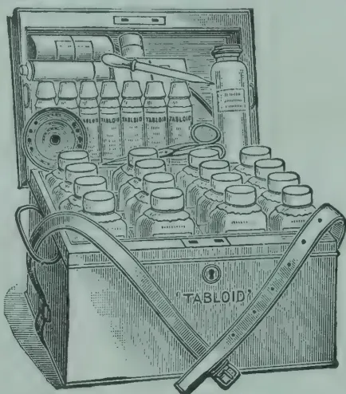
A compact yet comprehensive equipment containing medicaments, dressings, etc., which always maintain their efficiency in tropical climates.
Particularly adapted to the needs of settlers and planters. The ideal medical equipment for out-stations, works and camps.
Obtainable from all Chemists and Stores
BURROUGHS WELLCOME & CO., LONDON
AND COOK'S BUILDING, HORNBY ROAD, BOMBAY
xx 2703
All Rights Reserved
Extract from Progress Report of Assistant Entomologist. Third quarter 1920.
Speyer's Paint Mixture. An official trial of this paint was carried out by the Assistant Entomologist on a small scale at Sarnia during the above period. This trial was intended as a final test of the virtue of this paint and its value as a Scolyticide and was a repetition on a small scale of the experiment made at Hunasgiriya in April and May, 1920.
Experimental plot comprised two acres of a moderately level area, one acre being painted and the other left untreated as a control. Both control and treated areas were divided into 12 plots, an equal number of samples being cut from each plot, thus insuring, as far as possible, a fair average for each area.
Control area. Pruned July 1st. Cuttings removed July 1st ; 6th ; 11th ; 16th ; 21st ; 26th.
Treated area. Pruned and painted July 3rd. Cuttings removed July 3rd ; 8th ; 13th ; 18th ; 23rd ; and 28th.
DECEMBER, 1920.]369Fine weather prevailed throughout the experiment and conditions most favourable. Amount of paint available was 38 lb. per 1 acre, this amount being used at Hunasgiriya. SPEYER'S estimate was 25 lb. per acre.
Paint applied by hand and a liberal coating given to each bush and the 38 lb. covered 1 acre, all but 70-80 bushes, which were marked with whitewash to prevent accidental removal of sample cuttings.
Sarnia. Cost of treatment per acre :—Rs. 31.50 viz : Rs. 23.40 for materials and Rs. 8.10 for application.
Hunasgiriya. Cost of treatment :— Rs. 29.08.
Cost of treatment per acre :—Rs. 29.08 viz : Rs. 23.17 for materials and Rs. 5.91 for application.
Effect of paint. Painted area considerably retarded in growth.
Control area. First buds appeared 15 days after pruning.
Painted area. First buds appeared 20 days after pruning.
Six weeks after beginning of experiment the control area was at least four weeks in advance of painted area as regards recovering from pruning.
Three and a half months after commencement of experiment the difference between the two areas still most apparent, although most of the treated bushes are recovering but slowly. A few bushes showed every indication of dying and have only recently thrown out buds, but some have not done so and it is evident that many branches have been destroyed, the branches having cracked.
Formation of new wood unquestionably superior in untreated area and there are a considerably larger number of barren branches in the painted plot than in the control, and it is possible, although not yet certain, that many of these will become "diebacks." If this should prove to be the case, the loss of frame in the treated plot, as compared with the control, will be not inconsiderable.
During the course of the experiment 1300 galleries were examined in minute detail, records being made of the size, condition and occupants (if any) of each gallery. Figures appended.
Results of experiment are much more satisfactory than those obtained at Hunasgiriya and show a considerable benefit in favour of treatment.
Question arises whether a maximum reduction of 47% of adults, 86.5% of pupæ, 80.9% of larvæ and 22.10% of eggs warrants an expenditure of at least Rs. 30.00 per acre. In old and well grown tea there is no doubt that this cost would be increased to nearly Rs. 36 per acre.
Merits claimed for the application of paint mixture by MR. SPEYER are two-fold (1) it causes the destruction of a large number of inmates in the pruned bush, between the time of pruning and the output of new shoots, and (2) that the eyes of the pruned bush are protected from invasion by beetles owing to the repellent nature of the paint, resulting in a saving of branches which will otherwise become diebacks.
With reference to (1) the Assistant Entomologist states that in spite of the satisfactory results obtained from the Sarnia experiment carried out as it was under the most ideal conditions such as would rarely occur in general
370[DECEMBER, 1920.]practice except possibly in Uva province, there are still a considerable number of gallery inmates which remain unaffected by treatment. These escaping beetles, it is considered, are sufficiently numerous to establish foci of infestation in adjoining unpruned tea.
With reference to (2) Assistant Entomologist remarks that the instances where pruned bushes are re-invaded are by no means common, and furthermore it is considered that the cause of diebacks in shot-hole borer districts is more often due to borers left in the branches at pruning time than to those which enter subsequently.
The general question of treatment of pruned bushes by painting methods is then considered. The Assistant Entomologist points out that there are considerably more galleries in the prunings than in the pruned bush and therefore this treatment is valueless unless prunings are also disposed of in such a way as to insure the destruction of a large percentage of inmates.
MR. SPEYER recommended that the leaves and small branches should be removed and buried and that the heavier wood, where most of the galleries are situated, should be burnt. MR. JEPSON points out that this recommendation is sound from the point of view of borer destruction and at the same time it endeavours to effect a compromise for the benefit of those planters who are convinced that agriculturally the burial of prunings is essential, all green matter being returned to the soil by this method. Unfortunately, however, this form of pruning disposal is seldom resorted to, chiefly possibly on the ground of expense.
Further, that when MR. SPEYER recommended the use of his paint mixture he intended that prunings should be disposed of in the manner suggested by him, as otherwise mulching or lightly burying will enable more beetles to escape from the prunings than from the pruned bush had it remained unpainted.
Until therefore it is decided to destroy all inmates in the prunings either by the method advocated by MR. SPEYER by burning wholesale, or by burial with some substance, if such can be discovered, destructive to the inmates of galleries, it is useless to consider treatment by painting.
MR. JEPSON concludes that in view of the extremely high cost of treatment by painting with SPEYER'S paint mixture and the insufficient benefits derived, it is not considered that this form of treatment should be recommended for use on Shot-hole Borer estates.
Other subjects discussed in the Report will be dealt with in an early number of the TROPICAL AGRICULTURIST.
SARNIA ESTATE PAINT MIXTURE EXPERIMENT.
PERCENTAGE OF GALLERIES OCCUPIED.
| Date of observation. | Painted area. | Control area. | Reduction due to painting. |
|---|---|---|---|
| Commencement of Expt : | 60 % | 58 % | |
| 5 days later | 32 % | 58 % | 28 % |
| 10 " " | 24 % | 56 % | 34 % |
| 15 " " | 16 % | 55 % | 41 % |
| 20 " " | 10 % | 34 % | 26 % |
| 25 " " | 16 % | 33 % | 19 % |
The present depression in the tea market necessitates the adoption of several methods of curtailing expense and restricting crop, and advice has been sought regarding the connection between some of these methods and a possible increase in borer incidence. It is proposed, for example, on several estates, to postpone indefinitely the next regular pruning and, by ceasing plucking, to allow the bushes to "run up"; while in other cases it is proposed to prune, when due, in the ordinary way, but to eliminate subsequent plucking until the present conditions improve.
A third suggestion is to cease plucking when the next pruning becomes due and to allow the bushes to rest and "run up" for any period up to six months according to elevation, while other estates hope to restrict crop to the degree desired by fine plucking only, and no doubt there are many other methods by which it is proposed to effect the same result without necessitating abandoning the tea in any way.
As the various practices, which are to be employed, are irregular and unusual, there has been no opportunity in the past of basing any observations on the behaviour of Shot-hole borer under these conditions, but there are certain facts which assist one in arriving at an expression of opinion.
The following remarks, naturally, only relate to estates which are infested by borer.
In regard to the suggestion to postpone pruning indefinitely the opinion is held that this is inadvisable. The appearance of tea which has run its full pruning interval on many low- and mid-country estates, infested by Shot-hole borer, is well-known. Instances can be recalled where almost every branch on every bush has been riddled by borer and it is usually observed that this heavy degree of infestation has occurred during the six months immediately preceding pruning. The explanation of this comparatively sudden infestation is that the increase is due, not so much to the exhausted condition of the bushes inviting further attack from outside, as to increase by natural propagation in that particular field, brood succeeding brood, in rapid succession, until checked by pruning. At the termination of a two year pruning interval at least eight (but probably more) generations have been produced and a new brood will emerge at the end of every period of two months subsequently. When it is pointed out that at this period the female progeny of one original female has numbered no less than 10,000,000 individuals and that each adult female emerging at this time can, in eight weeks, produce a minimum of ten more females, which each, in turn, produces ten more in another period of eight weeks, the necessity of taking action to limit the activities of the insects at this period can be readily appreciated.
If pruning, in these cases, was postponed, and plucking continued, it would probably result in a complete infestation of 100% of the branches in the field, extending later throughout the collar to soil level, probably causing permanent injury to the frames. If, however, plucking ceased at this period and the bushes were allowed to run on unpruned, it is difficult to foresee how the borer would behave, and if the routine of cultivation and manuring, usually adopted at this time, was also dispensed with. It is considered that,
372[DECEMBER, 1920.for a time inconsiderable increase in borer would result, although it is possible that the ill-effects might be, in some measure, counter-balanced by an improvement in the bushes due to cessation of plucking.
An instance can be recalled where a large number of bushes were treated in this manner and four months later were entirely free from attack and no less than 83.8% of the old gallery-entrances had completely healed up, but in this case these bushes were given a liberal application of manure at the same time as the pruned bushes on the same field, and there is every reason to believe that this freedom from attack and condition of "gallery-healing" was induced by the manure applied.
The only opportunity which offers on estates of observing the behaviour of Shot-hole borer, in unpruned and unplucked tea, is in the case of seed-bearers and young clearings. Although a comparison of these types of bushes and those which have been plucked and pruned for years and then suddenly thrown out of cultivation, is not, perhaps, quite apt, the heavy attacks in the smaller branches of seed-bearers and the extraordinarily heavy infestation that often occurs on young clearings, both before and after centering and, in fact, up to the time of coming into the regular pruning round, leads one to conclude that a similar condition would occur in tea abandoned and allowed to run up in the manner suggested.
It is also significant that when occasional bushes, owing to general weakness, are left unpruned at pruning time and allowed to run up and have an opportunity of recovering such bushes are invariably subject to heavy infestations about three months after the pruning of the field. The probable explanation of this condition is that their prominence in the pruned field has invited attack by beetles emerging from the pruned bushes and from the prunings from the same field, while it is also possible that the acknowledged inferior constitution of these bushes has in itself proved a source of attraction.
From the point of view of borer infestation, therefore, especially in view of a cessation of all manurial programmes, the suggestion that pruning should be eliminated and the tea abandoned indefinitely cannot be approved. It is strongly urged, where estates are heavily infested by borer, that the tea, if possible, should be pruned when due although the pruning might be delayed, and plucking stopped for a period not exceeding six months, with less serious consequences than if pruning is postponed indefinitely.
In these cases the tea might then be allowed to run up untipped and unplucked for some considerable time, without anticipating a very heavy infestation, especially if the precaution is taken to prevent in emergence of beetles by burning prunings. The cessation of manuring must call for an increased effort, on the part of the bushes, to resist attack by borer and the period of comparative immunity cannot be as prolonged, under the conditions, as otherwise might be expected.
Where it is found necessary temporarily to abandon tea with the object of curtailing expense and restricting crop, pruning should certainly precede abandonment and it is understood that already some estates are following this course. It is probable that such estates will have a considerable advantage over those abandoning tea before pruning, in the event of any sudden improvement in the market.
DECEMBER, 1920.]373The other methods of restricting referred to apply to cases where the tea is not to be abandoned in any way, the only desire being to restrict crop. The suggestion to cease plucking and postpone pruning for a period will probably improve the fields considerably, where borer is not severe, and at the same time will restrict crop as desired.
Those estates which are able to reduce crop to the desired degree by fine plucking only are not affected by the points which have been raised, but it will be interesting to observe whether this milder treatment of bushes will result in any resistance to borer attack, and it is hoped that opportunities will be afforded of making observations regarding the behaviour of Shot-hole borer under the various conditions, contrary to ordinary estate routine, which are to be adopted in different localities, and that some information may be derived which will be of value in the control of this pest.
It is possible that further enquiries may be received regarding Shot-hole Borer in connection with other methods of crop restriction which have not been referred to and these can be dealt with as they arise. Up to the present time those methods which have already been discussed are the only ones concerning which information has been sought by planters.
F. P. JEPSON,
Assistant Entomologist.
Sarnia Group
Badulla, 4th Nov. 1920.
The latest bulletin of the Agricultural Department of the Federated Malay States, just issued, deals comprehensively with two dangerous diseases attacking rubber, so much so, that considerable loss is caused, temporarily, by the stopping of tapping when the disease is active, and permanently by the loss of bark. We are indebted to MR. A. SHARPLES, A.R.C.S., Government Mycologist, Kuala Lumpur, for a copy of this valuable publication. The information got together is the result of solid work performed under difficulties, and in its arduous labours the Department has left nothing to chance or theory, but has thoroughly established all views that have been put forth. The diseases in question are: Black Stripe and Mouldy Rot, and those responsible for the compilation of the bulletin are MESSRS. A. SHARPLES, A.R.C.S., W. N. C. BELGRAVE, B.A., F. DE LA M. NORRIS, B.SC., and A. G. G. ELLIS, B.SC.
The remarkable freedom from bark diseases of Hevea brasiliensis growing in Malaya was for long of interest to mycologists, BANCROFT in 1911 and BROOKS in 1914 recording their failure to find the canker ascribed in Ceylon and Java to Phytophthora faberi. The former mentions a bark affection, thought by him to be of physiological origin, which may have been due to
374[DECEMBER, 1920.neglect of black stripe; the affection is described as causing "sunken patches on the newly tapped surface" which make their appearance externally. If the dead bark be removed, the wood beneath it is found to be discoloured and the area of discoloured wood is greater than the external surface of dead bark would indicate. The dead area increases in size and the tapped surface may be affected for the whole length of the tapping cut and for a vertical distance of 1 in. or in. After a time the wounds commence to heal over, and the effect, which is therefore only temporary, is remedied. The disease was recorded here and there in isolated cases on several plantations, and on one plantation it was present in some abundance on trees of 7 and 10 years. RUTGERS (16) criticises the statements of BROOKS and SHARPLES that Hevea canker was absent from the F. M. S. basing his criticism on BANCROFT'S observations. The fact that black stripe may have existed in 1910-11, is no proof that it was present in 1913-14. It may be taken as correct that, except for a slight outbreak of some bark affection in 1910-11, rubber in Malaya was as a whole free from bark diseases till 1916. In that year two serious bark affections appeared in widely separated localities, one, "black stripe," in North Perak, the other "mouldy rot," in Negri Sembilan. The former within a few weeks appeared in Kuala Selangor and soon became generally distributed. The latter has remained closely confined to Negri Sembilan. The rapidity with which black stripe became general throughout the Peninsula gave rise to considerable alarm at the time, but it has since been found that, with proper precautions the disease can be controlled and little damage result to attacked trees; as long as the present immunity to leaf and pod diseases is enjoyed, it does not appear probable that black stripe will be a serious factor in retarding the progress of Malayan rubber plantations, although a certain amount (rising to minor epidemics in any year with an abnormal proportion of consecutive wet or damp days) will always be present.
Mouldy rot, although still confined to a limited area, is a much more serious disease, prevention is somewhat difficult, and the damage done decidedly greater. Signs are not wanting that the fungus is increasing in virulence. Like black stripe, mouldy rot is dependent on continuous wet weather for epidemic spread. In spite of certain minor differences, "black stripe" in Malaya is essentially similar to the diseases known as "black thread," "black line" or "cambium rot" in Ceylon, Burma, S. India, Java, Sumatra and Borneo, while "mouldy rot" differs considerably from any previously described rubber disease.
The disease is essentially one of the tapping cut with symptoms which, are by no means obvious, short vertical linear shallow depressions about " above the cut being the only external signs of attack for a considerable time. If the bark be pared off, dark lines are found beneath the depressions together with other lines which do not appear on the surface. The lines extend into the wood, widening as they go to stripes or bands, and it is quite common to find stripes " broad, and " to " deep in the wood at very early stages of infection. Further vertical and lateral extension in the wood is rapid, so that stripes several inches in length may be represented on the exterior by small lines less than " long. If tapping is continued, the depressions may coalesce
DECEMBER, 1920.]375and the diseased bark rot in patches, leaving the wood exposed. Exudation of latex from the stripes is of extremely rare occurrence. In many cases the disease is more superficial, and wood penetration is slight or absent, in others there is rapid coalescence of stripes and rotting of the tissues although the tapping may have been stopped at the earliest signs of the disease. The fungus is seldom visible externally except on wet mornings, when a delicate white "bloom" may be seen just above diseased tapping cuts. Bacteria are present in abundance. Microscopic examination of sections of recently infected bark has shown considerable deposition of a greenish brown substance insoluble in water, alcohol, acid, or ether. The latex remains colourless.
No fungus belonging to the genus Phytophthora has been found on diseased leaves or pods in Malaya. The seeds may or may not be diseased and the pods may either remain on the trees or fall off leaving the stalk behind. Abnormal leaf-fall and die-back of small branches has attracted attention locally at various times, but no leaf-stalks have been found showing the characteristic depressions described by McRAE. The freedom of Malayan rubber from leaf and pod diseases may be due partly to climatic factors, and partly to the inability of the fungi causing black stripe to attack uninjured leaves or pods.
In order to show the relationship of the fungi causing black stripe in various rubber-growing countries, the compilers have quoted the principal writers in the East on diseases of Hevea caused by Phytophthora, namely PETCH in Ceylon, RUTGERS in Java, DASTUR in Burma and McRAE in S. India. Experiments by these authorities in tabular form afford interesting reading as they furnish comparisons between the fungi of Malaya and other climes and valuable opinions on factors affecting the intensity and spread of disease.
The earliest attacks of black stripe in 1916 were noteworthy for virulence, Coalescence was rapid and the area of bark which rotted was large, while wood penetration was much deeper than that described in other countries. For these reasons, and also because it was thought at that time that the disease was one new to Malaya and might be eradicated by early drastic measures, excision of the diseased tissues—wood and bark—was advised. At first, removal of the stripes with a small gouge was thought to be sufficient, but it was soon apparent that the externally visible stripes gave no real indication of the extent of diseased tissues, so the removal of a strip of bark and wood of sufficient size to include the whole diseased area was recommended. Excision gave very good results from the point of view of cure, but it was found that owing to the vertical extension of stripes, too great an area of bark had to be removed. At the time, PRATT, as a result of experience in Sumatra criticised excision as unnecessary and harmful, while local evidence was accumulating of the recovery of untreated cases. The recommendation to excise was accordingly withdrawn. Diseased trees are now left out of the tapping round and the affected areas of bark painted with an
376[DECEMBER, 1920.antiseptic solution—Brunolinum 10-20% is most frequently used. The painting is not essential for recovery, but serves as a precaution against the spread of disease by the production of external mycelium or sporangia. Some planters find it possible to recommence tapping a few inches below the attacked cut after the lapse of a couple of months, but cases of re-infection have occurred which could be traced inwards to stripes in the wood connecting up with the original attack. It has been found safer to open a fresh cut on a different section—best after the lapse of two months. The following observations on the healing of infections are of interest. Six trees were inoculated and as soon as stripes appeared tapping was suspended and the diseased area painted with 15% Brunolinum. Three months after, two of the attacked areas were opened up—the stripes could still be seen in the bark, but a very thin layer of healthy wood had been laid down. Beneath this healthy wood the stripes were still fresh, although the fungus could not be re-isolated. Three months later two more trees were examined—the stripes in the bark had almost disappeared, while the healthy wood had increased in thickness. After 18 months the remaining trees were examined and stripes could no longer be traced in the bark—there was a layer of healthy wood about in. thick and the stripes were quite black and dry.
Under plantation conditions human agency plays a considerable part in spreading black stripes; certainly by tapping knives and probably also by the tappers' hands. This was particularly clearly brought out on a hilly estate, where contour tapping is practised; the spread of the disease along the contours compared with that up and down hill was most marked. Many attacks, on the other hand, bear little relation to the tappers' path. Insects do not appear to play any great part in spreading the disease; while the necessary wetness of diseased bark on which the fungus is growing certainly prevents spread by air-currents. Where pod disease is prevalent, washing of spores of the fungus down the tree is a possible means of infection, but in Malaya pods attacked by Phytophthora are either non-existent or extremely rare.
From theoretical considerations, the most certain method of preventing black stripe should be to suspend tapping during rainy or damp weather, and to reduce shade by thinning out where possible. In practice tapping is abandoned or postponed on wet mornings on account of loss of latex, but it would be impracticable, as long as maximum yields are demanded, to suspend it during every spell of damp weather. Thinning out has been recommended, and as an immediate measure on over-crowded estates, is beneficial and probably necessary. It must be borne in mind, however, that the leaf canopy may be expected to become as thick as before after a few years, and that thinning out, apart from increasing the vigour of trees, cannot be regarded as a permanent insurance against black stripe. In particular, one well thinned-out estate with good bark renewal, had quite as high a percentage of infections as less well tended neighbours. Recovery on the other hand was better on the better place. Soon after black stripe was noted here experiments were undertaken on large and small scales, using different solutions. Those were later narrowed down to Izal, Carbolineum, Brunolinum (proprietary tar products) and "formalin bisulphite" solution. In none of the
DECEMBER, 1920.]377experiments was the rubber made from the latex affected. Results of preventive painting on estates were gratifying, although the complete protection was not obtained. Izal (3-5% in water) is the most generally used antiseptic, formalin-bisulphite gave excellent results on some estates, but was unsatisfactory on others, and does not seem altogether suited to field conditions in Malaya. At the beginning of the outbreak it was recommended that tapping knives should be sterilised from tree to tree by dipping into strong formalin of Izal. Preventive painting against black stripe in Malaya need only be done during wet weather, and in districts in which the disease is known to occur. The cost is negligible in comparison with the protection afforded by the treatment against severe epidemics of black stripe.
Mouldy rot is at present the most localised rubber disease in the Malay Peninsula. It was first authentically recorded during the latter part of 1916, in the Seremban District on plantations near the Seremban-Tampin Road, but an examination of trees in this area led to the conclusion that it had been present for several months at least. During the early part of 1917, when rainfall was continuous, the disease spread rapidly through most estates along the Seremban-Tampin Road as far as Rembau, certain estates, however, remaining immune. There was also a spread from Sungei Gadut to Rantau and most of the estates in this neighbourhood were affected. The disease has always been more in evidence during periods of wet weather, and during drought has sometimes disappeared. During 1918 there was a gradual extension but in the latter part of the year, when rainfall was heavy, there was a serious spread. Outbreaks occurred around Mambu and in the Kuala Pilah district. The latter constituted a new centre of infection and the disease was almost certainly carried there by tappers from infected areas in Seremban.
The earliest signs of an attack of mouldy rot are depressed spots or blotches from in. to 1 in. above the tapping cut which spread and join up to form an irregular depressed band parallel to the cut. The diseased tissues rapidly darken and become covered with thick, greyish mould, easily visible at a considerable distance—consisting of a mixture of fungi, chiefly mycelium and spores of Sphaeronema sp. and Cephalosporium sp. This mould is the most characteristic feature of the disease, and once seen cannot be mistaken for anything else. Later small black bristles (about 5 mm. long)—the necks of pycnidia of Sphaeronema—to which wax-like masses of spores are attached, may be found rising through the mould. In 3 or 4 weeks, the diseased tissues rot completely, exposing diseased and discoloured wood and forming wounds similar to those produced by bad tapping.
Penetration of the disease is slight and wood discolouration is rarely found at a depth exceeding in. It may be greenish-black, reddish-brown or brownish-black. The fungus has never been found to penetrate below the tapping cut although narrow dark hair-lines may run in the wood above and below the cut. While continuous rainfall or damp weather is essential for epidemic spread of mouldy rot, it was clearly seen in 1916 that the disease could not seriously attack a plantation unless additional conditions
378[DECEMBER, 1920.favourable to the fungus or unfavourable to the rubber trees obtained. Well grown trees with vigorous renewal may be attacked, but the disease is nearly always thrown off before serious damage is done.
The system of tapping in favour on most of the attacked areas—Chinese labour on contract—also lends itself to the spread of the disease. Naturally the contract tapper tends to go for maximum latex yield and taps deeply, wounding, on the whole, more than a Tamil or other worker on daily wages. The tapping on native holdings follows much the same opportunist policy with similar results.
When the disease first appeared it was thought likely that some species of Phytophthora was the cause of the trouble, but none has ever been found, and inoculation experiments showed the Sphaeronemo to be capable of reproducing the disease. The fungus grows well though slowly on the usual agar media, bean, green pea, potato and wheat, more rapidly on rubber bark agar, and very slowly on glucose agar or meat extract agar.
Mouldy rot differs from black stripe in that prompt treatment of diseased trees, in addition to suspension of tapping, is essential both to avoid the destruction of large areas of bark and to prevent the spread of the disease by spores. Methods of control have changed considerably as experience has been gained. At first it was hoped that the painting of affected tissues with a strong antiseptic solution would control the disease, and early work appeared to support this. Actually the arrest of development was due to a short spell of dry weather and with the return of rain the disease reappeared on and below the treated areas. This led to the adoption of more drastic measures. Tapping should be stopped on all diseased trees for at least a month during the period of continuous rainfall, or for such longer periods as the rain may continue; especially on closely-planted estates in damp localities. When a treated tree is again brought into the tapping round, it should be opened on a new cut, preferably on a different sector of the tree from that previously diseased, but, if on the same sector, a band of bark at least two inches wide should be left between the new cut and the original one. Should the disease be detected in its early stages and be merely superficial, it is unnecessary to remove the diseased bark, but the tapping surface should be well painted with a mixture of Jodelite and Tar 50% on at least three times at intervals of about a week. Should the disease have spread and penetrated to the wood before detection, all the diseased bark should be removed before the application of Tar and Jodelite. In this case a wound will result, and it is therefore important that all trees in affected areas should be kept under very close observation.
Over-crowding, leading to poor renewal, and careless tapping, has been given as a factor which combines with long-continued wet weather to promote spread of mouldy rot. It should, therefore, receive careful attention, especially in areas at present free from the disease but bordering those affected. It is most important that fresh tappers—especially those coming
DECEMBER, 1920.]379from diseased areas, should have their knives properly sterilised or be provided with new knives. As regards preventive painting, measures that have met with complete success in some areas have been found totally inadequate in others. Moisture, over-crowding, close or careless tapping, poor renewal and imperfect supervision play a part in determining the success or failure of the measures adopted, whilst the number of spores produced and the resistance of macrospores may make successful painting more difficult for mouldy rot than it is for black stripe. It is essential clearly to distinguish between treatment of actually diseased trees and preventive measures for unaffected trees. There has been a tendency to confuse the two, and recommendations made for prevention have been applied as treatment for diseased trees. It is obvious that painting of diseased and healthy trees by the same coolie is likely to lead to trouble; although the brush should be sterilised by the solution employed, the workers' hands and clothing are not, and spores may be carried by them to imperfectly painted receptive surfaces. Generally the most successful method has been daily painting with Izal (about 4.5%) or Carbolinum (2.3%) in conjunction with a fortnightly or three weekly painting with 20% Brunolium solution. In many cases, however, the fortnightly painting alone has been found an adequate protection. If the percentage of diseased trees is at all high it is preferable to stop tapping throughout as long as wet weather continues.
At present the disease is confined to certain parts of the country, but the affected area has extended during the past twelve months. Every effort should be made to prevent any further extension. Planters on estates and in districts at present free should make themselves thoroughly familiar with the symptoms and report immediately any suspicious case on their estate, or on neighbouring small holdings to the nearest Agricultural Inspector. Tapping coolies, moving from one district to another, are a great danger, and care should at any rate be taken that they are provided with clean tapping knives. Thinned-out trees on infected estates should be burnt on the estate and should never be allowed to be removed for firewood or any other purpose. Fortunately it can be said that the measures recommended for the control of mouldy rot are effective.
Black stripe fortunately has not proved so dangerous in Malaya as was at first anticipated and as it has proved in other countries. It is, however, a dangerous disease and cannot be neglected. Small epidemics are always likely to occur when weather conditions are favourable to the growth of the fungus. The problem of the relationships of the casual fungi in Southern India, Burma, Sumatra and Malaya is an interesting one and cannot be regarded as settled. —MALAYAN TIN AND RUBBER JOURNAL—Vol. IX., No. 19.
380[DECEMBER, 1920.G. P. DARNELL-SMITH, D.Sc., F.I.C., F.C.S.
The external signs of “bunchy top” are well known, but it may be advisable to call attention to some internal signs.
Healthy banana tissue, both of the corm and of the pseudo-stem, is almost dead white when first cut across. It may, of course, turn to purplish colour on the outside soon after it has been cut with a steel knife owing to the action of tannin and the formation of a sort of ink.
The unhealthy tissue of a bunchy top corm is pink or reddish brown. In bananas in the incipient stages of the disease in the lower part of the corm, irregular threads, yellowish red or light brown in colour, are seen. In more advanced stages of the disease these threads are darker and reach the base of the pseudo-stem, and they may run up the stem for a considerable distance.
From these unhealthy corms, cultures of bacteria have been obtained under suitable conditions, which form white, circular, moist, glistening colonies. These colonies must consequently be regarded with suspicion.
Growers are recommended, therefore,
Colonies of bacteria somewhat similar to those from banana corms have been obtained from the roots of sugar-cane showing signs of bunchy top.
The reddish sap that collects in the hollowed out rhizome of a bunchy-top plant has been found to have an extraordinarily rapid withering effect upon young shoots placed in it.
The presence of the reddish threads (diseased vascular bundles) is not peculiar to the bunchy-top disease; they are found in other banana diseases, including the Panama disease. DR. BRANDES has given a very detailed account of Panama disease in Phytopathology, vol. 9, No. 9. Several of the symptoms of this disease are found upon bunchy-top plants. The Cavendish banana is not supposed to be susceptible to the disease, which is caused by a fungus Fusarium cubense. A Fusarium fungus has occasionally been found upon bunchy-top plants.
A bunchy-top plant must therefore be regarded as possibly infectious, and the object of the present note is to inform growers of the advisability of destroying bunchy-top plants completely (to dig them out and leave them on the ground is of no advantage), and to keep one set of tools for dealing with affected plants and to use them for no other purpose.
That any organism is the actual cause of a disease can only be demonstrated by a series of infection experiments carefully carried out, and these take time, but in the meantime (additional to the foregoing precautions) strict attention to the selection of healthy suckers from healthy stock, and the rejection of those showing internal signs of disease (the red threads can be seen where the sucker has been detached from the parent corm) is recommended as the surest method of eliminating bunchy top.
DECEMBER, 1920.]381As still further precautions, the cut end of suckers should be dipped in lime before being planted, and places from which bunchy-top plants have been removed should have lime dug into them, and new plants should not be set in such spots for a considerable period.—AGRICULTURAL GAZETTE, N. S. W., Vol. XXXI, Part 8.
C. C. BRITTLEBANK,
Vegetable Pathologist.
Bacillus solanacearum, E. F. Smith.
This is the cause of the well-known potato disease “Sore Eye” or “Wet Rot.” In the tomato, as well as in the potato, there is a sudden wilting of the plants, the result partly of the water supply being cut off by the blocking of the water-bearing vessels by the bacteria and their products.
All wilted plants should be removed and burned as soon as observed. Land on which this disease has occurred should not be used for tomatoes, potato, capsicum, or tobacco crops for an interval of two or three years. The disease can be carried from diseased to healthy plants by gnawing insects. For the control of insects, spray with 2 lb. of arsenate of lead in 50 gallons of water. Fortunately, “Bacterial Wilt” is not, so far, common in the tomato fields of this State.
Phytophthora infestans, De Bry.
In the drier portions of Victoria, Potato Blight has not caused any considerable loss to tomato-growers. Besides the potato and tomato, a native solanum, Solanum aviculare, has contracted the disease.
Weather conditions are the predominant factors in the spread of this disease. Heavy continued rains in January, February, and March with cloudy muggy weather are favourable to the development of potato blight in the tomato. As a rule, the fruit is more commonly attacked than the leaves.
On the leaves, dark-brown or black blotches appear, generally at the tips or sides. On the undersurface of these diseased areas a fine greyish-white mould will be noticeable if the weather be warm and moist. This mould is composed of upright branching filaments, on the free tips of which are borne numerous lemon-shaped sporangia.
Dark streaks will show on the stems and leaf stalks—these, as well as those on the leaf, extend until the whole plant is black and dead. On the fruit, slightly-sunken irregular areas appear—brownish-red in colour—and of a varying size. If the fruit be cut through, the flesh will be found to be brownish and mottled, and somewhat firmer than the healthy fruit. Spraying with 8, 10, 40 coppersoda should not be delayed if the disease is observed, and it is better to anticipate it and spray to prevent rather than to wait until the disease is present.
Climatic conditions favourable to the development of Potato Blight also favour the development of other diseases which attack tomatoes. Spraying should be carried out whenever weather conditions permit.
382[DECEMBER, 1920.Fusarium lycopersici, Sace.
The sleepy disease is caused by a parasitic fungus, F. lycopersici, Sace., which gains entrance into the plant through the roots. Plants are liable to attack by this fungus at all stages of growth from the time they are seedlings until they are in full fruit. Young plants when attacked fail to keep pace with the healthy ones in growth; their leaves assume a sickly yellow, and the lower ones fall. Other plants show the effects of the disease when the first cluster of fruit is about to ripen, and it is seldom that any plants attain a greater development, the last symptom being a sudden wilting, and death quickly follows. When the fungus has gained entrance into the tissue of the plant it cannot be controlled, and plants should be destroyed as soon as it is seen they are contaminated.
In some tomato-growing countries the sleepy disease or wilt has caused very serious losses, and it is common to have every plant in large blocks killed off just as they are coming into bearing. Fortunately, however, neither the Bacterial nor the Fusarium Wilt has yet caused any marked loss in those districts of our State most suited to tomato culture. Every care should be taken, therefore, to check the first outbreak. When once the Fusarium has invaded the soil, it is most difficult to eradicate, soil treatment being too expensive. The only means of clearing large areas is by rotation of crops; and, as the fungus is known to remain in the earth for seven years, it would be a great loss to growers for tomato land to lie idle for this long period.
Alternaria solani (E. M.) Jones et Grant.
This disease is one of importance to the tomato grower. Plants may be attacked at any stage of growth, from the seedling to the plant in full bearing.
Symptoms of attack are:—On the leaves well-defined and more or less circular spots develop; these rapidly increase in size until in cases of virulent attack they become confluent.
If the spots are carefully examined they will be found to be marked by concentric rings, hence the common name "Target Spot." These rings indicate the stages of growth made by the fungus within the tissue of the leaf.
On the stem and leaf stalks black or brownish-black streaks and spots show. Later, the whole plant assumes a sickly yellow colour, with the leaves blotched yellow and folded inwards.
Fruit affected by "Target Spot" develops sunken or depressed spots and blotches beneath the skin. In time a dark mould appears on the diseased spots, and the fruit rapidly decays.
Control.—Cultivate and stimulate the growing plants, for usually the disease is in part due to their want of vigour. Spray with 6, 9, 50 copper-soda as soon as the disease appears. A second spraying must follow within seven days, and a third later, if necessary.
DECEMBER, 1920.]383Good results have been obtained by the above-mentioned method of control. At one place several thousand bearing plants, under glass, were badly attacked. They, as well as the glass, benches, and floor of the house were sprayed as directed, with the results that the disease was completely controlled, and did not appear in the tomatoes grown in the house during the same or following year.
Spotting of the leaves and stem is a feature of this disease, as well as in the one known as "Spotted Wilt"; therefore, care should be taken in examining the leaves to ascertain if the spots show the concentric rings. Spots caused by the "Target Spot" are much more definite than those caused by the "Spotted Wilt." Spraying with copper-soda has no effect on "Spotted Wilt."
There is no period in the life-cycle of the tomato more critical than that of the seedling stage. The treatment given in the initial stages of the life of a plant or animal has a marked influence on its ultimate success. This is more noticeable in short-lived plants than in those which attain a great age. Consequently, better yields may be looked for from vigorous tomato plants than from those which have been checked by disease while seedlings.
It should be the aim of the grower to raise clean plants; to this end he must use every care to see that the soil of the seed bed is freed from fungible to attack seedlings. This can, in a great measure, be attained by sterilization of the soil by steam, or by using virgin soil to which an admixture of lime has been added. Steps should be taken to exclude diseased material from previous crops gaining entrance to this soil. Many growers foolishly use the same earth in the seed beds year after year, and when new beds are required old dead tomato plants are collected and mixed up with the soil. Such practices will bring about conditions under which it will be impossible to produce healthy plants. In those districts where the extensive and intensive culture of the tomato is practised, disease will be more common and more difficult to control than in the past. This is due to the fact that there are many more centres of infection from which the disease can spread to the adjacent blocks.
Rhizoctonia solani, Keuhn.
One of the most destructive seed-bed troubles is caused by the fungus known as Rhizoctonia solani, Keuhn. This is essentially a soil-inhabiting fungus; therefore, earth containing it, if used for seed beds, will produce diseased seedlings if the temperature and the water-content of the soil be high.
384[DECEMBER, 1920.Unfortunately, quantities of the soil used in the suburban districts for seed beds is naturally infected, and consequently many of the young plants when sold fail to thrive, or remain stunted and produce a light worthless crop.
Seedlings in their early stages when affected by Rhizoctonia have the edges of the leaves folded upward and inward, their tips purple or bluish-purple. Later, the plants rot at slightly below the soil surface and topple over. This severe form of attack may affect a few plants scattered through the seed bed, or it may spread outward from the centre of infection, killing all the plants in the bed. In milder attacks, the plants remain stunted, with the lower leaves yellow, the upper folded inwards, and the crown leaves crowded and slightly rigid and of a greenish purple.
If the roots of one of these plants be carefully examined, very fine dark-brown threads will be observed; they will also be noticeable on the underground stem and at the collar of the plant.
Microscopic examination of the roots in section will show that the fungus has invaded the cells, causing injury and death to the invaded roots, but not to such an extent as to kill the plant. Experiments carried out with a like number of diseased and healthy plants gave the following results:—The yield from the diseased plants was seventeen and a half times less than that taken from healthy bushes. Thousands of slightly diseased plants are sold annually round the suburbs of Melbourne, and this may account for the many failures to obtain a good return.
Control measures are of little or no avail where plants have their roots invaded by Raizoctonia. Soil sterilization by steam should be carried out if possible. If this cannot be done, lime should be mixed with the soil at the rate of 1 cwt. to 5 cubic yards. The mixing should be done about six months before the soil is to be used. After mixing the lime, the soil should be tined over at least twice before it is brought into use. Water should be used as sparingly as possible, and the temperature kept between 68 to 72 deg. Fahr. The control measures suggested have been followed by several of the largest growers of tomato plants with perfect success. "Root Rot" in former years destroyed many thousands of seedlings, but at the present time no loss occurs in the houses where the above directions are carried out.
Pythium de baryanum, Hesse.
"Damping Off" is another disease which attacks young tomato and other plants.
DECEMBER, 1920.]385Symptoms: The plants appear sickly, soon decay at the collar, and fall over and perish. The Roots, as a rule, are not injured, the point of attack being just at or below the soil surface. Whole trays are killed off within a few days. As the fungus remains in the soil for some considerable time, the trays and soil should on no account be used again until they have been sterilized.
When this disease appears among seedlings, it can be taken as a sign that too much water and too little ventilation have been given, and that the temperature has been kept too high.
"Damping Off" is often difficult to control, but favourable results have been obtained by a heavy drenching of the plants and soil with 6 lb. of bluestone and 9 lb. of washing soda in 100 gallons of water, or by dusting the plants with sulphur. This treatment, together with careful watering and good ventilation, should hold this disease in check.—JOURN. OF DEPT. OF AGRIC. VICTORIA, Vol. XVIII, Part 7.
W. J. DAWSON.
A new disease made its appearance on coffee in 1917 in the Nairobi area and also up-country. The trouble was found to be wide-spread following considerable rain.
The youngest apical leaves of the tree or those of a young primary near the top blacken and shrivel. The stalks and shoots show a dark discoloration in the interior. The disease appears to be caused by a species of Phoma. An account is given of the physiological effects, mode of infection, and appropriate remedial measures.
Trees showing early stages of the disease can be saved by topping them well below the discoloured cortex. Trees in which the stems appear dead for a considerable distance can be saved by stumping within 8 in. of the ground. In cases in which the discoloration has come near the ground level the trees cannot be saved. All trees which have been saved and adjacent trees should be sprayed with Bordeaux mixture at a 2 : 4 : 40 strength. Overbearing should be prevented. Precautionary spraying just before the commencement of the rains is recommended in order to kill the spores of Phoma and Hemileia. (BRIT. EAST AFRICA DEPT. AGR., DIV. MYCOL. LEAFLET 1 (1917,) pp. 4).—Expt. Station Records, Vol. 43, No. 3.
386[DECEMBER, 1920]Minutes of Meeting of the Committee of Agricultural Experiments held at the Experiment Station, Peradeniya, on Thursday, 11th November, 1920.
Present :—The Director of Agriculture (Chairman), the Acting Government Botanist and Mycologist, the Government Entomologist, the Government Chemist, Messrs. A. J. Austin Dickson, T. Y. Wright, N. G. Campbell, R. Garnier, E. W. Keith, R. G. Coombe, A. W. Beven and G. Harbord (Secretary).
Visitors :—Messrs. Huntley Wilkinson, F. A. Price, J. Piachaud, M. H. Reeves, G. E. Jayatilleke Hulugalle, N. K. Jardine (Plant Pest Inspector, Entomological), C. H. Gadd (Plant Pest Inspector, Mycological) T. H. Holland, R. D. Morrison and T. H. Cannon.
Letters of regret from the Hon'ble the Government Agent, C. P. Kandy, The Director of Food Production, Lt. Col. L. Bayley, Messrs. D. S. Cameron, J. S. Patterson, A. S. Long Price, H. L. de Mel, E. C. Villiers, W. A. de Silva and Mudaliyar Rajapakse were read.
The Minutes of the last meeting were confirmed.
The Chairman announced that Government had appointed Messrs. A. J. Austin Dickson and R. Garnier as Members of the Committee of Agricultural Experiments vice Messrs. M. L. Wilkins and H. D. Garrick. The Chairman introduced Mr. R. H. Reeves, Chairman of the Dolosbage and Yakdessa Planters' Association, who had kindly consented to be present that day and give his experience of treatment of Tea Tortrix.
The Chairman referred to these giving explanations on various points which were accepted by the Committee.
The Chairman informed members that since the last meeting Tractor Trials with Fordson Tractors had been held at the Tinnevelley Experiment Station, Jaffna, and by kind permission of Mr. EKANAYAKE on Walahapitiya Estate, Nattandiya.
The Trials at Jaffna were carried out under the supervision of Mr. W. P. A. COOKE, Farm School Officer, Jaffna, and those at Walahapitiya Estate under the supervision of Mr. G. E. JAYATILLEKE HULUGALLE, Acting Assistant Manager, Experiment Station, Peradeniya. The Chairman stated that he personally visited the trials at Jaffna while they were being carried out and MESSRS. BROWN & CO. sent Mr. KELLEY to represent them at those trials.
•• The results of those trials were submitted to the meeting.
DECEMBER, 1920.]387The Chairman asked the Committee whether these statements, together with that of the trials at Peradeniya, submitted to the last meeting should now be issued to the press for general information.
He mentioned that MR. EKANAYAKE had allowed MR. HULUGALLE to tabulate estate workings with a Fordson Tractor upon his Estate and had given him permission to publish the same in the name of the Chilaw Coconut Company. These figures were shown in statement "C."
The Chairman stated that he had asked through the medium of the press for other figures from estates using Tractors and that it is intended to publish as complete details as possible in Bulletin form in due course.
Mr. N. G. CAMPBELL asked what the depreciation cost was. The Director stated that MESSRS. BROWN & Co. stated that the life of a Tractor was about 10 years.
LT.-COL. T. Y. WRIGHT enquired whether much soil wash had been experienced as a result of Tractor ploughing as he had found on undulating soil the wash was considerable. The Director replied that although the land was undulating at Chilaw there had not been much soil wash.
Some discussions followed in which MESSRS. T. Y. WRIGHT and R. G. COOMBE took part and the opinion of the meeting was that the present statements with other types of tractors should be published, and that further trials with other types of tractors should be made if possible, and further data collected prior to the publishing in Bulletin form.
The Plant Pest Inspector gave a brief account of the progress made in investigation work, and stated that applications of lime over the tortrix-affected bushes was efficacious in controlling the pest.
Mr. REEVES then gave his experience with lime. He had found that slaked lime of good quality applied by hand was most effective in dealing with tortrix. MR. COOMBE mentioned the possibility of wilt having played a part in the control of the tortrix.
A general discussion followed.
The Chairman thanked MR. REEVES for coming to the Meeting that day and giving an account of the measures taken by him for dealing with the pest with measures which might prove to be the means of effectually controlling the Tortrix. He stated that arrangements had been made for other field trials under the supervision of MR. JARDINE.
The Chairman announced that a four-acre block of rubber from seed of No. 2 Heneratgoda tree, would shortly be ready for tapping.
The Director of Agriculture proposed that "individual tapping" should be started on all the trees with the object of finding out the individuality of each tree as regards yields, etc., and he invited the approval of members.
After some discussion, it was decided that an experiment as suggested by the Director should be started after the leaf-fall on 1st April, and that the method of tapping should be half-spiral on alternate days.
The Chairman described what was being done by the Department of Agriculture with regard to Food Production Leaflets.
388[DECEMBER, 1920.Separate leaflets were being compiled for each of the planting districts in which were given full details relating to the principal food products suitable for growing in any particular district.
The Government Entomologist read the progress report of the Assistant Entomologist on Shot-hole borer investigations, especially in regard to trials with SPEYER'S paint mixture.
The Chairman said that he would arrange for MR. JEPSON to attend the next meeting of the Committee when all matters relating to investigations in Shot-hole borer would be fully discussed.
The Government Entomologist read a paper which had been submitted by the Assistant Entomologist on this subject which was of extreme importance at the present time.
A general discussion followed, in which MESSRS. COOMBE, DICKSON, REEVES and the Acting Botanist and Mycologist took part.
There was a consensus of opinion that some control measures should be adopted in view of inevitable closing down of large areas of tea in the near future.
It was decided that the paper should be sent to the press.
The Government Chemist gave a brief résumé of the manurial experiments on Kurakkan which were carried out to ascertain whether yields could be profitably increased with artificial manures and to test the comparative effect of Basic slag and Ephos phosphate with Nitrolim, Calcium Nitrate and Ammonium Nitrate, as well as the same easily available nitrogenous manures without phosphates or potash.
Basic slag and Nitrolim gave the best results compared with the control plots, and basic slag was generally better than Ephos phosphate.
The results of the nitrogenous manures applied alone were unsatisfactory, though in one plot in both series Nitrolim alone gave a fair increase.
The great variation in growth and yield both in the Control and duplicate plots was pointed out as being due mainly to difference of soil, although the lay of land was fairly level and uniform in appearance. This variation is often noticed in newly cleared lands which makes it difficult to deduce results from small areas.
The ripening of the kurakkan (ordinary seed having been used) was irregular and harvesting of the ripe heads was done in three operations to obtain more uniformly ripening seed for further sowings.
The effect of phosphoric acid in Series A apparently increased the percentage of earlier ripening grain, but the results are too irregular to form any conclusions at present.
The after-effect of the manures will be noted on later crops of Lima beans, etc., in the same plots.
DECEMBER, 1920.]389Owing to the wet weather the visit to the paddy field had to be abandoned.
The meeting then terminated with a vote of thanks to the chair.
G. HARBORD,
Secretary, Committee of Agricultural Experiments.
From 1st September, 1920 to 31st October, 1920.
| Village Hatiel | ... | } 6 months paddy |
| Elvi | ... | |
| Indrasail | ... | |
| Muttu Samba | ... | |
| Dr. Lock's Hatiel | ... |
The new plots were clean weeded and vacancies supplied during the latter part of October.
In the Cacao and Castilloa rubber plots, the parasite was found to be prevalent.
| Wet Days. | Inches. | ||
|---|---|---|---|
| September | ... | 9 | 6.25 |
| October | ... | 18 | 12.12 |
G. HARBORD,
Manager, Experiment Station, Peradeniya.
DECEMBER, 1920.]391From 1st September to 31st October 1920.
"Time of Sowing" Experiments.—A fresh start has been made with these experiments to test the best average season to plant and when paddy fly and other pests may be expected to be troublesome. 4 measures of each of the following varieties of paddy, Murungan, Ilankalayam, Mawi and Muttu Samba, were sown in a nursery in September and the seedlings transplanted 4 to 5 weeks later, singly, 6 inches apart on to 4 plots of an acre each.
A nursery of the same varieties was sown in November for the next four plots.
"Varietal Tests" and Botanical Examinations by Economic Botanist.—The Crotolaria Juncea planted in July has been cut and spread uniformly on the fields and ploughed in.
The acre plots are being divided into small plots by means of ridges made across.
The whole field has been ploughed and got ready for transplanting the pure lines being tested by the Economic Botanist.
The new paddy area has been further levelled, worked and cultivated and a portion planted with Muttu Samba seedlings 6 in. apart. These experiments are to ascertain suitability of plots for varietal tests.
Sisal Fibre.—Some of the vacancies have been supplied with nursery plants. Steps have been taken to procure plants from the Maha Iluppalama plantation for supplying the rest of the vacancies, the plants are certainly looking better after the few showers of rain we have had.
Mauritius Fibre.—Most of the vacancies have been supplied with plants obtained from Katugastota. Steps have been taken to get a further supply; this plot is looking very well.
The interplanted castor have all been uprooted after the seed had been collected. It is intended to plant Leucaena glauca to take its place.
The area for limes has been cleared, weeded, lined out and holed for planting shortly, with plants from nurseries.
A round of suckering has been completed. The trees are laden with berries. Orders for seed are coming in steadily.
A start has been made to cut down the canes, clear up the plots, spreading the dried leaves on alternate days. Several orders for tops and canes have been executed.
100 lb. of seed have been sent to Peradeniya for despatch to the Imperial Institute, London.
Records have been kept of the seed when fresh and dry. Ripe bunches are being collected daily.
392[DECEMBER, 1920.]1/10 of an acre has been ridged and planted with drumstick (Murunga) cuttings, Jaffna, variety.
The whole of the area cleared for limes has been planted with Dhall and holes prepared for the limes.
10 varieties of Tannia yams obtained from the Stock Gardens at Peradeniya have been planted out.
1/5 of an acre has been planted with Manioc cuttings. The two plots planted in June to test the relative merits of horizontal versus vertical planting have proved very interesting and instructive to villagers and others visiting the station. The horizontal method is by far the better method; the plants are certainly healthier and more robust.
Two new plots of Plantains have been planted out in the East and West Indian methods with a row each of the following varieties: Koli-kuttu, Suwandel, Embul Hondarawala, Alukehel, Mohondan. The plants in the old plots have been uprooted, and the land will be planted with some leguminous crop.
1/10 acre of Green peas has been sown. The vacancies in the new and Mauritius pine plots have been supplied.
The two sets of cooly lines have been completed and the erection of a third set has been begun. The Conductor's bungalow is nearing completion.
The low land opposite the new set of cooly lines is been filled up and terraced with sods of grass.
The live fence of Madras thorn planted among the main road to Jaffna is being cut down to 4 feet.
3 temporary latrines have been built for the use for the coolies occupying the new lines.
An area of 6 acres has been enclosed by a five-strand barbed wire fence. The non-rocky area has been divided into three. For the present season the following crops have been planted.
Part 1. Tubers:—Manioc and Sweet Potato.
Part 2. Legumes:—Green gram and black gram.
Part 3. Cereals:—Maize and Kurakkan.
The experiments are to test whether with rotation chenaing of lands can be made continuous.
The coolies have shifted into the new set of lines. A severe epidemic of Malarial fever has broken out, probably due to the change of weather. A house-to-house inspection is carried out daily at 11 a.m. and Quinine and Lime juice administered.
The Director of Agriculture inspected the Station in September and October.
DECEMBER, 1920.]39324 officers of the Kachcheri and other Government Departments visited the Station, and were given a lecture on "Paddy Cultivation" by the Manager. The officers took a keen interest and put many questions on the subject. It has been arranged by the Director of Agriculture that a series of lectures be given by the Manager on the different tropical products grown on the station.
Manurial experiments on paddy land under the supervision of the Manager is being carried out in the North-Central Province, four plots of an acre each having been selected by the Government Chemist.
| Inches | Days | |
|---|---|---|
| September ... .. | 18 | 1 |
| October ... .. | 7.48 | 9 |
H. A. DEUTROM,
Manager, Dry Zone Experiment Station.
Minutes of a meeting of the Nachchadurwa Colonisation Committee held at the Anuradhapura Kachcheri on 6th October, 1920, at 10 a.m.
Present.—The Government Agent (in the chair); Messrs. L. P. Emerson, D.I.E., H. L. De Mel, C.B.E.; Mudaliyar A. E. Rajapakse, Mr. W. A. De Silva and Mr. J. W. Robertson, Colonisation Officer.
1. The Chairman announced that the Director of Irrigation had nominated the D. I. E., N. D. to take his place on the Committee and that letters had been received from the Director of Food Production, Director of Agriculture and SIR PONNAMBALAM ARUNACHALAM regretting their inability to be present.
2. The Chairman made a brief report on the progress of the Colony. The first village settlement has been started consisting of 19 families and a total population of 91. Of these 9 families were selected by MR. DE MEL and 10 by recruitment locally. The village site was cleared on contract and temporary quarters erected for MR. DE MEL's colonists at Rs. 125/- per building. The local colonists are putting up their own buildings. In addition to the 24 acres high land as village site, 42 acres of mud land have been cleared and burnt. This with the bed of Maha Ratmale tank gives some 60 acres of mud land available for the sowing of paddy chenas. Kurakkan will be sown on the high land. A temporary dispensary has been erected and there is a resident dispenser. The health of the colonists is good, but the fever season has not yet begun.
3. The Chairman reported that the expenditure to date was Rs. 7,665.03 as follows :—
| 1. | On account of allowances of the Colonisation Officer | Rs. | 930 | 00 |
| 2. | do Jungle clearing | ... | 1,510 | 50 |
| 3. | do Well | ... | 520 | 00 |
| 4. | do Temporary quarters | ... | 2,169 | 73 |
| 5. | do Dispensary | ... | 471 | 34 |
| 6. | do Office Furniture | ... | 75 | 90 |
| 7. | do Tools | ... | 467 | 37 |
| 8. | do Advance of rice, cash and seed paddy | .. | 1,035 | 97 |
| 9. | do Miscellaneous payments | ... | 484 | 22 |
| Total Rs. | 7,665 03 | |||
4. MR. DE MEL offered to give a milch cow to the colony. The following resolutions were agreed to :—
1. The Maha crops be treated as communal property and divided among the colonists in proportion to their families and the labour contributed. The cost of seed be borne by Government.
2. A good sized single cart and country bull be procured for the common use of the colonists.
3. A receiving office to be opened at Ratmale ; agreed that the cost of the runner be met jointly by the D.I.E., Mr. W. A. DE SILVA and colony funds.
4. A permanent school building to be erected as soon as possible.
5. A permanent dispensary and a dispenser's quarters should be built with a ward of 12 beds for the accommodation of patients being treated at the dispensary.
6. The opening of boutiques should not be encouraged for the present.
7. Read letter from the Director of Food Production on the question of houses for colonists. Resolved that the houses should be provided by Government. A type plan and estimate for suitable permanent buildings to be prepared. The houses should either be built out of public funds or the materials supplied free and the balance cost of the house after deducting the cost of materials paid to colonists who build their own houses to the approved plan.
8. Read letter from the General Manager, Railways, stating that a "halt" will be provided if the traffic warrants it and that no steps will be taken to deal with goods traffic until the volume of traffic is such as to justify the expenditure. Resolved that the General Manager be asked for definite particulars of the facilities to be given at the "halt" for passenger traffic.
9. Resolved that arrangements be made to start two new village settlements in time for the Maha season of 1921. The village sites to be cleared in February and March and permanent type quarters for colonists be erected on contract in time for the reception of the colonists in July.
Families should be passed by a Medical Officer before selection.
10. On the report of the Colonisation Officer it was decided that James Appu of Bope should be sent back to his village.
Minutes of a meeting of the Kandy Food Production Committee held at the Kandy Kachcheri on Friday the 5th November, 1920, at 2 p.m.
Present.—Hon'ble Mr. W. L. Kindersley, Chairman ; Messrs. A. B. Talgodapitiya, R. E. Paranagama, G. Harbord, J. R. Nugawela, W. Molegode, R. S. Pelpola and T. G. Willett, Secretary.
1. Read and confirmed minutes of the previous meeting held at the Kandy Kachcheri on Friday the 6th August, 1920.
2. Reports of the Food Production Sub-Committees of Uda Dumbara and Pata Hewaheta were read.
3. Statement of lands leased for production of food-stuffs was tabled and read.
4. Diaries and programmes of work of the Agricultural Instructors were tabled.
5. Crop report of the Agricultural Instructor, Gampola, for August, 1920, was read.
6. Resolved to ask Government for funds to provide prizes for cultivation of Chena land in order to encourage the chena cultivation.
DECEMBER, 1920.]395(Pimenta Acris.)
A further successful season attended the work connected with the bay tree experiment plot. This plot was planted during 1908 with seedling bay trees raised in pots at the Botanic Station, and is 1 acre in extent. The planting distance was 9 feet between the rows and 6 feet between plants in the row, or about 800 plants to the acre.
The preparing of the leaves for distillation was commenced in January, 1911, two and a half years after the plot was planted, and the reaping and distillation of the crop has been systematically followed up since that time. For further details of the early history of the plot see WEST INDIAN BULLETIN, Vol. 15 pp. 176-97
The following table shows the quantity of leaves reaped in each season, and the actual yield of oil obtained for the eight years, together with the gross value of the oil :—
| Year | Yield of green leaves in lb. |
Actual yield of oil in lb. |
Value per lb. in shillings. |
Value per acre £ |
|---|---|---|---|---|
| 1911 | 1,368 | 14 | 10 | 7 |
| 1912 | 1,940 | 19 | 10 | 9 |
| 1913 | 2,510 | 28½ | 10 | 14 |
| 1914 | 3,256 | 39 | 11 | 21 |
| 1915 | 2,515 | 26 | 11 | 14 |
| 1916 | 6,242 | 67 | 13 | 43 |
| 1917 | 6,515 | 71 | 13 | 46 |
| 1918 | 7,270 | 84 | 12½ | 52 |
There is shown to have been a steady increase in the amount of leaves reaped from the plot from the time that reaping commenced, except in the year 1915, when the reapings were interfered with owing to the breakdown of the still at the Botanic Gardens.
The experiment plot can now be considered to have reached a stage which amply demonstrates the value of the bay tree as a crop plant on regular established areas. It was worthy of note that though the plot has not received any manurial application since the date of planting (1908), or for several years previous to this as far as can be ascertained, at the end of the year under review it remained as vigorous and healthy as at any time in its history. Nor has it received anything in the way of cultivation since the year 1910, except occasional cutlassing; and the cultivation expenses since that time have not exceeded £1 per annum for the acre.
The average yield of oil per 100 lb. of green leaves was 18·7 oz. compared with an average of 17·08 oz. in the previous year, and 17·3 oz. in 1916. The average specific gravity of the oil over the whole of the distillation was 940, and the phenol content 54·2 per cent.
396[DECEMBER, 1920.It is not possible to account at present for the wide fluctuations in the yield of oil per 100 leaves, noticed within even the same month, e.g. June 18-18-4-oz., and June 26-26-7-oz., except on a hypothesis put forward in a former report, that as the reappings at each distillation are made from a small group of trees of seedling origin, the inherent capacity of the individuals as oil yielders varies considerably, and mere chance decides whether the group reaped from, for any one distillation, shall be high or low yielders.
Periodical distillations have now been conducted throughout the year for the last six years, but more frequently during the last three years; and one of the objects aimed at in this work was to decide if any advantage resulted from the reaping of the leaves at any particular period of the year. A rough analysis of the data accumulated has been made and though there is not exact uniformity in the result obtained in each season, the best results would seem to have been obtained, both in actual yield of oil per given weight of green leaves, and in quality of oil as shown by the phenol content during the early months of the year; i.e. from February to July; this is associated with the dry season which extends from January to May. The deduction is drawn from the results, that it is the growth developed in comparatively dry weather that yields the best results both in amount and quality of oil.
This seems to be strikingly indicated in the results obtained in 1918, when the best returns were shown from the distillations in the three consecutive months May, June, and July, the rainfall for the period October 1917 to June 1918 being considerably below the normal, actually a total of 27.42 inches for the nine months or an average of 3.04 inches per month, with the heaviest precipitation in the month of November with 5.27 inches. The rainfall records were taken at a station situated not more than 300 yards from the experiment plot.
As it is of considerable interest in connection with the monetary return likely to accrue from well cultivated areas of bay trees, the expenses attached to the working of the plot and the shipment of the oil in the year 1917 are given :—
| £. | s. | d. | |
|---|---|---|---|
| Cultivation of plot | 15 | 0 | |
| Cost of reaping leaves (estimated) | 5 | 4 | 0 |
| Cost of distillation | 2 | 12 | 2 |
| Repairs to still | 1 | 15 | 0 |
| Freight on oil to London | 1 | 6 | 0 |
| Insurance of oil in transit | 15 | 0 |
As the estimated total value of the oil obtained from the plot in 1917 was £ 46, a profit of £ 33 is shown from the area cultivated.
The question of a satisfactory still for the distillation of bay leaves is a very urgent one at the present time, and the position has been such during the war that local engineers have been unable to obtain material with which to erect stills.
As the future success of this interesting minor industry is intimately bound up with the provision of economical stills, the earliest planted areas
DECEMBER, 1920.]397in the island having reached the stage when the reaping of the leaves has become a necessity, a few remarks on stills may not be out of place.
The type of still recommended by the Department of Agriculture is one composed of wrought iron, and built on the same lines as that in use in the Experiment Station. This still, it should be mentioned, is only fit for experimental purposes, and it is not known whether a still built on the same principle, but of larger size, will give equally good results. Until more information is to hand about types of stills, a definite statement cannot be made as to the most economical form for growers having a considerable area of bay trees. It is considered that a still to hold at least 400 lb. of leaves is desirable; and to hold this amount it would be necessary for the still to have a capacity of 50 cubic feet, though the larger the vat the better, consistent with satisfactory results.
While unquestionably the ideal still is one composed of copper throughout, it is considered, in cases where iron stills are built for the sake of cheapness, that even then the basal section of the still, or at least the bottom exposed to the action of the fire, should consist of copper, as this material is practically indestructible, and is not liable to corrode.—REPORT ON AGRIC. DEPT., MONTSERRAT, 1918-19.
There is no need at this late date to impress the necessity for storing our grain crops. This has been forced upon us by circumstances. We must try to keep enough of our grain to last from one crop to another.
We again give a few general hints on the points to be observed if grain is to be successfully stored for months.
The Receptacle.—First the receptacle must be air-tight or as nearly so as possible. To this end, on a large scale, iron tanks, concrete tanks, tin-lined bins, wooden bins, caulked and pitched, old puncheons, are all employed.
For the grower on a small scale, barrels, are the handiest receptacles. Pack all the holes and seams and tar inside with hot tar, giving two coats. Boxes similarly treated will do. In any case a good tight fitting cover must be provided. If the cover is not tight then cover the barrel with several layers of newspaper, put on the cover and put weights on top. Old gasoline drums make ideal bins.
Preparation of the Grain.—The grain should be well ripe, shrivelled grain does not store well. This is quite an essential point. Much of the early corn on the market will not keep, and we often see weather-spoilt peas offered for sale which it is very risky to store with good ones.
Dry the grain thoroughly in the hot sun or in a drier. Several hours in the sun over two or three successive days is usually enough.
Cool the grain after the drying before storing. If stored immediately, the heaped mass gets very hot and will sweat in the bins. This is a common cause of corn not keeping.
Fan or sieve out all dust and trash, which are no help, and are always a nuisance.
Now as to what to use to keep the grain. We recommend two substances (1) Bi-sulphide of Carbon, (2) Naphthalene.
1. Bi-sulphide of Carbon.—This is a liquid which on exposure to the atmosphere becomes a gas, the gas is heavier than air and is very inflammable. There should be no light—not even a lighted cigarette—near when the drum
398[DECEMBER, 1920.is open, nor when the stuff is being used. For this reason it cannot be used safely at night. Its use is to kill weevils that have already attacked the grain. There is no need to use it if you know the grain is free of weevils.
Quantity.—For every 50 cubic feet of space allow 1 oz. of Carbon Bisulphide; for every flour barrel, say a dessert spoonful. If the barrel is not quite tight a tablespoonful is better. Being heavier than air the gas sinks through the contents, permeating every part down to the bottom. This gas will kill all animal life in the bin, but does not always kill all the eggs of the weevil and as the gas is volatile its effect soon wears off. Thus after a period some of these eggs may hatch and weevils re-appear. So at the end of say 4 to 6 weeks examine the bin and turn over the grain, if weevils are seen again do as before. Bi-sulphide does not affect the grain for growing unless dosed often and severely; if the grain is aired the odour disappears quickly and the grain can be used for food.
How to apply.—In the receptacle full of corn put an old tobacco tin, pudding pan, saucer, or any other handy flat vessel on top of the grain. Pour out the required quantity of Bi-sulphide into the vessel and cover the bin securely. No need to open for several weeks unless the grain is required.
2. Naphthalene.—This is a chemical usually put up in crystals or balls. It gives off fumes which being lighter than air rise; therefore Naphthalene should be placed at the bottom of the grain.
Quantity.—One or two tablespoonfuls to the flour barrel or, roughly, half an ounce to the bushel in large quantities.
When to apply.—This should be used when beginning to store the grain. Naphthalene is preventive and not curative treatment.
How to apply.—Tie up Naphthalene in little parcels of one tablespoonful with muslin cloth. Put one such parcel at the bottom of your barrel, then pour in the grain half way; put in another parcel and more grain to fill up. Cover up tight and leave till required. If you use large bins use two or three parcels of Naphthalene in the same way.
How long will grain keep.—Grain treated as above will keep three months easily. At the end of that time, as a precaution, throw out the grain, fan away the dust, sun and store as before. Grain can be made to keep a year if carefully handled. Treatment by Naphthalene does not affect the grain for use as seed, but the odour is very hard to get rid of, no matter the airing and sunning the grain gets afterwards, so that for corn meant to be ground into cornmeal, either use Bi-sulphide of Carbon or trust to repeated sunnings—say once every two weeks. Weevils do not like sunlight and leave the corn. Flocks of chickens can be turned on to corn affected with weevils when turned out in the sun; they do not trouble the corn but search for the weevils.
In a damp climate, when corn is stored place boxes of quick lime around, this will absorb the moisture.—JOURNAL OF JAMAICA AGRIC. SOC. Vol. XXIV; No. 8.
The value of two species of Canavalia, the 'sword bean' (C. gladiata) and the 'horse bean' (C. ensiformis) as green dressings has often been pointed out in issues of this Journal. According to the Report of the Agricultural Department, Montserrat, 1918-19, C. gladiata possesses an advantage for the purpose over its congener under conditions obtaining in that, owing to the fact that, in addition to its greater vigour, it is much longer lived, and can be depended on in suitable situations, when planted about the month of April, to give a continuous cover to the ground for nearly twelve months from the time it is established.—AGRIC. NEWS, Vol. XIX, No. 480.
DECEMBER, 1920.]399The benefits of transplanting paddy are being demonstrated by Agricultural Instructors all over the Island. During the last Yala season, the Agricultural Instructor of Weligam Korale conducted experiments at Ehaladeniya and Mulana and demonstrated the better results of transplanting over broadcasting. The results of the two experiments are given below for general information.
(1) The experiment at Ehaladeniya was conducted in a field of 1 acre, 1 rood, belonging to MR. D. WEERAMAN. The soil of this field was inclined to be saline.
The nursery was sown on 20th March, and seedlings were re-planted on 17th April, with 2 seedlings in each hole at 6 inches apart. cwt. of bone meal was used.
The expenses incurred in connection with this experiment were as follows :—
| 1st tilling, on contract | ... | Rs. 4.25 |
| 2nd " | " | 2.50 |
| Levelling, mudding and transplanting | " | 22.45 |
| Manuring cwt of bone meal ... | " | 6.50 = Rs. 35.70 |
The plants grew vigorously, and there was a remarkable difference between this and the adjoining fields, which were broadcasted. No weeding was done.
The crop was harvested on 20th August, and the yield was bushels which works out at nearly bushels per acre.
The value of the crop, calculating at the rate of Rs. 4 per bushel, was Rs. 245 or Rs. 195 per acre.
(2) The experiment at Mulana was tried in a field of 1 pela belonging to MR. V. P. DON ELIAS. The soil was clayey.
The nursery was sown with a local variety on the 4th April, and the seedlings were replanted at 2 seedlings in each hole and at 6 inches apart on May 2nd. The manure used was 2 half-cart loads of green manure (Keppitiya).
The expenditure was as follows :—
| 1st Tilling by hand labour | ... | Rs. 2.50 |
| 2nd " " " " | ... | " 1.25 |
| Levelling, Mudding and transplanting | " | 6.40 |
| Manuring (Keppitiya) | " | 2.25 = Rs. 12.40 |
The growth of the plants was vigorous and healthy and maintained all throughout the season. Leaves were more green and longer; and ears heavier and larger than those of the surrounding fields. The plot was weeded six weeks after transplanting.
The crop was harvested on 20th August, 1920, and the yield was 26 bushels. This works out at nearly 41 bushels per acre.
The value of the crop, calculating at Rs. 4 per bushel, was Rs. 104 or Rs. 164 per acre.
400[DECEMBER, 1920,C. S. ROGERS,
Conservator of Forests.
Always sow Teak seeds in a spot fully exposed to the sun for the greater part of the day. Cover with not more than one inch of earth. If sown in nurseries each seed should be eight inches from any other.
Germination may begin in two or three weeks if the soil is moist. If the weather is dry and the seed beds are not watered it may be over a month before germination begins, but the seeds are better in the soil than stored indoors. Germination may be hastened by placing the seeds in water for a few hours every second or third day for two weeks before sowing. In the intervals they should be exposed to the weather in the open. When germination begins about 25 per cent., may be expected to germinate in a month and a further 15 per cent. in the next six or eight weeks. Besides soaking in water no other special treatment is required. Sowing in April is recommended.
When the seedlings have put out two pairs of leaves besides the cotyledons or seed leaves it is advisable to pot them or transplant them into nurseries 15 to 18 inches apart.
As soon as the stem of the seedlings is six inches high the seedlings should be planted out, but they will suffer no injury if left until the stem is nine to twelve inches high. If put into bamboo pots, the pots should be large and the seedlings should not remain long in them. In any case the seedlings should be planted out during the year in which they were raised.
If Teak seeds are sown at stake where the trees are to grow three seeds should be sown at each stake not less than nine inches apart so as to allow of the extra seedlings being dug up for transplanting without injury to the one that is to remain. It is believed that Teak raised from seeds at the spot where the trees are to grow thrives better than when seedlings from nurseries are planted out, on account of absence of injury to the roots during transplanting.
A well drained soil is essential to the successful growth of Teak.—BULL. OF DEPT. OF AGRIC., TRINIDAD & TOBAGO, VOL. XIX. PART 1.
It may be remembered that experiments conducted on the Hebbal Farm show that higher yields of cane are obtained when canes are planted in rows 3 feet apart than when they are planted closer. Thus the results of three years experiments showed yields of cane per acre as under :—
| One foot spacing | ... | 24.9 | tons |
| Two feet | .. | 28 | .. |
| Three feet | .. | 29.2 | .. |
A further one year experiments gave results in favour of a still wider planting viz., 4 feet.
Experiments in the West Indies also demonstrate the value of wider planting. In these experiments different spacings not only of the rows but also of the cane sets in the rows were compared.—JOURNAL OF MYSORE AGRIC. & EXPT. UNION, Vol. 11, No. 3.
DECEMBER, 1920.]401In reference to the influence of size on egg production, or egg production on size, "Utility" writing in the SOUTH AFRICAN POULTRY MAGAZINE says:—
I was very much struck with a report which was sent me some little time ago from America with regard to the heading given above, and which makes one think whether our standards are in any way to blame. The following extract from this interesting article may be of as much interest to my fellow-poultry men as it was to me:—
"We find that 90 per cent. of the proven best layers by the trap-nest are the smallest birds. The weight of the birds entered in the American Egg-Laying Contest conducted at the station for the past five years and the egg records all indicate that this statement is absolutely true. No matter what the variety may be, if a hen of that variety makes a good egg record, upon weighing her we find she is usually from lb. to 3 lb. under standard weight. Lady Showyou, the White Plymouth Rock hen which laid 281 eggs in her first contest, only weighed 6 lb., being lb. under standard weight. Missouri Queen, the R. C. White Leghorn pullet which led last year and made a record of 260 eggs, only weighed lb. This pullet was the smallest of thirty-six of this variety which were in the contest."
"In the highest record we have ever had made by a Barred Plymouth Rock the hen was lb. under weight; Black Langshan which made the best record was nearly 2 lb. underweight; White Orpington, 2 lb. under; Buff Wyandotte, lb. under; White Wyandotte, 1 lb. under; Silver Wyandotte, lb. under; Buff Orpington, 2 lb. under; Black Orpington, 2 lb. under; Black Minorca, lb. under; and so on through almost the entire list of varieties. On the other hand, the majority of purebred hens which made the poorest egg records are up to standard weight or considerably over, as a rule. Not more than 10 to 25 per cent. of the best laying hens of any variety are ever up to standard weight. During the past five years we have had birds from several hundred breeders, and our experience is that this is usually true, no matter what variety it may be or what breeder they may come from."
I am not a standard-maker, but perhaps if this article should catch the eye of our standard experts they will be good enough to give us their ideas on what would appear to be a very faulty method of making standards. I am sure the readers would also be pleased to hear from our poultry experts as to their experience in this quarter when conducting egg-laying contests under their charge. If, for argument's sake, any comparison is needed, take the dairy cows. The best producing Jerseys and Holsteins are not of the beef type. In support of this contention, a leading dairy expert expressed himself with disgust on showing a visitor his very best cows who have passed severe criticisms on them and praised his heavier, fatter dairy cows of the beef type which give very little milk or butter fat. Perhaps we can apply this to poultry also so far as egg-production goes?
402[DECEMBER, 1920.]The question we have to ask ourselves therefore is : Can it be that we have our standard weights on some varieties a trifle too high ? I know of one prominent breeder who has often bragged about having a strain that were a pound to three pounds above standard weight. This same breeder is now disposing of his entire flock, because they do not lay enough eggs to pay the cost of production. I do not advocate breeding small birds, but I do think we can overdo the thing and ruin all chance of profitable production by going to the other extreme. Simply because a hen or pullet was a pound or two under-weight and was a good producer, healthy and vigorous, I would certainly not discard her from my breeding pens. It might be well to give this matter some thought before any further new standards come before Conference.
As well as producing pullets which lay a large number of eggs in one year, it is also advisable to breed from those birds which show a tendency to long life and profitable production for more than one year. It is too costly to incubate, brood, feed and raise young stock to produce the kind which is broken down in health, or unproductive after the first year. Many hens lay well for three years. Although they may not lay as many eggs the second year, yet the net profit may be greater because the cost of producing that fowl was paid for out of the first year's income. Some hens lay the most eggs the second year, and some the most even in the third year. This is specially the case with Leghorns. If the hens are properly bred and cared for many of them will average 200 eggs per hen for three years in succession. We cannot lay too much stress upon this important question, that of breeding, handling and caring for your stock in such a way that it will be conducive to longevity of life and profitable production.
I would rather have hens like these in my flock, and much rather breed from hens like these, than have a flock of hens whose race was soon run, which are like a flash in the pan, and which make a good record for a few months or for a year, and then because of lack of vitality are unable to stand the strain of heavy production, break down and die, or become useless and practically non-productive.
The average poultry-breeder does not distinguish the difference in the correct methods of management of the layers and breeders. They inquire how to feed to get winter eggs, and they keep dishing out beef scraps, green cut bone, dry mashes, and egg-producing foods, and lots of it, to their hens and pullets right up to the breeding season, and often continue right through the breeding season with this practice. This is all right for the laying stock, for in that case you are after great numbers of eggs, but with the breeders it is quite different. It is fertile eggs, good hatchers and strong chicks, vigorous that you desire in the latter case. They cannot be got by feeding lots of heavy, rich, egg-producing foods. It is best to trapnest the pullets one season, to discover which are the most promising and which are the winter layers. Then give such pullets and hens at least two months' rest just before the breeding season. Keep them on just a maintenance ration, and give plenty of range. Then as you approach the breeding season, feed a little more freely, but do not use much dry mash or beef scraps with your
DECEMBER, 1920.]403breeding stock. Depend mostly on a good grain ration, thrown into a deep litter to encourage exercise. Give plenty of green food and provide for more range than is given the laying stock. I hope you will make this difference in your methods of management of the layer and the breeding stock, if not already in vogue.
After the breeding season has closed, it is wise to turn the hens and males out on range and let them rough it. Cull out those which have not shown up well during the season, and put them on the market as dead table poultry. Those which are kept for another year should be compelled to hustle for much of their own living, kept on range, and allowed to get in good condition for another breeding season.
Some facts worth remembering have been culled out, and briefly stated are as follows:—
That there is no variety of breed which far excels other varieties or breeds which are in general use as far as egg production is concerned.
That more depends upon the strain or breeding of a variety as to the number of eggs it will produce than upon the variety itself.
That some hens have a born tendency to lay and others have a born tendency to put on fat. The latter kind must be culled out in establishing a laying strain.
That more depends on the breeding of the male as to the number of eggs the offspring will produce than upon the female, yet it will pay to breed from your best layers in preference to the poorest.
That you should select the variety which suits you best as to colour, size and shape, and breed them up until they satisfy you as to quality and productiveness. You make a mistake by jumping from one breed to another trying to discover a better layer.
That it will pay you to trap-nest your birds.
That many high producers lay thin-shelled eggs, and that the germs are often weak. A few high producers are able to lay large numbers of eggs, fertile them, and put vitality into the chick.
That the Mediterranean classes can stand more protein and fattening food than the birds of the American, Asiatic or English classes.
That the purpose of properly feeding and housing a hen is not to feed eggs, into her body, but feed and care for her that you may get eggs out of her, the eggs which the breeding has placed there.
That the best producers have broad bodies. The back is broad and the ribs are widespread, giving plenty of room for the egg organs and digestive organs. Their bodies are solid, and the birds are not loose-jointed, but compactly built.
That good layers are big eaters. A bird must have capacity to eat and digest a great amount of food if she is to lay a great number of eggs.
That a big decrease in the egg yield in winter months can be brought on more quickly by great variations in temperature and sudden changes in weather conditions than by continued or prolonged spells of either cold or rainy weather.
404[DECEMBER, 1920.That most of the high producers have good sized combs for birds of their variety.
See that your machine is positively clean after last working, that it is well set, and that the chances of an easy run are correct. Above all, do not leave anything to chance.
The incubator should be placed in a house or a cellar that is free from draughts, and in which an even temperature can be maintained. It is hardly the safest thing to operate an incubator in a dwelling room. Have the place well lighted, and see that you have plenty of room in which to work. Before making the start have a trial run of the machine so that you can test the heating arrangement, the machine itself and the thermometer. It is very unwise to operate a machine without a thermometer that is not correct. If you are in doubt about this point get it tested.
When all is going well get the temperature at the 102 and 13, and watch to see that the temperature remains steady.
It is far better to commence with the drawer full of the best eggs. Do not have some of the eggs fresh and others stale. This is a mistake, and will not be to the best interests of a successful hatch.
If broody hens are being used provide the broody with a dust-bath. Test all eggs on the 7th and 14th days. Remove any eggs that are addled or unfertile. When setting a broody hen mark the eggs entrusted to her. Should she take it into her head to add more on her own accord, these can easily be detected and removed.
Give layers plenty of grit and fresh water. Always allow eggs to settle down for 12 hours or so before entrusting them to the broody. Far too many new beginners do not trouble to test the eggs for fertility, as they are afraid lest the broody hen be disturbed. In handling a setting hen let the novice remember that confidence in what he is doing will more often than not mean success.
There are several reasons why eggs should be tested. One is that if two or three eggs have to be removed from the nest as "clears" the hens will have a better chance of attending to and covering the remainder. Another reason is that each hen can be given a full complement of "good" eggs:—
FARMERS' JOURNAL, Vol. 2, No. 37.
Many are the losses incurred by poultry farmers, especially in hot weather, from liver disease in one form or another. As a matter of fact, when the liver goes wrong it usually commences to go wrong by enlargement. This is followed by general congestion of the organ, and the last state in which the bird begins to waste and approaches death is that of inflammation. One of the commonest causes of hypertrophy of the liver is to be found in a wrong system of feeding. In order that poultry may give the maximum of good results with the minimum of disease it is necessary that they should be fed to the utmost capacity without overstepping the mark. This involves personal attention on the part of the owner to the feeding of his stock, and
DECEMBER, 1920.]405it explains why poultry which are left to paid servants never do so well as they do under the watchful eye of the owner himself. Eggs are a surplus product of the fowl's body, and in order to produce them it is necessary that the fowl should be surfeited with food.
But when a bird is surfeited with food it is further required that it shall be thoroughly well exercised, or it cannot remain healthy. You may surfeit farmyard poultry with food, and if you drive them out in the fields, and make them exercise themselves well, they will lay regularly, and they will not, as a rule, fall ill (provided that is, that they are not surfeited with the wrong sort of food). On the other hand, if you surfeit with food poultry which are kept in confinement, they will fall victims to liver complaint much more speedily than their country cousins will. Hypertrophy of the liver, then, is caused by a surfeit of food and insufficient exercise, but it is more readily caused by a surfeit of unsuitable food than by a surfeit of food of the right kind. If fowls are surfeited, for example with maize, the excess of this will tend to cause fatty degeneration of the liver at once; but if they are surfeited with food of a more richly nitrogenous quality, such as meat and insect life, in which we may include worms and snails, the excess will go largely to increasing the egg supply, and also the size of the egg laid, the reason being that nitrogenous constituents are required for egg production, and fat-forming constituents are not, except to a small degree. Then, of course, hypertrophy, or enlargement of the liver, is likely to be caused by too closed confinement, and it will be encouraged by bad ventilation, damp, and other undesirable surroundings.
Into these, however, we need not enter, although in combination with wrong feeding they will very rapidly cause liver complaint to develop. Now when a bird has this enlargement of the liver, it will show clear symptoms, which cannot be mistaken by an observant poultry keeper. It will become lazy, seeming disinclined for exercise or exertion, and it will begin to roost on the lowest perch instead of the highest in the poultry-house. It will stuff itself with food and not appear to be ready at the next feeding time, because its crop will still retain what it had at the previous opportunity, its comb and face will go from a bright, healthy red to a pronounced purple, and it will very likely suffer from diarrhoea.
When these symptoms are apparent the right thing to do is to put the bird on low diet; give it a brisk dose of Epsom salts every second or third day, and make it take plenty of exercise. If taken in time liver complaint can readily be cured, but where it seems to be affecting a large number of birds in a flock it is absolutely essential that they should first of all be moved to fresh ground; then let them all have some liver powder in their food, pick out any individual cases, and dose them with Epsom salts or with liver pills, according to discretion. There is no reason whatever why poultry keepers should experience so many losses as they do from liver complaint if only they would study the matter and take ordinary precautions to prevent it.
FARMERS' JOURNAL, VOL. 2, No. 4. 406[DECEMBER, 1920.]H. W. SANDERS.
Swarming is marked by the most remarkable exhibitions of instinct in the life of a colony. We know that by the time the season is far enough advanced for swarming to take place that all the bees from the season before have come to the end of their lives, and although the queen bee may be the same one who went into the winter quarters, the course of events is the same even if a young queen of the season's rearing be the hive mother. Here it may be said that with young queen swarm control is easier in actual practice, the point that we wish to make being that the process swarming is in no way dependent upon the previous history of the colony. It may never have swarmed before, or it may have swarmed several times the previous season, but still, the preparations are made in exactly the same way, and the swarm issues and behaves as all swarms do, and can be controlled in the same manner.
A strong colony of bees built up very rapidly in the spring. From the time when they come out of their winter quarters, until the first flowers begin to yield honey, the bees raise thousands of young ones, the process of which consumes the remainder of the stores of honey laid by during the previous season. When the honey begins to come in in any quantity the bees are beginning to feel rather crowded, and it is this crowded condition that constitutes the most obvious stimulus to swarming. The amount of ventilation possible, depending upon the size of the entrance, is also a factor in case, but the subject is not thoroughly understood, and bees will swarm, or will refrain from swarming at times in quite an incomprehensible manner.
The actual process is interesting. The bees begin by starting queen-cells at various places in the hive. These cells are the same as those made to supersede a laying queen, but are more numerous, and are built over worker larvae or eggs. About eight or ten days after the cells have been started a swarm may be expected, and for a few days previous to its emergence the normal activities of the hive are to a large extent suspended.
DECEMBER, 1920.]407The bees "loaf" as bee-keepers say, and if the weather is at all warm they hang outside in great bunches. The queen quits laying eggs, so that she may be the better able to endure the long flight to her new home, and the bees send out scouts to search out a new place for the swarm to begin their housekeeping. It may be a hollow tree, a cleft in rocks, the chimney of a vacant house, or some such place, but there is no doubt the scouts identify it, for the swarm always flies straight to its new home. A neighbour of ours last season found a number of bees exploring a drain that was placed to carry the water from a sleeping porch, and sure enough two days later a large swarm arrived and took possession. A nearby bee-keeper smoked them out and hived them before they had made themselves too much at home.
Finally, upon a warm day, usually in the morning, a mass of bees rushes violently out of the hive, and after circling wildly in the air for a time they cluster on the branch of a tree, or a post, or any convenient place. The queen is usually amongst the last to leave, and her presence is necessary before the swarm will continue on its way. If by any chance she gets lost the bees will return to the hive from which they came. This fact is made use of in some of the plans for dealing with swarming, and by clipping the queen's wings, the loss of a swarm is avoided. It is a notable and beautiful sight to see a swarm emerge, and for a few moments the air seems to be full of bees with flashing wings, whilst the sound can be heard at a considerable distance. Our own bees are located quite a little distance from the house yet we have been on some occasions apprised of the swarm by hearing the loud humming from indoors.
The swarm may hang clustered for a few minutes only, or for several hours—indeed cases are on record where the bees actually built their combs in the open and remained. One is tempted to wonder whether these swarms issued without the scouts having found a suitable place, or if not, just what the stimulus is that makes the bees break cluster and decamp. However, the fact is that they will, sooner or later, take wing and fly across the country to their chosen destination. It is during this clustering period that the bees may be hived.
A swarm of bees is usually very good-tempered, due to the individual bees having filled themselves with honey in preparation for the migration—a condition in which bees seldom use their stings. We have handled swarms by taking the masses of bees in the bare hand and placing them in a hive. Shaking them in front will, however, usually accomplish the desired end, and the bees will soon be hard at work gathering honey.—(AMERICAN GARDENER'S CHRONICLE) FARMERS' JOURNAL, Vol. 2, No. 38.
408
[DECEMBER, 1920.
METEOROLOGICAL.
NOVEMBER, 1920.
| Station | Temperature | Mean amount of cloud 0 = clear. 10 = overcast |
Mean Wind Direction during month |
Daily Mean Velocity |
Rainfall | Difference from Average |
||
|---|---|---|---|---|---|---|---|---|
| Mean Daily Shade |
Difference from Average |
Amount | No. of Rainy days |
|||||
| Miles | Inches | Inches | ||||||
| Colombo | 79.4 | 0 | 9.0 | Variable | 97 | 14.49 | 26 | + 3.72 |
| Observatory | 78.7 | - 0.2 | 8.0 | Variable | 100 | 14.10 | 23 | + 3.98 |
| Puttalam | 79.3 | - 1.2 | 8.5 | N | 12.5 | 20.05 | 21 | + 9.79 |
| Mannar | 78.6 | - 0.9 | 7.6 | Variable | 94 | 36.80 | 22 | + 22.43 |
| Jaffna | 80.6 | + 0.5 | 8.4 | Variable | 145 | 20.32 | 21 | + 6.43 |
| Trincomalee | 79.6 | 0 | 6.8 | NNW | 159 | 34.68 | 20 | + 21.83 |
| Batticaloa | 80.1 | + 0.6 | 7.2 | WSW | 201 | 7.14 | 18 | + 0.46 |
| Hambantota | 78.7 | - 0.5 | 8.0 | WNW | 175 | 18.79 | 25 | + 7.52 |
| Galle | 79.8 | - 0.1 | 8.0 | — | — | 15.77 | 25 | + 1.53 |
| Ratnapura | 78.2 | - 0.6 | 9.0 | — | — | 23.37 | 27 | + 13.03 |
| Anu'pura | 78.7 | - 0.9 | 8.6 | — | — | 20.40 | 27 | + 18.39 |
| Kurunegala | 75.4 | 0 | 8.6 | — | — | 19.95 | 29 | + 9.47 |
| Kandy | 73.1 | + 0.7 | 8.2 | — | — | 14.23 | 22 | + 3.70 |
| Badulla | 67.8 | + 0.8 | 8.0 | — | — | 14.64 | 24 | + 5.14 |
| Diyatalawa | 60.1 | + 0.5 | 9.0 | — | — | 14.20 | 24 | + 2.99 |
| Hakgala | 60.4 | + 1.3 | 9.0 | — | — | 13.53 | 29 | + 4.57 |
| N. Eliya | ||||||||
During the first half of the month the barometer gradient was of the type that is usually associated with local thunderstorms and some heavy falls of rain were recorded. However such activities were eclipsed in the latter half for on the 19th a depression appeared South of the Island which dominated all meteorological detail for the rest of the month, and brought practically all monthly rainfall totals to well above their November averages.
The highest totals were in the Northern Province including Kebbitalgollawa 63.51 and Mullaitivu, Elephant Pass and Vadamarachi all over 50" and in the neighbourhood of Pussellawa and at Batticaloa. The few stations that were below their averages were mostly in the South of the island.
The monthly averages show the effect of the storm in several other ways besides rainfall e.g. in the barometric height being consistently below normal and the amount of cloud as consistently above it. Humidity was, in general, high too.
The storm was followed, as storms of its type usually are, by a period of high pressure with clear sky but this was not till December.
Wind intensities were slightly above average but though some high velocities were noted (e.g. at Ohiya 0" 24.25) the depression was chiefly noteworthy for its accompanying rain, and while cyclonic in type, was not intense enough to justify the use of the word cyclone.
The course of its centre was from South of the island to East of it, then westward, and north westward, across it and back again, the storm being again in the Bay of Bengal, east or north east of the island on the 26-28.
A. J. BAMFORD.
Supdt. Observatory
ANIMAL DISEASE RETURN FOR THE
MONTH ENDED 30th NOVEMBER, 1920.
| Province, &c. | Disease | No. of Cases up to date since Jan. 1st. 1920. | Fresh Cases | Recoveries | Deaths | Bal- ance Ill. | No. Shot. |
|---|---|---|---|---|---|---|---|
| Western | Rinderpest | 1356 | — | 361 | 955 | — | 40 |
| Foot-and-mouth disease | 421 | — | 418 | 3 | — | — | |
| Colombo Municipality | Anthrax | — | — | — | — | — | — |
| Rabies | 2 | 2 | — | 1 | — | 1 | |
| Rinderpest | 507 | — | — | — | — | — | |
| Cattle Quarantine Station | Foot-and-mouth disease | 137 | 1 | — | — | — | — |
| Anthrax | — | — | — | — | — | — | |
| Rabies | 2 | — | — | — | — | — | |
| Central | Rinderpest | 20 | — | — | — | — | — |
| Foot-and-mouth disease | 70* | — | — | — | — | — | |
| Anthrax | 296* | 59 | — | — | — | — | |
| Southern | Rinderpest | 2 | 1 | 1 | 1 | — | — |
| Foot-and-mouth disease | 526 | — | 478 | 37 | 11 | — | |
| Anthrax | 8 | 2 | — | 8 | — | — | |
| Northern | Haemorrhagic Septicæmia | 12 | — | 9 | 3 | — | — |
| Surra | 11 | — | 2 | 9 | — | — | |
| Rinderpest | 78 | 35 | 44 | — | 34 | — | |
| Eastern | Foot-and-mouth disease | 6 | — | — | 6 | — | — |
| Anthrax | Free | — | — | — | — | — | |
| Rinderpest | 2 | — | — | 2 | — | — | |
| North-Western | Foot-and-mouth disease | 24 | — | 8 | 16 | — | — |
| Anthrax | 936 | 34 | 271 | 596 | 2 | 67 | |
| Rinderpest | 41 | — | 41 | — | — | — | |
| North-Central | Foot-and-mouth disease | 27 | — | 27 | — | — | — |
| Anthrax | — | — | — | — | — | — | |
| Rinderpest | 12 | 2 | 38 | 12 | 2 | — | |
| Uva | Foot-and-mouth disease | 40 | — | — | — | — | — |
| Anthrax | — | — | — | — | — | — | |
| Rinderpest | 4 | — | 1 | 3 | — | — | |
| Sabaragamuwa | Foot-and-mouth disease | 328 | — | 327 | 1 | — | — |
| Anthrax | 17 | — | — | — | — | — | |
| Haemorrhagic Septicæmia | — | — | — | 17 | — | — |
* 5 cases Foot and Mouth disease and 69 cases Anthrax not reported previously were those for the months of August, September, and October, 1920.
Colombo, 6th December, 1920. G. W. STURGESS, G.V.S.
[Faint page: no legible print of its own could be verified; text withheld (stage 4 review list)]